금융 데이터 엔지니어링
1부. 금융 데이터 엔지니어링 기초
이 책의 1부는 총 5개 장으로 구성되며, 금융 데이터의 핵심 개념과 기본 요소, 그리고 데이터 관리와 관련된 과제에 초점을 맞춥니다. 이 장들에서는 금융 데이터를 효과적으로 관리하기 위해 금융 시장 전반에서 활용되는 다양한 시스템과 프랙티스를 살펴봅니다.
1장에서는 금융의 기초를 소개하고, 금융 고유의 데이터 과제와 금융 데이터 엔지니어링의 기본 개념을 조명합니다. 2장에서는 금융 데이터 생태계의 복잡성을 깊이 파고들어 그 구조와 주요 특성을 살펴봅니다. 3장과 4장에서는 금융 식별 코드 및 개체(entity) 시스템을 다루며, 이것이 금융 시장에서 왜 중요한 데이터 엔지니어링 과제인지 강조합니다. 마지막으로 5장에서는 금융 기관 내에서 견고한 데이터 거버넌스 체계를 구축하기 위한 세부 프레임워크를 제시합니다.
이 장들을 통해 금융 데이터 엔지니어링을 이해하고 실무에 적용하는 데 필요한 기본 원칙과 개념을 확립할 수 있습니다.
1장. 금융 데이터 엔지니어링의 이해
매일 이루어지는 수많은 결제, 이체, 거래 및 다양한 금융 활동을 고려할 때, 글로벌 금융 부문이 얼마나 많은 데이터를 생성하는지 상상할 수 있습니까? 매킨지 글로벌 연구소(McKinsey Global Institute)의 2011년 보고서에 따르면, 미국 내 은행 및 투자 부문에서만 1엑사바이트(exabyte) 이상의 데이터를 저장하고 관리합니다. 이해를 돕자면, 1엑사바이트는 10억 기가바이트에 해당하며, 수조 개의 디지털 레코드로 환산됩니다. 동일한 보고서에 따르면 금융 서비스 기업은 평균적으로 다른 부문의 기업보다 더 많은 데이터를 생성하고 저장합니다. 몇몇 통계는 훨씬 더 놀랍습니다. 예를 들어, 시가총액 기준 미국 최대 은행인 JP모건 체이스(JPMorgan Chase)는 450페타바이트 이상의 데이터를 관리하고 있습니다. 투자 관리 및 투자 서비스를 전문으로 하는 글로벌 금융 서비스 기업인 BNY 멜론(Bank of New York Mellon)은 1억 1,000만 기가바이트 이상의 글로벌 금융 데이터를 관리합니다.
글로벌 환경과 끊임없이 확장되는 금융 시장을 감안하면 이러한 추정치와 수치는 수십, 수백 엑사바이트로 늘어날 수 있습니다. 결과적으로 데이터는 금융 시스템의 중심에 위치하며, 다양한 금융 운영의 입력값이자 그로부터 생성되는 출력값 역할을 합니다. 중요한 것은 건전하고 원활하게 작동하는 시스템을 보장하기 위해 온갖 종류의 금융 데이터를 생성, 교환, 저장, 소비할 수 있는 신뢰할 수 있고 안전한 데이터 인프라가 필요하다는 점입니다. 또한 이 인프라는 금융 부문의 특정한 요구사항, 제약 조건, 실무 관행 및 규제를 준수해야 합니다. 바로 이 지점에서 금융 데이터 엔지니어링이 등장합니다. 첫걸음으로 이번 장에서는 금융, 금융 데이터 엔지니어링, 그리고 금융 데이터 엔지니어의 역할과 기술 역량을 소개합니다.
금융 데이터 엔지니어링의 정의
데이터 엔지니어링은 업계와 연구 측면 모두에서 항상 역동적이고 혁신적인 분야였습니다. 데이터 엔지니어라면 매년 얼마나 많은 데이터 관련 기술이 출시되고 대중화되는지 잘 알고 있을 것입니다. 이러한 발전을 이끄는 데는 몇 가지 요인이 있습니다.
- 디지털 제품 및 서비스 제작 시 핵심 입력 요소로서 데이터의 중요성이 커짐
- 링크드인(LinkedIn), 넷플릭스(Netflix), 구글(Google), 메타(Meta), 에어비앤비(Airbnb) 등 대규모 디지털 기업들이 대규모 데이터와 트래픽을 처리하기 위해 내부적으로 개발한 데이터 프레임워크를 오픈소스 프로젝트로 전환
- 오픈소스 대안들의 눈부신 성공으로 인해 새로운 도구와 아이디어를 개발하고 평가하려는 개인과 기업의 관심이 증대
산업 현장의 실무 관행으로서 데이터 엔지니어링은 개념적, 기술적으로 여러 차례의 진화 과정을 거쳤습니다. 역사를 장황하게 나열하지 않고 간단히 말하자면, 데이터 엔지니어링의 탄생은 1970~1980년대 구조화 질의 언어(SQL)와 데이터 웨어하우징의 도입과 함께 시작되었습니다. IBM과 오라클(Oracle) 같은 기업들이 이 분야의 초기 개척자로서 데이터 엔지니어링의 기본 원칙을 개발하고 대중화하는 데 핵심적인 역할을 했습니다.
2000년대 초반까지 데이터 엔지니어링 업무는 주로 정보기술(IT) 팀에서 처리했습니다. 당시 데이터 관련 채용 시장에서는 데이터베이스 관리자(DBA), 데이터베이스 개발자, 시스템 관리자 같은 직무가 일반적이었습니다.
인터넷과 소셜 미디어의 글로벌한 확산 및 도입과 함께 이른바 빅데이터 혁명이 일어나며 현대적 데이터 엔지니어링으로 나아가는 중대한 계기가 마련되었습니다. 아파치 하둡(Apache Hadoop)의 출시일을 기준으로 삼는다면 빅데이터 시대는 대략 2005년경 시작되었다고 볼 수 있습니다. 구글, 에어비앤비, 메타, 마이크로소프트, 아마존, 넷플릭스 같은 선도 기업들이 빅데이터 프레임워크, 오픈소스 도구, 클라우드 컴퓨팅, 대체 데이터(alternative data), 스트리밍 기술 등을 포함하여 더욱 전문화되고 진보된 형태의 데이터 엔지니어링을 대중화했습니다.
금융 부문은 데이터 기술의 관찰자이자 도입자로서 이 역동적인 환경에 적극적으로 참여해 왔습니다. 이러한 적극적인 참여는 시장의 요구와 규제 변화에 대응하여 지속적으로 진화하는 금융 산업의 특성에서 비롯되며, 이는 종종 새로운 기술 도입을 필요로 합니다. 중요한 점은 보안, 거버넌스, 규제 측면에서 금융 부문만의 고유한 요구사항과 복잡한 금융 데이터 지형 및 데이터 관리 과제로 인해 금융 분야의 데이터 엔지니어링 실무는 철저히 도메인 주도적(domain-driven)이라는 사실입니다.
이러한 요인들을 고려하여 이 책에서는 금융 데이터 엔지니어링을 전통적인 데이터 엔지니어링과 구별되는, 금융 부문에 특화된 데이터 엔지니어링 내의 도메인 주도 분야로 제시합니다. 금융 데이터 엔지니어링의 필요성을 보다 명확히 하기 위해 다음 절에서는 금융 도메인을 간략히 소개하고, 금융 시장에서 마주하는 데이터 관련 과제를 개괄하며, 데이터 엔지니어링 및 금융 데이터 엔지니어링의 정의를 살펴본 뒤 금융 데이터 엔지니어의 역할과 책임을 정리합니다.
우선, 금융이란 무엇인가?
금융(finance)이라는 용어가 널리 쓰이고 있음에도 불구하고, 그것이 실제로 무엇을 의미하는지에 대해서는 많은 혼란이 있을 수 있습니다. 이는 금융이 다양한 각도에서 접근할 수 있는 다면적인 개념이기 때문입니다(그림 1-1 참조). 기초적인 도메인 지식을 갖출 수 있도록 다음 절들에서는 경제, 시장, 학문적 연구, 기술이라는 네 가지 주요 관점에서 금융을 간략히 개념적으로 설명합니다.
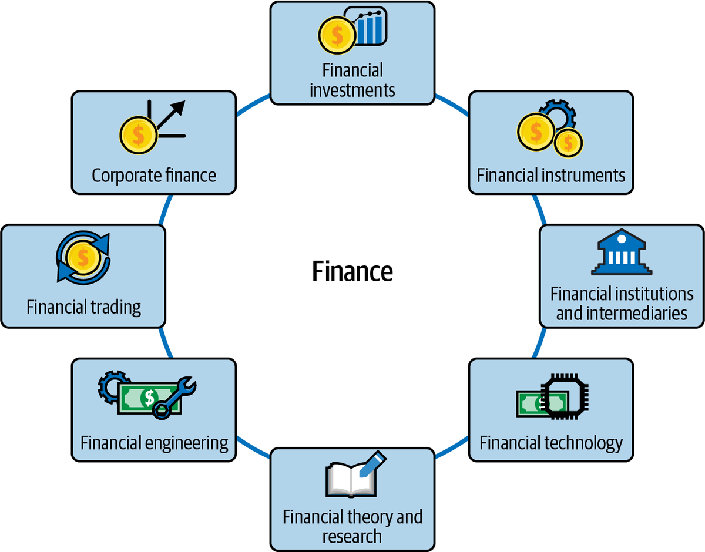
경제적 기능으로서의 금융
경제학 이론에서 금융은 적자(deficit) 주체(가진 돈보다 더 많은 돈이 필요한 주체)와 흑자(surplus) 주체(지출하는 돈보다 더 많은 돈을 가진 주체) 사이를 중개하는 제도입니다. 자금을 확보하기 위해 적자 주체는 이자 지급을 대가로 흑자 주체로부터 자금을 차입하겠다고 제안합니다.
이러한 관점은 경제에서 금융이 갖는 필수적인 역할을 잘 보여줍니다. 금융은 개인에게 저축을 투자할 수단을 제공하고, 가계가 주택담보대출(모기지)을 통해 주택을 구입할 수 있게 하며, 기업이 사업을 시작할 수 있는 자본을 제공하고, 대학이 자산을 투자하여 캠퍼스를 확장할 수 있도록 지원하며, 정부가 사회적 필요를 충족하기 위한 공공 프로젝트에 자금을 조달할 수 있도록 해줍니다.
경제학자들에게 금융은 경제 성장의 주요 원동력 중 하나입니다. 이것이 바로 건실한 경제일수록 규모가 크고 효율적이며 포용적인 금융 시장을 보유하는 경향이 있는 이유입니다. 금융 시장의 안정성과 공정성을 보장하기 위해 여러 규제 기관과 규정이 제정되었습니다.
금융 경제학자들이 자주 연구하는 주요 주제 중 하나는 시장 균형(market equilibrium)으로, 이는 수요와 공급이 만나 안정적인 시장 가격이 형성되는 상태를 말합니다. 금융 시장에서 이 가격은 일반적으로 이자율로 표현되며, 공급과 수요는 유통되는 통화량을 반영합니다. 수요가 공급을 초과하면 일반적으로 이자율이 상승하는 반면, 공급이 수요를 초과하면 이자율은 하락하는 경향이 있습니다. 중앙은행과 같은 기관은 시장 이자율을 균형 상태에 최대한 가깝게 유지하는 것을 목표로 통화 정책을 실행하기 위해 설립되었습니다.
시장으로서의 금융
개인과 기업이 금융 활동에 효율적으로 참여할 수 있도록 금융 시장(financial markets)이 등장했으며, 이곳에는 수많은 금융 기관, 상품 및 서비스가 존재합니다. 오늘날 잘 발달된 금융 부문을 살펴보면 다음과 같은 매우 다양한 시장 참여자들을 볼 수 있습니다.
- 상업은행 (예: HSBC, 뱅크오브아메리카)
- 투자은행 (예: 모건스탠리, 골드만삭스)
- 자산운용사 (예: 블랙록, 뱅가드 그룹)
- 증권거래소 (예: 뉴욕증권거래소[NYSE], 런던증권거래소, 시카고상업거래소)
- 헤지펀드 (예: 시타델, 르네상스 테크놀로지스)
- 뮤추얼 펀드 (예: 뱅가드 미드캡 밸류 인덱스 펀드)
- 보험사 (예: 알리안츠, AIG)
- 중앙은행 (예: 연방준비제도, 유럽중앙은행)
- 정부후원기업 (예: 패니메이, 프레디맥)
- 규제 기관 (예: 미국 증권거래위원회[SEC])
- 업계 협회 (예: 미국 증권금융시장협회[SIFMA])
- 신용평가사 (예: S&P 글로벌 레이팅스, 무디스)
- 데이터 벤더 (예: 블룸버그, 런던증권거래소그룹[LSEG])
- 핀테크 기업 (예: 레볼루트, 와이즈, 베터먼트)
- 빅테크 기업 (예: 아마존 캐시, 아마존 페이, 애플 페이, 구글 페이)
참고
“금융 기관(financial institution)”, “금융 회사(financial firm)”, “금융 기업(financial company)”, “금융 조직(financial organization)”이라는 용어는 종종 혼용되어 사용될 수 있습니다. 그러나 경제학 이론의 관점에서 볼 때 “금융 기관”이 가장 적절한 표현일 수 있습니다. 이는 금융 시장 내에서 특정한 목적이나 기능을 수행하는 모든 회사, 기관, 기업, 조직을 아우르는 추상적 개념을 나타내기 때문입니다. 이러한 이유로 이 책 전반에서는 주로 “금융 기관”이라는 용어를 사용하겠습니다.
금융 시장에서 교환의 기본 단위를 통칭하여 금융 자산(asset), 금융 상품(instrument) 또는 유가증권(security)이라고 부릅니다. 금융 시장에서 매매될 수 있는 금융 자산은 매우 다양합니다. 대표적인 예는 다음과 같습니다.1
- 기업 주식 (예: 보통주)
- 고정수익 증권 (채권) (예: 회사채, 국채)
- 파생상품 (예: 옵션, 선물, 스왑, 선도)
- 펀드 지분 (예: 뮤추얼 펀드, 상장지수펀드[ETF])
금융 상품과 거래의 종류가 방대하고 다양하기 때문에 금융 시장은 다음과 같은 범주로 세분화됩니다.
- 단기금융시장 (화폐시장) (유동성이 높은 단기 거래)
- 자본시장 (장기 거래)
- 발행시장 (새로 발행된 금융 상품 거래)
- 유통시장 (이미 발행된 금융 상품 거래)
- 외환시장 (통화 거래)
- 상품(원자재) 시장 (금, 원유 등 원자재 거래)
- 주식시장 (주식 거래)
- 채권(고정수익) 시장 (채권 거래)
- 파생상품시장 (파생상품 거래)
인베스토피디아: 금융 교육을 위한 온라인 리소스
특정 금융 용어에 대해 빠르게 알아보고 싶다면 인베스토피디아(Investopedia)를 방문하는 것이 가장 좋습니다. 인베스토피디아는 금융 및 투자 콘텐츠를 제공하는 세계 최고의 온라인 플랫폼입니다. 금융 용어, 정의, 뉴스, 투자 및 금융 교육에 관한 정보를 제공합니다. 인베스토피디아는 금융을 처음 배우는 초보자이든, 더 깊이 있는 금융 지식을 얻고자 하는 투자자이든 관계없이 금융에 대해 더 많이 배우고자 하는 모든 사람에게 유용한 리소스입니다. 인베스토피디아의 글은 금융 전문가가 작성, 검토 및 팩트 체크를 진행하므로 게시된 콘텐츠의 신뢰성과 품질이 매우 높습니다.
흥미롭게도 금융 시장은 유수 대학의 재무/금융학과와 전문 금융 연구기관에서 개발한 연구 및 방법론에 크게 의존하고 이를 바탕으로 발전해 왔습니다. 다음 절에서는 금융 연구의 본질과 주요 영역을 간략히 살펴봅니다.
연구 분야로서의 금융
금융은 학술 및 실증 연구가 활발히 이루어지는 방대한 분야입니다. 주요 연구 분야 중 하나는 위험(불확실성)을 내포한 자산(예: 주식, 채권, 파생상품 등)에 대한 청구권의 가격을 이해하고 계산하는 것을 목표로 하는 자산 가격 결정 이론(asset pricing theory)입니다. 이 이론에서는 낮은 가격이 종종 높은 수익률로 이어지므로, 금융 자산 가격 결정 이론은 특정 금융 자산이 왜 다른 자산보다 더 높은 평균 수익률을 지급하는지(혹은 지급해야 하는지)를 설명하는 방법으로 볼 수 있습니다.
금융 연구의 또 다른 주요 분야는 금융 자산 또는 자산 포트폴리오의 미래 가치를 둘러싼 불확실성을 측정하고 관리하는 데 초점을 맞추는 리스크 관리(risk management)입니다. 그 밖의 연구 영역으로는 포트폴리오 관리, 기업 재무, 재무 회계, 신용 평가(크레딧 스코어링), 금융 공학, 주가 예측, 성과 평가 등이 있습니다.
금융 연구 결과를 발표하기 위해 다양한 동료 평가(peer-reviewed) 학술지가 운영되고 있습니다. 이 중 일부는 광범위한 주제를 다루고, 일부는 보다 전문화된 주제를 다룹니다. 몇 가지 예는 다음과 같습니다.
The Journal of Finance: 금융의 모든 주요 영역에 대한 이론 및 실증 연구를 다룸
The Review of Financial Studies: 금융경제학의 이론적 및 실증적 주제를 다룸
The Journal of Banking and Finance: 금융 기관 및 화폐·자본 시장에 초점을 맞추어 금융 및 은행 업무의 이론적·실증적 주제를 다룸
Quantitative Finance: 금융의 퀀트 방법론에 관한 학제 간 이론 및 실증 연구를 다룸
The Journal of Portfolio Management: 리스크 관리, 포트폴리오 최적화, 성과 측정 등 금융 및 투자와 관련된 주제를 다룸
The Journal of Financial Data Science: 머신러닝, 인공지능, 빅데이터 분석을 활용한 금융 분야의 데이터 기반 연구를 다룸
The Journal of Securities Operations & Custody: 증권 거래, 청산, 결제, 금융 표준 등과 관련된 주제 및 이슈를 다룸
학술지 외에도 금융 연구의 최신 동향을 공유하고 논의하기 위해 수많은 콘퍼런스, 행사, 서밋이 정기적으로 개최됩니다. 대표적으로 서부금융학회(WFA) 학술대회, 미국금융학회(AFA) 학술대회, 금융연구협회(SFS) 카발케이드(Cavalcades) 등이 있습니다. 또한, 투자 연구 및 포트폴리오 관리에서 강력한 윤리적·기술적 기반을 다지고자 하는 금융 전문가 지망생을 위해 공인재무분석사(CFA)와 같은 세계적으로 인정받는 자격증도 마련되어 있습니다.
기술로서의 금융
마지막으로 금융은 모든 종류의 금융 거래와 활동을 가능하게 하는 기술과 도구의 집합을 가리킬 수도 있습니다. 대표적인 예는 다음과 같습니다.
- 결제 시스템 (모바일, 비접촉식, 실시간, 디지털 지갑, 결제 게이트웨이 등)
- 블록체인 및 분산 원장 기술 (DLT)
- 금융 시장 인프라 (예: 유로클리어[Euroclear], 클리어스트림[Clearstream], 페드와이어[Fedwire], T2, 찹스[CHAPS])
- 트레이딩 플랫폼
- 증권거래소 (예: NYSE, 나스닥[NASDAQ], 도쿄증권거래소)
- 주식 시장 데이터 시스템
- 현금자동입출금기 (ATM)
- 주문 관리 시스템 (OMS)
- 리스크 관리 시스템
- 알고리듬 트레이딩 및 고빈도 매매 (HFT) 시스템
- 스마트 주문 라우팅 (SOR) 시스템
금융 부문의 이처럼 다양한 기술은 글로벌 금융 시장의 효율성과 신뢰성을 유지하는 데 매우 중요합니다.
데이터 엔지니어링의 정의
이제 금융에 대한 기초적인 이해를 마쳤으므로 금융 데이터 엔지니어링이 무엇인지 살펴보겠습니다. 이를 위해 먼저 업계에서 널리 통용되는 용어인 전통적인 데이터 엔지니어링부터 설명하겠습니다.
구글에서 “what is data engineering(데이터 엔지니어링이란 무엇인가)”이라는 단어를 검색하면 20억 개 이상의 검색 결과가 나옵니다. 이는 엄청난 양이지만, 좀 더 실용적인 조사를 위해 구글 학술검색(Google Scholar)에서 제목에 “data engineering”이라는 용어가 포함된 논문과 서적을 검색해 볼 수 있습니다. 그림 1-2에서 보듯, 이러한 검색은 비교적 많은 결과(약 2,290건의 학술 출판물)를 반환합니다.
그림 1-2. 제목에 ’data engineering’이 포함된 출판물에 대한 구글 학술검색 결과
구글 학술검색이 반환하는 데이터 엔지니어링 관련 출판물 중 일부를 읽어보시기를 적극 권장합니다. 흥미롭게도 데이터 엔지니어링에 대한 정의가 매우 다양하다는 것을 금방 알 수 있을 것입니다. 이는 데이터 엔지니어링 분야가 소프트웨어 엔지니어링, 인프라 엔지니어링, 데이터 분석, 네트워킹, 소프트웨어 및 데이터 아키텍처, 데이터 거버넌스, 기타 데이터 관리 관련 분야 등 여러 분야의 교차점에 위치해 있기 때문에 당연한 결과입니다.2
이해를 돕기 위해 몇 가지 엄선된 정의를 살펴보겠습니다.
데이터 엔지니어링은 원천 데이터(raw data)를 수집하여 분석 및 머신러닝과 같은 다운스트림 사용 사례를 지원하는 고품질의 일관된 정보를 생성하는 시스템과 프로세스를 개발, 구현, 유지 관리하는 일이다. 데이터 엔지니어링은 보안, 데이터 관리, DataOps, 데이터 아키텍처, 오케스트레이션, 소프트웨어 엔지니어링의 교차점이다.
조 라이스(Joe Reis) & 맷 하우슬리(Matt Housley), 데이터 엔지니어링 기초(Fundamentals of Data Engineering) (O’Reilly, 2022)
데이터 엔지니어링은 데이터의 이동, 조작, 관리에 관한 모든 것이다.
루이스 개빈(Lewis Gavin), What Is Data Engineering? (O’Reilly, 2019)
데이터 엔지니어링은 사람들이 다양한 소스와 형식의 원천 데이터를 수집하고 분석할 수 있는 시스템을 설계하고 구축하는 프로세스다. 이러한 시스템을 통해 사람들은 비즈니스가 성장하는 데 활용할 수 있는 데이터의 실질적인 응용 방안을 찾을 수 있다.
보시다시피 세 가지 정의는 모두 사뭇 다르지만, 핵심적인 정의 요소를 추출해 보면 데이터 엔지니어링은 조직이 하나 이상의 소스로부터 데이터를 가져오고(retrieve), 이를 변환(transform)하여 대상 저장소에 저장(store)하고, 최종 사용자가 소비(consume)할 수 있도록 해주는 인프라의 설계(design) 및 구현(implementation)을 중심으로 이루어진다는 점을 유추할 수 있습니다. 물론 실제 환경에서 이러한 프로세스의 복잡성은 상황에 따라 달라지는 기술적·비즈니스적 요구사항과 제약 조건에 의해 결정됩니다. 이러한 맥락을 고려하여 이 책에서는 데이터 엔지니어링을 다음과 같이 정의합니다.
데이터 엔지니어링은 데이터 수집, 변환, 저장, 전달과 같은 작업을 안정적이고 안전하게 수행하기 위한 데이터 인프라를 설계하고 구현하는 데 초점을 맞춘 실무 및 연구 분야다. 이 인프라는 다양한 비즈니스 요구사항, 업계 관행, 규제 준수 및 개인정보 보호 고려사항과 같은 외부 요인을 충족하도록 맞춤화된다.
이 책 전반에서는 금융 데이터 엔지니어링의 초석으로서 금융 데이터 인프라라는 개념에 집중할 것입니다. 이와 함께 금융 데이터를 저장, 처리, 관리, 전송하기 위한 물리적(하드웨어) 및 가상(소프트웨어) 자원과 시스템을 포함하는 금융 데이터 인프라의 구성 요소들을 살펴봅니다. 또한 보안, 추적 가능성, 확장성, 관측 가능성(observability), 신뢰성과 같이 금융 데이터 인프라에 필수적인 역량과 특성을 논의할 것입니다.
이 정의를 염두에 두고, 이제 금융 데이터 엔지니어링의 의미를 명확히 짚어보겠습니다.
금융 데이터 엔지니어링의 정의
금융 데이터 엔지니어링은 전통적인 데이터 엔지니어링의 도구, 패턴, 실무 관행, 기술의 대부분을 공유합니다. 그러나 금융 데이터 인프라를 설계하고 구축할 때 전통적인 데이터 엔지니어링에만 의존하는 것으로는 충분하지 않습니다. 복잡한 금융 데이터 지형(예: 수많은 데이터 소스, 유형, 벤더, 구조 등), 리포팅 및 거버넌스를 위한 규제 요건, 식별자 및 개체(entity) 시스템 관련 과제, 속도 및 규모 측면의 특수한 요구사항, 전달·수집·저장·처리에 대한 다양한 제약 조건 등 도메인 특화된 문제를 마주하게 될 가능성이 매우 높기 때문입니다.3
이러한 도메인 주도적 특수성을 고려할 때, 금융 데이터 엔지니어링은 전통적인 데이터 엔지니어링, 금융 도메인 지식, 금융 데이터 사이의 교차점에 위치하는 전문화된 분야로 다루어질 필요가 있습니다(그림 1-3 참조). 보다 공식적으로 이 책에서는 금융 데이터 엔지니어링을 다음과 같이 정의합니다.
금융 데이터 엔지니어링은 안전하고 규정을 준수하며 신뢰할 수 있는 표준을 따르면서 다양한 소스, 주기, 구조, 전달 방식, 형식, 식별자, 개체로부터 발생하는 금융 데이터의 수집, 변환, 저장, 소비, 모니터링, 관리를 가능하게 하는 데이터 인프라를 설계, 구현, 유지 관리하는 도메인 주도적 실무 분야다.
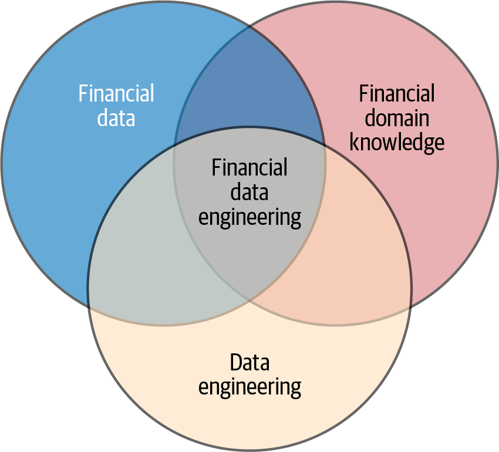
참고
금융 데이터 엔지니어링을 금융공학(financial engineering)과 혼동하지 마십시오. 금융공학은 수학, 통계학, 계량경제학, 금융 이론, 컴퓨터 과학을 활용하여 금융 투자 전략, 금융 상품, 금융 프로세스를 개발하는 학제 간 응용 분야입니다.4
도메인 주도 설계
도메인 특화 지식과 요구사항에 따라 소프트웨어 시스템을 설계하는 것은 흔히 사용되는 방식입니다. 이 맥락에서 가장 두드러진 접근 방식은 바로 도메인 주도 설계(Domain-Driven Design, DDD)입니다. DDD는 비즈니스 도메인을 모델링하고 설계하여 소프트웨어가 품질과 기능 측면에서 비즈니스 요구사항과 일치하도록 보장하는 데 중점을 둡니다. 이 접근 방식에서는 엔지니어와 도메인 전문가 간의 긴밀한 협력을 통해 공통된 이해와 “유비쿼터스 언어(ubiquitous language)”로 알려진 통일된 언어를 구축하고 프로젝트 전반에서 이를 일관되게 사용해야 합니다.
DDD는 주어진 비즈니스 문제를 여러 도메인으로 나눕니다. 도메인은 소프트웨어 애플리케이션이 해결하고자 개발되는 문제 공간을 말합니다. 예를 들어 은행 애플리케이션에서 도메인은 계좌, 결제, 거래, 고객, 현금 관리, 유동성 관리 등이 될 수 있습니다. 도메인은 하위 도메인으로 더 세분화될 수 있는데, 예를 들어 현금 관리는 주어진 컨텍스트에 의해 경계가 정해지는 수금 관리 및 현금 흐름 예측과 같은 하위 도메인을 가질 수 있습니다.
이제 금융 데이터 엔지니어링이 무엇인지 알았으므로, 이것이 금융 기관과 시장에 왜 중요한지, 왜 이에 관한 책을 써야 하는지 궁금할 것입니다. 다음 절에서는 이러한 질문을 자세히 다룹니다.
왜 금융 데이터 엔지니어링인가?
이 책의 주된 목표 중 하나는 금융 데이터 엔지니어링이 이를 특징짓는 도메인 주도적 요소 측면에서 얼마나 독특한지를 보여주는 것입니다. 시장에서 금융 데이터 엔지니어링을 요구하는 이유를 이해하려면 금융 부문의 데이터 기반 요구와 트렌드를 형성하고 이끄는 주요 요인을 살펴보는 것이 매우 중요합니다. 다음 절들에서 이러한 요인들을 자세히 설명하겠습니다.
금융 데이터의 규모(Volume), 다양성(Variety), 속도(Velocity)
금융 부문을 변화시키고 있는 주요 요인 중 하나는 빅데이터입니다. 이 책에서 빅데이터는 거대한 크기(규모, volume), 높은 차원성과 복잡성(다양성, variety), 생성 속도(속도, velocity)라는 세 가지 속성의 결합으로 간단히 정의됩니다. 이 세 가지 V를 자세히 살펴보겠습니다.
규모 (Volume)
빅데이터를 논할 때 기본적으로 크기(규모)에 관한 것임을 부인하기 어렵습니다. 데이터는 절대적 관점에서도, 상대적 관점에서도 커질 수 있습니다. 데이터가 눈에 띄게 방대하고 비선형적인 양으로 생성되는 경우 절대적인 관점에서 크다고 말합니다. 데이터 크기의 절대적 증가는 종종 데이터 생성 프로세스에 구조적 변화를 가져오는 사회기술적 변화의 결과입니다. 예를 들어 과거에는 카드 결제가 주로 고액 구매에 국한되어 비교적 제한적이었던 반면, 오늘날 카드 및 모바일 결제 방식의 광범위한 보급은 일상적인 거래 방식을 변화시켜 식료품부터 전자기기에 이르기까지 거의 모든 결제에 카드와 스마트폰을 사용하고 있습니다. 이는 결과적으로 생성 및 수집되는 결제 데이터 양의 (괄목할 만한) 절대적 증가로 이어졌습니다.
또한 디지털 자동화 기술, 특히 전자 교환 메커니즘의 급격한 발전과 도입으로 인해 생성되는 금융 데이터의 순수한 규모가 절대적으로 증가했습니다. 고빈도 매매(HFT)의 등장이 좋은 예입니다. 일례로 뉴욕증권거래소의 고빈도 데이터셋인 TAQ(Trade and Quotes)의 단 하루치 데이터만 해도 약 23억 개의 레코드로 구성됩니다. 고빈도 매매 기술의 도입으로 금융 데이터는 밀리초(1,000분의 1초), 마이크로초(100만분의 1초), 심지어 나노초(10억분의 1초) 단위에 이르는 극도로 미세한 간격으로 기록되기 시작했습니다.
반면, 기존의 다른 데이터셋에 비해 크기가 큰 경우 데이터를 상대적으로 크다고 간주합니다. 데이터 수집 역량의 향상은 아마도 금융 데이터 볼륨의 상대적 증가를 이끄는 주된 요인일 것입니다. 이는 보다 효율적인 데이터 수집을 가능하게 하는 기술 발전, 더욱 엄격한 데이터 수집 및 보고 요건을 부과하는 규제 요건, 리스크 관리를 위한 데이터 수집을 필요로 하는 금융 상품의 복잡성 증대, 금융 부문 내에서 데이터 기반 인사이트에 대한 수요 증가 등에 의해 촉진되었습니다. 예를 들어 미국 내 회원 옵션 거래소의 모든 거래 및 호가를 수집하고 통합하는 미국 옵션가격보고국(OPRA)은 2024년 2월 초당 4,590만 건이라는 놀라운 최대 메시지 처리 속도를 기록했습니다.5
방대한 양의 금융 데이터는 새로운 기회의 장을 열어줍니다.
- 소규모 데이터셋에 존재할 수 있는 표본 선택 편향(sample selection bias) 극복
- 투자자와 트레이더가 고빈도 시장 데이터에 접근할 수 있도록 지원
- 소규모 데이터셋에는 나타나지 않는 패턴 및 금융 활동 포착
- 사기(이상 거래), 시장 이상 징후 및 불법 행위 모니터링 및 탐지
- 복잡하고 비선형적인 신호를 포착할 수 있는 고급 머신러닝 및 데이터 마이닝 기법의 활용 가능
- 관측치 수에 비해 특성(feature) 수가 지나치게 많은 머신러닝의 고차원성 문제 완화
- 데이터로부터 파생되고, 데이터와 함께 개선되며, 추가 데이터를 생성하는 금융 데이터 제품의 개발 촉진
그러나 이러한 기회에는 주로 데이터 엔지니어링과 관련된 기술적 과제가 수반됩니다.
- 다양한 소스로부터 대량의 금융 데이터를 효율적으로 수집 및 저장
- 사용자가 방대한 데이터셋을 신속하게 조회할 수 있는 쿼리 시스템 설계
- 어떤 데이터 크기든 원활하게 처리할 수 있는 데이터 인프라 구축
- 데이터 품질과 무결성을 보장하기 위한 규칙 및 절차 수립
- 여러 소스로부터 대규모 데이터 집계
- 여러 고빈도 데이터셋 간의 레코드 연결
데이터가 생성되고 수집되는 빈도는 금융 데이터 볼륨에 큰 영향을 미칩니다. 초당 100만 개의 레코드를 생성하는 프로세스는 초당 1,000개의 레코드를 생성하는 프로세스에 비해 훨씬 더 큰 데이터 볼륨을 생성합니다. 이러한 데이터 생성 속도를 데이터 속도(velocity)라고 하며, 다음 절에서 이를 다룹니다.
속도 (Velocity)
데이터 속도는 데이터가 생성되고 수집되는 속도를 의미합니다. 최근 몇 년 동안 금융 시장에서 데이터 생성 속도가 빨라졌습니다. 고빈도 매매, 금융 거래, 금융 뉴스 피드, 금융 관련 소셜 미디어 게시물 모두 빠른 속도로 데이터를 생성합니다.
금융 데이터 속도가 빨라짐에 따라 새로운 기회가 생겨납니다.
- 데이터 생성 직후 도착하므로 더 빠른 대응 시간 확보
- 1시간, 1분 또는 1초 내에 발생하는 가격 변동 및 패턴과 같은 장중(intraday) 역학에 대한 더 깊고 즉각적인 인사이트 확보
- 향상된 시장 모니터링
- 알고리듬 트레이딩 및 고빈도 매매를 포함한 새로운 트레이딩 전략 개발
결정적으로 높은 데이터 속도는 데이터 인프라에 중요한 과제를 던져줍니다.
볼륨(Volume): 실시간으로 유입되는 대량의 데이터를 처리할 수 있는 이벤트 기반 시스템을 구축하는 방법
속도(Speed): 금융 시장의 정보 전송 속도에 안정적으로 대처할 수 있는 데이터 인프라를 구축하는 방법
반응 시간(Reaction time): 새로운 데이터 유입에 최대한 신속하게 반응하면서도 품질 검사와 신뢰성을 보장하는 파이프라인을 구축하는 방법
다양성/멀티스트림(Variety/multistream): 실시간으로 여러 소스에서 들어오는 다양한 유형의 데이터를 처리하는 방법
금융 데이터 볼륨의 기하급수적인 증가와 데이터 생성 속도는 단일한 형태로만 일어나지 않습니다. 이러한 성장과 더불어 다양한 비즈니스 및 기술적 요구사항을 충족하기 위해 새로운 데이터 유형, 형식, 구조가 등장했습니다. 다음 절에서는 이러한 데이터의 다양성을 심층적으로 살펴봅니다.
다양성 (Variety)
빅데이터를 정의하는 세 번째 특징은 다양성(Variety)으로, 이는 데이터 유형, 포맷 또는 구조의 다양함을 의미합니다. 이 개념을 더 명확하게 설명하기 위해 데이터가 가질 수 있는 세 가지 구조 유형을 살펴보겠습니다.
정형 데이터(Structured data): 명확한 형식과 데이터 모델을 갖추고 있어 정리 및 저장이 용이하며, 즉시 분석에 활용할 수 있는 데이터입니다. 가장 대표적인 예는 행과 열로 구성된 테이블 형태의 데이터입니다.
반정형 데이터(Semi-structured data): 직관적인 테이블 형식은 아니지만 관리가 가능하도록 일정 수준의 구조적 속성을 지닌 데이터입니다. 대개 사용 편의를 위해 파싱을 거쳐 테이블 형식으로 변환된 후 저장됩니다. 계층적 트리 구조로 데이터를 저장하는 XML과 JSON이 대표적입니다.
비정형 데이터(Unstructured data): 사전 정의된 구조나 형식이 전혀 없는 데이터로, 분석 전에 특화된 기법을 활용한 파싱 및 전처리가 필수적입니다. PDF, HTML, 텍스트, 비디오, 오디오 등 전 세계 데이터의 대다수가 비정형 데이터에 해당합니다.
최근 몇 년 동안 금융 데이터의 다양성은 크게 증가했습니다. 예를 들어 미국 증권거래위원회(SEC)의 전자공시시스템인 EDGAR(Electronic Data Gathering, Analysis, and Retrieval)는 연간 약 200만 건의 공시 서류를 접수하고 처리합니다. 이러한 공시 서류는 복잡한 문서 형태로, 다수의 첨부파일, 수십 쪽에 달하는 분량, 수천 개에 이르는 세부 정보를 포함하는 경우가 많습니다. 또 다른 예로는 뉴스, 날씨, 위성 이미지, 소셜 미디어 게시물, 웹 검색 활동과 같은 대체 데이터(Alternative Data) 소스가 있으며, 이는 금융 분석 및 상품 개발에 매우 유용한 것으로 입증되었습니다.6
금융 데이터의 다양성 증가는 다음과 같은 새로운 기회를 열어줍니다.
- 금융 분석에 새로운 변수를 통합하여 예측력 향상
- 정형 데이터만으로는 분석할 수 없었던 새로운 경제 및 금융 활동 파악
- 뉴스 분석(News Analytics), 사기 탐지(Fraud Detection), 금융 네트워크 분석 등 혁신적인 금융 상품 개발 및 통합 촉진
- 복잡한 시장 구조를 포착하여 규제 기관의 감독 역량 강화
하지만 데이터 다양성은 데이터 엔지니어링 측면에서 여러 과제를 안겨주기도 합니다.
- 정형, 반정형, 비정형 포맷을 포함한 다양한 유형의 금융 데이터를 효율적으로 저장하고 관리할 수 있는 데이터 인프라 구축
- 다양한 데이터 유형을 단일 접근 지점으로 통합하는 데이터 수집(집계) 시스템 구현
- 새로운 구조의 금융 데이터를 정제하고 변환하기 위한 방법론 개발
- 텍스트를 위한 자연어 처리(NLP), 이미지를 위한 딥러닝 등 다양한 유형의 금융 데이터를 처리하는 전문 파이프라인 구축
- 광범위한 데이터 소스에 걸쳐 개체를 연결하기 위한 식별 및 엔티티 관리 시스템 구현
금융 데이터에서의 차원의 저주 주의하기
최근 수십 년간 금융 데이터의 규모(Volume)가 크게 증가했지만, 관측치 수와 변수(특성) 수 사이의 비율에 특별한 주의를 기울여야 합니다. 예를 들어 10개 기업과 이들의 성과를 나타내는 5개 특성(예: 매출액, 순이익 등)으로 구성된 초기 표본이 있다고 가정해 봅시다. 데이터의 크기가 관측치(더 많은 기업)와 변수(더 많은 특성) 양쪽 모두에서 증가한다면, 새로 확장된 표본으로 신뢰할 수 있는 분석을 수행할 수 있습니다. 그러나 데이터 크기의 증가가 주로 특성에만 국한되고 관측치는 늘어나지 않는다면(즉, 데이터셋에 기업이 추가되지 않는다면), 차원의 저주(Curse of Dimensionality)라는 문제에 직면할 수 있습니다. 차원의 저주란 통계 모델이나 머신러닝 모델이 유효한 예측을 생성하기 위해서는 특성의 수가 증가함에 따라 관측치의 수가 기하급수적으로 늘어나야 한다는 것을 의미합니다. 일부 연구자들은 자산 관리와 같은 특정 금융 분야에서 이러한 현상이 실제로 발생하고 있다고 지적합니다. 차원의 저주에 대응하기 위해 데이터 증강(Data Augmentation) (더 많은 데이터 수집 또는 생성) 및 차원 축소(Dimensionality Reduction) (데이터의 특성 수 줄이기)와 같은 다양한 기법을 사용할 수 있습니다.
금융 고유의 데이터 요구사항과 문제점
금융 산업은 끊임없는 변화를 겪어왔습니다. 새로운 참여자가 진입하여 경쟁 구도를 흔들고, 금융 시장의 작동 방식을 혁신하는 신기술이 등장하며, 새로운 데이터 소스가 기회의 영역을 확장하고, 새로운 표준과 규제가 발표, 장려, 시행되고 있습니다.
이러한 역동성 속에서 금융 산업은 참여자들이 마주하는 문제와 과제 측면에서도 고유한 특징을 지닙니다. 주요 과제는 다음과 같습니다.
몇몇 핵심 영역에서의 표준화 부족:
- 금융 데이터 식별 체계
- 금융 자산 및 업종 분류 체계
- 금융 정보 교환 표준
금융 거래 처리를 위한 확립된 데이터 표준의 부재
분산되고 다양한 금융 데이터 소스
기업, 데이터 벤더, 공급업체, 규제 기관 간의 서로 다른 데이터 포맷 채택
금융 데이터셋 내 엔티티 매칭 및 식별의 복잡성
금융 기준 데이터(Reference Data)를 정의, 저장, 관리하기 위한 신뢰할 수 있는 방법의 부재 (2장에서 설명)
부실한 데이터 수집 프로세스로 인해 다양한 금융 문제를 이해하고 관리하는 데 필요한 데이터 부족 (예: 시스템적 리스크 분석에 필수적인 금융 시장 상호의존성 및 익스포저에 대한 상세 데이터 부족)
새로운 시장 및 규제 요구를 충족하기 위해 데이터 및 기술 인프라를 지속적으로 개편해야 하는 필요성 (예: EU의 즉시 지급 규정(Instant Payments Regulation) 은 모든 지급결제 서비스 제공업체가 연중무휴 24시간 몇 초 내에 유로화 지급결제를 제공하도록 요구하여 레거시 시스템 업그레이드가 불가피함)
다양한 규제 및 시장 목적을 위해 금융 데이터를 지속적으로 기록, 저장, 공유해야 하는 요구사항 (예: EU의 중앙 결제 정보 전자 시스템(CESOP) 은 결제 시스템 제공업체가 국경 간 결제 데이터를 추적하여 EU 회원국 과세 당국과 공유하도록 의무화함)
금융 데이터 정제 및 품질 보증을 위한 표준화된 실무 관행의 부재
금융기관 내 다양한 사일로(Silo)와 사업 부서 간 데이터 통합의 어려움
다양한 거래소의 체결 및 호가 정보를 포함하여 여러 소스의 시장 데이터를 통합하는 통합 시세 테이프(Consolidated Tape) 구축에 따른 기술적·시장적 과제 지속
혁신 및 경쟁력 확보와 규제 준수 간의 균형 유지
클라우드 마이그레이션 전략에서의 보안, 개인정보 보호, 성능에 대한 지속적인 우려
조직의 관성과 위험 회피 성향으로 인한 레거시 기술 시스템에 대한 지속적인 의존
수년에 걸쳐 이러한 문제를 해결하기 위해 다양한 업계 및 규제 이니셔티브가 제안되었습니다. 예를 들어 금융 서비스 및 상품의 표준화된 제공을 촉진하기 위해 미국에서는 금융 산업을 위한 자발적 합의 표준을 개발, 유지, 촉진하는 공인 표준 위원회 X9(ASC X9, Accredited Standards Committee X9)를 설립했습니다. ASC X9은 미국의 국가 표준을 제정할 뿐만 아니라, 스위스 제네바의 국제표준화기구(ISO)에 표준을 제출하여 국제 ISO 표준으로 채택되도록 할 수 있습니다. ASC X9은 금융기관을 위한 전자 법적 명령, 전자 복지 및 모바일 결제, 금융 식별자, 고속 결제 시스템, 암호화 기술, 결제 메시지 등 다양한 분야와 기술에 대한 표준을 개발합니다.
또한 ISO 기반 금융 식별자의 채택을 조율하고 촉진하기 위해 국가번호부여기관협회(ANNA, Association of National Numbering Agencies)와 같은 국제기구가 설립되었습니다(3장에서 다룸). 기업 정보의 전파 및 보고를 표준화하기 위해 확장성 비즈니스 보고 언어(XBRL, eXtensible Business Reporting Language) 와 같은 프레임워크도 개발되었습니다(7장에서 다룸). 2007~2008년 글로벌 금융 위기 이후 금융 업계는 시장 거래에 참여하는 법인에 대한 표준화된 식별자의 필요성을 인식하였고, 이는 널리 알려진 법인식별기호(LEI, Legal Entity Identifier)의 개발로 이어졌습니다(3장에서 다룸).
나아가 금융 시장 참여자들 역시 앞서 언급한 문제들을 해결하기 위해 적극적으로 기여하고 솔루션을 제공해 왔습니다. 몇 가지 예를 들면, 블룸버그(Bloomberg)는 금융 상품 식별을 위한 개방형 표준으로 금융상품 식별코드(FIGI, Financial Instrument Global Identifier) 를 보급하고 있으며, LSEG(런던증권거래소 그룹)는 기존 시장 식별자를 보완하기 위해 영구 식별자(PermID, Permanent Identifier) 를 출시했습니다. 또한 JP모건(JPMorgan)과 같은 금융기관은 1990년대에 Value at Risk (VAR)와 같은 시장 실무 도입을 주도했으며, 최근에는 빠르고 실시간인 데이터 거래를 지원하기 위해 금융 API의 활용을 선도하고 있습니다.
금융 머신러닝
머신러닝(ML)은 금융 산업의 미래를 형성할 가장 유망한 투자 분야 중 하나로 꼽힙니다. 머신러닝이 무엇인지 이해하려면 먼저 인공지능(AI)이 무엇인지 이해하는 것이 좋습니다. 인공지능에 대해 보편적으로 합의된 정의는 없지만, 가장 단순한 형태로서의 AI는 지능의 본질을 이해하여 음성 인식, 시각 인지, 의사결정, 언어 이해 등 일반적으로 인간의 지능이 필요한 작업을 안정적으로 수행할 수 있는 시스템을 구축하는 것을 목표로 합니다. 그림 1-4는 인공지능의 다양한 연구 분야를 보여줍니다.
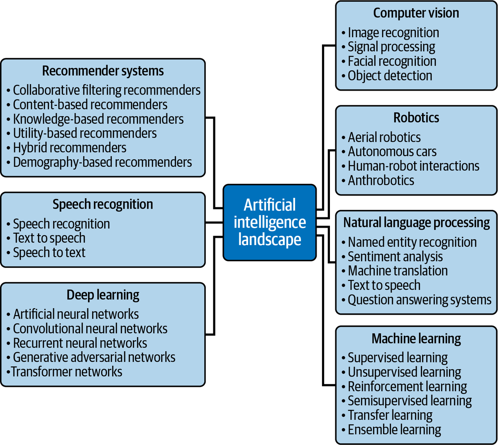
머신러닝은 AI 내에서 매우 대중적이고 중요한 하위 분야로 자리 잡고 있습니다. 머신러닝은 데이터로부터 패턴을 발견하고, 오류로부터 학습하며, 예측을 수행할 수 있는 시스템을 구축하는 데 중점을 둡니다. 머신러닝의 핵심 단어는 학습(Learning) 이며, 컴퓨터 과학자 톰 미첼(Tom Mitchell)은 이를 다음과 같이 명쾌하게 설명했습니다.7
어떤 작업 클래스 T와 성능 측정 기준 P에 대하여, 작업 T에서의 성능(P로 측정됨)이 경험 E를 통해 향상된다면, 컴퓨터 프로그램이 경험 E로부터 학습한다고 말할 수 있다.
머신러닝 과학자와 실무자들은 대개 세 가지 학습 유형인 지도학습, 비지도학습, 강화학습을 기반으로 모델을 개발합니다. 각각을 자세히 살펴보겠습니다.
지도학습 (Supervised learning)
지도학습은 일련의 설명 변수(특성(Features))와 반응 변수(라벨(Label))로 구성된 주석이 달린(라벨링된) 데이터셋에 의존하는 학습 방식입니다. 지도학습 환경에서 모델은 설명 변수를 사용하여 패턴을 식별하도록 훈련됩니다. 훈련 과정에서 모델은 예측했어야 할 실제 값(라벨)을 확인하며 학습하고(따라서 ’지도(Supervised)’라는 용어가 사용됨), 이를 통해 오류로부터 스스로 학습하게 됩니다(그림 1-5 참조).
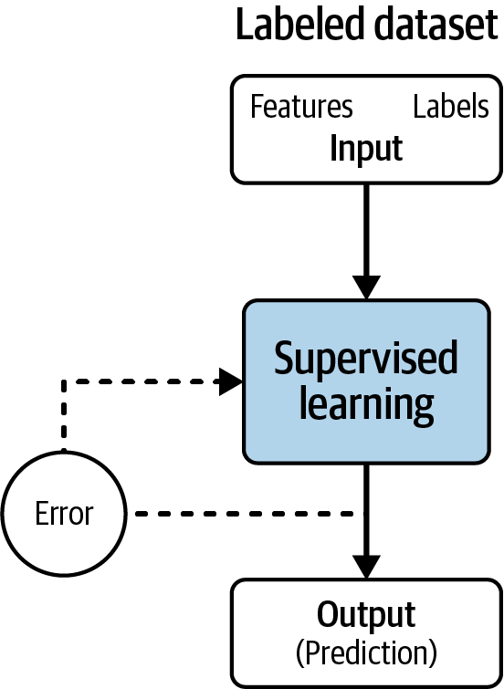
지도학습 시스템을 구축할 때 모델러는 먼저 경사하강법(Gradient Descent) 과 같은 최적화 프로세스를 통해 특성과 라벨을 알고 있는 훈련 데이터에 하나 이상의 모델을 적합(Fit)시킵니다. 이어서 적합된 모델을 검증 데이터셋(Validation Dataset)이라고 부르는 두 번째 데이터 묶음에서 테스트합니다. 검증 데이터셋의 목적은 머신러닝 전문가가 규제화(Regularization) 라는 프로세스를 통해 이른바 모델 초매개변수(Hyperparameters) 를 미세 조정(Fine-tune)할 수 있도록 하는 것입니다. 규제화는 편향(Bias) (모델이 훈련 데이터를 얼마나 잘 학습하는지)과 분산(Variance) (훈련 중에 보지 못한 새로운 인스턴스에 모델이 얼마나 잘 일반화되는지) 사이의 균형을 맞추는 데 사용되는 기법입니다. 마지막으로 테스트 데이터셋을 사용하여 검증 데이터셋에서 가장 우수한 성능을 보인 모델의 성능을 평가합니다. 평가 지표로는 정확도(Accuracy), 정밀도(Precision), 평균 제곱근 오차(RMSE), 평균 제곱 오차(MSE) 등이 있습니다.8
지도학습은 범주형 변수의 클래스 라벨을 예측하는 분류(Classification) 와 수치형 변수의 값을 예측하는 회귀(Regression) 의 두 가지 범주로 나눌 수 있습니다. 선형 회귀, 자기회귀 모델, 일반화 가법 모델, 신경망, 트리 기반 모델은 잘 알려진 회귀 기법입니다. 분류 작업에는 로지스틱 회귀, 서포트 벡터 머신, 선형 판별 분석, 트리 모델, 인공 신경망과 같은 기법이 널리 사용됩니다.
금융 분야에서 지도학습은 분류 및 회귀 작업 모두에 광범위하게 적용됩니다. 금융 회귀 문제의 예로는 주가 예측, 변동성 추정 및 예측, 자산 가격 결정, 리스크 평가 등이 있습니다. 신용 평가(크레딧 스코어링), 채무 불이행 예측, 기업 활동 예측, 사기 탐지, 신용 위험 등급 평가 등 분류 문제 역시 금융 분야에 풍부하게 존재합니다.
비지도학습 (Unsupervised learning)
비지도학습은 알려진 타깃 반응 값(라벨)에 의존하지 않고 데이터 내의 패턴과 관계를 추출하는 데 사용됩니다. 지도학습과 달리 정답을 알고 모델을 교정해 주는 교사(관리자)가 존재하지 않습니다(그림 1-6 참조).
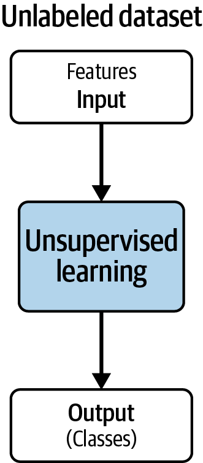
비지도학습에는 크게 두 가지 유형이 있습니다. 모델이 데이터 내에서 그룹(클러스터)을 학습하고 찾는 군집화(Clustering) 와 데이터의 분포를 요약하려는 밀도 추정(Density Estimation) 입니다. 군집화 기법의 예로는 k-평균, k-최근접 이웃, 주성분 분석(PCA), 계층적 군집화 등이 있으며, 커널 밀도 추정기(Kernel Density Estimator)는 밀도 추정 기법의 가장 대표적인 예입니다.9
금융 분야에서 비지도학습의 활용은 아직 초기 단계에 머물러 있지만, 향후 전망은 매우 유망합니다. 예를 들어 군집화는 유사한 금융 시계열을 그룹화하거나, 섹터 또는 리스크 프로필에 따라 주식을 그룹으로 묶고, 고객 및 시장 세분화를 분석하며, 유사한 기업이나 고객을 찾아 유사한 점수나 등급을 부여하는 데 활용될 수 있습니다.
강화학습 (Reinforcement learning)
강화학습에서는 인공 에이전트가 상태 공간(State Space) 상에서 일련의 행동을 수행할 수 있는 환경에 배치되며, 피드백 메커니즘을 통해 더 나은 결정을 내리는 방법을 학습합니다. 이 기법과 지도학습의 핵심적인 차이점은 교사의 피드백이 정답(실제 라벨)을 제공하는 방식이 아니라는 점입니다. 대신 에이전트는 특정 행동(Action)을 장려하고 다른 행동을 억제하기 위해 보상(양수 또는 음수)을 받습니다(그림 1-7 참조).
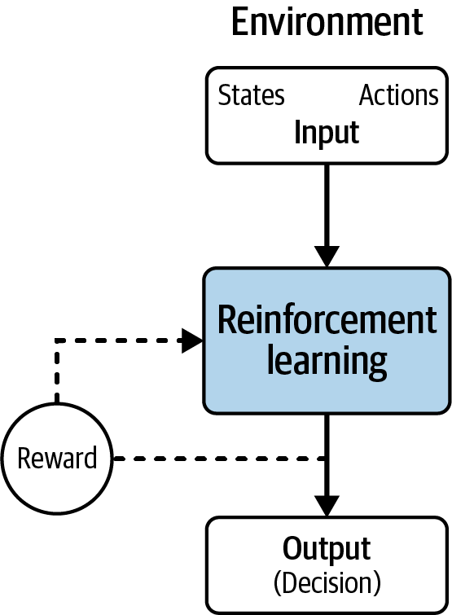
많은 금융 활동이 참여자들의 의사결정을 수반하므로, 최적의 의사결정에 초점을 맞추는 강화학습에 대한 금융 실무자와 연구자들의 관심이 매우 높습니다. 강화학습의 금융 분야 적용 사례로는 포트폴리오 선택 및 최적화, 최적 주문 체결(Optimal Trade Execution), 시장 조성(Market-Making) 등이 있습니다.10
금융 분야의 생성형 AI와 대규모 언어 모델
최근 OpenAI의 대규모 언어 모델(LLM)인 ChatGPT 출시 이후, 생성형 AI(Generative AI)로 알려진 AI의 새로운 분야가 눈부신 주목을 받고 있습니다. 생성형 AI에서 시스템은 프롬프트에 대응하여 텍스트, 이미지, 비디오 등 하나 이상의 결과물을 생성하도록 훈련됩니다. ChatGPT의 경우, 사용자는 대화형 방식으로 챗봇 머신과 상호작용하며, 머신은 다양한 질문에 답하고, 문제를 해결하고, 코드를 생성하고, 주장을 펼치거나 반박하고, 실수를 인정하는 동시에 부적절한 프롬프트를 거부할 수 있습니다.
언어 모델링은 금융 분야에서 매우 널리 활용되고 있습니다. 예를 들어 감성 분석, 뉴스 분류, 개체명 인식(NER), 사기 탐지, 질의응답 등에 사용됩니다. 그러나 이 책을 집필하는 시점까지 금융 도메인에 특화되어 튜닝 및 적용된 LLM은 드물었습니다. 이러한 방향의 첫걸음으로 블룸버그는 금융 도메인 특화 기능에 집중하는 동시에 범용 작업에서도 경쟁력 있는 성능을 유지하는 혼합 접근 방식으로 개발된 500억 개 파라미터 규모의 LLM인 BloombergGPT를 개발했습니다.
BloombergGPT는 블룸버그 아카이브에서 추출한 공시 서류, 뉴스, 보도 자료, 웹 스크래핑 문서, 소셜 미디어 등의 방대한 영어 금융 문서 데이터셋으로 훈련되었습니다. 이 데이터는 The Pile, C4(Colossal Clean Crawled Corpus), 위키피디아와 같은 공개 데이터셋으로 보강되었습니다. 그 결과, 절반은 도메인 특화, 절반은 범용 데이터로 구성된 약 7,000억 개의 토큰에 달하는 포괄적인 데이터셋이 구축되었습니다. 이렇게 탄생한 모델은 금융 특화 작업에서 기존 오픈소스 모델들을 능가하는 성능을 보였으며, 일반 언어 작업에서도 동등하거나 때로는 더 우수한 성능을 보장했습니다.
BloombergGPT의 대안으로 한 연구팀은 AI4Finance 재단과 협력하여 금융 도메인을 위한 LLM 개발을 지원하는 오픈소스 프레임워크인 FinGPT를 개발하여 공개했습니다. FinGPT 개발에 사용된 데이터 소스에는 금융 뉴스, 소셜 미디어, 공시 서류, 트렌드, 학술 데이터셋 등이 포함됩니다.
금융 산업 내에서 생성형 AI(GenAI) 응용 프로그램은 빠르게 확장되고 있습니다. 일례로 선도적인 데이터 및 분석 제공업체인 팩트셋(FactSet)은 포트폴리오 코멘터리(Portfolio Commentary)를 출시했습니다. 이 툴은 팩트셋의 유명한 포트폴리오 분석 애플리케이션 내에서 벤치마크 대비 포트폴리오 성과를 설명하는 실무인 포트폴리오 성과 귀속 분석(Performance Attribution Analysis)에 대한 설명을 AI를 통해 자동으로 생성합니다.
응용 머신러닝 시스템은 데이터와 컴퓨팅 자원에 의존하므로, 더 많은 데이터와 컴퓨팅 파워를 확보할수록 더 우수하고 빠른 예측이 가능해집니다. 컴퓨팅 자원과 데이터셋이 크게 성장한 금융 분야에서 금융 머신러닝은 유망하면서도 도전적인 연구 및 실무 영역으로 떠올랐습니다.
유명 헤지펀드 매니저이자 퀀트 분석가인 마르코스 로페스 데 프라도(Marcos López de Prado)에 따르면, 금융 머신러닝은 매우 성공적인 것으로 입증되었으며 금융 시장의 미래를 형성하는 주요 요인이 될 가능성이 높지만, 반드시 고려해야 할 중대한 과제들이 존재한다는 점을 간과해서는 안 됩니다. 언급할 만한 가장 중요한 과제는 아마도 ’거짓 발견(False Discoveries)’의 문제일 것입니다. 이는 데이터 내에서 유효한 패턴처럼 보이지만 실제로는 우연에 의한 허위 상관관계(Spurious Relationship)를 찾아내는 현상을 의미합니다.11 그 밖의 과제로는 모델의 해석 가능성/설명 가능성(Explainability), 성능, 비용, 윤리적 문제 등이 있습니다.
금융기관이 금융 머신러닝에 효과적으로 투자하고 이를 활용하려면 머신러닝 준비도(ML-Readiness)를 갖추어야 합니다. 이를 위해서는 금융과 머신러닝 양 분야의 전문성을 갖춘 적절한 팀, ML 알고리즘을 위한 충분한 품질과 양의 금융 데이터, 견고한 데이터 인프라, 전용 ML 지향 데이터 파이프라인, 원활한 배포와 통합을 위한 DevOps(또는 MLOps) 프랙티스, 모니터링 툴이 필요합니다. 이러한 기반 위에서 금융 데이터 엔지니어링은 결정적인 역할을 합니다. 금융 데이터 엔지니어는 금융 ML 과학자 및 ML 엔지니어와 긴밀히 협력하여 데이터 요구사항을 정의하고, 데이터 변환을 자동화하며, 품질 검사를 수행하고, 빠르고 고성능인 연산을 위해 ML 워크플로를 구조화합니다.
파괴적 혁신의 핀테크 환경
2007~2008년 글로벌 금융 위기 이후, 전통적인 금융기관들은 규제 요건의 급격한 증가에 직면했습니다. 그 결과 시장 참여자들의 초점은 규제 준수(컴플라이언스)로 크게 이동했습니다. 동시에 소비자들이 온라인 서비스 이용에 더욱 익숙해짐에 따라, 단순하고 사용자 친화적인 온라인 금융 상품에 대한 수요가 증가했습니다. 이러한 요인들은 흔히 핀테크(FinTech) 로 알려진 금융 부문의 새로운 기술 혁신의 물결을 위한 토대를 마련했습니다.
핀테크라는 용어는 금융 부문을 위해 개발된 혁신 기술과 이러한 기술을 개발하는 스타트업 기업을 모두 설명하는 시장 합성어로 등장했습니다. 핀테크 기업들은 혁신적이고 유연하며 실험적인 접근 방식으로 인해 미디어와 시장에서 각별한 주목을 받아왔습니다. 규제 부채(Regulatory Debt)에 얽매이지 않는 핀테크 기업들은 결제, 대출, 투자, 사기 탐지, 암호화폐 등 광범위한 금융 문제를 해결하고 개선하기 위해 현대적이고 비전통적인 접근법을 도입해 왔습니다. 전통적인 금융기관들은 조직의 관성, 규제 제약, 보안 우려, 혁신 문화의 부재 등의 요인으로 인해 이러한 유연성을 발휘하기 어려웠습니다.
핀테크 서비스의 주요 차별화 특징은 전문화(Specialization) 와 개인화(Personalization) 입니다. 소규모 기업인 핀테크 기업들은 금융 시스템의 특정 틈새 영역만을 집중적으로 공략하는 경향이 있습니다. 그림 1-8은 핀테크 기업들의 다양한 전문화 영역을 보여줍니다. 그림에서 알 수 있듯이, 핀테크 영역은 결제 및 투자와 같은 기본 기능부터 규제 준수(흔히 레그테크(RegTech) 라고 함) 및 분석과 같은 전문 분야에 이르기까지 금융 부문의 모든 세부 영역에 걸쳐 있습니다.
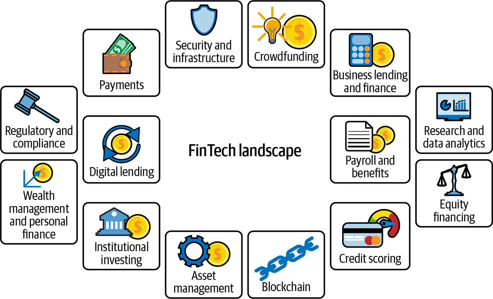
또한 핀테크 비즈니스 모델은 맞춤형 및 개인화된 서비스를 통해 경쟁력을 입증했습니다. 예를 들어 베터먼트(Betterment)나 웰스프론트(Wealthfront)와 같은 디지털 자산관리 플랫폼은 고객의 재무 목표와 위험 선호도를 평가하는 정교한 설문조사를 제공하여, 각 투자자의 고유한 목표와 기대치에 맞춘 투자 계획을 제시합니다.
전반적으로 핀테크 시장은 태동 이후 급격한 성장을 거듭해 왔습니다. 보스턴 컨설팅 그룹(BCG)이 발표한 보고서에 따르면, 2023년 기준으로 전 세계에 약 32,000개의 핀테크 기업이 존재하며, 5,000억 달러 이상의 자금을 유치했습니다. 동일한 보고서에서는 2030년까지 핀테크 부문의 연간 매출이 1조 5,000억 달러에 달하고, 뱅킹 핀테크가 전체 은행 밸류에이션의 25%를 차지할 것으로 전망하고 있습니다.
지급결제: 금융 기술 혁신의 역동적인 심장
급변하는 금융 기술 환경에서 지급결제(Payments)는 가장 활발하고 역동적인 혁신의 영역을 대표합니다. 가치 교환의 핵심 메커니즘인 지급결제는 기술 발전, 소비자 기대치의 변화, 규제에 힘입어 극적인 변화를 겪었습니다. 오늘날 지급결제 부문은 단순히 돈을 송금하는 데 그치지 않고, 우리 일상에 필수적인 매끄럽고 안전하며 즉각적인 금융 경험을 창출하는 역할을 합니다.
스마트폰의 보급, 전자상거래의 급증, 실시간 거래에 대한 수요 증가로 인해 지급결제 업계는 핀테크 혁신의 최전선에 서 있습니다. 이 부문은 보안, 효율성, 사용자 경험을 향상시키기 위해 클라우드 컴퓨팅, 실시간 시스템, 블록체인, 오픈뱅킹 API, 생체 인식 인증, 인공지능과 같은 최첨단 기술의 도입을 주도하고 있습니다. 결과적으로 지급결제는 금융 생태계를 재편하고 금융 포용성을 촉진하며 경제 성장을 견인하고 있습니다.
지급결제 생태계에는 다양한 유형의 참여자가 존재합니다. 대표적인 예는 다음과 같습니다.
발급사(Issuers): JP모건 체이스, 뱅크오브아메리카, 씨티은행과 같이 소비자에게 지급결제 카드(신용, 체크, 선불)를 발급하는 금융기관입니다.
매입사(Acquirers): 웰스파고 머천트 서비스, 퍼스트 데이터(First Data), 엘라본(Elavon)과 같이 가맹점을 위해 결제 거래를 관리하고 처리하는 금융기관입니다.
결제 처리업체(Payment processors): 페이팔(PayPal), 스퀘어(Square), 스트라이프(Stripe)를 포함하여 발급사와 매입사 간의 거래 처리에 관한 기술적 측면을 담당하는 기업입니다.
결제 네트워크(Payment networks): 비자(Visa), 마스터카드(Mastercard), 아메리칸 익스프레스(American Express)와 같이 카드 거래를 촉진하기 위해 발급사와 매입사를 연결하는 네트워크입니다.
결제 게이트웨이(Payment gateways): 전자 금융 거래에서 중개자 역할을 하는 서비스입니다. 대표적인 예로 Authorize.net, 브레인트리(Braintree), 사이버소스(Cybersource) 등이 있습니다.
디지털 지갑 제공업체(Digital wallet providers): 애플페이(Apple Pay), 구글 월렛(Google Wallet), 삼성페이(Samsung Pay)와 같이 결제 정보를 저장하고 거래를 수행할 수 있는 전자 기기 또는 소프트웨어를 제공하는 기업입니다.
핀테크 스타트업(FinTech startups): 레볼루트(Revolut), 스트라이프, 스퀘어를 포함하여 첨단 기술을 활용해 새로운 결제 솔루션을 창출하는 혁신 기업입니다.
정산 기관(Settlement institutions): 페드와이어(Fedwire), 연합결제소 은행간 결제 시스템(CHIPS, Clearing House Interbank Payments System)과 같이 결제 거래를 완료하기 위해 금융기관 간 최종 자금 이체를 촉진하는 기관입니다.
지급결제 인프라(Payment infrastructures): 당사자 간의 금융 거래 처리, 승인, 정산을 촉진하는 시스템 및 네트워크입니다. 금융 메시징 및 은행 간 통신을 위한 국제은행간통신협회(SWIFT)와 호주의 고속 결제 플랫폼(NPP, New Payments Platform) 등이 있습니다.
또한 현재 개발 및 도입 중인 여러 지급결제 관련 규제 프레임워크가 있습니다. 예를 들어 유럽연합(EU)은 다음과 같은 규제를 추진하고 있습니다.
즉시 지급 규정(Instant Payments Regulation): 모든 결제 서비스 제공업체(PSP)가 EU 전역에서 연중무휴 24시간 몇 초 내에 유로화 결제를 송수신할 수 있는 기능을 제공하도록 의무화합니다.
중앙 결제 정보 전자 시스템(CESOP, Central Electronic System of Payment Information): 결제 시스템 제공업체가 국경 간 결제 데이터를 추적하여 EU 회원국의 과세 당국과 공유하도록 의무화합니다.
암호자산 시장 규제(MiCA, Markets in Crypto-Assets regulation): 암호자산에 대한 EU 시장 규칙을 조화롭게 통일하는 것을 목표로 합니다.
유로시스템 담보 관리 시스템(ECMS, Eurosystem Collateral Management System): 유로시스템 신용 운영에서 담보로 사용되는 자산을 관리하기 위한 통합 시스템입니다.
제3차 지급결제서비스지침(PSD3) 및 지급결제서비스규정(PSR): 지급결제 시장을 더욱 표준화하고 국가 간 편차를 줄이는 것을 목표로 합니다.
전자화폐 지침(E-Money Directive): 유럽연합 내에서 전자화폐의 발행 및 관리를 위한 법적 프레임워크를 제공합니다.
금융 데이터 엔지니어를 꿈꾸는 이들에게 지급결제 분야로의 진입은 단순한 커리어 경로를 넘어, 글로벌 차원에서 디지털 거래와 금융 서비스의 미래를 형성하는 관문이 될 것입니다.
이처럼 기술 집약적이고 고성능이며 데이터 주도적인 환경에서 번창하기 위해, 유망한 핀테크 기업들은 소프트웨어 및 데이터 엔지니어링 전략을 최우선 과제로 삼아야 합니다. 기존 금융기관과 경쟁하거나 협력하기 위해 핀테크 기업은 최고 수준의 품질, 신뢰성, 보안 표준을 확보해야 합니다. 이러한 맥락에서 금융 데이터 엔지니어는 다른 솔루션과 원활하게 통합되고 확장 가능한 효율적이고 신뢰할 수 있는 데이터 수집, 처리, 분석 파이프라인을 설계함으로써 핵심적인 역할을 수행합니다.
규제 요건 및 규제 준수(컴플라이언스)
금융기관, 특히 은행은 경제 시스템에서 특별한 지위를 갖습니다. 이는 금융 부문이 금융기관 간의 자산 교차 보유, 소유권, 투자, 거래로 얽힌 복잡한 네트워크를 형성하고 있다는 점에서 정당화됩니다. 결과적으로 하나 이상의 금융기관의 파산을 초래하는 시장 충격은 전체 금융 시스템을 불안정하게 만들고 경제적 붕괴를 초래할 수 있는 연쇄 파산을 촉발할 수 있습니다.12 2007~2008년 글로벌 금융 위기는 이러한 시나리오의 가장 대표적인 사례입니다.
막대한 비용이 드는 금융 위기를 방지하기 위해 금융 부문은 국내외의 수많은 규제를 적용받아 왔습니다. 결정적으로 금융 규제 요건의 상당 부분은 은행이 데이터를 수집, 저장, 집계, 보고하는 방식과 관련이 있습니다. 예를 들어 2007~2008년 금융 위기 이후 바젤은행감독위원회(BCBS)는 은행, 특히 글로벌 시스템적 중요 은행(G-SIBs, Global Systemically Important Banks) 이 숨겨진 위험과 리스크 집중도를 식별하기 위해 리스크 익스포저를 신속하게 집계할 수 있는 데이터 인프라가 부족하다는 점을 지적했습니다. 이 문제를 극복하기 위해 바젤 위원회는 은행이 리스크 데이터 집계 및 보고 역량을 강화하기 위해 구현해야 하는 데이터 거버넌스 및 인프라에 관한 13가지 원칙 목록을 발표했습니다.
은행 외에도 시스템적으로 중요하다고 간주되는 금융기관들이 있습니다. 여기에는 지급결제, 증권, 거래의 처리, 청산, 결제, 수탁을 촉진하는 금융시장 인프라(FMIs, Financial Market Infrastructures) 가 포함됩니다. FMI의 예로는 증권거래소, 다자간 매매체결회사(MTF), 중앙청산소(CCP), 중앙예탁기관(CSD), 거래정보저장소(TR), 결제 시스템, 청산 및 증권 결제 시스템, 수탁기관(커스터디언) 등이 있습니다. FMI는 금융 시장과 광범위한 경제의 기능에 결정적인 역할을 하므로 광범위한 규제의 대상이 됩니다.13
때때로 규제 당국은 금융기관에 새로운 유형의 데이터를 수집하도록 요구할 수 있습니다. 예를 들어 금융상품투자지침(MiFID, Markets in Financial Instruments Directive)으로 알려진 유럽 지침은 투자 서비스를 제공하는 기업이 고객의 금융 지식 수준이 희망하는 투자의 복잡성에 부합하는지 평가하기 위해 고객의 금융 지식 관련 정보를 수집하도록 규정하고 있습니다.
규제를 준수하기 위해 금융기관은 견고한 데이터 인프라를 설계하고 구축할 전담 금융 데이터 엔지니어링 및 관리 팀을 필요로 합니다. 이 인프라는 높은 수준의 보안, 운영 및 재무적 복원력을 보장하면서 여러 소스로부터 모든 관련 데이터와 메타데이터를 수집, 처리, 집계해야 합니다. 또한 리스크 및 컴플라이언스 담당자가 규제 준수를 입증하는 데 필요한 데이터에 빠르고 정확하게 접근할 수 있도록 지원해야 합니다. 금융 데이터 엔지니어는 데이터 품질과 보안을 보장하는 금융 데이터 거버넌스 프레임워크를 수립하고 집행하여 경영진, 이해관계자, 규제 당국 간의 신뢰를 높이는 임무도 맡게 됩니다. 5장 ’금융 데이터 거버넌스’에서 이러한 주제들을 자세히 살펴볼 것입니다.
금융 데이터 엔지니어의 역할
금융 데이터 엔지니어는 지금까지 논의한 모든 내용의 중심에 있습니다. 금융 산업에서 일하는 것은 매우 보람차고 흥미진진한 커리어가 될 수 있습니다. 10년 전만 해도 금융 분야에서 가장 수요가 많았던 직군은 금융공학자, 퀀트 분석가(또는 퀀트), 애널리스트와 같은 분석 중심의 역할이었습니다. 그러나 빅데이터, 클라우드, 핀테크와 함께 일어난 디지털 혁명으로 인해 데이터 엔지니어, 데이터 아키텍트, 데이터 매니저, 클라우드 아키텍트와 같은 직함이 금융 산업 내에서 핵심적인 역할로 자리 잡았습니다. 이 절에서는 금융 데이터 엔지니어의 역할, 책임, 역량에 대해 개괄적으로 살펴보겠습니다.
역할에 대한 설명
금융 데이터 엔지니어 역할에 대한 수요는 매우 높지만, 직함, 요구 역량, 책임 범위는 포지션에 따라 상당한 차이가 있을 수 있습니다. 예를 들어 금융 데이터 엔지니어의 직함은 다음 중 어느 것이든 될 수 있습니다.
- 금융 데이터 엔지니어 (Financial data engineer)
- 데이터 엔지니어, 금융 (Data engineer, finance)
- 데이터 엔지니어, 핀테크 (Data engineer, fintech)
- 데이터 엔지니어, 금융 상품 (Data engineer, finance products)
- 데이터 엔지니어, 데이터 분석 및 금융 서비스 (Data engineer, data analytics, and financial services)
- 금융 애플리케이션 데이터 엔지니어 (Financial applications data engineer)
- 플랫폼 데이터 엔지니어, 금융 서비스 (Platform data engineer, financial services)
- 소프트웨어 엔지니어, 금융 데이터 플랫폼 (Software engineer, financial data platform)
- 소프트웨어 엔지니어, 금융 ETL 파이프라인 (Software engineer, financial ETL pipelines)
- 데이터 관리 개발자, 핀테크 (Data management developer, FinTech)
- 데이터 아키텍트, 금융 플랫폼 (Data architect, finance platform)
많은 경우, 직함에 “데이터 엔지니어링”이라는 용어가 포함되어 있지 않더라도 금융 데이터 엔지니어링과 관련된 실무 및 기술을 상당 부분 수반합니다. 예를 들어 머신러닝 엔지니어의 역할에는 머신러닝을 위한 안정적인 분석 데이터 파이프라인의 구축, 배포, 유지보수와 관련된 많은 책임이 포함될 수 있습니다. 금융기관에서 흔히 볼 수 있는 퀀트 개발자(Quantitative Developer)의 역할 역시 데이터 파이프라인 개발, 데이터 추출, 데이터 변환과 관련된 업무를 포함하는 경우가 많습니다.
금융 데이터 엔지니어의 역할이 폐쇄적인 영역이나 특정 직무에 갇힌 경로가 아니라는 점을 아는 것이 중요합니다. 금융 도메인 지식이 금융 데이터 엔지니어링 역할에 큰 장점이 되는 것은 분명하지만, 많은 금융기관에서는 다른 배경을 가진 데이터 엔지니어링 경력자도 기꺼이 채용합니다. 마찬가지로 금융 산업에서 접하게 되는 풍부하고 다양한 기술적 문제와 도전 과제를 고려할 때, 금융 데이터 엔지니어로 일한 경험은 다른 도메인에도 쉽게 적응할 수 있도록 해줄 것입니다.
금융 데이터 엔지니어는 어디에서 일하는가?
금융 데이터 엔지니어에 대한 수요는 주로 데이터를 생성 및 저장하고, 데이터 관련 기술에 기꺼이 투자하거나 투자가 요구되는 금융기관에서 발생합니다. 몇 가지 사례를 살펴보겠습니다.
핀테크
핀테크 기업은 기술 지향적이고 데이터 주도적이므로 금융 데이터 엔지니어로 일하기에 가장 좋은 직장 중 하나입니다. 핀테크 기업에서 일할 때의 주된 장점 중 하나는 제품 개발의 전체 수명주기를 직접 경험할 수 있다는 것입니다. 이를 통해 엔지니어는 성공적인 제품을 만들기 위해 데이터, 비즈니스, 기술이 어떻게 결합되는지에 대한 탄탄한 안목을 얻을 수 있습니다. 또 다른 장점은 주요 인프라 및 소프트웨어 문제(예: 데이터베이스 선정, 금융 데이터 벤더 발굴 등)에 독창적인 아이디어와 솔루션을 직접 기여할 수 있다는 점입니다.
상업은행 (Commercial banks)
상업은행은 개인과 기관으로부터 예금을 수취하고 소비자와 투자자에게 대출을 제공하며, 매일 막대한 양의 거래를 처리하고 수많은 규제 요건을 준수해야 하는 금융기관입니다. 상업은행은 내부 운영을 효과적으로 관리하고 적시에 보고서를 제출하기 위해 일반적으로 소프트웨어 및 데이터 엔지니어 팀을 고용합니다. 이들은 계좌, 이체, 출금, 예금과 같은 다양한 은행 업무를 위한 데이터베이스 시스템, 데이터 집계 및 보고 메커니즘, 고객 분석 인프라, 트랜잭션 시스템을 개발하고 유지보수하는 책임을 집니다. 상업은행에서 데이터 엔지니어로 근무하면 보안, 신뢰성, 규제 준수와 관련된 업계 표준 및 모범 사례에 대한 귀중한 통찰을 얻을 수 있습니다.
흥미롭게도 상업은행은 대중에게 서비스를 확장하기 위해 핀테크 기업과 협력 계약을 자주 체결합니다. 이러한 파트너십에는 대개 금융 API를 통해 안전하고 효율적인 서버 통신을 지원하는 견고한 데이터 인프라가 필수적입니다. 따라서 은행과 핀테크 기업 모두 데이터 수집, 전송, 집계, 통합을 위한 백엔드를 설계하고 구현할 금융 데이터 엔지니어를 채용해야 합니다.
투자은행 (Investment banks)
투자은행은 인수합병(M&A), 차입매수(LBO), 기업공개(IPO)와 같은 기업 금융 및 투자 서비스를 제공하는 금융기관입니다. 상업은행과 달리 투자은행은 예금을 받거나 대출을 제공하지 않습니다. 때로는 자기자본 거래(프랍 트레이딩, Proprietary Trading)를 통해 자체 자금을 직접 투자하기도 합니다.
투자은행은 금융 데이터의 생성, 추출, 변환, 분석을 수반하는 다양한 활동에 참여합니다. 여기에는 투자 전략 수립 및 백테스팅, 자산 가격 결정, 기업 가치 평가, 시장 예측 등이 포함됩니다. 이를 위해서는 다양한 유형의 금융 데이터에 자주, 그리고 쉽게 접근할 수 있어야 합니다. 또한 투자은행은 규제 당국에 컴플라이언스 관련 데이터를 정기적으로 보고해야 합니다. 이러한 데이터에 신속하고 직관적으로 접근할 수 있도록 하기 위해, 투자은행은 데이터 수집, 변환, 집계, 저장을 위한 시스템을 설계하고 유지보수할 금융 데이터 엔지니어 팀을 필요로 합니다.
자산운용사 (Asset management firms)
자산운용사는 자금을 투자하고자 하는 고객에게 투자 및 자산 관리 서비스를 제공하는 금융기관입니다. 이들은 독립된 법인일 수도 있고 대형 금융기관 내의 한 사업 부서일 수도 있습니다. 일반적으로 자산운용사는 기관 수준에서 운영되며, 뮤추얼 펀드, 연기금, 보험사, 대학교, 국부펀드 등을 고객으로 둡니다.
투자 서비스를 제공하기 위해 자산운용사는 투자 전략 수립, 포트폴리오 구성, 금융 시장 분석, 리스크 관리, 고객을 대신한 보고서 작성 등에 필요한 방대한 금융 데이터에 접근해야 합니다. 이러한 데이터를 관리하기 위해 자산운용사는 사내에 금융 데이터 엔지니어를 고용하여 효과적인 데이터 전략, 거버넌스, 인프라를 설계하고 유지보수합니다. 써드파티(외부) 데이터 관리 솔루션을 사용하는 경우에도 데이터 인프라를 감독하고 개선하기 위해서는 사내 엔지니어가 필수적입니다.
헤지펀드 (Hedge funds)
헤지펀드는 시장 평균을 초과하는 수익률을 창출하기 위해 다양한 시장 포지션(매수 및 매도)과 자산군(주식, 채권, 파생상품, 대체투자)에 대규모 자금을 적극적으로 투자하는 금융기관입니다. 재무적 수익 목표를 달성하기 위해 헤지펀드는 방대하고 복잡한 투자 전략과 포트폴리오 조합을 구축하고 테스트(백테스팅)합니다.
목표를 달성하기 위해 헤지펀드는 다양한 공급업체로부터 제공되는 이종의 방대한 금융 데이터 소스에 의존합니다. 헤지펀드에서 일하는 금융공학자와 퀀트 개발자는 고품질의 금융 데이터에 적시에 접근할 수 있어야 합니다. 또한 헤지펀드는 알고리즘 트레이딩 및 고빈도 매매(HFT) 전략에 투자할 수 있으며, 이를 위해서는 손쉬운 데이터 읽기 및 쓰기 작업을 지원하는 견고하고 효율적인 데이터 인프라가 요구됩니다. 이러한 환경은 헤지펀드를 금융 데이터 엔지니어에게 이상적인 직장으로 만들어 줍니다.
규제 기관 (Regulatory institutions)
금융 시장을 감독하기 위해 다양한 국내외 규제 기구가 설립되어 있습니다. 중앙은행 및 각국 시장 감독기관과 같은 국내 기관뿐만 아니라 국제결제은행(BIS), BIS 산하 지급 및 시장인프라위원회(CPMI), 금융안정위원회(FSB)와 같은 국제기구가 대표적입니다.
이러한 기관들은 금융 데이터 엔지니어링 및 관리에 상당한 투자를 필요로 하는 다양한 활동을 수행합니다. 예를 들어 규제 기관이 의무적인 보고 및 공시 요건을 제정하면, 보고된 모든 데이터를 처리하고 저장할 수 있는 확장 가능한 데이터 인프라가 필요합니다. 또한 규제 기관은 회원 기관에 금융 데이터 인프라 및 거버넌스 시스템 설계에 관한 원칙과 모범 사례를 제공하기도 합니다. 이를 위해서는 시장 권고안을 개발하고 정립할 수 있는 데이터 엔지니어, 데이터 매니저, 업계 전문가로 구성된 내부 팀이 필요합니다.
금융 데이터 벤더 (Financial data vendors)
데이터 벤더는 수많은 소스로부터 수집한 금융 데이터에 대한 구독 기반 접근 권한을 제공하는 금융 시장의 핵심 참여자입니다. 대표적인 예로 블룸버그(Bloomberg), LSEG, 팩트셋(FactSet) 등이 있습니다. 비즈니스 모델의 특성상 이들 기업은 데이터 수집, 큐레이션, 포맷팅, 수집(인제스천), 저장, 전송과 관련된 다양한 과제에 직면합니다. 따라서 금융 데이터 엔지니어링 분야에서 커리어를 발전시키기에 가장 좋은 기회를 제공합니다.
증권거래소 (Security exchanges)
증권거래소는 금융 증권의 매수자와 매도자가 거래를 수행하는 중앙 집중화된 장소입니다. 대표적인 예로 뉴욕증권거래소(NYSE), 나스닥(NASDAQ), 런던증권거래소(LSE) 등이 있습니다.
거래소는 매일 촉진하는 모든 활동과 거래를 기록해야 합니다. 일부 거래소는 거래 및 호가 데이터에 대한 유료 구독 서비스를 제공합니다. 또한 상장 증권에 식별자와 티커를 부여하는 심볼로지(Symbology)와 같은 작업을 관리합니다. 이러한 점들로 인해 거래소는 금융 중심지의 핵심부에서 일하고자 하는 금융 데이터 엔지니어에게 이상적인 커리어 개발 장소가 됩니다.
빅테크 기업 (Big tech firms)
구글(Google), 아마존(Amazon), 메타(Meta), 애플(Apple)과 같은 빅테크 기업은 사용자 상호작용, 거래 및 다양한 온라인 활동을 위한 주요 플랫폼으로 발전했습니다. 테크 기업은 활동을 확장하기 위해 사용자 데이터와 네트워크 효과라는 두 가지 메커니즘에 의존합니다. 온라인 플랫폼에서 더 많은 활동이 일어날수록 더 많은 데이터를 수집할 수 있습니다. 수집된 데이터는 고객 행동을 연구하여 새로운 상품과 서비스를 제공하는 데 사용됩니다. 이는 다시 다른 사용자들의 플랫폼 참여를 유도하여 더 많은 데이터를 생성하는 선순환 구조를 만듭니다.
이러한 자기강화 메커니즘에 기반하여 아마존, 애플, 구글, 알리바바와 같은 거대 기술 기업들은 결제, 보험, 대출, 자산 관리 등의 상품을 제공하며 금융 서비스 영역으로 확장했습니다. 이러한 확장은 방대한 고객 데이터, 광범위한 네트워크, 첨단 기술을 활용하여 모바일 기기 결제와 같은 사용자 친화적인 서비스의 탄생으로 이어졌습니다. 결과적으로 이러한 운영을 지원하기 위해 데이터 엔지니어, 금융 전문가, 머신러닝 전문가로 구성된 전담 팀이 필수적으로 요구됩니다.
금융 데이터 엔지니어의 책임과 주요 활동
금융 데이터 엔지니어의 업무와 책임 범위는 직무와 비즈니스 문제의 성격, 고용 기관, 그리고 무엇보다도 기업의 데이터 성숙도(Data Maturity)에 따라 달라집니다.
데이터 성숙도는 데이터 전략과 밀접하게 연관된 중요한 개념입니다. 데이터 전략은 조직의 데이터 자산을 관리하는 데 필요한 목표, 인력, 프로세스, 규칙, 도구 및 기술의 로드맵을 설명하는 장기 계획입니다. 데이터 전략의 진척도를 측정하기 위해 흔히 데이터 성숙도 접근법이 사용됩니다. 조직은 데이터 성숙도 프레임워크를 통해 데이터 활용성, 분석 역량, 통합을 향한 발전 단계를 명확히 나타낼 수 있습니다. 이 개념을 더 자세히 설명하기 위해 조 리스(Joe Reis)와 맷 하우슬리(Matt Housley)가 저서 Fundamentals of Data Engineering에서 제안한 프레임워크를 차용하고 확장하여, 데이터 성숙도를 ‘데이터로 시작하기’, ‘데이터로 확장하기’, ’데이터로 시장 선도하기’의 3단계로 나누어 설명하겠습니다.
데이터로 시작하기 (Starting with data)
데이터로 시작하는 단계에 있는 금융기관은 데이터 성숙도의 극초기 단계에 위치합니다. 이것이 반드시 신생 기업만을 의미하는 것은 아닙니다. 전통적인 은행과 같은 기존 금융기관도 운영을 자동화하고 현대화하기 위해(예: 클라우드 마이그레이션) 디지털 전환 계획을 시작할 수 있습니다.
데이터로 시작하는 단계에서 금융 데이터 엔지니어의 책임은 광범위하며, 데이터 엔지니어링, 소프트웨어 엔지니어링, 데이터 분석, 인프라 엔지니어링, 웹 개발 등 여러 영역에 걸쳐 있을 가능성이 높습니다. 이 초기 단계에서는 품질과 모범 사례보다는 속도와 기능 확장을 우선시합니다.
데이터로 확장하기 (Scaling with data)
이 단계에서 금융기관은 프로세스를 평가하고, 병목 현상을 식별하며, 현재 및 미래의 확장 요구사항을 파악해야 합니다. 이러한 통찰을 바탕으로 기관은 금융 데이터 인프라의 확장성, 신뢰성, 품질, 보안을 강화할 수 있습니다. 여기서의 주요 목표는 기업 성장에 걸림돌이 될 수 있는 기술적 제약을 제거하거나 해결하는 것입니다.
이 단계에서 금융 데이터 엔지니어는 신뢰할 수 있고 안전한 시스템을 구축하기 위한 모범 사례(예: 코드베이스 품질, DevOps, 거버넌스, 보안, 표준, 마이크로서비스, 시스템 설계, API 및 데이터베이스 확장성, 배포 용이성, 잘 정립된 금융 데이터 엔지니어링 수명주기 등)를 도입하는 데 집중할 수 있습니다.
데이터로 시장 선도하기 (Leading with data)
금융기관이 데이터로 시장을 선도할 수 있는 단계에 도달하면 진정한 데이터 주도형(Data-Driven) 기업으로 간주됩니다. 이 단계에서는 모든 프로세스가 자동화되어 수동 개입이 최소화되고, 제품은 사용자가 아무리 많아져도 원활히 확장될 수 있으며, 내부 프로세스와 거버넌스 규칙이 잘 정립되고 공식화되며, 기능 요청은 체계적으로 정의된 개발 프로세스를 따릅니다.
이 단계에서 금융 데이터 엔지니어는 금융 데이터 인프라의 특정 영역에 전문화하고 집중할 수 있습니다. 사이트 신뢰성 엔지니어링(SRE), 플랫폼 엔지니어링, 데이터 운영(DataOps), MLOps, FinOps, 데이터 계약(Data Contracts), 신규 연동과 같은 역할 및 부서를 통해 추가적인 최적화 공간이 항상 존재합니다.
금융 데이터 엔지니어의 핵심 역량
금융 데이터 엔지니어는 세 가지 유형의 기술을 결합합니다: 금융 도메인 지식, 기술적 데이터 엔지니어링 역량, 비즈니스 및 소프트 스킬입니다. 다음 절에서 이러한 기술 구성을 간략히 살펴보겠습니다.
금융 도메인 지식
금융, 금융 시장, 금융 데이터에 대한 폭넓은 이해는 금융 데이터 엔지니어링을 포함한 모든 금융 관련 직무에서 필수적이며 경쟁력 있는 자산입니다. 금융 도메인 지식의 예로는 다음이 포함됩니다.
- 다양한 유형의 금융상품 이해 (주식, 채권, 파생상품 등)
- 금융 시장의 다양한 참여자 이해 (은행, 펀드, 거래소, 규제 기관 등)
- 금융에서의 데이터 생성 메커니즘 이해 (트레이딩, 대출, 결제, 공시 보고 등)
- 기업 보고서 이해 (재무상태표, 손익계산서, 투자설명서 등)
- 금융 데이터 시장 이해 (벤더, 공급업체, 유통업체, 구독 모델, 전송 메커니즘, 커버리지 등)
- 금융 변수 및 지표 이해 (가격, 호가, 거래량, 수익률, 이자율, 인플레이션, 매출, 자산, 부채, 시가총액 등)
- 금융 이론 용어 이해 (리스크, 불확실성, 수익률, 차익거래, 변동성 등)
- 규제 준수 및 개인정보 보호 개념 이해 (개인식별정보(PII), 익명화 등)
- 금융 규제 및 데이터 보호법에 대한 지식 (바젤 규제, MiFID, Solvency II, GDPR(EU 일반 데이터 보호 규칙) 등은 우대사항)
기술적 데이터 엔지니어링 역량
금융 데이터 엔지니어링은 탄탄한 기술력을 요구하며, 이는 비즈니스 요구사항, 제품, 기술 스택, 데이터 성숙도에 따라 금융기관마다 다를 수 있습니다. 데이터 엔지니어링 환경은 매우 역동적이어서 매년 새로운 기술이 등장하고 확산된다는 점을 명심하는 것이 중요합니다. 이러한 이유로 이 책은 특정 도구와 기술보다는 불변적이고 기술에 구애받지 않는 원칙과 개념에 더 중점을 둡니다. 하지만 현재(2024년 기준)의 환경을 개괄적으로 보여주기 위해, 금융 데이터 엔지니어로서 질문받을 수 있는 주요 지식 영역을 정리하면 다음과 같습니다.
데이터베이스 쿼리 및 설계: * 관계형 데이터베이스 관리 시스템(RDBMS) 및 관련 개념(특히 Oracle, MySQL, Microsoft SQL Server, PostgreSQL)에 대한 경험 * 데이터베이스 내부 구조 및 트랜잭션, 트랜잭션 제어, ACID(원자성, 일관성, 격리성, 지속성), BASE(기본 가용성, 유연한 상태, 최종 일관성), 락(Lock), 동시성 제어, WAL(Write-Ahead Logging), 쿼리 플래닝과 같은 속성에 대한 탄탄한 지식 * 데이터 모델링 및 데이터베이스 설계 경험 * 사용자 정의 함수, 윈도우 함수, 인덱싱, 클러스터링, 파티셔닝, 복제와 같은 고급 개념을 포함한 SQL 언어 활용 경험 * 데이터 웨어하우스 및 관련 개념, 디자인 패턴에 대한 경험
클라우드 역량: * 클라우드 서비스 제공업체(Amazon Web Services, Azure, Google Cloud Platform, Databricks 등) 활용 경험 * 클라우드 데이터 웨어하우징(Redshift, Snowflake, BigQuery, Cosmos 등) 경험 * 서버리스 컴퓨팅(람다 함수, AWS Glue, Google Workflows 등) 경험 * 다양한 클라우드 런타임(Amazon EC2, AWS Fargate, 클라우드 함수 등) 경험 * Terraform과 같은 코드형 인프라(IaC) 도구 경험
데이터 워크플로 및 프레임워크: * ETL(추출, 변환, 적재) 워크플로 솔루션(AWS Glue, Informatica, Talend, Alooma, SAP Data Services 등) 경험 * Apache Airflow, Prefect, Luigi, AWS Glue, Mage와 같은 범용 워크플로 도구 경험 * Apache Kafka, Google Pub/Sub와 같은 메시징 및 큐잉 시스템 경험 * 확장성과 신뢰성이 뛰어난 데이터 파이프라인 설계 및 구축 경험 (dbt, Hadoop, Spark, Hive, Cassandra 등)
인프라: * Docker, Kubernetes, AWS Fargate, Amazon Elastic Kubernetes Service (EKS)와 같은 컨테이너 및 컨테이너 오케스트레이션 경험 * Git, GitHub, GitLab, 기능 브랜치(Feature Branches), 자동화된 테스트를 사용한 버전 관리 경험 * 시스템 설계 및 소프트웨어 아키텍처(분산 시스템, 배치, 스트리밍, 람다 아키텍처 등) 경험 * 도메인 네임 시스템(DNS), TCP, 방화벽, 프록시 서버, 로드 밸런싱, 가상 사설망(VPN), 가상 사설 클라우드(VPC)에 대한 이해 * Stripe, NetSuite, Adaptive, Anaplan, Salesforce와 같은 결제, 금융, 비즈니스 시스템과의 연동 및 보고 데이터셋 구축 경험 * Linux 환경에서의 작업 경험 * draw.io, Lucidchart, CloudSkew, Gliffy와 같은 소프트웨어 아키텍처 다이어그램 및 설계 도구 활용 경험
프로그래밍 언어 및 프레임워크: * 객체 지향 프로그래밍(OOP) 경험 * 데이터 인프라, 코드베이스, 테스트, 데이터 품질 최적화 경험 * 보고 목적의 데이터 생성 경험 * Pandas, PySpark, Polars, NumPy 활용 경험 * Bloomberg Server API, LSEG Eikon, FactSet API, OpenFIGI API, LSEG PermID와 같은 금융 벤더 API 및 피드 연동 경험 * Flask, FastAPI, Django와 같은 웹 개발 프레임워크 경험 * 소프트웨어 엔지니어링 모범 사례, 애자일(Agile) 방법론, DevOps에 대한 이해
분석 역량: * 데이터 매칭 및 레코드 링키지(Record Linkage) 기법에 대한 지식 * 텍스트에서의 엔티티 추출, 사기 탐지, 고객확인제도(KYC)와 같은 금융 텍스트 분석에 대한 지식 * 금융 데이터 정제 기법 및 품질 지표에 대한 지식 * Microsoft Power BI, Apache Superset, D3.js, Tableau, Amazon QuickSight와 같은 다양한 도구를 활용한 금융 데이터 분석 및 시각화 경험 * 머신러닝 알고리즘 및 생성형 AI에 대한 기초 경험
비즈니스 및 소프트 스킬
대부분의 금융기관에서 데이터는 매우 가치 있는 자산입니다. 따라서 금융 데이터 엔지니어는 자신의 업무가 기관의 데이터 전략 및 비전과 일치하도록 해야 합니다. 이를 위해 기술적 역량 외에도 다음과 같은 비즈니스 및 소프트 스킬을 보완할 수 있습니다.
- 엔지니어들과 효과적으로 소통하기 위해 제품 및 기술의 기술적 측면을 이해하고, 이러한 개념을 금융 및 비즈니스 이해관계자에게 더 쉬운 용어로 설명할 수 있는 능력
- 금융 데이터 및 관련 인프라가 기관을 위해 창출하는 가치에 대한 이해
- 금융 및 비즈니스 팀과 긴밀히 협력하여 데이터 요구사항 파악
- 끊임없이 진화하는 금융 및 데이터 기술 환경에 대한 지속적인 관심과 파악
- 사내 구성원이 새로운 금융 데이터에 접근하고 요청하기 위한 정책 수립
- 금융 데이터를 활용한 데이터 분석 및 머신러닝에 대한 관심
- 비즈니스 및 분석 팀으로부터 고부가가치 금융 데이터 요구사항을 선제적으로 수집 및 분석하고, 결과물, 일정, 트레이드오프를 명확하게 전달
- 금융 데이터 엔지니어링에 대한 지침 및 교육 제공, 금융 데이터 엔지니어에 대한 기대치 설정, 금융 데이터를 검색, 탐색, 접근하는 방법 교육
- 회사 비즈니스에 적합한 새로운 금융 데이터 소스, 기술, 제품 또는 애플리케이션의 평가 참여
물론 모든 직무에서 이러한 역량을 전부 요구하는 것은 아닙니다. 오히려 특정 비즈니스 요구에 맞춰 적절한 역량 조합을 요구하는 경우가 많습니다. 이 책 전반에 걸쳐 앞서 언급한 여러 기술을 배우게 될 것이며, 일부는 깊이 있게 다루고 다른 일부는 개괄적으로 살펴보면서 금융 도메인 내에서의 중요성과 실제 적용 방식을 확인하게 될 것입니다.
요약
이 장에서는 금융 데이터 엔지니어링에 대한 개요를 다루었으며, 주요 내용은 다음과 같습니다.
- 금융 데이터 엔지니어링의 정의 및 고유한 과제 정리
- 금융 데이터 엔지니어링의 필요성 입증 및 응용 분야 설명
- 금융 데이터 엔지니어의 역할과 책임 설명
금융 데이터 엔지니어링에 대한 개념을 파악했으므로, 이제 이 분야에서 가장 중요한 자산인 금융 데이터에 대해 알아볼 차례입니다. 2장에서는 금융 데이터의 소스, 유형, 구조, 고유한 특성을 포함하여 금융 데이터에 대한 철저한 이해를 얻게 될 것입니다. 또한 금융 업계에서 널리 사용되는 주요 벤치마크 금융 데이터셋에 대해서도 배울 것입니다.
1 금융상품에 대해 더 깊이 알고 싶다면 즈비 보디(Zvi Bodie), 알렉스 케인(Alex Kane), 앨런 마커스(Alan Marcus)의 Investments (McGraw Hill, 2023)를 읽어보길 권장합니다.
2 데이터 관리는 데이터 엔지니어링보다 더 넓은 개념입니다. 이는 데이터가 비즈니스 가치 창출을 위해 전략적으로 관리되고 최적화되도록 수립된 모든 계획과 정책을 의미합니다. 데이터 관리에 대해 읽어보고 싶다면 피터하인 스트렝홀트(Piethein Strengholt)의 Data Management at Scale (O’Reilly, 2023)을 강력히 추천합니다.
3 이러한 과제에 대한 훌륭한 참고 자료로 2014년 사물인터넷 및 클라우드 국제 학술대회(IEEE, 2014년 8월, 385–388쪽)에서 발표된 안토니 무나르(Antoni Munar), 에스테반 치너(Esteban Chiner), 이그나시오 살레스(Ignacio Sales)의 “A Big Data Financial Information Management Architecture for Global Banking”을 참조하세요.
4 이 주제에 대해 더 자세히 알고 싶다면 타냐 베더(Tanya S. Beder)와 카라 마샬(Cara M. Marshall)의 Financial Engineering: The Evolution of a Profession (Wiley, 2011)을 확인해 보세요.
5 공식 OPRA 문서 라이브러리 페이지의 운영 지표(Operating Metrics) 파일을 참조하세요.
6 대체 데이터셋과 금융 분야에서의 활용 사례는 2장에서 자세히 설명합니다.
7 Tom Mitchell, Machine Learning (McGraw-Hill, 1997), p. 2.
8 성능 지표에 대한 훌륭한 참고 자료로 오렐리앙 제롱(Aurélien Géron)의 책인 Hands-On Machine Learning with Scikit-Learn, Keras, and TensorFlow (O’Reilly, 2022)를 추천합니다.
9 군집화 기법에 대한 개요는 scikit-learn 공식 문서를 참조하세요.
10 금융 분야의 강화학습에 대한 훌륭한 참고 자료는 아슈윈 라오(Ashwin Rao)와 티콘 옐비스(Tikhon Jelvis)의 Foundations of Reinforcement Learning with Applications in Finance (CRC Press, 2022)입니다.
11 거짓 발견 문제는 금융 분야에서 잘 알려져 있습니다. 이 주제에 대한 입문 자료로 캠벨 하비(Campbell R. Harvey), 얀 류(Yan Liu), 허칭 주(Heqing Zhu)의 “… and the Cross-Section of Expected Returns”, Review of Financial Studies 29, no. 1 (2016년 1월): 5–68을 참조하세요.
12 시스템적 리스크에 대해 더 자세히 알고 싶다면 하이메 카루아나(Jaime Caruana)의 논문인 “Systemic Risk: How to Deal With It?”, 국제결제은행 (2010년 2월)을 추천합니다.
13 FMI 규제에 대해 더 자세히 알고 싶다면 국제결제은행의 “Principles for Financial Market Infrastructures” (2012년 4월) 및 “Core Principles for Systemically Important Payment Systems” (2001년 1월)을 참조하세요.
2장. 금융 데이터 생태계
이 책 전반에서 논의했듯이, 데이터는 금융 시장 운영의 핵심에 자리 잡을 것입니다. 디지털 전환과 클라우드 마이그레이션 노력이 금융 분야 전반으로 확산됨에 따라 점점 더 많은 금융 활동이 디지털 흔적을 남기게 될 것입니다. 결과적으로 금융 데이터 생성의 양, 다양성, 속도는 끊임없이 증가하고 있습니다. 이는 시장 참여자들이 금융 및 비즈니스 활동을 수행하는 데 필수적인 수많은 소스, 유형, 구조, 공급자, 전송 방식, 데이터셋을 아우르는 방대하고 복잡한 금융 데이터 환경을 낳았습니다.
이 장에서는 금융 데이터 생태계의 핵심 구성 요소를 세분화하고 그 특징과 문제점을 설명합니다.
여기에는 다음과 같은 주요 영역이 포함됩니다.
- 금융 데이터의 다양한 소스
- 금융에서 사용되는 데이터 구조와 기술적 세부사항
- 금융 산업이 생성하고 소비하는 다양한 데이터 유형
이어서 실무자와 연구자들이 사용하는 가장 중요한 금융 데이터셋 중 일부를 개괄적으로 살펴볼 것입니다.
금융 데이터의 소스
금융 데이터는 다양한 소스로부터 발생할 수 있으므로 몇 가지 기준을 정립해 보겠습니다. 이 책에서 데이터 소스라는 용어는 금융 데이터 생성의 배후에 있는 위치, 주체 또는 메커니즘을 가리키는 데 사용됩니다. 이러한 소스는 다음과 같은 여러 측면에서 다를 수 있습니다.
접근성(Accessibility): 데이터가 오픈 액세스인지, 상업적 라이선스인지, 독점적인지 여부
사용성(Usability): 데이터 소스를 사용하고 데이터를 추출하기 쉬운지, 데이터가 원시(Raw) 형태로 제공되는지 아니면 즉시 사용 가능한 정제된 구조로 제공되는지 여부
커버리지(Coverage): 데이터 소스가 금융 데이터에 대한 완전하고 광범위한 커버리지를 제공하는지 여부
신뢰성(Reliability): 소스가 신뢰할 수 있고 안전하며 적시성과 지속성을 갖추었는지 여부
품질(Quality): 소스에서 제공하는 데이터의 품질이 높은지(즉, 오류, 편향, 중복 등이 없는지) 여부
문서화(Documentation): 데이터 소스의 데이터 구조, 필드, 콘텐츠에 대한 추가 정보를 이용할 수 있는지 여부
금융 데이터 생태계에는 다양한 데이터 소스가 존재합니다. 이 책에서는 이를 공개 데이터, 증권거래소 생성 데이터, 벤더 및 유통업체 제공 상업 데이터, 설문조사 데이터, 대체 데이터, 기밀 데이터의 여섯 가지 주요 유형으로 분류합니다. 각 데이터 소스의 주요 특징을 자세히 살펴보겠습니다.
공개 금융 데이터
공개 데이터는 주로 인터넷을 통해 라이선스나 수수료 없이 누구나 자유롭게 접근할 수 있는 정보입니다. 공개 금융 데이터는 규제 공시 및 보고 요건, 정부 및 비정부 기구가 공개적으로 발표하는 데이터, 공공 연구 데이터, 무료 주식 시장 API 등 다양한 이유로 존재합니다. 각각의 소스를 자세히 살펴보겠습니다.
규제 공시 요건
많은 금융기관은 국내외 규정에 의해 제정된 데이터 공시 및 보고 의무를 따릅니다. 이러한 요건은 시장의 투명성, 효율성, 투자자 보호, 유동성을 증대시키고 기업의 자본 비용을 절감하는 것을 목표로 합니다. 예를 들어 미국에서는 1933년 증권법, 1934년 증권거래소법, 1939년 신탁증서법, 1940년 투자회사법에 따라 기업이 증권거래위원회(SEC)에 운영에 관한 다양한 보고서를 제출해야 합니다.
기업이 정기 재무제표 및 기타 다양한 공시 사항을 제출할 수 있도록 다양한 SEC 공개 양식이 제공됩니다. 가장 일반적인 양식은 매년 제출되며 회사의 재무 성과에 대한 종합적인 개요를 제공하는 10-K입니다. 10-K 제출이 필요하지 않은 나머지 3개 분기마다 제출되는 유사하지만 덜 상세한 문서는 10-Q입니다. 10-K와 10-Q 제출 사이에 발생할 수 있는 특별하고 중대한 사건을 투자자나 SEC에 알리기 위해 8-K라는 특수 양식이 사용됩니다. 또 다른 잘 알려진 공시 유형은 일반 대중을 대상으로 주식, 채권 또는 뮤추얼 펀드 투자 상품에 대한 세부 정보를 제공하는 문서인 투자설명서(Prospectus) 입니다.
규제 공시의 주요 장점은 규제를 받는 광범위한 기관들을 포괄하며 신뢰할 수 있고 편향되지 않은 정기적인 데이터 소스를 구성한다는 점입니다. 그러나 주요 과제는 보고 데이터가 원시 및 비정형 또는 반정형 포맷(예: HTML, TXT, XML)으로 제공되는 경우가 많다는 것입니다. 또 다른 문제는 시장 효율성과 공시 정확성 사이의 트레이드오프(규제 기관이 경쟁을 저해하지 않으면서 시장 효율성을 확보할 수 있을 만큼만 데이터를 공개하도록 기업에 요구함에 따라 발생)로 인해 데이터가 불완전할 수 있다는 점입니다.1
전자공시시스템 (EDGAR)
EDGAR(Electronic Data Gathering, Analysis, and Retrieval)는 SEC에서 사용하는 기본 데이터 관리 시스템으로, 기관에 보고서를 제출해야 하는 기업과 개인에게 원활한 경험을 제공하도록 설계되었습니다. EDGAR 비즈니스 오피스(EBO)는 EDGAR의 공식 소유자로서 관리 및 유지보수, 전략적 기획 및 개발, SEC 직원의 고객 지원을 담당합니다. EDGAR 데이터베이스는 공개되어 있으며 무료로 수백만 건의 기업 및 개인 공시 서류에 대한 접근을 제공합니다. 이 시스템은 하루 약 3,000건의 공시 서류를 처리하고, 연간 약 3,000테라바이트의 데이터를 제공하며, 연평균 40,000개의 신규 제출 기업을 수용합니다.
공공 기관 및 정부 데이터
수많은 국내외 금융기관이 정기적으로 금융 및 경제 데이터를 수집, 정제하여 무료로 공개하고 있습니다. 이러한 기관은 규제 기관이나 다국적 기구인 경우가 많습니다. 대표적인 예는 다음과 같습니다.
세계은행 오픈 데이터 (World Bank Open Data): 세계은행에서 발행하고 유지보수하며, 방대한 금융 및 거시경제 지표 데이터셋 컬렉션을 제공합니다.
Data.europa.eu: 유럽연합에서 발행하며 유럽 기관 및 각국 데이터 포털에서 공개하는 오픈 데이터에 대한 중앙 집중식 접근 지점을 제공합니다. 36개국에서 발생한 179개 카탈로그로 그룹화된 1,536,561개의 데이터셋에 대한 접근을 제공합니다.
ECB 통계 데이터 웨어하우스 (The ECB Statistical Data Warehouse): 유럽중앙은행(ECB)에서 발행하며, 통화 정책과 관련하여 ECB 및 유로스타트(Eurostat)가 발표한 모든 유로존 경제, 금융, 통화 통계 데이터를 제공합니다.
세인트루이스 연방준비은행 경제 데이터 (FRED, Federal Reserve Economic Data): 세인트루이스 연방준비은행에서 발행하며, 국내외 공공 및 민간 소스에서 수집한 수십만 개의 경제 데이터 시계열에 대한 중앙 접근 지점을 제공합니다.
공공 연구 데이터
금융 시장 연구자들은 자유롭게 접근하여 추가적인 실증 연구에 활용할 수 있는 연구 지향적 데이터셋을 생성하고 공개할 수 있습니다. 예를 들어 케네스 프렌치(Kenneth French) 교수는 미국의 월별 파마/프렌치 3요인 및 5요인과 기타 경제 및 금융 변수에 대한 무료 공개 금융 데이터를 제공하는 온라인 라이브러리인 Ken French Data Library를 구축했습니다. 또 다른 예는 연구자와 머신러닝 실무자가 훈련에 사용한 데이터셋과 함께 모델을 공개하는 캐글(Kaggle)에 공개된 데이터셋입니다.
무료 주식 시장 API
금융 및 비금융 분야의 많은 영리 기업이 뉴스, 주가, 호가, 보도자료, 재무 보고서 등 무료 온라인 금융 데이터 서비스를 제공합니다. 대표적인 예로 야후 파이낸스(Yahoo Finance), 구글 파이낸스(Google Finance), 알파 밴티지(Alpha Vantage) 등이 있습니다. 이러한 서비스는 금융 데이터에 프로그래밍 방식으로 접근할 수 있는 API(예: 야후의 API)를 제공하는 경우가 많습니다.
주의사항
무료 API는 금융 데이터에 편리하고 비용 없이 접근할 수 있는 방법을 제공하지만, 주의해서 사용할 것을 권장합니다. 수업 수준의 금융 분석이나 실험적 목적에는 이러한 데이터를 사용하는 것이 전적으로 무방합니다. 그러나 실제 금융 애플리케이션 및 학술 연구의 경우 데이터에 필요한 품질 보증이 결여되어 있을 수 있습니다. 잠재적인 품질 문제로는 오류, 기업 활동(자본 변동) 미반영, 편향, 불완전성, 적절한 식별자의 부재 등이 있습니다. 야후나 구글과 같은 기업은 금융 데이터 서비스를 핵심 경쟁 전략 요소로 우선시하지 않으므로, 최고 품질의 금융 데이터를 무료로 제공할 동기가 부족할 수 있습니다.
증권거래소
런던증권거래소, 뉴욕증권거래소, 시카고상업거래소(CME)와 같은 거래소는 자신이 처리하는 거래에 대한 다양한 데이터셋을 수집하고 관리합니다. 거래 활동의 중심지인 이러한 거래소는 거래 및 투자 목적에 필수적인 상세하고 최신의 데이터를 제공합니다. 또한 과거 아카이브와 기준 데이터를 유지하여 분석을 위한 귀중한 통찰력을 제공합니다.
모든 시장 거래가 공식 거래소 장내에서만 이루어지는 것은 아니라는 점에 유의해야 합니다. 채권 및 다양한 파생상품과 같은 일부 금융 상품은 장외시장(OTC, Over The Counter)에서 거래됩니다. 장외시장은 브로커-딜러 네트워크를 통해 장외에서 수행되는 거래를 의미합니다. 결과적으로 OTC 거래에 대한 통계는 제공되지 않거나 수집 및 접근하기 어려운 경우가 많습니다.
상업 데이터 벤더, 공급업체 및 유통업체
금융 데이터의 가장 가치 있고 신뢰할 수 있는 소스 중 하나는 금융 데이터 및 소프트웨어를 전문으로 하는 영리 기업입니다. 이러한 공급업체는 규제 공시 서류, 뉴스 통신사, 설문조사, 기업 웹사이트, 브로커, 은행, 신용평가사, 기업 보고서, 기업과의 양자 계약, 거래소 등 방대한 수의 소스로부터 데이터를 수집하고 정제합니다.
사례 연구: 모닝스타의 데이터 수집 프로세스
모닝스타(Morningstar, Inc.)는 금융 시장 데이터, 특히 주식 및 펀드 데이터를 수집, 분석, 제공하는 저명한 금융 데이터 벤더입니다. 모닝스타 전문가들은 자사의 8-K 공시 서류 중 하나에서 데이터 수집 및 획득 프로세스에 대한 상세한 개요를 공개했습니다. 원본 공시의 일부 발췌 내용은 다음과 같습니다.
우리[모닝스타]는 규제 당국 공시 서류 및 펀드 운용사 문서와 같이 공개적으로 이용 가능한 원천 문서에서 대부분의 데이터를 수집합니다. 이는 당사의 개방형 펀드, 폐쇄형 펀드, 상장지수펀드(ETF), 변액연금 데이터베이스에 수록되는 유가증권 운용 데이터는 물론 주식 데이터베이스의 재무제표 데이터를 확보하는 주요 원천입니다. 이 정보는 무료로 이용할 수 있습니다.
성과 관련 정보(총수익률, 순자산가치, 배당금, 자본이득 포함)의 경우 각 펀드 운용사, 명의개서대행기관(transfer agent), 수탁기관(custodian)으로부터 매일 전자 방식으로 업데이트를 받습니다. 이러한 성과 데이터를 얻기 위해 별도의 비용을 지불할 필요는 없습니다. 일부 시장에서는 일별 순자산가치에 대해 나스닥과 같은 표준 시장 피드를 추가하여 품질 보증 및 특정 펀드의 성과 데이터 누락분을 채우는 데 활용합니다. 또한 뮤추얼 펀드, 폐쇄형 펀드, ETF, 변액연금의 기초 포트폴리오 보유 내역에 관한 세부 정보 대부분을 펀드 운용사, 수탁기관, 명의개서대행기관으로부터 전자 방식으로 수신합니다.
…당사의 일임계좌(투자일임계정) 및 헤지펀드 데이터베이스는 보다 전문화된 정보가 필요하며, 이는 운용사에 설문지를 발송하여 획득합니다. 또한 자체 포트폴리오 통계를 강화하기 위해 다른 데이터베이스의 일부 전문화된 포트폴리오 및 운용 데이터에 대해서도 설문 조사를 실시합니다. 전자 방식이나 설문을 통해 수집한 정보를 보완하기 위해 시장 지수 및 개별 유가증권에 대한 제3자 데이터 피드 몇 가지를 라이선스 계약을 맺고 도입하고 있습니다.
이처럼 금융 데이터 벤더는 데이터 수집 과정에서 다양한 데이터 소스에 의존합니다. 이는 자사의 데이터 상품을 보완하고 강화하기 위함입니다. 금융 데이터 벤더들은 새로운 소스로부터 파생된 새롭고 더 방대한 데이터셋을 추가함으로써 제공 서비스의 범위를 끊임없이 넓혀가고 있습니다.
다른 데이터 소스와 비교할 때 상용 데이터셋은 다음과 같은 이점을 제공합니다.
- 분석에 매우 적합한 정형화되고 표준화된 데이터를 제공하여 광범위한 데이터 정제 및 전처리 필요성을 줄여줌
- 더 나은 분석을 위해 금융 데이터셋에 추가 필드 및 식별자를 보강
- 데이터 사용법 및 필드 메타데이터에 대한 포괄적인 문서 제공
- 다양한 비즈니스 애플리케이션에 적합한 폭넓은 데이터 전달 옵션 및 형식 제공
- 서로 다른 비즈니스 요구에 부합하는 맞춤형 솔루션 및 패키지 제공
- 고객 지원 서비스 제공
금융 데이터 벤더의 종류는 매우 다양하며, 자체 콘텐츠를 제작하는 곳(흔히 데이터 제공업체/데이터 프로바이더라고 부름), 데이터 집계나 배포를 전문으로 하는 곳, 금융 데이터의 배포자와 제작자 역할을 동시에 수행하는 곳 등이 있습니다. 일반적으로 금융 데이터 기업들은 다음과 같은 축을 중심으로 경쟁합니다.
데이터 커버리지(범위): 금융 상품, 개체, 섹터, 변수의 유니버스는 매우 방대합니다. 어떤 벤더는 금융 데이터의 특정 하위 집합(예: 특정 자산군, 지리적 영역, 섹터)에 집중하는 반면, 다른 벤더는 글로벌 어그리게이터 역할을 하거나 원스톱 숍 역할을 하여 폭넓은 금융 데이터 커버리지(가격, 호가, 뉴스, 보도자료, 거시경제 데이터, 신용등급, 변동성 지표 등)를 제공합니다.
전달 메커니즘: 제공업체마다 하나 이상의 전달 메커니즘을 통해 데이터를 제공합니다. 여기에는 SFTP(단순 파일 전송 프로토콜), 클라우드, 데이터 피드, API, 데스크톱 애플리케이션, 웹 접속 등이 포함될 수 있습니다.
전달 형식: 제공업체마다 데이터 전달에 사용하는 파일 형식이 다를 수 있습니다. CSV(쉼표로 구분된 값), XML, HTML, JSON, SQL 쿼리, Zip 압축 파일 등이 대표적입니다.
데이터 이력(히스토리): 일부 제공업체, 특히 역사가 오래된 업체는 다른 업체보다 더 긴 과거 이력 커버리지를 가질 수 있습니다. 또한 일부 제공업체는 데이터의 시점별(point-in-time) 스냅샷을 제공하는 반면, 다른 제공업체는 최신 발표 데이터만 제공하기도 합니다.
전달 주기(빈도): 데이터는 연속적으로(실시간) 제공되거나 초, 분, 일, 장 마감 시점, 주, 월과 같은 고정된 주기로 제공될 수 있습니다.
데이터 표준화 및 조정: 일부 제공업체는 데이터 변환이나 표준화를 적용하는 반면, 다른 제공업체는 원본 형식 그대로 데이터를 전달합니다. 몇 가지 예는 다음과 같습니다.
수정주가: 어떤 벤더는 주식 분할 및 배당과 같은 기업 이벤트를 반영한 수정주가를 제공하는 반면, 다른 벤더는 조정되지 않은 원본 데이터를 제공할 수 있습니다.
데이터 집계: 어떤 벤더는 거래소 수준의 데이터를 제공하는 반면, 다른 벤더는 여러 거래소에 걸쳐 데이터를 집계하여 제공합니다. 특정 거래소에서의 거래에 관심이 있다면 데이터 제공업체가 해당 거래소의 데이터를 판매하는지 확인해야 합니다.
국가 간 회계 수치 표준화: 기업이 특정 회계 방식을 사용하는 경우 표준화 과정에서 해당 특성이 사라져 분석에 영향을 미칠 수 있습니다.
데이터 신뢰성 및 품질: 정확성, 품질, 적시 데이터 접근성은 금융 기관에 매우 중요합니다. 높은 데이터 품질, 낮은 오류 및 편향률, 높은 가용성을 보장하는 제공업체일수록 더 많은 신뢰를 얻습니다.
부가가치 서비스: 추가 필드, 식별자, 상세 문서, 고객 지원 등으로 데이터를 풍부하게 보강하는 제공업체가 경쟁 우위를 점할 가능성이 높습니다.
가격 정책: 다양한 구독 요금제가 존재하며 벤더마다 다릅니다. 어떤 곳은 더 비싼 대규모 패키지를 제공하고, 어떤 곳은 다양한 사용 패턴과 요구에 맞출 수 있는 여러 크기의 패키지를 제공합니다.
기술적 제약: 벤더는 일일 최대 요청 수, 조회 가능한 최대 상품 수, 요청 타임아웃 등 서버에 특정 제한과 할당량(쿼터)을 부과할 수 있습니다.
금융 데이터 시장은 경쟁이 치열하고 혁신적이며, 새로운 상품, 시장, 기술, 데이터 유형, 전달 방식을 수용하며 끊임없이 진화하고 있습니다. 금융 데이터 벤더들이 투자하는 대표적인 성공 전략 중 하나는 원스톱 숍(one-stop shop) 모델입니다. 이는 금융 데이터 벤더가 광범위한 금융 데이터에 대한 접근성뿐만 아니라 분석 및 인사이트, 내보내기 옵션, 인공지능 도구, 시각화, 메시징 및 채팅, 트레이딩, 검색 기능 등의 보완 서비스를 제공하는 통합 플랫폼을 구축하는 방식입니다. 또 다른 경쟁 전략은 네트워크 효과(network effect)로, 더 많은 사람이 사용할수록 데이터 벤더 솔루션의 가치가 증가하는 구조입니다. 특정 데이터 벤더 플랫폼을 이용하는 사용자와 트레이더가 많아질수록 신규 고객의 유입 매력도는 더욱 커집니다.
금융 데이터 시장의 상당 부분은 소수의 주요 기업들이 장악하고 있습니다. 여기에는 블룸버그(Bloomberg), LSEG, 팩트셋(FactSet), S&P 글로벌 마켓 인텔리전스(S&P Global Market Intelligence), 모닝스타(Morningstar), SIX 파이낸셜 인포메이션(SIX Financial Information), 나스닥 데이터 링크(Nasdaq Data Link), NYSE, EDI(Exchange Data International), 인트리니오(Intrinio), WRDS 등이 포함됩니다. 또한 특정 틈새시장에 집중하여 혁신적인 상품을 제공하는 소규모 기업들도 있습니다. 예를 들어 피치북(PitchBook)과 딜룸(DealRoom) 같은 기업은 스타트업, 사모펀드(PE), 벤처캐피털(VC)에 대한 비상장 시장 데이터를 제공합니다.
다음으로 시장의 가장 대표적인 제공업체들에 대한 기초적인 개요를 소개하겠습니다.
블룸버그 (Bloomberg)
블룸버그는 금융 데이터 시장의 거대 고래로, 전체 시장 점유율의 약 3분의 1을 차지합니다. 블룸버그의 주력 제품은 특유의 검은색 인터페이스로 잘 알려진 컴퓨터 시스템인 블룸버그 터미널(Bloomberg Terminal)입니다. 사용자에게 실시간 시장 데이터, 뉴스, 호가, 인사이트 및 다수의 가치 있는 보완 서비스에 대한 접근성을 제공합니다. 블룸버그는 트레이더와 포트폴리오 매니저 같은 바이사이드(buy-side) 및 자산 운용 전문가에게 가장 적합합니다.
블룸버그의 유용한 기능 중 하나는 인스턴트 블룸버그(IB)로, 블룸버그 터미널을 사용하는 수많은 금융 전문가들과 채팅할 수 있는 메시징 서비스입니다. 또한 블룸버그 터미널 사용자는 엔드투엔드 보안 트레이딩 서비스(Tradebook)를 통해 매매 주문을 실행할 수 있습니다. 최근 블룸버그는 감성 분석, 뉴스 분류, 질의응답 등 까다로운 언어 작업을 지원하는 금융 특화 AI 언어 모델인 블룸버그GPT(BloombergGPT)를 선보였습니다. 아울러 개발자가 다양한 프로그래밍 언어를 사용하여 프로그래밍 방식으로 블룸버그 데이터에 접근할 수 있도록 API 서비스도 제공합니다.
LSEG 에이콘 (LSEG Eikon)
LSEG 에이콘(LSEG Eikon)은 블룸버그의 주된 경쟁자이며 상당한 시장 점유율을 보유하고 있습니다. 블룸버그와 마찬가지로 에이콘은 풍부한 금융 데이터셋 컬렉션, 다채로운 기능의 사용자 인터페이스, 개발자 API, 인스턴트 메시징 서비스(LSEG Messenger), 매매 체결 기능을 갖추고 있습니다. 블룸버그에 비해 보다 제한적인 기능 구성을 훨씬 저렴한 비용으로 이용할 수 있는 옵션을 제공합니다.
팩트셋 (FactSet)
팩트셋(FactSet)은 자체 데이터, 제3자 데이터, 사용자 데이터를 결합하여 실시간 금융 데이터에 접근할 수 있는 합리적인 가격의 솔루션을 제공합니다. 팩트셋의 강점으로는 사용자 친화적인 UI, 피치북(제안서) 작성을 위한 파워포인트 연동, 개인화 옵션, 다양한 대체 데이터셋, 포트폴리오 분석 도구 등이 있습니다.
S&P 글로벌 마켓 인텔리전스
S&P 글로벌 마켓 인텔리전스(S&P Global Market Intelligence)는 선도적인 금융 데이터 및 시장 인텔리전스 서비스 제공업체입니다. 금융 및 산업 데이터, 분석, 뉴스, 리서치를 제공합니다. S&P GMI의 가장 대표적인 솔루션인 캐피털 IQ(Capital IQ)는 기업 재무 데이터, 거래 내역, 실적 추정치(컨센서스), 비상장 기업 데이터, 지분 보유 데이터 등에 대한 풍부한 데이터 포인트를 제공하는 웹 기반 플랫폼입니다.
와튼 리서치 데이터 서비스 (WRDS)
와튼 리서치 데이터 서비스(WRDS)는 금융 및 경영학 연구와 분석 분야의 선도적인 플랫폼이자 금융계에서 가장 인기 있는 데이터 유통 플랫폼 중 하나입니다. WRDS는 금융에 특별히 초점을 맞추어 여러 도메인에 걸친 50개 이상의 데이터 벤더로부터 수집한 600개 이상의 데이터셋을 사용자 친화적인 웹 인터페이스를 통해 전 세계에 제공합니다. 사용자는 WRDS를 통해 여러 데이터 소스, 문서, 분석 도구, 쿼리 작성 도구에 동시에 접근할 수 있습니다. WRDS는 데이터 벤더들과 유통 및 재판매 계약을 체결하여 고객이 플랫폼을 통해 벤더 데이터에 직접 접근할 수 있도록 지원합니다. 일부 데이터셋의 경우 고객이 해당 데이터에 대한 별도의 라이선스를 구매하고 유지하도록 요구합니다.
금융 데이터 벤더는 어떻게 선택해야 할까?
대부분의 금융 기관은 적어도 하나 이상의 금융 데이터 벤더 서비스를 이용합니다. 하지만 적합한 벤더를 찾고 선택하는 일은 매우 까다로울 수 있습니다. 권장하는 방법은 먼저 회사나 프로젝트의 금융 데이터 요구사항을 구체화하는 것입니다. 그런 다음 앞에서 언급한 벤더 차별화 기준을 바탕으로 다음과 같은 핵심 질문을 스스로에게 던져볼 수 있습니다.
어떤 유형의 데이터를 찾고 있는가?: 예를 들어 중국 주식 가격 데이터를 찾고 있다면 중국 시장을 전문으로 하는 현지 데이터 제공업체를 찾는 것이 좋습니다.
어떤 필드가 필수이고, 어떤 필드가 선택사항인가?: 예를 들어 수정주가가 필요하다면 이미 수정된 데이터를 제공하거나 수정을 수행하는 데 필요한 필드를 제공하는 데이터 제공업체를 선택해야 합니다.
필요한 자산 유니버스는 무엇인가?: 예를 들어 유럽 및 미국 주식 데이터와 채권 데이터가 모두 필요하다면 글로벌 커버리지를 갖춘 글로벌 데이터 제공업체(예: 블룸버그)가 필요할 수 있습니다.
데이터 품질 보증이 필요한가?: 어떤 제공업체는 데이터에 오류, 편향 및 기타 품질 문제가 없음을 보장하는 반면, 어떤 제공업체는 보증 수준이 낮아 사용자가 직접 데이터 정제를 수행해야 합니다.
예산은 얼마인가?: 예를 들어 회사의 예산이 제한적이라면 소규모 패키지나 주문형(on-demand) 요금제를 제공하는 데이터 제공업체를 찾아야 할 수 있습니다.
어떤 목적으로 데이터가 필요한가?: 예를 들어 바이사이드 전문가(예: 트레이더)는 가격, 뉴스, 거시경제 변수, 시장 변동성 등 매우 다양한 데이터가 필요한 경우가 많지만, 셀사이드 전문가(예: 투자은행가)는 자산 가격 및 기업 이벤트와 같은 보다 특정한 데이터가 필요합니다.
원하는 데이터 업데이트 빈도는 어느 정도인가?: 예를 들어 매주 훈련하는 머신러닝 모델이 있다면 업데이트가 지나치게 빈번할 필요가 없습니다. 하지만 알고리듬 트레이딩 회사에서 근무한다면 매우 높은 빈도의 데이터가 필요할 것입니다.
특정한 전달 메커니즘이 필요한가?: 예를 들어 웹 애플리케이션을 개발 중이라면 API를 통해 데이터를 가져와야 할 가능성이 높습니다. 반면 백그라운드에서 데이터 추출이 실행되는 구조라면 SFTP나 웹사이트 직접 다운로드를 통해 파일을 수신하는 것만으로도 충분합니다.
예측 가능한 전달 성능이 필요한가?: 일부 제공업체는 지연 시간, 처리량, 가동 시간에 대한 보증을 제공하며, 이는 시간에 민감한 애플리케이션에 매우 중요합니다.
벤더의 제약 조건을 감내할 수 있는가?: 예를 들어 작업 부하(워크로드)가 예측 가능하다면 데이터 벤더가 설정한 제한 사항에 맞춰 애플리케이션과 소비 패턴을 조정할 수 있습니다. 그러나 데이터 요구량이 예측 불가능하거나 증가하는 추세라면 엄격한 제한을 두지 않는 데이터 벤더를 찾거나 맞춤형 할당량을 협상해야 합니다.
간단한 솔루션으로 충분한가?: 예를 들어 마이크로소프트 엑셀이나 CSV 내보내기 기능이 있는 단순한 사용자 인터페이스를 원한다면 지나치게 복잡하고 정교한 금융 데이터 솔루션을 선택할 필요가 없습니다.
설문 데이터
설문 조사(survey)는 특정 주제에 대해 특정 집단으로부터 정보를 수집하기 위해 고안된 일련의 질문입니다. 설문 데이터는 기존 데이터셋을 보강하고 더 깊은 인사이트를 제공할 수 있습니다. 예를 들어 은행은 고객의 금융 지식과 위험 성향 수준을 평가하기 위해 설문 조사를 요청할 수 있습니다. 이 정보는 각 고객의 프로필에 맞춰 투자 계획을 평가하고 맞춤화하는 데 도움이 됩니다. 마찬가지로 금융 데이터 벤더는 기업에 운영, 실적, 구조와 관련된 질문을 보내 데이터를 수집하는 메커니즘으로 설문 조사에 의존할 수 있습니다.
설문 데이터는 다른 유형의 데이터를 생성하는 핵심 재료 역할을 할 수 있습니다. 예를 들어 미국 공급관리협회(ISM)는 시장 참여자들이 경제 방향을 가늠하는 지표로 활용하는 구매관리자지수(PMI)를 매월 발표합니다. PMI를 산출하기 위해 ISM은 전체 경제를 대표하는 표본 기업 목록에 설문지를 발송합니다. 응답자가 작성된 설문지를 회신하면 개별 응답을 집계하고 가중치를 적용하여 지수를 산출합니다.
설문 데이터의 주된 장점은 유연성으로, 질문자가 가치 있는 답변을 확보하고 정보를 최적으로 구조화할 수 있도록 질문을 설계할 수 있다는 점입니다. 하지만 몇 가지 문제가 발생할 수 있습니다. 예를 들어 설문이 자발적 참여 방식인 경우 일부 응답자는 답변할 유인이 없어 최종 결과에 편향이 생길 수 있습니다. 다른 경우에는 일부 대상자가 설문 작성을 기피할 수도 있습니다. 이는 저조한 재무 성과 공개에 대한 꺼림칙함, 조직의 관성, 평판 리스크에 대한 우려, 경쟁, 또는 보안 및 기밀 유지와 관련된 문제 때문일 수 있습니다. 또한 질문자가 응답자에게 원하는 답을 유도하기 위한 질문을 선택함으로써 설문에 (의도적이든 비의도적이든) 프레이밍 편향(framing bias)을 유발할 수도 있습니다. 이러한 이유로 설문 조사를 진행할 때는 윤리적 관행과 편향 검증을 철저히 수행할 것을 강력히 권장합니다.
대체 데이터
최근 몇 년 동안 금융계에서는 전통적인 금융 분석 및 투자에 사용되지 않던 데이터 소스를 설명하기 위해 “대체 데이터(alternative data)”라는 용어가 등장했습니다. 이러한 비전통적 데이터 소스는 거래소, 결제 시스템, 상업은행과 달리 금융 시스템 내부에 본질적으로 내재되어 있지 않습니다. 대체 데이터의 원천은 매우 다양하며, 몇 가지를 소개하면 다음과 같습니다.
- 인공위성 (예: 선박 운항 이미지 수집)
- 소셜 미디어 (예: 트윗)
- 기사
- 블로그 게시물 (예: 미디엄, 서브스택)
- 뉴스 채널 (예: 톰슨 로이터, 블룸버그)
- 기상 관측소
- 온라인 클릭 패턴 및 브라우징 기록
- 선박 및 파이프라인 추적기
- 이메일 및 채팅
- 제품 및 서비스 리뷰
- 보안, 사회, 환경(ESG) 점수 및 등급
기밀 및 내부 독점 데이터
금융 기관은 내부 업무를 수행하면서 대량의 데이터를 생성하고 저장합니다. 내부 데이터 중 가장 필수적이고 가치 있는 유형은 다양한 비즈니스 개체에 대한 맥락적, 비거래성 정보입니다. 여기에는 예를 들어 고객, 임직원, 공급업체, 상품, 구독, 오퍼링, 할인, 가격 정책, 재무 구조(예: 코스트 센터), 위치 정보(예: 지점)에 관한 데이터가 포함됩니다.
내부 비즈니스 데이터의 두 번째 유형은 거래(트랜잭션)입니다. 금융 기관 고객은 일상 활동을 수행하면서 결제, 예금, 매매, 구매, 신용카드 거래, 자금 이체와 같은 대량의 거래 데이터를 생성합니다.
마지막으로 금융 기관은 시장 및 금융 분석을 수행하는 리서치 팀과 분석가로부터 내부 분석 데이터를 수집할 수 있습니다. 여기에는 매출 분석 및 예측, 고객 세분화, 신용 평가, 부도 확률, 투자 전략, 주가 예측, 거시경제 분석, 고객 이탈 확률 등이 포함됩니다.
특정한 상황에서 금융 기관은 규제 당국에 다양한 유형의 기밀 데이터를 보고해야 합니다. 여기에는 매매 내역 상세, 대규모 거래 정보, 의심거래 보고(STR), 자금세탁방지(AML) 및 고객알기제도(KYC) 과정에서 수집된 데이터는 물론 세금, 규제 준수, 유동성, 리스크 관리, 자본 적정성과 관련된 정보가 포함됩니다.
금융 데이터의 다양한 원천을 살펴보았으므로, 다음 절에서는 금융 데이터를 표현할 수 있는 다양한 구조를 살펴보겠습니다.
금융 데이터의 구조
금융 데이터는 다양한 구조를 사용하여 저장되고 표현될 수 있습니다. 여기에는 시계열, 횡단면, 패널 데이터와 같은 단순한 테이블 형태의 데이터 구조부터 행렬, 그래프, 텍스트와 같은 보다 복잡한 구조까지 포함됩니다. 이 절에서는 이러한 구조들을 자세히 살펴보겠습니다.
시계열 데이터
시계열(time series)은 단일 개체와 연관된 하나 이상의 변수에 대해 시간 경과에 따라 특정 간격으로 관측된 레코드의 집합입니다. 시계열은 시간 순서대로 인덱싱되며 다음과 같이 수학적으로 표현될 수 있습니다.
𝐗 =
X 1, X 2,…., X N
여기서 N은 시계열의 길이이고 X는 관측된 변수입니다. 또는 다음과 같이 표현할 수도 있습니다.
𝐗 =
X t, t ∈ T
여기서 T는 시간 인덱스 집합이고 X는 관측된 변수입니다.
테이블 형식에서 N개의 기간 동안 관측된 S개의 변수를 갖는 시계열은 표 2-1과 같이 표현될 수 있습니다. 첫 번째 열은 시간 차원( T N )을 저장하고, 다른 열( X S )은 각 변수의 시계열 값을 저장합니다. 단일 셀( X SN )은 주어진 변수에 대해 특정 시간에 관측된 시계열 값을 기록합니다.
표 2-1. 시계열의 테이블 표현
시간/변수 X 1 X 2 X 3 … X S T 1 X 11 X 21 X 31 … X S1 T 2 X 12 X 22 X 32 … X S2 … … … … … … T N X 1N X 2N X 3N … X SN
시계열은 주로 시간에 따라 발생하는 금융 활동의 동적이고 트랜잭션 중심적인 특성으로 인해 금융 시장에서 가장 일반적인 데이터 구조입니다. 시계열 데이터를 생성하는 금융 활동의 예로는 매매, 가격 책정, 결제, 투자, 추정, 가치 평가, 위험 측정치, 변동성 수치, 기업 이벤트, 성과 및 회계 등이 있습니다.
금융 시계열에 대한 방대한 문헌이 발표되었으며, 여기에서 수많은 시간적 현상이 연구되었습니다. 금융 시계열 분석을 훌륭하게 다룬 책으로 루이 셰이(Ruey Tsay)의 저명한 저서 Analysis of Financial Time Series (Wiley, 2010)를 추천합니다.
횡단면 데이터
횡단면(cross-section)은 단일 시점에서 여러 개체에 걸쳐 관측된 하나 이상의 변수에 대한 레코드 집합입니다. 횡단면 데이터에서는 시계열 차원은 고려되지 않으며 변수 자체에 중점을 둡니다. 횡단면의 개체들은 동일한 섹터 내의 기업, 특정 전략에 투자된 내역, 펀드 매니저 등 공통된 특성을 공유하는 경우가 많습니다.
횡단면 데이터셋은 수학적으로 다음과 같이 표현될 수 있습니다.
X t=z,i,j, i = 1,…, N, j = 1,….., S
여기서 t는 시간 인덱스(고정값)이고, i는 개체 인덱스이며, j는 변수 인덱스입니다.
테이블 형식에서 N개의 개체와 S개의 변수로 이루어진 횡단면은 표 2-2와 같이 나타낼 수 있습니다. 첫 번째 열은 개체의 이름( E N )을 저장하고, 다른 열들은 S개 변수의 횡단면 값( V S )을 저장합니다. 테이블 셀( X i,j )은 주어진 변수에 대해 특정 개체가 갖는 횡단면 값을 저장합니다.
표 2-2. 횡단면 데이터의 테이블 표현
개체/변수 V 1 V 2 V 3 … V S E 1 X 11 X 21 X 31 … X S1 E 2 X 12 X 22 X 32 … X S2 … … … … … … E N X 1N X 2N X 3N … X SN
금융 횡단면 데이터는 금융 기관, 브로커, 투자자, 소비자, 트레이더, 매니저 등 금융 시장의 수많은 참여자뿐만 아니라 금융 자산, 투자 전략, 소비자와 기업의 선택 및 행동 등 다양한 개체의 존재로부터 생성됩니다.
금융 횡단면 데이터는 왜 서로 다른 주식이 서로 다른 수익률을 내는지, 왜 기업마다 다르게 행동하는지, 왜 펀드 매니저 간의 성과가 차이 나는지 등 금융 개체 간의 유의미한 특정 시점의 차이를 이해하고 설명하는 데 사용될 수 있습니다. 또한 횡단면 분석은 서로 다른 개체 간의 상관관계, 인과관계 또는 이상 징후를 식별하는 핵심 도구로서 투자 결정, 정책 수립, 시장 역학 이해에 결정적인 역할을 할 수 있습니다.
패널 데이터
패널 데이터는 시계열 구조와 횡단면 구조를 모두 결합한 것으로, 서로 다른 시점에 여러 개체에 걸쳐 측정된 일련의 변수 데이터를 나타냅니다. 수학적으로 패널은 다음과 같은 형태를 갖습니다.
X i,j,t, i = 1,…, N, j = 1,….., S, t = 1,….., T
여기서 i는 개체 인덱스, j는 변수 인덱스, t는 시간 인덱스입니다.
테이블 형식에서 2개의 개체, 2개의 기간, 3개의 변수로 구성된 패널은 표 2-3과 같이 나타낼 수 있습니다. 첫 번째 열은 개체의 이름을, 두 번째 열은 시간을, 마지막 세 열은 세 변수 모두에 대해 관측된 패널 값을 저장합니다. 이러한 패널 표현을 와이드 포맷(wide format, 가로형)이라고 부르며, 패널에 새 변수가 추가될 때 가로로 확장됩니다. 또 다른 방식은 롱 포맷(long format, 세로형)으로, 변수 이름과 값이 별도의 열에 저장되어 새 항목이 추가될 때 테이블이 세로로 확장됩니다. 그 예가 표 2-4에 나와 있습니다.
표 2-3. 패널 데이터의 와이드 테이블 표현
개체 시간 V 1 V 2 V 3 E 1 t=1 X 111 X 112 X 113 E 1 t=2 X 121 X 122 X 123 E 2 t=1 X 211 X 212 X 213 E 2 t=2 X 221 X 222 X 223
표 2-4. 패널 데이터의 롱 테이블 표현
| 개체 | 시간 | 변수명 | 변수값 |
|---|---|---|---|
| E 1 | t=1 | V 1 | X 111 |
| E 1 | t=2 | V 2 | X 122 |
| E 2 | t=1 | V 1 | X 211 |
| E 2 | t=2 | V 2 | X 222 |
금융 패널 데이터는 수많은 시장 개체가 시간이 지남에 따라 다양한 활동에 참여함으로써 발생합니다. 예를 들어 주식은 지속적으로 거래되고 가격이 매겨지며, 기업은 정기적으로 분기별 및 연례 보고서를 제출하고, 개인은 매일 결제와 거래를 수행합니다. 따라서 대부분의 금융 데이터셋은 본질적으로 패널 데이터셋입니다.
패널 데이터는 횡단면 구성 요소와 시계열 구성 요소의 비중에 따라 달라질 수 있습니다. 예를 들어 연간 대차대조표는 횡단면 구성 요소가 크고(수많은 기업) 이력 기간은 짧은 경향이 있습니다. 반면 일부 주가 패널 데이터셋은 긴 이력을 갖는 반면(예: 고빈도 매매 가격) 횡단면 구성 요소(자산 유니버스)는 상대적으로 작은 경향이 있습니다.
패널 데이터셋의 중요한 특성은 균형도(degree of balance)입니다. 패널에 N개의 개체, T개의 기간, S개의 변수가 있다고 가정해 봅시다. N × T × S개의 관측치가 모두 존재하는 경우 해당 패널을 균형 패널(balanced panel)이라고 하며, 그렇지 않은 경우 불균형 패널(unbalanced panel)이라고 부릅니다. 표 2-5는 모든 개체, 기간, 변수에 대한 데이터가 존재하는 균형 패널을 보여줍니다. 반면 표 2-6은 널(Null) 값을 가진 셀이 6개 있어 관측치의 절반이 결측된 불균형 패널을 보여줍니다.
표 2-5. 균형 패널
개체 시간 V 1 V 2 V 3 E 1 t=1 X 111 X 112 X 113 E 1 t=2 X 121 X 122 X 123 E 2 t=1 X 211 X 212 X 213 E 2 t=2 X 221 X 222 X 223
표 2-6. 불균형 패널
개체 시간 V 1 V 2 V 3 E 1 t=1 Null X 112 Null E 1 t=2 X 121 X 122 X 123 E 2 t=1 X 211 Null X 213 E 2 t=2 Null Null Null
시계열 데이터와 마찬가지로 패널 데이터 분석을 위해 이론 및 실증적으로 방대한 문헌이 축적되어 있습니다. 훌륭한 입문서로 바디 발타기(Badi H. Baltagi)의 저명한 저서 Econometric Analysis of Panel Data (Springer, 2021)를 적극 추천합니다.
행렬 데이터
행렬(matrix)은 행과 열로 배열된 원소들의 2차원 배열입니다. 다음은 그 예입니다.
(
3 )
이것은 3개의 행과 3개의 열로 이루어진 행렬이며 흔히 3 × 3 행렬이라고 부릅니다.
금융에서 행렬 구조의 활용은 매우 흔합니다. 가장 대표적인 예는 포트폴리오 최적화 이론, 특히 마코위츠의 평균-분산 최적화(MVO)입니다. MVO에 따르면 금융 투자 포트폴리오를 구성할 때 세 가지 요소를 고려해야 합니다.
- 포트폴리오 내 자산의 기대수익률
- 자산 수익률의 분산(위험)
- 자산 수익률 간의 공분산
예를 들어 A, B, C 세 가지 자산으로 구성된 포트폴리오를 생각해 봅시다. 임의의 자산 i의 기대수익률을
E ( R i ), 분산을
v a r ( R i ), 두 자산 i와 j 사이의 공분산을
c o v ( R i, R j )로 표시하겠습니다. MVO를 사용하면 다음과 같이 두 가지 행렬 표현이 구성됩니다.
- 3 × 1 포트폴리오 수익률 행렬
(
E ( R A )
E ( R B )
E ( R C ) )
- 3 × 3 공분산 행렬
(
v a r ( R A )
c o v ( R A, R B )
c o v ( R A, R C )
c o v ( R B, R A )
v a r ( R B )
c o v ( R B, R C )
c o v ( R C, R A )
c o v ( R C, R B )
v a r ( R C ) )
이러한 행렬 표현을 바탕으로 MVO는 행렬 대수를 활용하여 주어진 위험 선호도 수준에 대해 포트폴리오의 기대수익률을 최적화합니다. 포트폴리오 최적화란 원하는 투자 목표를 달성하기 위해 최적의 자산 배분 전략(각 자산에 얼마를 투자할지)을 선택하는 것을 의미합니다.2
그래프 데이터
금융 시장은 무수한 관계, 거래, 의존성, 흐름으로 이루어진 복잡계(complex system)의 탁월한 표본입니다. 이러한 복잡한 상호작용을 이해하면 시장 구조, 체계적 위험(시스템적 리스크), 전염 메커니즘, 지배적 시장 지위, 이상 거래(사기) 행위, 시장 비효율성에 대한 귀중한 정보와 인사이트를 얻을 수 있습니다.
한 시스템 내의 복잡한 상호작용을 연구하는 데 초점을 맞추는 분석 유형을 네트워크 분석(network analysis) 또는 네트워크 과학(network science)이라고 부릅니다.3 금융에서 네트워크 과학을 적용할 때, 전통적인 시계열이나 횡단면 데이터는 금융 네트워크를 구축하고 분석하는 데 필요한 깊이와 세분성이 부족합니다. 이를 위해서는 그래프 데이터(graph data)가 필요합니다. 이 유형의 데이터는 연결(connections), 네트워크(networks), 또는 노드(nodes)와 링크(links)로도 자주 불립니다. 그래프 데이터셋은 두 가지 데이터 집합으로 구성됩니다. 노드 속성(예: 이름, 국가, 유형 등)을 갖는 노드 집합(정점/vertices이라고도 함)과 링크 속성(예: 유형, 가치, 부호 등)을 갖는 링크 집합(간선/edges라고도 함)입니다.
그래프 데이터를 다룰 때 중요한 과제는 빠른 접근과 분석을 위해 데이터를 어떻게 구조화할 것인가를 결정하는 일입니다. 노드 데이터와 그 속성을 구조화하는 것은 간단하며 테이블 구조로도 충분합니다. 그러나 링크 데이터를 구조화하는 단계에 이르면 상황이 더 복잡해집니다. 이를 위해 특수한 그래프 구조가 자주 사용됩니다. 일반적으로 그래프 데이터셋은 네 가지 주요 방식으로 표현될 수 있습니다.
네트워크 시각화: 노드(주로 원 형태)와 링크(직선 형태)를 2차원으로 그린 형태입니다. 이 방식은 설명용으로 유용하며 소규모 네트워크에 가장 적합합니다.
인접 행렬(Adjacency matrix): N × N 행렬(N은 노드 수)입니다. 노드 i와 j 사이에 링크가 존재하면 위치 (i, j)와 (j, i)에 1을 저장합니다.
인접 리스트(Adjacency list): 길이가 N인 배열(N은 노드 수)로, 배열의 각 항목은 노드의 인덱스와 연결 리스트(linked list)로 표현된 이웃 노드들의 목록을 포함합니다.
간선 리스트(Edge list / 에지 리스트): 그래프의 모든 간선을 저장하는 단순 배열입니다. 간선 리스트의 항목은 첫 번째 요소가 출발 노드, 두 번째 요소가 도착 노드인 튜플이며 가중치, 부호, 시간과 같은 링크 속성을 나타내는 선택적 요소가 포함될 수 있습니다.
그림 2-1은 이러한 네 가지 유형의 그래프 데이터 표현을 시각적으로 보여줍니다.
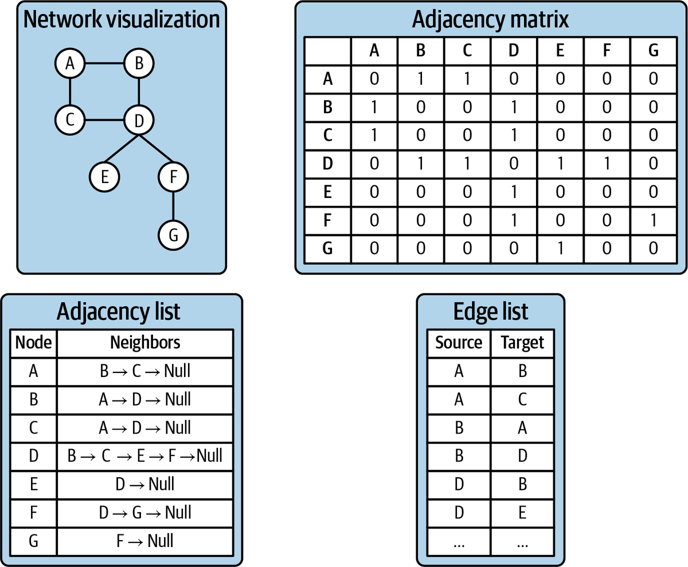
금융 시장은 다양한 그래프 데이터 유형과 표현 방식에 의존합니다. 다음 절들에서는 단순 그래프, 방향 그래프, 가중치 그래프, 시간적 그래프, 다분 그래프, 다중 그래프 등 6가지 관련 그래프 구조를 설명하겠습니다.
단순 그래프 (Simple graphs)
단순 그래프는 동종 노드(동일한 유형의 노드, 예: 기업들) 집합과 가중치가 없고 방향성이 없는 동종 링크 집합으로 구성됩니다. 그림 2-2는 두 개의 노드(A, B)가 있는 예를 보여줍니다.
그림 2-2. 두 개의 노드가 있는 단순 그래프
단순 그래프의 인접 행렬, 인접 리스트, 간선 리스트 표현은 그림 2-1에 나타난 것과 유사합니다. 금융 시장에서 단순 그래프는 은행 간의 결제 계약, 파트너십 협약, 금융 자산 간의 통계적 상관관계와 같이 개체 간의 관계의 존재 여부를 나타낼 수 있습니다.
방향 그래프 (Directed graphs)
방향 그래프에서 링크는 노드 간의 방향성(orientation)을 나타내는 방향을 가집니다. 방향 그래프는 링크의 양 끝에 있는 노드들이 서로 다른 역할을 수행하는 관계를 나타내는 데 사용됩니다. 예를 들어 A가 B로부터 차입하는 경우 A는 차입자이고 B는 대출자입니다. 그림 2-3은 노드 A가 노드 B를 가리키지만 그 반대는 성립하지 않는 두 노드 A와 B의 예를 보여줍니다.
그림 2-3. 두 개의 노드로 구성된 단순 방향 그래프
방향성 네트워크의 인접 행렬은 노드 i에서 j로 향하는 링크가 존재할 경우 (i, j) 위치의 값이 1이 되지만, j에서 i로 향하는 링크가 없다면 (j, i) 위치의 값은 0이 됩니다. 마찬가지로 방향 그래프의 인접 리스트와 엣지 리스트는 다른 노드를 가리키는 노드에 대한 레코드만 저장합니다. 그림 2-4는 방향 그래프의 네 가지 표현 방식을 보여줍니다.
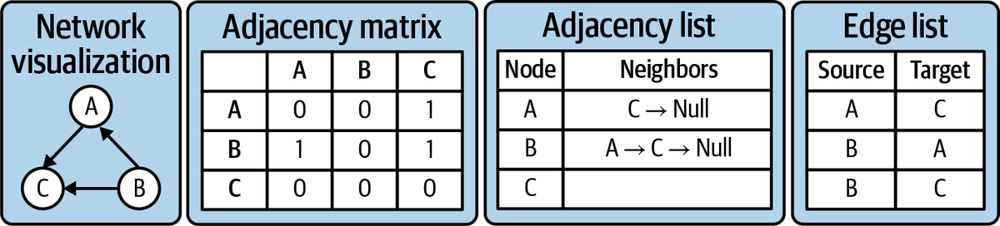
방향 그래프는 은행 간 교차 지분 보유, 이체, 거래, 은행 간 대출(콜론/콜머니) 등 다양한 금융 활동을 표현할 수 있습니다.
가중치 그래프 (Weighted graphs)
가중치 그래프에서는 관계의 크기나 강도를 나타내기 위해 링크에 수치 값이 할당됩니다. 가중치 그래프를 표현할 때는 그림 2-5에 나타난 것처럼 인접 행렬, 인접 리스트, 엣지 리스트에 가중치를 추가해야 합니다.
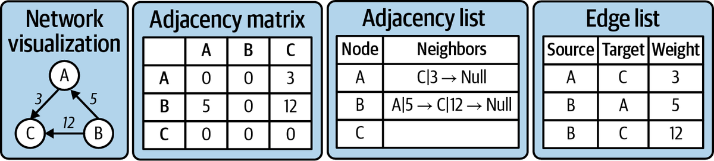
대부분의 그래프 유형(단순 그래프 및 방향 그래프 포함)에 가중치를 부여할 수 있습니다. 금융에서 가중치는 교차 지분 보유 네트워크에서 한 은행이 다른 은행에 보유한 자산 가치, 거래에서 이체된 금액, 시장 매매에서 체결된 증권 수량 등을 나타낼 수 있습니다.
다분 그래프 (Multipartite graphs)
둘 이상의 노드 유형을 포함하고 서로 다른 노드 유형 간의 링크만 허용하는 그래프 표현을 다분(Multipartite) 그래프라고 합니다. 두 가지 노드 유형을 가진 그래프는 이분(Bipartite) 그래프, 세 가지 노드 유형은 삼분(Tripartite) 그래프라고 하며, k개 유형을 가진 일반화된 경우는 k-분(k-partite) 그래프라고 부릅니다. 흔히 이분 그래프에 적용되는 k-분 투영(k-partite projection) 은 사용 가능한 k개 노드 유형 중 한 가지 유형의 노드로만 구성된 그래프를 생성하는 일반적인 연산으로, 원래 네트워크에서 두 노드가 다른 유형의 공통 노드와 링크를 공유하고 있는지 여부에 따라 엣지가 형성됩니다. 그림 2-6은 이분 그래프와 그에 따른 투영 그래프 및 인접 행렬을 보여줍니다.
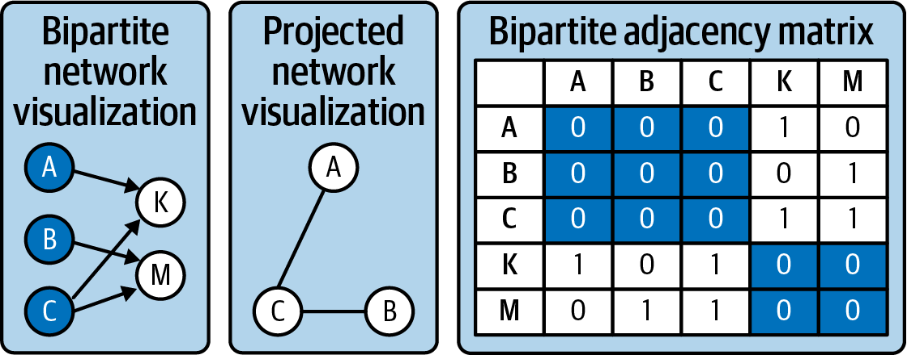
그림 2-6에서 가장 왼쪽에 있는 그래프는 음영 처리된 노드와 흰색 노드의 두 가지 유형을 가지며, 링크는 음영 노드와 흰색 노드 사이에만 존재합니다. 가운데 그래프는 한 가지 노드 유형(가장 왼쪽 그래프의 음영 노드)에 대한 이분 투영을 보여줍니다. 투영된 그래프를 보면 노드 A와 C가 링크로 연결되어 있는데, 이는 왼쪽의 이분 그래프에서 A와 C가 모두 K와의 연결을 공유하고 있기 때문입니다. M과의 연결을 공유하는 C와 B도 마찬가지입니다. 그림 2-6의 인접 행렬은 블록 구조를 가지며, 동일한 유형의 노드 간 링크는 존재하지 않아 0으로 표시되고(음영 블록), 서로 다른 유형의 노드 간 링크는 흰색 블록에 표시됩니다.
금융에서 이분 관계의 예는 다음과 같습니다.
겸직 이사회(Interlocking directorate): ‘사람’ 유형의 노드(노드 유형 1)가 하나 이상의 기업(노드 유형 2)의 이사회 구성원(링크)으로 활동합니다.
신디케이트론(Syndicated lending): 여러 대주단(노드 유형 1)이 하나 이상의 차입 주체(노드 유형 2)에 공동으로 대출(링크)을 제공합니다.
기업 지배 구조(Corporate control hierarchies): 모기업(노드 유형 1)이 자회사(노드 유형 2)에 대해 소유권(링크)을 갖습니다.
환거래 은행(Correspondence banking): 환거래 은행 관계는 일반적으로 서로 다른 국가에 있는 두 은행 간의 계약으로, 한 은행(환거래 은행)이 다른 은행(위탁 은행)을 대신하여 서비스를 제공하는 형태입니다.
노드를 카테고리별로 라벨링하면 다분 그래프를 다루기가 훨씬 수월해지며, 이는 수학에서 흔히 색칠된 그래프(Colored Graph)라고 불립니다. 예를 들어 이분 그래프는 각 노드 카테고리가 동일한 색상을 갖도록 두 가지 색상으로 칠할 수 있습니다. 이러한 라벨이 없으면 특히 k가 2보다 큰 경우 k-분 그래프를 식별하기가 매우 어려울 수 있습니다.4
시간 그래프 (Temporal graphs)
시간 그래프(Temporal graph)에서 링크는 활성화되었던 시점을 나타내는 시간적 차원을 가집니다. 시간 그래프의 네트워크 표현은 스냅샷 기반 또는 시간 기반입니다. 그림 2-7에 나와 있듯이, 네트워크 표현과 인접 행렬 표현 모두 각 시점의 링크 상태를 저장하는 시간적 스냅샷입니다. 예를 들어 노드 A와 B는 시점 t1, t3, t4에 링크를 형성했지만, 시점 t2에는 상호작용하지 않았습니다. 인접 행렬은 각 시점별 스냅샷을 저장하는 다차원 행렬로 표현됩니다. 엣지 리스트는 모든 링크와 해당 링크가 활성화되었던 시간을 함께 저장합니다.
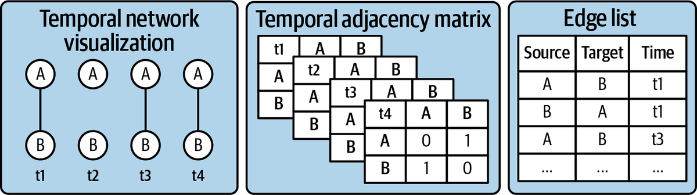
은행 간 대출, 트레이딩, 지급결제, 거래 등 수많은 금융 관계는 본질적으로 시간에 따라 변화하는 특성을 지닙니다.
다중 레이어 그래프 (Multilayer graphs)
다중 레이어 그래프는 서로 다른 유형의 노드와 링크 간의 관계를 표현하는 데 사용되는 복합 구조입니다. 가장 일반적인 유형은 멀티플렉스(Multiplex) 그래프로, 노드는 동일한 유형이지만 상호작용 맥락에 따라 다양한 유형의 링크를 가집니다. 예를 들어 금융기관은 상업은행, 자산 관리, 금융 컨설팅 등 다양한 시장에서 동시에 활동할 수 있습니다.
다중 레이어 네트워크 표현은 금융에서 매우 유용합니다. 국소적 충격을 증폭시킬 수 있는 잠재적인 연쇄 메커니즘을 드러내고, 여러 영역에 걸친 권력 구조를 이해하는 데 도움을 주며, 사기 탐지(예: 동일한 개인이 동일한 연결 패턴을 사용하여 서로 다른 시스템에서 활동하는 경우)를 강화할 수 있습니다. 멀티플렉스 그래프 표현에 대한 예시가 그림 2-8에 나와 있습니다.
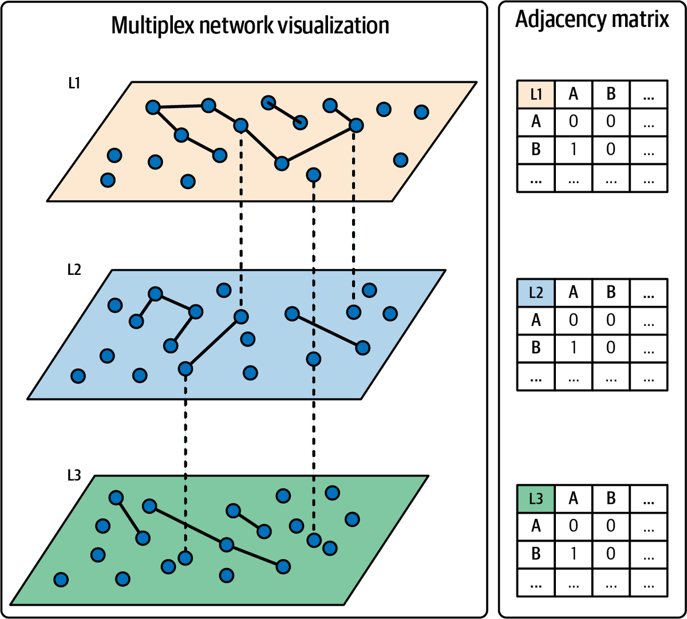
금융 그래프 데이터의 원천은 무엇인가?
금융 그래프 데이터의 중요한 특징 중 하나는 다른 유형의 데이터 소스로부터 파생되는 경우가 많다는 점입니다. 예를 들어 은행 간 대출 시장의 그래프를 구축하려면 차입자, 대출자, 거래 금액 및 시간에 대한 정보가 포함된 은행 간 거래의 과거 패널 데이터가 필요합니다. 마찬가지로 어떤 이사가 여러 기업의 이사회에 중복 참여하고 있는지 확인하기 위해 겸직 이사회 네트워크를 구축하려는 경우, 임원 개인과 이들이 관련된 기업에 대한 정보가 포함된 데이터셋(예: LSEG Officers and Directors 데이터셋)이 필요합니다. 어떤 경우에는 더 많은 작업이 수반됩니다. 예를 들어 주식 간 유사도 네트워크를 구축하려면 먼저 주가 데이터(예: CRSP)의 과거 패널이 필요하며, 그런 다음 그래프 구축에 필요한 링크를 얻기 위해 주식 간의 쌍별 유사도(상관관계)를 직접 계산해야 합니다.
경우에 따라 금융 데이터 벤더가 정제하여 제공하는 연결 데이터셋을 찾을 수도 있습니다. 예를 들어 S&P Global은 소유권, 공급망, 투자 등 기업 및 비즈니스 관계에 대한 다양한 데이터셋을 제공합니다.
텍스트 데이터
텍스트 데이터는 비정형 또는 반정형 포맷으로 제공되는 모든 정보를 의미합니다. 광범위한 활용성과 범용성 덕분에 금융 시장에서 가장 풍부하게 존재하는 데이터 유형으로 꼽힙니다. 생성형 AI와 대규모 언어 모델(LLM)의 등장으로 텍스트 데이터의 중요성은 비약적으로 높아졌습니다. GPT-4 및 BloombergGPT와 같은 생성형 모델은 방대한 양의 텍스트 데이터로 학습됩니다. 사기 탐지, 감성 분석, 고객확인제도(KYC), 자금세탁방지(AML)와 같은 특화된 금융 작업에서는 LLM을 커스터마이징하고 미세 조정(파인튜닝)하기 위해 금융 도메인 특화 텍스트 데이터가 필수적입니다.
텍스트 데이터는 뉴스, 애널리스트 보고서, 기업 공시 서류, 투자설명서, 이메일, 소셜 미디어 게시물, 시스템 로그, 특허 문서, 법률 및 기술 문서, 연구 논문, 웹페이지, 블로그 포스트 등 모든 텍스트 기반 매체가 될 수 있습니다.5
텍스트 데이터는 단어와 문장으로 구성된 일반 텍스트, 키-값 쌍을 가진 반정형 문서, 테이블 형태, 또는 단어 임베딩(Word Embeddings)과 같은 복잡한 특수 데이터 구조 등 다양한 형태를 취할 수 있습니다.
금융 텍스트 데이터는 다른 형태의 텍스트 데이터와 구별되는 고유한 특성을 보입니다. “부채(Liability)”, “리스크(Risk)”, “채무 불이행(Default)”, “익스포저(Exposure)”와 같은 용어는 일반적인 문맥에서는 부정적인 뉘앙스를 띨 수 있지만, 금융 시장에서는 일상적이고 빈번하게 사용되는 전문 용어입니다. 또한 금융 문서는 명시적 내용(예: 특정 기업의 인수합병 사실)과 암묵적 내용(긍정적 또는 부정적 감정을 암시하는 사실 정보)을 모두 포함할 수 있습니다.6
금융 데이터의 주요 소스와 구조를 살펴보았으므로, 다음 절에서는 분석 및 운영 목적으로 활용되는 다양한 유형의 금융 데이터를 살펴보겠습니다.
금융 데이터의 유형
앞 절에서 논의한 금융 데이터 구조는 다양한 금융 변수, 콘텐츠, 현상을 표현할 수 있습니다. 이 절에서는 가장 중요한 금융 데이터 유형을 상세히 다루고, 각 유형의 특징과 과제를 설명함으로써 이러한 금융 현상을 분류해 보겠습니다.
기본적 데이터 (Fundamental Data)
재무제표 데이터, 대차대조표 데이터, 기업 금융 데이터라고도 불리는 금융 기본적 데이터(펀더멘털 데이터)는 기업의 구조, 운영 및 성과에 대한 정보를 전달합니다. 기업이 펀더멘털 데이터를 직접 생성하고 산출하는 이유는 일부는 법적 규제 요건 때문이고, 일부는 경영진이 기업의 재무 및 운영 상태를 파악하는 데 도움이 되기 때문입니다. 많은 기업이 재무제표 작성 및 관리를 담당하는 회계 부서를 두고 있지만, 컨설팅 및 감사 법인과 같은 회계 서비스 제공업체를 통해 이를 수행하기도 합니다. 일반적으로 주요 재무제표에는 다음 세 가지가 있습니다.
재무상태표(Balance sheet): 기업이 소유한 항목(자산), 빚진 항목(부채), 주주가 소유한 항목(자기자본/자본총계)에 대한 수치를 제공합니다.
손익계산서(Income statement): 연간 매출액 및 당기순이익과 같이 특정 기간 동안 기업의 재무 성과에 대한 수치를 제공합니다.
현금흐름표(Cash flow statement): 기업의 현금 유출입에 대한 정보를 제공하여, 기업이 영업 활동을 지속하기에 충분한 현금을 창출하고 있는지 판단하는 데 도움을 줍니다.
각 재무제표에는 다양한 수량을 나타내는 수많은 항목이 포함되어 있습니다. 재무제표 항목의 특수한 유형 중 하나는 둘 이상의 항목 간의 관계를 나타내는 재무 비율(Ratios) 입니다. 예를 들어 널리 쓰이는 비율로 자기자본이익률(ROE, Return on Equity) 이 있으며, 이는 기업의 당기순이익을 자기자본 가치로 나누어 계산합니다. 높은 ROE는 기업이 주주의 자본을 활용하여 순이익을 효율적으로 창출하고 있음을 나타내는 지표입니다.
금융 기본적 데이터 재무제표는 반드시 고려해야 할 몇 가지 특성을 가지고 있습니다. 첫째, 작성에 걸리는 시간으로 인해 분기별, 반기별, 연간 등 낮은 빈도(Low frequency) 로 발표됩니다. 둘째, 펀더멘털 데이터 보고서는 종종 시간차(Time lapse) 를 두고 공시됩니다. 즉, 특정 기간의 데이터가 미래의 특정 시점에 발표됩니다. 이미 발표된 수치가 수정 및 정정될 때 발생하는 재작성(Reinstatements) 형태로 데이터가 보고될 수도 있습니다. 또한 과거에 해당 기업에 대한 정보가 전혀 없던 데이터셋에 기업과 해당 기업의 전체 펀더멘털 데이터 이력이 새롭게 추가되는 데이터 백필링(Backfilling) 이 발생할 수도 있습니다.
이러한 특성들을 제대로 처리하지 않으면 비-시점(Non-Point-in-Time, Non-PIT) 기본적 데이터가 생성될 수 있습니다. PIT(Point-in-Time, 특정 시점) 데이터는 공시일 또는 발표일을 반영하는 타임스탬프와 함께 기록된 데이터입니다. PIT 데이터를 사용하면 “데이터가 언제 발표되었는가?” 및 “그 시점에 알려진 데이터는 무엇이었는가?”라는 질문에 답할 수 있습니다. 반면 Non-PIT 데이터는 회계연도 마감일이나 최신 업데이트 날짜로 스탬프가 찍힙니다. Non-PIT 데이터는 가장 최근에 발표된 데이터를 반영하며, 업데이트나 수정 공시가 발생하면 기존 데이터를 덮어씁니다. 표 2-7은 이 둘의 차이를 보여줍니다. 세 가지 버전의 데이터를 사용할 수 있을 때, PIT 데이터셋은 모든 과거 스냅샷(101, 110, 120)을 추적 및 유지하지만, Non-PIT 데이터셋은 오직 최신 버전(120)만을 표시합니다.
표 2-7. PIT 데이터와 Non-PIT 데이터의 비교
| 데이터 유형 | 잠정 실적 발표 | 회계연도 마감 공시 | 정정 공시 |
|---|---|---|---|
| 버전 | 101 | 110 | 120 |
| PIT | 101 | 110 | 120 |
| Non-PIT | 120 | 120 | 120 |
Non-PIT 데이터는 여러 과제를 야기합니다. 첫 번째는 미래 참조 편향(Look-ahead bias) 문제로, 과거 연구를 수행할 때 공시 시점의 차이로 인해 실제로는 알 수 없었던 데이터를 특정 과거 시점에 이미 알고 있었다고 잘못 가정할 때 발생합니다. 두 번째는 재현성(Reproducibility) 문제로, 과거 연구에 사용된 Non-PIT 데이터가 사후에 업데이트되면 동일한 결과를 재현하기 어려워집니다. 세 번째 과제는 투명성(Transparency) 문제로, 예를 들어 기업이 과거의 부정한 행위를 숨기기 위해 회계 기록을 사후 수정하는 경우 문제가 될 수 있습니다.
은행 연차보고서에서 주요 재무 하이라이트 읽기
연차보고서(사업보고서)의 주요 항목을 이해하는 것은 금융 데이터 엔지니어에게도 매우 유용한 역량입니다. 아래 표는 가상의 은행 ADK의 연간 재무 하이라이트를 보여줍니다. 실제 은행의 연차보고서를 확인하더라도 이와 유사한 표를 볼 수 있습니다. 2020년 수치를 살펴보면, 이 은행은 2019년에 비해 더 많은 총 순영업수익(Total Net Revenues) (990억 달러 대비 1,020억 달러)을 달성했지만 당기순이익(Net Income) 은 오히려 낮아졌습니다(250억 달러 대비 230억 달러). 이는 주주 수익률의 하락으로 이어졌으며, 이는 보통주 자기자본이익률(ROE) 이 2019년 16%에서 11%로 감소한 것에서 확인할 수 있습니다. ADK는 총자산(Total Assets) 이 2조 9,872억 4,500만 달러(거의 3조 달러에 육박)에 달하고 임직원 수(Headcount) 가 150,432명에 이르는 매우 큰 은행입니다. 또한 바젤 III 협약에 따라 금융기관의 위험가중자산 대비 기본자본 비율을 측정하는 건전성 지표인 보통주자본/기본자본 비율(Tier 1 capital ratio) 이 15%로 나타나 재무적으로 안정적인 것으로 보입니다. 바젤 III에서는 기본자본 비율을 최소 6% 이상 유지하도록 규정하고 있습니다. ADK는 시가총액이 2,508억 7,600만 달러(약 2,500억 달러)에 달해 상당한 시장 점유율을 보유하고 있을 가능성이 높습니다. 또한 주당 현금배당금(Cash dividends per share) 수치를 통해 매년 주주들에게 배당금이 지급되었음을 알 수 있습니다.
| 항목 | 2020년 | 2019년 | 2018년 |
|---|---|---|---|
| 총 순영업수익 (백만 달러) | 102,000 | 99,340 | 96,345 |
| 총 비이자비용 (백만 달러) | 55,000 | 49,000 | 45,865 |
| 당기순이익 (백만 달러) | 23,100 | 25,987 | 19,628 |
| 주당 현금배당금 (달러) | 3.5 | 2 | 1.7 |
| 보통주 자기자본이익률 (ROE) | 11% | 16% | 8% |
| 기본자본 비율 (Tier 1 capital ratio) | 15.0% | 14.1% | 14% |
| 총자본 비율 (Total capital ratio) | 18.9% | 17% | 17% |
| 대출금 (백만 달러) | 986,865 | 956,586 | 916,865 |
| 예수금 (백만 달러) | 1,298,456 | 1,187,456 | 1,062,456 |
| 총자산 (백만 달러) | 2,987,245 | 2,445,853 | 2,200,119 |
| 총 자기자본 (백만 달러) | 72,876 | 71,664 | 70,345 |
| 시가총액 (백만 달러) | 250,876 | 300,897 | 280,986 |
| 임직원 수 | 150,432 | 144,983 | 139,709 |
시장 데이터 (Market Data)
시장 데이터는 뉴욕증권거래소(NYSE)와 같은 거래소 또는 장외(OTC) 시장에서 거래되는 금융 상품의 가격 및 관련 정보를 포함합니다. 주식, 파생상품, 지수, 통화, 채권, 펀드 등 다양한 유형의 상품에 대해 광범위하게 제공됩니다. 또한 시장 데이터는 매우 빈번하게 생성되며, 생성 후 불과 수 초 만에 제공되는 경우가 많습니다.
특정 금융 상품의 시장 데이터에는 다음과 같은 필드가 포함될 수 있습니다.
- 티커와 같은 식별자 (예: IBM)
- 거래소 코드와 같은 거래 장소 코드 (예: NYSE)
- 전일 (수정) 종가 (예: $40.30)
- 당일 시가 (예: $40.15)
- 당일 고가 (예: $42.30)
- 당일 저가 (예: $39.42)
- 당일 가격 범위 (예: $39–42.30)
- 당일 거래량 (예: 50,000)
- 최신 매수/매도 호가 및 수량 (예: 매수 $40.02 × 2,200주, 매도 $40.03 × 3,000주)
- 마지막 체결/호가 일시 (예: 오늘 14:12:10)
참고
금융 시장에서 매수 호가(Bid) 는 매수자가 금융 자산을 구매하고자 하는 가격을 의미하며, 매도 호가(Ask) 는 매도자가 자산을 판매하고자 하는 가격을 의미합니다.
일부 증권거래소와 미디어 플랫폼은 시장 데이터에 시가총액, 매출액, 순이익과 같은 펀더멘털 데이터뿐만 아니라 다양한 재무 비율 및 최근 배당일과 같은 기업 이벤트 일정을 보강하여 제공합니다.7
시장 데이터 생성의 핵심에는 특정 거래소에서 특정 증권에 대한 매수 및 매도 주문을 기록하는 전자 원장인 오더북(Order Book, 주문 대장/호가창) 이 있습니다. 오더북에는 두 가지 표현 방식이 있습니다. 바로 주문별 시장 데이터(Market by Order, MBO) 와 가격별 시장 데이터(Market by Price, MBP) 입니다. MBO는 개별 주문을 분리하여 각 매수 및 매도 주문의 가격, 수량, 접수 시간을 자세히 보여줍니다. 반면 MBP는 가격대별로 주문을 집계하여 개별 주문을 일일이 표시하는 대신 각 가격 수준에서의 총 주문 수량을 표시합니다.
오더북의 주문은 알고리즘을 사용하여 최선의 체결을 보장하는 주문 매칭 시스템(Order Matching System, OMS) 을 통해 체결(매칭)될 수 있습니다. 가장 일반적인 두 가지 매칭 알고리즘은 가격/시간 우선 원칙(선입선출(FIFO)이라고도 함)과 비례 배분(Pro rata) 방식입니다.8 가격/시간 우선 원칙은 가격을 우선적으로 고려하고, 동일한 가격대에서는 먼저 접수된 주문을 먼저 체결합니다. 예를 들어 동일한 가격으로 두 개의 매수 주문이 접수된 경우 먼저 들어온 주문이 먼저 체결됩니다. 반면 비례 배분 방식은 주문의 규모에 비례하여 동일한 가격대의 주문을 배분합니다. 예를 들어 동일한 가격에 100주 매수 주문과 200주 매수 주문이 있고 150주 매도 주문이 도착하면, 첫 번째 주문에 50주, 두 번째 주문에 100주가 비례 배분되어 체결됩니다.9
오더북의 예시가 표 2-8에 나와 있습니다. 이 예시에서 가장 높은 매수 호가는 $55.11이고 가장 낮은 매도 호가는 $55.13입니다. 가장 높은 매수 호가와 가장 낮은 매도 호가를 최우선 호가(Top of the Book) 라고 부르며, 둘 사이의 차이를 매수/매도 스프레드(Bid/Ask Spread) (=$0.02)라고 합니다. 오더북 깊이(Order Book Depth) 는 오더북에서 이용 가능한 서로 다른 가격대의 수를 나타내는 지표입니다. 또 다른 용어인 시장 깊이(Market Depth) 는 유동성의 지표로 자주 사용되며, 가격 수준에 큰 충격을 주지 않고 체결될 수 있는 시장가 주문의 크기로 정의됩니다.
표 2-8. 오더북 예시
| 매수 측 (Buy-side) | 매도 측 (Sell-side) | ||
|---|---|---|---|
| 매수 잔량 | 매수 호가 | 매도 호가 | 매도 잔량 |
| 220 | $ 55.11 | $ 55.13 | 1000 |
| 1000 | $ 55.11 | $ 55.14 | 500 |
| 50 | $ 55.9 | $ 55.66 | 200 |
| 20 | $ 55.55 | $ 55.66 | 10 |
| 560 | $ 55.1 | $ 66.68 | 50 |
| … | … | … | … |
오더북에는 다양한 유형의 주문을 제출할 수 있습니다. 예를 들어 시장가 주문(Market order) 은 이용 가능한 최선의 매수/매도 호가로 즉시 매매하는 데 사용됩니다. 지정가 주문(Limit order) 은 지정된 최소 매도 호가 이상으로 매도하거나 최대 매수 호가 이하로 매수하는 주문입니다. 손절매 주문(Stop-loss order) 은 가격 수준이 사전 정의된 상한선 또는 하한선에 도달할 때 트리거되어 시장에 제출되는 주문입니다. 트레일링 스탑 주문(Trailing stop order) 은 시장 가격이 특정 백분율이나 금액만큼 유리한 방향으로 움직인 후 반대로 돌아설 때 트리거되는 주문입니다.
시장 데이터는 고려해야 할 몇 가지 중요한 특징을 갖습니다. 첫째, 가격과 같은 시장 데이터는 계산된 수치라는 점입니다. 투자 회사가 금융 자산의 매수 또는 매도 주문을 낼 때, 주문 가격은 종종 특정 가치평가(밸류에이션) 모델을 사용하여 산출됩니다. 예를 들어 기업의 주가는 순현재가치(NPV), 수익 배수(PER 등), 배당 할인 모형, 현금흐름 할인(DCF) 모형 등을 사용하여 계산될 수 있습니다.10
중요한 점은 여러 시장 참여자가 서로 다른 시장에서 서로 다른 가격으로 주문을 제출할 때, 투자자에게 적용될 최종 시장 가격을 결정하는 것이 매우 중요하다는 사실입니다. 이상적으로 매수 호가는 모든 매수 호가 중 가장 높아야 하고, 매도 호가는 모든 매도 호가 중 가장 낮아야 합니다. 이러한 규칙을 강제하기 위해 SEC와 같은 규제 기관은 전미시장체제 규정(Regulation NMS)을 통과시켰으며, 이를 통해 전국 최우선 매수·매도 호가(NBBO, National Best Bid and Offer) 가 도입되었습니다. NBBO가 적용됨에 따라 브로커는 고객 주문이 적어도 NBBO와 같거나 그보다 유리한 최선의 매수 및 매도 호가로 체결되도록 보장해야 합니다.11
그럼에도 불구하고 모든 금융 시장이 NBBO를 보장하는 것은 아닙니다. 이는 통화가 거래되는 외환(Forex) 시장과 같은 장외(OTC) 시장에서 특히 두드러집니다. 외환 시장에는 통화쌍에 대해 단일하게 강제되는 환율이 존재하지 않습니다. 제공받는 환율은 은행이나 가장 흔하게는 외환 브로커 와 같은 개별 외환 호가 제공업체에 따라 다릅니다. 즉, 구글에서 확인하는 EUR/USD 호가는 단일한 시장 가격이 아니며, 실제로 한 통화에서 다른 통화로 환전할 때 적용받는 환율과 일치하지 않을 수 있습니다.
가격 이산성(Price discreteness) 은 시장 데이터의 또 다른 중요한 속성입니다. 이는 상장 주식의 가격이 호가 단위(Tick size) 로 알려진 특정 최소 금액 단위 미만으로는 변할 수 없음을 의미합니다. 예를 들어 최소 호가 증분 단위에 관한 SEC 규칙 612에 따르면 다음과 같습니다.
이 규칙은 시장 참여자가 주당 $1.00 이상인 NMS 주식에 대해 $0.01 미만의 증분으로 호가, 주문 또는 매매 의사를 표시, 정렬 또는 접수하는 것을 금지합니다. 호가, 주문 또는 매매 의사가 주당 $1.00 미만인 경우 최소 가격 증분 단위는 $0.0001입니다.
마지막으로 시장 데이터, 특히 가격 데이터의 매우 중요한 특징은 비동기적 이력(Nonsynchronous history) 입니다. 이는 두 증권 A와 B가 있을 때, 증권 A는 1분에 한 번 이상 거래되는 반면 증권 B는 5시간에 한 번만 거래될 수 있음을 의미합니다. 이러한 시장 행동의 차이는 증권마다 시장 유동성이 크게 다르기 때문에 발생합니다.
트랜잭션 데이터 (Transaction Data)
금융 트랜잭션(거래)은 돈을 대가로 금융 증권, 서비스, 재화, 리스크 또는 원자재를 교환하기 위한 둘 이상의 당사자 간의 법적 계약입니다. 금융 시장은 투자, 지급결제, 트레이딩, 헤징, 투기, 대출과 같은 활동으로 인해 대규모의 트랜잭션 데이터를 생성합니다.
대부분의 금융 거래는 전체적으로 또는 부분적으로 전자 방식으로 수행됩니다. 일반적으로 금융 거래는 최소 다섯 가지 요소로 특징지어집니다: 거래 명세, 거래 당사자, 개시일, 결제일, 결제 방식입니다.12 다음으로 이 다섯 가지 요소를 자세히 살펴보겠습니다.
거래 명세 (Transaction specifications)
거래를 개시하기 전에 당사자들은 거래의 세부 사항과 명세에 합의합니다. 증권 거래에서 이 단계를 흔히 매매 전(Pre-trade) 단계라고 부릅니다. 예를 들어 주식 매수 거래의 경우 교환되는 주식의 이름과 식별자, 주식 수량, 가격, 통화 등을 명시합니다. 주식 옵션과 같은 파생상품의 경우 옵션 유형(콜 vs 풋), 만기일, 행사가격과 같은 추가 세부 정보가 필요합니다. 국경 간 지급결제의 경우 당사자들은 금액, 통화쌍, 외환 환전율, 스프레드 마진 등에 합의해야 할 수 있습니다.
개시일 (Initiation date)
거래 개시일은 당사자들이 거래 실행을 위한 계약을 체결하는 날짜입니다.
결제일 (Settlement date)
결제일은 거래가 최종 확정되어 자금의 교환과 소유권 이전이 이루어지는 날입니다. 증권 거래에서 이 단계를 매매 후(Post-trade) 단계라고 부릅니다. 중요한 점은 많은 금융 거래에서 결제일이 거래 개시일 이후의 미래 시점에 도래한다는 것입니다. 이러한 지연은 거래 검증 프로세스, 기술적 제약, 정보 누락으로 인한 오류, 소유권 증서(예: 주권) 발급과 같은 행정적 절차, 긴 결제 처리 과정, 필요한 수동 개입 단계(예: 심사) 등 다양한 이유로 인해 발생할 수 있습니다.
금융 시장 참여자들은 거래 결제 시간을 단축하기 위한 기술에 지속적으로 투자해 왔습니다. 직통 처리(STP, Straight-Through Processing) 라는 용어는 수동 개입이 전혀 없는 이상적인 트랜잭션 처리 시스템을 가리킬 때 자주 사용되며, 처리 시간 단축, 운영 리스크 감소, 비용 절감 효과를 가져옵니다. 또한 금융 시장은 결제 기간에 대한 표준 관행을 채택해 왔습니다. 예를 들어 현재 증권 거래의 일반적인 관행은 T+2(거래일 기준 2영업일 후 결제) 로, 증권 거래가 개시일로부터 2영업일 후에 결제됨을 의미합니다. 최근에는 거래가 발생한 당일에 거래 검증 프로세스를 완료하자는 당일 확인(SDA, Same-Day Affirmation) 또는 T0 개념이 시장과 규제 기관의 주목을 받고 있습니다. STP와 SDA를 통해 금융 거래 수명주기를 단축하는 것은 여러 시장 참여자가 보안 및 신뢰성 요건을 충족하면서 실시간 트랜잭션 데이터를 제공하는 데이터 인프라에 막대한 투자를 단행해야 하므로 매우 까다로운 과제입니다(다행히도 이것이 바로 이 책에서 다루는 주제입니다!).
결제 방식 (Settlement method)
금융 시장 거래는 거래 유형에 따라 서로 다르게 결제될 수 있습니다. 증권 시장에서 가장 일반적인 결제 방식은 증권대금동시결제(DVP, Delivery versus Payment) 로, 증권 인도 전 또는 인도와 동시에 현금 지급이 이루어지도록 보장합니다. 증권무상인도(DVF, Delivery versus Free) 방식에서는 증권 대차 거래에서 담보를 인도할 때와 같이 대금 지급 없이 증권 인도가 이루어집니다.
지급결제 분야에서는 여러 결제 메커니즘이 존재합니다. 대표적인 예가 외환 거래에서 널리 사용되는 동시결제(PvP, Payment versus Payment) 입니다. PvP 시스템에서는 상대 통화의 지급이 이루어질 때에만 한 통화의 지급이 실행됩니다. 또 다른 주요 메커니즘은 실시간 총액결제(RTGS, Real-Time Gross Settlement) 로, 자금이 실시간으로 총액 기준으로 이체됩니다. 즉, 거래가 하루 동안 지속적으로 처리되며 건별로 개별 결제됩니다. 반대로 이연 차액결제(DNS, Deferred Net Settlement) 메커니즘에서는 거래가 일정 기간(예: 마감 시점) 동안 누적된 후 특정 주기마다 일괄(배치) 결제됩니다. DNS에서는 차변과 대변의 순차액(순이체액)만 결제됩니다. 예를 들어 씨티은행이 JP모건 체이스에 150만 달러를 지급해야 하고, JP모건 체이스가 씨티은행에 100만 달러를 지급해야 하는 경우, DNS 시스템은 이를 집계하여 씨티은행이 JP모건 체이스에 50만 달러만 지급하는 단일 결제로 처리합니다. 반대로 RTGS 시스템에서는 전액에 대해 두 건의 개별 결제(JP모건 체이스에 150만 달러, 씨티은행에 100만 달러)가 실행되어야 합니다.
거래 당사자 (Transaction parties)
금융 시장 거래는 대개 매수자와 매도자라는 두 당사자에 의해 수행됩니다. 그러나 거래는 결코 무위험(Risk-free)이지 않습니다. 결제 리스크(Settlement risk) 는 거래의 한쪽 당사자가 계약상의 의무를 이행하지 않는 위험(예: 만기 대금 미지급, 대금 지급 지연, 자산 소유권 이전 실패 등)을 의미합니다. 이러한 리스크를 완화하기 위해 금융 거래에는 보증인 역할을 하는 제3자 기관이 개입하는 경우가 많습니다. 대표적인 예는 다음과 같습니다.
청산소(Clearinghouse): 청산소는 매도자와 매수자 사이의 중개자 역할을 합니다. 매도자에게는 매수자가 되고, 매수자에게는 매도자가 됨으로써 거래의 성공적인 결제를 촉진하고 보증합니다. 청산의 예로는 나스닥 청산소(Nasdaq Clearing) 및 CME 청산소(CME Clearing)와 같은 거래소 청산 부서뿐만 아니라 비자(Visa), 마스터카드(Mastercard)와 같은 신용카드 청산망이 있습니다.
중앙예탁기관(CSD, Central Securities Depository): CSD는 다른 기관을 대신하여 주식, 파생상품 등의 금융 증권을 보관하는 특수 금융기관입니다. 청산소와 유사하게 CSD는 금융 거래의 제3자로서 대금 지급에 따른 증권 소유권의 이전과 성공적인 결제를 보장합니다. CSD의 대표적인 예로는 클리어스트림(Clearstream)이 있습니다.
수탁기관(커스터디언, Custodian): 수탁기관 또는 커스터디언 은행은 기관 투자자, 자산운용사, 은행 및 기타 금융기관에 증권 보관 및 사후 관리(Post-trade) 서비스를 제공하는 금융기관입니다. 수탁기관은 고객의 증권 보관 및 안전 관리, 고객을 대리한 거래 수행, 청산 및 결제 서비스 제공 등 다양한 서비스를 제공합니다.
지급결제 시스템(Payment systems): 지급결제 시스템은 결제 리스크를 효과적으로 관리하면서 금융기관 간에 안전하게 자금을 이체할 수 있도록 지원합니다. 가장 대표적인 예는 미국의 연방준비제도 페드와이어(Fedwire), 영란은행의 CHAPS, 유럽중앙은행의 T2(TARGET2 서비스의 일부)와 같은 RTGS 시스템입니다. RTGS는 빠른 거래와 결제 리스크 감소를 위해 주로 선호됩니다. 반면 미국 어음교환소 은행간 결제 시스템(CHIPS)과 같이 이연 차액결제를 지원하는 시스템도 있습니다. 이러한 시스템은 시간 민감도가 덜한 지급결제에 주로 사용되므로 RTGS보다 비용이 저렴합니다.
분석 데이터 (Analytics Data)
금융 데이터의 또 다른 가치 있는 유형은 분석 데이터(Analytics data)로, 기본적 데이터, 시장 데이터, 트랜잭션 데이터와 같은 다른 데이터 유형으로부터 파생되는 경우가 많습니다. 이 데이터는 대개 단순 공식, 통계 모델, 머신러닝 기법, 금융 이론을 사용하여 산출됩니다. 뉴스 및 시장 감성 분석 지표(새로움, 점수, 관련성, 영향력), 금융 리스크 측정치(예: Value at Risk, 옵션 그리스(Greeks), 채권 듀레이션, 내재 변동성), 시장 지수(예: MSCI 글로벌 지수), ESG(환경, 사회, 지배구조) 점수, 주식 분석, 기업 가치평가, 추정치(예: I/B/E/S 실적 컨센서스), 경쟁 분석 등이 대표적입니다.
분석 데이터의 주된 장점은 사전 계산된 패턴과 시그널을 제공하여 의사결정에 즉시 활용할 수 있다는 것입니다. 그러나 분석 데이터 공급업체가 사용하는 계산 방법론은 독점적(Proprietary)일 수 있어 내부를 알기 어려운 블랙박스가 되기도 합니다. 또한 모든 시장 참여자가 동일한 데이터에 접근할 수 있게 되면 지속 가능한 경쟁 우위를 유지하기가 점점 더 어려워집니다(조만간 다른 누군가도 동일한 데이터를 확보하여 여러분의 전략을 복제할 것입니다).
대체 데이터
대체 데이터(alternative data)는 금융 분석, 투자 또는 예측에 사용될 수 있는 다양한 비전통적 데이터를 의미합니다. 매매, 가격, 거래, 기업 재무 활동 등 금융 시장의 전통적인 맥락에서 주로 발생하는 데이터가 아니기 때문에 비전통적인 것으로 간주됩니다. 뉴스, 소셜 미디어 게시물, 위성 이미지, 특허, 구글 트렌드, 소비자 행동, 기술 분석, 정치적 분석, 환경 및 신뢰성 점수 등이 대표적인 예입니다. 데이터 벤더를 통해 수많은 대체 데이터셋을 이용할 수 있지만, 인터넷 및 기타 공개 저장소에서 유사한 데이터를 직접 추출하는 것도 가능합니다.
대체 데이터의 주된 장점은 참신성과 다양성에 있습니다. 대체 데이터 소스를 추출하고 정제할 수 있는 전문성과 자원을 갖춘 금융 기관은 정보 경쟁 우위를 점할 수 있으며, 이는 포트폴리오 분석과 수익률을 크게 향상시킬 수 있습니다. 예를 들어, 한 연구에서는 위성 이미지 데이터를 사용하여 미국 상장 기업 표본의 주차장에 있는 차량 수가 재무 성과를 예측하는 지표로 활용될 수 있음을 보여주었습니다.
대체 데이터를 다룰 때는 다양한 문제에 직면할 수 있습니다. 가장 큰 문제는 이러한 데이터셋이 비정형(unstructured) 및 원천(raw) 포맷으로 제공되는 경우가 많아 데이터를 구조화하고 가치 있는 인사이트를 추출하는 데 상당한 투자가 필요하다는 점입니다. 또 다른 과제는 전통적인 금융 데이터셋과 달리 표준화된 개체(엔티티) 식별자 및 참조 기준이 부족하다는 것입니다. 게다가 상장 주식과 같은 전통적인 데이터셋의 체계적인 데이터 수집과 달리, 대체 데이터는 관측치와 이벤트가 일관되게 기록되지 않기 때문에 불균형하거나 불완전할 수 있습니다. 마지막으로 대체 데이터셋은 쉽게 편향될 수 있으면서도 이러한 편향을 감지할 수 있는 추가 정보를 제공하지 않는 경우가 많습니다.13
기준 데이터 (Reference Data)
금융 기준 데이터(참조 데이터, reference data)는 금융 상품, 제품 및 개체를 식별, 분류, 설명하는 데 사용되는 메타데이터의 일종입니다. 이는 거래, 매매, 청산 및 결제, 규제 보고 및 컴플라이언스, 데이터 통합, 투자 등 다양한 금융 운영에 매우 중요합니다.
기준 데이터가 무엇인지 이해하려면 먼저 금융 상품(financial instrument)의 개념을 짚고 넘어가는 것이 좋습니다. 간단히 말해 금융 상품은 금전적 가치를 지니고 금융 시장에서 거래될 수 있는 두 당사자 간의 계약입니다. 채권 및 대출과 같은 부채 상품, 주식과 같은 지분 상품, 옵션 및 선물과 같은 파생 상품, 통화쌍 및 통화 선물과 같은 외환 상품 등이 그 예입니다. 중요한 점은 각 금융 상품마다 계약상의 세부 사항을 정의하는 고유한 이용약관과 조건(terms and conditions)이 있다는 것입니다. 이러한 맥락에서 기준 데이터는 일반적으로 이러한 조건과 명세를 설명하는 메타데이터 리소스로 사용됩니다. 표 2-9는 몇 가지 금융 자산에 대한 기준 데이터의 예를 보여줍니다.
표 2-9. 자산군별 기준 데이터
| 자산 범주 | 기준 데이터 필드 |
|---|---|
| 고정수익 증권 (채권) | * 발행인 정보: 이름, 국가, 섹터 * 유가증권 식별자: ISIN, CUSIP 등 * 상품 정보: 발행일, 만기일, 표면이율(쿠폰 금리) 및 지급 주기, 통화, 현재가, 만기수익률(YTM), 경과이자 * 채권 특성: 콜옵션부(callable), 풋옵션부(putable), 전환사채(convertible), 지급 일정, 결제 조건 * 신용 정보: 신용등급, 신용 스프레드 |
| 주식 | * 기본 정보: 티커 또는 ISIN과 같은 식별자, 회사명, 거래소, 섹터, 산업 * 가격 및 거래량 정보: 현재가, 시가, 종가, 고가, 저가, 거래량, 평균 거래량 * 배당 정보: 배당수익률, 주당배당금, 배당지급일, 배당락일 * 기업 이벤트(Corporate Actions): 주식분할, 배당 지급, 자사주 매입, 인수합병(M&A) * 펀더멘털 정보: 주당순이익(EPS), 주가수익비율(PER), 주당순자산가치(BPS) |
| 펀드 | * 펀드 구조: 엄브렐러 펀드, 하위 펀드, 셰어 클래스 * 식별 정보: 펀드/하위 펀드/셰어 클래스 이름, 유형, ISIN 등 식별자, 설정일, 통화, 설정지(설립 국가) * 펀드 운용: 펀드 매니저, 운용사, 수탁사, 판매사, 투자 전략, 운용 및 자문 수수료 * 성과: 순자산가치(NAV), NAV 산출 주기, 과거 수익률, 벤치마크 지수 * 보유 내역 및 자산 배분: 상위 편입 종목, 섹터별/지역별/자산군별 배분 * 위험 프로필: 변동성, 샤프 지수, 베타, 알파, 헤징 정책 * 투자, 분배금 및 배당: 분배 주기, 분배 제한, 배당수익률, 청약 및 환매 조건, 마감 시간(Cutoff time), 최소 투자금 |
| 파생상품 | * 기본 정보: 상품 유형, 기초자산, 식별자, 분류 * 계약 명세: 계약 크기(승수), 만기일, 결제일, 행사 방식(미국식/유럽식), 행사가격 * 가격 책정 정보: 프리미엄, 시가평가(MtM) 가격, 매수/매도 호가 * 기초자산 정보: 기초자산 가격, 변동성, 배당수익률 * 위험 지표(Greeks): 델타, 감마, 세타, 내재변동성 등 * 거래 정보: 미결제약정, 거래량 * 거래상대방 정보: 이름, 신용등급, 담보 요건 * 기업 이벤트 조정: 기초자산의 주식분할 |
기준 데이터를 관리하는 것은 금융 시장에서 가장 중요한 과제 중 하나입니다. 어떤 경우에는 기준 데이터가 단순합니다. 예를 들어 주식은 기업에 대한 소유 지분을 나타내는 것으로 널리 이해되는 표준화된 금융 상품입니다. 주식 기준 데이터에는 티커와 같은 식별자, 배당을 지급하는 경우 배당률, 법적 발행 개체 등이 포함됩니다. 그러나 금융 시장이 진화함에 따라 이색적이거나 복잡한 금융 상품들이 도입되었습니다. 금융 파생상품의 경우가 특히 그러합니다. 예를 들어 옵션 계약을 식별하려면 기초자산, 행사가격, 만기일, 옵션 유형(예: 콜 또는 풋), 행사 스타일(미국식 대 유럽식), 그리고 배당수익률이나 내재변동성과 같은 기타 요소에 대한 정보가 필요합니다. 또한 파생상품은 종류가 매우 다양하며 각기 고유한 특성과 조건을 지닙니다. 이러한 특성은 계약상의 조정이나 시장 이벤트를 통해 시간이 지남에 따라 변하거나 고객의 특정 요구에 맞춰 맞춤화(커스터마이징)될 수도 있습니다.14
수많은 금융 거래와 결제가 주로 미흡한 기준 데이터와 연관된 운영 오류로 인해 실패합니다. 이러한 오류는 결제 지침, 거래별 세부사항, 고객 및 거래상대방 정보, 상품 데이터, 기업 이벤트 데이터의 부정확성에서 기인할 수 있습니다. 예를 들어 잘못된 고객 정보, 일치하지 않는 계좌 정보, 유가증권 식별자 오류는 잘못된 경로의 자금 이체나 거래 결제 실패로 이어질 수 있습니다. 결과적으로 정확하고 최신의 기준 데이터를 유지하는 것은 원활한 거래 처리와 운영 리스크 최소화에 매우 중요합니다.15
이로 인해 독점적이거나 회사별로 특화된 기준 데이터 정의가 개발되기도 했습니다. 그 결과 시장 참여자와 규제 기관은 금융 상품에 대한 표준 용어, 정의 및 형식에 합의하는 데 어려움을 겪어왔으며, 이것이 기준 데이터 관리의 주된 과제입니다.
기준 데이터와 관련된 또 다른 중대한 문제는 금융 상품에 대한 통일된 식별 시스템이 없다는 점입니다. 저마다 서로 다른 목적을 수행하고 고유한 특성을 지닌 다양한 금융 식별자가 생성되었습니다. 시장 참여자들이 서로 다른 식별자를 사용함에 따라 서로 다른 식별 시스템 간에 금융 상품을 매칭하는 작업이 갈수록 어려워지고 있습니다. 이 문제는 3장에서 더 자세히 살펴봅니다.
금융 시장의 기준 데이터 과제를 해결하기 위해 여러 이니셔티브가 출범했습니다. 국제표준화기구(ISO)는 “금융 서비스를 위한 기준 데이터 분야의 표준화”를 담당하는 전담 분과위원회(ISO/TC 68/SC 8)를 설립했습니다. 미국에서는 2010년 제정된 도드-프랭크 월가 개혁 및 소비자 보호법에 따라 금융연구실(OFR)이 금융 상품 기준 데이터베이스를 준비하고 게시하도록 의무화했습니다. 유럽연합에서는 금융 상품에 대한 기준 데이터를 수집하고 공개하기 위해 금융상품기준데이터시스템(FIRDS)이 구축되었습니다. 이 시스템은 EU 규정 제600/2014호(MiFIR) 제27조 및 EU 규정 제596/2014호(MAR) 제4조에 따라 운영됩니다. 유럽증권시장청(ESMA)이 관리하는 FIRDS는 금융 상품 데이터의 가용성과 투명성을 보장하여 규제 준수 및 시장 감독을 지원합니다.
금융 데이터 시장에는 몇 가지 상용 기준 데이터 솔루션이 두각을 나타내고 있습니다. 대표적인 예로 블룸버그의 기준 데이터 및 LSEG의 기준 데이터 서비스가 있습니다. 기준 데이터는 MiFID II, 유럽 증권금융거래규정(SFTR), 바젤위원회의 트레이딩 계정 근본 검토(FRTB)와 같은 특정 규제 체계의 요건에 부합하는 형태로 제공될 수 있습니다. 또한 일부 기준 데이터 서비스는 금융 개체에 초점을 맞추고 있는데, 포괄적인 국제 결제 기준 데이터를 제공하는 스위프트레프(SwiftRef)가 대표적입니다. SwiftRef는 글로벌 결제에 관여하는 개체를 식별하는 데 중요한 BIC(은행식별코드), IBAN(국제은행계좌번호) 유효성 검증 및 기타 다양한 식별자에 대한 상세 정보를 제공합니다.
3장에서는 금융 유가증권 식별자에 특별히 초점을 맞추어 가장 필수적인 유형의 기준 데이터를 살펴보겠습니다.
개체 데이터 (Entity Data)
개체 데이터(entity data)는 법인(기업 개체)과 그 특성에 대한 정보를 포함합니다. 특정 개체에 대한 보다 상세한 인사이트를 제공하기 위해 기준 데이터와 함께 자주 사용됩니다. 개체 데이터 항목의 예로는 회사명, 식별자, 설립 연도, 법적 기업 형태, 소유 구조, 섹터 분류, 관련 인물, 신용등급, ESG 점수, 리스크 익스포저, 주요 기업 이벤트 등이 있습니다.
LSEG의 법인 데이터 및 서비스, 무디스의 오르비스(Orbis) 데이터베이스, SwiftRef의 개체 데이터 등 다양한 상용 개체 데이터셋이 제공되고 있습니다. 이러한 데이터셋은 기업 재무 분석, 리스크 관리(예: 공급망 또는 신용 위험), 자금세탁방지(AML), 고객알기제도(KYC), 고객확인제도(CDD)를 통한 컴플라이언스 및 금융 범죄 예방과 같은 다양한 유용한 목적에 활용됩니다.
벤치마크 금융 데이터셋
지금까지 살펴본 것처럼 금융 데이터는 여러 소스로부터 다양한 유형과 구조로 풍부하게 제공됩니다. 이러한 데이터로부터 분석적·경제적 가치를 추출하기 위해 상용 벤더, 금융 기관, 연구자들은 금융 데이터셋을 구축합니다. 여기서 금융 데이터셋이란 대출, 주가, 지수 가격, 채권 시장, 파생상품 시장과 같이 특정한 금융 개체나 주제에 대한 정보를 제공하는 변수 및 데이터 포인트의 묶음 컬렉션으로 정의할 수 있습니다. 금융 데이터셋에는 펀더멘털, 시장 데이터, 트랜잭션, 분석 데이터, 기준 데이터, 개체 데이터 등 여러 데이터 유형이 혼합되어 포함될 수 있습니다.
시장에는 이미 상당한 수의 금융 데이터셋이 존재하며, 새로운 데이터셋이 지속적으로 생성되고 발표됩니다. 다음으로 전 세계에서 가장 신뢰받고 널리 사용되는 대표적인 금융 데이터셋들을 살펴보겠습니다.
증권가격연구센터 (CRSP)
증권가격연구센터(CRSP, Center for Research in Security Prices)가 제공하는 금융 데이터셋은 가장 저명하고 신뢰받는 시장 데이터 소스 중 하나입니다. 특히 CRSP US Stock 데이터셋은 NYSE, 나스닥 등 미국 증권거래소에 상장된 32,000개 이상의 유가증권과 광범위한 시장 지수에 대한 포괄적인 일별 및 월별 주식 시장 데이터를 제공합니다. CRSP US Stock 데이터셋에는 가격 및 호가 데이터뿐만 아니라 외부 식별자, 발행 주식 수, 시가총액, 상장 폐지 정보, 기업 이벤트 세부 정보가 수록되어 있습니다.
컴퓨스탯 재무 데이터셋 (Compustat Financials)
Compustat Fundamentals 또는 Compustat Global로도 불리는 컴퓨스탯 재무 데이터셋(Compustat Financials)은 기업 펀더멘털 데이터의 글로벌 벤치마크 데이터셋입니다. 80,000개 이상의 글로벌 상장 기업에 대한 표준화된 정보를 제공합니다. 컴퓨스탯은 펀더멘털 데이터의 시점별(point-in-time) 스냅샷을 제공하여 연구자들이 신뢰할 수 있는 과거 데이터 분석 및 백테스팅을 수행할 수 있도록 합니다. 이 데이터셋은 재무제표, 재무 비율, 기업 이벤트, 산업 명세, 식별자 등에 대한 정보를 담은 3,000개 이상의 필드를 보유하고 있어 매우 포괄적입니다.
일별 거래 및 호가 데이터베이스 (TAQ)
일별 거래 및 호가(TAQ, Trade and Quote) 데이터셋은 NYSE, 나스닥 및 기타 지역 거래소에서 발생하는 모든 거래 및 호가에 대한 일별 고빈도 데이터를 제공합니다. TAQ 데이터는 2003년부터 제공되고 있습니다. TAQ의 가장 두드러진 특징은 제공하는 시간 정밀도입니다. 1993년부터는 초 단위(HHMMSS), 2003년부터는 밀리초 단위(HHMMSSxxx), 2015년부터는 마이크로초 단위(HHMMSSxxxxxx), 2016년부터는 나노초 단위(HHMMSSxxxxxxxxx)의 정밀도를 제공합니다.
기관 브로커 추정치 시스템 (I/B/E/S)
기관 브로커 추정치 시스템(I/B/E/S, Institutional Brokers’ Estimate System)은 LSEG가 관리하는 데이터베이스로, 상장 기업에 대한 증권사 애널리스트들의 실적 추정치(컨센서스)를 보여주는 시장 벤치마크 역할을 합니다. 90여 개국의 950개 이상의 기관과 19,000명 이상의 애널리스트가 I/B/E/S에 정기적으로 기여하고 있습니다. 이 데이터베이스는 60,000개 이상의 기업에 대한 광범위한 커버리지를 제공하며 북미는 1976년부터, 글로벌 시장은 1987년부터의 데이터를 이용할 수 있습니다.
아이비DB 옵션메트릭스 (IvyDB OptionMetrics)
아이비DB(IvyDB)는 과거 개별 주식 및 지수 옵션 데이터의 시장 벤치마크 데이터셋입니다. 가장 인기 있는 버전은 미국 데이터베이스이지만, 2008년부터는 IvyDB Europe도 제공되고 있습니다. IvyDB는 일별 호가, 식별자, 거래량, 계산된 내재변동성, 옵션 그릭스(Greeks), 미결제약정, 이자율, 만기, 행사 방식, 행사가격 등 풍부한 옵션 데이터 필드를 제공합니다. 종가, 배당, 기업 이벤트 정보를 포함한 기초자산 관련 정보도 확인할 수 있습니다.
거래 보고 및 준수 엔진 (TRACE)
거래 보고 및 준수 엔진(TRACE, Trade Reporting and Compliance Engine)은 채권 및 고정수익 증권 거래에 관한 금융 데이터셋입니다. 대부분의 채권 거래가 장외(OTC)에서 이루어져 주식과 같은 거래소 상장 상품에 비해 투명성이 떨어지기 때문에 TRACE는 필수 불가결한 데이터 소스 역할을 합니다.
TRACE 자체는 미국 금융산업규제국(FINRA)이 FINRA 회원사인 시장 참여자들로 하여금 고정수익 증권의 장외거래를 보고할 수 있도록 만든 프로그램입니다. FINRA 회원사는 거래 체결 후 15분 이내에 거래를 보고해야 하며, 보고된 데이터는 TRACE 구독자에게 실시간으로 제공됩니다. TRACE를 통해 제공되는 데이터에는 체결 시간, 가격, 수량, 채권 수익률 등의 필드가 포함됩니다.
오르비스 글로벌 데이터베이스 (Orbis)
오르비스(Orbis)는 글로벌 개체 데이터 분야에서 업계의 핵심 리소스입니다. 무디스 애널리틱스(Moody’s Analytics)가 발행하는 이 데이터베이스는 전 세계 4억 5,000만 개 이상의 비상장 및 상장 기업 정보를 담고 있으며, 다수 기업에 대한 상세한 재무 정보를 제공합니다.
오르비스는 글로벌 커버리지 외에도 기업 소유 구조 및 재무 건전성 지표에 대해 비교 가능한 정보를 제공합니다. 오르비스는 170개 이상의 데이터 제공업체와 수백 개의 자체 데이터 소스로부터 데이터를 수집합니다. 수집된 데이터는 손쉬운 조회, 분석 및 비교가 가능하도록 정제 및 표준화됩니다.
SDC 플래티넘 (SDC Platinum)
런던증권거래소그룹(LSEG)이 제공하는 SDC 플래티넘(SDC Platinum)은 포괄적인 글로벌 기업 금융 및 시장 딜(deal) 이벤트 데이터를 제공하는 최고의 소스입니다. 인수합병(M&A), 제휴, 사모펀드, 벤처캐피털, 신규 발행, 차입매수(LBO), 신디케이트 론 등 다양한 금융 거래에 대한 상세 정보를 제공합니다.
S&P 다우존스 인덱스 (SPDJI)
S&P 다우존스 인덱스(SPDJI)는 선도적인 글로벌 지수 산출 기관이자 과거 지수 데이터의 주요 원천으로, 주식, 파생상품, 채권, 원자재 등 다양한 시장에 걸쳐 광범위한 지수를 제공합니다. 대표적으로 미국 주식 시장 성과의 주요 지표로 널리 인정받는 S&P 500, S&P MidCap 400, S&P SmallCap 600 등이 있습니다. S&P DJI는 지수 명칭, 구성 종목 및 비중, 종가, 시가총액, 구성 기업 정보, 지수 관련 이벤트 등 세부적인 데이터 기능을 제공합니다.
대체 데이터셋
지금까지 살펴본 데이터셋은 범위가 일반적이며 금융 시장의 전통적인 메커니즘을 통해 생성된 것입니다. 흥미롭게도 시장 참여자들 사이에서 보다 전문화된 대체 데이터셋의 인기가 높아지고 있습니다. 몇 가지 예를 살펴보겠습니다.
비트사이트 보안 등급 (BitSight Security Ratings)
비트사이트(BitSight Security)는 사이버 보안 평가 및 관련 분석 분야의 글로벌 리더입니다. 비트사이트 등급은 기업의 사이버 보안 위험에 대해 비교 가능한 인사이트와 가시성을 제공합니다. 변화하는 랜섬웨어 위험 환경과 상관관계가 있는 적응형 등급을 제공합니다. 비트사이트 등급은 서버 소프트웨어, 오픈 포트, TLS/SSL 인증서 및 구성, 웹 애플리케이션 헤더, 시스템 보안과 같은 객관적이고 관측 가능한 요소를 사용하여 계산됩니다.
글로벌 신차 등록 데이터 (Global New Vehicle Registrations)
S&P 글로벌 모빌리티(S&P Global Mobility)가 제공하는 글로벌 신차 등록 데이터셋(Global New Vehicle Registrations dataset)은 150개 이상의 국가, 350개 이상의 브랜드, 다양한 연료 유형(디젤, 가솔린 등), 차종(승용차, 밴, SUV 등)의 차량 등록에 대한 일별 정보와 분석을 제공합니다. 이 데이터셋은 전기차로의 전환과 같은 자동차 시장의 트렌드를 분석하는 데 유용한 정보를 제공합니다.
웨더 소스 (Weather Source)
웨더 소스 데이터셋(Weather Source dataset)은 전 세계 수많은 지역에 대한 시간별 및 일별 기상 관련 데이터를 제공합니다. 웨더 소스는 다양한 입력 소스로부터 날씨 데이터를 수집 및 표준화하여 여러 비즈니스에 유의미한 기상 인사이트를 제공합니다.
특허 데이터
특허 데이터는 발명자 및 양수인 이름, 관련 특허 인용, 특허 초록, 특허 요약, 상세 설명, 청구항과 같은 특허 세부 정보를 담고 있는 비정형 데이터입니다. 이 데이터는 주로 기술 혁신 문제를 이해하는 데 사용됩니다. 최근 몇 년간 금융 분석에서 특허 데이터의 활용 중요성이 점점 커지고 있습니다. 특허 데이터의 주요 원천 중 하나는 상세한 특허 및 상표 정보에 대한 공개 접근을 제공하는 미국 특허청(USPTO)입니다. 또 다른 유용한 소스는 USPTO를 비롯한 다양한 소스로부터 특허 데이터를 집계하여 검색 엔진을 통해 쉽게 검색할 수 있도록 해주는 구글 특허(Google Patents)입니다.
결론적으로, 금융 시장에서 생성되고 사용되는 데이터셋의 수는 엄청나게 방대하며, 이 절에서 다룬 내용은 빙산의 일각에 불과하다는 점을 명심해야 합니다. 금융 데이터 엔지니어로서 개발할 수 있는 가장 가치 있는 기술 중 하나는 금융 데이터 지형을 탐색하고 특정 비즈니스 문제에 적합한 데이터셋을 찾아내는 능력입니다.
요약
이번 장에서는 금융 데이터 환경에 대한 개요를 살펴보았으며, 이를 다음과 같이 요약할 수 있습니다.
- 금융 데이터 소스의 분류 및 설명
- 금융 데이터를 표현하는 데 사용되는 다양한 구조 간의 차이 구분
- 다양한 시장 활동에 의해 생성되는 금융 데이터의 주요 유형 설명
- 시장 참여자와 연구자들 사이에서 널리 인정받는 대표적인 벤치마크 데이터셋 소개
이제 금융 데이터 엔지니어링이 무엇을 수반하는지, 그리고 금융 데이터 생태계의 복잡성이 어떠한지에 대해 이해했으므로, 다음 몇 개 장에서는 방향을 바꾸어 구체적인 금융 데이터 엔지니어링 주제를 다루겠습니다. 다음 3개 장에서는 금융 시장에서 갖는 독보적인 중요성을 바탕으로 선정된 다음 과제들을 심도 있게 다룹니다.
- 금융 식별 시스템과 그 주요 특징 및 과제 (3장)
- 금융 개체 인식 및 식별(레졸루션)을 위한 프로세스와 방법 (4장)
- 데이터 품질, 무결성, 개인정보 보호, 보안을 통한 금융 데이터 거버넌스 (5장)
계속 나아가 봅시다!
1 이 주제에 관심이 있다면 이타이 골드스타인(Itay Goldstein)과 리얀 양(Liyan Yang)의 논문 “Information Disclosure in Financial Markets”, Annual Review of Financial Economics 9 (November 2017): 101–125 및 아나트 R. 아드마티(Anat R. Admati)와 폴 플라이더러(Paul Pfleiderer)의 “Forcing Firms to Talk: Financial Disclosure Regulation and Externalities”, The Review of Financial Studies 13, no. 3 (July 2000): 479–519를 추천합니다.
2 포트폴리오 이론에 대해 더 자세히 알고 싶다면 잭 클라크 프랜시스(Jack Clark Francis)와 김동철 교수의 훌륭한 저서 Modern Portfolio Theory: Foundations, Analysis, and New Developments (Wiley, 2013)를 추천합니다.
3 네트워크 과학에 대한 좋은 입문서로 마크 뉴먼(Mark Newman)의 저서 Networks, 2nd ed. (Oxford University Press, 2018)를 적극 추천합니다.
4 이 주제에 대한 자세한 내용은 셀리나 M.H. 데 피게이레두(Celina M.H. de Figueiredo)의 논문 “The P versus NP—Complete Dichotomy of Some Challenging Problems in Graph Theory”, Discrete Applied Mathematics 160, no. 18 (December 2012): 2681–2693을 참조하십시오.
5 금융 텍스트 데이터의 다양한 소스에 대한 훌륭한 입문 자료로 미리아나 페이치 바흐(Mirjana Pejić Bach), 지브코 크르스티치(Živko Krstić), 산야 셀랸(Sanja Seljan), 레일라 투룰랴(Lejla Turulja)의 논문 “Text Mining for Big Data Analysis in Financial Sector: A Literature Review”, Sustainability 11, no. 5 (January 2019): 1277을 추천합니다.
6 이 주제에 대한 자세한 내용은 마르얀 판 더 카우터(Marjan Van de Kauter), 디아너 브레이스(Diane Breesch), 베로니크 호스테(Véronique Hoste)의 논문 “Fine-Grained Analysis of Explicit and Implicit Sentiment in Financial News Articles”, Expert Systems with Applications 42, no. 11 (July 2015): 4999–5010을 참조하십시오.
7 실제 사례를 확인하려면 Yahoo Finance에서 제공하는 Google 주식 정보를 확인하십시오.
8 보다 종합적인 목록은 CME 그룹의 매칭 알고리듬 목록을 확인하십시오.
9 오더북(호가창) 메커니즘에 대한 보다 깊이 있는 설명은 장필리프 부쇼(Jean-Philippe Bouchaud), 쥘리우스 보나르(Julius Bonart), 조나탕 도니에(Jonathan Donier), 마틴 굴드(Martin Gould)의 저서 Trades, Quotes and Prices: Financial Markets Under the Microscope (Cambridge University Press, 2018)를 추천합니다.
10 이 주제에 대한 훌륭한 참고서로 아스워스 다모다란(Aswath Damodaran)의 Investment Valuation: Tools and Techniques for Determining the Value of Any Asset, 3rd ed. (Wiley, 2012)를 추천합니다.
11 NBBO를 산출하기 위해 각 증권거래소는 최우선 매수/매도 호가를 SIP(Securities Information Processor)라는 시스템에 보고하며, SIP는 모든 호가를 단일 NBBO로 취합하여 시장에 공개합니다.
12 금융 거래 수명주기 전반에 대한 포괄적인 설명을 원하는 독자는 로버트 P. 베이커(Robert P. Baker)의 훌륭한 저서 The Trade Lifecycle: Behind the Scenes of the Trading Process (Wiley, 2015)를 읽어보시기 바랍니다.
13 이 주제에 대한 자세한 내용은 애슈비 몽크(Ashby Monk), 마르셀 프린스(Marcel Prins), 데인 룩(Dane Rook)의 논문 “Rethinking Alternative Data in Institutional Investment”, Journal of Financial Data Science 1, no. 1 (Winter 2019): 14–31을 참조하십시오.
14 예를 들어 행사가격이 100달러이고 기초자산이 100주인 주식 옵션을 생각해 봅시다. 2대 1 주식분할이 발생하는 경우, 기준 데이터 관리에는 해당 옵션 명세를 새로운 행사가격 50달러와 200주로 조정하여 관련된 모든 시스템과 기록이 정확하게 업데이트되도록 하는 작업이 포함됩니다.
15 이 문제에 대한 보다 자세한 논의는 앨런 D. 그로디(Allan D. Grody), 포티오스 하르만지스(Fotios Harmantzis), 그레고리 J. 카플(Gregory J. Kaple)의 논문 “Operational Risk and Reference Data: Exploring Costs, Capital Requirements and Risk Mitigation”, Journal of Operational Risk 1, no. 3 (2006)에서 확인할 수 있습니다.
3장. 금융 식별 시스템
가격이나 거래 내역과 같은 금융 데이터는 각 레코드를 해당하는 개체에 신뢰성 있게 매핑할 수 있을 때에만 비로소 정보 가치를 제공할 수 있습니다. 특정 개체에 대한 데이터를 얻기 위해 데이터셋을 필터링할 수 있는 능력은 데이터를 의미 있는 방식으로 분석할 수 있는 기반이 됩니다.
이를 위해 금융 시장 참여자들은 다양한 유형의 금융 식별자(identifier)를 개발하고 사용해 왔습니다. 그럼에도 불구하고 데이터 식별은 여전히 매우 까다로운 과제로 남아 있으며 금융 데이터 관리에서 가장 중요한 문제 중 하나로 널리 꼽힙니다. 앞 장에서 소개한 기준 데이터 관리의 주요 문제는 근본적으로 금융 식별 및 동일한 금융 시장 개체를 참조하는 다양한 식별자의 매칭을 중심으로 이루어집니다.
이번 장에서는 금융 데이터 식별 문제를 논의하고, 금융 식별 시스템이 갖추어야 할 바람직한 특성을 설명하며, 현재 사용되는 시스템의 주요 특징과 한계를 검토합니다.
금융 데이터 엔지니어가 되고자 한다면, 금융 식별자를 다루고 그 한계를 관리하는 방법을 익히는 것이 일상적으로 직면하게 될 주된 과제 중 하나가 될 것입니다. 자, 이제 본격적으로 살펴보겠습니다.
금융 식별자
금융 시장의 운영과 거래는 본질적으로 디지털 방식으로 이루어지기 때문에 정보 및 데이터베이스 시스템을 통해 이를 기록하고 조회해야 합니다. 본질적으로 신뢰할 수 있는 금융 정보 시스템이란 식별 시스템입니다. 즉, 누가 누구와 상호작용하는지 알려주는 방법이고, 하나의 금융 개체를 다른 개체와 구별하는 방법이며, 동일한 개체에 속한 모든 레코드를 찾아내는 방법입니다. 결과적으로 잘 식별된 금융 데이터는 귀중한 인사이트와 강력한 경쟁 우위를 제공합니다. 더 자세히 알아보기 위해 금융 식별자와 식별 시스템이 무엇인지, 왜 금융 시장에 필수적인지, 그리고 누가 금융 데이터 식별 시스템을 생성하고 유지 관리하는지 구체적으로 살펴보겠습니다.
금융 식별자 및 식별 시스템의 정의
지금까지 논의를 통해 금융 데이터가 대량으로 다양한 형식으로 생성되고, 이후 금융 데이터셋이라는 보다 일관된 컬렉션으로 체계화되는 것을 보았습니다. 일반적으로 각 금융 데이터셋에는 정보(데이터 포인트)가 제공되는 대상을 나타내는 관측 단위(observation unit) 또는 통계 단위(statistical unit)가 있어야 합니다. 예를 들어 기업 펀더멘털 데이터셋은 관측 단위로 기업을 갖습니다. 기업 A의 데이터와 기업 B의 데이터를 구분하는 것처럼 한 단위의 데이터 포인트를 다른 단위와 구별하려면 각 데이터 포인트에 데이터 식별자(이 예에서는 기업 식별자)가 부착되어야 합니다. 식별자가 없다면 금융 데이터셋은 실질적인 유용성을 갖지 못합니다. 그림 3-1은 이 개념을 보여줍니다. 그림에 표시된 표는 여러 기간에 걸쳐 관측된 여러 회사의 연간 매출 정보를 전달합니다. 왼쪽 표의 데이터는 통계가 어느 회사를 참조하는지 확인하기 어렵기 때문에 별로 유용하지 않습니다. 오른쪽 표에서 company_id 식별자가 추가되면 데이터가 참조하는 여러 회사를 명확히 구분할 수 있게 됩니다.
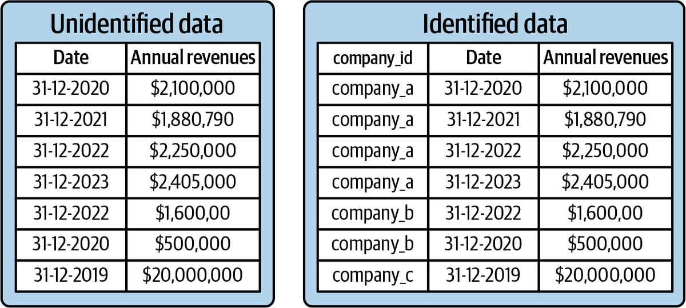
이 책에서는 금융 식별자와 금융 식별 시스템을 다음과 같이 정의합니다.
금융 식별자는 특정 금융 개체(예: 기업, 개인, 거래, 자산, 문서, 섹터 그룹, 이벤트 등)와 연계된 문자 시퀀스로, 하나 이상의 금융 데이터셋 또는 정보 시스템 전반에서 해당 개체를 정확하게 식별할 수 있도록 해준다. 금융 식별자는 숫자(0-9), 알파벳(a-z, A-Z), 기호의 모든 조합으로 구성될 수 있다. 금융 식별 시스템은 금융 식별자를 생성, 해석, 저장, 할당 및 유지 관리하기 위한 원칙과 절차를 수립한다.
명확히 짚고 넘어가야 할 몇 가지 핵심 용어가 있습니다. 첫째, 식별자를 코드, ID 또는 심볼(symbol)로 부르는 것이 일반적입니다. 둘째, 금융 식별 시스템은 인코딩(encoding) 시스템을 따르거나 임의의 ID(arbitrary ID) 형태로 식별자를 생성할 수 있습니다. 인코딩 시스템은 식별, 통신, 저장을 위해 단어, 문자, 숫자, 기호를 짧고 표준화된 형식으로 변환합니다. 그 반대 과정은 디코딩(decoding)으로, 코드 시퀀스를 원래 형태로 다시 변환하여 이해하기 쉽게 만듭니다. 인코딩 시스템을 따르지 않는 식별자는 종종 임의의 식별자로 설명됩니다. 이러한 식별자는 무작위로 생성되고 할당되며 특별한 의미를 갖지 않습니다. 셋째, 금융 식별 시스템 구축을 다루는 분야를 흔히 심볼로지(symbology)라고 부르며, 이는 금융 식별자를 배우고 다룰 때 자주 접하게 될 용어입니다.
금융 식별자의 필요성
금융 데이터 식별자는 다양한 목적을 수행하며, 가장 일반적인 목적 중 하나는 시장 거래에 참여하는 금융 상품과 개체를 식별하는 것입니다. 이러한 유형의 식별 데이터를 2장에서 논의한 기준 데이터라고 부릅니다.
모든 금융 거래에서 교환되는 상품과 계약에 참여하는 개체의 식별자를 포함하는 것은 필수적입니다. 또한 추적 목적을 위해 거래 자체에 식별자가 할당될 수도 있습니다. 결과적으로 식별자는 거래 전(pre-trade)부터 거래(trade), 거래 후 결제(post-trade settlement)에 이르기까지 금융 거래의 전체 수명주기 전반에 걸쳐 핵심적인 역할을 합니다. 식별자는 신속하고 효율적인 시장 거래를 촉진하고, 시장 참여자 간의 소통을 강화하며, 투명성을 높이고, 운영 비용과 오류를 줄여줍니다.1
금융 식별자의 또 다른 중요한 용도는 보고 목적입니다. 규제 당국은 금융 기관에 시장 익스포저, 자본, 위험 집중도, 유동성, 자산 및 부채, 거래 내역 등 다양한 정보를 요구할 수 있습니다. 금융 기관은 필요한 보고서를 작성하기 위해 여러 소스와 사업부로부터 데이터를 취합해야 합니다. 금융 식별자는 데이터 수집과 통합을 가능하게 하여 정확하고 시의적절한 보고를 보장하므로 이 상황에서 결정적인 역할을 합니다. 또한 보고 데이터에 식별자를 추가함으로써 규제 당국은 정보를 쉽게 검토하고 보고 기관의 규정 준수 여부를 판단할 수 있습니다. MiFID II와 같은 여러 규제 체계에서는 보고 기관이 데이터를 보고할 때 특정 금융 식별자를 사용하도록 의무화하고 있습니다. 이는 결과적으로 보고 기관이 신뢰할 수 있는 금융 식별 시스템을 구축해야 하는 추가적인 의무를 부과합니다.2
금융 식별자는 거래소 상장 및 매매 목적에도 필수적입니다. 거래소에서 금융 유가증권을 상장하고 거래하려면 식별자가 할당되어야 합니다. 이를 통해 투자자, 트레이더, 마켓 메이커는 금융 상품을 쉽게 찾고, 추적하고, 매수 및 매도하며, 분석할 수 있습니다.
마지막으로 금융 데이터 분석을 수행할 때 금융 식별자는 필수적인 데이터 필드로 요구됩니다. 금융 분석의 상당 부분은 서로 다른 금융 개체(예: 자산, 기업 등) 간의 행동과 차이를 연구하는 횡단면 분석입니다. 금융 식별자를 사용하면 분석가가 올바른 데이터 샘플을 선택하고, 품질 검사와 필터링을 실행하며, 중복을 제거하고, 수많은 데이터셋에 걸쳐 동일한 개체를 매칭할 수 있습니다.
금융 식별 시스템은 누가 만드는가?
공공 및 민간 부문 전반의 다양한 조직이 금융 식별자를 생성하고 할당할 수 있습니다. 어떤 조직은 금융 식별 시스템에 대한 권고안을 개발하지만 필요한 주체에게 식별자를 직접 발급하지는 않으며, 어떤 조직은 기존 표준이나 권고안을 기반으로 식별자를 발급하고, 또 다른 조직은 식별자를 직접 개발하고 발급하기도 합니다. 몇 가지 예를 통해 이러한 다양한 역할과 기능을 살펴보겠습니다.
국제표준화기구 (ISO)
국제표준화기구(ISO, International Organization for Standardization)는 다양한 기술 및 비기술 분야에 걸쳐 자발적이고 합의에 기반한 국제 표준을 개발하고 촉진하는 독립 기구입니다. 169개국의 국가 표준 기관 대표들로 구성되어 있습니다.
수년 동안 ISO는 국제 금융 식별자 개발에 상당한 관심과 참여를 보여왔습니다. 예를 들어 국제증권식별번호(ISIN)로 알려진 ISO 표준은 국제 유가증권 거래, 청산, 결제 분야에서 선도적인 식별자로 자리 잡았습니다. 이 장의 후반부에서 ISIN 식별자뿐만 아니라 기타 ISO 기반 식별자를 자세히 다룰 것입니다.
중요한 점은 ISO가 시장 참여자들에게 식별자를 직접 발급하고 할당하지 않는다는 것입니다. 대신 이 업무는 다음 절에서 살펴볼 국가별 번호부여기관(NNA)에 위임됩니다.
ISO는 표준을 어떻게 개발하는가?
금융 데이터 엔지니어가 탁월한 역량을 발휘하려면 업계 표준에 익숙해지는 것이 필수적입니다. 그렇다면 ISO와 같은 조직은 표준을 어떻게 만들까요? 공식 웹사이트에 따르면, ISO는 표준을 만들 시점을 일방적으로 결정하지 않습니다. 대신 기업, 소비자 단체, 학계, 비정부기구(NGO), 정부 및 소비자 그룹과 같은 이해관계자들이 제기한 시장 요구에 대응하여 표준을 제정합니다. 일반적인 시나리오는 특정 업계 그룹이 자국의 ISO 회원 기관에 표준 제정의 필요성을 보고하고, 해당 회원 기관이 ISO에 접근하여 논의를 시작하는 방식입니다.
표준에 대한 시장의 요구가 발생하면, ISO는 회원국들이 지명한 독립적인 기술 전문가들로 구성된 위원회를 임명합니다. 위원회에는 하위 분과위원회와 실무 작업반(워킹 그룹)이 포함될 수 있습니다. 예를 들어 ISO/TC 68은 전 세계 금융 서비스 표준을 감독하는 ISO 위원회이며, 다음과 같은 세 개의 주요 분과위원회를 두고 있습니다.
ISO/TC 68/SC 2: 금융 서비스의 정보 보안 분야 담당
ISO/TC 68/SC 8: 금융 서비스의 기준 데이터(Reference Data) 분야 담당
ISO/TC 68/SC 9: 금융 서비스의 정보 교환 분야 담당
지명된 위원회는 시장 요구를 충족하는 표준의 성격, 범위, 핵심 요소를 논의하고 초안 제안서를 제출함으로써 표준 개발 프로세스를 시작합니다. 초안은 추가 검토와 권고안 수렴을 위해 공유됩니다. 최종 합의는 합의제(Consensus-based)를 기반으로 하며 투표 메커니즘에 의존합니다. 합의에 도달하지 못하면 초안을 수정하여 다시 투표를 진행합니다. ISO 표준을 개발하는 데는 최초 제안부터 최종 발행까지 일반적으로 약 3년이 소요됩니다.
국가번호부여기관 (National Numbering Agencies)
국가번호부여기관(NNA, National Numbering Agency) 은 ISO 기반 금융 식별자를 발급하고 보급하는 국가 기관입니다. 각 국가는 증권거래소, 중앙은행, 규제 기관, 청산소, 금융 데이터 제공업체, 수탁기관 등 현지 시장 참여자에게 NNA의 역할을 자유롭게 부여할 수 있습니다. 예를 들어 영국의 NNA는 런던증권거래소이고, 룩셈부르크의 NNA는 클리어스트림 뱅킹(중앙예탁기관)입니다. NNA가 없는 국가도 있으며, 이러한 경우에는 대체번호부여기관(SNA, Substitute Numbering Agency)이 지정됩니다. 미국의 CUSIP 글로벌 서비스(CUSIP Global Services)와 독일의 WM 다텐서비스(WM Datenservice)가 대표적인 SNA의 예입니다.
국가번호부여기관협회(ANNA, Association of National Numbering Agencies)는 각국의 서로 다른 NNA 간의 조율을 위해 설립되었습니다. ANNA는 데이터 품질을 보장하고 글로벌 상호운용성을 확보하기 위해 모든 회원 기관으로부터 식별자 데이터를 수집하고 집계하여 ANNA 서비스 뷰로(ASB, ANNA Service Bureau)라는 전 세계 중앙 집중식 데이터셋으로 통합 관리합니다.
금융 데이터 벤더
대부분의 금융 데이터 벤더는 자사 제품과 서비스 개발을 지원하기 위해 자체적인 식별 체계를 만듭니다. 예를 들어 수많은 소스로부터 데이터를 수집할 때, 벤더는 해결하기 까다로운 식별자의 이종성(Heterogeneity) 문제에 직면할 수 있습니다. 또한 뉴스나 텍스트와 같은 비정형 데이터를 다룰 때처럼 데이터에 식별자가 아예 없는 경우도 있습니다. 아울러 외부 식별자에는 벤더가 필요로 하는 일부 속성(예: 고유성)이 결여되어 있을 수도 있습니다. 이러한 경우 벤더 기반의 새로운 식별 체계를 구축하는 것이 일반적인 관행입니다. S&P Global Market Intelligence, LSEG, Bloomberg, FactSet과 같은 벤더들은 모두 자체 개발한 사내 식별자를 보유하고 있습니다.
어떤 경우에는 금융 데이터 벤더가 콘텐츠를 단순히 수집(집계)하는 것이 아니라 직접 생성하기 때문에 자체 식별자를 개발하기도 합니다. 예를 들어 레이븐팩(RavenPack)과 같은 뉴스 분석 제공업체는 방대한 수의 엔티티에 대해 비정형 콘텐츠로부터 구조화된 뉴스 및 이벤트 데이터를 생성하여 제공합니다. 레이븐팩은 텍스트에서 엔티티를 독립적으로 추출하므로, 독점적인 고유 엔티티 식별자 시스템인 RavenPack Unique Entity Identifier를 개발했습니다.
마지막으로 금융 식별자 데이터의 가치가 점점 높아짐에 따라(예: 기준 데이터 관리 목적), 금융 데이터 벤더는 자체 금융 식별자를 생성하고 라이선스를 판매하는 것을 수익성 높은 사업 기회로 활용하기도 합니다.
금융기관
금융기관은 거래, 계좌 관리, 고객 식별, 결제 카드 번호 생성과 같은 내부 프로세스를 원활하게 처리하기 위해 자체 식별자를 생성합니다. 또한 내부 및 외부의 다양한 소스로부터 금융 데이터를 수집할 수 있는데, 이 데이터들은 서로 다른 식별자를 달고 유입될 수 있습니다. 이러한 경우 금융기관은 비즈니스 요구사항에 부합하고 손쉬운 데이터 검색과 집계를 가능하게 하는 유연한 설계를 위해 내부 식별 체계를 구축하는 방식을 선택할 수 있습니다.
결론적으로 금융 식별자는 금융 시장의 효율성, 상호운용성, 투명성에 있어 매우 중요합니다. 모든 시장 참여자는 사용자로서든 개발 참여자로서든 식별자를 다루게 됩니다. 이 시점에서 왜 모든 상황에서 완벽하게 작동하고 모든 시장 요구를 충족하는 금융 식별 체계를 설계하기가 그토록 어려운지 궁금할 수 있습니다. 이 질문에 답하려면 먼저 금융 식별 체계가 갖추어야 할 바람직한 속성들을 살펴보고, 그에 수반되는 다양한 제약 조건과 과제를 이해해야 합니다. 이것이 바로 다음에 다룰 내용입니다.
금융 식별자의 바람직한 속성
우수한 금융 식별 체계를 설계하고 유지보수하는 것은 금융 업계에서 가장 지속적인 난제 중 하나입니다. 이러한 어려움은 여러 바람직한 속성들 간의 균형을 맞추어야 하고, 각 속성이 서로 상충할 수 있다는 점에서 비롯됩니다. 이 절에서는 쥴스 버먼(Jules J. Berman)의 대표작인 Principles and Practice of Big Data (Academic Press)에서 제안된 프레임워크를 기반으로, 금융 식별 체계가 갖추어야 할 최소한의 바람직한 속성 집합을 도출합니다. 이러한 속성에는 고유성, 범용성(글로벌성), 확장성, 완전성, 접근성, 적시성, 진본성, 세분성(입도), 영속성, 불변성, 보안성이 포함됩니다. 각 속성을 자세히 살펴보겠습니다.
고유성 (Uniqueness)
고유성은 유일무이한 특성을 의미합니다. 예를 들어 지문은 모든 인간에게 고유하며, 지구상에서 동일한 지문을 가진 사람은 없습니다. 이와 마찬가지로 금융 식별 체계는 금융 엔티티를 고유하게 식별해야 하며, 서로 다른 엔티티에 동일한 식별자를 부여해서는 절대로 안 됩니다. 그림 3-2는 고유성의 개념을 설명합니다. 왼쪽의 식별 체계는 식별자 56H128을 WTK Inc.와 XYZ Inc.라는 두 개의 서로 다른 엔티티에 할당하므로 고유하지 않습니다. 반면 오른쪽의 시스템은 세 개의 금융 엔티티 모두에 고유한 식별자를 부여하므로 고유성을 만족합니다.
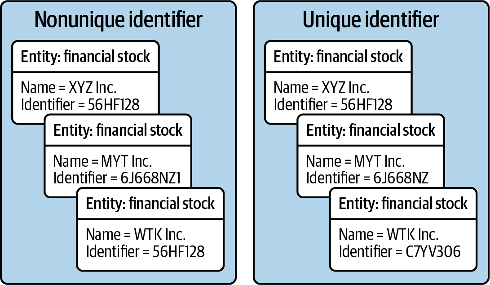
결정적으로 고유 식별자라는 개념은 금융 시장에 적용될 때 모호해질 수 있습니다. 그 이유를 이해하기 위해 다음 시나리오들을 살펴보겠습니다.
- 한 기업이 주식거래소 A와 B 두 곳에 상장되어 있습니다. 이 상장 주식은 각 시장별로 하나씩 두 개의 식별자를 가져야 할까요, 아니면 두 시장 모두에 대해 하나의 단일 식별자를 가져야 할까요?
- 특정 금융 상품이 두 국가에서 거래되고 있다면 국가별로 별도의 식별자가 필요할까요?
- 특정 금융 상품이 여러 차례에 걸쳐 발행될 수 있습니다. 각 발행분을 고유한 상품으로 취급해야 할까요, 아니면 모든 발행분에 단일 식별자를 사용해야 할까요?
- 기업 합병이나 인수가 이루어진 후, 결과로 탄생한 엔티티는 새로운 고유 기업으로 보아야 할까요, 아니면 원래 기업의 정체성을 유지해야 할까요?
- 하나의 금융 거래에 여러 상품과 관련된 다수의 지시사항(Instructions)이 포함되어 있습니다. 각 지시사항마다 자체 식별자를 부여해야 할까요, 아니면 상위 거래 식별자만 사용해야 할까요?
매우 까다롭지 않습니까? 독자 여러분도 위 시나리오에 대해 나름의 해법을 떠올릴 수 있을 것입니다. 그러나 바로 이 부분에 문제의 본질이 있습니다. 시장 참여자마다 고유한 금융 식별자가 무엇이어야 하는지에 대해 서로 다른 가정을 내리고 있으며, 이는 고유성을 정의하는 방식이 제각기 다른 수많은 식별자의 개발과 채택으로 이어졌습니다. 이는 데이터셋 내에서 복수의 식별자를 사용하는 일반적인 관행(예: 증권 자체를 식별하기 위한 식별자와 해당 증권이 거래되는 시장을 식별하기 위한 또 다른 식별자를 함께 사용하는 방식)을 설명해 줍니다. 금융 식별 체계를 설계하고 있다면 고유성의 개념을 신중하게 고민하고 비즈니스 팀과 논의하여 나중에 발생할 수 있는 심각한 결함을 방지할 것을 권장합니다.
범용성 / 글로벌성 (Globality)
금융 시장은 끊임없이 진화하고 확장하는 복잡하고 역동적인 시스템입니다. 이를 설명하기 위해 다음 사실들을 살펴보겠습니다.
- 새로운 기업들이 설립되고 시장에 상장됩니다.
- 새로운 금융 상품이 생성되고 여러 시장 및 관할 구역에서 상장되어 거래됩니다.
- 거래 활동은 중앙 집중식 거래소, 거래 플랫폼, 장외(OTC) 시장 등 다양한 장소에서 이루어집니다.
- 금융 상품과 서비스에 대한 소비자 수요와 선호도가 끊임없이 변화하여 새로운 상품 출시 기회를 창출합니다.
- 금융 거래는 여러 국가, 시장, 관할 구역에 걸쳐 실행됩니다.
- 새로운 금융 상품의 교환을 위해 새로운 시장이 설립됩니다.
- 금융 데이터로부터 새로운 금융 엔티티가 인식되고 추출됩니다.
- 새로운 거래 플랫폼과 메커니즘이 인기를 얻습니다(예: 암호화폐).
- 금융 활동에 대한 새로운 유형의 데이터가 기록되고 소비됩니다.
- 새로운 금융 규제 요건이 발표되고 시행됩니다.
- 새로운 시장 표준이 발표, 촉진, 채택됩니다.
- 새로운 금융 기술이 등장하여 시장 참여자들 사이에 확산됩니다.
이러한 여러 역동적 요인들은 식별이 필요한 금융 엔티티의 수와 다양성을 크게 증가시키는 데 기여했습니다. 이러한 수요를 충족하기 위해 금융 식별 체계는 확장되는 금융 활동과 엔티티 생태계를 수용할 수 있어야 합니다. 필자는 이러한 속성을 범용성(Globality, 글로벌성) 이라고 부릅니다. 예를 들어 범용성을 갖춘 식별 체계는 다음과 같은 확장을 수행할 수 있습니다.
- 국가 단위의 식별자 부여에서 국제적인 규모로 확장
- 중앙 집중식 시장에만 국한되었던 식별자 부여 범위를 OTC 및 기타 유형의 시장으로 확장
- 지수, 파생상품, 디지털 자산, 대출 등 다양한 금융 상품을 포함하도록 커버리지 확장
그림 3-3은 범용성의 개념을 보여주는 직관적인 예시입니다. 상단의 시스템은 시장 확장에 따라 등장하는 새로운 영역으로 커버리지를 확장할 수 있으므로 범용적입니다. 하단의 시스템은 세 개의 영역만 커버하고 더 이상 확장할 수 없으므로 비범용적입니다.
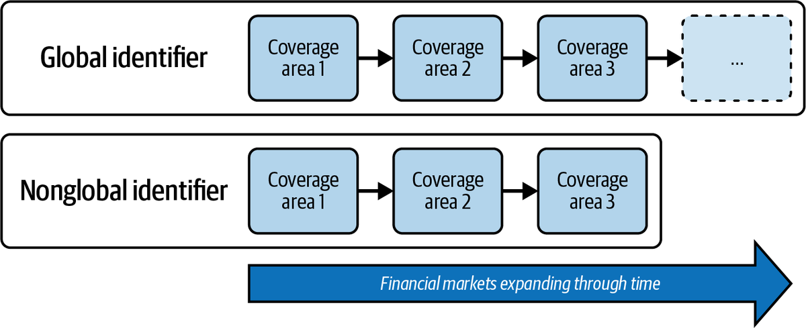
여러 식별자, 특히 벤더 특화 식별자는 특정 시장(예: 주식, 채권), 거래소(예: NYSE 체결 및 호가), 또는 관할 구역(예: 미국 주식, 영국 주식)에 국한되는 경우가 많습니다. 그러나 일부 식별자는 더 넓은 범위의 시장 엔티티를 포괄하도록 개발되었습니다. 가장 대표적인 예는 이 장의 뒤에서 자세히 살펴볼 블룸버그의 금융상품 글로벌 식별자(FIGI, Financial Instrument Global Identifier)입니다.
확장성 (Scalability)
확장성이 뛰어난 금융 식별 체계는 할당 가능한 식별자 풀을 고갈시키지 않습니다. 금융 식별 체계에서 식별자 공급 부족을 초래할 수 있는 원인에는 여러 가지가 있습니다.
급격한 시장 성장: 식별자가 필요한 금융 엔티티의 수가 급격히 증가하면 식별 체계가 수요를 따라가지 못할 수 있습니다. 대표적인 예로 기업어음(CP), 환매조건부채권(RP), 양도성예금증서(CD)와 같은 단기 금융 상품의 대규모 발행이 있습니다. 이러한 상품은 일반적으로 만기가 짧고 자주 롤오버되므로 새로운 식별자에 대한 지속적인 수요를 창출합니다. 각 상품마다 고유한 식별자가 필요하다면 사용 가능한 신규 식별자 풀이 빠르게 줄어들 수 있습니다.
제한된 문자 길이: 식별자 포맷의 문자 길이가 제한되어 있거나, 숫자만을 사용하거나, 엄격한 형식 제약이 있는 경우 가능한 조합의 수가 유한하여 식별 체계가 조기에 고갈될 수 있습니다. 예를 들어 이 장의 뒤에서 다룰 발급기관 식별번호(IIN, Issuer Identification Number)는 할당 가능한 식별자 공급 부족으로 인해 6자리에서 8자리 포맷으로 확장되었습니다. 또 다른 예로 이 장 후반부에 설명할 SEDOL 식별자는 시장 커버리지 확장 계획에 따라 숫자 포맷에서 영숫자(Alphanumeric) 포맷으로 변경되었습니다.
비효율적인 할당 전략: 식별 체계가 식별자를 최적의 방식으로 할당하지 않으면 조기 고갈로 이어질 수 있습니다. 비효율적인 할당 전략의 예는 다음과 같습니다.
카테고리 기반 할당: 특정 카테고리(예: 주식, 채권, 파생상품의 다양한 유형 또는 클래스)를 기준으로 식별자 범위를 할당하면 특정 카테고리가 다른 카테고리보다 빠르게 성장할 경우 해당 카테고리의 사용 가능한 식별자가 고갈될 수 있습니다. 예를 들어 채권 상품에 00000~29999, 주식 상품에 30000~49999 범위의 식별자를 할당한 상태에서 채권 발행이 급증하면 채권 카테고리의 식별자가 훨씬 일찍 소진될 수 있습니다.
예약 범위 설정: 특별한 시장 이벤트, 규제 보고, 신규 금융 상품 등 미래의 용도나 특정 목적을 위해 식별자의 대규모 범위를 예약해 두면 일반적인 용도로 사용할 수 있는 식별자 풀이 크게 줄어듭니다.
이러한 문제를 해결하기 위해서는 선제적인 계획 수립, 시장 성장 예측, 정기적인 평가, 끊임없이 변화하는 금융 시장 생태계에 대한 식별 체계의 적응성이 필수적입니다.
완전성 (Completeness)
완전성은 식별 체계가 포괄하는 고유하게 식별 가능한 모든 엔티티에 식별자가 빠짐없이 부여되어야 함을 요구합니다. 즉, 특정 금융 엔티티 집합을 식별하기 위해 식별 체계가 만들어졌다면, 해당 집합의 모든 엔티티는 반드시 식별자를 가져야 합니다. 표 3-1은 완전한 식별자와 불완전한 식별자를 비교하여 이 개념을 보여줍니다. 식별 체계 A는 엔티티 3, 4, 6에 대한 식별자가 없으므로 불완전합니다. 반면 식별 체계 B는 6개의 모든 엔티티에 식별자를 부여하므로 완전합니다.
표 3-1. 완전한 식별자와 불완전한 식별자의 비교
| 엔티티 | 식별자 A (불완전) | 식별자 B (완전) |
|---|---|---|
| 엔티티 1 | 19982243 | A5J234HS |
| 엔티티 2 | 87987924 | B5J874GS |
| 엔티티 3 | NULL | T3H7Z589 |
| 엔티티 4 | NULL | GQ16B437 |
| 엔티티 5 | 23987912 | N9M3F16S |
| 엔티티 6 | NULL | K485GV1Z |
금융 식별 체계는 다양한 이유로 불완전성 문제를 겪을 수 있습니다. 예를 들어 신설된 기업 식별 체계는 일부 기업이 이미 도산, 파산, 상장폐지, 합병되었거나 사명을 변경했기 때문에 해당 유니버스의 과거 데이터를 백필(소급 입력)하지 못할 수 있습니다. 또 다른 흔한 시나리오는 서로 다른 식별자를 사용하는 서로 다른 데이터셋을 병합할 때 발생합니다. 예를 들어 미국 기반 식별자를 사용하는 데이터와 글로벌 식별자를 사용하는 데이터를 조인하면 수많은 엔티티에서 미국 식별자가 누락될 수 있습니다.
접근성 (Accessibility)
금융 식별자 데이터는 접근 가능해야 합니다. 즉, 라이선스 비용이나 사용 제한에 의해 제한되거나 특정 시장 참여자에 의해 독점되어서는 안 됩니다. 금융 식별자에 대한 제한된 접근은 거래 수행 및 보고 시 시장 비효율성과 투명성 결여를 초래할 수 있습니다.3 물론 신용카드 번호나 은행 계좌 ID와 같은 금융 식별자는 보안을 유지해야 하는 상황이 존재하는 것이 당연합니다.
어떤 경우에는 금융 식별자가 무료로 제공되기도 합니다(예: 온라인 트레이딩 플랫폼이나 증권거래소 웹사이트). 그러나 방대한 수의 엔티티에 대해 이 데이터를 구조화된 형태로 수집하고 집계하는 것은 매우 버거운 작업일 수 있습니다. 금융 데이터 벤더들이 흔히 기준 데이터(Reference Data)로 판매하는 상품을 통해 이러한 데이터를 제공하지만, 대개 유료 구독 기반입니다.
일부 시장 참여자들은 오픈 액세스 금융 식별자를 촉진하기 위한 이니셔티브를 시작했습니다. 예를 들어 LSEG는 기업, 금융 상품, 발행기관, 펀드, 개인 등 다양한 엔티티 유형에 걸쳐 포괄적인 커버리지를 제공하는 Permanent Identifier (PermID) 시스템을 공개적으로 출시했습니다. 또 다른 예로 누구나 블룸버그의 금융상품 글로벌 식별자(FIGI)를 요청할 수 있는 오픈 액세스 시스템인 OpenFIGI가 있으며, 이에 대해서는 이 장 후반부에서 자세히 설명합니다.
적시성 (Timeliness)
금융 식별 체계의 적시성은 식별자를 신속하고 효율적으로 처리하고 생성할 수 있는 능력을 의미합니다. 새로운 금융 엔티티가 시장에 진입하거나 시스템 내에서 생성될 때(예: 금융 상품의 신규 발행), 적시성을 갖춘 금융 식별 체계는 다음을 수행할 수 있어야 합니다.
- 시장 참여자가 이상적으로 실시간 또는 준실시간에 식별자를 신속하게 요청할 수 있도록 지원
- 요청을 빠르게 처리하여 발급 기관이 식별자를 지체 없이 할당하도록 지원
- 새로 할당된 식별자를 다른 시장 참여자에게 지연 없이 공개 및 접근 가능하도록 제공
금융 식별자의 효율적이고 적시성 있는 생성 및 배포는 금융 시장 운영과 거래의 효율성을 높이는 데 필수적입니다.
진본성 (Authenticity)
진본성을 갖춘 금융 식별 체계는 특정 식별자가 실제로 해당 시스템에 의해 생성되었는지 여부를 검증할 수 있습니다. 비유하자면, Rolex 상표가 붙은 시계가 실제로 진품 롤렉스인지 구별하는 것과 같습니다.
금융 식별자는 공식이나 표준화된 형식과 같은 특정 심볼로지(Symbology) 사양에 따라 설계되는 경우가 많습니다. 이는 식별자가 해당 사양을 준수하는지 여부를 검증하는 프로그램을 개발할 수 있게 해줍니다. 일반적인 관행 중 하나는 식별자 문자열에 체크 디지트(Check digit, 검증 번호) 를 추가하는 것입니다. 식별자의 끝부분에 체크 디지트가 포함되어 있으면 알고리즘을 사용하여 이 숫자를 기반으로 식별자의 진본성을 인증할 수 있습니다. 이 장 후반부에서 식별자 체크 디지트와 그 계산 로직의 다양한 예시를 살펴보겠습니다.
세분성 / 입도 (Granularity)
금융 시장에서는 엔티티 내부 및 엔티티 간에 계층적 배열과 구조를 관찰하는 것이 매우 일반적입니다.
- 자산 생성 체인 (예: 발행 기업 → 증권 → 주식 → 보통주 → 발행분)
- 거래 맥락 (예: 글로벌 → 대륙 → 국가 → 시장)
- 피라미드형 조직 구조 (예: CEO → 사장 → 부사장 → 중간 관리자 → 팀장 → 직원)
- 기업 소유 구조 (예: 모기업 A가 자회사 B를 소유하고, B가 D를 소유하며, D가 F, G, K를 소유함)
- 자산 분류 (자산이 그룹, 카테고리, 하위 카테고리로 구성됨, 예: 파생상품 → 옵션 → 주식 옵션 → 콜 주식 옵션)
- 업종 분류 (산업 분류 체계를 사용하여 경제 부문을 구조화함, 예: 섹터 → 산업군 → 산업 → 하위 산업)
- 신디케이트론과 같은 패키지 거래 (패키지 → 시설/트랜치)
- 다중 레그(Multi-leg) 옵션이나 이자율 스왑과 같은 복합 금융 상품 (동일한 상품이 여러 하위 상품을 포함함)
- 펀드 산업에서 서로 다른 투자 전략을 가진 다수의 하위 펀드(Sub-fund)를 생성하고, 이를 다양한 투자자 요구에 맞춘 여러 주식 클래스(Share class)로 세분화할 수 있도록 지원하는 엄브렐러 펀드(Umbrella fund) 구조4
금융 식별 체계가 시장의 계층 구조를 반영하는 다양한 수준의 상세 정보를 유연하게 제공할 수 있을 때 세분성(Granularity, 입도) 을 갖추었다고 말합니다. 그림 3-4는 이 개념을 보여줍니다. 이 예시에서 식별이 필요한 엔티티는 국제, 국가, 개별 시장 수준에서 식별 가능해야 합니다. 왼쪽의 식별 체계는 모든 수준에서 엔티티에 동일한 식별자를 사용하므로 세분성이 없습니다. 반면 오른쪽 시스템은 각 수준마다 엔티티에 고유한 식별자를 부여하므로 세분성을 갖추고 있습니다.
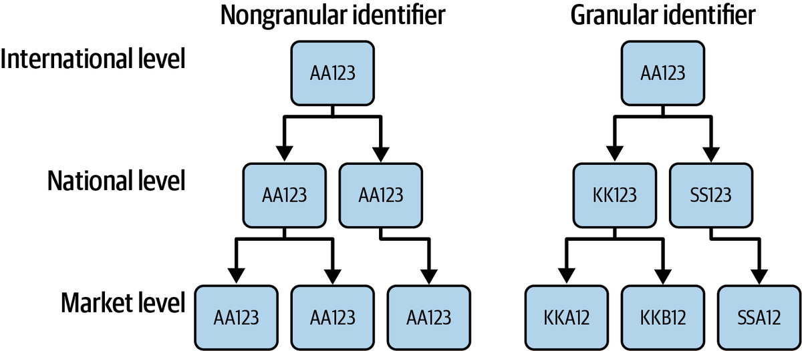
영속성 (Permanence)
신뢰할 수 있는 금융 식별 체계는 식별자와 관련 데이터가 영구적이고 지속되도록 보장해야 합니다. 이는 시장의 신뢰를 확보하고 시간에 따라 금융 상품과 거래를 지속적으로 추적하고 참조할 수 있도록 하는 데 필수적입니다. 예를 들어 은행 고객은 언제든지 은행을 방문하여 과거 거래 내역서를 요청할 수 있어야 합니다. 고객이 은행 계좌를 해지하더라도 해당 고객의 식별 데이터가 시스템에서 사라져서는 안 됩니다.
경우에 따라 금융 식별자의 관리가 중단될 수도 있습니다. 예를 들어 상업 데이터 벤더가 새로운 식별 체계를 개발하거나 업계 전반의 표준 시스템으로 전환하면서 기존 식별자의 유지보수를 중단할 수 있습니다. 또한 식별 체계가 고유성, 범용성, 세분성과 같은 특정 바람직한 속성을 충족하지 못하면 새로운 시스템으로 대체될 수도 있습니다. 영속적 식별자와 비영속적 식별자의 개념이 그림 3-5에 나와 있습니다. 왼쪽의 식별 체계는 시점 t와 시점 t+n 모두에서 관련 데이터를 반환할 수 있으므로 영속적입니다. 반면 오른쪽 시스템은 시점 t에서는 데이터를 반환하지만 시점 t+n에서는 아무것도 반환하지 못하므로 비영속적입니다.
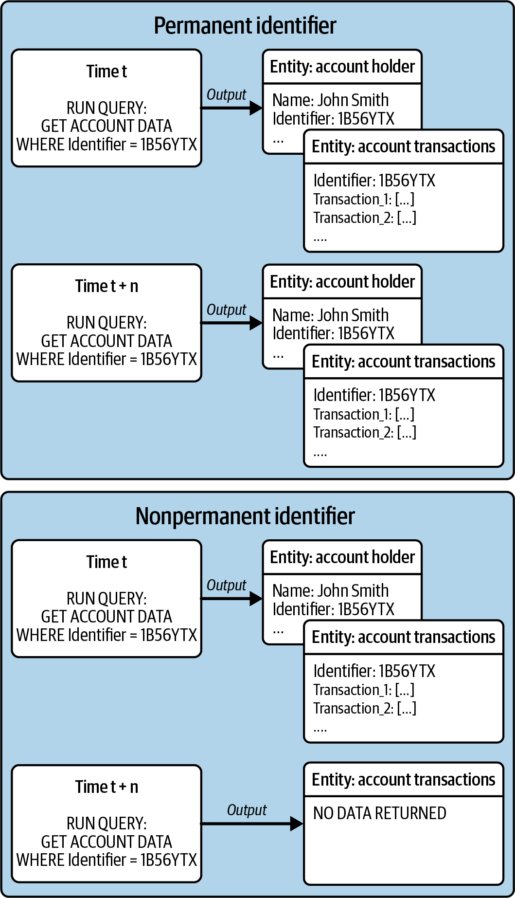
불변성 (Immutability)
견고한 금융 식별 체계는 시간이 지나도 식별자의 불변성을 보장해야 합니다. 이는 특정 엔티티와 연결된 식별자가 변경되어서도 안 되며 다른 엔티티에 재할당되어서도 안 됨을 의미합니다. 식별된 엔티티가 소멸하더라도 해당 식별자는 절대 재사용되어서는 안 됩니다. 이러한 속성은 투명성, 추적 가능성, 효과적인 감독을 유지하는 데 필수적입니다.
시간적 불변성 외에도 식별자는 금융 활동의 모든 단계에 걸쳐 일관되게 유지되어야 합니다. 예를 들어 개시, 체결, 결제에 이르는 여러 단계로 구성된 거래 수명주기 전반에 걸쳐 항상 동일한 식별자가 일관되게 사용되어야 합니다. 표 3-2는 가변 식별자와 불변 식별자의 개념을 보여줍니다. 식별자 A는 세 엔티티 모두 2005년과 2022년에 동일한 식별자를 유지하므로 불변성을 만족합니다. 식별자 B는 가변적입니다. 엔티티 1과 3의 식별자가 2022년에 변경되었으며, 2005년에 엔티티 1이 사용하던 식별자가 2022년에는 엔티티 3에 재할당되었습니다.
표 3-2. 가변 식별자와 불변 식별자의 비교
| 엔티티 | 연도 | 식별자 A (불변) | 식별자 B (가변) |
|---|---|---|---|
| 엔티티 1 | 2005 | XZY743 | XZY743 |
| 엔티티 2 | 2005 | ABC376 | ABC376 |
| 엔티티 3 | 2005 | MNT098 | MNT098 |
| 엔티티 1 | 2022 | XZY743 | KKH654 |
| 엔티티 2 | 2022 | ABC376 | ABC376 |
| 엔티티 3 | 2022 | MNT098 | XZY743 |
참고
인수합병, 분할, 기업 구조조정, 사명 변경과 같은 기업 이벤트는 기업의 구조를 변화시켜 잠재적으로 새로운 엔티티의 탄생으로 이어질 수 있습니다. 이러한 경우에는 새로운 식별자가 할당될 수 있습니다.
보안성 (Security)
금융 식별 체계는 악의적인 공격에 취약할 수 있으므로 설계 시 보안성을 최우선으로 고려해야 합니다. 공격자가 식별 체계를 해킹하여 식별자를 되돌릴 수 없도록 변경하는 데 성공했을 때 발생할 수 있는 피해를 상상해 보십시오. 더욱 심각한 시나리오는 민감한 식별 데이터가 유출되어 데이터에 명시된 엔티티를 대상으로 금융 범죄를 저지르는 데 악용되는 경우입니다.
요약하자면, 최적의 금융 식별 체계를 개발하는 것은 단일 시스템에서 달성하기 어려운 여러 복잡한 속성들을 조율해야 하므로 대단히 까다로운 과제입니다. 이러한 이유로 금융 시장에는 각기 특정한 목적을 수행하고 고유한 특성을 제공하는 수많은 금융 식별 체계가 개발되어 왔습니다. 이들 중 일부는 널리 채택되었으며, 다른 일부는 진화하는 시장의 요구에 발맞추어 주목을 받고 있습니다. 다음 절에서는 현재의 금융 식별 체계 환경에 대한 개요를 살펴보겠습니다.
금융 식별 체계의 지형도
금융 식별 체계의 현재 지형도는 매우 광범위하며, 다양한 목적과 서로 다른 속성을 갖도록 설계된 오픈소스 및 독점 시스템들로 구성되어 있습니다. 수많은 표준화 노력이 시작되었으나, 아직 보편적으로 통용되는 단일 표준은 확립되지 않았습니다. 현재의 규모를 가늠해 볼 수 있는 예로, 위키피디아에서 “security identifier”를 검색하면 16개의 서로 다른 식별자 결과가 나옵니다. ISO가 현재의 국내외 금융 식별 표준 목록을 조사한 결과 총 19개의 서로 다른 시스템이 파악되었습니다. 이러한 식별자들과 기타 주요 식별자들이 그림 3-6에 나와 있습니다.
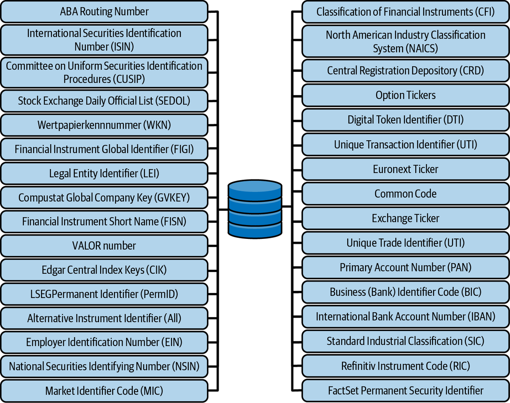
다음 절들에서는 시장에서 널리 사용되는 가장 중요한 금융 식별 체계들과 이들의 핵심 특징 및 과제에 대해 논의하겠습니다.
국제증권식별번호 (ISIN)
국제증권식별번호(ISIN, International Securities Identification Number) 는 ISO 6166에 정의된 12자리의 영숫자 코드로, 주식, 채권, 파생상품, 펀드 주식 클래스, 지수 등 광범위한 금융 증권을 고유하게 식별합니다.
원칙적으로 ISIN은 대체 가능한(Fungible) 일련의 금융 상품 집합을 대표해야 합니다. 예를 들어 특정 기업의 보통주는 발행일과 무관하게 모두 동일한 명세를 공유하므로 상호 대체가 가능합니다. 이 시나리오에서는 일반적으로 해당 기업의 보통주를 나타내는 데 동일한 ISIN이 사용됩니다. 그러나 기업이 우선주와 같이 서로 다른 종류의 주식을 발행하는 경우 각 클래스는 서로 다른 ISIN을 부여받습니다. 마찬가지로 동일한 기업이 발행한 여러 채권은 시작일, 만기일, 이자율 등 고유한 명세를 지니므로 서로 다른 ISIN을 갖습니다. 동일한 원칙이 파생상품과 같은 더 복잡한 금융 상품에도 적용됩니다.
ISIN 코드는 각국의 국가번호부여기관(NNA) 또는 대체번호부여기관(SNA)에 의해 발급되고 관리됩니다. ISIN 시스템은 시장에서 널리 채택되었으며 금융 상품 식별을 위한 글로벌 표준으로 점차 확고히 자리 잡았습니다. 신뢰성 덕분에 ISIN 식별자는 트레이딩, 결제, 청산, 규제 보고에 주로 사용됩니다.
ISIN의 12자리 문자는 세 부분으로 나눌 수 있습니다. 처음 두 문자는 발행 국가의 ISO 3166-1 alpha-2 코드입니다. 가운데 9자리 영숫자는 증권 식별자를 나타냅니다. 이 9자리 영숫자 코드를 흔히 국가증권식별번호(NSIN, National Securities Identifying Number)라고 부릅니다. NSIN의 예로는 미국의 CUSIP, 영국의 SEDOL, 독일의 WKN(“Wertpapierkennnummer”) 등이 있습니다.5 마지막 문자는 모듈러스 10 더블-애드-더블(Double-Add-Double) 또는 룬(Luhn) 알고리즘을 사용하여 계산된 체크 디지트입니다. 그림 3-7은 ISIN의 구조적 세부 구성을 보여줍니다.
ISIN의 잠재적인 단점 중 하나는 국제적인 범위로 정의되어 거래 장소나 거래 통화를 지정하지 않는다는 점입니다. 특정 주식이 여러 다른 거래소에서 거래되더라도 연결된 ISIN은 동일합니다. 예를 들어 IBM의 보통주는 전 세계 약 25개 거래 플랫폼 및 거래소에 상장되어 있습니다. 이 경우 IBM 주식에 대한 일부 식별자(예: 티커)는 거래되는 장소에 따라 달라집니다. 그러나 IBM 주식은 각 증권마다 단 하나의 ISIN만을 갖습니다.6 이러한 한계를 극복하기 위해 거래소, 거래 장소, 규제 및 비규제 시장을 명시하는 ISO 10383 정의 시장식별코드(MIC, Market Identifier Code) 가 ISIN과 함께 널리 사용됩니다.
또 다른 한계는 ISIN이 특정 유형 증권 내의 계약 조건이나 세부 변형에 대한 상세한 정보를 제공하지 않는다는 점입니다. 즉, ISIN 단독으로는 계약을 고유하게 묘사할 수 없습니다.
인수합병, 사명 변경, 주식 분할, 채무 증권의 상환/전환과 같은 기업 활동이 발생하면 기존 ISIN이 비활성화되거나 새로운 ISIN으로 대체될 수 있습니다.
ISIN의 또 다른 한계는 모든 금융 상품, 특히 장외(OTC) 파생상품을 포괄하지 못한다는 점입니다. 이 경우에는 대체 금융 상품 식별자가 자주 사용됩니다.7
룬 알고리즘: 금융 식별자 검증을 위한 업계 표준
창시자인 IBM 과학자 한스 페터 룬(Hans Peter Luhn)의 이름을 따서 명명되고 ISO/IEC 7812-1에 명시된 룬 알고리즘(Luhn algorithm) 또는 룬 공식(모듈러스 10 또는 mod 10 알고리즘으로도 알려짐)은 금융 식별자 유효성 검증을 위해 널리 사용되는 체크섬 공식입니다. 이 알고리즘은 악의적인 공격을 막기 위한 보안 조치가 아니라, 입력 오류를 방지하고 올바른 식별자와 잘못된 식별자를 구별하기 위한 메커니즘입니다.
룬 공식을 사용하여 ISIN과 같은 식별자를 검증하려면 다음 6단계를 거칩니다.
- 식별자에 이미 체크 디지트가 포함되어 있다면 이를 제거합니다. 대부분의 경우 체크 디지트는 문자열의 맨 끝에 위치합니다. 남은 문자열이 페이로드(Payload) 가 됩니다.
- 페이로드의 가장 오른쪽 자릿수부터 시작하여, 하나 건너 하나씩(매 두 번째) 숫자의 값을 2배로 만듭니다.
- 2배로 만든 숫자가 9보다 큰 경우(예: 18), 해당 숫자의 각 자릿수를 더하여 한 자리 숫자로 만듭니다(예: 12는 1 + 2 = 3이 됨).
- 모든 자릿수의 숫자를 합산합니다.
- 합산 값의 모듈러스 10을 (10 − ( sum mod 10 )) mod 10 공식으로 계산합니다. 이 연산의 결과는 합산 값에 더해 10의 배수로 만들기 위해 필요한 가장 작은 수(0일 수도 있음)로 해석할 수 있습니다.
- 5단계에서 구한 모듈러스 10 결과가 체크 디지트와 같으면 유효한 번호입니다. 그렇지 않으면 유효하지 않습니다.
예를 들어 마이크로소프트의 ISIN인 US5949181045를 검증해 보겠습니다.
- 숫자 문자열을 얻기 위해 알파벳 대문자의 ASCII 코드(미국 정보 교환 표준 부호) 값에서 55를 빼서 국가 코드를 숫자로 변환합니다. U의 ASCII 코드는 85이고 S는 83이므로, 새로운 숫자는 [85-55][83-55]5949181045 = 30285949181045가 됩니다.
- 체크 디지트(=5)를 제거하여 페이로드(3028594918104)를 얻습니다.
- 오른쪽부터 시작하여 매 두 번째 숫자의 값을 2배로 만듭니다: [6] 0 [4] 8 [10] 9 [8] 9 [2] 8 [2] 0 [8].
- 9보다 큰 숫자의 각 자릿수를 합산합니다. [10]이 하나 있으므로 1 + 0을 더해 1이 됩니다. 따라서 새로운 수열은 [6] 0 [4] 8 [1] 9 [8] 9 [2] 8 [2] 0 [8]이 됩니다.
- 모든 자릿수를 더합니다: 6 + 0 + 4 + 8 + 1 + 9 + 8 + 9 + 2 + 8 + 2 + 0 + 8 = 65.
- 공식을 사용하여 체크 디지트를 계산합니다: 10 – (65 mod 10) mod 10 = 5.
- 최종 결과(5)가 실제 체크 디지트와 일치하므로 이 식별자가 유효한 ISIN임을 확인할 수 있습니다.
이 ISIN 체크 디지트 검증을 위한 파이썬 구현체는 이 책의 GitHub 저장소에서 확인할 수 있습니다.
금융상품분류코드 (CFI)
금융상품분류코드(CFI, Classification of Financial Instruments) 는 ISO 10962에 정의된 6자리 문자 코드로, 금융 상품을 설명하고 분류합니다. 이는 금융 상품을 범주화하고 그룹화하기 위한 통일되고 일관된 접근법의 필요성이라는 금융 시장의 주요 과제를 해결하기 위해 개발되었습니다. ISO는 스위스 국가번호부여기관인 SIX Group을 CFI 코드의 유지 관리 대행기관으로 지정했습니다. SIX는 자사 웹사이트에 모든 CFI 코드 및 변경 사항 목록을 게시합니다.
2017년 7월 1일부터 새로운 금융 상품이 발행될 때 ISIN과 함께 CFI 코드가 전 세계적으로 부여됩니다. 대부분의 경우 금융 상품의 CFI는 수명주기 동안 변경되지 않고 유지됩니다. 그러나 의결권 변경이나 소유권 제한과 같은 기업 관련 이벤트로 인해 CFI가 변경될 수 있습니다.
CFI 코드에서 첫 번째 문자는 금융 상품 카테고리를 나타내고, 두 번째 문자는 하위 카테고리를 나타내며, 나머지 문자들은 해당 상품의 다양한 속성을 나타냅니다. 두 번째 문자와 나머지 문자들은 선택 사항(옵션)입니다. 예를 들어 CFI 코드 ESVXXX는 주식(E), 보통주(S), 의결권 있음(V)을 나타내며, 코드 FXXXXX는 선물(F), OCXXXX는 콜(C) 유형의 옵션(O)을 나타냅니다. 그림 3-8은 CFI 코드에 대한 시각적 설명을 제공합니다.
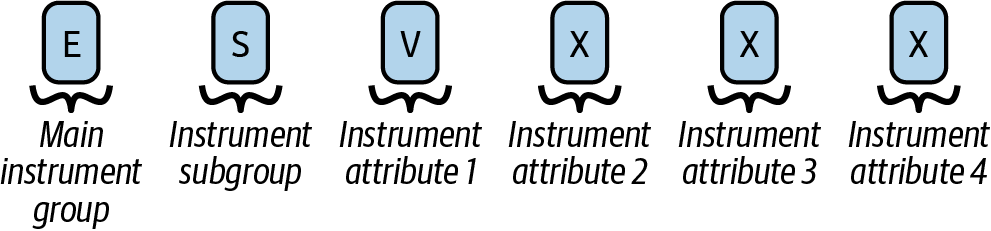
금융상품단축명칭 (FISN)
ISO 18774에 정의된 금융상품단축명칭(FISN, Financial Instrument Short Name)은 금융 상품에 대한 일관되고 통일된 글로벌 설명을 사람이 읽을 수 있는(human-readable) 형태로 제공하는 코드입니다. 2017년 7월 1일부터 새로운 금융 상품이 발행될 때 ISIN 및 CFI와 함께 전 세계적으로 FISN이 부여되고 있습니다.
주로 청산 및 결제에 사용되는 ISIN과 달리, FISN은 시장 참여자들이 금융 서비스 거래 및 기준 데이터의 가독성, 효율성, 신뢰성, 데이터 일관성, 투명성을 향상시키기 위해 활용합니다.
FISN 코드는 최대 35자의 영숫자(alphanumeric)로 구성됩니다. 이 중 15자는 발행기관명에 할당되고, 19자는 상품 설명에 할당되며, 문자 “/”가 발행기관명과 상품 설명을 구분하는 구분자로 사용됩니다. 그림 3-9는 FISN 코드의 구조를 보여줍니다.
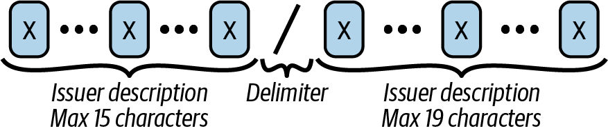
통일증권식별절차위원회 (CUSIP)
통일증권식별절차위원회(CUSIP, Committee on Uniform Security Identification Procedures) 코드는 미국과 캐나다에서 유가증권을 식별하는 데 사용되는 9자리의 영숫자 코드입니다. CUSIP 코드는 주로 매매, 결제 및 청산에 사용됩니다. 이 책이 집필될 당시 팩트셋(FactSet Research Systems, Inc.)이 운영하는 미국 국가별 번호부여기관인 CUSIP 글로벌 서비스(CGS)에서 발급 및 관리하고 있습니다.
CUSIP의 처음 6자리는 발행기관(기업, 지자체, 정부기관)을 고유하게 식별합니다. 7번째와 8번째 자리는 계층적 영숫자 규칙을 사용하여 상품 유형과 발행 회차를 식별합니다. 마지막 문자는 체크 디지트(검증 번호)입니다.
미국 유가증권의 경우 CUSIP 번호는 미국 ISIN의 가운데 9자리를 구성합니다. 예를 들어 아마존의 ISIN은 US0231351067이고, 아마존의 CUSIP은 023135106입니다. 그림 3-10은 CUSIP 코드를 시각적으로 보여줍니다.
그림 3-10. CUSIP 코드의 구조적 분석
CUSIP 코드의 유효성을 검증하려면 다음 단계가 필요합니다.
- 알파벳 문자를 알파벳 순서 위치에 9를 더한 숫자로 변환합니다(예: A = (1 + 9) = 10).
- 문자 *는 36으로, @는 37로, #은 38로 변환합니다.
- 짝수 번째 자리의 숫자에 2를 곱합니다. 결과가 두 자리 수이면 각 자릿수를 더합니다(예: 13 → 1 + 3 = 4).
- 모든 값의 합을 구합니다.
- 합계의 내림값을 계산합니다: (10 – (합계 modulo 10)) modulo 10.
CUSIP 체크 디지트 검증을 위한 파이썬 구현체는 이 책의 깃허브 저장소에서 확인할 수 있습니다.
최근 CGS는 신디케이트 론(협조 융자) 시장에 참여하는 법적 당사자를 식별하기 위해 CUSIP 개체 식별자(CEI, CUSIP Entity Identifier)라는 새로운 식별자를 도입했습니다.8 CEI는 미국 론신디케이션·트레이딩협회(LSTA) 및 신디케이트 론 솔루션 제공업체들과 협력하여 개발되었습니다.
법인식별기호 (LEI)
ISO 17442에 정의된 법인식별기호(LEI, Legal Entity Identifier)는 금융 거래에 참여하는 법인(legal entities)을 식별하는 데 사용되는 20자리의 영숫자 코드입니다. 각 LEI는 개체의 소유 구조에 대한 정보를 포함하고 있어 “누가 누구인가(who is who)”와 “누가 누구를 소유하는가(who owns whom)”라는 질문에 답을 제공합니다. 이 개념은 금융 기관 내 고객의 신원을 확인하는 것을 목표로 하는 금융 시장의 고객알기제도(KYC) 실무와 밀접하게 일치합니다. LEI 식별자는 전 세계적으로 고유하며 무료로 접근할 수 있는 식별자입니다. 공식 관리 기관은 글로벌 법인식별기호 재단(GLEIF)입니다.
그림 3-11에 나와 있듯이, LEI의 처음 4자리는 LEI를 발급한 지역운영단위(LOU, Local Operating Unit)를 식별하는 접두사를 형성합니다. 5번째부터 18번째 문자는 LOU가 할당한 개체 식별자로 구성됩니다. 마지막으로 19번째와 20번째 문자는 두 자리 체크 디지트입니다.
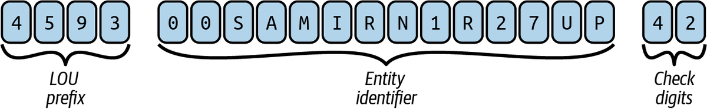
ISO 17442에서는 다음을 법인으로 분류합니다.
- 모든 금융 중개기관
- 은행 및 금융 회사
- 해외 지사
- 기타 자본 구조를 위해 주식, 채권 또는 기타 증권을 발행하는 모든 개체
- 거래소에 상장된 모든 개체
- 금융 상품을 거래하거나 금융 거래의 당사자가 되는 모든 개체(사업체, 연기금, 엄브렐러 및 하위 펀드 수준의 집합투자기구와 같은 투자 수단, 법적 형태를 갖춘 기타 특수목적기구[SPV] 포함)
- 금융 규제 기관의 감독을 받는 모든 개체 및 그 계열사, 자회사, 지주회사
- 개인사업자 (비즈니스 자격으로 활동하는 개인의 예)
2019년 4월 4일, ANNA와 GLEIF는 ISIN 식별자와 발행사의 LEI 식별자를 연계하는 협력 이니셔티브를 출범했습니다. 이 이니셔티브는 발행사와 유가증권 발행 간의 직접적인 연결고리를 확립하여 시장 투명성을 높이는 것을 목표로 합니다.
리먼 브라더스 사태와 법인식별기호(LEI)의 탄생
LEI의 도입은 금융 시장의 중대한 이정표로 환영받았으며, 시장 효율성과 안정성 향상에 미치는 긍정적인 영향에 대해 수많은 논의와 출판물이 쏟아져 나왔습니다. 질문은 이겁니다. 왜 이렇게 많은 관심을 받을까요?
이 문제는 2008년 리먼 브라더스(Lehman Brothers) 파산 직후 시작되었습니다. 매킨지 보고서에서 설명하듯, “리먼 파산 이후 전 세계 금융 시스템 참여자들은 은행, 보험사, 자산운용사 및 기타 시장 참여자들이 거래하는 수많은 자회사와 계열사의 미로 속에서 거래상대방을 식별할 표준화된 시스템이 없었기 때문에 리먼, 그 자회사, 그리고 상호 간의 익스포저를 평가할 수 없었습니다.”
구체적인 예를 들자면, 2008년 리먼 브라더스가 파산했을 당시 다양한 관할권에서 약 8,000개의 자회사를 운영하고 있었던 반면, 모건스탠리는 대략 3,500개의 자회사를 보유하고 있었습니다. 리먼의 8,000개 자회사와 모건스탠리의 3,500개 자회사 간에 체결될 수 있는 수많은 양자 간 계약과 거래를 상상해 보십시오. 그리고 그러한 계약들이 서로 다른 식별 시스템을 사용하여 명시되어 있다고 가정해 봅시다. 이제 모건스탠리의 리먼 브라더스에 대한 총 익스포저를 계산하고자 한다면, 각 자회사의 규칙에 따라 식별된 수백만 개의 포지션을 하나하나 집계해야 합니다.
당연하게도 리먼 브라더스의 거래상대방들이 통합 개체에 대한 총 익스포저를 계산하는 데는 상당한 시간이 걸렸습니다. 이러한 문제를 완화하고 금융 기관이 익스포저와 리스크 정보를 신속하게 집계할 수 있도록 ISO는 국제 법인 식별 표준 개발을 주도했고, 그 결과 LEI가 탄생했습니다.
LEI 외에도 ISO는 표준화된 4자리 코드를 사용하여 전 세계적으로 개체의 법적 형태/유형을 고유하게 식별하는 ISO 20275에 명시된 법적 형태 분류(ELF, Entity Legal Forms)를 만들었습니다. GLEIF는 자사 웹페이지에서 다운로드하고 조회할 수 있는 ELF 코드를 관리합니다.
거래 식별자 (Transaction Identifiers)
식별자는 금융 거래 수명주기의 핵심 근간입니다. 처리 과정에서 단일 거래는 종종 다양한 시스템과 당사자를 거치게 됩니다. 그 결과 동일한 거래가 하나의 시스템에서 다음 시스템으로 이동할 때 서로 다른 ID로 기록될 수 있습니다. 이로 인해 서로 다른 시스템과 데이터베이스 전반에 걸쳐 거래 및 모든 관련 메시지를 명확하게 식별하기가 어렵습니다. 이 문제를 해결하기 위해 고유 거래 식별자가 개발되었습니다.
한 가지 예로 미국에 특화되어 있으며 도드-프랭크 법의 일환으로 미국 상품선물거래위원회(CFTC)와 증권거래위원회(SEC)가 의무화한 고유스왑식별자(USI, Unique Swap Identifier)9가 있습니다. USI는 모든 스왑 거래에 부여되는 고정 길이 식별자로, 수명주기 전반에 걸쳐 거래를 고유하게 식별합니다. 금융 거래의 글로벌 보고를 위해 USI 식별자의 범위를 확장하고자 고유거래식별자(UTI, Unique Trade Identifier)가 도입되었습니다.
서로 다른 관할권과 보고 플랫폼 전반에서 일관성을 보장하기 위해 ISO는 ISO 23897—고유트랜잭션식별자(UTI, Unique Transaction Identifier) 표준을 도입했습니다. 이는 금융 거래의 수명주기 전반에 걸쳐 고유한 식별을 보장함으로써 거래 식별자를 전 세계적으로 표준화하기 위한 명세를 제공합니다. 이는 특히 국경 간 거래가 확대됨에 따라 거래 보고를 촉진하고 추적성을 개선하며 운영 오류를 줄이는 데 필수적입니다.10
이러한 거래 식별자의 형식은 전반적으로 유사합니다. ISO 23897은 UTI 코드의 최대 길이를 52자로 지정하고 있지만 가변 길이도 가능합니다. 고유 거래 식별자는 발급 개체를 식별하는 접두사 뒤에 거래를 고유하게 식별하는 문자열이 이어져야 한다는 합의가 있습니다. 접두사 부분에는 LEI 식별자와 같은 국제 표준을 사용하는 시장 선호도가 형성되었습니다.11 예를 들어 2013년 ISDA 실무 그룹은 UTI에 대한 모범 사례 권고안을 제안했는데, 그림 3-12와 같이 접두사는 LEI의 7~16번째 문자로 구성되고 그 뒤에 32자의 문자열이 이어집니다.
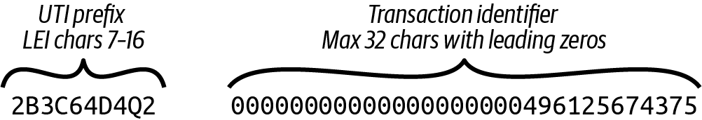
런던증권거래소 일일공식명부 (SEDOL)
런던증권거래소 일일공식명부(SEDOL, Stock Exchange Daily Official List)는 주로 런던증권거래소(LSE) 및 영국의 기타 소규모 거래소에서 거래되는 유가증권을 식별하는 데 사용되는 7자리의 영숫자 코드입니다. 영국의 국가별 번호부여기관인 LSE는 증권 발행인의 요청에 따라 SEDOL 코드를 부여합니다.12
수년에 걸쳐 SEDOL 시스템이 확장되어 이제는 여러 관할권에 상장된 증권을 나타내기 위해 국가 수준에서도 SEDOL 코드가 발급될 수 있습니다. SEDOL은 모든 관할권과 다양한 자산군에 걸쳐 전 세계적으로 발급됩니다. 한 증권이 다른 국가의 다른 거래소에서 거래되는 경우 별도의 SEDOL 코드가 부여됩니다. 이로 인해 SEDOL은 국가 간에 고유성을 가지므로 국제 매매 및 증권 식별에 이상적입니다.
영국 유가증권의 경우 맨 앞에 국가 코드를 추가하고 2개의 0 패딩을 붙인 뒤 SEDOL을 넣고 마지막에 ISIN 체크 코드를 추가하여 영국 ISIN 코드 내에 SEDOL이 포함됩니다. 예를 들어 영국의 금융 그룹인 HSBC의 SEDOL 코드는 0540528이고 ISIN 코드는 GB0005405286입니다.13
2004년 3월 이전에 발급된 SEDOL 코드는 순수하게 숫자로만 구성되었습니다. 그 후 SEDOL 시스템은 알파벳 문자로 시작하고 5개의 영숫자 문자와 마지막 숫자 체크 디지트가 이어지는 영숫자 형식으로 전환되었습니다. 그림 3-13은 SEDOL의 구조를 보여줍니다.
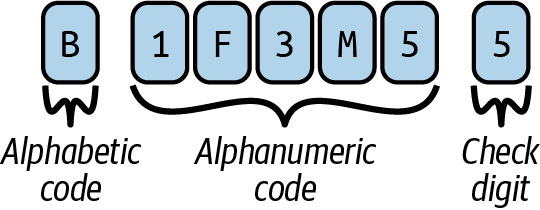
SEDOL의 유효성을 검증하기 위해 모든 SEDOL 문자의 가중 합계가 10의 배수가 되도록 체크 디지트가 선택됩니다. SEDOL을 검증하는 단계는 다음과 같습니다.
- 알파벳 문자를 알파벳 순서 위치에 9를 더한 숫자로 변환합니다(A = (1 + 9) = 10).
- 처음 6개 숫자에 각각 해당하는 가중치를 곱합니다: 첫 번째 위치는 1, 두 번째는 3, 세 번째는 1, 네 번째는 7, 다섯 번째는 3, 여섯 번째는 9.
- 모든 값의 합을 구합니다.
- 합계의 내림값을 계산합니다: (10 – (합계 modulo 10)) modulo 10.
SEDOL 체크 디지트 검증을 위한 파이썬 구현체는 이 책의 깃허브 저장소에서 확인할 수 있습니다.
티커 심볼 (Ticker Symbols)
티커 심볼(ticker symbol)은 상장 및 매매 목적으로 금융 유가증권(주로 주식)에 할당되는 짧고 고유한 문자 조합입니다. 티커에 대한 단일 표준은 없으며 거래소 및 매매 플랫폼, 금융 데이터 제공업체, 금융 기관 등 다양한 조직에서 생성하고 할당할 수 있습니다.
티커의 할당 프로세스와 형식 규칙은 각 발급 기관마다 다릅니다. 미국 거래소의 경우 티커는 일반적으로 1~4글자 길이이며 가능한 경우 회사 이름과 유사하게 지정됩니다. 예를 들어 뉴욕증권거래소에서 애플(Apple, Inc.)의 티커는 AAPL이고 포드 모터(Ford Motor)의 티커는 F입니다. 나스닥과 같은 일부 거래소는 주식의 거래 상태 및 특수 기능을 전달하기 위해 티커에 다섯 번째 기호를 추가합니다. 예를 들어 BRK.A에서 처음 세 글자는 버크셔 해서웨이(Berkshire Hathaway, Inc.)의 주식 심볼(BRK)을 나타내며 마지막 문자(.A)는 전통적으로 더 많은 의결권을 갖는 클래스 A 주식임을 나타냅니다.
거래소 외에도 금융 데이터 제공업체는 금융 상품에 자체 티커 심볼을 부여합니다. 예를 들어 블룸버그는 블룸버그 생태계 내에서 금융 개체를 고유하게 식별하기 위해 자체 블룸버그 티커를 만들었습니다. 블룸버그 티커에는 거래소별 티커, 시장 섹터, 거래소 코드, 상품별 정보(예: 채권 만기, 옵션 만기, 옵션 유형 등), 블룸버그 데이터베이스(예: 주식의 경우 EQUITY)가 포함될 수 있습니다.
또 다른 잘 알려진 독점 티커 심볼은 LSEG가 발급하고 관리하는 레피니티브 상품 코드(RIC, Refinitiv Instrument Code)입니다. RIC 티커는 주로 LSEG 플랫폼에서 특정 금융 상품에 대한 정보를 조회하는 데 사용됩니다. RIC의 주요 구성 요소는 유가증권의 티커 심볼과 거래소를 식별하는 선택적 문자입니다. 예를 들어 RIC 심볼 IBM.N은 뉴욕증권거래소(.N)에서 거래되는 IBM 주식(IBM)을 가리킵니다.
주식 티커는 거래소와 국가마다 다를 수 있으며, 이는 서로 다른 거래소와 국가 간에 고유하지 않을 수 있음을 의미합니다. 따라서 주식을 안정적으로 식별하려면 티커와 함께 상장 거래소 또는 국가가 함께 요구되는 경우가 많습니다.
티커는 불변(immutable)이 아니며 인수합병과 같은 기업 이벤트를 반영하여 변경될 수 있습니다. 예를 들어 1999년 모빌 오일(Mobil Oil)과 합병하기 전 엑손(Exxon)은 회사 이름의 발음을 딴 XON을 티커 심볼로 사용했습니다. 합병 후 심볼은 XOM으로 변경되었습니다.
중요한 점은 티커가 시간이 지남에 따라 재할당될 수 있으므로 영구적인 고유성을 보장하지 않는다는 것입니다. 예를 들어 2017년까지 뉴욕증권거래소의 SNOW 티커는 인트라웨스트 리조트 홀딩스(Intrawest Resorts Holdings, Inc.)에 부여되어 있었습니다. 2017년 5월 헨리 크라운 앤 컴퍼니와 KSL 캐피털 파트너스가 인트라웨스트를 인수하여 비상장 기업으로 전환했습니다. 인트라웨스트가 상장 폐지된 후 SNOW 티커는 스노우플레이크(Snowflake)에 재할당되었습니다. 그림 3-14에 나와 있듯이 두 회사 이름에 대한 위키피디아 검색을 통해 이를 확인할 수 있습니다.
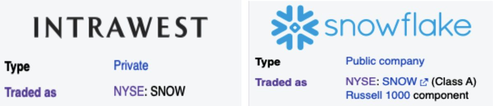
파생상품 식별자
파생상품은 금융 시장에서 가장 많이 거래되는 금융 증권 중 하나입니다. 간단히 상기하자면 파생상품은 주식, 원자재, 외환, 이자율, 지수 등 기초 금융 자산이나 변수에서 가치를 도출하는 계약입니다.
결정적으로 파생상품을 식별하는 것은 다른 유형의 금융 상품을 식별하는 것보다 더 까다롭습니다. 첫째, 파생상품을 식별하려면 여러 구성 요소를 고려해야 합니다. 둘째, 유연하고 맞춤화가 용이한 특성으로 인해 파생상품은 매우 복잡한 상품으로 쉽게 변모할 수 있습니다. 셋째, 파생상품의 상당 부분이 장외(OTC)에서 거래되므로 추적과 식별이 복잡해집니다. 그럼에도 불구하고 앞으로 설명하겠으나 시장 참여자들은 장내 파생상품과 장외 파생상품을 모두 식별하기 위한 다양한 이니셔티브를 발전시켜 왔습니다.
옵션 심볼 (Option symbol)
옵션 심볼은 특정 거래소에서 옵션과 그 특성을 식별하는 데 사용되는 파생 심볼입니다.14 옵션 심볼에 대한 현재 시장 표준은 옵션청산공사(OCC, Options Clearing Corporation)의 옵션 심볼로지 이니셔티브(OSI, Options Symbology Initiative)에 기반을 두고 있습니다. OSI 형식은 4개 부분으로 나눌 수 있는 21자의 영숫자 코드로 구성됩니다.
- 기초 주식 또는 ETF(상장지수펀드)의 루트(티커) 심볼
- YYMMDD 형식의 6자리 만기일
- 콜옵션은 C, 풋옵션은 P로 표시되는 옵션 유형
- 행사가격. 가격에 1,000을 곱한 값으로 표시되며 앞자리는 8자리까지 0으로 채워집니다. 옵션 심볼에서 소수점은 오른쪽에서 세 번째 자리에 위치합니다: 00000.000.
OSI 옵션 심볼의 구조는 그림 3-15에 자세히 나와 있습니다.
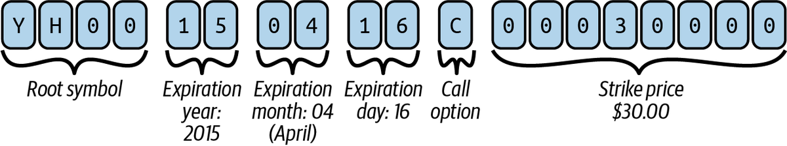
CFI, UPI 및 OTC ISIN
장외(OTC) 파생상품을 식별하기 위해 다음 3가지 식별자에 의존하는 복합 식별 체계가 마련되어 있습니다.
OTC ISIN: 파생상품 서비스국(DSB, Derivatives Service Bureau)에서 부여하며, 처음 두 글자는 커스텀 코드인 “EZ”로 시작합니다.
고유상품식별자(UPI, Unique Product Identifier): OTC 파생상품의 식별을 위해 ISO 4914에 정의되어 있습니다.
금융상품분류코드(CFI, Classification of Financial Instruments): OTC ISIN 생성 프로세스의 일환으로 DSB에서 생성합니다.
이 세 가지 식별자는 서로 결합되어 다양한 수준의 세부 정보를 제공합니다. DSB 경영진의 말라비카 솔란키(Malavika Solanki)는 세 식별자의 결합 사용을 다음과 같은 예시로 설명했습니다. 가장 상위 수준에서 CFI는 파생상품이 “단일 통화, 고정-변동 금리, 명목 원금 일정 고정 및 현금 결제 방식의 금리 스왑”임을 알려줄 수 있습니다. UPI는 해당 상품에 대해 좀 더 자세한 정보, 예를 들어 “3개월 기준 금리 기간, USD 기준 금리, 기준 금리 명칭이 USD-LIBOR-BBAR”라는 정보를 알려줍니다. 마지막으로 OTC ISIN은 “표준화된 ISO 기준 금리 명칭, 상품과 연계된 가격 승수, 상품의 전체 명칭 및 단축 명칭, 만기일”과 같이 체결된 특정 상품에 대한 보다 세분화된 정보를 제공할 수 있습니다.
대체상품식별자 (AII)
대체상품식별자(AII, Alternative Instrument Identifier)는 유럽연합 내에서 ISIN이 부여되지 않은 규제 시장 거래 파생상품을 식별하기 위해 보고 목적으로 채택되었습니다. 코드가 아닌 상품을 식별하는 설명 필드의 연결(concatenation) 형태입니다. 그림 3-16에 나타난 것처럼 거래소 코드, 거래소 상품 코드, 파생상품 유형, 풋/콜 식별자, 만기/결제/통지일, 행사가격 등의 필드가 포함됩니다.
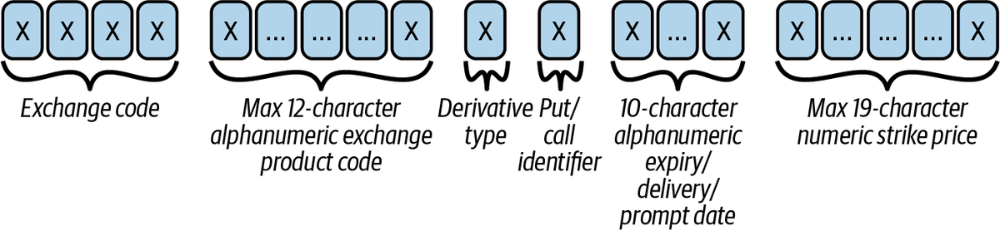
금융상품글로벌식별자 (FIGI)
금융상품글로벌식별자(FIGI, Financial Instrument Global Identifier)는 전 세계 수억 개의 활성 및 비활성 금융 상품을 포괄하는 12자리의 영숫자 ID입니다.
FIGI의 역사는 2009년 블룸버그가 자산군 전반에 걸쳐 유가증권을 식별하기 위해 자체 오픈 심볼로지(BSYM) 시스템을 공개하기로 결정하면서 시작되었습니다. BSYM은 블룸버그 글로벌 식별자(BBGID)로 알려진 수억 개의 증권 식별자 라이브러리를 제공합니다. 2014년 비영리 표준 컨소시엄인 객체관리그룹(OMG, Object Management Group)은 이를 개방형 업계 표준으로 홍보하기 위해 BSYM 심볼로지 시스템을 채택했습니다. 이후 BBGID는 FIGI로 이름이 바뀌었습니다. 도입 이후 FIGI는 시장의 큰 주목을 받았습니다. 예를 들어 미국 공인표준위원회 X9(ASC X9)은 FIGI를 공식 미국 데이터 식별 표준으로 채택했습니다.
FIGI 코드는 모든 시장과 국가에 걸쳐 고유하며 한 번 발급되면 변경되지 않습니다. 예를 들어 IBM 주식이 12개 증권거래소에서 거래된다면 12개의 서로 다른 FIGI가 존재하게 됩니다.
또한 FIGI는 주식, 채권, 파생상품, 대출, 지수, 펀드, 디지털 자산을 포함한 모든 유형의 금융 상품을 식별할 수 있는 글로벌 시스템으로 설계되었습니다. FIGI는 무료로 이용할 수 있습니다. API를 통해 무료 FIGI를 식별, 매핑, 요청할 수 있는 OpenFIGI라는 오픈소스 도구도 출시되었습니다.
FIGI 식별 시스템은 세 단계로 구성된 계층 구조를 갖습니다.
글로벌 FIGI (Global FIGI): 가장 세분화된 수준으로, 매매 플랫폼(거래소) 수준에서 금융 자산을 식별합니다. 특정 거래소의 특정 상품에 대해 고유합니다.
통합 글로벌 FIGI (Composite global FIGI): 동일한 국가 내의 여러 거래소 수준 FIGI 식별자를 집계하여 해당 국가 내 특정 상품의 모든 거래 플랫폼을 아우르는 보다 넓은 식별을 제공합니다.
셰어 클래스 글로벌 FIGI (Share class global FIGI): 여러 국가에 걸친 금융 상품을 포괄하도록 FIGI 식별자를 한층 더 집계합니다. 국가와 거래소에 관계없이 단일 상품에 대한 글로벌 뷰를 제공합니다.
예를 들어 아마존은 미국 내 여러 증권거래소에서 거래됩니다. 아마존 보통주가 뉴욕증권거래소에서 거래될 때의 FIGI 코드는 BBG000BVPXP1입니다. 동일한 주식이 나스닥 글로벌 셀렉트 거래소에서 거래될 때의 FIGI는 BBG000BVQ4Z3입니다. 하지만 아마존이 어느 미국 거래소에서 거래되는지 상관하지 않는다면 아마존 통합 FIGI(BBG000BVPV84)를 사용하여 미국에서 거래되는 아마존 주식을 범용적으로 참조할 수 있습니다. 거래소와 국가에 관계없이 아마존 보통주를 전 세계적으로 식별하려면 셰어 클래스 코드(BBG001S5PQL7)를 사용할 수 있습니다.15 그림 3-17은 FIGI의 계층 구조를 보여줍니다.
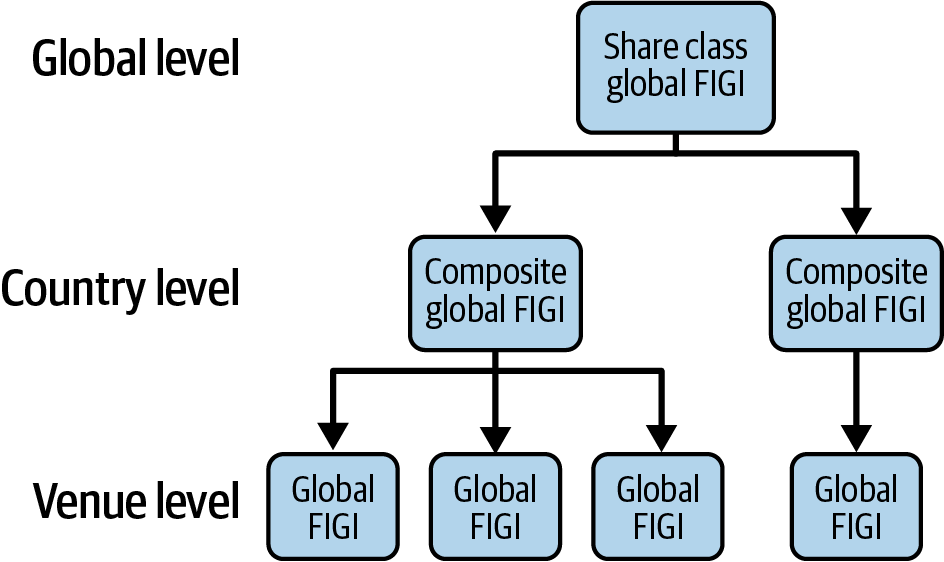
세 가지 수준의 FIGI 식별자는 모두 동일한 구조와 제한을 갖습니다. 식별자에는 [B, C, D, F, G, H, J, K, L, M, N, P, Q, R, S, T, V, W, X, Y, Z] 범위의 문자와 0~9 범위의 숫자만 포함될 수 있습니다.
FIGI 코드의 구조는 다음과 같습니다.
- 처음 두 문자는 FIGI 코드를 생성한 공인 발급 기관을 식별합니다. 현재 블룸버그가 대다수의 FIGI 코드를 생성하므로 대부분의 식별자에 접두사 BB가 존재합니다.
- 세 번째 문자는 글로벌 식별자임을 나타내는 데 사용되는 문자 G입니다.
- 4~11번째 문자는 참조 ID를 구성하는 영숫자 문자입니다.
- 마지막 체크 디지트.
그림 3-18은 이 구조를 시각적으로 보여줍니다.
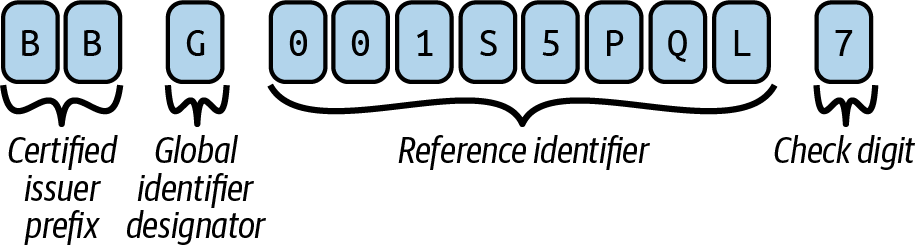
체크 디지트 계산 절차는 룬(Luhn) 알고리즘을 기반으로 하며 5단계로 진행됩니다.
- 식별자(예: BBG000BLNQ16)를 가져와 체크 디지트를 제거합니다(BBG000BLNQ1).
- 알파벳 문자를 알파벳 순서 위치에 9를 더한 숫자로 변환합니다(A = (1 + 9) = 10). 이 예에서는 [11][11][16][0][0][0][11][21][23][26][1]을 얻습니다.
- 짝수 번째 자리의 숫자를 2배로 만듭니다: [11][22][16][0][0][0][11][42][23][52][1].
- 결과값들의 합을 계산합니다: 1 + 1 + 2 + 2 + 1 + 6 + 0 + 0 + 0 + 1 + 1 + 4 + 2 + 2 + 3 + 5 + 2 + 1 = 34.
- 합계의 내림값을 계산합니다: (10 – (34 modulo 10)) modulo 10 = 6이며, 이것이 식별자에 부착되는 체크 디지트입니다.
FIGI 체크 디지트 검증을 위한 파이썬 구현체는 이 책의 깃허브 저장소에서 확인할 수 있습니다.
팩트셋 영구 식별자
팩트셋 영구 식별자(FactSet permanent identifier)는 안정적이고 통일된 식별자를 제공하기 위해 팩트셋이 개발한 독점 식별 시스템입니다. 세 가지 수준으로 구성됩니다.
증권(Security): 증권을 전 세계적으로 식별
지역(Regional): 통화별 지역 수준에서 증권을 식별 (예: US/USD)
상장(Listing): 시장 수준에서 증권을 식별 (예: US/NYSE/USD)
팩트셋은 사용자가 CUSIP, SEDOL, ISIN, 블룸버그 FIGI 등 다양한 식별자를 팩트셋의 기본 심볼로지 또는 제3자 식별자에 매핑할 수 있는 심볼/식별자 변환(레졸루션) 서비스인 FactSet Symbology API를 제공합니다. 또한 팩트셋은 사용자가 이름, URL, 위치와 같은 속성을 기반으로 특정 개체에 대한 팩트셋 식별자를 프로그래밍 방식으로 매칭할 수 있는 FactSet Concordance API도 제공합니다.
LSEG 영구 식별자 (PermID)
영구 식별자(PermID, Permanent Identifier)는 런던증권거래소그룹(LSEG) 정보 모델 내에서 조직, 금융 상품, 펀드, 발행기관, 인물 등 다양한 객체를 식별하고 참조하는 데 사용되는 고유 식별자입니다. 이를 통해 이러한 객체 간의 관계가 시간이 지나면서 변하더라도 정확하고 명확하게 참조되고 연결되도록 보장합니다.
PermID가 특히 가치 있는 이유는 고유한 웹 주소 또는 URI(Uniform Resource Identifier)에 연결되어 식별된 개체에 대한 영구적이고 직접적인 링크를 제공한다는 점입니다. LSEG는 PermID를 오픈소스로 공개하여 웹페이지나 API 기반의 개체 검색 및 매칭 서비스를 통해 접근할 수 있도록 했습니다.
예를 들어 기술 기업 애플에 대한 정보를 조회하는 데 다음 PermID URL을 사용할 수 있습니다.
https://permid.org/1-4295905573: 애플(Apple, Inc.)을 식별하는 조직 세부 정보를 제공
https://permid.org/1-8590932301: 애플의 보통주를 식별하는 상품 세부 정보를 포함
https://permid.org/1-25727408109: 뉴욕증권거래소에 상장된 애플 보통주를 식별하는 호가 정보를 포함
디지털 자산 식별자
블록체인 및 분산 원장 기술의 등장과 확산에 따라 디지털 자산이 금융 시장의 새로운 개체 유형으로 자리 잡았습니다. 블록체인 관련 ISO 22739 용어 표준에 따르면 디지털 자산은 “디지털 형태로만 존재하거나 다른 자산의 디지털 표현물인 자산”을 의미합니다. 많은 경우 디지털 자산은 디지털 토큰이라고도 불립니다. 디지털 토큰은 유사한 자산과 동일하고 상호 교환이 가능한 경우 대체 가능(fungible)하며(예: 뉴욕의 1달러는 호주의 1달러와 동일함), 고유하고 분할할 수 없는 경우 대체 불가능(nonfungible)합니다(예: 그림이나 보트). 디지털 자산을 교환하는 가장 일반적인 수단은 블록체인이며, ISO 22739 용어에 따르면 “암호화 링크를 사용하여 추가 전용 순차 체인으로 구성된 확인된 블록을 갖는 분산 원장”을 가리킵니다.16 어떤 대상을 디지털 자산으로 변환하여 블록체인 시스템에 추가하는 프로세스를 토큰화(tokenization)라고 합니다.
지난 몇 년 동안 다음과 같은 다양한 유형의 대체 가능한 디지털 자산이 개발되었습니다.
가상자산(암호화폐/크립토 자산): 암호화 기술을 사용하여 개발된 자산입니다. 가장 대표적인 예로 비트코인과 이더리움 같은 암호화폐가 있습니다. 크립토 자산은 결제 수단이나 투자 수단 역할을 할 수 있습니다.
증권형 토큰 (Security token): 디지털 토큰으로 변환되어 블록체인과 같은 분산 원장에서 거래되는 금융 증권 또는 상품입니다(예: 마이크로소프트 주식 토큰). 전통적인 주권 증서와 유사하게 증권형 토큰은 기업이나 자산에 대한 소유권을 나타냅니다.
대체 불가능 토큰 (NFT, Nonfungible tokens): 이미지, 비디오, 게임과 같은 고유한 디지털 자산에 대한 소유권을 나타냅니다.
유틸리티 토큰 (Utility token): 블록체인 기반 생태계 내에서 특정 서비스나 기능에 접근하는 데 사용되는 토큰입니다.
디지털 자산의 인기가 높아짐에 따라 발행, 저장, 거래되는 디지털 토큰과 암호화 자산을 식별해야 할 필요성이 더욱 시급해졌습니다. 첫 번째 이니셔티브로 대체 가능 토큰과 디지털 원장을 식별하기 위해 ISO 24165-1에 정의된 디지털 토큰 식별자(DTI, Digital Token Identifier)가 도입되었습니다. DTI를 정의하면서 ISO는 식별자를 부여하기 위한 새로운 방법론의 필요성을 인식했습니다. 이는 디지털 자산이 전통적인 자산과 달리 중앙은행과 같은 특정 발행 개체와 연결되지 않는 경우가 많기 때문입니다.
이 표준은 보편적인 식별 방법을 제공함으로써 암호화 자산 시장의 혼란을 줄이고 신뢰를 높이는 데 기여합니다.
산업 및 섹터 식별자
산업 및 섹터 식별자는 기업을 다양한 범주와 하위 범주로 분류하고 그룹화하는 데 사용되는 분류 체계입니다. 금융 기업은 산업 식별자를 사용하여 시장 익스포저를 분석하고, 주식을 분류하며, 집중 위험을 측정하고, 산업 간 차이를 이해합니다. 널리 사용되는 두 가지 주요 산업 분류 체계는 표준산업분류(SIC, Standard Industrial Classification)와 북미산업분류체계(NAICS, North American Industry Classification System)입니다.
SIC 식별자는 주된 활동을 기반으로 산업을 분류하는 데 사용되는 4자리 숫자 코드입니다. SIC 시스템은 산업 및 기관 전반의 경제 분석을 촉진하고 산업 데이터의 수집 및 기록에서 표준화와 통일성을 증진하기 위해 1937년 미국 정부에 의해 만들어졌습니다.
그림 3-19에 나와 있듯이 공식 SIC 분류 코드는 세 부분으로 구성됩니다. 필수 항목인 처음 두 자리는 대분류 섹터 그룹을 식별합니다. 세 번째 자리는 비즈니스를 산업 그룹으로 더 세분화합니다. 네 번째 자리는 가장 세분화된 분류를 제공하여 비즈니스의 특정 섹터를 지정합니다. 예를 들어 SIC 코드 6021(전국 상업은행)은 (금융, 보험, 부동산) 부문에 속하는 대분류 60(예금 기관)의 일부인 산업 그룹 602(상업은행)에 속합니다.
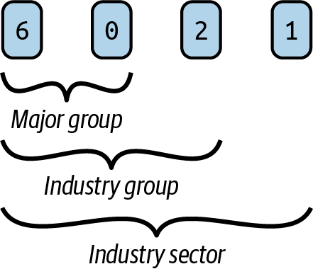
SIC 시스템에는 몇 가지 단점이 있었습니다. 첫째, 모호하고 불일치하며 중복되는 분류를 생성했습니다. 둘째, 4자리 시스템은 새롭게 부상하는 비즈니스 섹터와 산업을 추가하는 데 제약이 있었습니다. 이러한 문제를 극복하기 위해 1997년에 SIC 시스템은 보다 유연한 6자리 숫자 코드를 도입한 북미산업분류체계(NAICS)로 대체되었습니다.
그림 3-20에 나와 있듯이 NAICS 코드의 처음 두 자리는 비즈니스의 주요 섹터를 나타냅니다. 세 번째 자리는 하위 섹터를 나타내고 네 번째 자리는 산업 그룹을 지정합니다. 다섯 번째 자리는 구체적인 영위 산업을 나타내며 여섯 번째 코드는 국가별 세부 산업을 지정합니다. 예를 들어 NAICS 코드 522110은 상업은행을 식별하는 데 사용됩니다. 처음 두 자리 52는 섹터(금융 및 보험)를 정의하고, 처음 세 자리(522)는 하위 섹터(신용 중개 및 관련 활동)를 식별하며, 처음 네 자리(5221)는 산업 그룹(예금 신용 중개)을 정의하고, 마지막 두 자리는 산업(상업은행)을 식별합니다.
그림 3-20. NAICS 코드의 구조적 분석
전 세계적으로 다른 산업 분류 체계도 사용되고 있습니다. 여기에는 유럽연합에서 주로 사용되는 유럽공동체 경제활동분류(NACE), 영국 표준산업분류(UK SIC), 호주 및 뉴질랜드 표준산업분류(ANZSIC) 등이 포함됩니다.
은행 식별자 (Bank Identifiers)
은행은 금융 시장의 초석입니다. 은행은 개인과 기관이 자금을 예치, 이체, 투자하고 대출을 받으며 신용카드 및 체크카드 결제를 진행할 수 있는 안전하고 신뢰할 수 있는 장소를 제공합니다. 또한 다양한 온라인 애플리케이션을 지원하고 핀테크 기업이 서비스를 제공할 수 있는 플랫폼 역할을 합니다. 따라서 은행, 고객 및 결제 카드를 식별하기 위해 은행 식별자는 필수적입니다.
가장 대표적인 예는 SWIFT 코드 또는 은행 식별 코드라고도 불리는 비즈니스 식별 코드(BIC, Business Identifier Code) 입니다. ISO 9362에 정의된 이 영숫자 코드는 국제 자금 이체 및 메시지 교환 라우팅 시 전 세계의 은행, 금융기관 및 비금융기관을 식별하는 데 사용됩니다. BIC 코드는 SWIFT에서 발급합니다.
SWIFT/BIC는 국가, 도시, 은행 및 (선택적으로) 지점을 식별하는 8자리 또는 11자리의 영숫자로 구성됩니다.
은행 코드(Bank code): 은행을 식별하는 4자리의 알파벳 문자입니다. 일반적으로 은행 이름의 축약형 형태를 띱니다.
국가 코드(Country code): 은행이 위치한 국가를 나타내는 2자리의 ISO 3166-1 alpha-2 코드입니다.
위치 코드(Location code): 은행 본점의 위치를 지정하는 2자리의 영숫자 코드입니다.
지점 코드(Branch code): 특정 지점을 나타내는 선택적 3자리 영숫자 코드입니다. 본점을 나타낼 때는 XXX가 사용됩니다.
그림 3-21은 BIC의 구조를 보여줍니다. 표시된 예시는 이탈리아 은행인 우니크레디트(UniCredit Banca)를 가리킵니다. 표시된 코드는 다음과 같이 해석할 수 있습니다: UNCR은 UniCredit Banca를 식별하고, IT는 이탈리아의 국가 코드이며, MM은 밀라노의 사무소 위치 코드이고, XXX는 본점을 나타냅니다.
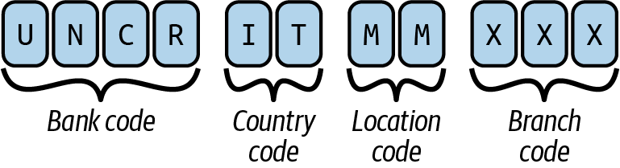
금융기관을 식별하기 위해 BIC 코드를 사용하는 것은 매우 흔하며, 특히 국제 거래에서 금융기관을 식별할 때 널리 쓰입니다. 그럼에도 불구하고 특정 국가에서는 자체적인 로컬 은행 또는 지점 식별 코드를 사용합니다. 예를 들어 호주는 호주 금융기관의 지점을 식별하기 위해 6자리 코드인 BSB(Bank State Branch) 를 사용합니다. 마찬가지로 미국에서는 다양한 지급결제 업무에 참여하는 금융기관을 9자리 숫자로 구성된 ABA 라우팅 번호(ABA Routing Number) 로 식별합니다.
또 다른 잘 알려진 은행 식별자는 국제은행계좌번호(IBAN, International Bank Account Number) 입니다. 이는 ISO 13616에 정의되어 있으며, 자금 이체 시 은행 계좌를 식별하는 데 사용되는 고유 코드의 국제 표준 시스템입니다. IBAN 시스템은 원래 EU 내에서 사용하기 위해 개발되었으나, 이후 카리브해와 중동 등의 지역에서도 채택되었습니다.
IBAN의 길이는 국가마다 다르지만 34자를 초과할 수 없습니다. 예를 들어 벨기에의 IBAN은 16자리 영숫자이고, 룩셈부르크는 20자리, 독일은 22자리입니다.
IBAN 코드는 세 가지 주요 부분으로 구성됩니다(그림 3-22 참조).
- ISO 3166-1 alpha-2 규약을 따르는 국가 코드
- 두 자리의 체크 디지트
- 기본 은행 계좌 번호(BBAN, Basic Bank Account Number) — 은행 코드, 지점 식별자, 계좌 번호를 포함하는 최대 30자리의 영숫자 문자열입니다. BBAN의 길이는 국가마다 다를 수 있습니다.
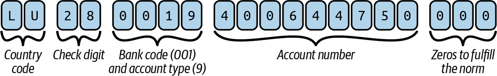
IBAN 코드는 다음과 같이 작동하는 mod-97 알고리즘(ISO 7064에 기술됨)을 통해 검증됩니다.
- IBAN이 유효한 길이를 갖는지 확인합니다. 예를 들어 룩셈부르크의 임의의 IBAN인 LU280019400644750000을 살펴보겠습니다. 길이는 20자리로, 해당 국가에 지정된 길이와 일치합니다.
- 처음 네 문자를 문자열의 맨 끝으로 이동시킵니다 → 0019400644750000LU28.
- 숫자가 아닌 문자를 알파벳 순서 위치에 9를 더한 값(A = (1 + 9) = 10)에 따라 숫자로 변환합니다. 이 예시에서는 0019400644750000213028을 얻게 됩니다.
- 결과를 정수로 취급하여 해당 숫자의 모듈로 97 연산 결과가 1과 같은지 확인합니다: 19400644750000213028 mod 97 = 1.
IBAN 유효성 검증을 위한 파이썬 구현체는 이 책의 GitHub 저장소에서 확인할 수 있습니다.
마지막으로 매우 중요한 은행 식별자 중 하나는 ISO/IEC 7812에 정의된 지급결제 카드 번호 또는 기본 계좌 번호(PAN, Primary Account Number) 입니다. 이는 지급 카드를 정의하고 카드 발급사와 카드 소유자를 식별하는 데 사용됩니다. 신용카드, 체크카드, 기프트카드와 같은 대부분의 결제 카드는 전면에 PAN이 레이저로 인쇄되어 있습니다(맞습니다, 여러분의 신용카드 번호입니다!).
PAN은 8자리에서 19자리까지 가변적인 길이를 가진 숫자 코드입니다. 처음 6~8자리는 카드 발급사를 식별하는 발급기관 식별번호(IIN, Issuer Identification Number) 를 나타냅니다. IIN의 첫 번째 숫자는 카드 발급사의 산업/업종을 식별하는 주요 산업 식별자(MII, Major Industry Identifier) 입니다(예: 4와 5는 금융기관을 식별하는 데 흔히 사용됨). 나머지 문자는 카드 소유자의 계좌를 식별하는 개별 계좌 번호입니다. 마지막 숫자는 룬(Luhn) 알고리즘을 사용하여 검증할 수 있는 체크 디지트입니다.17 그림 3-23은 PAN의 구조를 보여줍니다.
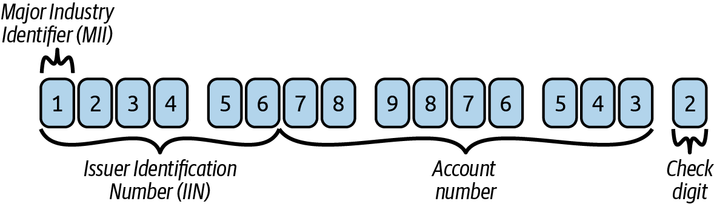
요약
이 장에서는 금융 식별자와 식별 체계에 대해 심층적으로 다루었으며, 주요 내용은 다음과 같습니다.
- 금융 식별자 및 식별 체계의 정의와 금융 시장 운영에서의 결정적 역할 강조
- 금융 식별자 및 식별 체계의 생성, 발급, 유지 관리에 관여하는 기관에 대한 개요 제공
- 최적의 금융 식별 체계가 갖추어야 할 바람직한 속성 정리
- 기존 금융 식별 체계를 상세히 논의하고 주요 특징과 한계점 분석
이 장의 핵심 시사점은 금융 식별이 금융 시장에 중대한 과제를 안겨준다는 점입니다. 또한 새로운 상품과 시장 요구사항이 등장함에 따라 이 문제의 복잡성은 계속해서 진화하고 있습니다. 금융 식별 체계의 개발, 표준화, 채택에 관한 새로운 트렌드는 물론 기존 시스템의 진화하는 특성에 대해 항상 최신 정보를 파악할 것을 강력히 권장합니다.
금융 식별 체계에 대한 확고한 이해를 갖추었으므로, 이제 금융 시장의 또 다른 관련 핵심 과제인 금융 엔티티 시스템을 살펴볼 차례입니다. 금융 엔티티 시스템은 금융 데이터의 다양한 소스 내부 및 소스 전반에서 금융 엔티티를 추출, 인식, 식별, 매칭하고자 할 때 구축하게 됩니다.
다음 장은 금융 엔티티 시스템에 관한 모든 것을 다룹니다. 계속 나아가 봅시다!
1 이 주제에 관심이 있다면 마르틴 흐로트(Martijn Groot)의 저서 Managing Financial Information in the Trade Lifecycle: A Concise Atlas of Financial Instruments and Processes (Elsevier, 2008)를 강력히 추천합니다.
2 흥미로운 읽을거리로 리처드 영(Richard Young)의 논문 “The Identifier Challenge: Attributes of MiFID II That Cannot Be Ignored”, Journal of Securities Operations & Custody 9, no. 4 (2017년 가을): 313–320을 참조하세요.
3 2011년 유럽연합 집행위원회는 스탠더드 앤 푸어스(S&P)가 미국 증권 ISIN의 유일한 발급 기관으로서 유럽 금융기관에 높은 접근 수수료를 부과함으로써 시장 지배적 지위를 남용하고 반독점 규정을 위반했다고 결론지었습니다. 집행위원회는 S&P가 미국 ISIN 사용에 대해 은행들이 지불하던 라이선스 수수료를 폐지하도록 법적 구속력을 부여했습니다.
4 자세한 내용은 안젤리키 스쿠라(Angeliki Skoura), 율리안 프레스버(Julian Presber), 장 쉴츠(Jang Schiltz)의 논문 “Luxembourg Fund Data Repository”, Data 5, no. 3 (2020년 7월): 62를 참조하세요.
5 CUSIP과 SEDOL은 다음 몇 개 절에서 설명합니다. WKN에 대한 세부사항은 프랑크푸르트 증권거래소의 정의를 참조하세요.
6 ISIN 조직 웹페이지에서 발췌한 예시입니다.
7 많은 금융 식별 체계가 끊임없이 확장되고 있으므로, 특정 식별자가 지금 당장 특정 시장 부문을 커버하지 않는다고 해서 미래에도 커버하지 못한다는 뜻은 아니라는 점을 유념하세요.
8 신디케이트론 시장은 금융기관 그룹(신디케이트)이 단일 차입자에게 공동으로 대출(주로 대규모 대출)을 제공하는 시장입니다.
9 금융에서 스왑은 두 당사자가 지정된 기간 동안 금융 상품, 현금 흐름 또는 지급금을 교환하기로 합의하는 파생상품의 일종입니다.
10 금융 시장에서 UTI의 유용성을 살펴보려면 Swift의 논문 “The Unique Transaction Identifier and Its Value in Securities Settlement”를 읽어보길 권장합니다.
11 BIS(편집자): 국제증권관리위원회기구 지급 및 시장인프라위원회 기술 지침, “Harmonisation of the Unique Transaction Identifier”, 2017년 2월을 참조하세요.
12 Sedol 기술 문서는 LSE 웹사이트에서 확인할 수 있습니다.
13 LSE 웹사이트의 HSBC 공식 기업 페이지에서 발췌한 정보입니다.
14 옵션은 옵션 유형에 따라 미래의 특정일 또는 그 이전에 정해진 행사가격으로 특정 수량의 기초자산을 매수하거나 매도할 수 있는 권리를 보유자에게 부여하는(의무는 아님) 금융 파생상품입니다.
15 직접 확인해보려면 이 링크를 사용하세요.
16 블록체인 내부 구조에 대한 자세한 내용은 8장에서 다룹니다.
17 연습 과제: 앞서 국제증권식별번호에서 정의한 룬 알고리즘을 활용하여 신용카드 또는 체크카드 번호의 유효성을 검증해 보세요(주의: 본인의 실제 카드 번호를 사용하지 마세요. 테스트용 신용카드 번호 목록은 온라인에서 확인할 수 있습니다).
4장. 금융 엔티티 시스템
지난 장에서는 금융 식별자와 식별 체계, 그리고 금융 시장에서 이들이 갖는 결정적인 역할에 대해 배웠습니다. 중요한 점은 금융 엔티티를 식별하기에 앞서 먼저 데이터를 추출하고 식별할 수 있는 상태로 준비해야 한다는 사실입니다. 그러나 금융 분야에서는 엔티티를 즉시 식별할 수 없는 비정형 포맷으로 데이터가 존재하는 경우가 매우 흔합니다. 실제로 애널리스트들은 전 세계 데이터의 대다수가 텍스트, 비디오, 오디오, 이미지와 같은 비정형 포맷으로 존재한다고 추정합니다. 더욱이 정형 데이터와 비정형 데이터 전반에 걸쳐 동일한 금융 엔티티를 참조하는 데 서로 다른 식별자가 사용되는 일도 대단히 빈번합니다. 이러한 요인들이 복합적으로 작용하여 데이터로부터 가치와 인사이트를 추출하려 할 때 중대한 난관을 조성합니다.
이를 해결하기 위해 수많은 금융기관은 금융 데이터셋 내에서 금융 엔티티를 추출, 인식, 식별, 매칭하는 시스템을 개발합니다. 필자가 금융 엔티티 시스템(FES, Financial Entity System) 이라고 부르는 이러한 시스템이 바로 이번 장의 핵심 주제입니다. 금융 데이터 엔지니어로서 FES와 이에 수반되는 과제를 이해하는 것은 오늘날의 복잡한 금융 데이터 환경을 헤쳐나가는 데 필수적입니다.
이 장의 첫 부분에서는 금융 엔티티의 개념을 명확히 정의하고 다양한 유형을 개괄적으로 살펴봅니다. 다음으로 널리 사용되는 FES인 개체명 인식(Named Entity Recognition, NER) 을 사용하여 금융 엔티티의 추출 및 인식 문제를 설명합니다. 그런 다음 엔티티 레졸루션(Entity Resolution) 으로 알려진 또 다른 FES를 사용하여 금융 데이터 매칭 및 레코드 링키지(Record Linkage) 문제를 다룹니다.
금융 엔티티의 정의
일반적으로 엔티티(Entity, 개체) 라는 용어는 인식하고 식별할 수 있는 모든 현실 세계의 객체를 의미합니다. 범위를 금융 시장으로 좁히면, 금융 엔티티(Financial Entity) 라는 용어를 사용하여 금융 시장 내에서 활동하는 모든 실세계 객체를 나타낼 수 있습니다. 이 책에서는 금융 엔티티와 금융 엔티티 시스템을 다음과 같이 정의합니다.
금융 엔티티는 금융 시장의 운영, 활동, 보고서, 이벤트 또는 뉴스에서 핵심적인 부분으로 인식, 식별, 참조 또는 언급될 수 있는 실세계의 객체다. 금융 엔티티는 사람일 수도 있고 아닐 수도 있다. 유형의 자산(예: ATM 기기)일 수도 있고, 무형의 자산(예: 보통주)일 수도 있으며, 대체 가능(예: 1달러 지폐)하거나 대체 불가능(예: 대출)할 수도 있다. 금융 엔티티 시스템은 금융 데이터와 콘텐츠의 다양한 소스로부터 금융 엔티티 및 관련 정보를 추출, 식별, 연결, 저장, 검색하기 위한 기술, 절차, 방법의 체계적인 집합이다.
금융 시장이 진화하고 확장함에 따라 금융 엔티티의 다양성과 유형도 함께 늘어납니다. 자주 사용되는 벤치마크 분류 체계는 엔티티를 개인(PER), 기업/법인(ORG), 장소(LOC), 기타 엔티티(MISC)의 네 가지 주요 그룹으로 분류합니다.
당연히 속한 기관의 필요에 따라 엔티티를 더 넓거나 더 세분화된 범위로 분류해야 할 수도 있습니다. 예를 들어 근무하는 금융기관이 디지털 자산 시장에 대한 데이터를 수집하기로 결정했다고 가정해 봅시다. 이 경우 암호화폐, 디지털 통화, 유틸리티 토큰, 증권형 토큰, 스테이블코인, 비트코인 등의 객체를 나타내기 위해 새로운 엔티티 유형(디지털 자산)을 생성할 수 있습니다. 기타 예시는 다음과 같습니다.
- 인물(Persons), 예: 은행가, 트레이더, 이사, 계좌 소유자, 투자자, 시장조성자, 규제 당국자, 브로커, 재무 상담사
- 장소(Locations), 예: 뉴욕, 일본, 아프리카, 베네룩스(벨기에, 네덜란드, 룩셈부르크)
- 국적(Nationalities), 예: 이탈리아인, 호주인, 중국인
- 기업(Companies), 예: Bloomberg L.P., JPMorgan Chase & Co., Aramco, Ferrero
- 기관/조직(Organizations), 예: 증권거래위원회(SEC), 유럽중앙은행(ECB), 런던증권거래소, 국제통화기금(IMF)
- 업종/섹터(Sectors), 예: 금융 서비스, 식품 산업, 농업, 건설, 마이크로칩
- 통화(Currency), 예: 달러($), 파운드(£), 유로(€)
- 원자재/상품(Commodity), 예: 금, 구리, 은, 밀, 커피, 원유, 철강
- 금융 증권(Financial security), 예: 주식, 채권, 파생상품
- 기업 이벤트(Corporate events), 예: 합병, 인수, 차입매수(LBO), 신디케이트론, 제휴, 파트너십
- 금융 변수(Financial variables), 예: 이자율, 인플레이션, 변동성, 지수 값, 신용등급, 수익, 매출
- 투자 전략(Investment strategies), 예: 패시브 투자, 액티브 투자, 가치 투자, 성장 투자, 인덱싱
- 기업 및 시장 계층 구조(Corporate and market hierarchies), 예: 모기업, 지주회사, 자회사, 지점
- 제품/서비스(Products), 예: iPhone, Alexa, Siri, Dropbox, Gmail
금융 엔티티가 무엇이며 이를 어떻게 분류하는지 알았으므로, 이제 금융 데이터로부터 이러한 엔티티를 식별하고 추출하는 방법을 이해해 보겠습니다. 앞서 언급했듯이 이러한 목적으로 설계된 시스템을 개체명 인식(Named Entity Recognition, NER) 시스템이라고 부릅니다.
금융 개체명 인식 (NER)
금융 데이터 엔지니어로서 비정형 또는 반정형 텍스트에서 금융 엔티티를 인식하고 식별하는 프로젝트를 맡게 된다면, 대개 NER 시스템을 설계하고 구축하게 될 것입니다. 이 절에서는 먼저 NER을 정의하고 몇 가지 직관적인 예시를 제시하겠습니다. 그런 다음 NER의 작동 원리와 NER 시스템 구축에 수반되는 단계를 설명합니다. 셋째로 NER을 수행하기 위한 가용한 방법과 기술에 대한 개요를 제공합니다. 마지막으로 NER 수행에 활용할 수 있는 오픈소스 및 상용 소프트웨어 라이브러리와 도구의 몇 가지 사례를 논의하겠습니다.
개체명 인식의 개념
엔티티 추출, 엔티티 식별, 엔티티 청킹(Entity chunking)으로도 알려진 NER은 텍스트 내에서 인물, 기업, 장소, 이벤트, 심볼, 시간 등과 같은 개체명(Named Entities)을 감지하고 인식하는 작업입니다. 매일 방대한 양의 금융 관련 텍스트(예: 공시 서류, 뉴스, 보고서, 로그, 커뮤니케이션, 메시지)가 쏟아져 나오고 비정형 및 텍스트 데이터를 다루기 위한 고급 전략에 대한 수요가 증가하고 있음을 고려할 때, NER은 금융 분야의 핵심 과제입니다.
NER 분석 결과는 금융 데이터셋에 엔티티 데이터 보강, 정보 추출(예: 재무 보고서 및 공시 서류에서 관련 금융 정보 추출), 텍스트 요약(예: 법적 요건 준수 확인), 사기 탐지(의심스러운 엔티티 및 거래 식별), 부정적 미디어 스크리닝(Adverse media screening, 엔티티를 부정적 정보 소스와 대조하여 스크리닝), 감성 분석(뉴스 및 소셜 미디어에서 시장 심리 평가), 리스크 관리(예: 잠재적 금융 리스크 및 익스포저 식별), 금융 뉴스, 시장 이벤트, 참여자, 경쟁, 트렌드, 제품으로부터 실행 가능한 인사이트 추출 등 다양한 금융 애플리케이션에 활용됩니다.
레이븐팩 애널리틱스: 금융 개체명 인식의 시장 선도자
개체명 인식 기법에 의존하는 제품과 서비스 시장은 빠르게 확장되고 있습니다. 이 분야의 대표적인 기업으로는 레이븐팩(RavenPack), 인포엔젠(InfoNgen), 옵티리스크 시스템즈(OptiRisk Systems), LSEG의 머신러닝 기반 뉴스(Machine Readable News) 등이 있습니다.
레이븐팩 뉴스 애널리틱스(RNA, RavenPack News Analytics)는 세계 최고의 뉴스 인사이트 및 분석 리소스입니다. 레이븐팩은 다우존스 뉴스와이어, 월스트리트 저널, 배런스, MT 뉴스와이어, PR 뉴스이어, 얼라이언스 뉴스, 마켓워치, 더 플라이, 그리고 규제 뉴스, 보도자료, 기사 제공업체 등 40,000개 이상의 소스로부터 비정형 콘텐츠를 수집하고 분석합니다.
레이븐팩 뉴스 애널리틱스는 20년 이상의 시점(Point-in-Time) 데이터를 계산하며, 130개국 이상에서 350,000개 이상의 엔티티에 대한 이벤트 및 감성 데이터를 제공합니다. 여기에는 다음이 포함됩니다.
- 모든 섹터에 걸친 110,000개 이상의 글로벌 상장 및 비상장 기업
- 장소, 통화, 인물, 조직과 같은 165,000개 이상의 거시 엔티티
- 감성 및 관련성 점수로 보강되어 탐지된 7,000개 이상의 핵심 비즈니스, 지정학적, 거시경제 이벤트
레이븐팩 뉴스 애널리틱스의 각 레코드에는 다음과 같은 정보가 제공됩니다.
- 엔티티 정보 (예: 이름, 거주지, 레이븐팩 고유 엔티티 식별자 및 기타 식별자)
- 이벤트 카테고리 (Event Category)
- 이벤트 감성 점수 (Event Sentiment Score, 이벤트가 얼마나 긍정적인지 또는 부정적인지 나타냄 [범위 -1 → 1])
- 이벤트 유사도 일수 (Event Similarity Days, 유사한 이벤트가 발생한 이후 경과된 일수로 측정한 이벤트의 참신성 [범위 0 → 365])
- 이벤트 관련성 점수 (Event Relevance Score, 이벤트가 발생하는 위치를 기반으로 한 관련성 [범위 0 → 100] — 예: 헤드라인은 높은 ERS를 가짐)
뉴스 데이터에서 이러한 관련 요소를 식별하고 추출하기 위해 레이븐팩은 독점적인 개체명 인식 시스템을 구축했습니다. 레이븐팩은 적시성과 고품질 데이터를 제공하기 위해 50개 이상의 고유한 엔티티 유형을 갖춘 사전 정의된 엔티티 데이터베이스를 유지 관리합니다. 또한 시장에 새롭고 유의미한 유형의 엔티티나 이벤트가 나타나면 데이터베이스를 확장합니다.
NER 시스템을 구축할 때 레이븐팩은 금융 부문의 특수한 요구사항에 직면했습니다. 엔티티 이름은 시간에 따라 변경될 수 있으며, 동일한 이름이 시점에 따라 서로 다른 엔티티를 가리킬 수도 있습니다. 이는 식별자의 최신 수탁자나 생존 엔티티만을 고려하여 데이터와 분석을 왜곡시키는 생존자 편향(Survivorship bias)과 같은 문제를 초래할 수 있습니다. 이 문제를 해결하기 위해 레이븐팩은 특정 시점을 인식하는(Point-in-Time-aware) NER 시스템을 구축했습니다.
NER의 기본 아이디어는 다음과 같이 주석이 달린 텍스트를 입력받아…
Google has invested more than $1 Billion in Renewable Energy projects in the United States over the past 5 years
… 그림 4-1에 나타난 것처럼 엔티티의 위치와 유형을 강조하는 새로운 텍스트 블록을 생성하는 것입니다. 이 예시에서는 회사, 통화, 금액, 업종, 시간, 위치의 여섯 가지 엔티티 유형이 인식되었습니다.
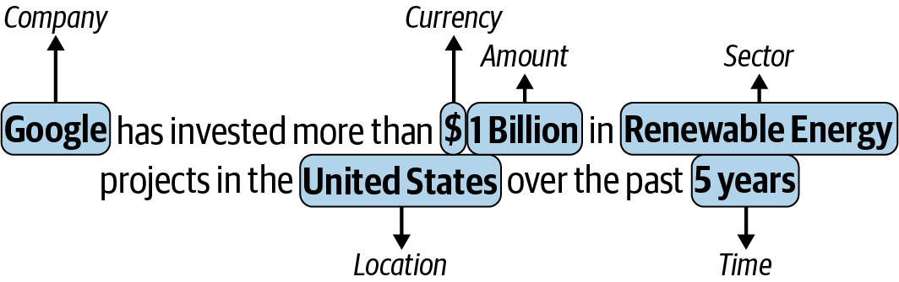
이해를 돕기 위해 실무적인 예시를 살펴보겠습니다. 널리 알려진 금융 데이터셋인 LSEG Loan Pricing Corporation DealScan은 신디케이트론 시장에 대한 포괄적인 커버리지를 제공합니다. 신디케이트론(신디케이트 대출/신디케이트 퍼실리티로도 알려짐)은 대주단(신디케이트)이 기업이나 조직에 대규모 대출을 공동으로 제공하는 특수한 유형의 대출입니다. 신디케이트 내에서 서로 다른 참여 기관들은 다양한 역할(예: 참여 은행, 주선 기관, 문서 관리 기관, 담보 관리 대리인 등)을 수행합니다. LSEG 및 유사한 데이터 제공업체는 여러 소스에서 신디케이트론에 대한 정보를 수집하며, 8-K와 같은 SEC 공시 서류가 주요 원천입니다.
팀에서 SEC 공시 서류 모음을 사용하여 신디케이트론 데이터셋을 생성하는 업무를 맡았다고 가정해 봅시다. 첫 번째 단계는 텍스트에서 데이터를 추출하고 신디케이트 퍼실리티의 특징을 나타내는 다양한 요소를 식별한 다음, 이 정보를 구조화된 형식으로 정리하는 것입니다. 호주 기업에 제공된 신디케이트 퍼실리티 계약에 관한 다음 SEC 공시 서류 예시를 살펴보겠습니다(아래 텍스트는 SEC 공시 서류에서 인용 및 강조 표시됨).
Exhibit 10.1
SYNDICATED FACILITY AGREEMENT
dated as of September 18, 2012
among
THE MAC SERVICES GROUP PTY LIMITED ,
as Borrower,
THE LENDERS NAMED HEREIN,
J .P. MORGAN AUSTRALIA LIMITED ,
as Australian Agent and Security Trustee ,
JPMORGAN CHASE BANK, N.A. ,
as US Agent ,
JPMORGAN CHASE BANK, N.A.,
as Issuing Bank
and
JPMORGAN CHASE BANK, N.A.,
as Swing Line Lender
J.P. MORGAN SECURITIES LLC ,
as Lead Arranger and Sole Bookrunner
…
The Borrower has requested the Lenders to extend credit, in the form of Loans or Credits (as hereinafter defined), to the Borrower in an aggregate principal amount at any time outstanding not in excess of AUD$300,000,000 .
보시다시피 텍스트에는 차입자, 대주단 및 각자의 역할에 대한 세부사항뿐만 아니라 퍼실리티 유형, 금액, 통화에 대한 정보가 포함되어 있습니다. NER을 활용하면 이 정보를 추출하여 구조화된 데이터셋을 구축할 수 있습니다. 단순화를 위해 세 개의 테이블로 구성된 데이터셋을 설계해 보겠습니다. 하나는 퍼실리티 데이터를 저장하고, 다른 하나는 차입자 세부정보를, 세 번째는 대주단 정보를 저장합니다. 그림 4-2는 데이터셋의 개체-관계 모델(Entity Relationship Model, ERD) 이 어떻게 구성되는지 보여줍니다. facility 테이블에서 facility_id는 임의로 할당된 고유 식별자입니다. borrower 및 lender 테이블에서 facility_id는 외래 키(Foreign Key)로 존재하며, 이는 facility 테이블에 존재하는 퍼실리티에 대해서만 해당 테이블에 레코드가 존재함을 의미합니다.
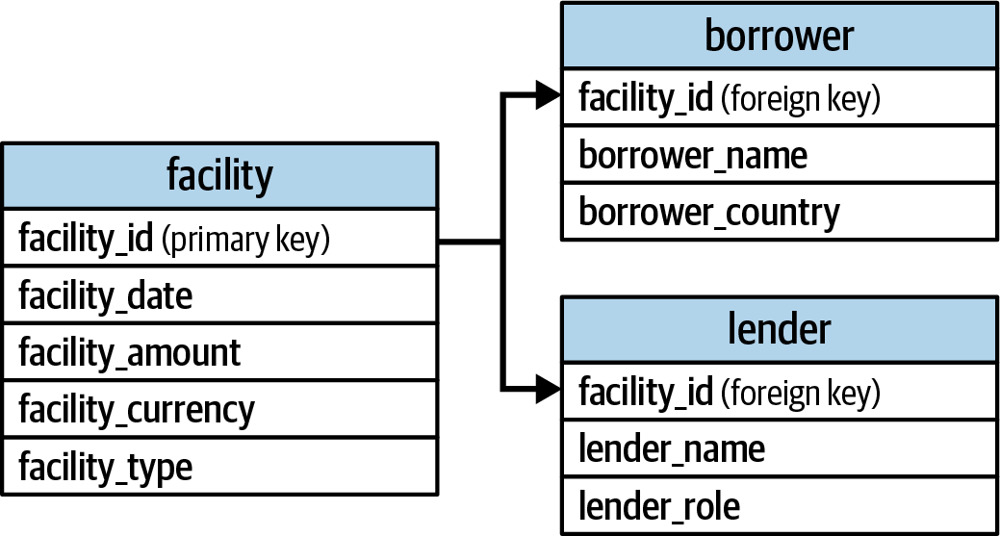
성공적인 NER 기반 엔티티 추출의 결과는 표 4-1, 4-2, 4-3에 나타난 데이터와 같습니다.
표 4-1. Facility 테이블
| facility_id | facility_date | facility_amount | facility_currency | facility_type |
|---|---|---|---|---|
| 89763 | 2012-09-18 | 300,000,000 | AUD | Loans or Credits |
표 4-2. Borrower 테이블
| facility_id | borrower_name | borrower_country |
|---|---|---|
| 89763 | The Mac Services Group PTY Limited | Australia |
표 4-3. Lender 테이블
| facility_id | lender | lender_role |
|---|---|---|
| 89763 | J.P. Morgan Australia Limited | Australian Agent and Security Trustee |
| 89763 | JPMorgan Chase Bank, N.A. | US Agent |
| 89763 | JPMorgan Chase Bank, N.A. | Issuing Bank |
| 89763 | JPMorgan Chase Bank, N.A. | Swing Line Lender |
| 89763 | J.P. Morgan Securities LLC | Lead Arranger |
| 89763 | J.P. Morgan Securities LLC | Bookrunner |
중요한 점은 NER 시스템이 텍스트 내에서 특정 엔티티의 출현을 식별할 수는 있지만, 일반적으로 이를 해당하는 실세계 객체와 직접 연결해주지는 않는다는 사실입니다. 예를 들어 다시 그림 4-1을 보면 Google은 COMPANY로 라벨링되었지만, 이 시점에서는 이것이 현실 세계의 어느 구체적인 기업을 가리키는지 아직 알 수 없습니다. 이 작업을 완수하기 위해 개체명 모호성 해소(NED, Named Entity Disambiguation) 또는 엔티티 링킹(Entity Linking)이라는 추가 기법이 흔히 사용됩니다.
많은 책에서 NED를 NER과 별개의 문제로 취급하여 별도의 절을 할애합니다. 그러나 금융 애플리케이션에서는 식별된 엔티티를 현실 세계의 대응 객체와 연결하는 것이 필수적입니다. 이러한 이유로 필자는 NED를 NER 프로세스의 추가 단계로 간주합니다. 그림 4-3은 인식된 엔티티(COMPANY)를 구체적인 실세계 대상(Google)에 연결하기 위해 NED가 NER과 어떻게 연계하여 작동하는지 보여줍니다.
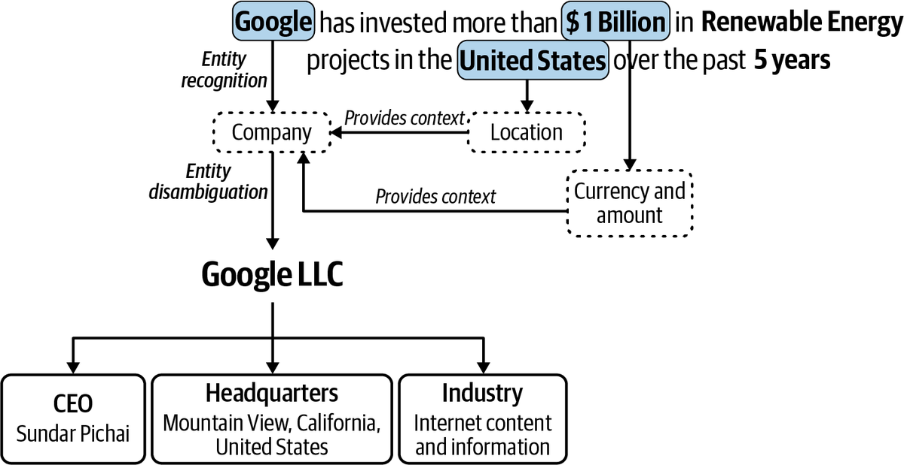
NED에서는 지식 베이스(Knowledge Base) 를 사용하여 텍스트에서 식별된 엔티티를 고유한 실세계 대응 객체에 매핑합니다. 지식 베이스는 방대한 주제에 관한 정보를 담고 있는 중앙 저장소입니다. 범용적이거나 전문적일 수 있으며, 공개되어 있거나 비공개일 수 있습니다. 예를 들어 위키피디아는 널리 알려진 공개 범용 지식 베이스이며, 인베스토피아(Investopedia)는 유사한 역할을 하지만 금융에 구체적으로 초점을 맞춥니다. 기타 주목할 만한 예로는 GeoNames, Wikidata, DBpedia, YAGO 등이 있습니다. 금융기관과 데이터 벤더는 자체 데이터를 사용하여 특정 요구에 맞춘 독점적인 지식 베이스를 구축할 수도 있습니다.
개체명 인식은 어떻게 작동하는가?
이 절에서는 NER 시스템을 구축하는 데 수반되는 다양한 단계를 살펴봅니다. 그림 4-4에 나와 있듯이, 첫 번째 단계는 데이터가 구조화되고 정제 및 조화되어 분석 준비를 마치도록 보장하는 데이터 전처리(Data preprocessing)입니다. 두 번째 단계인 엔티티 추출(Entity extraction)은 모든 후보 엔티티의 위치를 감지하고 식별하는 작업입니다. 세 번째 단계에서는 이러한 후보 엔티티를 각각의 엔티티 유형으로 분류합니다. 이어서 평가(Evaluation) 단계에서 추출된 데이터의 품질 및 완전성과 모델의 성능을 측정합니다. 마지막으로 모호성 해소(Disambiguation) 프로세스를 통해 인식된 엔티티를 고유한 실세계 대응 객체에 선택적으로 연결할 수 있습니다.
NER은 반복적인 프로세스라는 점에 유의해야 합니다. 모델이 평가되면 모델러는 데이터 전처리, 모델 선택 또는 훈련 기법의 개선이 필요한지 여부를 판단하여 NER 시스템의 성능을 향상시킬 수 있습니다.
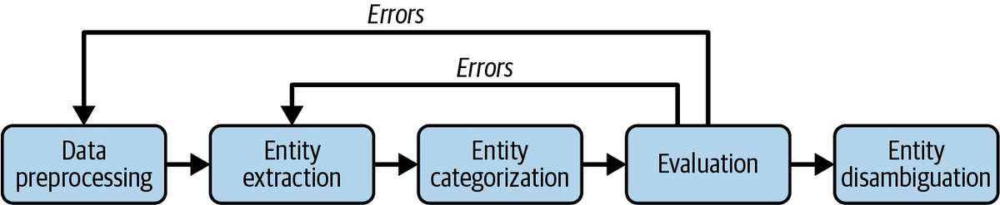
데이터 전처리
방법론적으로 볼 때 NER은 자연어 처리(NLP) 분야의 하위 작업입니다. 대부분의 NLP 작업과 마찬가지로 NER도 깨끗하고 고품질인 데이터에 적용될 때 우수한 결과를 얻을 수 있습니다. NER에는 다음과 같은 다양한 NLP 특화 데이터 준비 기법이 사용될 수 있습니다.
토큰화(Tokenization): 토큰화는 텍스트를 토큰(Tokens) 이라고 부르는 더 작은 단위로 분할하는 프로세스입니다. 단어 토큰화는 텍스트를 개별 단어로 분리합니다. 예를 들어 “Google invests in Renewable Energy”는 [“Google”, “invests”, “in”, “Renewable”, “Energy”]가 됩니다. 문장 토큰화는 텍스트를 개별 문장 단위로 분할합니다. 예를 들어 “Google invests in Renewable Energy”는 [“Google”, “invests in”, “Renewable Energy”]로 변환될 수 있습니다.
불용어 제거(Stop word removal): 불용어는 모델링이나 성능에 거의 가치가 없는 흔하고 빈번하게 사용되는 단어입니다. 예를 들어 영어 단어 “is”, “the”, “and”는 불용어로 자주 분류됩니다. NER을 포함한 대부분의 NLP 작업에서 불용어는 필터링되어 제거됩니다.
정규화/표제어 추출(Canonicalization): NLP에서 단어의 굴절 형태나 활용형은 큰 의미를 갖지 않는 경우가 많습니다. 예를 들어 “invest, investing, invests, invested”라는 단어들은 모두 동일한 유형의 행동을 전달하므로 기본 형태인 “invest”에 매핑될 수 있습니다. 텍스트 내의 단어를 어근/기본형으로 매핑하는 프로세스를 표준화/기본형화(Canonicalization) 라고 합니다. 주로 두 가지 유형의 표준화 기법이 사용됩니다: 어간 추출(Stemming) 과 표제어 추출(Lemmatization) 입니다. 어간 추출은 단어에서 접사를 제거하여 어간을 생성하는 휴리스틱 기법입니다. 이 방법은 빠르고 효율적이지만 단어를 너무 많이 줄이거나(Over-stemming) 충분히 줄이지 못해(Under-stemming) 부정확한 결과를 낳을 수 있습니다. 어간 추출의 한계를 해결하기 위해 표제어 추출 기법이 자주 사용됩니다. 어휘 및 형태소 분석을 활용하여 표제어 추출기(Lemmatizer)는 의도된 의미를 기반으로 단어의 사전적 기본형(표제어, Lemma)을 추론합니다. 다음과 같은 일반적인 정규화 기법들이 있습니다.
소문자 변환(Lowercase conversion): 모든 단어를 소문자로 변환합니다.
동의어 대체(Synonym replacement): 단어를 해당 동의어 중 하나로 대체하는 기법입니다.
축약형 제거(Contractions removal): 축약형은 줄임말과 다른 단어의 조합으로 작성된 단어입니다. 축약형 제거는 축약된 단어를 전체 길이 형태로 변환하는 것으로, 예를 들어 “she’d invest in stocks”는 “she would invest in stocks”로 변환됩니다.
날짜 및 시간 형식 표준화(정규화): 예를 들어 날짜는 YYYYMMDD 형식으로 변환되고, 타임스탬프는 YYYYMMDDHH24MMSS 형식으로 변환됩니다.
참고
NER은 사소한 변경만으로도 결과에 중대한 영향을 미칠 수 있을 만큼 데이터 전처리에 매우 민감합니다. 각 전처리 단계의 영향을 신중하게 평가하는 것이 필수적입니다. 예를 들어 모든 단어를 대문자로 변환하면 국가명이 대문자로 시작한다는 규칙처럼 엔티티의 고유 특성을 규정하는 규칙이 깨질 수 있습니다.
엔티티 추출
엔티티 추출 단계에서는 정제된 텍스트 코퍼스에 알고리즘을 적용하여 후보 엔티티를 감지하고 위치를 파악합니다. 이 단계에서 NER 시스템 설계자는 텍스트에서 찾고자 하는 엔티티 유형이 무엇인지 알고 있어야 합니다. 추출 프로세스는 엔티티를 나타내는 유의미한 모든 텍스트 세그먼트를 찾는 세분화/세그멘테이션(Segmentation) 문제입니다. 이 경우 “Bank of England”라는 이름은 “England”라는 단어 자체도 유의미한 엔티티가 될 수 있음에도 불구하고 단일 엔티티로 식별되어야 합니다.
이 단계의 목적이 엔티티에 대한 참조 위치를 찾는 것이므로, 올바르면서도 불완전한 결과가 생성될 수 있습니다. 예를 들어 “Banking giant JP Morgan Chase”에서처럼 불필요한 토큰이 포함될 수 있습니다. 다른 경우에는 “JP Morgan Chase Inc.”에서 “Inc.”가 누락되거나 “Michael Bloomberg”에서 “Michael”이 누락되는 것처럼 일부 토큰이 누락될 수도 있습니다.
개체 분류
텍스트에서 모든 후보 개체가 추출되면 다음 단계는 유효한 각 개체를 해당하는 개체 유형에 정확하게 매핑하는 것입니다. 예를 들어 “Bank of America”는 회사(COMP)로, “United States”는 국가/장소(LOC)로, “Bill Gates”는 인물(PER)로 분류되어야 하며, 그 외의 다른 토큰은 관련 없는 개체임을 나타내기 위해 “O”로 라벨링되어야 합니다.
이 단계의 주요 과제는 언어의 모호성입니다. 예를 들어 bear와 bull이라는 단어는 일반적으로 두 종류의 동물을 가리키는 데 자주 사용됩니다. 그러나 금융 시장에서 bull이라는 단어는 주로 시장의 상승세를 나타내는 데 사용되며, bear는 하락세를 설명합니다.
또 다른 예로 서로 다른 개체를 가리킬 수 있는 유사한 이름이 있습니다. 예를 들어 “JP Morgan”은 잘 알려진 금융 기관인 JP모건 체이스(JPMorgan Chase)를 의미할 수도 있지만, J.P. 모건 은행을 설립한 미국의 금융가 존 피어폰트 모건(John Pierpont Morgan)을 가리킬 수도 있습니다.
이 단계까지의 NER 프로세스를 설명하기 위해 다음과 같은 텍스트가 주어졌다고 가정해 봅시다.
미국 연방준비제도(Fed)가 금리 인상 사이클의 종료를 알리고 내년 금리 인하 가능성을 시사한 후 수요일 금 가격이 1% 이상 상승했다.1
이 텍스트를 처리하면 표 4-4에 나와 있는 것과 같은 구조화된 분류 결과를 도출할 수 있습니다. 이 예시에서는 상품(CMDTY), 변수(VAR), 국적/지역(NAL), 기관/조직(ORG), 기타(O)라는 5가지 유형의 개체가 추출되었습니다.
표 4-4. 뉴스 제목의 개체 추출 및 분류 결과
| entity_type | text |
|---|---|
| CMDTY | Gold |
| VAR | Prices |
| NAL | U.S. |
| ORG | Federal Reserve |
| O | rose more than 1% on Wednesday after the |
| O | flagged an end to its interest rate hike cycle and indicated possible rate cuts next year. |
개체 명확화 (Entity Disambiguation)
수많은 금융 애플리케이션에서 매우 중요하듯 단순한 개체 추출을 넘어선 확장을 목표로 한다면, 식별되고 검증된 개체의 중의성을 해소(명확화)하는 단계로 나아가야 합니다. 여기에는 데이터에서 올바르게 인식된 각 개체를 유일한 실제 세계의 대응 대상과 연결하는 작업이 포함됩니다.
개체 명확화 단계에는 몇 가지 과제가 따를 수 있습니다. 주된 문제 중 하나는 이름의 변형입니다. 예를 들어 한 기업이 Bank of America, Bank of America Corporation, BoA, BofA 등 다양한 방식으로 언급될 수 있습니다. 개체의 모호성 역시 또 다른 과제입니다. 예를 들어 Bloomberg는 기업인 Bloomberg L.P.를 가리킬 수도 있고, 그 설립자인 마이클 블룸버그(Michael Bloomberg)를 의미할 수도 있습니다. 마지막으로 개체를 명확화하는 데 사용되는 지식 베이스가 시장에 새롭게 등장하는 특정 개체나 신규 개체에 대한 최신 정보를 항상 포함하고 있지는 않을 수 있습니다.
표 4-4에 제시된 예시를 바탕으로 개체 명확화를 추가하면 표 4-5와 같이 현실 세계의 참조 대상이 도출됩니다. 이 예시는 이해를 돕기 위한 것이며, 실제로는 더욱 정밀한 참조 기준이 사용될 수 있습니다. 예를 들어 현물 가격과 선물 가격은 CME와 같은 특정 원자재 거래소에 연결될 수 있습니다.
표 4-5. 뉴스 제목의 개체 추출, 분류 및 명확화 결과
| entity_type | text | reference |
|---|---|---|
| CMDTY | Gold | Chemical element with symbol AU |
| VAR | Prices | Spot price and future price on commodity exchanges |
| NAL | U.S. | Country in North America |
| ORG | Federal Reserve | Central Bank of the United States of America |
| O | rose more than 1% on Wednesday after the | |
| O | flagged an end to its interest rate hike cycle and indicated possible rate cuts next year. |
평가 (Evaluation)
정확성과 효율성 측면에서 NER 시스템의 성능을 평가하는 것은 NER의 마지막 단계입니다. 정확한 NER 시스템은 모든 유효한 개체를 감지하고 인식해야 하며, 이를 적절한 개체 유형에 올바르게 할당하고, 선택적으로 실제 세계의 대응 대상과 연결할 수 있어야 합니다. 분석 성능 외에도 실행 시간, 메모리 소비량, 스토리지 요구량, CPU 사용률, 수백만 건의 레코드를 가진 대규모 금융 애플리케이션을 처리할 수 있는 확장성 등을 바탕으로 NER 시스템의 연산 효율성을 평가해야 합니다.
NER 시스템의 성능 지표를 계산하려면 다음과 같은 4가지 결과가 필요합니다.
거짓 양성 (FP, 위양성): NER 시스템에 의해 개체로 잘못 식별된 사례
거짓 음성 (FN, 위음성): 정답(ground truth)상 실제 개체임에도 불구하고 NER 시스템이 개체로 분류하지 못한 사례
참 양성 (TP, 진양성): NER 시스템에 의해 개체로 올바르게 식별된 사례
참 음성 (TN, 진음성): 정답과 일치하게 개체가 아닌 것으로 올바르게 식별된 사례
이 4가지 값은 그림 4-5에 나와 있는 것처럼 흔히 혼동 행렬(confusion matrix, 오차 행렬)로 알려진 특수한 테이블 형식으로 표현됩니다.
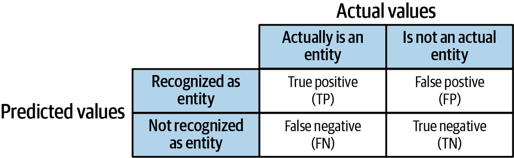
참고
주어진 NER 모델의 혼동 행렬을 계산하려면 실제 정답 값을 담고 있는 정답(ground truth) 데이터셋이 있어야 합니다. 정답 데이터는 주로 모델 학습에 사용되며, 예측값을 실제 값과 비교하는 기준이 됩니다. 이는 특히 대규모 데이터셋을 다룰 때 NER에서 매우 큰 과제가 됩니다. 금융 데이터 엔지니어로서 여러분은 NER 시스템의 정답 데이터로 사용될 라벨링된 데이터베이스를 구축하고 유지 관리하는 데 핵심적인 역할을 맡게 됩니다.
혼동 행렬을 사용하여 다음과 같은 성능 평가 지표를 계산할 수 있습니다.
정확도 (Accuracy): 정확도는 NER 모델의 전반적인 성능을 측정하며, “수행된 모든 분류 중 맞춘 비율이 얼마인가?”라는 질문에 답합니다. NER에서는 모델이 개체인 것과 개체가 아닌 것을 구별하는 능력을 측정하는 지표로 사용될 수 있습니다. 정확도는 거짓 양성과 거짓 음성의 비용이 거의 비슷할 때 적절한 평가 지표로 작동합니다. 이는 다음과 같은 공식으로 표현됩니다.
A c c u r a c y = TP+TN TP+TN+FP+FN
정밀도 (Precision): 정밀도는 모델이 양성으로 예측한 전체 수 중 참 양성의 비율을 측정합니다. 즉, “참 양성으로 분류된 모든 사례 중 실제로 맞춘 비율이 얼마인가?”라는 질문에 답합니다. NER에서는 실제로 개체인 전체 토큰 중 올바르게 개체로 인식된 토큰(단어 또는 문장)의 비율로 해석될 수 있습니다. 정밀도 값이 낮다는 것은 모델이 거짓 양성을 피하는 능력이 떨어진다는 것을 의미합니다. 정밀도는 거짓 양성의 비용이 매우 높을 때 유용한 지표입니다. 이는 다음과 같은 공식으로 표현됩니다.
P r e c i s i o n = TP FP+TP
재현율 (Recall): 재현율은 “참 양성으로 분류되어야 하는 모든 사례 중 올바르게 참 양성으로 분류된 비율이 얼마인가?”에 답함으로써 모델의 참 양성 비율(TPR)을 측정합니다. 재현율이 낮다는 것은 모델이 거짓 음성을 잘 피하지 못함을 의미합니다. 재현율은 거짓 음성의 비용이 높을 때 사용하기 좋은 지표입니다. 이는 다음과 같은 공식으로 표현됩니다.
R e c a l l = TP TP+FN
F1 점수 (F1 score): F1 점수는 정밀도와 재현율의 조화 평균입니다. 데이터 내 클래스 분포가 불균형하거나 거짓 양성과 거짓 음성 모두의 비용이 높을 때 널리 사용됩니다. 금융 NER에서는 데이터 토큰의 대다수가 개체가 아니며 오류 발생 시의 비용이 크기 때문에 F1 점수가 주로 활용됩니다. 이는 다음과 같은 공식으로 표현됩니다.
F 1 s c o r e = 2*(Recall*Precision) Recall+Precision
혼동 행렬로부터 추가적인 평가 지표들을 도출할 수도 있습니다.2 NER에 관한 많은 연구 논문에서는 F1 점수를 기본 지표로 사용합니다. 그러나 다양한 각도에서 NER 성능을 폭넓게 파악하려면 이 4가지 지표를 모두 계산해 보는 것을 강력히 권장합니다. 예를 들어 정밀도가 낮다면 모델에 토큰을 너무 쉽게 개체로 분류해 버리는 규칙이 포함되어 있음을 알 수 있습니다. 마찬가지로 재현율이 낮다면 모델이 개체를 거의 식별해 내지 못하고 있다는 뜻이며, 규칙이 지나치게 엄격할 가능성이 있습니다.
이제 NER 시스템을 개발하는 데 필요한 단계들을 이해했으므로, NER 시스템을 구축하고 운영하는 데 사용할 수 있는 주요 모델링 접근법을 살펴보겠습니다.
개체명 인식(NER) 접근법
학술 문헌과 시장 실무자들에 의해 수많은 NER 방법과 기법이 제안되었습니다. 이러한 솔루션은 특정 도메인에 맞게 맞춤화되거나 파인튜닝되는 경우가 많습니다. 이 책에서는 어휘 기반, 규칙 기반, 특성 공학 기반 머신러닝, 딥러닝, 거대 언어 모델, 위키피디아 연계(Wikification), 지식 그래프라는 7가지 모델링 접근법으로 분류하여 설명합니다.
한 가지 기억할 점은 이러한 접근법들이 반드시 상호 배타적인 것은 아니라는 점입니다. 많은 경우, 특히 복잡한 NER 시스템을 구축할 때 개발자들은 여러 기법을 결합하여 활용합니다. 다음 절들에서 이 7가지 접근 방식을 자세히 살펴보겠습니다.
어휘/사전 기반 접근법
이 접근법은 먼저 외부 소스를 사용하여 어휘(lexicon) 또는 어휘 사전을 구축한 다음, 텍스트 토큰을 사전에 있는 개체 이름과 매칭하는 방식으로 작동합니다. 기준 데이터셋이나 개체 데이터셋과 같은 금융 데이터셋이 어휘집 역할을 할 수 있습니다. 어휘집은 유연하며 모든 도메인에 맞게 조정될 수 있습니다. 따라서 이 접근법은 개체의 유니버스가 작거나 일정하거나 느리게 진화하는 도메인 특화 작업에 좋은 선택이 될 수 있습니다. 섹터명, 금융 상품 분류, 회사명 등이 그 예입니다. 또 다른 예로 시간이 지나도 크게 변하지 않는 표준 원칙과 공식 언어에 의존하는 회계 또는 법률 텍스트를 들 수 있습니다.
어휘집은 NER에서 이중 목적을 수행합니다. 뒤에서 설명하겠지만 주된 추출 방법으로 작동할 수도 있고 다른 기법을 보완할 수도 있습니다. 나아가 어휘집은 개체 명확화에도 사용될 수 있습니다. 예를 들어 회사명을 해당 식별자에 매핑하는 어휘집은 인식과 명확화 작업을 모두 처리할 수 있습니다.
어휘집의 주요 장점은 처리 속도와 단순성입니다. 어휘집이 갖춰져 있다면 추출 프로세스는 단순한 사전 조회(lookup)로 볼 수 있습니다. 그러나 어휘집은 사전에 없는 새로운 개체(예: 새로운 유형의 금융 상품)를 인식할 수 없다는 점에 유의해야 합니다. 또한 어휘집은 데이터 전처리 품질과 오류 존재 여부에 매우 민감합니다. 예외나 불규칙한 데이터 유형을 처리할 수 없기 때문에 어휘집은 고품질 데이터에서 더 우수한 성능을 보장하는 경향이 있습니다. 마지막으로 문맥을 고려하지 않으면 어휘집이 거짓 양성을 생성할 수 있습니다. 예를 들어 주식 티커 어휘집에 애플(Apple, Inc.)을 나타내는 AAPL 심볼이 포함되어 있을 수 있습니다. 그러나 약어 AAPL은 “미국전문토지관리인협회(American Association of Professional Landmen)”나 “미국정신의학 및 법률학회(American Academy of Psychiatry and the Law)”를 가리킬 수도 있습니다.
규칙 기반 접근법
규칙 기반 접근법은 텍스트 내에서 개체의 존재를 인식하기 위해 수동 또는 자동으로 생성된 일련의 규칙을 사용합니다. 예를 들면 다음과 같습니다.
- 규칙 1: 통화 기호 뒤에 오는 숫자는 금전적 가치다(예: $200).
- 규칙 2: Mrs. 또는 Mr. 뒤에 오는 단어는 인물 이름이다.
- 규칙 3: 회사 접미사 앞의 단어는 회사명이다(예: Inc., Ltd., Incorporated, Corporation 등).
- 규칙 4: 영숫자 문자열이 식별자 길이와 일치하고 체크 디지트 방식으로 유효성이 검증된다면 유가증권 식별자일 수 있다.
어휘 기반 접근법과 마찬가지로 규칙 기반 방법은 도메인에 종속되는 경향이 있어 다른 도메인으로의 전이 능력이 떨어집니다. 또한 데이터 전처리 문제, 예외 상황, 텍스트의 모호성에 매우 민감하여 규칙 집합이 지나치게 방대해질 수 있습니다. 복잡한 규칙 기반 접근법은 유지 관리가 어렵고 이해하기 힘들며 실행 속도가 느릴 수 있습니다. 따라서 언어가 단순하거나 회계 보고서, 연례 보고서, SEC 공시 서류와 같이 공식적인 표준을 따르는 경우에 권장됩니다.
특성 공학 머신러닝 접근법
어휘 기반 및 규칙 기반 방법은 정확한 NER을 위해 복잡한 데이터 패턴을 식별해야 할 때 종종 한계에 부딪힙니다. 이러한 경우 머신러닝 모델링이 강력한 대안이 됩니다. 대표적인 방법 중 하나는 텍스트 내의 단어를 예측하고 분류하도록 다중 클래스 분류(multiclass classification) 모델을 훈련하는 특성 공학(feature engineering) 머신러닝입니다. 지도학습(supervised learning) 방식이므로 학습을 위한 라벨링된 데이터가 필요합니다.
지도학습 머신러닝을 적용하기 위해 모델 설계자는 각 토큰에 대해 일련의 특성(feature)을 선택하고 대부분 직접 엔지니어링해야 합니다.3 몇 가지 예를 들면 다음과 같습니다.
- 품사 태깅 (명사, 동사, 조동사 등)
- 단어 유형 (모두 대문자, 모두 숫자, 영숫자 혼합 등)
- 경칭 여부 (Mr., Ms., Miss 등)
- 어휘집 또는 지명 사전(gazetteer)에서의 단어 매칭 (예: 샌프란시스코: 캘리포니아의 도시)
- 이전 단어의 경칭 여부
- 해당 단어의 통화 기호 여부 (¥, $ 등)
- 이전 단어의 통화 기호 여부
- 해당 단어가 문단의 시작 또는 끝에 위치하는지 여부
- 단어의 주변 문맥을 포착하는 문맥 집계 특성 (예: 이전 및 이후 n개 단어)4
- 다른 ML 분류기의 예측값5
관련 특성이 신중하게 엔지니어링되면 다양한 알고리즘을 적용할 수 있습니다. 가장 인기 있는 선택지로는 로지스틱 회귀, 랜덤 포레스트(Random Forests), 조건부 무작위장(CRF, Conditional Random Fields), 은닉 마르코프 모델(HMM), 서포트 벡터 머신(SVM), 최대 엔트로피 모델 등이 있습니다.
특성 기반 모델은 학습 속도가 빠르고 특성 해석이 용이하다는 등 여러 장점을 제공합니다. 그러나 금융 도메인 전문 지식의 필요성, 특성 엔지니어링의 복잡성, 비선형 패턴 모델링의 어려움, 긴 문장에 대한 복잡한 문맥 파악의 한계 등 몇 가지 문제점이 발생할 수 있습니다. 바로 이 지점에서 다음에 소개할 딥러닝과 같은 고급 머신러닝 기술이 등장합니다.
딥러닝 접근법
최근 몇 년 동안 딥러닝(DL)은 NER 분야의 최첨단(SOTA) 접근법으로 자리 잡았습니다.6 DL은 여러 계층(layer)과 활성화 함수 세트로 구성된 인공 신경망을 통해 데이터의 계층적 표현을 학습하는 머신러닝의 대표적인 하위 분야입니다. 신경망은 각 노드 레이어가 이전 레이어에서 생성된 단순한 함수의 비선형 함수 합성을 수행하는 계산 그래프로 생각할 수 있습니다. 흥미롭게도 이러한 반복적인 함수 합성 프로세스는 상당한 모델링 성능을 가지며, 이는 복잡한 문제를 해결하는 데 딥러닝이 성공을 거두는 데 크게 기여했습니다.
NER에 딥러닝을 적용하면 몇 가지 장점이 있습니다. 첫째, 심층 신경망이 특성을 자동으로 학습하고 추출할 수 있기 때문에 모델 설계자가 특성 엔지니어링과 관련된 복잡성을 걱정할 필요가 없습니다. 둘째, 딥러닝은 데이터 내의 수많은 복잡하고 비선형적인 패턴을 모델링할 수 있습니다. 셋째, 신경망은 텍스트 내의 장거리 상관관계와 문맥 의존성을 포착할 수 있습니다. 넷째, 딥러닝은 네트워크 명세(깊이, 너비, 레이어, 하이퍼파라미터 등)를 통해 높은 유연성을 제공하므로 대규모 데이터셋에서 수많은 도메인 특화 문제를 모델링할 수 있습니다.
딥러닝 분야에는 매우 다양한 네트워크 구조가 존재합니다. NER 관련 작업에서 괄목할 만한 성공을 거둔 구조로는 순환 신경망(RNN)과 그 변형인 LSTM(Long Short-Term Memory), 양방향 LSTM(BiLSTM), 그리고 가장 최근에는 트랜스포머(Transformer)와 같은 어텐션 메커니즘 기반 모델이 있습니다.7
딥러닝은 강력하고 진보된 기법입니다. 그러나 NER 작업에서 무조건 기본 옵션으로 사용하는 것은 권장하지 않습니다. 딥러닝 모델은 해석하기 어렵고 특수 하드웨어(예: GPU)와 긴 훈련 시간이 필요할 수 있습니다. 먼저 간단한 접근법부터 시도해 보십시오. 그것이 작동하지 않을 때 더 복잡한 기법을 적용해도 늦지 않습니다.
텍스트 관련 작업에서 딥러닝과 같은 복잡한 모델이 눈부신 성능을 보이면서, 다음 절에서 살펴볼 거대 언어 모델(LLM)과 같은 훨씬 더 정교한 모델로 발전이 이어졌습니다.
거대 언어 모델 (LLM)
거대 언어 모델(LLM, Large Language Model)은 인간과 유사한 텍스트를 학습하고 생성하도록 설계된 고급 생성형 인공지능 모델입니다. 대부분의 LLM은 획기적인 논문인 “Attention Is All You Need”에서 제안된 트랜스포머(Transformer)라는 딥러닝 아키텍처를 활용합니다. LLM을 인간의 선호도에 맞추기 위해 인간 피드백 기반 강화학습(RLHF)과 같은 기법이 자주 사용됩니다. LLM은 전이 학습, 능동 학습, 앙상블 학습, 임베딩 등 다른 기술들도 활용할 수 있습니다.
LLM은 방대한 양의 텍스트 데이터로 학습되며 수백만 개에서 수천억 개에 이르는 파라미터로 구성되어 규모가 매우 큽니다. 범용 LLM은 흔히 파운데이션 모델(foundation models)로 알려져 있으며, 수많은 작업에 걸쳐 다재다능함과 광범위한 적용 가능성을 보여줍니다. 대표적인 예로 OpenAI의 GPT-3 및 GPT-4와 같은 GPT(Generative Pre-trained Transformer) 시리즈, 구글의 BERT(Bidirectional Encoder Representations from Transformers), 메타의 라마(Llama), 미스트랄(Mistral), 클로드(Claude) 등이 있습니다. LLM은 텍스트 생성, 요약, 개체 인식, 번역, 질의응답 등 광범위한 범용 자연어 처리 작업을 수행할 수 있습니다.
LLM은 특정 도메인에 맞게 파인튜닝(미세조정)될 수도 있습니다. 파인튜닝은 사전 학습된 LLM을 도메인 특화 데이터셋으로 재학습하여, 대상 도메인의 용어, 어휘, 구문, 문맥에 맞게 지식과 언어 이해력을 적응시키는 과정입니다. 예를 들어 FinBERT는 금융 도메인에 특화되어 파인튜닝된 BERT 모델의 도메인 특화 변형입니다. 뉴스 기사, 실적 보고서, 재무제표와 같은 방대한 금융 텍스트로 학습되어 금융 언어와 전문 용어를 효과적으로 이해하고 처리합니다. FinBERT는 감성 분석, 개체명 인식, 텍스트 분류 등 금융 도메인의 다양한 작업에 활용될 수 있습니다.
LLM은 금융 NER에 매우 강력한 기법이 될 수 있습니다. 복잡하고 도메인 특화된 언어를 이해하고 처리할 수 있어 금융 상품, 회계 및 규제 용어뿐만 아니라 금융 시장의 문맥 속에서 회사명과 인물명을 인식할 수 있기 때문입니다. 예를 들어 LLM은 주변 텍스트의 문맥 단서를 활용하여 나스닥에 상장된 기술 기업인 “Apple Inc.”와 과일인 “apple”을 구별할 수 있습니다. 또한 “S&P 100”, “NASDAQ Composite”, “Dow Jones Industrial Average”와 같은 금융 용어를 단순한 무작위 문구가 아니라 지수로 식별할 수 있습니다. 마찬가지로 구조가 유사함에도 불구하고 “콜옵션(call option)”과 “풋옵션(put option)”이라는 용어가 특정 유형의 금융 파생상품을 가리킨다는 점을 이해하고 구별할 수 있습니다.
결정적으로 LLM이 많은 금융 언어 처리 작업에서 뛰어난 성능을 보일 수 있지만, 전문화되고 지속적으로 진화하는 금융 용어 앞에서는 여전히 문제에 직면할 수 있습니다. 예를 들어 “신용부도스왑(CDS)”, “부채담보부증권(CDO)”, “주택저당증권(MBS)”과 같은 금융 용어는 금융 상품과 그 맥락에 대한 깊은 이해를 필요로 합니다. 마찬가지로 “채권(bonds)”이나 “주식/자기자본(equity)”과 같은 용어는 일상적인 의미와 금융에서의 의미가 완전히 다릅니다. 또한 “비트코인”, “블록체인”, “가상자산(암호화폐)”, “디파이(DeFi, 탈중앙화 금융)”와 같은 용어는 비교적 최근에 등장했기 때문에 모델이 최신 상태를 유지하려면 지속적인 업데이트가 필요합니다.
검색 증강 생성 (RAG)
검색 증강 생성(RAG, Retrieval-Augmented Generation)은 특히 금융과 같은 전문 도메인에서 언어 모델의 사실적 근거성(factual grounding), 문맥 적합성, 응답 정확성을 향상시키기 위해 사용되는 고급 기법입니다. RAG는 데이터베이스나 문서와 같은 외부 소스에서 관련 정보를 검색(retrieval)하고, 이 데이터를 언어 모델의 입력 프롬프트에 통합함으로써 추가적인 문맥을 제공하여 더욱 정확하고 문맥에 맞는 응답을 생성(generation)하도록 작동합니다.
금융 NER과 같은 금융 특화 작업에서 RAG는 개체의 중의성을 해소하고, 빠르게 변화하는 최신 정보를 유지하며, 금융 문서와 데이터베이스의 도메인 특화 지식을 통합함으로써 정확도를 높여줍니다. 이러한 역량 덕분에 RAG는 금융 개체를 식별하고 복잡한 전문 용어를 처리하는 데 특히 효과적입니다. 결정적으로 RAG의 성공 여부는 신뢰할 수 있는 외부 데이터 소스의 가용성에 크게 좌우되며, 이는 데이터 엔지니어링에 기반을 두고 있음을 보여줍니다.
LLM의 또 다른 주요 과제는 LLM이 무관하거나 사실과 다르거나 일관되지 않은 콘텐츠를 생성할 때 발생하는 환각(hallucination) 현상입니다. 특히 규제 준수와 의사결정의 신뢰성이 중요한 금융 분야에서는 설명 가능성(해석 가능성)과 투명성이 추가적인 과제로 작용합니다.
위키피디아 연계 (Wikification)
위키피디아 연계(Wikification)는 인식된 명명된 개체를 해당하는 실제 위키피디아 페이지에 연결하는 개체 명확화 기법입니다. 그림 4-6은 예시를 통해 이 기법을 보여줍니다. 첫 번째 단계(개체 인식)에서는 두 개의 개체(시애틀과 아마존)가 식별됩니다. 다음 단계에서는 식별된 개체가 고유하게 일치하는 위키피디아 페이지에 연결됩니다.
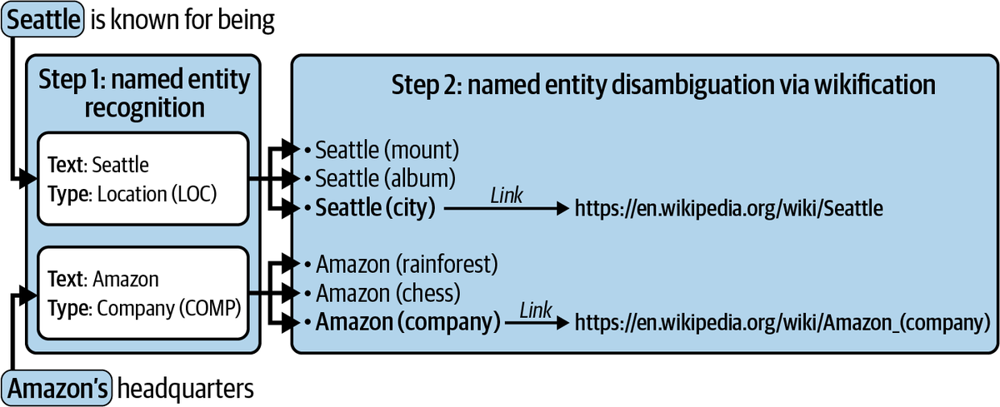
여러 가지 위키피디아 연계 기법이 제안되었으며, 대부분은 유사도 지표를 사용하여 인식된 개체와 가장 유사한 위키피디아 페이지를 결정합니다. 대표적인 구현 중 하나는 실비우 쿠체르잔(Silviu Cucerzan)의 획기적인 연구에서 처음 제시되었습니다. 쿠체르잔은 다음과 같은 요소들을 통합한 지식 베이스를 제안했습니다.
기사 개체/개념: 대부분의 위키피디아 기사에는 연계된 개체/개념이 있습니다.
개체 클래스: 인물, 위치, 조직, 기타.
개체 표층형(Surface forms): 텍스트에서 개체를 참조하는 데 사용되는 용어.
문맥(Contexts): 개체와 함께 등장하거나 개체를 설명하는 용어.
태그: 개체가 속한 주제.
예를 들어 버클리(Berkeley)라는 용어는 장소, 인물, 학교, 호텔을 포함하여 실제 세계의 수많은 개체를 가리킬 수 있습니다. 캘리포니아 대학교 버클리(UC 버클리)를 식별하고자 한다고 가정해 봅시다. 이 경우 개체 유형은 학교 또는 대학교이고, 문맥은 캘리포니아, 주립대 또는 연구중심 대학교가 될 수 있으며, 태그에는 교육, 연구, 과학 등이 포함될 수 있고, 개체 표층형은 단순히 Berkeley가 될 수 있습니다.
개체 명확화는 먼저 표층형을 식별하는 것으로 시작됩니다. 그런 다음 문맥과 태그를 인코딩하는 두 가지 벡터 표현을 구성합니다. 하나는 문서에 나타나는 위키피디아 문맥을 위한 것이고, 다른 하나는 위키피디아 개체를 위한 것입니다. 마지막으로 문서 벡터와 개체 벡터 간의 유사도를 극대화하는 프로세스를 통해 위키피디아 페이지로의 할당이 이루어집니다.
지식 그래프
지식 그래프는 인터넷 기반 정보 검색의 필수 기술로 자리 잡았으며 개체 명확화에 널리 적용되어 왔습니다. 아직 지식 그래프가 무엇인지에 대한 명확한 정의는 없지만, 기본적으로 여러 소스에서 다양한 유형의 사실, 지식, 콘텐츠를 수집하여 노드와 링크의 네트워크로 구성하고, 사용자가 검색어를 입력했을 때 더 많은 정보를 제공하는 데 사용됩니다. 다시 말해 지식 그래프는 라벨이 지정된 방향성 간선으로 서로 연결된 실제 세계의 개체(인물, 위치, 물질, 이벤트, 조직 등)의 네트워크로 생각할 수 있습니다. 그림 4-7은 델 테크놀로지스(Dell Technologies)라는 기업을 중심으로 한 지식 그래프의 단순한 예시를 보여줍니다. 이 그래프는 델 테크놀로지스와 CEO인 마이클 델, 공급업체인 인텔(Intel Corporation)과 같은 여러 관련 개체를 보여줍니다.
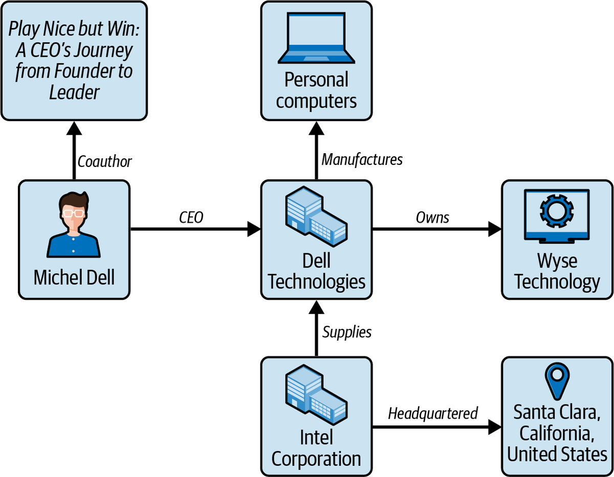
지식 그래프의 강력함은 광범위한 요소와 상호작용을 포괄할 수 있는 극도의 유연성에서 비롯됩니다. 이는 결과적으로 검색 결과를 개선하고 전통적인 접근법으로는 발견되지 않을 수 있는 숨겨진 데이터 연결을 드러낼 수 있습니다.
지식 그래프는 NER 시스템 내에서 개체 명확화를 위한 고급 접근법으로 제안되어 왔습니다. 잘 알려진 구현체로 AIDA(Accurate Online Disambiguation of Named Entities)가 있습니다. AIDA는 텍스트에서 발견된 개체의 언급(mentions)과 이러한 언급이 가리킬 수 있는 잠재적 개체를 노드로 나타내는 “언급-개체(mention-entity)” 그래프를 구성합니다. 이 노드들은 언급의 문맥과 각 개체의 문맥 간의 유사도를 기반으로 가중치가 부여된 링크로 연결됩니다. 이를 통해 시스템은 해당 언급이 어떤 개체를 가리킬 가능성이 가장 높은지 파악할 수 있습니다. 또한 AIDA는 가중 링크를 사용하여 개체들 자체를 서로 연결합니다. 이를 통해 AIDA는 그래프 내 개체들 간의 일관성(coherence)을 포착하여 명확화 프로세스를 지원합니다.
AIDA는 언급-개체 그래프를 탐색하기 위해 최대 밀도 하위 그래프 알고리즘(densest subgraph algorithm)을 활용합니다. 최대 밀도 하위 그래프 알고리즘은 더 큰 그래프 내에서 가장 조밀하게 연결된 하위 그래프를 식별하는 데 도움을 줍니다. AIDA의 맥락에서 이 하위 그래프는 연결 및 유사성을 기반으로 서로 가장 밀접하게 관련된 언급과 개체의 집합을 나타냅니다. AIDA는 이처럼 가장 밀도 높은 하위 그래프를 식별함으로써 주어진 문맥에 대해 가장 일관되고 관련성 높은 언급 및 개체 집합을 결정할 수 있습니다.
이러한 고밀도 하위 그래프를 찾을 때 두 가지 문제가 발생할 수 있습니다. 첫째, 일관성과 문맥 유사성을 보장하는 고밀도 하위 그래프 개념에 대한 신뢰할 수 있는 정의가 필요합니다. 둘째, 최대 밀도 하위 그래프 문제는 연산 비용이 매우 크며 사실상 NP-hard 문제입니다. 이는 최적의 고밀도 하위 그래프를 찾기 위해 빠른 그래프 탐색을 보장하는 휴리스틱 또는 효율적인 알고리즘이 필요함을 의미합니다.
개체명 인식(NER) 소프트웨어 라이브러리
업계와 학계의 실무자들은 NER을 위한 여러 소프트웨어 도구를 개발했습니다. spaCy, NLTK, OpenNLP, CoreNLP, NeuroNER, polyglot, GATE 등 다양한 오픈소스 도구를 사용할 수 있습니다.
오픈소스 솔루션 외에도 금융 기관과 데이터 제공업체들은 자체적인 독점 NER 솔루션을 구축합니다. 가장 유명한 예는 이 장의 앞부분에서 논의한 레이븐팩(RavenPack) 분석입니다. 또 다른 대표적인 예는 S&P 글로벌의 AI 액셀러레이터인 켄쇼(Kensho)가 개발한 NERD(Named Entity Recognition and Disambiguation)입니다. NERD는 금융 개체에 특별히 맞춤화된 몇 안 되는 개체 인식 및 명확화 도구 중 하나입니다. NERD는 텍스트 문서를 입력받아 회사, 조직, 인물과 같은 개체명의 언급을 식별합니다. 또한 추출된 개체를 S&P 글로벌의 포괄적인 캐피털 IQ(Capital IQ) 데이터베이스의 실제 항목과 연결합니다.
팩트셋은 정형 및 반정형 텍스트에서 광범위한 개체를 인식하고 위치를 파악하는 데 사용할 수 있는 자연어 처리 API(Natural Language Processing API)를 제공합니다. 여기에는 기업, 인물, 위치, 건강 상태, 약물 이름, 숫자, 금전적 가치, 날짜 등이 포함됩니다. NER 외에도 이 API는 텍스트에서 발견된 회사 및 인물에 대해 가장 잘 일치하는 팩트셋 식별자를 찾아줌으로써 개체 명확화를 지원합니다.
NER에 사용할 수 있는 또 다른 도구는 자동화된 머신러닝(AutoML, Automated Machine Learning)입니다. 이러한 솔루션은 특정 문제에 대한 최적의 ML 모델/알고리즘을 자동으로 선택, 훈련 및 튜닝할 수 있는 간단하고 사용자 친화적인 인터페이스를 제공합니다. AutoML의 주된 장점 중 하나는 비전문가도 정교한 ML 모델을 사용할 수 있게 해준다는 점입니다. AutoML 도구의 예로는 Auto-sklearn, AutoGluon, AutoKeras, H2O AutoML과 같은 오픈소스 라이브러리와 구글 오토ML(Google AutoML), 아마존 세이지메이커(Amazon SageMaker)와 같은 클라우드 기반 매니지드 솔루션이 있습니다.8
AWS는 아마존 컴프리헨드(Amazon Comprehend)라는 특화된 NLP AutoML 서비스를 제공합니다. 컴프리헨드는 즉시 상호작용할 수 있는 기학습된 NER 기능을 이미 갖추고 있으며, 특정 작업(예: 금융 개체 감지)에 맞게 NER 시스템을 커스터마이징할 수 있는 옵션도 제공합니다. 또한 AWS는 사용자가 파운데이션 모델을 활용하여 생성형 AI 애플리케이션을 구축하고 파인튜닝할 수 있는 매니지드 서비스인 베드록(Bedrock)을 출시했습니다.
금융 개체 식별 (Entity Resolution)
개체가 인식되고 식별되면 한 데이터셋에서 특정 고유 개체와 연계된 데이터를 다른 데이터셋에 있는 동일한 고유 개체의 데이터와 매칭할 수 있는 시스템이 마련되어야 합니다. 이 프로세스는 금융에서 매우 흔하며 개체 식별(엔티티 레졸루션, Entity Resolution, ER)로 알려져 있습니다. 이 절에서는 ER이 무엇이며 왜 금융에서 중요한지 배웁니다. 그런 다음 ER 시스템이 어떻게 작동하는지와 ER에 대한 다양한 접근법을 알아봅니다. 마지막으로 ER 수행에 사용할 수 있는 소프트웨어 라이브러리 및 도구 목록을 소개합니다.
개체 식별(엔티티 레졸루션)의 정의와 개요
레코드 연계(record linkage) 또는 데이터 매칭(data matching)으로도 알려진 개체 식별(Entity Resolution)은 특히 고유 식별자가 없을 때 단일 데이터 소스 내에서 또는 여러 소스에 걸쳐 동일한 고유 개체를 가리키는 레코드를 식별하고 매칭하는 프로세스를 말합니다. ER이 단일 데이터셋에 적용될 때는 중복 레코드를 식별하고 제거하기 위해 수행되는 경우가 많습니다(레코드 중복 제거/record deduplication). 여러 데이터셋에 걸쳐 적용될 때의 목표는 개체에 관한 모든 관련 정보를 매칭하고 통합하는 것입니다(레코드 연계/record linkage).
수학적으로 두 데이터 소스를 A와 B로 나타내고 A의 레코드를 a, B의 레코드를 b로 표시해 봅시다. A와 B에서 동일한 개체를 나타내는 레코드 집합은 다음과 같이 쓸 수 있습니다.
M =
( a, b ); a = b; a ∈ A; b ∈ B
그리고 서로 다른 개체를 나타내는 레코드 집합은 다음과 같이 쓸 수 있습니다.
U =
( a, b ); a ≠ b; a ∈ A; b ∈ B
이 장의 후반부에서 살펴보겠지만 ER 시스템의 주된 목표는 일치 집합 M을 불일치 집합 U로부터 구별해 내는 것입니다.
금융에서 개체 식별의 중요성
개체 식별은 금융 도메인에서 흔히 사용되는 실무이자 주된 과제 중 하나입니다. 금융 데이터 엔지니어로서 여러분은 ER 시스템을 개발해야 하는 상황을 마주하게 될 가능성이 높습니다. 금융 ER 문제를 해결하기 위해 다양한 업계 이니셔티브가 설립되었습니다. 예를 들어 다양한 금융 개체 식별 체계와 식별자를 정렬하는 방법론을 만들기 위해 금융 개체 식별 및 정보 통합(FEIII) 챌린지가 시작되었습니다. 이러한 노력에도 불구하고 이 문제는 몇 가지 이유로 인해 여전히 미해결 상태로 남아 있으며, 그 이유를 다음에 설명하겠습니다.
다중 식별자 (Multiple identifiers)
3장에서 배웠듯이, 금융 시장은 각기 특정한 목표, 구조 및 범위를 가지고 개발된 수많은 데이터 식별 체계에 의존합니다. 따라서 서로 다른 금융 데이터셋이 서로 다른 식별자를 사용하는 것은 매우 일반적입니다. 단일 데이터셋을 다룰 때는 일반적으로 하나의 금융 식별자만으로도 고유한 엔티티를 식별하고 구별하기에 충분합니다. 그러나 많은 경우 실무자들은 여러 데이터셋을 동시에 다루어야 합니다. 예를 들어 금융 분석가나 머신러닝 전문가는 여러 데이터 소스에 걸쳐 있는 데이터와 특성 표본을 필요로 할 수 있습니다. 이를 위해 분석에 필요한 포괄적인 데이터셋을 생성하고자 ER 시스템을 통해 서로 다른 데이터셋을 병합해야 할 수 있습니다.
그림 4-8은 서로 다른 식별자를 가진 두 데이터셋을 매칭하는 기본적인 ER 예시를 보여줍니다. 왼쪽 테이블에는 식별자 B로 식별되는 6개의 레코드가 있고, 오른쪽 테이블에는 동일한 레코드에 대한 데이터를 담고 있지만 식별자 A를 사용합니다. 화살표로 표시된 것처럼 식별자 A와 B를 매칭하여 ER을 수행합니다. 그 결과 도출된 식별자 매핑은 다음과 같습니다: 111은 BBB에 매핑되고, 333은 AAA에, 222는 CCC에 매핑됩니다.
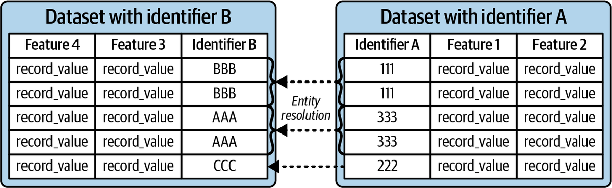
병합하려는 데이터셋들이 이미 동일한 데이터 식별자를 사용하고 있다면, 이 작업은 단순한 데이터베이스 조인(Join) 연산이 되므로 별도의 ER 시스템을 구축할 필요가 없다는 점을 유념하세요.
식별자 누락 (Missing identifiers)
경우에 따라 금융 데이터셋에 적절한 식별자가 없거나, 필요한 특정 식별자와 일치하지 않는 임의의 식별자가 포함되어 있을 수 있습니다. 예를 들어 장외(OTC) 시장과 같은 비규제 또는 탈중앙화 시장에서 생성된 데이터에는 적절한 데이터 식별자가 포함되어 있지 않을 수 있습니다. 주가 데이터셋은 주식 티커를 식별자로 사용하는 반면, 여러분에게 필요한 것은 ISIN일 수 있습니다. 또 다른 일반적인 시나리오로 금융 활동에 참여하는 주체가 사기를 저지르기 위해 의도적으로 자신의 신원을 숨기는 경우가 있습니다. 이러한 상황에서는 사용 가능한 데이터 속성을 기반으로 엔티티를 식별하기 위해 ER 시스템이 필수적입니다. 그림 4-9는 식별자가 없는 데이터셋에 식별자를 부여하는 ER 프로세스를 보여줍니다. 오른쪽 테이블에는 엔티티 식별자 없이 여러 특성만 표시되어 있습니다. ER을 사용하여 화살표로 표시된 것처럼 레코드를 해당하는 식별자에 매핑합니다.
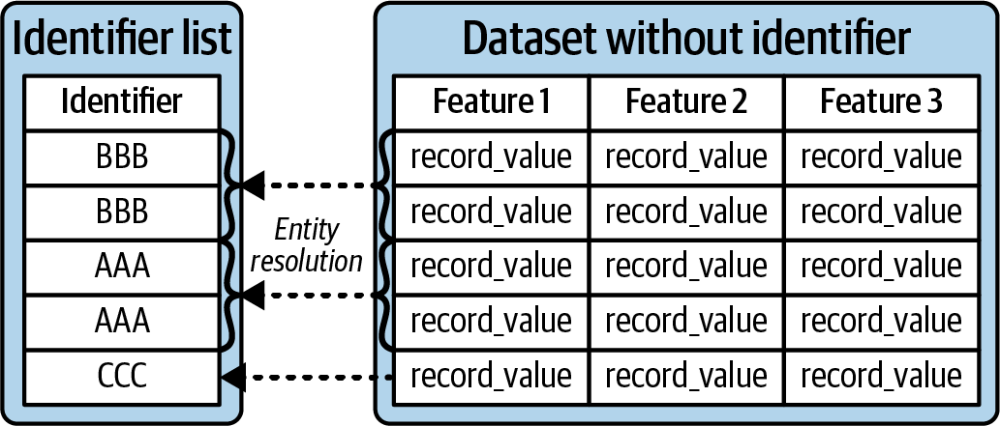
사기 탐지 및 신원 검증을 위한 엔티티 레졸루션
금융 분야에서 ER의 가장 중요한 응용 분야 중 하나는 사기 탐지(Fraud Detection)와 신원 검증(Identity Verification)입니다. ER은 이름, 이메일, 은행 계좌, 국가 코드, 주소, 전화번호 등의 특성을 사용하여 동일한 실제 개인이나 기업에 연결될 수 있는 금융 레코드를 식별하는 데 도움을 줍니다. 또한 범죄자가 중요한 정보를 누락하거나 부정확한 방식으로 제시하여 자신의 신원과 불법적인 의도를 숨기려 할 때 발생하는 이상 활동을 감지할 수 있습니다.
가장 흔한 금융 범죄 유형 중 하나는 불법적으로 생성된 자금을 합법적인 출처에서 나온 것처럼 보이게 만드는 행위인 자금세탁(Money laundering) 입니다. 다양한 자금세탁 수법이 존재하며 시간이 지남에 따라 끊임없이 진화하고 있습니다. 대표적인 예로 동일한 개인이 수많은 기업의 소유자로 등장하지만, 그중 일부 기업은 실제 서비스를 전혀 제공하지 않고 서로 다른 거래처 간에 자금을 이동시키는 역할만 수행하는 경우가 있습니다.
은행에서는 은행 계좌를 개설하거나 금융 거래를 수행할 때 신청인이 본인이 맞는지 확인하기 위해 신원을 검증하는 것이 일반적인 관행입니다. 이 프로세스를 고객확인제도(KYC, Know Your Customer) 라고 부르며, 널리 퍼진 사기 형태인 명의 도용(Identity fraud) 을 방지하는 것을 목표로 합니다. ER을 KYC에 적용하면 서로 다른 신원, 이메일 주소, 전화번호 및 기타 패턴을 사용하여 새로운 은행 계좌를 개설하고 금융 거래를 수행하려는 잠재적 사기범을 식별할 수 있습니다.
데이터 집계 및 통합
금융기관 내의 다양한 운영 및 활동에 관한 정보는 일반적으로 탈중앙화되어 여러 부서에 분산되어 있습니다. 데이터 통합(Data integration)은 조직에 대한 종합적인 시각을 제공하기 위해 이러한 다수의 데이터 소스를 결합하는 프로세스를 의미합니다. 이 프로세스는 규제 보고 및 리스크 모니터링과 같은 목적을 위해 금융기관에 매우 중요합니다. 5장에서는 금융 부문에서 데이터 집계가 갖는 중요성에 대해 더 자세히 배울 것입니다.
데이터 통합을 촉진하려면 금융기관 내의 서로 다른 부서와 단위에 걸쳐 데이터를 매칭하기 위한 ER 시스템이 필요합니다. 그림 4-10은 이 프로세스를 설명하는 간단한 예시를 제공합니다. 이 시나리오에서 데이터는 부서 1과 2라는 두 부서에서 발생합니다. 각 부서의 데이터는 단일 통합 데이터셋으로 병합되기 전에 먼저 공통 식별자에 매핑됩니다.
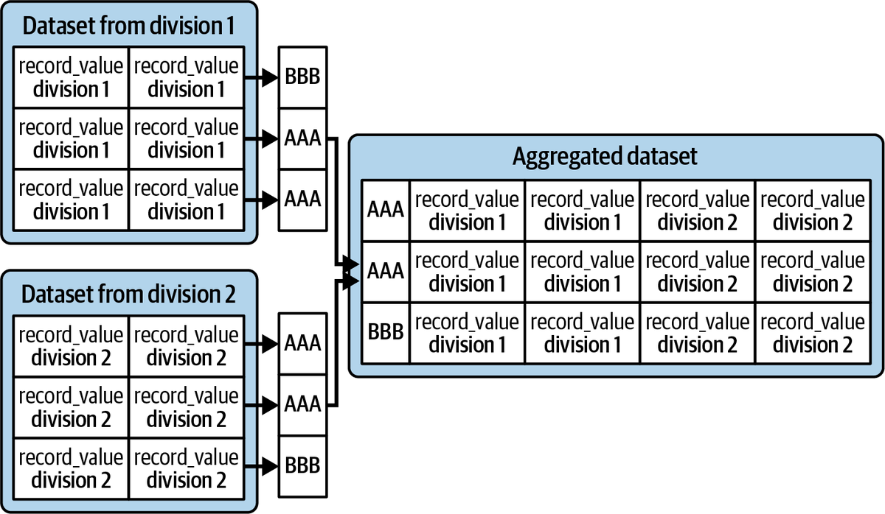
데이터 중복 제거 (Data deduplication)
금융 데이터에서 빈번하게 발생하는 문제 중 하나는 중복 레코드의 존재입니다. 즉, 특정 엔티티에 대해 동일한 정보를 전달하는 복수의 레코드가 존재하는 것입니다. 중복 레코드는 여러 변형으로 기록될 수 있는 개인이나 기업 이름과 같은 비표준 식별자를 사용할 때 자주 발생합니다. 5장에서는 금융 데이터 중복 문제를 다루는 전용 절을 제공합니다.
데이터 중복을 식별하고 제거하는 프로세스를 데이터 중복 제거(Data deduplication)라고 합니다. 중복 제거는 동일한 데이터셋 내에서 유사한 엔티티를 매칭해야 하므로 ER 문제로 다룰 수 있습니다. 그림 4-11은 이 프로세스를 설명하는 예시를 보여줍니다. 왼쪽 테이블에는 두 개의 중복 인스턴스 (1, 2)와 (7, 8)이 포함되어 있습니다. ER을 사용하면 이러한 중복을 식별하고 오른쪽 테이블과 같이 데이터 중복 제거를 수행할 수 있습니다.
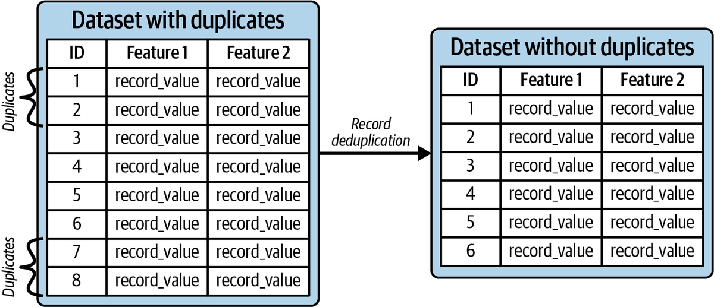
엔티티 레졸루션은 어떻게 작동하는가?
일반적인 ER 프로세스는 그림 4-12에 나타난 5단계의 반복적 과정으로 이루어집니다. 첫 번째 단계에서는 입력 데이터셋이 작업에 적합한 고품질을 갖추도록 전처리(Preprocessing) 를 적용합니다. 두 번째 단계인 블로킹(Blocking) 은 대규모 데이터셋을 매칭할 때 연산 복잡도를 줄이기 위해 자주 필요합니다. 세 번째 단계에서는 선택된 방법론을 사용하여 후보 레코드 쌍을 생성(Generate) 하고 비교(Compare) 합니다. 이어서 비교 결과를 일치(Match), 불일치(Non-match), 또는 잠재적 일치(Possible match)로 분류(Classify) 합니다. 마지막 다섯 번째 단계에서는 매칭 프로세스의 우수성을 평가(Evaluate) 합니다. 다음 몇 개 절에서 이 다섯 가지 단계를 상세히 살펴보겠습니다.
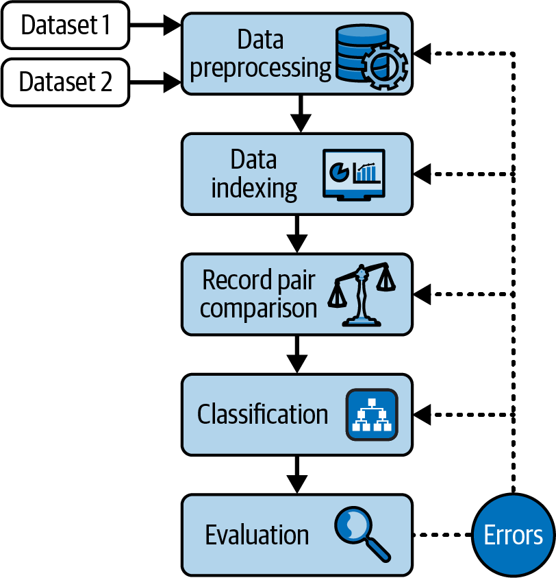
데이터 전처리
ER은 입력 데이터셋의 품질에 매우 민감합니다. 따라서 매칭 프로세스를 시작하기 전에 품질 평가 및 데이터 표준화를 위한 필수 규칙을 수립하고 적용하는 것이 대단히 중요합니다. 이러한 규칙은 매칭 프로세스에 사용될 데이터 필드, 특히 식별자 필드에 특히 중요합니다. 표 4-6은 세 개의 데이터셋이 동일한 금융 엔티티에 대한 데이터를 서로 다른 포맷 스타일을 사용하여 저장한 예시를 보여줍니다.
표 4-6. 비표준화된 데이터 표현 방식
| 엔티티 이름 | 본사 위치 | 시가총액 | 배당락일 | |
|---|---|---|---|---|
| 데이터셋 1 | JP Morgan Chase | New York City | $424.173B | Jul 05, 2023 |
| 데이터셋 2 | JPMorgan Chase & Co. | New York City, NY | $424,173,000,000 | 2023-07-05 |
| 데이터셋 3 | J.P. Morgan Chase & Co. | New York | $424,000.173M | 5/7/23 |
표에서 볼 수 있듯이 세 레코드는 동일한 엔티티이지만 서로 다른 포맷을 사용하여 다르게 보입니다. 포맷의 이종성은 동일한 데이터셋 내에서도 발생할 수 있다는 점을 유념해야 합니다.9
최적의 데이터 매칭 결과를 보장하려면 일관된 포맷팅 방법을 사용하여 데이터를 표준화해야 합니다. 가장 일반적인 접근법은 다음과 같은 일련의 데이터 변환 규칙을 사용하는 규칙 기반(Rule-based) 기법입니다.
- 엔티티 이름에서 마침표 제거 (예: J.P. Morgan Chase & Co. → JP Morgan Chase & Co)
- 불용어 제거 (예: The Bank of America → Bank of America)
- 약어 확장 (예: Corp. → Corporation)
- 접미사 제거 (예: FinTech firm → FinTech)
- 이름을 “이름, 성(Given name, Surname)” 형태로 통일
- 날짜를 “YYYY/MM/DD” 형식으로 변환
- 필드를 더 작은 세그먼트로 파싱 (예: “270 Park Avenue, New York, NY”와 같은 전체 주소가 포함된 필드를 도시, 주, 도로명 필드로 분할)
- 누락된 필드 추론 (예: 도로명 주소로부터 우편번호 추론)
- 중복 레코드 제거
팁
데이터 전처리를 수행할 때 원본 테이블을 직접 수정하지 마십시오. 대신 데이터의 새 복사본을 만들어 그 복사본에 변환을 적용하세요.
인덱싱 (Indexing)
입력 데이터셋이 정제되고 표준화되면 매칭을 위한 준비가 완료됩니다. 일반적인 시나리오에서 매칭 프로세스는 첫 번째 데이터셋의 각 요소와 두 번째 데이터셋의 모든 요소를 비교하는 작업을 수반합니다. 다루는 데이터셋이 작다면 이러한 비교는 합리적인 시간 내에 수행될 수 있습니다. 그러나 대규모 데이터셋의 경우 연산 복잡도가 급격히 증가할 수 있습니다. 각각 50만 개의 레코드를 가진 두 데이터셋을 매칭하려는 시나리오를 생각해 보십시오. 모든 쌍별(Pair-wise) 비교를 수행한다면 총 500,000 × 500,000 = 2,500억 건의 후보 비교가 발생합니다. 초당 100만 건의 비교를 처리하는 속도라 하더라도 두 데이터셋을 매칭하는 데 69시간이 걸립니다. 두 데이터셋이 각각 100만 개의 레코드를 가지고 있다면 약 11일이 소요됩니다!
결정적으로 대부분의 ER 문제에서 대다수의 쌍별 비교는 불일치로 귀결됩니다. 첫 번째 데이터셋의 레코드는 대개 두 번째 데이터셋의 극히 일부분의 레코드와만 일치하기 때문입니다. 이러한 이유로 쌍별 비교의 수는 데이터 레코드 수에 따라 2차 함수적으로 증가하는 반면(즉, O(x^2), 여기서 x는 매칭할 데이터셋의 레코드 수에 근사함), 실제 일치하는 레코드 수는 선형적으로 증가하는 현상을 흔히 관찰할 수 있습니다.10
이 문제를 극복하기 위해 다양한 데이터 최적화 기법이 개발되었습니다. 이러한 기법을 흔히 인덱싱(Indexing) 이라고 부르며, 매칭될 가능성이 높은 레코드 쌍을 생성하고 나머지는 필터링하여 제외함으로써 필요한 쌍별 비교 횟수를 줄이는 것을 목표로 합니다. 가장 일반적인 인덱싱 기법은 블로킹(Blocking) 입니다. 블로킹은 매칭할 데이터셋을 여러 개의 작은 블록으로 분할하고 각 블록 내의 레코드 간에만 쌍별 비교를 수행하는 방식으로 작동합니다. 분할을 수행하려면 데이터셋의 하나 이상의 특성을 사용하여 블로킹 키(Blocking key) 를 정의해야 합니다. 예를 들어 블로킹 키는 동일한 우편번호나 국가를 가진 레코드들을 동일한 블록에 배치할 수 있습니다.
블로킹은 몇 가지 과제를 안겨줍니다. 첫째, 데이터 품질에 매우 민감합니다. 데이터의 사소한 변형으로 인해 블로킹 키가 레코드를 잘못된 블록에 배치할 수 있습니다. 둘째, 블로킹은 연산 복잡도와 블록 세분성 간의 트레이드오프를 수반할 수 있습니다. 매우 구체적인 블로킹 키를 정의하면 블록 수가 많아져 성능 면에서는 유리하지만, 실제 일치하는 쌍이 제외될 위험이 있습니다. 반면 너무 일반적인 블로킹 키를 사용하면 블록 수가 적어져 연산 복잡도를 높이는 수많은 쌍별 비교로 이어질 수 있습니다.
그림 4-13은 간단한 블로킹 프로세스를 보여줍니다. 이 예시에는 시가총액, 본사 소재국, 상장 거래소와 같은 기업 정보를 포함하는 두 개의 데이터셋 A와 B가 있습니다. 모든 쌍별 비교를 수행한다면 6 × 6 = 36회의 비교가 필요합니다. 그러나 본사 소재국과 상장 거래소를 기준으로 레코드를 블록으로 그룹화하는 블로킹 기준을 적용하면 쌍별 비교 횟수를 단 5회로 줄일 수 있습니다.
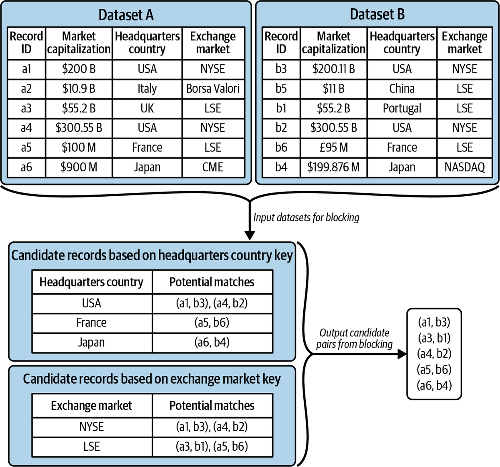
블로킹 외에도 다양한 인덱싱 기법들이 개발되었습니다. 정렬된 이웃 인덱싱(Sorted Neighborhood Indexing), Q-그램 기반 인덱싱(Q-Gram-Based Indexing), 접미사 배열 기반 인덱싱(Suffix Array-Based Indexing), 캐노피 클러스터링(Canopy Clustering), 스트링 맵 기반 인덱싱(String-Map-Based Indexing) 등이 대표적입니다.
비교 (Comparison)
후보 쌍이 생성되면 다음 단계는 레코드 간의 실제 비교를 수행하는 것입니다. 레코드 비교의 전통적인 접근법은 쌍 유사도(Pair similarity)에 기반합니다. 이는 흔히 모든 특성을 단일 문자열로 합친 다음 두 쌍 간의 문자열 유사도를 비교하는 방식으로 수행됩니다. 또는 각 특성의 유사도를 개별적으로 계산한 후 이를 단일 유사도 점수로 결합하는 것도 가능합니다.
일반적으로 유사도 점수는 0과 1 사이로 정규화됩니다. 점수가 1이면 완벽하게 일치하는 쌍이고, 0이면 완전히 일치하지 않음을 나타냅니다. 일치 또는 불일치만을 허용하는 비교를 정확 매칭(Exact matching) 이라고 합니다. 결정적으로 유사도 점수가 0과 1 사이의 실수 범위에 속하는 것이 일반적이며, 이 경우의 매칭을 근사 매칭(Approximate matching) 또는 퍼지 매칭(Fuzzy matching) 이라고 합니다. 근사 매칭은 특성의 수 차이(한 데이터셋에만 특정 특성이 존재하는 경우), 서로 다른 포맷(예: 다른 통화로 표시된 금액), 정보의 세분성(한 데이터셋이 다른 데이터셋보다 더 세분화된 식별자를 사용하는 경우), 정보의 정밀도(한 데이터셋은 소수점 둘째 자리까지 반올림하고 다른 데이터셋은 셋째 자리까지 사용하는 경우) 등 데이터셋 간의 차이로 인해 발생할 수 있습니다.
비교 단계에서는 세 가지 유형의 매칭 시나리오가 존재합니다.
일대일(One-to-one): 첫 번째 데이터셋의 각 레코드가 두 번째 데이터셋에서 단 하나의 레코드와만 일치할 수 있는 경우입니다(예: 두 데이터셋에서 동일한 금융 거래 매칭).
일대다(One-to-many): 첫 번째 데이터셋의 한 레코드가 두 번째 데이터셋의 여러 레코드와 일치할 수 있는 경우입니다(예: 한 데이터셋의 특정 신용카드와 연결된 다른 데이터셋의 모든 거래 매칭).
다대다(Many-to-many): 첫 번째 데이터셋의 여러 레코드가 두 번째 데이터셋의 여러 레코드와 매칭될 수 있는 경우입니다(예: 브로커 데이터베이스에 기록된 한 매매 주문 내의 여러 거래를 청산소나 증권거래소에 기록된 거래들과 매칭).
예시로서 표 4-7은 그림 4-11의 5개 후보 쌍에 대한 유사도 점수를 보여줍니다. 레코드는 먼저 표준화된 후(소수점이나 단위 표시 없이 숫자를 표현하고 모든 문자를 대문자로 변환) 단일 문자열로 연결(Concatenate)됩니다. 이어서 최장 공통 부분 문자열(LCS, Longest Common Substring) 알고리즘을 사용하여 연결된 문자열 간의 유사도를 계산합니다.11
표 4-7. 레코드 비교의 예시
| 레코드 쌍 | 쌍 문자열 | 유사도 점수 |
|---|---|---|
| (a1, b3) | a1: “$200000000000USANYSE” b3: “$200110000000USANYSE” | 0.9 |
| (a3, b1) | a4: “$55200000000UKLSE” b1: “$552000000000PORTUGALLSE” | 0.75 |
| (a4, b2) | a4: “$300550000000USANYSE” b2: “$300550000000USANYSE” | 1 |
| (a5, b6) | a5: “$100000000FRANCELSE” b6: “£95000000FRANCELSE” | 0.81 |
| (a6, b4) | a6: “$900000000JAPANCME” b6: “$199876000JAPANNASDAQ” | 0.51 |
LCS 알고리즘 외에도 자로-윙클러(Jaro–Winkler) 근사 문자열 비교, 레벤슈타인 거리(Levenshtein distance), 편집 거리(Edit distance), 자카드 유사도(Jaccard similarity), Q-그램 거리(Q-gram distance) 등 쌍 유사도를 계산하기 위한 다양한 방법이 존재합니다.
분류 (Classification)
모든 유사도가 계산되면 다음 단계는 후보 쌍을 매칭 범주로 분류하는 것입니다. 가장 기본적인 형태의 분류는 일치 또는 불일치의 이진 분류입니다. 그러나 덜 엄격한 접근법에서는 일치, 불일치, 잠재적 일치의 세 가지 클래스를 허용합니다. 어떤 경우든 일치는 해당 쌍이 두 데이터셋에서 동일한 실세계 엔티티를 나타냄을 의미하고, 불일치는 서로 다른 두 엔티티를 가리킴을 의미합니다. 잠재적 일치는 일치할 가능성이 높지만 확인을 위해 최종적인 실무 검토(휴먼 리뷰)가 필요한 레코드 쌍입니다.
임계값 기반(Threshold-based) 접근법, 규칙 기반 접근법, 확률론적 접근법, 머신러닝 접근법 등 다양한 쌍 분류 방법이 제안되었습니다. 이 장의 후반부에서 이러한 모델들을 더 자세히 논의할 것입니다. 간단한 예시로 표 4-7에 보고된 이전 단계(비교)의 결과를 분류하기 위해 기본적인 임계값 기반 접근법을 사용해 보겠습니다. 유사도 점수가 0.9 이상이면 일치, 0.8 이상이면 잠재적 일치, 0.8 미만이면 불일치로 간주한다고 가정합니다. 이 접근법을 적용한 분류 결과는 표 4-8에 나와 있습니다.
표 4-8. 임계값 기반 쌍 분류의 예시
| 레코드 쌍 | 유사도 점수 | 분류 결과 |
|---|---|---|
| (a1, b3) | 0.9 | MATCH (일치) |
| (a3, b1) | 0.75 | NON-MATCH (불일치) |
| (a4, b2) | 1 | MATCH (일치) |
| (a5, b6) | 0.81 | POTENTIAL MATCH (잠재적 일치) |
| (a6, b4) | 0.51 | NON-MATCH (불일치) |
평가 (Evaluation)
ER 프로세스의 마지막 단계는 성능 평가입니다. 고성능 ER 시스템은 입력 데이터셋에서 유효한 모든 일치 항목을 찾아 올바르게 분류할 수 있어야 합니다. 또한 실행 시간, 메모리 소비, 스토리지 요구량, CPU 사용량 측면에서 연산 효율성을 보장해야 합니다.
대부분의 경우 ER 시스템은 실제 금융 애플리케이션을 위해 구현되므로 수백만 건의 레코드를 다루는 대규모 애플리케이션으로 확장될 수 있어야 합니다. 인덱싱과 같은 최적화 기법이 적용되더라도 연산 복잡도(예: O() 표기법 기준)를 측정하는 것은 근본적으로 중요합니다. 이는 스트리밍 기반의 실시간 레코드 링키지 시스템을 개발할 때 특히 중요합니다. 이 경우 복잡도 지표와 디스크 및 메모리 사용량 수치는 하드웨어, 데이터 인프라, 알고리즘 최적화 측면에서 구현 방향을 결정하는 기준이 됩니다. 또한 엘페키(Elfeky) 등이 연구 논문에서 제안했듯이, 인덱싱 기법이 매칭 대상 레코드 쌍의 수를 얼마나 효과적으로 줄였는지(감소율, Reduction ratio)와 동시에 유효한 모든 일치 항목을 얼마나 잘 포착했는지(쌍 완전성, Pair completeness)를 기준으로 성능을 측정할 수 있습니다.
ER 시스템의 매칭 결과 품질을 평가하기 위해 머신러닝과 데이터 마이닝에서 이진 분류 품질 평가에 널리 사용되는 지표(NER 시스템 평가에 사용했던 지표)를 사용하는 것이 일반적인 관행입니다. 이러한 지표를 구축하려면 네 가지 수치를 계산해야 합니다. 진양성(True Positives, TP) 은 일치로 올바르게 분류된 쌍의 수이며, 진음성(True Negatives, TN) 은 불일치로 올바르게 분류된 쌍의 수입니다. 마찬가지로 위양성(False Positives, FP) 은 불일치인데 일치로 잘못 분류된 쌍이며, 위음성(False Negatives, FN) 은 실제로는 일치하지만 불일치로 잘못 분류된 쌍입니다. 그림 4-14는 이러한 수치들의 혼동 행렬(Confusion Matrix) 표현을 보여줍니다.
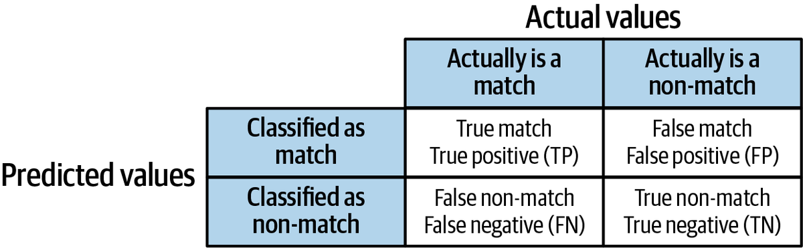
이 네 가지 지표를 바탕으로 다양한 품질 척도를 계산할 수 있습니다. 예를 들어 정확도(Accuracy)는 시스템이 올바른 분류(일치 vs 불일치)를 수행하는 능력을 측정합니다. 정밀도(Precision)는 시스템이 실제 일치 항목을 얼마나 올바르게 분류하는지(즉, 위양성을 얼마나 잘 피하는지)를 측정합니다. 재현율(Recall)은 시스템이 실제 일치 항목을 빠짐없이 탐지하는 능력(즉, 위음성을 얼마나 잘 피하는지)을 측정합니다. F1 점수는 정밀도와 재현율의 조화 평균이며 재현율과 정밀도 간의 균형을 찾는 데 사용됩니다.
표 4-8의 예시를 사용하여 이 네 가지 지표를 계산해 보겠습니다. 표 4-9에 나타난 것처럼, 최종 예측값은 “인간 검토 후 예측 클래스” 열에 나와 있고 실제 정답 값은 “실제 정답 클래스(Ground truth class)” 열에 나와 있습니다.
표 4-9. 최종 ER 분류 결과 및 실제 정답 값
| 레코드 쌍 | 예측 클래스 | 인간 검토 후 예측 클래스 | 실제 정답 클래스 |
|---|---|---|---|
| (a1, b3) | MATCH | MATCH | MATCH |
| (a3, b1) | NON-MATCH | NON-MATCH | NON-MATCH |
| (a4, b2) | MATCH | MATCH | MATCH |
| (a5, b6) | POTENTIAL-MATCH | MATCH | MATCH |
| (a6, b4) | NON-MATCH | NON-MATCH | MATCH |
표 4-7의 데이터로부터 혼동 행렬 값을 다음과 같이 계산할 수 있습니다.
- TP: 3
- TN: 1
- FP: 0
- FN: 1
그런 다음 표 4-10에 나와 있는 것처럼 네 가지 품질 지표를 계산할 수 있습니다.
표 4-10. 계산된 품질 지표
| 품질 척도 | 값 |
|---|---|
| 정확도 (Accuracy) | 0.8 |
| 정밀도 (Precision) | 1 |
| 재현율 (Recall) | 0.75 |
| F1 점수 (F1 score) | 0.85 |
일반적인 성능 지표로서 0.8의 정확도는 나쁘지 않지만, 중요한 핵심 애플리케이션에서는 이상적이지 않을 수 있습니다. 정밀도 값 1은 모델이 위양성을 전혀 생성하지 않음을 의미합니다. 즉, 특정 쌍이 일치로 분류되었다면 100% 확실하게 일치하는 것입니다. 재현율은 모델이 실제 일치 항목을 모두 찾지는 못하여 몇 건의 위음성 분류가 발생했음을 알려줍니다. 0.85의 F1 점수는 무난한 성능을 보여주지만 우수한 ER 시스템으로서는 여전히 개선의 여지가 있습니다.
엔티티 레졸루션 접근법
문헌과 시장 참여자들에 의해 수많은 ER 기법이 제안되었습니다. 이러한 기법들은 종종 다르게 명명되고 분류되므로, 필자는 이를 결정론적 연계(Deterministic linkage), 확률론적 연계(Probabilistic linkage), 머신러닝의 세 가지 범주로 요약합니다. 이들은 상호 배타적이지 않으며, 결합하여 하나의 ER 시스템을 구축할 수 있습니다. 예를 들어 고품질 레코드를 매칭할 때는 단순한 규칙 기반 접근법을 사용하고, 데이터 품질이 낮은 레코드에는 확률론적 또는 머신러닝 접근법을 적용할 수 있습니다. 다음 절들에서 각 접근법을 상세히 살펴보겠습니다.
결정론적 연계 (Deterministic linkage)
가장 단순한 ER 기법인 결정론적 연계는 사용 가능한 데이터 필드를 기반으로 일련의 결정론적 규칙을 통해 데이터 매칭을 수행합니다. 링크 테이블(Link tables), 정확 매칭, 규칙 기반 매칭 등 다양한 결정론적 연계 방법이 제안되었으며, 다음에 이들을 차례로 살펴보겠습니다.
링크 테이블 (Link tables)
링크 테이블은 둘 이상의 데이터 식별자 간의 매핑 정보를 담고 있습니다. 두 데이터셋이 링크 테이블에 매핑된 서로 다른 식별자를 사용하는 경우, 두 데이터셋과 링크 테이블 간의 SQL 조인 연산을 통해 데이터셋을 매칭할 수 있습니다. 그림 4-15는 이러한 접근법을 보여줍니다.
금융 애플리케이션의 경우, 식별자가 변경되거나 재할당되거나 비활성화될 가능성을 추적하기 위해 특정 시점(Point-in-Time, PIT) 기능을 갖추어 링크 테이블을 구축해야 합니다. 이를 위해 우수한 금융 링크 테이블은 링크의 시작일 및 종료일, 링크 상태, 추가 코멘트와 같은 보조 정보를 포함합니다. 예를 들어 표 4-11은 세 개의 링크를 포함하는 링크 테이블을 보여주는데, 링크 (a1, b55)만 활성 상태이고 종료일이 없으며, 링크 (a4, a20)은 주식이 상장폐지되어 2007-12-31에 종료되었고, 링크 (199, b44)는 회사가 다른 회사와 합병되어 1995-01-20에 종료되었습니다.
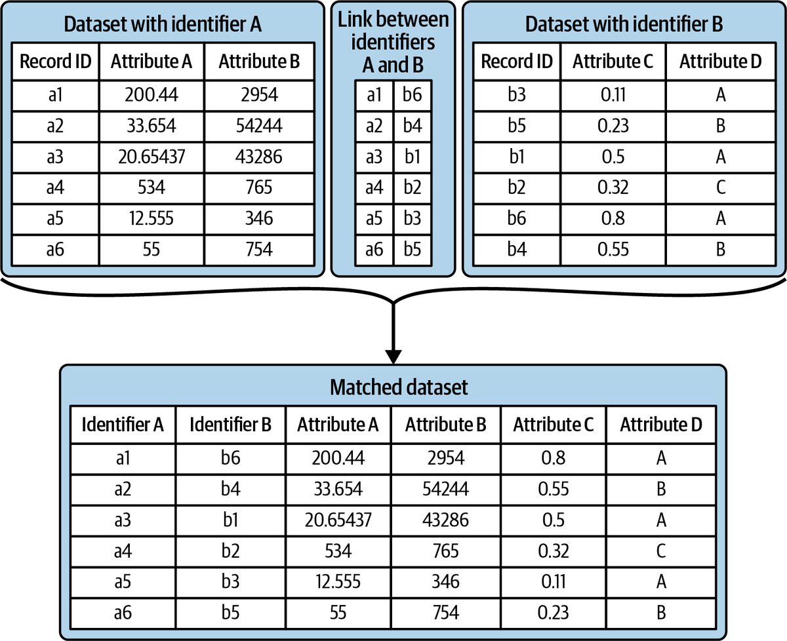
표 4-11. 링크 테이블 예시
| 식별자 A | 식별자 B | 링크 시작일 | 링크 종료일 | 상태 | 비고 |
|---|---|---|---|---|---|
| a1 | b55 | 1990-02-01 | - | 활성 (Active) | |
| a4 | b20 | 2005-01-20 | 2007-12-31 | 비활성 (Inactive) | 주식 상장폐지 |
| a99 | b44 | 1995-01-20 | 1995-01-20 | 비활성 (Inactive) | 타 기업과의 합병 |
링크 테이블의 주된 장점은 단순성, 고성능, 높은 가독성입니다. 그러나 구축에 많은 노력이 들며 지속적인 유지보수와 업데이트가 필요할 수 있습니다.
금융기관은 자체적인 링크 테이블을 내부적으로 구축할 수 있습니다. 이것이 바로 금융 데이터 엔지니어 여러분이 중요한 역할을 수행하게 되는 영역입니다. 또한 다양한 금융 링크 테이블이 상용 제품으로 제공되기도 합니다. 여기에는 서로 다른 금융 식별자 및 기타 상품 특성을 매칭하는 기준 데이터셋(Reference Datasets) 등이 포함됩니다. 또 다른 예로 유명 데이터 유통업체인 와튼 리서치 데이터 서비스(WRDS)는 사용자가 WRDS 플랫폼에서 가장 인기 있는 데이터베이스 간의 테이블을 연결할 수 있도록 자체 연계 스위트(Linking suite)를 개발했습니다.
또 다른 주목할 만한 예시는 글로벌법인식별기호재단(GLEIF)이 시장 참여자들과 협력하여 LEI를 다른 금융 식별자와 연결하기 위해 추진한 일련의 이니셔티브입니다. 그 결과 BIC-LEI 매핑, ISIN-LEI 매핑, MIC-LEI 매핑과 같은 오픈소스 링크 테이블 목록이 제공되고 있습니다.
사례 연구: CRSP/Compustat 병합 링크 테이블
금융 분야에서 엔티티 레졸루션의 가장 일반적인 활용 사례 중 하나는 주가 데이터와 기업 재무제표(펀더멘털) 데이터를 병합하는 것입니다. 금융 뉴스 웹사이트를 확인해 본 적이 있다면 주식의 시가/종가, 매수/매도 호가, 거래량 데이터가 시가총액 및 배당금 지급과 같은 기본적 데이터와 함께 제공되는 것을 보았을 것입니다. 이는 동일한 엔티티에 대해 주가 데이터셋과 펀더멘털 데이터셋 전반에 걸쳐 데이터를 매칭함으로써 수행됩니다.
주가/펀더멘털 ER 시스템의 대표적인 예는 CRSP/Compustat 병합 데이터베이스(CCM, CRSP/Compustat Merged Database)입니다. CCM 데이터베이스는 CRSP 데이터베이스의 과거 이벤트 및 시장 데이터를 S&P의 Compustat 데이터베이스에 수록된 기업 펀더멘털 데이터와 매칭하는 링크 테이블입니다(두 데이터베이스 모두 2장에서 논의됨). 벤더 문서에 기술된 바와 같이, 링크 테이블을 생성하는 데 사용되는 식별자는 다음과 같습니다.
GVKEY: Compustat의 기업 식별자입니다.
ID: Compustat의 발행물(Issue) 식별자입니다. 하나의 GVKEY에 여러 ID가 연결될 수 있습니다.
PRIMISS: Compustat의 주요 증권 식별자입니다.
PERMCO: CRSP의 기업 식별자입니다.
PERMNO: CRSP의 발행물 식별자입니다. 하나의 PERMCO에 여러 PERMNO가 연결될 수 있습니다.
결과로 생성된 링크 테이블은 모든 증권 식별자를 링크 시작일, 링크 종료일, CRSP 식별자 및 Compustat 식별자 정보와 매칭합니다.
정확 매칭 (Exact matching)
정확 매칭에서는 공통의 고유 식별자를 통하거나, 일련의 데이터 속성을 단일 매칭 키로 결합한 연계 키(Linkage key)를 통해 두 데이터셋의 레코드를 연결합니다. 두 데이터셋 모두에 공통 고유 식별자가 존재하는 경우 매칭 프로세스는 고유 키를 기반으로 한 단순한 SQL 조인 연산이 됩니다. 여기서 문제는 금융 데이터셋이 서로 다른 식별자를 사용하는 경우가 많다는 점입니다. 또한 특정 시점 이후부터만 식별자가 존재할 수 있으며, 오래된 과거 레코드에는 식별자가 누락되어 있을 수도 있습니다. 연계 키를 사용해도 동일한 절차를 따를 수 있지만, 고유 식별자 대신 데이터셋 병합을 위한 연계 키를 직접 구성해야 합니다. 연계 키가 좋은 결과를 내려면 데이터의 품질이 매우 높아야 합니다(완전하고, 표준화되어 있으며, 중복이 없고, 오류가 없어야 함).
규칙 기반 매칭 (Rule-based matching)
결정론적 연계에서 덜 엄격한 접근법은 규칙 기반 접근법으로, 레코드 쌍이 일치하는지 여부를 결정하기 위해 일련의 규칙을 수립합니다. 이 접근법의 주요 이점은 규칙 정의 및 통합의 유연성, 빠른 속도, 우수한 해석 가능성, 단순성입니다. 반면 규칙을 정의하는 데 상당한 시간과 데이터셋 관련 도메인 지식이 필요할 수 있다는 단점이 있습니다. 더욱이 데이터셋의 복잡성이 증가하고 품질이 다양해질수록 규칙의 수가 지나치게 많아져 유지보수성과 성능에 부정적인 영향을 미칠 수 있습니다.
단순한 규칙 기반 접근법의 예로는 레코드 간의 유사도를 계산하고 지정된 임계값을 초과하는 경우 해당 쌍을 일치로 분류하는 방식이 있습니다(예: 유사도가 0.8보다 크면 일치로 분류하고 그렇지 않으면 불일치로 분류). 이 방법은 데이터 속성의 사소한 변형을 수용할 수 있으므로 정확 매칭에 대한 훌륭한 대안을 제공합니다.
확률적 연계 (Probabilistic Linkage)
고유 식별자가 누락되었거나 데이터에 오류 및 결측값이 포함되어 있는 경우, 결정론적 레코드 연계는 저조한 결과를 낳을 수 있습니다. 이러한 문제를 극복하기 위해 퍼지 매칭(fuzzy matching)으로도 알려진 확률적 연계(probabilistic linkage)가 개발되었습니다. 확률적 방법은 결정론적 접근법에 비해 우수한 연계 품질을 입증해 왔습니다.
확률적 연계는 데이터 내 여러 속성의 확률 분포와 가중치를 계산하여 데이터 매칭에 통계적으로 접근합니다. 예를 들어 두 데이터셋에서 성(surname)이 “Bloomberg”인 사람이 성이 “Smith”인 사람보다 훨씬 적다고 가정해 봅시다. 이 경우 두 레코드가 “Smith”라는 성 값을 공유할 때 부여되는 일치 가중치는 두 레코드가 “Bloomberg”라는 성 값을 공유할 때보다 작아야 합니다. 무작위로 선택된 두 레코드가 “Bloomberg”라는 성을 공유할 확률보다 “Smith”라는 성을 공유할 확률이 훨씬 높기 때문입니다.
이러한 개념을 정형화하기 위해 다양한 확률적 연계 기법이 개발되었습니다.12 핵심 아이디어를 설명하기 위해 잘 알려진 펠레기-선터(Fellegi-Sunter) 프레임워크(레코드 연계 이론)를 예로 들어보겠습니다. 펠레기와 선터는 비교 대상 쌍을 일치(link), 불일치(non-link), 일치 가능성 있음(possible link)의 세 가지 범주 중 하나로 분류하는 의사결정 이론 기반의 연계 이론을 제안했습니다. 각 쌍은 독립적으로 분석됩니다. 펠레기와 선터는 속성들이 서로 독립이라는 가정하에 우도비(likelihood ratio)에 대한 임계값 기반 전략을 통해 최적의 매칭을 달성할 수 있음을 입증했습니다. 핵심 아이디어를 살펴보기 위해 먼저 우도비가 무엇인지 정의해 보겠습니다.
주어진 쌍에서 두 레코드 간의 일치/불일치 패턴을 λ로 나타내겠습니다. 일치는 이진 값(0 또는 1)으로 표현하거나 필요한 경우 더 구체적인 값을 사용할 수 있습니다. 이진 일치 척도를 사용할 때 3개의 속성이 있다면, 두 레코드가 모든 속성에서 일치하면 λ는 (1,1,1), 처음 두 속성은 일치하지만 세 번째 속성은 일치하지 않으면 (1,1,0) 등이 됩니다. 가능한 모든 일치 패턴의 집합을 δ로 표기하겠습니다. 예를 들어 3개의 속성은
δ = 8 (2 × 2 × 2)개의 일치 패턴으로 표현될 수 있습니다.
매칭하고자 하는 두 데이터셋을 A와 B라고 가정해 봅시다. 가능한 모든 비교 대상 쌍을 얻기 위해 곱공간(product space)을 A × B로 생성합니다(단순화를 위해 인덱싱/블로킹은 하지 않는다고 가정합니다). 그런 다음 이 곱공간을 일치 집합(M)과 불일치 집합(U)의 두 집합으로 분할합니다.
실제 일치하는 레코드 쌍에 대해 일치 패턴 λ가 관측될 확률을
P ( λ ∈ δ ∣ s ∈ M ), 일치하지 않는 레코드 쌍에 대해 λ가 관측될 확률을
P ( λ ∈ δ ∣ s ∈ U )로 표기합니다. 그러면 우도비는 다음과 같이 정의됩니다.
R = P(λ∈δ∣s∈M) P(λ∈δ∣s∈U)
예를 들어 세 가지 속성을 시가총액, 거래소 시장, 회사명이라고 할 때, 완전히 일치하는 쌍의 우도는 다음과 같이 쓸 수 있습니다.
R = P(agreeoncapitalization, agreeonname, agreeonexchange∣s∈M) P(agreeoncapitalization, agreeonname, agreeonexchange∣s∈U)
거래소를 제외한 모든 속성이 일치하는 경우 우도는 다음과 같습니다.
R = P(agreeoncapitalization, agreeonname, disagreeonexchange∣s∈M) P(agreeoncapitalization, agreeonname, disagreeonexchange∣s∈U)
이 비율 R을 매칭 가중치(matching weight)라고 부릅니다. 우도비를 바탕으로 펠레기와 선터는 다음과 같은 의사결정 규칙을 제안했습니다.
- 만약
R ⩾ t upper 라면, 해당 쌍을 일치(link/match)로 판정한다.
- 만약
R ⩽ t lower 라면, 해당 쌍을 불일치(non-link/non-match)로 판정한다.
- 만약
t lower < R < t upper 라면, 해당 쌍을 잠재적 일치(potential link)로 판정한다.
확률 및 임계값을 계산하는 구체적인 방법에 대해서는 토머스 N. 헤르조그(Thomas N. Herzog), 프리츠 J. 슈런(Fritz J. Scheuren), 윌리엄 E. 윙클러(William E. Winkler)의 대표 저서인 Data Quality and Record Linkage Techniques (Springer)를 참조하시기 바랍니다.
지도학습 머신러닝 접근법
결정론적 및 확률적 접근법의 한계는 당면한 특정 데이터셋에 종속되는 경향이 있으며 데이터 속성 간의 복잡한 관계가 존재할 때 실패한다는 점입니다. 머신러닝 접근법은 일반화와 패턴 인식에 주로 초점을 맞추기 때문에 이 분야에서 탁월한 강점을 발휘합니다.
레코드 연계를 위한 지도학습 머신러닝 접근법은 데이터셋 내의 일치 항목을 예측하고 분류하도록 이진 분류 모델을 훈련합니다. 지도학습 기법이므로 실제 일치 여부(일치 또는 불일치)를 포함하는 훈련 데이터가 필요합니다. 라벨링된 데이터로 학습된 모델은 라벨이 없는 데이터에 대해 새로운 일치 항목을 예측하는 데 사용될 수 있습니다. 트리 기반 모델13, 서포트 벡터 머신(SVM)14, 딥러닝15 기법은 ER에 가장 널리 사용되는 머신러닝 접근법에 속합니다.
ER을 위한 지도학습 머신러닝 모델을 개발하는 것은 상당히 까다로울 수 있습니다. 첫째, 대부분의 쌍이 실제 불일치에 해당하고 극히 일부만이 실제 일치에 해당하는 데이터 매칭 문제의 불균형성을 모델이 고려해야 합니다. 둘째, 특히 대규모 데이터셋의 경우 라벨링된 훈련 데이터를 확보하는 것이 매우 어렵고 시간이 많이 소요될 수 있습니다. 셋째, 개인정보 보호 문제로 인해 라벨링된 데이터를 사용할 수 없거나 접근하기 어려울 수 있습니다. 이 문제를 해결하기 위해 개인정보 보호 레코드 연계(Privacy-Preserving Record Linkage, PPRL)라는 특수한 형태의 ER이 제안되었습니다.16 마지막으로 머신러닝 기반 ER 접근법은 특히 딥러닝이나 부스팅 트리와 같은 고급 기법을 적용할 때 해석 가능성 및 설명 가능성 측면에서 문제를 일으킬 수 있습니다.17
개체 식별(ER) 소프트웨어 라이브러리
개체 식별은 개발과 적용의 오랜 역사를 지닌 잘 알려진 문제입니다. 개인과 조직에 의해 ER을 위한 수많은 소프트웨어 프로그램이 개발되었습니다. 이 책이 집필될 당시 fastLink, Dedupe, Splink, JedAI, RecordLinkage, Zingg, Ditto, DeepMatcher와 같은 오픈소스 도구들이 존재합니다. 또한 상용 분야에서는 TigerGraph, Tamr, DataWalk, Senzing, Hightouch, Quantexa와 같은 여러 벤더가 ER 도구와 솔루션을 제공하고 있습니다.
요약
이번 장에서는 금융 기관이 흔히 마주하는 두 가지 주요 과제인 개체명 인식(NER)과 개체 식별(ER)에 대해 배웠습니다. NER은 정형 및 비정형 금융 데이터셋에서 금융 개체를 추출하고 식별하는 작업을 수반합니다. 반면 ER은 여러 금융 데이터셋에 걸쳐 동일한 개체에 속하는 데이터를 매칭하는 핵심 작업에 집중합니다.
금융 NER과 ER의 과제와 해결책 지형은 데이터, 기술, 그리고 변화하는 시장 요구사항과 함께 동적으로 진화하고 있습니다. 이러한 작업에서 탁월한 성과를 내고 경쟁 우위를 확보하려면 금융 NER 및 ER을 둘러싼 최신 동향, 방법론, 기술, 업계 모범 사례를 지속적으로 파악하는 것이 필수적입니다. 머신러닝 기법과 자연어 처리 도구를 탐색하고 금융 도메인 지식을 풍부하게 쌓아 NER 및 ER 시스템의 정확성과 효율성을 높여보시기 바랍니다.
다음 장에서는 금융 도메인에서 데이터 품질, 무결성, 보안, 개인정보 보호를 보장하기 위한 개념과 모범 사례를 탐구하며, 금융 데이터 거버넌스라는 중요한 과제를 제시하고 논의하겠습니다.
1 Ashitha Shivaprasad and Sherin Elizabeth Varghese, “Gold Climbs Over 1% After Fed Signals End of Rate Hikes”, 로이터(Reuters) (2023년 12월).
2 자세한 내용은 혼동 행렬 위키피디아 페이지를 참조하십시오.
3 NER을 위한 특성 설계 방법에 대한 자세한 논의는 레프 라티노프(Lev Ratinov)와 댄 로스(Dan Roth)의 논문 “Design Challenges and Misconceptions in Named Entity Recognition”, Proceedings of the Thirteenth Conference on Computational Natural Language Learning (CoNLL-2009): 147–155 및 라훌 샤르나갓(Rahul Sharnagat)의 “Named Entity Recognition: A Literature Survey”, Center For Indian Language Technology (2014년 6월): 1–27을 참조하십시오.
4 문맥 집계에 대해 더 자세히 알아보려면 하이 레옹 치우(Hai Leong Chieu)와 휘 토우 응(Hwee Tou Ng)의 논문 “Named Entity Recognition with a Maximum Entropy Approach”, Proceedings of the Seventh Conference on Natural Language Learning at HLT-NAACL 2003: 160–163에서 제안된 방법을 참조하십시오.
5 이 고급 기법에 대해 더 자세히 알아보려면 라두 플로리안(Radu Florian), 아베 이티체리아(Abe Ittycheriah), 훙옌 징(Hongyan Jing), 퉁 장(Tong Zhang)의 “Named Entity Recognition Through Classifier Combination”, Proceedings of the Seventh Conference on Natural Language Learning at HLT-NAACL 2003: 168–171을 참조하십시오.
6 NER에서의 딥러닝 활용에 대한 좋은 서베이 논문으로 징 리(Jing Li), 아이신 쑨(Aixin Sun), 장레이 한(Jianglei Han), 천량 리(Chenliang Li)의 “A Survey on Deep Learning for Named Entity Recognition”, IEEE Transactions on Knowledge and Data Engineering 34, no. 1 (2020년 1월): 50–70을 참조하십시오.
7 NER을 위한 트랜스포머 활용에 대한 좋은 읽을거리로 세드릭 로트리츠(Cedric Lothritz), 케빈 알릭스(Kevin Allix), 리사 바이버(Lisa Veiber), 자크 클라인(Jacques Klein), 테가웬데 프랑수아 D. 아시스 비시안데(Tegawendé François D. Assise Bissyande)의 “Evaluating Pretrained Transformer-Based Models on the Task of Fine-Grained Named Entity Recognition”, Proceedings of the 28th International Conference on Computational Linguistics (2020): 3750–3760을 참조하십시오.
8 한 가지 명심할 점은 AutoML이 NER의 특수성을 다루기에는 너무 범용적일 수 있다는 것입니다. 이 문제에 대한 자세한 내용은 마테오 파가넬리(Matteo Paganelli), 프란체스코 델 부오노(Francesco Del Buono), 마르코 페바렐로(Marco Pevarello), 프란체스코 구에라(Francesco Guerra), 마우리치오 빈치니(Maurizio Vincini)의 “Automated Machine Learning for Entity Matching Tasks”, Proceedings of the 24th International Conference on Extending Database Technology (EDBT 2021), Nicosia, Cyprus, 2021년 3월 23–26일: 325–330을 참조하십시오.
9 이 주제에 대한 좋은 참고 자료로 에르하르트 람(Erhard Rahm)과 홍 하이 도(Hong Hai Do)의 논문 “Data Cleaning: Problems and Current Approaches”, IEEE Data Eng. Bull. 23, no. 4 (2000년 12월): 3–13을 참조하십시오.
10 이 주제에 대한 자세한 내용은 미하일 빌렌코(Mikhail Bilenko), 비나 카마스(Beena Kamath), 레이먼드 J. 무니(Raymond J. Mooney)의 “Adaptive Blocking: Learning to Scale Up Record Linkage”, Sixth International Conference on Data Mining (ICDM’06) (IEEE, 2006): 87–96을 참조하십시오.
11 유사도 계산에 사용된 LCS 구현체는 difflib 패키지의 파이썬 SequenceMatcher 클래스입니다.
12 이 주제에 대한 개요는 올리비에 비네트(Olivier Binette)와 레베카 C. 스티어츠(Rebecca C. Steorts)의 “(Almost) All of Entity Resolution”, Science Advances 8, no. 12 (2022년 3월): eabi8021을 참조하십시오.
13 대표적인 예로 김건호(Kunho Kim)와 C. 리 자일스(C. Lee Giles)의 “Financial Entity Record Linkage with Random Forests”, Proceedings of the Second International Workshop on Data Science for Macro-Modeling (2016년 6월): 1–2를 참조하십시오.
14 대표적인 예로 피터 크리스텐(Peter Christen)의 “Automatic Record Linkage Using Seeded Nearest Neighbour and Support Vector Machine Classification”, Proceedings of the 14th ACM SIGKDD International Conference on Knowledge Discovery and Data Mining (2008년 8월): 151–159를 참조하십시오.
15 ER을 위한 딥러닝에 대한 좋은 자료로 니헬 쿨리(Nihel Kooli), 로뱅 알레시아르도(Robin Allesiardo), 에르완 피뇰(Erwan Pigneul)의 “Deep Learning Based Approach for Entity Resolution in Databases”, Asian Conference on Intelligent Information and Database Systems (ACIIDS 2018), Lecture Notes in Computer Science, vol. 10752 (Springer, 2018): 3–12를 참조하십시오.
16 이 주제에 대한 좋은 개요로 아리스 굴랄라스-디바니스(Aris Gkoulalas-Divanis), 디누샤 바살란(Dinusha Vatsalan), 디미트리오스 카라피페리스(Dimitrios Karapiperis), 무라트 칸타르지오글루(Murat Kantarcioglu)의 “Modern Privacy-Preserving Record Linkage Techniques: An Overview”, IEEE Transactions on Information Forensics and Security 16 (2021년 9월): 4966–4987을 추천합니다.
17 이 방향으로 몇 가지 노력이 이루어졌으며, 대표적으로 암르 에바이드(Amr Ebaid), 사라바난 티루무루가나탄(Saravanan Thirumuruganathan), 왈리드 G. 아레프(Walid G. Aref), 아메드 엘마가르미드(Ahmed Elmagarmid), 무라드 우자니(Mourad Ouzzani)의 “Explainer: Entity Resolution Explanations”, 2019 IEEE 35th International Conference on Data Engineering (ICDE) (IEEE, 2019): 2000–2003을 참조하십시오.
5장. 금융 데이터 거버넌스
금융 시장이 확장됨에 따라 금융 데이터를 수집, 저장, 사용하는 방법과 사용 사례 역시 폭발적으로 증가하고 있습니다. 이로 인해 금융 업계뿐만 아니라 보다 폭넓은 규제 기관에서도 강력한 데이터 통제, 품질 보증, 개인정보 보호 규칙, 강화된 보안 조치를 촉구하며 우려의 목소리를 내고 있습니다. 그 결과 데이터 거버넌스 프레임워크는 금융 기관 내에서 데이터 실무를 이끌기 위한 규칙과 원칙을 정의하고 구현하는 유망한 접근 방식으로 부상했습니다.
이번 장에서는 데이터 품질, 데이터 무결성, 데이터 보안 및 개인정보 보호라는 세 가지 핵심 구성 요소를 기반으로 금융 데이터 거버넌스를 위한 실무 프레임워크를 제공합니다. 먼저 금융 데이터 거버넌스의 기초를 다룬 다음, 이어지는 절들에서 세 가지 구성 요소를 각각 심도 있게 살펴보겠습니다.
금융 데이터 거버넌스
데이터 거버넌스는 금융 데이터를 보호하고, 규제 준수를 보장하며, 이해관계자 간의 신뢰를 구축하는 데 매우 중요합니다. 견고한 데이터 거버넌스 프랙티스를 구현함으로써 금융 기관은 민감한 정보를 보호하고, 법적 요구사항을 준수하며, 금융 운영의 무결성을 유지할 수 있습니다.
금융 데이터 거버넌스의 정의
금융 데이터 거버넌스가 무엇인지 정의하기 전에 기존의 몇 가지 정의를 살펴보겠습니다.
데이터 거버넌스는 데이터의 보안, 개인정보 보호, 정확성, 가용성, 사용성을 보장하기 위해 수행하는 모든 활동이다. 여기에는 데이터 수명주기 전반에 걸쳐 사람이 취해야 하는 조치, 따라야 하는 프로세스, 이를 지원하는 기술이 포함된다.
데이터 거버넌스는 조직이 수집한 데이터의 품질, 무결성, 보안 및 사용성을 보장하기 위한 무엇보다도 중요한 데이터 관리 기능이다.
에리우레크 외(Eryurek et al.), 데이터 거버넌스: 완벽 가이드(Data Governance: The Definitive Guide) (O’Reilly, 2021)
보시다시피 데이터 거버넌스는 데이터 관리 기능, 프로세스, 또는 단순한 기술적·문화적 프랙티스의 집합으로 간주될 수 있습니다. 흥미롭게도 위의 모든 정의는 데이터 품질, 보안, 무결성, 가용성, 사용성을 보장한다는 공통된 목적을 공유합니다. 이러한 요소들을 바탕으로 금융 데이터 거버넌스를 다음과 같이 정의합니다.
금융 데이터 거버넌스는 일반적 정책 및 금융 도메인 특화된 내부·외부 정책, 표준, 요구사항, 규제를 준수하여 금융 데이터의 품질, 무결성, 보안, 개인정보 보호를 보장하기 위한 일련의 규칙, 역할, 실무, 통제 및 구현 지침을 수립하는 기술적·문화적 프레임워크다.
금융 데이터 거버넌스 프레임워크에는 모든 경우에 일률적으로 적용되는 단일 정답(one-size-fits-all) 솔루션이 없습니다. 두 금융 기관이 금융 데이터 거버넌스를 구축하기 위해 동일한 원칙을 따르더라도 최종 구현 형태는 각 기관마다 고유할 가능성이 매우 높습니다. 그 이유는 데이터 품질, 보안, 개인정보 보호, 무결성 등과 관련하여 금융 기관마다 직면하는 문제의 본질이 다르기 때문입니다. 또한 이는 금융 기관의 내부 조직 구조, 문화, 프로세스 표준화 및 조율 수준, 최고 경영진의 지원과 참여도에 의해서도 좌우됩니다.
금융 데이터 거버넌스의 필요성
효과적인 금융 데이터 거버넌스 프레임워크를 정의하고 집행하려면 적지 않은 투자가 필요합니다. 한편으로는 구체적이고 기능적인 데이터 거버넌스 프레임워크를 정의하고 구현하여 금융 기관의 데이터 인프라 내에 통합해야 합니다. 다른 한편으로는 임직원과 데이터 사용자가 일상 업무에서 확립된 데이터 거버넌스 원칙을 준수하도록 교육하고 준비시켜야 합니다. 따라서 먼저 조직에 금융 데이터 거버넌스 프레임워크가 제공하는 가치 제안(value proposition)을 이해하는 것이 중요합니다.
중요한 점은 금융 조직이 데이터 거버넌스를 가장 필요로 하고 그로부터 가장 큰 혜택을 받는 조직 중 하나라는 사실입니다. 이는 성과(performance)와 리스크 관리(risk management)라는 두 가지 주요 요인으로 설명할 수 있습니다.
금융 데이터 거버넌스는 여러 방식으로 성과에 영향을 미칩니다. 첫째, 데이터 거버넌스는 높은 데이터 품질 표준을 주도하며, 이는 대부분의 금융 운영 및 의사결정의 핵심 입력 요소입니다. 브라이언 버젤리(Brian Buzzelli)는 금융 업계의 운영 비효율성(산출물을 내기 위한 입력의 비효율적 사용)을 미흡한 데이터 품질 탓으로 돌립니다. 데이터 품질은 비즈니스를 효율적으로 수행하고, 시장 활동에 대한 인사이트를 얻으며, 현명한 투자 결정을 내리고, 새로운 이벤트에 제때 대응하며, 이해관계자에게 정확한 수치를 전달하는 금융 기관의 역량에 직접적인 영향을 미칩니다. 둘째, 금융 데이터 거버넌스는 직원들이 데이터 품질, 무결성, 개인정보 보호, 보안을 끊임없이 확인하고 재확인해야 하는 번거로움을 덜어줍니다. 셋째, 견고한 데이터 거버넌스 원칙이 마련되어 있으면 개발자와 비즈니스 팀은 자신들이 구축한 애플리케이션과 제품의 품질 및 규정 준수에 대해 더 큰 확신을 갖게 됩니다.
금융 기관에서 데이터 거버넌스를 구현해야 하는 또 다른 중요한 이유는 기관에 중대한 영향을 미칠 수 있는 데이터 관련 위험을 효과적으로 관리하기 위함입니다. 이러한 리스크에는 다음이 포함됩니다.
- 데이터를 탈취하거나 조직의 자원에 피해를 주거나 기밀 시스템의 작동을 방해하려는 사이버 공격
- 민감한 데이터가 권한이 없는 개인이나 조직의 손에 들어가는 데이터 유출
- 금융 애플리케이션에 내재된 차별적 편향
- 모델에 유입되어 결과를 왜곡하는 불규칙하고 잘못된 데이터
- 백업, 스냅샷, 아카이브 부족으로 인한 데이터 손실
- 탈중앙화된 데이터 프로세스로 인한 전사적 차원의 리스크 감독 부재
- 데이터 처리 단계에 대한 가시성 부족
- 제3자와 데이터를 공유할 때 발생하는 개인정보 보호 리스크
- 잘못된 데이터로 인한 모델 예측 품질 저하
- 법적 및 규제 요구사항 미준수로 인한 재무적·평판적 리스크
전 세계 규제 당국은 위의 리스크들을 해결하는 법률과 규정을 제정하고 집행하는 데 상당한 노력을 기울여 왔습니다. 몇 가지 대표적인 예는 다음과 같습니다.
- 사베인스-옥슬리 법 (SOX, Sarbanes–Oxley Act)
- 은행비밀법 (BSA, Bank Secrecy Act)
- 바젤은행감독위원회(BCBS) 표준 239호 (BCBS 239)
- 유럽연합(EU) 솔벤시 II 지침 (Solvency II)
- 캘리포니아 소비자 프라이버시법 (CCPA)
- 유럽연합 일반 데이터 보호 규칙 (GDPR)
이러한 규제를 준수하기 위해 금융 기관은 이제 견고한 데이터 거버넌스 프레임워크를 수립하고 구현해야 합니다. 결과적으로 규제 준수(컴플라이언스)는 금융 부문에서 데이터 거버넌스 도입을 이끄는 주된 원동력으로 부상했습니다.
데이터 거버넌스라는 주제는 매우 방대하고 파악하기 복잡할 수 있습니다. 실무자, 연구자, 금융 기관, 컨설팅 기업들은 정기적으로 데이터 거버넌스 연구 및 가이드라인을 발표하고 있습니다. 이번 장에서는 모든 금융 기관에 공통적인 세 가지 주요 영역, 즉 데이터 품질, 데이터 무결성, 데이터 보안 및 개인정보 보호를 중심으로 실무적인 데이터 거버넌스 프레임워크를 제시하겠습니다.
데이터 품질
데이터 품질은 데이터셋이 다양한 운영 및 분석 애플리케이션에서 의도된 용도를 얼마나 잘 충족하는지를 측정합니다. 금융 기관에서 데이터는 의사결정과 제품 개발 프로세스의 핵심 입력 요소로서 주도적인 역할을 합니다. 따라서 금융 데이터 품질 문제는 금융 데이터 엔지니어, 분석가, 머신러닝 전문가가 세심하게 다루어야 합니다. 일부에서는 품질 관련 문제로 인해 데이터에 접근할 수 없거나 사용할 수 없는 기간을 가리켜 데이터 다운타임(data downtime)이라는 용어를 사용합니다. 데이터 기반 금융 기관에서 길어지거나 빈번한 데이터 다운타임은 효율성을 심각하게 떨어뜨리고, 고객 신뢰를 훼손하며, 리서치 노력을 중단시키고, 경영진과 투자 의사결정에 악영향을 미칠 수 있습니다.
금융 데이터 품질을 보장하기 위해서는 데이터 품질 프레임워크(Data Quality Framework, DQF)가 필요합니다. DQF의 정의와 세부 명세는 내부 및 외부 요인에 따라 기관마다 다를 수 있습니다.1 이번 장에서는 금융 데이터 엔지니어로서 여러분이 DQF를 정의하고 구축하는 데 활용할 수 있는 핵심 구성 요소를 공유하겠습니다. 이러한 구성 요소를 흔히 데이터 품질 차원(Data Quality Dimensions, DQDs)이라고 부릅니다. DQD는 올바르게 측정되었을 때 금융 데이터의 전반적인 품질에 대한 정보를 전달할 수 있는 데이터 품질의 속성이나 지표를 의미합니다.
DQD에는 고정된 목록이 없습니다. 새로운 요구사항과 데이터 문제가 발생함에 따라 다양한 DQD를 식별하고 측정할 수 있습니다. 또한 특정 품질 차원의 관련성은 해결하려는 구체적인 문제와 데이터 소비자의 요구에 따라 달라질 수 있습니다.2 예를 들어 데이터 품질의 특정 측면은 머신러닝 모델의 성능에 더 큰 영향을 미칠 수 있습니다.3
따라서 팀에 DQD 정의에 대한 교육을 실시하는 것은 금융 기관에 큰 도움이 될 수 있습니다. 기준점을 세우기 위해 다음 절들에서는 금융 데이터와 특히 밀접한 관련이 있는 9가지 DQD, 즉 오류, 이상치, 편향, 세분성(입도), 중복, 가용성 및 완전성, 적시성, 제약 조건, 적합성을 소개하겠습니다. 조직의 요구사항은 고유하며 다양할 수 있지만, 이 DQD들은 상당히 보편적이며 여러분의 비즈니스에도 적용될 가능성이 높습니다.
1차원: 데이터 오류 (Data Errors)
데이터 오류는 잘못 기록되어 유효하지 않거나 부정확한 값을 반영하는 디지털 레코드입니다. 데이터 오류의 존재는 데이터의 가치, 정확성, 신뢰성을 훼손하고 보고, 분석, 의사결정에 부정적인 영향을 미칠 수 있습니다.
데이터 오류는 금융 데이터에서 매우 흔하며 금융 기관이 겪는 가장 빈번한 데이터 품질 문제입니다. 2018년 블랙라인(BlackLine)이 1,100명 이상의 금융 임원 및 전문가를 대상으로 실시한 글로벌 설문조사에 따르면, 응답자의 55%가 실적 보고 전에 금융 데이터 오류를 발견할 수 있는 자사의 역량에 대해 완전히 확신하지 못한다고 답했습니다. 설문조사에 따르면 응답자 10명 중 7명은 자사가 부정확하거나 오래된 금융 데이터를 기반으로 중요한 결정을 내렸다고 생각하는 것으로 나타났습니다. C레벨 응답자의 대다수는 보고 전에 재무상의 부정확성을 발견하지 못할 경우 부정적인 영향이 있을 것이라는 데 동의했습니다. 이러한 부정적인 영향에는 기업 이미지 훼손, 신규 투자 유치 곤란, 부채 수준 증가, 과징금, 심지어 징역형까지 포함되었습니다.
금융 데이터 오류의 유형은 고정되어 있지 않으며 데이터 소스, 제품, 파이프라인, 다양한 조작 및 변환 작업이 도입됨에 따라 구체화됩니다. 몇 가지 예를 들면 금융 데이터 오류에는 다음과 같은 문제들이 포함될 수 있습니다.
- 무작위 측정 오류 (예: $9.335 대신 $9.345)
- 잘못된 소수점 위치 (예: $11.134 대신 $111.34)
- 소수점 정밀도 부족 (예: 환율 1.3458 대신 1.345)
- 음수 가격 (예: 애플 주식 1주가 $-200)
- 더미 및 테스트 호가 (지연 시간이나 기타 기술 사양을 테스트하기 위해 제출된 호가)4
- 자릿수 추가 또는 누락 (예: $1000 대신 $10000)
- 유효하지 않은 날짜 (예: 01-01-1345 만기 옵션)
- 역전된 환율 (예: 1파운드가 1.27달러인 대신 1달러가 1.27파운드)
- 반올림 오차 (예: $1.01 가격이 $1로 반올림됨)
- 오기된 개체명 (예: Bank of America 대신 Bnk of America)
- 오타 (예: $0900)
- 잘못된 형식 지정 (예: 01-2022-01)
예를 하나 들어보겠습니다. 10억 유로를 달러로 환전하고자 한다고 가정해 봅시다. 사용해야 하는 외환 호가가 1 EUR = 1.07291 USD라고 해봅시다. 이 환율을 적용하면 환전된 금액은 1,072,910,000달러입니다. 이제 데이터 오류로 인해 환율이 1.07191로 약간 달라졌다고 가정해 봅시다. 이 경우 새롭게 환전된 금액은 1,071,909,999달러가 되어 100만 달러나 줄어듭니다! 마찬가지로 소수점 정밀도 오류가 발생하여 환율이 1.072가 된다면 환전된 금액은 1,072,000,000달러가 되어 91만 달러의 손실이 발생합니다.
참고
금융 데이터에 대해 염두에 두어야 할 중요한 측면은 정확성 또는 진실성(trueness)의 본질입니다. 시장 거래에서 매도된 주식 수와 같이 특정 시나리오에서 절대적이고 논쟁의 여지가 없는 값을 갖는 금융 변수도 있지만, 파생상품 가격이나 외환 호가와 같은 다른 변수들은 추정치, 평균치 또는 제공업체별 값에 따라 달라집니다. 예를 들어 EUR/USD 호가는 외환 브로커마다 다를 수 있으며 참조할 수 있는 보편적인 단일 시장 호가가 존재하지 않습니다. 따라서 적절한 기준값과 비교하여 금융 데이터 오류를 평가하는 것이 중요합니다.
데이터 오류는 금융 분석의 견고성에도 중대한 영향을 미칠 수 있습니다. 예를 들어 저널 오브 픽스트 인컴(Journal of Fixed Income)의 연구 논문에 따르면 TRACE(Trade Reporting and Compliance Engine) 데이터베이스에 있는 거래 보고서의 약 7.7%가 잘못된 레코드인 것으로 추정됩니다. 이러한 오류를 고려하지 않을 경우 이 데이터를 기반으로 한 유동성 측정치는 실제보다 시장이 더 유동적인 것처럼 왜곡될 수 있습니다.
금융 데이터 오류를 처리하려면 몇 가지 단계가 필요합니다. 첫 번째 단계에서는 데이터 오류를 식별하고 감지해야 합니다. 금융 데이터의 오류 감지는 단일 레코드 수준이나 데이터셋 수준에서 수행될 수 있습니다. 전자는 개별 데이터 포인트(예: 단일 거래의 오류)에 초점을 맞추고, 후자는 여러 레코드를 동시에 분석하여 통계 분석 등의 목적으로 오류율과 같은 집계된 오류 지표를 생성합니다.
결정적으로 금융 데이터 오류는 복잡성이 다양하여 때로는 감지하기 어렵습니다. 예를 들어 컴퓨터 알고리즘은 $100에서 $0.100로의 장중 급락을 쉽게 감지할 수 있습니다. 그러나 $50의 장중 가격에 이어 세 번의 $40 가격이 나오고 다시 다섯 번째로 $50 가격이 나오는 것과 같은 미묘한 오류는 더 심층적인 조사가 필요할 수 있습니다. 단순한 오류에는 규칙 기반 접근법이 자주 사용됩니다(예: 가격이 음수이면 → 오류). 더 복잡한 오류에는 피어슨 상관계수, z-점수, 백분위수 분석, 마할라노비스 거리(Mahalanobis distance)와 같은 통계 및 데이터 마이닝 기법이 전통적으로 사용되어 왔습니다.5 보다 진보된 기법으로는 금융 자산 가격 결정 모델과 같은 이론적 또는 퀀트 모델을 사용하여 잘못된 레코드의 가치를 역으로 계산하는 방법이 있습니다.
오류가 감지되면 비즈니스에서 정의한 허용 수준 및 영향도 수준과 대조하여 확인해야 합니다. 허용 수준은 오류율 < 0.01%와 같은 기준이 될 수 있습니다. 허용 비율과 비교하여 오류를 확인한 후, 다음 조치는 비즈니스 우선순위에 따라 달라집니다. 외환 환율의 오류는 대규모 자금을 환전하는 비즈니스에 중대한 영향을 미칠 수 있으므로 높은 우선순위를 부여해야 합니다.
오류가 포함된 데이터가 최종 데이터 소비자가 직접 생성한 것이 아니라 제3자로부터 유입된 경우 까다로운 상황이 발생합니다. 이 경우 데이터를 비교할 유효한 정답 데이터가 없기 때문에 오류를 감지하고 수정하기가 어려울 수 있습니다. 이러한 상황에서 유용한 접근법은 교차 데이터셋 검증(cross-dataset validation)으로, 한 소스의 데이터를 유사하지만 고품질의 데이터를 기록하는 대안 데이터 소스와 비교하는 방식입니다. 저널 오브 파이낸스(Journal of Finance)의 연구 논문에서 저자들은 주가 데이터셋인 CRSP와 기업 펀더멘털 데이터셋인 Compustat의 오류율을 분석한 결과 오류의 발생 빈도는 매우 낮지만 기존 오류가 미치는 영향은 상당하다는 점을 발견했습니다. 같은 논문에서 저자들은 자신들의 방법론이 경쟁 데이터베이스에 대한 데이터 품질 평가 수단으로 일반화될 수 있다고 제안합니다.
2차원: 데이터 이상치 (Data Outliers)
기본적인 관점에서 데이터 이상치(outlier)는 다른 데이터와 크게 다른 데이터 관측치입니다. 예를 들어 100개의 관측치를 가진 주가 시계열에서 99개는 1,000 미만의 값을 가지지만 한 레코드가 1,000,000의 값을 갖는 경우를 생각해 봅시다. 이 마지막 관측치를 이상치라고 부르는 것이 일반적입니다. 금융 데이터에 이상치가 존재하면 통계 분석의 견고성에 악영향을 미치고 머신러닝 모델을 왜곡시킬 수 있습니다.
금융 데이터 내의 이상치는 다양한 요인으로 인해 발생할 수 있습니다. 시장 및 거래 시계열에서 이상치는 일반적으로 데이터에 본질적으로 내재된 높은 노이즈 수준에서 비롯됩니다. 또한 이상치는 자금세탁이나 신용카드 사기와 같은 이상 금융 활동이나 사기 행위를 나타내는 신호일 수 있습니다. 나아가 시스템 문제(예: 데이터 전송 오류), 구조적 변화(시장 상황의 급격한 변동), 잘못된 형식이나 조정되지 않은 데이터, 또는 측정 오류(예: 호가 제시 오류)로 인해 일부 레코드가 이상치처럼 보일 수도 있습니다.
금융 데이터 이상치를 식별하기 위해 연구자들은 여러 방법을 제안했습니다. 주성분 분석(PCA), z-점수, 백분위수 분석, 첨도(kurtosis)와 같은 통계 기법을 사용하는 경우도 있고, 클러스터링, 분류, 이상 탐지(anomaly detection)와 같은 머신러닝 기법을 사용하는 경우도 있습니다.6 금융 이상치 탐지는 데이터의 유형과 구조에 따라 난이도가 달라지는 까다로운 작업일 수 있음을 유념해야 합니다. 예를 들어 금융 시계열 데이터의 이상치는 탐지 및 처리 측면에서 횡단면 데이터의 이상치와 다릅니다.7
이상치가 감지되면 특정 방법에 따라 처리해야 합니다. 금융 연구자들 사이에서 가장 일반적인 이상치 처리 방법은 윈저화(winsorization)와 트리밍(trimming, 절삭)입니다. 트리밍은 데이터셋에서 이상치를 제거하는 가장 단순한 접근법입니다. 트리밍의 주된 문제는 너무 많이 잘라내면 데이터셋의 통계적 특성이나 커버리지를 훼손할 위험이 있는 반면, 너무 적게 잘라내면 여전히 불안정하고 노이즈가 많은 데이터셋이 남을 수 있다는 점입니다.8
반면 윈저화는 데이터의 극단값을 지정된 백분위수로 제한하는 방법입니다. 예를 들어 90% 윈저화에서는 95번째 백분위수 이상의 모든 관측치를 95번째 백분위수 값과 같게 설정하고, 5번째 백분위수 이하의 모든 관측치를 5번째 백분위수 값과 같게 설정합니다.9
또 다른 널리 쓰이고 신뢰할 수 있는 기법은 스케일링(scaling, 스케일 조정)입니다. 이는 데이터셋의 로그 값이나 제곱근 값을 취하여 수행할 수 있습니다. 스케일링은 데이터 분포를 정규화하고 극단값의 영향을 줄이는 데 도움이 됩니다. 예를 들어 일부 주식의 가격이 다른 주식보다 훨씬 높은 주가 데이터셋을 생각해 봅시다. 주가에 로그 스케일링을 적용하면 데이터셋의 범위를 압축하여 여러 주식 간의 백분율 변화나 수익률을 더 쉽게 비교하고 분석할 수 있습니다. 이러한 정규화 단계는 고가 주의 극단값에 크게 영향을 받지 않고 추세와 패턴을 인식하는 데 도움이 됩니다.
또 다른 기법으로는 절삭 추정량(trimmed estimators)이 있는데, 이는 절삭을 통해 데이터셋에서 극단값의 일부를 제외하고 산출하는 통계 지표입니다. 예를 들어 5% 절삭 평균(trimmed mean)은 데이터의 하위 5%와 상위 5%를 제거하고 5%에서 95% 범위 내의 값들을 평균하여 계산합니다.
차원 3: 데이터 편향 (Data Biases)
데이터 편향(Data bias)은 데이터를 구성하는 대상/엔티티의 대표성에 영향을 미치는 본질적인 왜곡을 의미합니다. 이러한 편향은 잘못된 결론, 왜곡된 패턴, 편향된 의사결정 및 차별로 이어질 수 있습니다.
금융 데이터에는 수많은 편향이 발생할 수 있습니다. 예를 들어 금융 분야의 대표적인 연구 주제인 펀드 매니저의 성과를 분석하기 위해 데이터 제공업체로부터 데이터셋을 확보했다고 가정해 봅시다. 흥미롭게도 많은 상용 펀드 데이터셋은 자발적 보고 메커니즘을 통해 수집됩니다. 이러한 환경에서는 펀드 매니저가 자신의 성과 하이라이트를 데이터 벤더에 보고할지 여부를 스스로 결정할 수 있습니다.
예를 들어 펀드 성과가 우수하여 매니저가 더 많은 자금을 유치하고자 할 때는 시장의 관심을 끌기 위해 실적 수치를 공개할 수 있습니다. 반대로 펀드 성과가 저조하거나 매니저가 신규 투자자 유치를 원치 않을 때는 성과 수치를 보고하지 않는 쪽을 택할 수 있습니다. 이러한 행동은 자기선택 편향(Self-selection bias)으로 이어질 수 있습니다. 이러한 편향은 데이터셋을 왜곡하여 특정 펀드들이 항상 초과 성과를 내고 있다는 잘못된 인상을 줄 수 있습니다.
기관 투자자로서 헤지펀드는 다양한 위험에 노출되어 있으며, 때로는 파산이나 도산으로 이어지기도 합니다. 헤지펀드 데이터셋이 도산하거나 성과가 부진한 펀드를 아카이브에서 체계적으로 제외하거나 삭제한다면, 성공한 펀드만 데이터셋에 남게 되는 생존자 편향(Survivorship bias) 이 발생할 수 있습니다. 자기선택 편향과 마찬가지로 생존자 편향은 펀드 산업의 성과에 대해 지나치게 낙관적인 이미지를 전달할 수 있습니다.
경우에 따라 새로운 헤지펀드가 데이터베이스에 추가되면서 과거의 전체 이력이 함께 소급 입력될 수 있습니다. 자연스러워 보일 수 있지만, 이러한 행위는 즉시 이력 편향(Instant history bias) 으로도 알려진 백필링 편향(Backfilling bias) 을 초래할 수 있습니다. 이 편향은 우수한 실적을 가진 펀드들만 선별적으로 데이터베이스 가입을 선택할 때 특히 두드러지며, 헤지펀드 산업의 과거 성과 통계를 왜곡할 수 있습니다.
금융 데이터에서 또 다른 중요한 편향은 미래 참조 편향(Look-ahead bias) 입니다. 이는 분석 대상 기간 당시에는 접근할 수 없었던 정보를 사용하여 과거 시점에 대한 연구를 수행할 때 발생합니다. 예를 들어 일반적인 관행대로 어떤 기업이 2019 회계연도의 연차보고서를 2020년 3월에 발표하는 시나리오를 생각해 보십시오. 투자 전략의 성과를 평가하기 위해 백테스팅을 수행하는 금융 분석가라면, 이후 시점의 데이터를 분석하고 있더라도 해당 기업의 연차보고서가 2020년 3월 이전(예: 2019년 12월 31일)에 이미 공개되어 있었다고 가정해서는 안 됩니다.
금융 데이터에서 편향을 탐지하고 수정하는 것은 대단히 어려운 작업입니다. 금융 데이터 엔지니어 또는 분석가로서 데이터가 어떻게 생성되고 기록되었는지 철저히 이해해야 합니다. 발생 가능한 편향을 보정하기 위해 추가적인 데이터를 수집하는 방안을 고려하십시오. 또한 대규모 데이터셋에서 표본을 추출할 때는 표본의 대표성을 평가하는 등 편향을 선제적으로 방지하는 방법론을 설계해야 합니다. 또 다른 좋은 방법은 두 데이터셋을 비교하여 한쪽에만 존재하는 잠재적 편향을 확인하는 것입니다.10 마지막으로 데이터 분석 및 머신러닝 분야의 편향과 공정성에 관한 최신 연구를 꾸준히 모니터링할 것을 강력히 권장합니다.11
데이터 벤더 측에서도 자사 제품의 편향을 탐지하고 교정하기 위한 노력을 기울여 왔습니다. 예를 들어 가장 신뢰받는 헤지펀드 데이터 소스 중 하나는 이전에는 TASS(Trading Advisor Selection System) 데이터베이스로 알려졌던 LSEG의 Lipper Fund Data입니다. Lipper는 펀드의 프로필, 성과, 투자 전략과 같은 관련 정보를 추적하고 발표합니다. 펀드는 Lipper에 자발적으로 보고하며, 앞서 살펴보았듯이 이는 다양한 편향을 유발할 수 있습니다. 이 문제를 해결하기 위해 Lipper는 두 개의 분리된 데이터베이스를 유지합니다. 운영이 중단된 펀드나 오랫동안 보고되지 않은 펀드의 데이터를 기록하는 묘지(Graveyard) 데이터베이스와, 활발하게 보고 중인 펀드의 데이터를 기록하는 라이브(Live) 데이터베이스입니다.12
차원 4: 데이터 세분성 (Data Granularity)
데이터 세분성(Data Granularity, 데이터 입도)은 데이터셋 내의 상세 수준을 나타냅니다. 세분성이 높은 데이터는 개별 엔티티에 대한 상세한 관측치를 제공하는 반면, 세분성이 낮은 데이터는 대개 상위 수준에서 요약되거나 집계된 정보를 제공합니다. 금융 도메인 내에서 이 개념을 더 명확히 이해하기 위해 몇 가지 예를 살펴보겠습니다.
금융 포트폴리오: 금융 포트폴리오는 분산 투자, 위험 선호도, 기대 수익률 등의 요소를 고려하여 특정한 재무 목표를 달성하기 위해 구성된 투자 모음입니다. 포트폴리오 데이터는 포트폴리오 성과, 리스크, 투자 전략에 대한 개요를 제공하는 집계된 형태로 제공될 수도 있고, Apple 주식 5%, 미국 국채 20% 등 개별 구성 종목과 각각의 배분 비중을 포함하는 상세한 형태로 제공될 수도 있습니다.
금융 지수: 금융 지수는 특정 범주의 금융 자산 성과를 대표하고 추적하기 위해 구성된 단일 집계 지표입니다. 예를 들어 S&P 500 지수는 시가총액 기준 미국 상위 500개 상장 기업의 집계된 지표를 제공합니다. 지수 데이터는 지수 수준(단일 지표)으로 제공될 수도 있고, 구성 종목 수준(지수에 포함된 개별 자산과 해당 가중치)으로 제공될 수도 있습니다.
금융 익스포저: 금융기관은 은행 간 대출, 증권, 현금 등 상호 간에 자산을 보유합니다. 금융기관은 다른 기관에 대한 총 익스포저를 집계 수준(A 은행이 시스템 전체에 대해 10억 달러의 자산 보유)으로 공개할 수도 있고, 개별 기관 수준(A 은행이 B 은행에 100만 달러, C 은행에 3,300만 달러 보유 등)으로 공개할 수도 있습니다.
금융 시계열: 초, 분, 시간 단위와 같이 높은 시간적 정밀도로 기록될 수도 있고, 일별, 주별, 월별 집계와 같이 낮은 세분성으로 기록될 수도 있습니다.
금융 트랜잭션: 개별 거래 단위로 저장될 수도 있고, 월별 구매액과 같은 요약 형태로 저장될 수도 있습니다.
데이터 세분성의 수준은 해당 데이터로 수행할 수 있는 분석의 유형을 결정하는 핵심 요소입니다. 세분성이 높은 데이터는 고급 분석 기법을 활용하여 더 깊은 통찰력을 얻고 유의미한 패턴을 식별할 수 있게 해줍니다. 중요한 점은 세분화된 데이터일수록 스토리지 요구량과 처리 시간이 늘어나며 개인정보 보호 문제가 발생할 가능성이 커진다는 사실입니다. 따라서 고도로 세분화된 데이터를 관리하고 분석할 때는 수반되는 과제와 트레이드오프를 항상 염두에 두어야 합니다.
세분화된 금융 데이터를 항상 이용할 수 있는 것은 아닙니다. 예를 들어 포트폴리오 구성 데이터는 회사의 투자 전략이 노출되어 경쟁력을 해칠 수 있기 때문에 공개되지 않을 수 있습니다. 고객 거래 내역과 같은 데이터 기밀성 역시 세부 데이터가 제공되지 않는 이유 중 하나입니다. 장외(OTC) 시장과 같은 비중앙 집중식 시장처럼 애초에 상세 데이터가 수집되지 않는 경우도 있습니다.
데이터 세분성 문제를 극복하기 위해 상세 데이터를 직접 수집하려는 시도를 할 수 있습니다. 또는 통계 및 머신러닝 기법을 사용하여 집계된 데이터를 구성 요소로 분해할 수도 있습니다. 예를 들어 금융 네트워크를 분석하는 네트워크 과학자들은 금융 네트워크의 토폴로지에 대한 데이터를 수집할 때 개인정보 보호 문제로 인해 제약을 받는 경우가 많습니다. 앞서 언급했듯이 은행 간 상호 익스포저가 대표적인 예로, 데이터가 집계 수준으로만 제공됩니다. 이 문제를 극복하기 위해 연구자들은 은행 대 은행 수준에서 네트워크 구조를 추론하고 구축하는 네트워크 복원(Network reconstruction) 및 링크 예측(Link prediction) 방법을 제안했습니다.
차원 5: 데이터 중복 (Data Duplicates)
데이터 중복은 동일한 데이터 관측치를 나타내는 레코드가 반복되어 존재하는 것을 의미합니다. 중복 데이터는 금융 분야에서 광범위하게 나타나는 문제이며, 그 영향은 미미한 수준부터 심각한 수준까지 다양합니다. 예를 들어 금융 연구에 사용되는 데이터 표본에 중복 레코드가 하나 포함된 것은 큰 문제가 되지 않을 수 있지만, 사용자의 금융 계좌에 동일한 금융 거래가 여러 번 나타난다면 사용 가능한 잔액에 직접적인 영향을 미칠 수 있습니다.
데이터 중복은 여러 원인으로 인해 발생할 수 있습니다. 첫째는 시스템에 동일한 데이터를 사람이 여러 번 입력할 때 발생하는 인적 오류입니다. 둘째는 시스템이 데이터 고유성을 보장하도록 제대로 구축되지 않아 기계에 의해 자동으로 중복 데이터가 삽입되는 경우입니다(예: 한 가구가 대출 신청서를 두 번 제출하는 경우). 셋째는 비고유 식별자를 사용하는 등 여러 데이터 소스를 부적절하게 병합할 때 중복 데이터가 발생할 수 있습니다.
결정적으로 문제의 외관상 단순함에도 불구하고 중복을 탐지하는 것은 대단히 까다로울 수 있습니다. 가장 단순한 경우 데이터 레코드의 모든 필드 값이 다른 레코드와 정확히 일치할 때 중복으로 간주됩니다. 예를 들어 두 금융 계좌가 예금주의 이름, 성, 주민등록번호(사회보장번호), 계좌번호가 모두 일치하면 중복으로 처리됩니다. 더 복잡한 시나리오에서는 두 중복 레코드가 서로 다르게 기록되어 식별이 어려울 수 있습니다. 예를 들어 이름이 서로 다른 포맷으로 기록된 경우(예: J.P. Morgan 대 JPMorgan), 중복 레코드가 완전 일치하지 않습니다. 또 다른 경우 완전 중복의 존재가 데이터 기록 메커니즘의 불일치로 인한 것일 수도 있습니다. 예를 들어 A 주식에 대한 10,000달러 투자가 5,000달러 투자 2건으로 기록되는 반면, B 주식에 대한 10,000달러 투자는 1건으로만 기록되는 식입니다.
중복 레코드를 탐지하고 처리하는 작업 역시 복잡성이 다양합니다. 가장 좋은 전략은 중복 생성 메커니즘을 항상 사전에 고려하고, 중복을 방지하기 위한 필수 검증, 제약 조건, 유효성 검사를 추가하는 것입니다. 예를 들어 각 레코드에 대해 명확한 고유 식별자를 정의하는 것이 좋은 습관입니다. 고유 식별자만으로 충분하지 않은 경우 데이터 필드의 하위 집합에 제약 조건을 추가하여 두 레코드가 동일한 값 세트를 공유하지 못하도록 할 수 있습니다. PostgreSQL에서 데이터 삽입 전에 중복을 방지하는 예시를 살펴보겠습니다.13
-- PostgreSQL
CREATE EXTENSION btree_gist;
CREATE TABLE company(
record_key INT PRIMARY KEY,
company_id VARCHAR NOT NULL,
company_name VARCHAR NOT NULL,
dividend_date DATE NOT NULL,
dividend_amount DECIMAL(10,2) NOT NULL,
EXCLUDE USING gist (company_id WITH =, company_name WITH <>)
);
INSERT INTO company VALUES(1, 'JPM', 'JP Morgan', '2020-11-20', 10);
INSERT INTO company VALUES(2, 'BOA', 'Bank of America', '2022-01-08', 5);
INSERT INTO company VALUES(1, 'JPM', 'JP Morgan', '2019-05-01', 8);
INSERT INTO company VALUES(3, 'JPM', 'J.P. Morgan', '2023-06-01', 3);psql:commands.sql:12: ERROR: duplicate key value violates unique constraint "company_pkey" DETAIL: Key (record_key)=(1) already exists.
psql:commands.sql:12: ERROR: conflicting key value violates exclusion constraint "company_company_id_company_name_excl"
DETAIL: Key (company_id, company_name)=(JPM, J.P. Morgan) conflicts with existing key (company_id, company_name)=(JPM, JP Morgan).이 예시에서는 기업 배당금 지급 내역을 저장하는 테이블을 생성했습니다. 각 기업은 고유 ID와 사람이 읽을 수 있는 이름을 가지며, 각 레코드는 고유한 레코드 키를 가집니다. 동일한 레코드 키를 갖거나, 기업 ID는 같지만 기업 이름이 다른 두 레코드가 생성되는 것을 방지하고자 합니다. 이를 달성하기 위해 record_key 필드에 기본 키(Primary Key) 제약 조건을 추가하고, company_id와 company_name에 배타 제약 조건(Exclusion constraint) 을 추가했습니다. 그런 다음 4건의 삽입을 시도하여 구현을 테스트하며, 이 중 2건은 두 제약 조건을 위반합니다.
처음 두 INSERT 문은 성공적으로 실행되어 두 개의 레코드가 생성됩니다. 그러나 세 번째 문장에서는 동일한 레코드 키(= 1)를 공유하므로 고유성 제약 조건이 위반되었다는 오류가 발생합니다. 네 번째 삽입에서는 이미 존재하는 키에 대해 새로운 포맷(J.P. Morgan 및 JP Morgan)의 레코드를 삽입하려 한다는 배타 제약 조건 오류가 발생합니다.
잠재적 중복을 포함한 상태로 데이터가 이미 생성되어 저장된 경우 다양한 해결책을 적용할 수 있습니다. 가장 단순한 경우 중복 레코드는 동일한 필드 값을 공유합니다. 이를 식별하기 위해 집계 쿼리나 분석 쿼리를 사용할 수 있습니다. 다음 예시를 살펴보겠습니다.
-- PostgreSQL
-- create
CREATE TABLE company (
company_id INTEGER PRIMARY KEY,
company_name VARCHAR,
company_headquarters VARCHAR
);
-- insert
INSERT INTO company VALUES (1, 'Company A', 'New York');
INSERT INTO company VALUES (2, 'Company B', 'California');
INSERT INTO company VALUES (3, 'Company A', 'New York');
-- fetch
SELECT company_name, company_headquarters, count(company_id) AS record_count
FROM company
GROUP BY company_name, company_headquarters company_name | company_headquarters | record_count
--------------+----------------------+--------------
Company B | California | 1
Company A | New York | 2위 결과에서 Company A에 대해 동일한 데이터를 저장하는 중복 레코드 2건이 확인됩니다. 이러한 중복을 탐지하기 위해 동일한 회사 이름과 본사 위치를 공유하는 레코드 수를 세는 GROUP BY 문을 사용했습니다.
GROUP BY는 여러 행을 요약 그룹으로 줄이는 집계 도구입니다. 집계 없이 원본 데이터를 그대로 유지하고자 한다면 ROW_NUMBER()와 같은 윈도우 함수를 사용하여 그룹 내 각 레코드에 정렬된 순차 번호를 부여할 수 있습니다. 이렇게 하면 row_num = 1인 레코드만 취하고 더 큰 행 번호를 가진 레코드를 폐기함으로써 중복 제거를 수행할 수 있습니다. 다음은 이에 대한 예시입니다.
SELECT company.*,
ROW_NUMBER() OVER (PARTITION BY company_name, company_headquarters) AS row_num
FROM company
ORDER BY company_name, company_headquarters, row_num company_id | company_name | company_headquarters | row_num
------------+--------------+----------------------+---------
1 | Company A | New York | 1
3 | Company A | New York | 2
2 | Company B | California | 1더 까다로운 시나리오는 데이터셋에 중복이 존재하지만 데이터 품질 문제로 인해 직접 식별할 수 없는 경우입니다. 예를 들어 중복을 식별할 수 있는 컬럼 집합은 알고 있지만, 데이터가 서로 다르게 기록되어 완전 일치를 통해 감지되지 않을 수 있습니다. 이 경우 데이터 중복 제거 프로세스는 엔티티 레졸루션(데이터 매칭) 작업이 됩니다. 우리는 4장에서 엔티티 레졸루션 시스템을 다루었습니다. 명심할 점은 데이터 중복 제거가 유사한 엔티티를 식별하기 위해 단일 데이터셋을 자기 자신과 대조하는 특수한 형태의 엔티티 레졸루션이라는 사실입니다.
중복과 관련된 또 다른 미묘한 시나리오는 두 레코드가 동일해 보이지만 구별 필드가 누락되어 실제로는 중복이 아닌 경우에 발생합니다. 거래 날짜는 있지만 거래 시간이 누락된 트랜잭션 데이터, 중복처럼 보이지만 실제로는 발행 ID가 누락된 서로 다른 증권 발행분(예: 서로 다른 주식 발행분)인 증권 수준 데이터, 혹은 두 번 나타났지만 하나는 매수(콜)이고 다른 하나는 매도(풋)인 금융 옵션 등이 대표적인 예입니다.
차원 6: 데이터 가용성 및 완전성 (Data Availability and Completeness)
데이터 품질의 결정적인 차원 중 하나는 데이터셋의 완전성(Completeness)으로, 의도된 분석 또는 운영 목적에 필요한 모든 필수 정보가 포함되어 있는지 여부를 나타냅니다. 필수적인 데이터 속성이나 관측치가 누락된 경우 해당 데이터셋은 불완전하거나 이용 불가능한 것으로 간주됩니다. 금융 분야에서 데이터 가용성 및 불완전성 문제는 매우 흔하게 발생합니다. 이는 다음과 같은 다양한 원인에 기인합니다.
자발적 데이터 보고: 데이터 수집 프로세스에 설문조사와 같은 자발적 보고 메커니즘이 포함된 경우, 일부 응답자는 부진한 성과를 숨기는 등의 이유로 데이터 보고를 거부할 가능성이 높습니다. 또한 응답자마다 서로 다른 주기로 데이터를 보고할 수도 있습니다(예: A 기업은 모든 설문에 응답하지만 B 기업은 일부 설문만 응답하고 나머지는 건너뜀).
보안 및 기밀성 우려: 법적으로 강제되지 않는 한, 금융 기업은 데이터의 보안과 기밀성에 대해 많은 우려를 가질 수 있습니다. 이는 데이터 공유에 대한 강한 위험 회피 성향을 낳습니다.
시장 요인: 유동성, 투자 심리, 리스크와 같은 시장 요인이 데이터 생성 프로세스에 영향을 미칠 수 있습니다. 예를 들어 활발히 거래되는 유동성이 풍부한 주식은 하루에 수많은 가격 관측치를 생성하지만, 유동성이 낮은 상품은 6시간에 한 번씩만 거래되어 일일 레코드가 몇 건에 불과할 수 있습니다. 이러한 시장 행동을 비동기적 거래(Nonsynchronous trading)라고 부릅니다.
기술적 요인: 금융 기업이나 시장에 적절한 데이터 수집 인프라가 부족하면 데이터 수집 공백이 발생할 수 있습니다. 예를 들어 장외(OTC) 시장 거래에 관한 상당량의 데이터는 이러한 데이터를 수집하고 집계할 중앙 집중식 주체의 부재로 인해 기록되지 않은 채로 남아 있습니다.
공시/발행 지연: 데이터가 생성된 시점과 공시되는 시점 사이에 시차가 존재하면 해당 기간 동안 데이터는 이용 불가능한 상태로 간주될 수 있습니다. 이는 회계연도 말에 생성되지만 몇 달 후에 발표되는 기업의 펀더멘털 데이터에서 자주 발생합니다.
데이터 수명 (TTL, Time to Live): TTL은 데이터가 만료되어 쿼리나 데이터베이스 통계에 더 이상 표시되지 않도록 기간을 설정하는 데이터베이스 메커니즘입니다. TTL 만료가 데이터의 즉각적인 삭제를 반드시 의미하는 것은 아니며, 삭제는 추후 시점에 수행될 수 있습니다.
특정 상황에서는 특정 유형의 데이터 존재 여부가 선택 사항일 수 있으며, 이러한 경우에는 결측 데이터의 영향이 미미하여 별도의 보정 작업이 필요하지 않을 수 있습니다. 그러나 많은 경우 불완전하거나 누락된 데이터는 금융기관에 다양한 문제를 야기합니다. 예를 들어 결측 데이터는 편향되고 신뢰할 수 없는 금융 모델로 이어져 투자 결정과 상품 개발에 악영향을 미칠 수 있습니다. 또한 불완전한 데이터는 시장 활동과 패턴에 대한 가시성과 통찰력을 저하시켜 잠재적인 수익 기회를 놓치게 만들고 금융기관 내부의 데이터 신뢰도를 떨어뜨립니다. 고객 관련 데이터의 공백은 비즈니스 및 영업 팀이 고객 세그먼트를 파악하고 맞춤형 서비스를 제공하는 능력을 저해할 수 있습니다. 아울러 데이터 누락은 보고서 작성 및 공시 일정을 지연시켜 시장 심리와 전문가들의 추정치에 영향을 줄 수 있습니다.
누락된 금융 데이터를 효과적으로 처리하려면 데이터 결측을 유발하는 메커니즘을 이해하는 것이 중요합니다. 기존 문헌을 따르면 결측 데이터는 일반적으로 세 가지 형태로 논의됩니다.
완전 무작위 결측 (MCAR, Missing Completely at Random): 변수 X의 결측을 유발하는 메커니즘이 X 자체는 물론 관측 여부와 상관없이 데이터셋의 다른 모든 변수와 완전히 독립적인 경우, 변수 X의 데이터는 완전 무작위 결측이라고 합니다. 결측이 어떠한 체계적인 패턴 없이 무작위로 발생합니다. 예를 들어 데이터 공급업체에 성과 데이터를 보고하는 헤지펀드에서 기술적 장애가 발생하여 일부 데이터가 전송되지 못한 경우가 이에 해당합니다.
무작위 결측 (MAR, Missing at Random): 변수 X의 결측 메커니즘이 X 자체와는 독립적이지만 데이터셋 내의 하나 이상의 다른 특성과 체계적으로 연관되어 있는 경우, 변수 X의 데이터는 무작위 결측이라고 합니다. 예를 들어 헤지펀드가 자사의 투자 전략에 대한 기밀성 우려로 인해 성과 데이터를 공개하지 않는 경우가 있습니다. 여기서 결측은 펀드의 성과 자체와는 무관하며 투자 비밀 유지와 관련이 있습니다.
비무작위 결측 (MNAR, Missing Not at Random): 변수 X의 관측치가 X 자체와 관련된 이유로 누락될 때 발생합니다. 앞의 예시를 이어가면, 헤지펀드가 성과가 저조하여 이를 투자자에게 숨기기 위해 보고하지 않기로 결정했거나, 반대로 성과가 너무 뛰어나 추가 투자자 유치나 언론 보도를 피하고 싶어서 보고하지 않는 경우가 이에 해당합니다.
결측 금융 데이터를 처리하기 위한 다양한 기법이 개발되었습니다. 가장 단순하고 일반적인 기법은 결측 데이터가 있는 관측치를 데이터셋에서 완전히 제거하는 목록별 삭제(Listwise deletion, 완전 분석) 입니다. 또 다른 기법은 결측값을 가진 변수 자체를 데이터셋에서 제외하는 생략 변수 접근법(Omitted variable approach) 입니다. 어떤 경우에는 관측치나 변수를 삭제하면 편향되거나 희소한(Sparse) 데이터셋이 될 수 있습니다. 이 문제를 극복하기 위해 흔히 대체(Imputation) 라는 기법 군이 사용됩니다. 대체는 특정 방법을 사용하여 데이터셋의 결측값을 추정하여 채워 넣는 것을 목표로 합니다. 기본적인 대체 기법 중 하나는 변수 X의 결측값을 X의 평균값으로 바꾸는 평균 대체(Mean substitution) 입니다. 또 다른 대체 기법은 엔티티 레졸루션 등을 통해 한 데이터셋의 결측값을 다른 데이터셋의 값으로 채우는 것입니다. 마지막으로 데이터 대체에 매우 유용한 실무적 접근법은 회귀분석(Regression)으로, 모델을 사용하여 결측값의 추정치를 생성합니다. 모델은 머신러닝 기반(예: 선형 회귀)일 수도 있고 금융 모델(예: 자본자산가격결정모형(CAPM), Value at Risk 등)일 수도 있습니다.
차원 7: 데이터 적시성 (Data Timeliness)
데이터의 적시성은 금융기관 내에서 데이터 품질의 매우 중요한 차원입니다. 이 절에서는 데이터 적시성과 관련된 두 가지 핵심 측면을 논의합니다.
- 데이터가 예상되는 시점에 가용하고 접근 가능한가?
- 데이터가 가장 최신의 관측치를 반영하고 있는가?
수많은 금융 데이터셋이 알고리즘 트레이딩과 같이 시간에 극도로 민감한 환경에서 사용되며, 예상된 시간 창(Window) 내에 데이터를 사용할 수 없다면 해당 데이터는 무용지물이 됩니다. 반면 사용 가능한 데이터가 최신 외환 호가나 최신 애널리스트 추정치와 같은 최신 사실을 반영하지 못한다면 잘못된 비즈니스 의사결정과 수익 손실로 이어질 수 있습니다. 금융 시장에서는 금융 자산이나 상품의 오래되거나 더 이상 정확하지 않은 호가 값을 가리킬 때 스테일 가격(Stale price, 부실 가격) 이라는 용어를 사용합니다.
다양한 요인이 금융 데이터의 적시성에 영향을 미칠 수 있습니다. 가장 일반적인 요인은 지연 시간(레이턴시), 시장 마감, 시차(타임 래그), 또는 데이터 생성, 수집, 변환 메커니즘 내의 긴 처리 과정입니다. 예를 들어 복잡한 데이터 파이프라인은 시간이 오래 걸려 데이터 가용성을 지연시키기 쉽습니다. 또 다른 요인은 최신 관측치를 반영하기 위해 데이터를 다시 가져오고 업데이트하는 빈도인 데이터 갱신 주기(Refresh rate) 입니다. 갱신 빈도는 실시간부터 정기적인 배치 일정까지 다양합니다.
또한 많은 애플리케이션이 빠른 접근을 위해 데이터 복사본을 임시 저장 위치에 보관하는 전략인 데이터 캐싱(Data caching) 에 의존합니다. 그러나 캐시된 데이터는 시간이 지남에 따라 구식이 될 수 있으므로 가장 최신 데이터와 일치하도록 주기적으로 업데이트하거나 교체해야 합니다. 캐시 무효화(Cache invalidation) 로 알려진 이 문제는 소프트웨어 개발에서 가장 흔한 난제 중 하나입니다.
차원 8: 데이터 제약 조건 (Data Constraints)
데이터 제약 조건 차원은 데이터가 사전 정의된 기술적·비즈니스적 규칙과 제한 사항을 얼마나 잘 준수하는지를 나타냅니다. 이러한 제약 조건의 예는 다음과 같습니다.
확장자/포맷 제약 조건: 데이터가 허용된 형식으로만 저장됨(예: CSV 파일).
스키마 제약 조건: 데이터가 필수 필드와 해당 데이터 타입을 정의하는 사전 정의된 스키마 구조를 따름.
Non-null 제약 조건: 데이터 필드에 null 값이 포함되지 않음.
범위 제약 조건: 데이터 필드가 지정된 범위 내의 값을 가짐(예: 가격 >= 0, 연도 >= 1990).
값 선택 제약 조건: 필드가 고정된 선택 목록의 값만 가질 수 있음(예: 국가명 목록).
고유성 제약 조건: 레코드가 데이터셋 전체에서 고유해야 함.
참조 무결성 제약 조건: 특정 필드의 값은 참조되는 다른 필드에 존재하는 경우에만 허용됨. 예를 들어 존재하지 않는 제품이 포함된 온라인 구매 거래는 저장될 수 없음.
정규 표현식 패턴: 필드가 지정된 문자열 패턴과 일치하는 값을 가짐(예: 이메일 패턴, 금융 식별자 패턴).
필드 간 교차 검증: 필드가 하나 이상의 다른 필드와 관련된 특정 조건을 만족하도록 보장함. 예를 들어 파생상품 계약의 발행일은 만기일보다 늦을 수 없음.
비즈니스 요구에 따라 추가 제약 조건을 정의할 수 있습니다. 기억해야 할 중요한 점은 특정 제약 조건의 위반이 항상 나쁜 데이터 품질 문제를 의미하는 것은 아니라는 점입니다. 예를 들어 특정 필드를 추가하거나 삭제하는 스키마 변경은 데이터 품질을 높이고 기존 오류를 바로잡기 위해 수행될 수 있습니다. 또 다른 예로 허용된 옵션 목록이 구식이 된 경우 값 선택 제약 조건이 위반될 수 있습니다.
차원 9: 데이터 관련성 (Data Relevance)
데이터 관련성은 사용 가능한 데이터가 해결하고자 하는 특정 문제나 목적에 얼마나 잘 부합하는지를 결정하는 중요한 데이터 품질 차원입니다. 관련성은 데이터가 실행 가능(Actionable)하고 당면한 문제를 이해하고 통찰을 얻는 데 효과적으로 기여하도록 보장합니다. 예를 들어 윌리엄 바넷(William Barnett)은 저서 Getting It Wrong: How Faulty Monetary Statistics Undermine the Fed, the Financial System, and the Economy (MIT Press, 2011)의 흥미로운 분석에서, 금융 시스템적 리스크를 평가하기 위한 적절한 금융 데이터의 부재가 2007~2008년 글로벌 금융 위기를 초래한 주요 요인 중 하나로 지목되었음을 보여줍니다.
이후 몇 년 동안 금융 시장의 데이터 수집 프로세스를 검토하고 개선하기 위한 여러 이니셔티브가 시작되었습니다. 예를 들어 2020년 영란은행은 업계가 데이터를 제공할 때 겪는 어려움, 중앙은행이 데이터를 수용하고 활용할 때 직면하는 문제, 그리고 이를 해결하기 위한 필수 조치를 식별하기 위해 데이터 수집 검토(Data Collection review)를 실시했습니다. 또 다른 예로 2007~2008년 금융 위기 당시 스왑, 특히 신용부도스왑(CDS)이 미친 중대한 영향에 대응하여 도드-프랭크 월가 개혁 및 소비자 보호법(도드-프랭크 법)은 스왑 데이터 보고 및 기록 보관을 담당하는 기관으로 스왑 데이터 저장소(SDRs, Swap Data Repositories)를 설립했습니다. 도드-프랭크 법에 따라 청산 여부와 관계없이 모든 스왑은 등록된 SDR에 의무적으로 보고되어야 합니다.
최근 몇 년 동안 머신러닝과 생성형 AI의 부상과 함께 데이터 관련성의 중요성은 더욱 커졌습니다. 사용 가능한 데이터 특성(변수)이 분석 문제와 직접적인 관련이 없거나 분석가가 포착하고자 하는 패턴에 대한 통찰을 제공하지 못한다면 정확한 모델을 개발하기가 대단히 어렵습니다.14 마찬가지로 언어 모델을 미세 조정(파인튜닝)할 때도 당면한 작업이나 문제의 특정 요구사항 및 조건과 일치하는 맥락적 데이터가 필요합니다.
어떤 데이터가 관련성이 있는가의 문제는 궁극적으로 해결하려는 과제에 따라 달라집니다. 예를 들어 투자 회사는 다양한 트레이딩 전략을 사용할 수 있으며 각 전략마다 서로 다른 유형의 데이터를 필요로 합니다. 데이 트레이딩(Day trading) 은 실시간 일중 가격, 거래량, 변동성, 시장 유동성 데이터를 요구합니다. 스윙 트레이딩(Swing trading) 은 기술적·기본적 지표, 시장 심리, 중기 가격 추세에 의존합니다. 추세 추종 트레이딩(Trend trading) 은 이동평균선, 추세선, 모멘텀 지표에 의존합니다. 차익거래(Arbitrage trading) 는 오더북, 시장 유동성, 거래 비용, 수수료, 실시간 가격 불일치, 외환 환율 데이터가 필요합니다. 평균 회귀 트레이딩(Mean reversion trading) 은 이동평균, 상대강도지수(RSI), 볼린저 밴드, 이동평균 수렴확산(MACD) 데이터를 사용합니다. 시스템 트레이딩(Systematic trading) 은 거래(체결 가격 및 수량), 주문, 뉴스(경제 지표 발표 및 이벤트)에 대한 시계열 데이터를 필요로 합니다.15
데이터 무결성 (Data Integrity)
수명주기 전반에 걸쳐 데이터는 수많은 변환, 이동, 조정을 거치며 집계와 매칭 등의 과정을 겪습니다. 이러한 맥락에서 데이터 무결성(Data integrity) 이라는 개념은 일관되고 추적 가능하며 사용 가능하고 신뢰할 수 있는 데이터를 보장하기 위해 수립된 일련의 원칙을 나타내는 데 자주 사용됩니다. 기관의 유형과 비즈니스 요구사항에 따라 데이터 무결성을 보장하는 방법은 여러 가지가 있을 수 있습니다. 전반적인 개요를 제공하기 위해 이 절에서는 금융 부문에서 중대한 의미를 갖는 표준, 백업, 아카이빙, 집계, 계보(Lineage), 카탈로그, 소유권, 계약(Data Contracts), 대사(Reconciliation)라는 9가지 핵심 데이터 무결성 원칙을 설명합니다.
원칙 1: 데이터 표준 (Data Standards)
금융 시장의 규모와 복잡성이 커짐에 따라 표준(Standard) 과 표준화(Standardization) 는 핵심 키워드가 되었습니다. 스피박(Spivak)과 브레너(Brenner)는 저서 Standardization Essentials (CRC Press, 2001)에서 표준이라는 용어를 “당사자 간의 균일한 측정 기준, 합의, 조건 또는 명세의 집합”으로 정의합니다. 표준을 공식화하고 개발하며 구현하는 프로세스를 표준화라고 합니다. 표준은 그 성격, 기능 및 수용도에 따라 다양합니다. 스피박과 브레너는 표준을 다음과 같은 체계로 분류하는 일반적인 프레임워크를 제시합니다.
- 물리적 표준 또는 측정 단위
- 용어, 정의, 분류, 등급, 평가 지표 또는 기호
- 테스트 방법, 권장 실무 관행, 지침 및 제품·프로세스에 대한 기타 응용 표준
- 시스템 및 서비스를 위한 표준(특히 품질 표준화 및 품질·환경 경영 시스템 표준 관련 측면)
- 보건, 안전, 소비자 보호 및 환경 표준
금융 산업 참여자들은 시장 효율성, 신뢰, 안정성을 높이고 비용을 절감하는 표준화의 역할을 인정하며 표준화에 대한 수많은 요구를 제기해 왔습니다. 예를 들어 맥킨지(McKinsey)의 연구에 따르면 법인식별기호(LEI) 표준(3장에서 자세히 다룸)의 채택을 통해 전 세계 은행권이 고객 온보딩 비용에서 연간 약 20억~40억 달러를 절감할 수 있는 것으로 나타났습니다.
또한 표준은 품질, 호환성, 상호운용성, 비교 가능성, 신뢰성을 포함하여 프로세스, 제품, 서비스의 핵심 측면 전반에 걸쳐 일관성을 촉진함으로써 금융 시장에서 결정적인 역할을 수행합니다. 예를 들어 은행 상품 또는 서비스에 대한 설명을 규정하는 ISO 21586 표준은 다양한 금융기관 전반에서 은행 상품 및 서비스(BPoS) 설명의 통일성을 보장하여 고객이 이를 효과적으로 이해하고 비교할 수 있도록 도입되었습니다.
나아가 도메인 전문가들이 표준을 개발할 때 모범 사례를 정제하고 최신 기술과 전문 지식을 성문화하므로, 시장 참여자들이 바퀴를 다시 발명하는 노력을 덜 수 있습니다. 대표적인 예로 회계 기준(예: 일반적으로 인정된 회계원칙, GAAP), 위험 관리 기준(예: Value at Risk, VAR), 데이터 품질 표준(예: ISO 8000: Data Quality) 등이 있습니다.
원칙 2: 데이터 백업 (Data Backups)
금융기관이 직면하는 주요 운영 리스크 중 하나는 다양한 원인으로 발생할 수 있는 데이터 손실입니다. 예를 들어 데이터는 실수로 파기되거나, 손상되거나, 잘못 변환되거나, 최신 버전으로 덮어쓰기되거나, 엉뚱한 종류의 데이터와 섞이거나, 하드웨어 장애 중에 유실되거나, 단순히 탐지하기 어려운 방대한 로그 파일 더미 속에 묻혀버릴 수 있습니다.
데이터 백업(Data backups) 은 데이터 손실 위험을 완화하는 효과적인 방법입니다. 데이터 백업은 원본 데이터의 복사본을 다른 장소에 저장하여 데이터 유실 사고 발생 시 복원할 수 있도록 하는 조치입니다.
데이터 백업 전략을 수립할 때는 여러 요소를 고려해야 합니다. 저는 데이터 백업 수명주기(Data backup lifecycle) 를 통해 문제에 접근할 것을 권장합니다. 여기에는 백업 시점 정의(예: 예약 실행, 온디맨드 요청 또는 이벤트 기반), 백업 대상 데이터(운영, 분석, 고객), 생성할 백업 복사본 수, 백업 보안(예: 암호화 적용), 백업 저장 위치(멀티존, 리전/지리적 위치, 데이터 센터), 복구 테스트 및 계획, 보존 기간, 그리고 삭제 등의 단계와 요소를 정의하는 것이 포함됩니다.
원칙 3: 데이터 아카이빙 (Data Archiving)
금융기관 내의 다양한 데이터는 더 이상 활발하게 사용되지 않지만 향후 참조, 검토, 감사, 전자 증거 개시(e-Discovery), 소송 및 규제 준수(컴플라이언스) 목적을 위해 여전히 보관해야 하는 시점에 도달할 수 있습니다. 금융 거래 내역, 고객 정보, 규제 보고서 등이 대표적인 예입니다.
또한 은행비밀법(BSA), 연방예금보험공사 개선법(FDICIA), 일반 데이터 보호 규칙(GDPR)과 같은 규제 프레임워크는 금융기관이 준수해야 하는 여러 데이터 보존 요건을 명시하고 있습니다.
이러한 데이터 보존 문제를 관리하기 위한 일반적인 접근 방식은 데이터 아카이빙(Data archiving) 으로, 이는 더 이상 활발하게 사용되지 않는 데이터를 프로덕션 시스템에서 분리하여 별도의 장기 스토리지 시스템으로 이동하는 프로세스를 의미합니다.
참고
데이터 아카이브를 데이터 백업과 혼동해서는 안 됩니다. 둘 다 2차 스토리지에 데이터를 보관한다는 점은 같지만, 목적이 다릅니다. 데이터 백업은 재해 복구 전략의 일부이며 데이터 손실 사고에 대처하기 위한 것입니다. 반면 데이터 아카이브는 데이터 보존 목적을 수행합니다.
컴플라이언스 및 리스크 관리 외에도, 데이터 아카이빙은 고가의 고성능 1차 스토리지에서 훨씬 저렴한 2차 스토리지(예: 하드 디스크 드라이브 [HDD])로 데이터를 이동함으로써 스토리지 비용을 절감해 줍니다.
데이터 아카이빙을 체계적으로 관리하기 위해 흔히 데이터 아카이빙 정책(Data archival policy) 을 수립합니다. 이는 데이터 보존 정책, 데이터 아카이빙 소프트웨어, 데이터 접근 및 검색(Discovery) 기능과 같은 요소들로 구성됩니다.
원칙 4: 데이터 집계 (Data Aggregation)
금융기관은 대출, 지급결제, 투자, 리스크 관리, 보험, 자체 계정 거래(프랍 트레이딩), 포트폴리오 관리 등 다양한 비즈니스를 수행합니다. 흔히 단일 기관이 여러 활동을 동시에 수행하기도 합니다. 예를 들어 상업은행은 예금을 수취하고, 대출을 실행하며, 금융 투자 상품을 판매하고, 보험 서비스를 제공할 수 있습니다.
전통적인 환경에서 금융기관 내의 개별 업무는 흔히 서로 분리된 조직적 사일로(Silo) 내에서 관리되며, 각 사일로는 독립된 시스템을 사용하여 업무 관련 데이터를 유지 관리합니다. 이러한 사일로의 본질적인 문제는 수많은 사업 부문, 법인, 이종 데이터 스토리지 시스템에 걸쳐 데이터를 통합하는 작업의 복잡성입니다. 이는 결과적으로 금융기관이 자사의 활동과 리스크에 대한 종합적인 관점(집계된 뷰)을 생성하는 역량을 저해할 수 있습니다. 이러한 제약은 2007~2008년 글로벌 금융 위기 이전과 위기 진행 중에 은행들이 자체적인 리스크 익스포저와 집중도를 적절히 평가하지 못했던 주요 원인 중 하나였습니다.
참고
염두에 두어야 할 점은 데이터 집계가 데이터 인프라의 역량이며, 반드시 모든 데이터를 한곳에 모아두어야 한다는 것을 의미하지는 않는다는 점입니다.
이에 대응하여 바젤위원회는 금융기관(주로 은행)의 데이터 집계 기능 설계 및 구현을 위한 13가지 원칙을 발표했습니다. 당연하게도 이러한 원칙의 최종 구현 형태는 금융기관마다 다를 것입니다. 또한 은행 간 내부 조직 구조의 차이에 따라 13가지 원칙 전체의 완전한 구현이 촉진되거나 저해될 수 있습니다. 실제로 바젤위원회는 지침 준수 여부를 평가하는 과정에서 주로 내부 IT 인프라의 복잡성으로 인해 은행들이 완전히 규정을 준수하지 못하고 있음을 관찰했습니다.
금융 시장의 다른 여러 업무 관행에서도 데이터 집계가 강조됩니다. 예를 들어 자산 운용사 및 펀드 매니저는 일반적으로 거래, 포지션, 보유 자산과 같은 투자 관련 정보를 통합하는 중앙 집중식 데이터베이스인 투자원장(IBOR, Investment Book of Record) 을 유지합니다. 또 다른 예는 자산, 부채, 거래, 비용, 순자산가치(NAV), 계정과목표에 관한 회계 관련 데이터를 집계하는 회계원장(ABOR, Accounting Book of Records) 입니다. 또 다른 훌륭한 예는 여러 거래소의 데이터를 집계하여 다수 시장에 걸친 거래 활동에 대한 통합 정보 소스를 제공하는 시스템인 통합 시세 테이프(Consolidated tapes) 입니다.
원칙 5: 데이터 계보 (Data Lineage)
금융 데이터 엔지니어로서 데이터를 바라보는 실용적인 방법은 정보 수명주기(Information lifecycle) 라고도 불리는 데이터 수명주기(Data lifecycle) 관점을 통하는 것입니다. 데이터 수명주기라는 용어는 최초 생성 또는 수집(Ingestion) 시점부터 이후 거치게 되는 다양한 단계를 나타내기 위해 업계에서 흔히 사용됩니다. 각 금융기관의 구체적인 상황에 따라 데이터 수명주기의 단계와 복잡성은 달라질 수 있습니다. 상위 수준에서 볼 때 추출, 변환, 저장, 활용, 아카이빙의 5가지 주요 단계가 있습니다. 그러나 이 과정은 수많은 작업과 처리가 얽힌 복잡한 단계들의 사슬로 급격히 발전할 수 있습니다. 결과적으로 데이터 수명주기에 대한 가시성을 유지하는 것이 점점 더 어려워지며, 금융기관이 큰 비용을 초래하는 위험과 오류에 노출될 잠재성이 커집니다.
데이터 수명주기에 대한 가시성을 확보하기 위해 금융기관은 데이터 계보(Data lineage) 프레임워크를 구축해야 합니다. 데이터 계보라는 용어는 데이터의 생성, 이동, 변환, 저장, 전달 및 아카이빙에 관련된 개별 단계를 설명하는 데 사용됩니다. 즉, 사용자와 엔지니어가 특정 데이터 객체의 수명주기 전체를 추적할 수 있도록 해주는 데이터 인프라의 기능입니다. 데이터가 어떻게 생성되었고 각 단계에서 어떤 처리가 적용되었는지를 파악함으로써 데이터 인프라, 파이프라인 및 수명주기에 대한 신뢰가 형성됩니다. 오늘날 데이터 계보의 가시성은 데이터 소비자, 관리자 및 규제 당국이 가장 중요하게 여기는 핵심 기능입니다.
데이터 계보는 여러 가지 방식으로 구현될 수 있습니다. 가장 직관적이고 사용자 친화적인 방식은 데이터 처리 이력을 시각적으로 보여주는 계보 그래프(Lineage graphs) 입니다. 중요한 점은 처리 로직이 더 복잡하고 정교해질 경우 시각화 도구의 성능이 저하되거나 한계에 부딪힐 수 있다는 것입니다. 이러한 경우에는 처리 로직에 대한 상세한 단계별 설명 명세가 필요합니다.
감사 추적: 금융 데이터 계보 접근법 (Audit Trails)
금융권에서 일할 때 자주 접할 수 있는 일반적인 용어 중 하나는 감사 추적(Audit trail)입니다. 감사 추적은 데이터 계보의 특수한 구현 형태로, 회계 트랜잭션, 금융 거래, 매매 호가 제출 등 최초 발생 시점부터 추적 가능한 모든 금융 활동을 시간 순서대로 기록하는 단계별 데이터 기록 시스템을 구축합니다. 감사 추적은 감사인이나 규제 당국이 특정 수치(예: 주당순이익) 또는 특정 금융 활동(예: 특정 수량의 증권 매도 호가)의 출처를 조사하고자 할 때 흔히 사용됩니다. 2010년 플래시 크래시(Flash Crash) 당시 한 트레이더가 자신에게 유리하게 시장을 조작하기 위해 이례적인 대량 주문을 고의로 제출(이른바 스푸핑(Spoofing) 관행)했던 사건 이후, 감사 추적의 중요성은 극적으로 높아졌습니다. 감사 추적 덕분에 규제 당국은 해당 주문에 책임이 있는 인물을 찾아낼 수 있었습니다. 미국 전국시장시스템(NMS)에서 거래되는 모든 주식의 주문, 호가 및 기타 거래 관련 데이터의 자동 기록을 위해 주문 감사 추적 시스템(OATS, Order Audit Trail System) 및 통합 감사 추적(CAT, Consolidated Audit Trail)과 같은 시스템이 구축되었습니다. 이러한 시스템은 수신부터 체결 또는 취소에 이르기까지 주문의 전체 수명주기를 간소화하여 추적 및 감사를 용이하게 합니다.
원칙 6: 데이터 카탈로그 (Data Catalogs)
금융기관은 방대한 양과 다양한 종류의 금융, 경제, 운영 및 비즈니스 데이터를 생성하고 소비합니다. 효율적이고 신뢰할 수 있는 데이터 중심 문화를 구축하려면 데이터 생산자와 소비자가 필요한 모든 데이터를 신속하게 검색하고 찾을 수 있어야 합니다.
이러한 맥락에서 데이터 카탈로그(Data catalogs) 라는 개념이 특별한 주목을 받아왔습니다. 쉽게 말해, 데이터 카탈로그는 데이터 생산자나 소비자가 금융기관 내에서 데이터 자산을 찾고 문서화할 수 있도록 지원하는 검색 및 데이터 관리 도구와 결합된 메타데이터(즉, 다른 데이터를 설명하거나 요약하는 데이터) 집합입니다. 즉, 모든 데이터 자산에 대한 검색 가능한 중앙 인벤토리로 생각할 수 있습니다.
데이터 카탈로그는 데이터 소비 요구사항과 데이터 자산의 복잡성에 따라 다양한 방식으로 구현될 수 있습니다. 예를 들어 메타데이터를 직접 저장하고 검색하는 데이터베이스 형태일 수도 있고, UI, 검색 및 탐색(Discovery), 메타데이터 관리, 사용자 권한 관리, API 연동 등의 기능을 갖춘 완전한 애플리케이션 형태일 수도 있습니다. 이러한 도구의 실용적인 예로는 오픈 소스 파이썬 기반 라이브러리인 CKAN(Comprehensive Knowledge Archive Network)이 있습니다. 최소 수준의 데이터 카탈로그 작동 방식을 확인하려면 LSEG Data & Analytics의 온라인 데이터 카탈로그를 살펴보십시오.
결정적으로 데이터 카탈로그가 고도화되고 복잡해질수록 유지 관리 및 큐레이션 부담이 커집니다. 반대로 내용이 부실하거나 최신 상태로 유지되지 않는 데이터 카탈로그는 아예 카탈로그가 없는 것보다 더 많은 자원 낭비와 시간 손실을 초래할 수 있습니다.16
원칙 7: 데이터 소유권 (Data Ownership)
데이터 소유권은 데이터 주도형 조직에서 가장 가치 있는 데이터 거버넌스 프랙티스 중 하나입니다. 데이터 소유권이라는 용어는 두 가지 서로 다른 맥락에서 사용된다는 점에 유의해야 합니다. 한편으로는 특정 데이터 자산의 법적 소유자를 지칭할 수 있습니다. 이 주제는 데이터 수집 관행의 비약적인 증가와 클라우드 등 서드파티 스토리지 솔루션의 도입에 따라 대두되었습니다. 개인과 조직에 대한 데이터가 점점 더 많이 수집됨에 따라 데이터의 최종 소유자가 누구인지에 대한 우려가 커졌습니다. 마찬가지로 퍼블릭 클라우드 스토리지 솔루션이 널리 채택되면서 클라우드에 저장된 데이터를 누가 소유하는지에 대한 질문이 제기되었습니다.17
다른 관점에서 보면, 데이터 소유권은 금융기관 내에서 특정 데이터 자산의 수집, 정제, 유지 관리, 공유 및 관리를 감독하는 작업을 특정 개인이나 팀에 지정하는 것을 포함합니다. 이러한 담당자를 흔히 데이터 소유자(Data owners) 라고 부르며, 일반적으로 도메인 전문성을 기준으로 선정됩니다. 그 이유는 도메인 전문가인 데이터 소유자가 데이터를 완전히 이해하는 데 필요한 전문 지식이 부족할 수 있는 중앙 집중형 팀에 비해 특정 데이터 자산을 유지하고 관리할 수 있는 역량과 동기를 더 잘 갖추고 있기 때문입니다.18
원칙 8: 데이터 계약 (Data Contracts)
조직 내 데이터 품질에 중대한 영향을 미칠 수 있는 주요 요인 중 하나는 커뮤니케이션 구조입니다. 이러한 맥락에서 콘웨이의 법칙(Conway’s law)이라는 유명한 격언이 자주 인용됩니다. 이 법칙은 “시스템을 설계하는 조직은 필연적으로 해당 조직의 커뮤니케이션 구조를 본뜬 설계를 생산하게 된다”고 명시합니다. 이 원칙에 따라, 최근 데이터를 둘러싼 요구사항과 기대치를 체계화하는 유망한 접근 방식으로 데이터 계약(Data contract) 이라는 용어가 등장했습니다. 업계 전문가들이 데이터 계약을 어떻게 정의하는지 살펴보겠습니다.
데이터 계약은 비즈니스를 이해하는 데이터 소비자와 서비스를 소유한 소프트웨어 엔지니어 간의 API 형태의 합의로, 잘 모델링되고 신뢰할 수 있는 고품질의 실시간 데이터를 생성하기 위한 것입니다.
Chad Sanderson, “The Rise of Data Contracts”
데이터 계약은 데이터 생성자와 소비자 간의 합의된 인터페이스입니다. 데이터에 대한 기대치를 설정하고, 거버넌스 방식을 정의하며, 비즈니스 요구사항을 충족하는 고품질 데이터의 명시적 생성을 촉진합니다.
Andrew Jones, Driving Data Quality with Data Contracts (Packt, 2023)
데이터 계약을 통해 데이터 소비자는 데이터 관련 요구사항(예: 구조, 시맨틱, 관계, 형식, 필드, 주기, 타입, 반올림/자리수, 개인정보 보호 및 이용 약관)을 정의하고 데이터 엔지니어와 협약을 맺어 기대에 부합하는 데이터를 전달받을 수 있습니다. 이를 통해 데이터 소비자는 데이터 생성 및 엔지니어링에 신경 쓰는 대신 분석 및 제품 개발에 집중할 수 있습니다. 반면 데이터 엔지니어는 프로덕션 장애를 유발할 수 있는 데이터베이스나 데이터 모델의 변경에 대해 불안해할 필요가 없습니다. 이것이 바로 계약이라 불리는 이유입니다. 양측이 합의하고 각자 맡은 바 책임을 다해야 합니다. 당연히 데이터 계약은 개정 및 변경될 수 있으며(예: 새 필드 필요, 새 소유자 지정 등), 이는 수정된 새로운 합의로 이어집니다.
현재 데이터 계약을 구현하기 위한 범용적인 표준 가이드라인은 존재하지 않습니다. 기관과 데이터 전략에 따라 서로 다른 데이터 계약 정의가 수립될 수 있습니다.19 이해를 돕기 위한 예로, 분석 팀에 시가총액 기준 미국 상위 100개 주식의 일별 수정주가 데이터가 필요하며, 결측 가격(Null)이 없어야 하고, 가격 범위는 0~1,000,000 사이여야 하며 누락된 관측치가 없고, 매 영업일 오전 10시까지 데이터가 준비되어야 한다고 가정해 보겠습니다. 이 경우 요헨 크리스트(Jochen Christ)와 지몬 하레(Simon Harre)가 제안한 데이터 계약 사양을 따라 다음과 같이 기본 계약을 작성할 수 있습니다.
dataContractSpecification: 0.0.1
id: stock-price-extraction
info:
title: Daily Adjusted Stock Price Extraction
version: 0.0.1
description: daily extraction of the adjusted stock price of the top 100 U.S
stocks by market capitalization.
owner: Analytics Team
contact:
name: John Smith (Analytics Team Lead)
email: john.smith@example.com
servers:
production:
type: Snowflake
project: daily_adjusted_prices_prod
dataset: snowflake_adjusted_prices_top_100_latest_v1
terms:
usage: Data can be used for financial analysis, backtesting, and machine
learning use cases.
sla: 10:00 AM of each working day.
daily_record_count: 100 observations
limitations: >
Not suitable for intra-day financial time series analysis.
Data may be missing some identifiers such as ISIN.
Max data processing per day: 10 Gigabytes.
Max instrument requests per day: 1000 instruments.
cost: 0.01$ per instrument request
schema:
type: json-schema
specification:
adjusted_prices_top_100:
description: One record per instrument and date.
type: object
fields:
price_date:
type: timestamp
format: date-time
nullable: false
description: time of the price observation
adjusted_price:
type: numeric
precision: 4 decimals
range: 0-1000000
nullable: false
description: The adjusted price value.
instrument_ticker:
type: string
description: The ticker identifier of the stock
nullable: false기억해야 할 점은 데이터 계약이 특정 사양이나 도구에 국한된 것이 아니라, 다양한 시스템 전반에서 데이터 품질과 거버넌스를 자동화하는 데 중점을 둔 설계 패턴이라는 사실입니다. 최종 사양과 사용할 도구는 구체적인 비즈니스 요구사항에 따라 결정됩니다.
원칙 9: 데이터 대사 (Data Reconciliation)
금융 시장에서는 서로 다른 거래 상대방이 소유한 여러 시스템에 동일한 금융 기록이 나타나는 경우가 흔하며, 이는 일관된 기록 유지를 어렵게 만듭니다. 이 문제는 서로 다른 기록 집합을 일치시켜 금융 거래와 잔액에 대한 통일된 뷰를 생성하는 데이터 대사(Data reconciliation)를 통해 해결됩니다. 이 프로세스는 오류와 불일치를 최소화하여 운영 무결성, 금융 안정성, 규제 준수 및 고객 신뢰를 보장하는 데 기여합니다.
금융 시장의 대표적인 데이터 대사 프로세스로는 포트폴리오 대사(Portfolio reconciliation)가 있으며, 금융기관이나 투자 운용사와 같은 둘 이상의 거래 상대방 간에 보유 자산, 거래, 포지션 기록을 비교하고 검증합니다. 국제스왑파생상품협회(ISDA)는 포트폴리오 대사를 장외(OTC) 시장에서 운영 및 신용 위험을 완화하는 가장 유용한 프랙티스 중 하나로 꼽았습니다.20
예를 들어 펀드 산업에서는 자산운용사와 수탁회사처럼 여러 기관이 특정 펀드의 동일한 포트폴리오 익스포저 데이터를 보유할 수 있습니다. 뮤추얼 펀드가 A 운용사에 의해 운용되고 자산은 B 수탁회사에 보관되어 있다고 가정해 보겠습니다. A 운용사는 해당 펀드의 기술주 익스포저를 5,000만 달러로 보고하는 반면, 펀드 자산의 안전한 보관과 보고를 담당하는 B 수탁회사는 동일한 섹터의 익스포저를 4,950만 달러로 표시합니다. 일관성과 정확성을 보장하기 위해 포트폴리오 대사가 필수적입니다. 이 프로세스는 A 운용사와 B 수탁회사의 데이터를 비교하여 불일치를 해결하고 펀드의 보유 자산에 대한 통일된 뷰를 제공합니다.
마찬가지로 지급결제 프로세스에서도 여러 주체가 원장 기록 저장에 관여하며, 이로 인해 은행, 핀테크 기업, BaaS(Banking-as-a-Service) 제공업체와 같은 서비스 제공업체 간에 원장 잔액의 불일치가 자주 발생합니다. 이러한 불일치는 데이터 중복, 불완전하거나 부정확한 기록 관리 관행, 시스템 업그레이드 중의 지연이나 오류, 여러 기록 시스템을 조정해야 하는 본질적인 복잡성에서 비롯될 수 있습니다.21
데이터 보안 및 개인정보 보호 (Data Security and Privacy)
금융기관은 고객 금융 데이터, 자금 이체, 거래 내역, 투자 전략, 신용카드 번호와 같이 매우 민감하고 가치 있는 데이터를 다룹니다. 따라서 금융 산업은 전통적으로 사이버 공격의 주요 표적이 되어 왔습니다. 몇 가지 예를 들자면, 캡제미니(Capgemini)의 보고서에 따르면 씨티그룹 미국 법인은 2011년 데이터 침해 사고를 겪어 36만 명 이상의 고객 데이터가 유출되었습니다. 씨티그룹 일본 법인도 약 9만 2천 명의 고객에게 영향을 미친 유사한 침해 사고를 보고했습니다. 같은 해인 2011년 뱅크오브아메리카 역시 데이터 침해로 인해 약 1,000만 달러의 손실을 입었습니다.
또한 금융 산업의 특정 특성들은 보안 위협에 더욱 취약하게 만듭니다. 첫째, 특허와 저작권을 통한 지적 재산 보호가 제조업 등 다른 산업에 비해 금융 산업에서 더 어렵고 모호한 것으로 나타났습니다. 둘째, 금융 시스템의 복잡한 상호 의존성으로 인해 한 금융기관의 보안 침해가 전체 시스템에 영향을 미치는 연쇄 충격을 유발할 수 있습니다. 셋째, 금융 데이터는 고객의 자금과 직접 연결되어 있으므로 금융기관의 보안 침해로 인한 금전적 영향이 막대할 수 있습니다.
이러한 점들을 고려할 때 데이터 보안과 개인정보 보호는 전통적으로 금융기관과 규제 당국에서 최우선 과제로 간주되어 왔습니다. 금융기관에서 일해본 경험이 있다면 거의 모든 논의에서 보안이 중대한 비중을 차지한다는 점을 알아차렸을 것입니다. 중요한 점은 개인정보 보호(Privacy)와 보안(Security)이라는 용어가 종종 혼용되지만 실제로는 서로 다른 문제를 다룬다는 것입니다. 그 차이를 설명하기 위해 정보 보안과 개인정보 보호를 위해 특별히 개발된 국제 표준을 살펴보겠습니다.
데이터 보안 측면에서는 ISO 27001—정보보안경영시스템(ISMS) 표준이 전 세계적인 주요 기준입니다. 이 표준은 사이버 위협으로부터 데이터를 보호하는 ISMS 시스템을 구축하기 위한 가이드라인을 규정합니다. 취약점 위험 평가, 데이터 보호를 위한 정책 및 절차 수립, 임직원 교육, 보안 사고 대응 등 ISMS 구축에 필요한 단계들을 안내합니다.
반면 개인정보보호경영시스템(PIMS) 구축에 관한 ISO 27701 표준은 ISO 27001을 기반으로 하여 개인식별정보(PII, Personally Identifiable Information)가 데이터 관련 법률 및 규정에 따라 적절히 처리되도록 보장하는 시스템을 구축합니다(PII에 대해서는 “데이터 프라이버시” 절에서 자세히 다룹니다). 이 표준은 조직이 PII 보호를 보장하고 데이터 규정을 준수하며 개인 데이터를 처리하는 방식의 투명성을 확보하는 데 필요한 단계를 안내합니다.
위의 두 표준을 통해 보안과 개인정보 보호를 설계할 때 서로 다른 위험을 고려한다는 점을 유추할 수 있습니다. 보안을 설계할 때는 적대자가 우리 조직에 사이버 공격을 감행할 수 있다고 상정합니다. 반면 개인정보 보호를 설계할 때는 개인 데이터가 법률에 맞지 않게 처리될 수 있음을 상정합니다.
금융기관을 대상으로 어떤 유형의 사이버 공격이 발생하는가?
금융기관은 다양한 사이버 공격에 노출될 수 있습니다. 여기에는 다음과 같은 유형들이 포함되나 이에 국한되지는 않습니다.
악성코드(Malware): 기관 내부 시스템에 연결된 디바이스에 설치되는 악성 소프트웨어입니다. 바이러스, 스파이웨어, 트로이 목마 등이 될 수 있습니다. 성공적으로 설치될 경우 해커가 민감한 데이터에 접근하고 중요 시스템을 침해할 수 있습니다.
랜섬웨어(Ransomware): 해커가 기관의 데이터에 접근하여 장악한 뒤 몸값(Ransom) 지불을 요구하는 특수한 형태의 악성코드입니다.
스푸핑(Spoofing): 사이버 범죄자가 금융기관(주로 은행)의 웹사이트를 동일한 외관과 기능으로 사칭하고 복제하는 공격입니다. 사용자가 주의를 기울이지 않으면 가짜 웹사이트에 자신의 개인정보를 입력하게 될 수 있습니다.
스팸 및 피싱(Spam and phishing): 무작위로 사람들에게 이메일을 발송하여 은행 정보나 신용카드 세부 정보를 요구하는 이메일 기반 사이버 범죄입니다.
분산 서비스 거부 공격(DDoS): 사이버 범죄자가 인터넷 요청을 대량으로 쏟아부어 금융기관의 서버를 마비시키는 공격입니다.
기업 계정 탈취(Corporate account takeover): 사이버 범죄자가 금융기관과 연결된 기업 계정의 접근 권한을 획득하는 경우입니다. 이를 통해 공격자는 사기성 자금 이체 및 기타 거래를 실행할 수 있습니다.
무차별 대입 공격(Brute force attacks): 해커가 시행착오를 통해 사용자의 접속 자격증명(비밀번호 등)을 추측하려는 시도입니다. 구식 방법처럼 보일 수 있지만 비밀번호가 충분히 강력하지 않다면 여전히 유효할 수 있습니다.
SQL 삽입(SQL injection): 사용자에게 접근 가능한 애플리케이션의 특정 입력 부분에 악의적인 SQL 문을 삽입하여 백엔드 데이터베이스에 전달되는 최종 쿼리를 조작하는 코드 인젝션 기법입니다. 성공적인 SQL 인젝션 공격은 데이터 유실, 유출 또는 손상으로 이어질 수 있습니다.
명심해야 할 중요한 점은 사이버 범죄자들이 창의적이며(새로운 공격 기법이 끊임없이 개발됨) 적응력이 뛰어나다(기존 보안 조치를 우회하는 우회로를 찾아냄)는 사실입니다. 따라서 금융기관의 데이터 보안을 보장하려면 지속적인 모니터링, 테스트 및 강화가 필요합니다.
데이터 보안 및 개인정보 보호를 둘러싼 문헌과 실무 관행은 방대합니다. 금융기관마다 직면하는 보안 문제가 다를 수 있으며 개인정보 보호에 접근하는 방식도 다양합니다. 또한 보안과 개인정보 보호를 계획하는 데는 관리자, 최고정보책임자(CIO), 최고보안책임자(CISO), 최고기술책임자(CTO), 보안 전문가, 네트워크 전문가, 인프라 엔지니어, 소프트웨어 엔지니어, 데이터 엔지니어, 데이터 아키텍트, 데이터 분석가 등 수많은 인력이 관여합니다. 이 책에서는 금융 데이터 엔지니어의 주요 관심사인 데이터 개인정보 보호 규제, 데이터 익명화, 데이터 암호화, 접근 제어라는 네 가지 주요 이슈에 집중할 것입니다.
데이터 프라이버시 (Data Privacy)
데이터 프라이버시(데이터 개인정보 보호)는 데이터 주체의 전반적인 이익뿐만 아니라 데이터 보호 법률 및 규정에 부합하게 데이터를 수집, 저장, 처리 및 공유하도록 보장하는 데이터 거버넌스 실무입니다. 데이터 프라이버시는 민감한 정보가 데이터 주체가 동의하거나 법률에 규정된 목적 이외의 용도로 사용되지 않도록 보장합니다. 개인식별정보(PII, Personally Identifiable Information)는 아마도 가장 민감한 유형의 정보일 것입니다. PII는 단독으로 또는 다른 데이터와 결합하여 개인을 식별하는 데 사용될 수 있는 모든 데이터를 의미합니다. 여기에는 개인의 성명, 주소, 주민등록번호(사회보장번호), 이메일 주소와 같은 직접 식별자뿐만 아니라 생년월일, 전화번호, IP 주소, 생체 데이터와 같은 간접 식별자가 포함될 수 있습니다. 금융 시장의 맥락에서 금융 PII는 은행 계좌 세부 정보, 신용카드 번호, 투자 계좌 정보 및 개인의 금융 정체성을 드러낼 수 있는 모든 식별자를 지칭할 수 있습니다.
최근 몇 년 동안 국제적으로 수많은 데이터 규제와 법률이 제정되어 시행되고 있습니다. 가장 두드러지고 포괄적인 프레임워크는 유럽연합의 일반 데이터 보호 규칙(GDPR)입니다.22 요약하자면, GDPR의 주요 목표는 EU 시민에게 자신의 개인 데이터에 대한 더 많은 통제권을 부여하는 것입니다. 이는 모든 EU 시민뿐만 아니라 비EU 국가에 본사를 둔 기업을 포함하여 EU 시민과 비즈니스를 영위하는 기업에도 적용됩니다. GDPR은 데이터 처리 주체를 데이터 컨트롤러(Data controller) 와 데이터 프로세서(Data processor) 의 두 가지 유형으로 구분합니다. 데이터 컨트롤러는 개인 데이터를 수집하고 개인 데이터가 처리되는 목적(이유)과 수단(방법)을 결정하는 주체입니다. 여러 데이터 컨트롤러가 관여하는 경우 해당 주체는 공동 컨트롤러(Joint controller) 라고 부릅니다. 반면 데이터 프로세서는 컨트롤러를 대신하여 데이터를 처리하는 주체입니다. 대부분의 경우 데이터 프로세서는 외부 서드파티 기업(예: 급여 관리 회사)입니다.
GDPR에 정의된 개인의 권리는 주로 개인 데이터의 수집, 사용, 공유, 이전 및 삭제와 관련이 있습니다. 이러한 권리는 다음과 같이 실무에서 자주 마주하게 되는 세 가지 범주로 분류할 수 있습니다.
접근권(Right to access): EU 개인은 자신의 개인 데이터에 접근하여 사본을 요청할 권리가 있으며, 데이터가 어떻게 처리되고 저장되며 사용되는지에 대한 명확한 설명을 요구할 권리가 있습니다.
잊힐 권리(Right to be forgotten): EU 개인은 자신의 개인 데이터를 삭제하도록 요청하거나 데이터 처리를 거부할 권리가 있습니다.
데이터 이동권(Data portability): 실행 가능한 경우, EU 개인은 자신의 개인 데이터를 한 데이터 컨트롤러에서 다른 데이터 컨트롤러로 이전받을 권리가 있습니다.
다음과 같이 전 세계적으로 다양한 유사 데이터 보호 법률이 도입되었습니다.
- 미국의 캘리포니아 소비자 프라이버시법(CCPA)
- 그램-리치-블라일리법(GLBA)
- 캐나다의 개인정보 보호 및 전자문서법(PIPEDA)
- 일본의 개인정보보호법(APPI)
- 브라질의 일반데이터보호법(LGPD)
이러한 규정이 채택됨에 따라 시스템 설계 시 프라이버시 보호 기능에 대한 요구가 크게 증가했습니다. 금융 데이터 엔지니어로서 이러한 맥락에서의 책임은 데이터 수집, 가시성 및 활용과 관련이 있습니다. 예를 들어 고객이 마케팅 목적으로만 데이터 사용에 동의한 경우 고객 데이터를 처리하는 데이터 파이프라인에서 이러한 제한 사항을 반영해야 합니다. 데이터 프라이버시를 집행하는 좋은 접근 방식은 데이터 계약을 통하는 것으로, 이를 통해 모든 개인정보 보호 관련 요구사항을 데이터 생산자와 소비자가 사전에 설정하고 합의합니다.
데이터 프라이버시 요소를 시스템 설계에 통합할 때 데이터 기밀성과 데이터 공유 간의 트레이드오프가 발생할 수 있습니다. 데이터 공유를 제한하면 데이터 보안과 기밀성을 높일 수 있지만, 금융기관 내부 및 외부 파트너와의 의미 있는 혁신 기회를 제한할 수도 있습니다. 반대로 과도한 데이터 공유를 허용하면 회사가 보안 침해, 법적 처벌 및 평판 위험에 노출될 수 있습니다.
개인정보 보호를 보장하려면 무엇보다 먼저 프라이버시 문화가 자리 잡아야 합니다. 개인정보 침해가 임직원에게 미칠 수 있는 영향을 설명하는 것이 필수적인 첫 단계입니다. 이는 데이터를 다룰 때 실사의 자세(Due diligence mindset)를 갖추도록 유도합니다. 또한 데이터 프라이버시를 집행하는 데 있어 경영진의 지원과 관심이 중요한 역할을 합니다. 이러한 요소들과 기타 요인들에 따라 금융기관마다 데이터 프라이버시 기준에 투자하는 수준이 다를 수 있습니다.23
방법론적 측면에서 다양한 데이터 프라이버시 기법이 존재합니다. 이러한 기법 중 가장 효과적인 것은 데이터 익명화(Data anonymization)로, 다음 절에서 자세히 설명하겠습니다.
데이터 익명화 (Data Anonymization)
데이터 익명화는 데이터의 식별성을 모호하게 만드는 변환을 통해 데이터 보안과 개인정보 보호를 모두 보장하는 데이터 거버넌스 프랙티스입니다. 데이터가 적절히 익명화되면 필수적인 식별 요소를 잃게 되므로 특정 데이터 객체에 연결될 수 없습니다. 이는 결과적으로 데이터가 잘못된 사람의 손에 들어가더라도 무용지물이 되게 만듭니다. 금융기관에서 익명화는 좋은 데이터 프랙티스로 채택될 수도 있지만 법으로 의무화될 수도 있습니다. 예를 들어 GDPR은 데이터가 특정 GDPR 프라이버시 제한에서 면제되기 위해서는 익명화되어야 한다고 명시하고 있습니다.24
익명화 전략 (Anonymization strategy)
흥미롭게도 데이터 익명화에 관한 문헌들을 살펴보면 데이터 익명화 기법의 제시 방식과 분류 체계에 상당한 차이가 있음을 알 수 있습니다. 따라서 기준점을 확립하기 위해 먼저 데이터 익명화 접근 방식을 고안하거나 선택할 때 고려해야 할 주요 요소를 개괄하겠습니다.
익명화 전략의 첫 번째 요소는 식별 가능성 스펙트럼(Identifiability spectrum) 입니다. 식별 가능성 스펙트럼의 한쪽 끝에서 데이터는 완전히 식별 가능합니다. 완전한 식별성을 확보하는 한 가지 방법은 직접 식별자(Direct identifiers) 를 이용하는 것으로, 이는 추가 정보 없이도 데이터 객체를 직접 식별할 수 있는 데이터셋 내의 값을 의미합니다. 직접 식별자의 예로는 고객 이름, 주민등록번호(사회보장번호), 금융 증권 식별자, 회사명, 신용카드 번호 등이 있습니다. 예를 들어 어떤 회사의 ISIN이 US5949181045라는 사실을 안다면 해당 기업이 마이크로소프트사(Microsoft Corporation)임을 쉽게 알아낼 수 있습니다. 반면 간접 식별자 또는 준식별자(Indirect identifiers or quasi-identifiers) 는 데이터 내의 다른 변수와 결합될 때 데이터 객체를 식별할 수 있는 값입니다. 간접 식별자의 예로는 기업의 설립 소재지(도미실), 시가총액, 주가, CEO의 이름 등이 있습니다. 데이터에 2023년 기준 CEO가 사티아 나델라(Satya Nadella)인 기업에 대한 정보가 포함되어 있다면, 그것이 마이크로소프트사일 가능성이 매우 높습니다. 이러한 논리에 따라 직접 식별자를 스펙트럼의 한쪽 극단에 두고 그 뒤에 간접 식별자를 배치할 수 있습니다. 데이터 식별자를 모호하게 처리하거나 제거할수록 데이터는 점점 더 익명화되며 데이터 객체를 식별하기가 더 어려워집니다. 스펙트럼의 다른 쪽 끝에서 데이터는 완전히 익명화되어 한 데이터 객체를 다른 객체와 구별하는 것이 불가능해집니다. 식별 가능성 스펙트럼에서 어느 위치에 자리 잡을지 결정하려면 재식별(Reidentification)의 위험과 비용을 고려해야 합니다. 그러한 위험과 비용이 높을수록 스펙트럼상의 임계값을 더 높게 설정해야 합니다.25
데이터 익명화 전략의 두 번째 요소는 분석 무결성(Analytical integrity) 입니다. 한 금융기관이 특정 프로젝트를 진행하는 외부 연구진 그룹과 내부 데이터의 일부를 공유하기로 합의했다고 가정해 봅시다. 이를 위해 해당 기관은 데이터를 익명화하기로 결정합니다. 이 경우 익명화 전략은 데이터가 분석 목적으로 여전히 유효해야 한다는 점을 고려해야 합니다. 예를 들어 데이터셋에 무작위로 변경되어서는 안 되는 변수 간의 특정 상관관계가 포함되어 있다면 데이터의 이러한 특성을 보존하는 익명화 기법을 사용하는 것이 중요합니다.
세 번째 요소는 가역성(Reversibility) 으로, 데이터를 재식별함으로써 익명화 프로세스를 되돌릴 수 있는 가능성을 의미합니다. 데이터 공유를 목적으로 익명화를 수행하는 경우라면 외부 사용을 위한 데이터 복사본에 관한 것이므로 프로세스를 되돌릴 필요가 없을 수 있습니다. 그러나 신용카드 번호처럼 내부적인 목적을 위해 익명화를 수행하는 경우에는 익명화 전략에 가역성을 도입하는 것이 필수적일 수 있습니다.
네 번째 요소는 단순성(Simplicity) 입니다. 매우 다양한 익명화 기법이 존재하며, 구현 복잡성과 해석 용이성에서 차이를 보입니다. 단순한 방법은 구현하고 되돌리기 쉬운 반면, 복잡한 기법은 더 많은 시간과 노력이 필요합니다.
다섯째, 익명화는 정적(Static)으로 수행되거나 동적(Dynamic)으로 수행될 수 있습니다. 정적 익명화에서는 데이터를 익명화한 다음 향후 안전한 사용을 위해 최종 목적지에 저장합니다. 대화형 익명화(Interactive anonymization)라고도 불리는 동적 익명화는 전체 데이터셋이 아니라 쿼리나 요청의 결과에 즉석(On the fly)으로 익명화를 적용합니다. 동적 익명화를 사용할 때 고려해야 할 중요한 변수는 성능과 데이터가 익명화되는 처리 속도입니다.
마지막으로, 익명화는 결정론적(Deterministic) 방식 또는 비결정론적(Nondeterministic) 방식으로 적용될 수 있습니다. 결정론적 익명화에서는 여러 번 반복하더라도 익명화 결과가 항상 동일합니다. 예를 들어 John Smith라는 이름이 XXYREQ12로 대체된다면, 프로세스를 다시 반복해도 John Smith는 XXYREQ12로 대체됩니다. 비결정론적 익명화에서는 이러한 일관성이 필수가 아닙니다. 예를 들어 John Smith라는 이름을 익명화를 실행할 때마다 달라질 수 있는 무작위 생성 문자열로 대체할 수 있습니다.
팁
데이터 익명화는 노력과 전문성, 그리고 금융 데이터 인프라와의 통합이 요구되는 투자입니다. 효율성을 위해 먼저 데이터의 민감도/기밀성에 따라 데이터를 분류하고(예: 클래스 A는 공개 데이터, 클래스 B는 내부용, 클래스 G는 엄격한 기밀 등), 가장 중요한 데이터 클래스에 대해서만 익명화를 적용할 것을 권장합니다.
익명화 기법 (Anonymization techniques)
익명화 요구사항을 정리한 후에는 구현을 위해 다양한 기법을 활용할 수 있습니다. 그러나 진행하기에 앞서 익명화 기법 자체와 그 효과를 측정하는 척도를 구별하는 것이 중요합니다.
익명화 기법은 원시 데이터셋을 입력으로 받아 익명화된 데이터셋을 출력으로 반환합니다. 익명화 효과 척도는 익명화된 데이터셋의 익명성 수준을 평가합니다. 익명화 효과 측정 기법의 예로는 k-익명성(k-anonymity), l-다양성(l-diversity), t-근접성(t-closeness) 등이 있습니다. 개념을 설명하자면, 예를 들어 k-익명성은 데이터셋에 포함된 각 데이터 객체의 정보가 해당 데이터셋에 나타나는 최소 k - 1개의 다른 데이터 객체와 구별되지 않는지 여부를 확인합니다.26
이 절의 나머지 부분에서는 일반화, 삭제(억제), 왜곡, 치환(스왑), 마스킹이라는 다섯 가지 일반적인 익명화 기법에 초점을 맞출 것입니다. 각 기법을 설명하기 위해 기초 데이터 샘플(표 5-1)을 살펴보고 각 기법이 어떻게 적용되는지 확인해 보겠습니다.
팁
언제든 자신만의 고유한 익명화 기법을 구현할 수 있습니다. 그러나 자체 솔루션을 만들기 전에 먼저 사용 가능한 솔루션과 적용 사례를 검토해야 합니다. 데이터 익명화는 주요 연구 분야이며, 필요한 솔루션을 문헌에서 찾을 수 있을 가능성이 매우 높습니다.
표 5-1. 익명화 전 원본 데이터
| ID | 회사명 (Company name) | 대표자 (CEO) | 본사 (Headquarters) | 매출 (Revenues) | 시가총액 (Market capitalization) |
|---|---|---|---|---|---|
| XYA12F | Standard Steel Corporation | John Smith | New York | $45 mln | $400 mln |
| BFG76D | Northwest Bank | Lesly Charles | Las Vegas | $5.5 bln | $50 bln |
| M47GK | General Bicycles Corporation | Mary Jackson | Chicago | $650 mln | $10 bln |
일반화(Generalization) 기법을 사용하면 값을 덜 구체적이면서도 일관된 대체 값으로 바꿉니다. 예를 들어 매출과 시가총액의 정확한 수치를 표시하는 대신 범위를 사용할 수 있습니다. 표 5-2는 이러한 일반화 전략의 결과를 보여줍니다.
표 5-2. 일반화 후 익명화된 데이터
| ID | 회사명 (Company name) | 대표자 (CEO) | 본사 (Headquarters) | 매출 (Revenues) | 시가총액 (Market capitalization) |
|---|---|---|---|---|---|
| XYA12F | Standard Steel Corporation | John Smith | New York | $0–100 mln | $0–1 bln |
| BFG76D | Northwest Bank | Lesly Charles | Las Vegas | $5–10 bln | $0–100 bln |
| M47GK | General Bicycles Corporation | Mary Jackson | Chicago | $0–1 bln | $0–50 bln |
또 다른 기법은 삭제(억제, Suppression) 로, 데이터셋에서 필드 전체를 제거하거나 삭제합니다. 예를 들어 데이터 샘플에서 직접 식별자인 ID와 회사명의 모든 값을 ********로 대체하여 억제할 수 있습니다. 표 5-3은 삭제의 결과를 보여줍니다.
표 5-3. 삭제(억제) 후 익명화된 데이터
| ID | 회사명 (Company name) | 대표자 (CEO) | 본사 (Headquarters) | 매출 (Revenues) | 시가총액 (Market capitalization) |
|---|---|---|---|---|---|
| ******** | ******** | John Smith | New York | $45 mln | $400 mln |
| ******** | ******** | Lesly Charles | Las Vegas | $5.5 bln | $50 bln |
| ******** | ******** | Mary Jackson | Chicago | $650 mln | $10 bln |
또 다른 효과적인 기법은 왜곡(Distortion) 으로, 주로 수치형 필드에 적용되며 참값을 변형하기 위해 값에 일정한 노이즈를 추가하는 방식으로 작동합니다. 예를 들어 주어진 확률 분포에서 난수를 생성하여 해당 열의 각 레코드 값에 더할 수 있습니다. 왜곡에는 수많은 공식이 사용될 수 있습니다. 설명을 위해 매출 수치에는 1.1을 곱하고 시가총액에는 1.3을 곱하여 값을 변경한다고 가정해 보겠습니다. 이 익명화 프로세스의 결과는 표 5-4에 나와 있습니다.
표 5-4. 왜곡 후 익명화된 데이터
| ID | 회사명 (Company name) | 대표자 (CEO) | 본사 (Headquarters) | 매출 (Revenues) | 시가총액 (Market capitalization) |
|---|---|---|---|---|---|
| XYA12F | Standard Steel Corporation | John Smith | New York | $49.5 mln | $520 mln |
| BFG76D | Northwest Bank | Lesly Charles | Las Vegas | $6.05 bln | $65 bln |
| M47GK | General Bicycles Corporation | Mary Jackson | Chicago | $715 mln | $13 bln |
다음 기법은 치환(스왑, Swapping)으로, 하나 이상의 필드 내에서 데이터를 무작위로 뒤섞는 방식으로 작동합니다. 예를 들어 원본 데이터에서 표 5-5에 나타난 것처럼 회사명과 CEO 이름을 서로 뒤바꿀 수 있습니다.
표 5-5. 치환 후 익명화된 데이터
| ID | 회사명 (Company name) | 대표자 (CEO) | 본사 (Headquarters) | 매출 (Revenues) | 시가총액 (Market capitalization) |
|---|---|---|---|---|---|
| XYA12F | Northwest Bank | John Smith | New York | $45 mln | $400 mln |
| BFG76D | General Bicycles Corporation | Lesly Charles | Las Vegas | $5.5 bln | $50 bln |
| M47GK | Standard Steel Corporation | Mary Jackson | Chicago | $650 mln | $10 bln |
가장 널리 사용되는 기법 중 하나는 마스킹(Masking)으로, 변형된 문자를 가진 수정된 버전을 사용하여 민감한 데이터를 난독화합니다. 예를 들어 샘플 데이터의 ID 필드는 표 5-6과 같이 첫 번째 문자를 유지하고 숫자는 0으로, 알파벳 문자는 1로 대체하여 마스킹할 수 있습니다.
표 5-6. 마스킹 후 익명화된 데이터
| ID | 회사명 (Company name) | 대표자 (CEO) | 본사 (Headquarters) | 매출 (Revenues) | 시가총액 (Market capitalization) |
|---|---|---|---|---|---|
| X11001 | Standard Steel Corporation | John Smith | New York | $45 mln | $400 mln |
| B11001 | Northwest Bank | Lesly Charles | Las Vegas | $5.5 bln | $50 bln |
| M0011 | General Bicycles Corporation | Mary Jackson | Chicago | $650 mln | $10 bln |
이러한 기본 기법 외에도 보다 진보된 다양한 옵션을 사용할 수 있습니다. 대표적인 예가 차분 프라이버시(Differential privacy) 로, 신뢰성이 높은 것으로 입증된 수학적으로 엄밀한 기법입니다.27 금융 분야, 특히 금융 머신러닝에서 응용되고 있는 또 다른 특수 기법은 합성 데이터(Synthetic data)입니다. 합성 데이터는 원본 민감 데이터의 속성을 모방하여 기계가 생성한 데이터입니다. 예를 들어 민감한 데이터셋(예: 사용자 계좌 잔액)의 확률 분포를 추론할 수 있다면, 해당 확률 분포를 사용하여 원본 데이터셋의 통계적 특성을 유지하는 합성 표본을 생성할 수 있습니다.
결제 토큰화 (Payment Tokenization)
금융에서 데이터 익명화의 가장 중요한 응용 분야 중 하나는 결제 토큰화(Payment tokenization)입니다. 이는 신용카드 및 은행 계좌 데이터와 같은 민감한 결제 정보를 암호화 알고리즘을 사용하여 “토큰”이라 불리는 고유하고 무작위적인 문자열로 변환하는 보안 기술입니다. 그 결과 결제 거래를 진행할 때 실제 결제 정보 대신 토큰이 사용됩니다. 권한이 없는 제3자가 토큰을 손에 넣더라도 아무것도 할 수 없습니다.
결제 산업 내에서는 결제 처리업체(PG사) 및 서드파티 토큰화 벤더를 포함한 여러 참여자가 토큰화 서비스를 제공합니다. 스트라이프(Stripe)와 같은 일부 결제 서비스 제공업체는 서비스의 일부로 토큰화 기능이 탑재된 결제 하드웨어 또는 소프트웨어를 제공합니다. 생성된 결제 토큰은 토큰화 서비스 제공업체가 관리하는 안전한 볼트(Secure vault)에 안전하게 저장 및 보관됩니다.
결제 토큰화를 이용하면 기업은 고객의 토큰만 저장하면 됩니다. 고객 거래를 처리할 때 기업은 토큰화 서비스 제공업체에 토큰을 전송할 수 있으며, 서비스 제공업체는 토큰을 원래의 결제 데이터에 안전하게 매핑합니다. 이 기술은 구독과 같은 정기 결제를 처리하거나 고객 프로필 세부 정보를 저장하는 비즈니스에 매우 유용할 수 있습니다.
결제 토큰화에서 토큰을 생성하기 위해 다양한 방법을 사용할 수 있습니다. 가장 간단한 접근 방식은 난수 생성(RNG, Random Number Generation)으로, 난수 생성기를 사용하여 숫자 또는 영숫자 문자열을 생성합니다. 보안성을 높이기 위해 해싱이나 암호화 같은 수학적 알고리즘을 적용할 수 있습니다. 형식 보존 암호화(FPE, Format-Preserving Encryption) 기법을 사용하면 결과 토큰이 원래 카드 번호의 형식(예: 동일한 길이 및 구조)을 유지하도록 카드 번호를 암호화할 수 있습니다.
경고
익명화가 완벽하다고 당연하게 여겨서는 안 됩니다. 재식별 위험은 항상 존재하며 여러 요인으로 인해 변화하고 진화할 수 있음을 명심해야 합니다. 예를 들어 2006년 넷플릭스는 영화 추천 엔진을 개선하기 위해 100만 달러 상금의 공개 대회를 개최했습니다. 이를 위해 넷플릭스는 1999년부터 2005년까지 수십만 명의 사용자 평점을 담은 1억 건의 레코드를 공개했습니다. 공개된 데이터셋에는 직접 식별자가 포함되어 있지 않았지만, 두 명의 연구원이 넷플릭스 데이터와 IMDB.com 평점을 교차 참조하여 데이터 속 일부 개인을 재식별하는 데 성공했습니다.
데이터 암호화 (Data Encryption)
데이터 암호화는 정보 보안 및 프라이버시의 기본 실무입니다. 데이터를 읽을 수 없는 형식으로 변환하여 권한이 없는 사람에게 무의미하게 만드는 것을 포함합니다. 본질적으로 암호화는 암호화 알고리즘을 사용하여 평문(암호화되지 않은) 데이터를 암호문(암호화된)으로 변환합니다. 이 프로세스는 암호화 키를 사용하여 데이터를 인코딩하고, 복호화 키를 사용하여 다시 평문으로 디코딩합니다. 이렇게 하면 암호화된 데이터가 잘못된 사람의 손에 들어가더라도 복호화 키가 없으면 단순한 외계어 텍스트로 보일 뿐입니다. 하지만 이는 복호화 키가 안전하게 보관된다는 것을 전제로 합니다!
데이터는 저장 상태(At rest), 전송 상태(In transit), 사용 상태(In use) 등 다양한 상태에서 암호화될 수 있습니다. 저장 데이터는 하드 디스크나 클라우드 스토리지와 같은 저장 위치에 보관되어 있는 데이터를 의미합니다. 전송 데이터는 네트워크를 통해 한 위치에서 다른 위치로 이동 중인 데이터를 의미합니다. 사용 중인 데이터는 처리 중이거나 메모리에 임시로 보관되어 있는 모든 데이터입니다.
암호학 분야는 매우 방대하며 암호화 방법 및 기법에 대한 완전한 논의는 이 책의 범위를 벗어납니다.28 그럼에도 불구하고 금융 데이터 인프라의 보안을 보장하기 위해 금융 데이터 엔지니어는 데이터 암호화의 필수 개념과 원칙에 대한 기본적인 이해를 갖추는 것이 유익합니다.
이해해야 할 중요한 구별은 대칭(Symmetric) 암호화와 비대칭(Asymmetric) 암호화 간의 차이입니다. 대칭 암호화에서는 하나의(대칭) 키만 사용하여 데이터를 암호화하고 복호화합니다. 대칭 키는 일반적으로 생성이 효율적이고 데이터 암호화/복호화 속도가 더 빠른 것으로 간주됩니다. 그러나 조심스럽게 공유하고 저장해야 합니다. 때로는 다른 암호화 키를 사용하여 키 자체를 암호화해야 할 수도 있으며, 이는 의존성의 순환으로 이어질 수 있습니다. 가장 대중적인 대칭 암호화 방식은 미국 국립표준기술연구원(NIST)이 개발한 고급 암호화 표준(AES, Advanced Encryption Standard)입니다. 특히 구글과 같은 기업은 스토리지 수준에서 데이터를 암호화하기 위해 AES를 활용하고 있습니다.
반면 비대칭 암호화 는 공개키와 개인키라고 불리는 한 쌍의 키를 사용하여 데이터를 암호화하고 복호화합니다. 공개키를 가진 사람은 누구나 데이터를 암호화하여 전송할 수 있지만, 개인키를 가진 사람만이 해당 데이터를 복호화할 수 있습니다. 이러한 이중 키 특성으로 인해 비대칭 암호화는 종종 더 안전한 것으로 간주됩니다. 그러나 비대칭 암호화는 대규모 암호화 키에 의존하기 때문에 특히 큰 데이터 패킷의 경우 계산 비용이 더 많이 들 수 있습니다.
가장 인기 있는 비대칭 암호화 기법은 RSA(Rivest–Shamir–Adleman) 입니다. RSA는 두 소수의 인수분해 연산을 통해 키를 생성합니다. 공개 RSA 키는 데이터를 암호화하는 데 사용할 수 있지만 소수를 알고 있는 사람만이 데이터를 복호화할 수 있습니다. RSA 키는 매우 클 수 있으며(예: 2,048비트 또는 4,096비트가 일반적인 크기임), 따라서 그 사용은 성능에 영향을 미칠 수 있습니다.
오늘날 데이터 암호화의 사용은 데이터 보안과 규제 준수 목적 모두를 위한 기본이자 권장 관행이 되었습니다. 금융 부문에서는 말할 것도 없습니다. 일례로 널리 알려진 표준인 ISO 9564—개인 식별 번호(PIN) 관리 및 보안을 살펴보겠습니다. ISO 9564는 카드 소지자 개인 식별 번호(PIN)의 안정적이고 안전한 관리를 위한 원칙과 요구사항을 규정합니다. PIN 코드는 현금자동입출금기(ATM) 시스템, POS 단말기, 자판기 등 여러 곳에서 사용됩니다. PIN을 입력하면 확인을 위해 카드 발급사로 전송되어야 합니다. PIN 전송을 보호하기 위해 ISO 9564는 PIN 암호화를 의무화하고 있으며, 삼중 데이터 암호화 알고리즘(TDEA), RSA, 고급 암호화 표준(AES)을 포함하는 승인된 암호화 알고리즘 목록을 명시합니다.
접근 제어 (Access Control)
접근 제어는 기업이 자사의 데이터 및 관련 자원에 대한 접근을 관리할 수 있도록 해주는 데이터 보안 프랙티스입니다. 안전한 접근 제어 정책은 누가 무엇에 접근할 수 있는지, 어떤 유형의 접근 권한이 할당되는지, 접근 이상 징후나 보안 사고를 처리하기 위한 재해 관리 전략을 정의합니다.
접근 제어의 두 가지 주요 구성 요소는 인증(Authentication) 과 인가(Authorization, 권한 부여) 입니다. 인증은 접근을 요청하는 주체가 누구인지 확인하는 신원 확인 프로세스입니다. 사용자가 인증되면 인가는 해당 사용자가 어떤 리소스에 접근할 수 있는지, 어떤 접근 권한을 가지고 있는지를 검증합니다.
접근 제어 관리는 모든 금융기관 내에서 지속적이고 핵심적인 기능입니다. 접근 제어의 일반적인 접근 방식은 접근 및 권한을 부여할 때 따라야 할 일련의 지침과 프로토콜을 생성 및 시행하는 것뿐만 아니라 무단 접근이나 과도한 권한에 대해 경고하는 모니터링 시스템을 구축하는 것입니다. 이러한 절차는 기관마다 다를 수 있지만 수년에 걸쳐 여러 모범 사례가 등장했습니다. 예를 들어 매우 효과적인 원칙은 최소 권한의 원칙(Least privileges)으로, 사용자나 애플리케이션에 업무를 수행하는 데 필요한 최소한의 권한만 부여해야 한다고 명시합니다. 과도한 권한은 특히 사용자가 이를 인지하지 못할 경우 매우 위험하며 중대한 사고로 이어질 수 있습니다. 예를 들어 신규 사용자에게 프로덕션 데이터베이스에 대한 접근 및 읽기/쓰기/업데이트/삭제 권한이 부여되면 데이터는 삭제나 손상 위험에 노출됩니다.
또 다른 모범 사례는 다중 요소 인증(MFA, Multifactor authentication)으로, 로그인 시 서로 다른 요소를 거치도록 요구합니다. 예를 들어 이메일을 통한 로그인에 더해 연결된 모바일 장치로 전송된 코드를 입력하는 식입니다. 이에 못지않게 중요한 것은 접근 제어 감사 로그(Access control audit logs) 실무로, 비정상적이거나 예상치 못한 권한을 감지하기 위해 사용자 활동에 대한 정보를 모니터링하고 수집하는 것을 포함합니다.
사례 연구: 지불카드 산업 데이터 보안 표준 (PCI DSS)
금융 산업이 데이터 보안 요구사항과 정책을 어떻게 공식화하는지에 대한 실증적 개요를 제공하기 위해 널리 사용되는 지불카드 산업 데이터 보안 표준(Payment Card Industry Data Security Standard), 줄여서 PCI DSS를 살펴보겠습니다.
PCI DSS는 지불카드 거래 및 관련 데이터의 보안을 보장하기 위해 고안된 일련의 정책과 절차입니다. PCI DSS는 PCI 보안표준위원회(SSC)에서 정의합니다. PCI DSS 준수는 법률이나 규제에 의해 의무화되어 있지는 않습니다. 그러나 카드 소지자 데이터를 저장, 처리 및 전송하는 모든 기관에 강력히 권장됩니다. 어떤 경우에는 계약 조항으로 인해 이러한 기관이 PCI DSS를 준수해야 할 수도 있습니다. 또한 PCI DSS 준수를 입증하는 기업은 시장에서 더 높은 신뢰를 얻을 가능성이 큽니다.
카드 소지자 데이터는 기본계좌번호(PAN), 카드 소지자 이름, 유효기간, 서비스 코드와 같은 식별 데이터뿐만 아니라 마그네틱 스트라이프 데이터, 카드 검증 코드(CVC), PIN 코드와 같은 인증 데이터가 될 수 있습니다.
PCI DSS를 준수하기 위해 12가지 요구사항이 수립되었으며, 이는 6가지 주요 목표로 그룹화될 수 있습니다.
- 카드 거래 수행을 위한 안전한 네트워크 구축 및 유지 관리: 권장 접근 방식은 네트워크에 대한 무단 접근을 차단하고 방지하기 위해 안정적인 방화벽을 설치할 것을 제안합니다.
- 카드 소지자 데이터 보호: 표준은 비즈니스 운영에 필요한 데이터만 저장할 것을 권장합니다. 카드 인증 데이터는 절대 저장해서는 안 됩니다. 네트워크를 통해 카드 데이터를 전송할 때는 암호화해야 합니다.
- 공격으로부터 보호하기 위한 취약점 관리 프로그램 유지 관리, 백신 및 운영체제의 정기적인 업데이트 및 패치 수행.
- 접근 정책, 인증 및 권한 부여를 통한 강력한 접근 조치 구현 및 데이터의 물리적 보안 보장.
- 네트워크 자원과 카드 소지자 데이터에 대한 모든 접근을 추적하고 보안 시스템을 테스트하여 정기적으로 네트워크를 모니터링하고 테스트.
- 직원의 의무와 책임, 미준수 시의 잠재적 결과를 강조하는 정보 보안 정책 유지 관리.
표준 사양에 대한 자세한 내용은 공식 PCI DSS 웹페이지에서 제공되는 PCI DSS 빠른 참조 가이드를 참조하십시오.
금융 시장 내 보안을 개선하기 위한 노력은 지속적으로 이루어지고 있습니다. 예를 들어 유럽연합은 금융기관의 디지털 운영 복원력을 강화하기 위해 디지털 운영 복원력법(DORA, Digital Operational Resilience Act)을 도입할 계획입니다. DORA는 기업이 모든 유형의 ICT 관련 장애를 견디고 대응하며 복구할 수 있도록 ICT 리스크 관리, 사고 보고 및 테스트에 대한 요구사항을 설정합니다.
요약
이번 장에서는 금융 데이터 거버넌스의 개요를 살펴보았으며, 다음과 같이 요약할 수 있습니다.
- 금융 데이터 거버넌스의 정의 및 금융 도메인 내에서의 중대한 중요성 설명
- 데이터 품질 소개 및 금융 데이터와 관련된 9가지 차원에 대한 논의
- 금융 데이터와 밀접한 9가지 기본 원칙을 통한 데이터 무결성 검토
- 대부분의 금융기관에 영향을 미치는 주요 보안 및 프라이버시 과제와 모범 사례 설명
금융 데이터 거버넌스는 기관의 데이터 인프라, 전략 및 비즈니스 운영의 모든 측면에 적용될 수 있습니다. 이 책을 계속 읽어가면서 이번 장에서 논의된 다양한 실무와 원칙들이 어떻게 활용되는지 확인하게 될 것입니다.
다음 다섯 개 장에서는 금융 데이터 인프라를 설계할 때 구현해야 하는 다양한 계층을 배우게 될 금융 데이터 엔지니어링 수명주기를 다룹니다.
1 데이터 품질 프레임워크에 대한 개요는 Corinna Cichy 및 Stefan Rass의 “An Overview of Data Quality Frameworks”, IEEE Access 7 (2019): 24634–24648을 참조하십시오.
2 이론적 결과가 아닌 데이터 소비자의 요구에 기반하여 데이터 품질 속성을 정의하는 이러한 접근 방식은 Richard Y. Wang과 Diane M. Strong의 논문 “Beyond Accuracy: What Data Quality Means to Data Consumers”, Journal of Management Information Systems 12, no. 4, (1996): 5–33에 훌륭하게 설명되어 있습니다.
3 이에 대한 좋은 참고 자료는 Lukas Budach, Moritz Feuerpfeil, Nina Ihde, Andrea Nathansen, Nele Noack, Hendrik Patzlaff, Felix Naumann, Hazar Harmouch의 “The Effects of Data Quality on Machine Learning Performance”, arXiv preprint arXiv:2207.14529 (July 2022)를 참조하십시오.
4 이 문제에 대해 더 자세히 알고 싶다면 Ramazan Gençay, Michel Dacorogna, Ulrich A. Muller, Olivier Pictet, Richard Olsen의 An Introduction to High-Frequency Finance (Elsevier, 2001)를 추천합니다.
5 이 주제에 대한 좋은 입문서로 Pang-Ning Tan, Michael Steinbach, Vipin Kumar, Anuj Karpatne의 Introduction to Data Mining, 2nd ed. (Pearson Education, 2019) 9장을 읽어볼 것을 권장합니다.
6 이 주제에 대한 자세한 내용은 Carson Kai-Sang Leung, Ruppa K. Thulasiram, Dmitri A. Bondarenko의 “An Efficient System for Detecting Outliers from Financial Time Series”, in Flexible and Efficient Information Handling: Proceedings of the 23rd British National Conference on Databases, BNCOD ‘06, Belfast, Northern Ireland, UK, July 18–20, 2006. (Springer Berlin Heidelberg, 2006): 190–198을 참조하십시오.
7 이에 대한 자세한 내용은 이강복, 정예성, 주성훈, 윤여송, 한수민, 백현철의 “Outliers in Financial Time Series Data: Outliers, Margin Debt, and Economic Recession”, Machine Learning with Applications 10 (December 2022): 100420을 참조하십시오.
8 이 주제에 대한 훌륭한 자료로 Christian T. Brownlees와 Giampiero M. Gallo의 “Financial Econometric Analysis at Ultra-High Frequency: Data Handling Concerns”, Computational Statistics & Data Analysis 51, no. 4 (December 2006): 2232–2245를 참조하십시오.
9 이에 대한 자세한 내용은 John Adams, Darren Hayunga, Sattar Mansi, David Reeb, Vincenzo Verardi의 “Identifying and Treating Outliers in Finance”, Financial Management 48, no. 2 (March 2019): 345–384를 적극 추천합니다.
10 이 주제에 대한 자세한 내용은 Sagar P. Kothari, Jay Shanken, Richard G. Sloan의 “Another Look at the Cross‐Section of Expected Stock Returns”, The Journal of Finance 50, no. 1 (March 1995): 185–224를 참조하십시오.
11 훌륭한 출발점으로 Ninareh Mehrabi, Fred Morstatter, Nripsuta Saxena, Kristina Lerman, Aram Galstyan의 “A Survey on Bias and Fairness in Machine Learning”, ACM Computing Surveys (CSUR) 54, no. 6 (July 2021): 1–35를 읽어보십시오.
12 Lipper 데이터베이스에 대한 자세한 내용은 Mila Getmansky, Andrew W. Lo, Shauna X. Mei의 챕터 “Sifting Through the Wreckage: Lessons from Recent Hedge-Fund Liquidations”, in The World of Hedge Funds: Characteristics and Analysis, H Gifford Fong, ed. (World Scientific Publishing Company, 2005): 7–47을 참조하십시오.
13 온라인에서 코드를 빠르게 테스트하려면 OneCompiler를 사용할 수 있습니다.
14 이 주제에 대한 좋은 글은 Pat Langley의 “Selection of Relevant Features in Machine Learning”, in Proceedings of the AAAI Fall Symposium on Relevance (1994), vol. 184 (AAAI Press, 1994): 245–271을 참조하십시오.
15 트레이딩 전략과 데이터 요구사항에 대해 자세히 알아보려면 Eugene A. Durenard의 Professional Automated Trading: Theory and Practice (Wiley, 2013)를 추천합니다.
16 데이터 카탈로그에 대한 훌륭한 설명은 Ole Olesen-Bagneux의 The Enterprise Data Catalog (O’Reilly, 2023)를 추천합니다.
17 이에 대한 자세한 내용은 Ali M. Al-Khouri의 “Data Ownership: Who Owns “My Data?”, International Journal of Management & Information Technology 2, no. 1 (November 2012): 1-8을 참조하십시오.
18 이에 대한 심층 연구는 Marshall Van Alstyne, Erik Brynjolfsson, Stuart Madnick의 “Why Not One Big Database? Principles for Data Ownership”, Decision Support Systems 15, no. 4 (December 1995): 267-284를 추천합니다.
19 데이터 계약에 대한 좋은 자료로 Andrew Jones의 저서 Driving Data Quality with Data Contracts: A Comprehensive Guide to Building Reliable, Trusted, and Effective Data Platforms (Packt, 2023)를 적극 추천합니다.
20 포트폴리오 대사와 기술적 측면에 대해 더 자세히 읽어보려면 ISDA의 논문 “Portfolio Reconciliation in Practice”를 추천합니다.
21 지급결제 대사에 대한 자세한 내용은 Stripe의 “Payment Reconciliation 101: How It Works and Best Practices for Businesses”를 참조하십시오.
22 GDPR에 대한 실무 입문서로 Paul Voigt와 Axel von dem Bussche의 The EU General Data Protection Regulation (GDPR): A Practical Guide, 1st ed. (Springer, 2017)를 적극 추천합니다.
23 이 주제에 대한 비교 연구는 Lorrie Faith Cranor, Kelly Idouchi, Pedro Giovanni Leon, Manya Sleeper, Blase Ur의 “Are They Actually Any Different? Comparing Thousands of Financial Institutions’ Privacy Practices”, presented at the 12th Annual Workshop on the Economics of Information Security (WEIS 2013)를 참조하십시오.
24 GDPR 하에서 기억해야 할 핵심 차이점은 익명화와 가명화(Pseudonymization)의 차이입니다. GDPR에 따르면 익명화는 개인이 더 이상 식별될 수 없도록 데이터에서 개인 식별자를 되돌릴 수 없는 방식으로 영구히 제거하는 프로세스를 의미하며, 데이터를 완전한 익명으로 만들어 GDPR의 적용을 받지 않도록 합니다. 반면 가명화는 별도로 보관되고 보호되는 추가 정보 없이는 개인이 식별될 수 없도록 데이터를 처리하는 것을 포함합니다. 익명화된 데이터와 달리 가명화된 데이터는 추가 정보에 접근할 경우 개인을 재식별할 가능성이 존재하므로 GDPR 하에서 여전히 개인 데이터로 간주되어 해당 규정의 적용을 받습니다.
25 위험 기반 데이터 익명화 기법에 대한 입문서로 Khaled El Emam과 Luk Arbuckle의 저서 Anonymizing Health Data: Case Studies and Methods to Get You Started (O’Reilly, 2013)를 적극 추천합니다.
26 이러한 척도들에 대해 더 자세히 알아보려면 Ninghui Li, Tiancheng Li, Suresh Venkatasubramanian의 논문 “t-Closeness: Privacy Beyond k-Anonymity and l-Diversity”, in the 2007 IEEE 23rd International Conference on Data Engineering (IEEE, 2006): 106-115를 적극 추천합니다.
27 예를 들어 Cynthia Dwork의 “Differential Privacy: A Survey of Results”, in the Proceedings of the 5th International Conference on the Theory and Applications of Models of Computation (Springer, 2008): 1–19를 참조하십시오.
28 관심 있는 독자는 Jonathan Katz와 Yehuda Lindell의 Introduction to Modern Cryptography: Principles and Protocols (Chapman and Hall/CRC, 2021)를 읽어보길 권합니다.
2부. 금융 데이터 엔지니어링 수명주기
이 책의 1부에서는 금융 데이터 지형의 복잡성, 금융 데이터 식별자의 다양성과 비보편성, 금융 엔티티 인식 및 확인(해소) 문제, 금융 데이터 거버넌스 등 금융 데이터 관리와 관련된 주요 아이디어와 문제들을 살펴보았습니다.
6장부터 12장에 걸친 2부에서는 금융 데이터 엔지니어링의 기술적 측면으로 초점을 옮깁니다. 여기에는 금융 데이터 인프라를 설계하고 구현하는 데 필요한 모델, 도구, 프레임워크, 소프트웨어 시스템, 하드웨어 구성 요소, 라이브러리, 디자인 패턴, 네트워킹 시스템이 포함됩니다.
6장은 금융 데이터 인프라의 다양한 구성 요소를 수집(Ingestion), 저장(Storage), 변환 및 전달(Transformation and delivery), 모니터링(Monitoring)의 네 가지 구조화된 계층으로 체계화하는 개념적 프레임워크인 금융 데이터 엔지니어링 수명주기(FDEL)를 소개하며 시작합니다. 이후 7장부터 10장까지는 이러한 각 계층을 심도 있게 다룹니다. 이어서 11장에서는 FDEL을 구현하는 데 흔히 사용되는 다양한 워크플로 아키텍처를 논의합니다. 12장은 금융 데이터 엔지니어링의 핵심 프랙티스와 기술을 익힐 수 있도록 설계된 4가지 실습 프로젝트로 마무리됩니다.
6장. 금융 데이터 엔지니어링 수명주기 개요
금융 데이터 엔지니어로서 마주하는 수많은 기술적 대안의 다양성과 복잡성은 압도적일 수 있습니다. 체계적인 접근 방식이 없다면 이러한 복잡성은 혼란스러운 상황과 막대한 비용을 초래하는 기술 부채의 누적으로 이어질 수 있습니다. 따라서 이번 장에서는 금융 데이터 엔지니어링을 체계화하여 구성 요소를 계층형 아키텍처로 정리한 금융 데이터 엔지니어링 수명주기(FDEL, Financial Data Engineering Lifecycle) 를 소개합니다. 이 프레임워크는 데이터 엔지니어링 수명주기에 관한 조 라이스와 맷 하우슬리의 기초 연구(Joe Reis and Matt Housley)에서 영감을 얻었습니다.
이번 장에서는 FDEL을 소개하고 수집(Ingestion), 저장(Storage), 변환 및 전달(Transformation and delivery), 모니터링(Monitoring)이라는 4가지 계층을 개괄합니다. 이어서 금융 데이터 엔지니어가 FDEL을 지원하는 기술을 선택할 때 고려할 수 있는 구체적인 기준을 논의합니다. 다루어야 할 정보가 매우 방대하므로 각 FDEL 계층의 상세한 내용은 7장부터 10장까지에 걸쳐 설명하겠습니다.
금융 데이터 엔지니어링 수명주기의 정의
데이터 엔지니어링은 빠르게 움직이며 끊임없이 진화하는 분야입니다. 그러나 데이터 엔지니어의 직무를 규정하고 특징짓는 하나의 변함없는 사실이 있다면, 그것은 데이터의 추출, 변환, 저장 및 소비를 위한 일련의 작업을 수행하는 시스템을 중심으로 업무가 이루어진다는 점입니다.
데이터 엔지니어링을 단순히 일련의 데이터 관련 작업으로 바라보는 단순한 시각을 넘어서기 위해 저자 조 라이스와 맷 하우슬리는 데이터 엔지니어링 수명주기(DEL, Data Engineering Lifecycle)를 도입했습니다. 이 개념은 데이터 엔지니어링의 다양한 단계를 공식화하는 구조화된 프레임워크를 제공합니다. 저자들에 따르면 DEL은 “원시 데이터 재료를 분석가, 데이터 과학자, 머신러닝 엔지니어 등이 소비할 수 있는 유용한 최종 제품으로 전환하는 단계들로 구성”됩니다.
참고
데이터 수명주기(Data lifecycle)와 데이터 엔지니어링 수명주기(Data engineering lifecycle)를 구별하는 것이 필수적입니다. 둘은 관련되어 있지만 데이터 수명주기는 데이터가 생성부터 아카이빙 또는 삭제에 이르기까지 거치는 단계를 설명하는 개념적 모델입니다. 반면 데이터 엔지니어링 수명주기는 데이터의 전체 수명주기에 걸쳐 데이터를 관리하여 궁극적으로 데이터 소비자에게 최종 제품을 전달하는 데 사용되는 프로세스, 패턴, 도구를 개괄하는 실무 프레임워크입니다.
DEL은 데이터 수명주기와 비즈니스 요구사항의 복잡성에 따라 여러 프로세스나 단계를 통합하도록 조정될 수 있습니다. 원래의 연구에서 조 라이스와 맷 하우슬리는 DEL을 데이터 생성, 저장, 수집, 변환, 서빙(Serving)의 5단계로 나누었습니다.
금융 도메인에 적용할 때 데이터 엔지니어링 수명주기는 여러 도메인 특화 요소를 고려하여 조정되어야 합니다. 이러한 요소들은 금융기관에 대한 엄격한 데이터 거버넌스 및 규제 요건, 법적 및 콘텐츠 라이선스 제약, 금융 데이터 지형의 복잡성, 업계 특화 소프트웨어 표준 및 프로토콜, 그리고 금융 운영을 특징짓는 낮은 지연 시간(레이턴시), 높은 처리량(스루풋) 및 기타 성능 제약에 대한 고유한 요구에서 비롯됩니다.
이러한 고려 사항을 반영하는 도메인 집중적 관점을 제공하기 위해 이 책에서는 수집 계층(Ingestion layer), 저장 계층(Storage layer), 변환 및 전달 계층(Transformation and delivery layer), 모니터링 계층(Monitoring layer) 의 4개 계층으로 구성된 계층형 프레임워크인 금융 데이터 엔지니어링 수명주기(FDEL) 1를 소개합니다. 그림 6-1은 이 프레임워크를 보여줍니다.
수집 계층에서 데이터 엔지니어는 다양한 소스로부터 다양한 형식, 볼륨, 빈도로 유입되는 데이터의 생성과 수신을 처리하기 위한 인프라를 설계하고 구현합니다. 수집 계층의 오류나 성능 병목 현상은 다운스트림으로 전파되어 FDEL 전체에 영향을 미칠 가능성이 높기 때문에 대단히 중요합니다. 7장에서는 다양한 수집 프로세스, 패턴, 기술 및 형식을 다루며 수집 계층을 심도 있게 살펴볼 것입니다.
다음은 저장 계층으로, 다양한 비즈니스 요구사항을 충족하기 위해 데이터 스토리지 모델과 기술을 선택하고 최적화하는 데 중점을 둡니다. 특정 문제에 적합한 데이터 스토리지 시스템을 선택하는 것은 FDEL 전체에서 가장 중요한 결정 중 하나입니다. 잘못된 데이터 스토리지 선택은 병목 현상, 성능 저하, 비용 급증으로 직결되어 제품 개발과 분석 역량을 저해할 수 있습니다. 8장에서는 다양한 데이터 스토리지 모델을 상세히 다루고 데이터 모델링 원칙, 내부 기능 및 금융 활용 사례를 설명합니다.
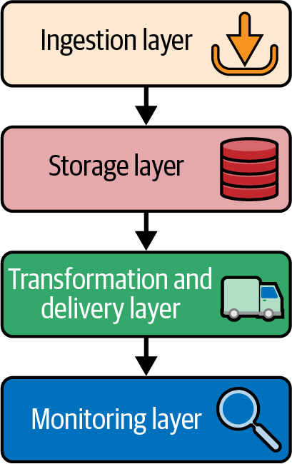
다음은 변환 및 전달 계층으로, 의도한 데이터 소비자가 소비할 수 있는 고품질 데이터를 생성하기 위해 비즈니스에서 정의한 여러 변환 및 계산을 수행합니다. 9장에서는 금융 데이터에 적용 가능한 핵심 변환 유형, 다양한 변환 프로세스의 계산 요구량, 데이터 전달을 위한 다양한 메커니즘을 살펴보며 이 계층을 철저히 다룰 것입니다.
마지막으로 모니터링 계층은 효율적이고 시의적절한 조치가 가능하도록 데이터 처리, 데이터 품질, 성능, 비용, 버그, 분석 오류와 관련된 문제를 지속적으로 모니터링하고 추적합니다. 10장에서는 이 계층을 전담하여 다룹니다.
FDEL 프레임워크를 올바르게 적용하면 여러 가지 이점을 얻을 수 있습니다. 예를 들어 모듈화와 책임 분리 측면에서 큰 혜택을 볼 수 있습니다. 회사의 규모가 클수록 데이터 엔지니어링 프로세스는 더욱 방대해지고 복잡해집니다. 이는 조직 관점에서 각 FDEL 계층에 전담 팀을 배정하는 것이 효과적일 수 있음을 시사합니다. 예를 들어 한 팀은 수집 계층을 최적화하고 보호하는 데 집중하고, 다른 팀은 저장 계층의 성능, 확장성, 보안을 보장하는 업무를 맡는 식입니다. FDEL은 한 계층의 피드백과 요구사항이 다른 계층의 설계, 제약 조건, 구현에 영향을 미칠 수 있는 반복적(Iterative) 프로세스라는 점을 유념해야 합니다.
다음 네 개 장에서는 이러한 계층들을 상세히 다루며, 금융 시장에서 나타나는 도메인 특화 과제를 조명하고 구체적인 예시를 제시하여 더 깊은 통찰을 제공할 것입니다.
금융 데이터 엔지니어링 스택 구축 기준
FDEL을 구현할 때는 각 계층을 설계하고 아키텍처를 구축하기 위해 최적의 도구와 기술, 즉 기술 스택(Technological stack)을 선택하는 것이 필수적입니다. 이는 결코 쉬운 일이 아닙니다. 데이터 엔지니어링 기술에 대해 간략히 검색해 보더라도 수백 가지의 서로 다른 도구와 프레임워크를 발견하게 될 것입니다. 선택할 수 있는 도구의 정글이 펼쳐져 있어 어디서부터 시작해야 할지 알기 어렵습니다. 더욱이 이러한 다양한 도구들은 함께 사용될 수도 있고, 데이터 수명주기 전반에 걸쳐 금융 데이터를 처리하기 위해 서로 경쟁하기도 합니다.
이 절에서는 금융기관이 기술적 의사결정을 내릴 때 활용할 수 있는 6가지 기준을 개괄합니다. 이러한 기준은 기초적이고 일반적인 지침 역할을 하지만 완전무결한 것은 아닙니다. 조직의 고유한 요구사항에 따라 추가적인 기준을 설정해야 할 수도 있습니다. 또한 이어지는 5개 장에서는 FDEL의 각 계층에 맞춤화된 보다 세부적인 기준들을 다룰 것입니다.
기준 1: 오픈소스 대 상용 소프트웨어
금융기관에서 매우 중요하고 격렬하게 논쟁되는 결정 중 하나는 독점 상용 소프트웨어와 오픈소스 소프트웨어 사이의 선택입니다. 독점 상용 소프트웨어는 사용자의 소스 코드 접근을 제한하는 유상 라이선스에 따라 배포됩니다. 반면 오픈소스 소프트웨어는 일반적으로 소스 코드를 열람, 사용, 수정, 판매 및 배포할 수 있는 라이선스와 함께 배포됩니다.
상용 소프트웨어의 주요 장점은 다음과 같습니다.
벤더의 책임성(Vendor accountability): 소프트웨어 공급업체가 빈번한 업데이트, 버그 수정, 보안 패치, 고객 지원을 보장합니다. 이는 통상 제공되는 서비스의 품질, 가용성, 성능 수준을 약정하는 벤더의 보증인 서비스 수준 협약(SLA, Service-Level Agreement) 을 통해 보장됩니다. SLA를 충족하지 못할 경우 벤더는 위약금을 지불해야 할 수 있습니다. 규제 및 보안 우려에서 비롯된 금융 시장의 위험 회피 문화로 인해 SLA와 보안은 금융 부문에서 독점 소프트웨어에 널리 의존하게 만드는 가장 중요한 두 가지 요인입니다. 벤더의 책임성과 SLA는 금융기관이 바젤 III와 같은 규제 프레임워크에 따른 의무 사항인 운영 리스크를 측정하고 관리하는 데 도움이 됩니다.2
제품 통합성(Product integrations): 벤더가 서로 다른 상용 제품 간의 매끄러운 통합을 보장하므로 이는 주요한 비용 절감 요인이 될 수 있습니다. 금융기관은 새로운 활동이나 프로젝트를 진행할 때 신뢰에 크게 의존합니다. 따라서 신뢰할 수 있는 소프트웨어 제공업체가 기존 제품군과 통합되는 신규 제품이나 서비스를 제공한다면 이를 채택할 가능성이 더 높습니다.
엔터프라이즈급 기능(Enterprise-grade features): 벤더가 확장성, 보안, 컴플라이언스를 포함하여 대기업에 특화된 기능을 제공합니다. 이는 엄격한 감사 및 모니터링 요구사항을 가진 대규모 금융기관에 특히 중요합니다.
사용자 친화적 경험(User-friendly experience): 상용 제품은 대개 사용하기 쉬운 인터페이스와 풍부한 문서 및 가이드를 제공합니다. 금융기관의 직원은 개발자라기보다는 사용자인 경우가 많으므로 복잡한 인터페이스보다 사용자 친화적인 인터페이스가 더 환영받기 쉽습니다.
반대로 상용 소프트웨어는 다음과 같은 단점을 수반할 수 있습니다.
비용: 상용 소프트웨어 라이선스는 매우 비쌀 수 있으며 예측하기 어려운 가변적 비용(예: 지원 수수료, 숨겨진 기능 비용)이 포함될 수 있습니다. 미션 크리티컬한 애플리케이션을 운영하는 대형 금융기관의 경우 위험이 비용보다 더 클 수 있습니다.
거대하고 무거운 제품(Bulky products): 많은 상용 소프트웨어 도구는 방대한 기능을 포함하는 단일 패키지로 제공됩니다. 일부 금융기관(예: 핀테크 기업)은 이러한 모든 기능이 필요하지 않아 도구가 제공하는 기능의 극히 일부만 사용하게 될 수 있습니다.
벤더 종속성(Vendor lock-in): 회사가 상용 도구에 의존할수록 오픈소스를 포함한 다른 대안으로 전환하기가 어려워집니다. 벤더 종속성은 네트워크 효과(사용자 기반이 늘어남에 따라 제품 가치가 증가함)와 위험 회피 성향(다른 솔루션으로 전환할 때의 불확실성)과 같은 요인으로 인해 더욱 강해집니다.
커스터마이징 부족: 상용 소프트웨어는 독점적이므로 금융 고객이 제품을 고유한 요구사항이나 고객 기대에 맞게 개작하거나 수정하지 못할 수 있습니다.
전통적으로 금융기관은 내부 통제 규칙, 정책, 표준, 절차 및 IT 감사 체크리스트 모두가 지원 계약에 대한 엄격한 요구사항을 규정하고 있어 독점 소프트웨어 쪽으로 기울어져 있었습니다. 대표적인 금융 서비스 소프트웨어 벤더로는 마이크로소프트, FIS 글로벌, SAP, 오라클, IBM, NCR 코퍼레이션 등이 있습니다.
오라클 데이터베이스: 왜 은행에서 널리 사용되는가?
금융기관이 전통적으로 상용 소프트웨어를 선호해 온 이유를 설명하기 위해 오라클 데이터베이스(Oracle Database)를 예로 들어보겠습니다. 대형 은행들이 핵심 업무에 어떤 유형의 데이터베이스 시스템을 사용하는지 궁금해했다면 그 답변에는 아마 오라클이 포함될 것입니다. 오라클은 금융기관 사이에서 가장 인기 있는 엔터프라이즈급 데이터베이스 시스템일 것입니다. 흥미롭게도 DB-Engines 랭킹에 따르면 2024년 현재 오라클은 전 세계에서 가장 인기 있는 데이터베이스 시스템으로 평가받고 있습니다.
오라클 코퍼레이션의 상용 SQL 데이터베이스 관리 시스템인 오라클 데이터베이스는 주로 금융기관에서 온라인 트랜잭션 처리(OLTP) 목적으로 사용됩니다. 신용, 계좌, 대출, 거래를 포괄하는 핵심 비즈니스 데이터를 저장하고 관리하는 데 사용됩니다.
시간이 지나면서 시장에 새로운 데이터베이스 시스템들이 등장했고 일부는 주목을 받고 있습니다. 그러나 현재까지도 오라클은 금융 서비스 분야에서 최고의 표준(골드 스탠더드)으로 남아 있습니다.
첫째, 오라클은 1979년부터 시장에 존재해 왔으므로 성숙하고 신뢰할 수 있는 제품으로 인정받습니다. 오랜 역사 속에서 오라클은 자사의 주력 제품에 지속적으로 기능을 추가하여 회사를 데이터베이스 기술의 선두에 올려놓았습니다. 수많은 기능을 제공함으로써 오라클 데이터베이스는 금융 부문에서 등장한 다양한 응용 분야, 요구사항 및 사용 사례에 부합할 수 있었습니다.
둘째, 오라클 데이터베이스는 윈도우와 다양한 버전의 유닉스에서 실행될 수 있어 유연합니다. 또한 대규모 환경을 위한 오라클 데이터베이스 엔터프라이즈 에디션부터 단일 사용자용 에디션인 오라클 데이터베이스 퍼스널 에디션에 이르기까지 다양한 오라클 데이터베이스 에디션이 제공됩니다. 오라클 데이터베이스 제품은 오라클 전용 하드웨어뿐만 아니라 온프레미스, 클라우드 또는 하이브리드 클라우드 설치 형태로 여러 서비스 제공업체를 통해 이용할 수 있습니다.
셋째, 오라클 고객은 회사의 자체 지원 팀이나 서드파티 컨설턴트를 통해 오라클 지원 서비스를 이용할 수 있습니다. 이를 통해 금융기관은 필요할 때 연락할 수 있는 신뢰할 수 있는 파트너가 있다는 안정감과 신뢰를 가질 수 있습니다.
결론적으로 성숙도, 안정성, 지원 체계는 장애와 위험에 대한 신뢰성을 제공하며, 이는 금융과 같은 미션 크리티컬 애플리케이션에 필수적입니다. 이것이 금융기관과 일반 시장에서 오라클의 높은 인기를 설명해 줍니다.
상용 금융 소프트웨어의 주요 대안은 오픈소스 소프트웨어입니다. 독점 솔루션과 달리 오픈소스는 일반적으로 무료로 라이선스가 부여되며, 개발과 유지 관리는 일반 대중 및/또는 아파치 재단(Apache Foundation)과 같은 협회가 주도합니다. 가장 인기 있는 오픈소스 라이선스 유형은 사용자가 소프트웨어를 취득, 수정, 배포, 서브라이선스 부여, 특허 출원할 수 있을 뿐만 아니라 독점 소프트웨어를 포함하는 상업적 목적으로 활용할 수 있도록 허용하는 Apache 2.0 라이선스입니다.
리눅스, PostgreSQL, 파이어폭스, 쿠버네티스, 파이토치, 아파치 스파크, 아파치 카산드라, 아파치 에어플로우 등 매우 다양한 오픈소스 소프트웨어 옵션이 존재합니다.
오픈소스의 주요 장점은 다음과 같습니다.
비용: 오픈소스 소프트웨어는 대개 무료 라이선스로 제공됩니다. 그럼에도 불구하고 상용 소프트웨어와 비교할 때 유지보수, 업그레이드, 기능 개발 비용과 같은 간접 비용이 발생할 수 있습니다.
커스터마이징: 누구나 소스 코드를 사용하고 수정할 수 있으므로 기업은 자사의 비즈니스 요구에 부합하는 새로운 기능을 직접 추가할 수 있습니다.
커뮤니티: 오픈소스 소프트웨어는 적극적으로 신규 기능을 추가하고 기존 버그를 수정하는 대규모 개발자 커뮤니티를 보유하는 경향이 있습니다. 커뮤니티 기여의 주요 장점은 다양한 배경과 경험을 가진 수많은 사람의 기술과 지식을 집약한다는 점입니다. 이는 궁극적으로 최종 솔루션이 시장에서 가장 우수한 결과물이 될 가능성을 높여줍니다.
투명성: 전체 코드베이스가 대중에게 공개되어 있으므로 블랙박스인 독점 소프트웨어와 달리 오픈소스 소프트웨어는 내부 동작에 대해 더 높은 투명성을 제공합니다.
반면 오픈소스 소프트웨어는 다음과 같은 단점에 직면할 수 있습니다.
지원: 사용자는 오픈소스 소프트웨어에서 버그를 자유롭게 보고하거나 새로운 기능을 요청할 수 있지만, 기여자들이 소프트웨어 유지 관리에 들이는 시간이 가변적이므로 해결에 시간이 걸리는 경우가 많습니다. 금융 결제와 같은 미션 크리티컬 애플리케이션에서는 이러한 지연이 용납되지 않을 수 있습니다.
문서화: 오픈소스 프로젝트는 최신의 상세한 문서와 사용 지침이 부족할 수 있습니다.
복잡성: 오픈소스 프로젝트의 발전은 버그 수정과 새로운 기능 도입을 위한 빈번한 업데이트로 특징지어집니다. 따라서 추가 기능으로 코드베이스가 커짐에 따라 이를 완전히 이해하기가 점점 더 복잡해질 수 있습니다.
호환성: 오픈소스 소프트웨어의 주요 문제는 다른 소프트웨어 애플리케이션과의 호환성 문제로, 제품 개발 및 통합 노력을 저해할 수 있습니다.
보안: 오픈소스 소프트웨어에서는 악의적인 행위자와 사이버 범죄자가 코드 취약점을 더 쉽게 찾아내 악용할 수 있습니다.
기밀성: 오픈소스는 커뮤니티 중심의 협업과 지식 공유라는 아이디어에 기반합니다. 금융기관의 경우 자사의 코드베이스가 기밀이거나 보호하고자 하는 경쟁 우위를 제공하는 경우 이를 외부에 공유하는 것이 불가능할 수 있습니다.
금융 서비스 분야에서 오픈소스 소프트웨어의 사용은 지난 몇 년 동안 크게 증가했습니다. 핀테크 오픈소스 재단(FINOS)이 발표한 보고서에 따르면 2022년에 금융 서비스 업계의 코드 기여자가 포함된 GitHub 리포지토리의 수가 43% 증가했습니다. 보고서에 따르면 금융기관이 오픈소스 프로젝트에 기여하는 대부분의 분야는 웹 개발, 클라우드 및 컨테이너화 소프트웨어, AI/ML, 지속적 통합/지속적 배포(CI/CD)와 관련이 있습니다.
이 모든 점을 고려할 때 오픈소스와 독점 소프트웨어 중 어떻게 선택해야 할까요?
첫째, 오픈소스와 독점 소프트웨어의 장단점은 구체적인 비즈니스 문제와 맥락에 따라 달라질 수 있으므로 모든 상황에 들어맞는 단 하나의 솔루션은 존재하지 않습니다. 어떤 경우에는 시장 참여자들 사이에 널리 인정받는 솔루션이 있을 수 있습니다. 예를 들어 높은 수준의 보안 표준과 신뢰할 수 있는 24/7 고객 지원이 필요한 애플리케이션이라면 상용 소프트웨어가 올바른 선택일 수 있습니다. 반면 AI를 활용하여 새로운 제품 기능을 구축할 가능성을 탐색하고 있다면 오픈소스 라이브러리를 사용하는 것이 유리할 수 있습니다. 오늘날 동일한 금융기관이 상용 소프트웨어와 오픈소스 소프트웨어를 병용하는 것은 흔한 일입니다.
참고
일부 상용 소프트웨어 제품은 오픈소스 프레임워크를 기반으로 구축됩니다. 이러한 프레임워크는 벤더에 의해 관리형 서비스(Managed service)로 제공되거나 별도의 솔루션을 구축하는 토대가 될 수 있습니다. 예를 들어 오픈소스 데이터베이스 관리 시스템인 PostgreSQL은 AWS가 제공하는 관리형 서비스인 Amazon Relational Database Service(RDS) for PostgreSQL의 기반이 됩니다. 반대로 독점 데이터 웨어하우징 서비스인 Amazon Redshift는 PostgreSQL을 기반으로 구축되었지만 AWS가 제공하는 별개의 독자 제품입니다.
둘째, 예산을 고려해야 합니다. 최첨단 금융 기술을 개발하는 소규모 스타트업이라면 예산이 제한적일 가능성이 큽니다. 이 경우 오픈소스를 사용하는 것이 최선의 선택일 수 있습니다. 반면 대규모 팀과 부서를 보유한 다국적 금융기관이라면 상용 소프트웨어에 비용을 지출하는 것이 버그 수정과 보안 문제 처리 시 팀의 시간과 노력을 절약해 주므로 더 효율적일 수 있습니다. 대기업은 부서와 팀 전반의 내부 운영을 표준화하는 솔루션을 제공하므로 상용 제품을 선호합니다.
셋째, 기술적 전문성 수준이 결정적인 요인입니다. 관리자나 회계사가 사용할 소프트웨어를 개발할 계획이라면 대규모 IT 부서가 없는 한 이러한 전문가들은 코드베이스를 이해하고 상호작용할 수 있는 소프트웨어 개발 전문 지식이 제한적일 가능성이 높습니다. 이 경우 벤더 소프트웨어가 골칫거리를 덜어줄 가능성이 큽니다. 반면 기관 내에 사용자를 지원하고 도울 수 있는 소프트웨어 엔지니어가 잘 갖추어져 있다면 오픈소스 소프트웨어가 제공하는 유연성과 개발의 자유를 활용하는 것이 가능할 것입니다.
넷째, 특정 소프트웨어 도구를 채택할 때의 시급성과 경쟁 우위에 미치는 영향을 고려해야 합니다. 한 금융기관이 오픈소스 도입에서 시장 대비 뒤처져 있다고 느낀다면 도입 프로세스를 가속화해야 할 수 있습니다. 그러나 회사가 잠재적 활용 방안을 위해 오픈소스를 시험적으로 검토하고 있는 단계라면 점진적으로 진행하는 것이 가능할 것입니다.
금융기관 자체 개발 독점 소프트웨어 (In-House Proprietary Financial Software)
많은 혁신적인 금융기관들이 주로 고객의 요구와 변화하는 기대에 부응하기 위해 자체 소프트웨어를 개발하며, 이는 서드파티 소프트웨어 벤더에 의존해서는 충족하기 어려울 수 있습니다. 예를 들어 미국의 금융기관인 JP모건 체이스는 새로운 금융 상품의 출시 기간(Time-to-market)을 단축하기 위해 고급 금융 리스크 관리 및 가격 책정 소프트웨어 시스템인 Kapital을 개발했습니다. 최근에는 파이썬 생태계를 활용하여 내부뿐만 아니라 외부 고객도 사용하는 트레이딩, 리스크 관리 및 분석을 위한 크로스 에셋 플랫폼인 Athena를 구축했습니다. JP모건 체이스의 전무이사 미샤 첼만(Misha Tselman)이 PyData 2017에서 발표한 내용에 따르면 Athena는 수천 명의 사용자를 보유하고 있으며, 1,500명 이상의 파이썬 개발자가 기여하고 있고, 150,000개 이상의 파이썬 모듈을 사용하고 있습니다.
또 다른 대표적인 예는 세계 최대 자산운용사인 블랙록(BlackRock)이 개발한 엔드투엔드 포트폴리오 및 투자 관리 플랫폼인 Aladdin입니다. 뛰어난 성공과 신뢰성을 바탕으로 Aladdin 플랫폼은 더 이상 단순한 내부 도구에 머무르지 않고 금융 부문이 작동하는 방식에 중대한 영향을 미치고 있습니다. 학자들은 플랫폼이 시장 활동을 촉진하는 데 중추적인 역할을 하는 이러한 시나리오를 설명하기 위해 플랫폼 경제(Platform economy) 라는 용어를 사용합니다.
이 주제에 대해 더 자세히 알아보고 싶다면 Dirk A. Zetzsche, William A. Birdthistle, Douglas W. Arner, Ross P. Buckley의 논문 “Digital Finance Platforms: Toward a New Regulatory Paradigm”, European Banking Institute (EBI) Working Paper Series No. 58 (2020): 273을 적극 추천합니다.
기준 2: 사용 편의성 대 성능 (Ease of Use Versus Performance)
소프트웨어나 데이터 기술을 선택할 때 복잡성과 성능 사이에서 빈번한 트레이드오프가 발생합니다. 소프트웨어 기술은 학습 곡선이 가파를 때 복잡해질 수 있습니다. 구문을 이해하거나 숙달하기 어렵고, 코드 내에서 관리해야 할 요소가 많으며, 설치와 사용이 까다롭고, 디버깅이 어려우며, 다른 컴퓨터에서 재실행하기 힘들고, 다른 소프트웨어와의 통합이 어렵고, 새로운 기능으로 확장하거나 배포하거나 다른 사람과 공유하기 어려울 수 있습니다. 반면 소프트웨어가 실행 시간, 지연 시간(레이턴시), 처리량(스루풋), I/O 접근, 메모리 사용량/점유 공간, 탄소 발자국, 의존성 및 패키지 관리, 확장성, 보안 또는 비즈니스 운영에 특화된 기타 커스텀 지표를 최적화한다면 고성능이라고 할 수 있습니다.
복잡성과 성능 사이에 트레이드오프가 존재하는 이유는 성능 최적화가 기술에 대한 저수준(로우레벨) 상호작용과 구성을 요구하는 경우가 많기 때문입니다. 수동 변속기 자동차와 자동 변속기 자동차를 운전하는 차이를 생각해 보십시오. 보다 구체적인 예를 들기 위해 프로그래밍 언어를 생각해 보겠습니다. C와 같은 프로그래밍 언어는 엄격한 구문 요구사항, 저수준 세부사항에 대한 노출, 수동 가비지 컬렉션, 정적 타이핑 및 수동 메모리 관리로 인해 많은 사람에게 다루기 까다로운 언어로 간주될 수 있습니다. 그러나 일단 C와 같은 언어로 작업하는 법을 배우면 성능상의 이점은 상당할 수 있습니다.
반면 파이썬과 같은 프로그래밍 언어는 친숙한 구문, 사용 편의성, 자동 가비지 컬렉션, 쉬운 통합성으로 널리 알려져 있습니다. 그러나 동적 타이핑에 대한 의존과 기계어로의 다단계 컴파일 프로세스와 같은 파이썬의 여러 특성으로 인해 속도 측면에서 C보다 성능이 떨어집니다.
하드웨어에도 동일한 논리가 적용됩니다. 예를 들어 엔지니어는 중앙 처리 장치(CPU), 그래픽 처리 장치(GPU), 현장 프로그래밍 가능 게이트 어레이(FPGA)와 같은 다양한 컴퓨터 프로세서와 가속기를 활용하여 다양한 작업을 수행할 수 있습니다.3 CPU는 컴퓨터의 주 프로세서로 폭넓은 범용 작업을 수행하는 데 탁월합니다. 그러나 특정 애플리케이션은 맞춤형 최적화(예: 높은 병렬성 또는 극도로 낮은 지연 시간)를 요구할 수 있으며, 이는 GPU나 FPGA와 같은 특수 프로세서를 사용하여 달성할 수 있습니다. 결정적으로 GPU와 FPGA를 사용하는 것은 더 복잡하며 내부 구조, 비용, 구현 원리에 대한 충분한 지식을 필요로 합니다.
참고
하드웨어와 소프트웨어 기술을 비교할 때는 주의를 기울여야 합니다. 겉보기만큼 모든 것이 단순하지는 않습니다. 예를 들어 GPU가 CPU보다 우수하다거나 C#이 파이썬보다 우월하다는 식의 주장을 담은 글을 접하는 것은 드문 일이 아닙니다. 일부 사실이 포함되어 있을 수 있지만 이러한 일반화에는 세 가지 문제가 있습니다. 첫째, 서로 다른 설계 원칙에 따라 제작된 기술을 직접 비교하는 것은 어려울 수 있습니다. 둘째, 기술과 그 설계 이면의 개념은 시간에 따라 변화하므로 과거에 우수했던 기술이 지금은 그렇지 않을 수 있습니다. 셋째, 평가 대상이 되는 작업에 따라 기술의 성능이 달라질 수 있습니다. 이 경우 권장하는 방법은 탄탄한 비교 기반을 도출할 수 있는 문헌상의 신뢰할 수 있는 레퍼런스를 찾는 것입니다.
전통적으로 금융 시장 참여자와 연구자들은 특정 비즈니스 및 기술 요구사항에 맞춰 수많은 기술을 철저히 테스트하고 벤치마킹해 왔습니다. 예를 들어 알고리즘 트레이딩, 몬테카를로 시뮬레이션, 자산 가격 책정, 이상 거래(사기) 탐지와 같이 시간에 민감하거나 대규모인 금융 애플리케이션의 경우 금융기관은 C, C++, Rust, Java와 같은 고성능 언어를 선호할 수 있습니다.4 그러나 덜 중요하거나 소규모인 애플리케이션, 또는 사용자가 소프트웨어 엔지니어링 내부 구조에 고도로 숙련되지 않은 상황에서는 파이썬, R, 줄리아(Julia)와 같이 보다 사용자 친화적인 언어가 더 나은 선택이 될 수 있습니다.
금융 시장에서의 초저지연 추구 (The Quest for Low Latency in Financial Markets)
낮은 지연 시간(초저지연, Low latency)은 금융 시장에서 성능을 논할 때 핵심적인 차별화 요소입니다. 일반적으로 지연 시간이라는 개념은 요청이 네트워크를 통해 목적지까지 이동하고 그에 대한 응답을 다시 받는 데 걸리는 시간을 설명하는 데 사용됩니다. 많은 금융 영역에서 시장 기회를 포착하거나 손실을 피하는 회사의 능력은 시장 이벤트에 얼마나 신속하게 대응하는지에 크게 좌우됩니다. 이는 전자 거래 시스템, 특히 고빈도 매매(HFT, High-Frequency Trading) 및 알고리즘 트레이딩에서 두드러집니다.
지연 시간에 영향을 미치는 측면은 여러 가지가 있습니다. 첫째, 트레이딩 시스템에 관여하는 수많은 참여자에게 금융 데이터가 수집되고 배포되는 속도와 관련이 있습니다. 금융기관이 시장 데이터에 접근하고 트레이딩 결정을 내리는 속도가 빠를수록 중요한 단기 기회를 수익화할 가능성이 높아집니다. 둘째 측면은 주문 체결 흐름의 속도와 관련이 있습니다. 주문이 목적지에 더 빨리 도달할수록 회사가 이익을 얻을 가능성이 커집니다. 데이터 접근 및 거래 처리 시간에서 단 1밀리초의 차이가 수백만 달러의 이익이나 손실로 이어질 수 있습니다. 예를 들어 둘 이상의 시장에서 발생하는 자산 가격의 미세한 차이로부터 이익을 얻으려는 차익거래 전략을 실행할 때 투자 회사는 시장이 균형에 도달하기 전까지의 아주 짧은 시간적 기회의 창만을 갖게 됩니다.
시장에서 무엇을 “낮은” 지연 시간으로 간주하는지는 고정되어 있지 않고 계속 진화하는 패러다임입니다. 금융 시장의 여러 부문은 초, 밀리초(1,000분의 1초), 마이크로초(100만분의 1초), 나노초(10억분의 1초)와 같이 서로 다른 시간 단위 수준에서 운영되고 개선을 이뤄냅니다. 예를 들어 실시간 결제는 초 또는 밀리초 수준에서 빠르다고 평가받을 수 있는 반면, 초단타 매매자들은 마이크로초와 나노초를 추구합니다.
금융 시장에서 수많은 변수가 지연 시간에 영향을 미칠 수 있습니다. 예를 들어 단기 시장 기회를 노리는 트레이딩 회사는 트레이딩 시스템과 거래소 간의 물리적 거리, 거래소 간의 거리(차익거래의 경우), 프로그래밍 언어 선택(예: C++ 또는 Rust), 하드웨어 선택(예: CPU 또는 FPGA), 트레이딩 프로그램의 효율성(예: 시간 복잡도), 케이블링(예: 구리선 대 광섬유 대 마이크로웨이브) 등의 영향을 받습니다.
막대한 수익 잠재력으로 인해 초저지연 트레이딩 회사들은 트레이딩 시스템의 속도를 높이기 위해 끊임없이 막대한 자원과 노력을 투자합니다. 한 가지 접근 방식은 브로커와 같은 중개인을 거치지 않고 트레이더와 투자자가 거래소의 오더북(호가창)에 직접 주문을 넣을 수 있도록 하는 거래 방식인 직접 시장 접근(DMA, Direct Market Access) 입니다.
FIX와 같은 표준화된 통신 프로토콜은 트레이더, 브로커, 거래소가 통일된 언어를 사용하여 거래 관련 데이터를 교환할 수 있게 해주므로 DMA에 필수적입니다(7장에서 FIX를 논의합니다). DMA는 일반적으로 정교하고 값비싼 기술 셋업을 수반합니다. 결과적으로 셀사이드(매도 측) 기업 및 전문 기술 제공업체에서 서비스 형태로 제공되는 것이 일반적입니다.
또한 거래소들은 시장 참여자들에게 속도 우위를 확보할 수 있는 기회를 제공하기 위해, 트레이딩 회사가 거래소 서버와 매우 가까운 위치나 심지어 동일한 데이터 센터 내에 자체 트레이딩 서버를 배치할 수 있는 옵션을 제공하기 시작했습니다.
코로케이션(Colocation, 동일 장소 배치) 이라 불리는 이 전략을 통해 트레이딩 회사는 거래소 서버에 데이터가 나타나는 즉시 소스로부터 직접 스트리밍되는 데이터 피드를 통해 금융 데이터에 접근할 수 있습니다. 코로케이션은 일반 투자자나 마켓메이커가 나중에 정보를 받게 되어 대응할 수 있는 이점이 줄어들기 때문에 금융 시장에서 형평성 문제를 야기하기도 했습니다.
금융 시장에서 초저지연을 달성하기 위한 또 다른 방향은 현장 프로그래밍 가능 게이트 어레이(FPGA)와 같은 특수 하드웨어의 사용에 의존하는 것입니다. FPGA는 제조 후에도 원하는 목적과 요구에 맞게 프로그래밍할 수 있는 구성 가능한 형태의 집적 회로입니다. 이에 따라 FPGA는 나노초 단위로 시장 이벤트에 반응하고 주문을 처리하며, 복잡한 병렬 연산을 효율적으로 수행하는 시스템을 구축하기 위해 금융 시장에서 널리 채택되어 왔습니다.
기준 3: 클라우드 대 온프레미스
오늘날의 기술 환경에서 클라우드 기반 인프라와 온프레미스 인프라 사이의 선택은 중대하고 결정적인 기술적 선택으로 부상하고 있습니다. 온프레미스 서버 인프라에서 회사는 저장 및 연산 목적으로 일련의 서버(흔히 범용 상용 서버라고 함)를 직접 소유, 제어 및 유지 관리합니다. 반면 회사는 클라우드를 사용하여 서드파티 클라우드 공급업체에서 서버를 호스팅하거나 임대할 수 있으며, 벤더의 관리형 서버 및 서비스를 직접 사용할 수도 있습니다.
온프레미스와 클라우드 모두 장단점이 있으며 올바른 결정을 내리는 것은 상당히 까다로울 수 있습니다. 일반적으로 온프레미스는 많은 사람에게 서버 인프라를 관리하는 전통적인(또는 레거시) 방식으로 여겨지는 반면, 클라우드는 현대적이고 사용자 친화적인 접근 방식을 나타냅니다. 그러나 이것이 온프레미스는 나쁘고 클라우드는 좋다는 것을 의미하지는 않습니다. 두 솔루션의 주요 차이점과 기능을 더 자세히 살펴보겠습니다.
온프레미스 (On premises)
온프레미스 환경에서 금융기관은 자체 서버와 데이터 인프라에 대해 전적인 책임을 집니다. 이는 기관이 서버, 컴퓨팅 환경, 네트워킹, 보안, 확장성 정책, 로그 및 사용자 접근을 직접 소유하고 구성하며 관리함을 의미합니다.
짐작할 수 있듯이 이 인프라 선택의 주된 장점은 디지털 자산에 대한 완전한 통제권을 갖는다는 점입니다. 올바르게 관리된다면 온프레미스 인프라는 최고의 보안을 보장할 수 있습니다. 모든 데이터와 소프트웨어가 조직의 사내 물리적 공간에 상주하므로 안전함과 평온함을 제공합니다. 보안은 금융과 같은 규제가 엄격한 비즈니스에서 가장 중요한 관심사이므로 온프레미스는 매우 전형적인 선택입니다.
그럼에도 불구하고 온프레미스 접근 방식은 몇 가지 잠재적인 단점을 가지고 있습니다. 비용이 아마도 가장 큰 문제일 것입니다. 온프레미스 인프라를 유지 관리하기 위해 기관은 소프트웨어 및 하드웨어 유지보수, 가용성 보장, 업데이트, 보안, 라이선스 구매, 사용자 지원을 전담하는 전문 IT 부서를 두어야 합니다. 이러한 비용은 특히 대규모 기관이거나 관리 및 사용 관행이 부실할 경우 기하급수적으로 증가할 수 있습니다.
팁
비용이 온프레미스 솔루션의 항상 불리한 요소만은 아니라는 점을 명심하십시오. 고품질 표준뿐만 아니라 소프트웨어 및 하드웨어 친화적 모범 사례에 따라 구성되고 관리된다면 온프레미스가 가장 비용 효율적인 솔루션이 될 수 있습니다. 예를 들어 2023년 X(구 트위터)는 클라우드에서 자체 온프레미스 서버로 데이터와 워크로드를 이전하는 클라우드 철수(Cloud exit) 전략을 실행했다고 발표했습니다. 이 조치로 클라우드 데이터 스토리지 규모가 60% 감소하고 클라우드 데이터 처리 비용이 75% 절감되었습니다.
두 번째 단점은 확장성(Scalability)입니다. 온프레미스 환경에서 기관은 직접 관리하는 특정 수의 서버를 보유합니다. 인프라가 부하를 감당할 수 있는 한 문제는 없습니다. 그러나 부하가 현재 서버 인프라의 처리 용량을 훨씬 초과하여 증가하면 시스템 다운타임이 발생하거나 추가 서버를 증설해야 합니다. 서버를 추가하는 것은 비용과 시간이 많이 소요될 수 있으며, 일단 추가하고 나면 단순히 제거하여 반품할 수도 없습니다. 이 문제에 대한 한 가지 해결책은 항상 여분의 서버 용량을 확보하는 오버프로비저닝(Overprovisioning)입니다. 그러나 이 전략은 사용하지 않는 유휴 자원으로 인해 추가 비용을 초래할 수 있습니다.
세 번째 단점은 기관이 제품 및 기능 개발에 들이는 시간이 줄어들고 서버 유지보수와 시간 소모적인 기술적·관료적 절차에 더 많은 시간을 쏟게 될 수 있다는 점입니다. 대형 금융기관은 이를 감내할 수 있지만 핀테크 기업과 같은 소규모 기관에는 이러한 부담이 지속 가능하지 않을 수 있습니다.
메인프레임 아키텍처 (Mainframe Architecture)
금융 부문을 논할 때 메인프레임(Mainframe) 을 빼놓기는 어렵습니다. 한마디로 메인프레임은 방대한 양의 메모리와 처리 능력을 갖춘 고성능, 확장성, 복원력을 지닌 컴퓨터입니다. 메인프레임 컴퓨터의 주된 장점은 신뢰성, 보안성, 가용성, 높은 처리량, 낮은 지연 시간을 보장하면서 동시에 대규모의 동시 트랜잭션과 요청을 처리할 수 있는 능력입니다.
이러한 특성 덕분에 메인프레임은 은행 업무, 고객 주문 처리, 결제 처리 및 매일 수십억 건의 트랜잭션을 처리하는 다양한 미션 크리티컬 작업과 같은 핵심 금융 애플리케이션에 매우 적합합니다. 현금자동입출금기(ATM)나 소매점의 POS 단말기를 사용해 본 적이 있다면 여러분의 요청은 어느 시점에선가 메인프레임을 거쳤을 가능성이 큽니다.
메인프레임 시장의 선구자는 IBM으로, 1952년부터 메인프레임 컴퓨터를 생산해 왔습니다. IBM 메인프레임은 복원력, 보안, 성능에 대한 다양한 요구사항을 충족하기 위해 오랜 시간에 걸쳐 진화해 왔습니다. IBM이 제공하는 주력 메인프레임 시스템은 IBM z15, IBM z14, IBM z13 등 다양한 세대를 포함하는 IBM Z 시스템입니다. 이러한 메인프레임을 보완하기 위해 IBM의 독점 운영체제인 IBM z/OS, 고객 정보 제어 시스템(CICS)으로 알려진 트랜잭션 처리 시스템, 관계형 데이터베이스 관리 시스템인 DB2, 미들웨어 통신 시스템인 IBM MQ 등 다양한 관련 제품군이 제공됩니다. 이러한 통합되고 안전한 생태계를 통해 IBM은 금융 부문, 특히 결제 및 트랜잭션 처리 분야에서 상당한 시장 점유율을 유지할 수 있었습니다.
클라우드 컴퓨팅 (Cloud computing)
온프레미스 모델의 주요 대안이자 강력한 경쟁자는 클라우드입니다. 이 책에서 클라우드는 다음과 같이 정의됩니다.
네트워크 시스템을 통해 컴퓨팅 및 스토리지 서비스의 개발과 제공을 가능하게 하는 범용 기술.
이 정의에서 범용 기술(General-purpose technology) 이라는 용어는 경제 전반의 여러 부문에 걸쳐 도입되고 영향을 미치며 기존의 사회적, 경제적 구조에 지대한 영향을 주는 기술을 의미합니다. 범용 기술의 대표적인 예로는 전기, 인터넷, 인공지능이 있습니다. 클라우드는 기업, 정부, 병원, 연구소, 금융기관, 교육기관, 군대 등 광범위한 응용 분야와 채택을 고려할 때 이미 범용 기술로 자리 잡았습니다.5
클라우드에서 가장 중요한 점은 단순히 제공하는 서비스뿐만 아니라 그것이 제공되는 방식입니다. 클라우드를 구동하는 기본 기술의 상당수는 이미 존재하며 다양한 애플리케이션에서 활용되고 있습니다. 여기에는 예를 들어 소프트웨어 및 하드웨어 가상화 기술, 멀티코어 기술, 네트워킹(네트워크 컴퓨팅, 소프트웨어 정의 네트워킹, 소프트웨어 정의 보안, WAN), 데이터 센터, 데이터베이스 관리 시스템, 파일 스토리지 시스템, 오픈소스 도구, 머신러닝, 데브옵스(DevOps) 등이 포함됩니다. 그러나 클라우드를 통해 이러한 기술들은 추상화되고 새롭게 아키텍처화되어 네트워크 시스템을 통해 확장 가능하고 가용성이 높으며 관리형의 종량제(Pay-as-you-go) 서비스를 제공할 수 있게 되었습니다. 퍼블릭 인터넷이 주된 전달 네트워크이지만, 사내 온프레미스나 클라우드 공급자가 관리하는 데이터 센터에서 운영되는 프라이빗 클라우드를 구축하는 것도 가능합니다. 다음 절에서는 퍼블릭, 프라이빗, 하이브리드 클라우드의 차이점을 자세히 살펴보겠습니다.
클라우드 제품은 크게 세 가지 범주로 분류할 수 있습니다.
서비스형 소프트웨어(SaaS, Software-as-a-service): SaaS 제품은 인터넷을 통해 고객에게 제공되며 클라우드 공급업체에 의해 완전히 관리 및 유지보수됩니다. SaaS 솔루션을 사용하면 사용자는 구독 플랜을 확인하는 즉시 제품을 쉽게 시작할 수 있으며 구성, 소프트웨어 라이선스, 설치, 업그레이드에 대해 신경 쓸 필요가 없습니다. 다만 누가 SaaS에 접근할 수 있고 어떤 권한을 가지는지는 확인해야 할 수 있습니다. SaaS 제품의 예로는 Gmail, 구글 드라이브, 빅쿼리(BigQuery), 드롭박스, 스노우플레이크(Snowflake) 등이 있습니다. 때로는 서비스형 데이터베이스(DBaaS)나 서비스형 AI와 같이 보다 구체적인 이름이 붙기도 합니다.
서비스형 플랫폼(PaaS, Platforms-as-a-service): PaaS는 API와 운영체제 서비스를 통해 애플리케이션 개발을 위한 온라인 플랫폼을 제공합니다. PaaS 소비자는 인프라, 스토리지, 네트워킹은 제어하지 않지만 호스팅 환경의 설정, 애플리케이션, 접근 정책을 제어합니다. SaaS 앱이 전형적인 PaaS 사용자입니다. PaaS의 예로는 Google App Engine과 DigitalOcean App Platform이 있습니다.
서비스형 인프라(IaaS, Infrastructure-as-a-service): IaaS는 가장 하위 수준의 클라우드 서비스 형태로, 원시 물리적 자원(CPU, RAM, 스토리지, 네트워킹)을 서비스 형태로 제공하며 사용자는 인스턴스 구성에 대해 거의 완전한 제어권을 갖습니다. 대부분의 SaaS 및 PaaS 앱은 IaaS를 기반으로 합니다. IaaS의 예로는 AWS EC2와 Google Compute Engine이 있습니다.
참고
클라우드 시장은 공급업체, 서비스 및 제품으로 이루어진 복잡한 생태계로 성장하고 있습니다. 클라우드 공급자(Cloud provider)와 클라우드 기반 서비스 제공자(Cloud-based service provider) 사이에 차이가 있음을 염두에 두어야 합니다. 클라우드 공급자는 전 세계에 분산된 수많은 데이터 센터를 직접 소유하고 제공합니다. 이러한 공급자를 하이퍼스케일러(Hyperscalers)라고 부르며 AWS, 마이크로소프트, 구글과 같은 주요 기업이 포함됩니다. 반면 클라우드를 통해 서비스를 개발하고 제공하는 수많은 클라우드 기반 서비스 제공자가 존재합니다. 가장 대표적인 예가 AWS, 구글, 마이크로소프트 클라우드 위에서 구동되는 클라우드 기반 데이터 웨어하우스 솔루션을 제공하는 스노우플레이크(Snowflake)입니다.
금융 부문에서 클라우드 컴퓨팅은 특히 혁신을 촉진하고 비용을 절감하는 수단으로서 많은 관심을 끌어왔습니다. 맥킨지의 2022년 보고서에 따르면 대부분의 금융기관의 주요 의제에 클라우드 도입이 포함되어 있습니다. 주요 클라우드 공급업체/서비스 제공업체와 금융기관 간의 수많은 전략적 파트너십이 발표되었습니다. 예를 들어 세계 최대 자산운용사인 블랙록은 자사의 투자 플랫폼인 Aladdin의 클라우드 버전을 제공하기 위해 클라우드 데이터 웨어하우스 제공업체인 스노우플레이크와 파트너십을 맺었습니다. 골드만삭스는 금융 부문을 위한 클라우드 기반 데이터 관리 및 분석 솔루션을 만들기 위해 AWS와의 협업을 구축했습니다. JP모건 체이스는 Fusion을, 스테이트 스트리트(State Street)는 Alpha를 구축했으며, 둘 다 투자 및 금융 데이터 관리를 위한 클라우드 기반 통합 플랫폼입니다.
클라우드로의 이전(마이그레이션)은 금융기관에 다음과 같은 수많은 이점을 제공할 수 있습니다.
- 자원을 프로비저닝하고 관리하는 용이성에 힘입어 시장 출시 시간(Time-to-market) 단축
- 하드웨어를 구매하고 불필요한 비용을 들이지 않고도 개발자가 새로운 아이디어를 테스트하고 실험할 수 있어 혁신 촉진
- 사내에서 자체 개발하려면 매우 큰 비용이 드는 클라우드 제공업체의 첨단 기술에 대한 지속적인 접근성 확보
- 사용한 만큼만 비용을 지불하는 종량제 모델을 통한 비용 절감 (고정 IT 자본 지출에서 수요에 따른 가변 운영 비용으로 비용 구조 전환)
- 물리적 서버를 구매하지 않고도 현재 및 계획된 요구에 따라 자원을 탄력적으로 확장/축소(스케일업/스케일다운)할 수 있는 확장성
- 자원, 파일 및 개념 증명(PoC) 데모를 쉽고 빠르게 공유할 수 있어 협업 개선
- 신원 및 접근 관리(IAM), 백업, 암호화, 중앙 집중식 관리, 감사 로그와 같은 고급 보안 및 데이터 보호 기능
- 클라우드 공급자는 데이터 저장 및 자원 프로비저닝을 위한 멀티리전(다중 지역) 옵션을 제공합니다. 이는 가용성을 강화하여 운영 복원력을 높여줍니다. 이러한 기능은 금융 애플리케이션에 매우 중요합니다. 예를 들어 지점이 없는 디지털 뱅킹(인터넷 전문은행) 의 경우 하루 중 언제라도 온라인 서비스가 항상 켜져 있고 사용 가능해야 합니다.
- 규제 준수(컴플라이언스): 클라우드 컴퓨팅의 멀티리전 기능을 통해 금융기관은 특정 위치의 데이터 프라이버시 요구사항을 충족하기 위해 고객 데이터를 해당 특정 리전에 고정(Pin)할 수 있습니다.
논리적으로 다른 대부분의 기술과 마찬가지로 클라우드 컴퓨팅에도 단점이 존재합니다. 예는 다음과 같습니다.
- 인터넷 접속 의존성: 인터넷 장애나 서비스 중단 발생 시 접근 불능 위험 증대
- 기본 인프라 및 데이터에 대한 완전한 통제권 부족
- 보안 및 개인정보 보호에 대한 우려
- 규제 제약
- 기존 레거시 시스템과의 통합 과제
- 벤더 종속성(Vendor lock-in)
- 원래의 이전 목표를 무색하게 만드는 예상치 못한 비용과 소비 패턴
클라우드는 안전한가? (Is the Cloud Secure?)
클라우드 기술에 대한 주된 인식 중 하나는 사내 온프레미스 인프라에 데이터를 호스팅하는 것에 비해 보안 수준이 낮다는 점입니다. 이러한 견해의 근본적인 근거는 제3자의 위치로 데이터를 이전하는 것이 해당 데이터에 대한 완전한 소유권과 통제권을 포기하는 것을 의미하며, 인터넷을 통해 데이터에 접근할 가능성이 높기 때문에 외부에 노출된다는 생각 때문입니다.
이러한 우려는 합리적이지만 클라우드 컴퓨팅이 그렇게 불안전한 것은 아닙니다. 클라우드 서비스 제공업체는 클라우드 보안에 막대한 투자를 단행하고 보안 전문가를 정기적으로 채용하며 최첨단 보안 조치를 적용합니다. 예를 들어 2023년 8월 구글은 초당 3억 9,800만 건의 요청(rps)에 달하는 인프라에 대한 대규모 서비스 거부(DoS) 공격을 성공적으로 차단했습니다. 맥락을 짚어보자면 이 2분간의 공격은 2023년 9월 한 달 동안 위키피디아 전체 페이지 뷰 수보다 더 많은 요청을 생성했습니다.
그럼에도 불구하고 중대한 결정을 내리기 전에 클라우드 보안을 신중하게 검토하고 평가해야 합니다. 클라우드 벤더의 인증 현황과 다양한 부문의 보안 규정 및 표준에 대한 준수 여부를 확인할 것을 강력히 권장합니다. 보안 인증의 예로는 다음이 있습니다.
ISO/IEC 27001:2022: 정보 보안, 사이버 보안 및 개인정보 보호
ISO/IEC 27017:2015: 클라우드 서비스 제공 및 사용에 적용되는 정보 보안 통제 지침
ISO/IEC 27018:2019: PII 프로세서 역할을 하는 퍼블릭 클라우드에서의 개인식별정보(PII) 보호 실무 규약
클라우드 공급업체는 종종 국가, 부문, 지역별로 그룹화된 포괄적인 컴플라이언스 제품 목록을 제공합니다. 예는 다음과 같습니다.
- 구글의 금융 서비스를 위한 컴플라이언스 서비스
- AWS의 컴플라이언스 프로그램 및 인증
- 마이크로소프트의 컴플라이언스 제품군
또한 대부분의 클라우드 공급업체는 금융 부문의 요구에 맞춘 특화 제품군을 보유하고 있습니다. 대표적으로 IBM의 금융 서비스를 위한 클라우드, 구글의 금융 서비스를 위한 클라우드, 금융 서비스를 위한 AWS 클라우드 솔루션, 금융 서비스를 위한 Microsoft Cloud, 금융 서비스를 위한 Snowflake AI Data Cloud가 있습니다. 이러한 클라우드 솔루션의 차별점은 데이터 보호, 개인정보 보호, 보안, 이상 거래(사기) 탐지 및 금융기관이 요구하는 기타 여러 기능에 집중한다는 점입니다.
고도의 기밀 금융 데이터에 대한 클라우드 서비스의 적합성을 평가하기 위해 AWS의 일리야 엡슈테인(Ilya Epshteyn)은 5가지 핵심 요소로 구성된 프레임워크를 제안했으며, 이를 일반적인 지침의 한 예로 추천합니다.
클라우드 마이그레이션 결정을 고려할 때는 기관의 목표 및 요구사항을 클라우드가 제공하는 것과 일치시키는 클라우드 마이그레이션 전략을 통해 수행되어야 함을 명심해야 합니다. 그렇지 않으면 과도한 비용, 기술적 한계, 보안 및 규제 준수 문제, 확장성 및 통제력 상실과 같은 예상치 못한 문제에 직면할 수 있습니다.
클라우드 마이그레이션 전략에 대한 완전한 논의는 이 책의 범위를 벗어납니다.6 그러나 거시적인 관점에서 볼 때 클라우드 전략은 무엇보다도 경제적 전략입니다.7 클라우드로의 이전이 비용을 증가시키거나 비용 또는 수익에 중대한 영향을 미치지 않는다면 가치가 없을 수 있습니다. 클라우드 전략의 투자 수익률(ROI)을 계산하고 분석에 따라 점진적으로 진행하는 방안을 고려하십시오. 예를 들어 초기에는 머신러닝 목적을 위해 분석 데이터를 클라우드 기반 관리형 데이터 웨어하우스 서비스로 마이그레이션하는 것이 더 매력적으로 보일 수 있습니다. 이어서 다른 유형의 데이터를 데이터 레이크, NoSQL 데이터베이스 및 기타 데이터 저장소로 이전할 수 있습니다. 이것이 유익하다면 가상 머신을 마이그레이션하고 점차 인프라의 나머지(또는 상당 부분)를 이전하는 것을 고려할 수 있습니다.8
둘째, 클라우드 마이그레이션이 비즈니스 모델과 가치 창출 논리에 미칠 잠재적 영향을 분석해야 합니다. 예를 들어 기업은 웹 기반 서비스 및 제공 메커니즘, 사용량 기반 지출 모델, 관리형 서비스, 공동 책임 모델에 익숙해져야 합니다.9
셋째, 클라우드의 기술적 한계와 그것이 비즈니스 요구사항에 미치는 영향을 고려해야 합니다. 클라우드 기술은 매우 강력하지만 한계가 있습니다. 이러한 한계 중 일부는 기술 자체에서 본질적으로 기인하거나(예: PostgreSQL 데이터베이스의 연결 수 제한), 가상 머신에 할당되는 RAM이나 CPU 용량을 제한할 수 있는 클라우드의 공유 자원 모델과 같은 클라우드 관련 제약에서 비롯됩니다.
넷째, 시스템의 복원력과 보안을 유지하기 위해 회사의 데이터 거버넌스 및 규제 준수 요구사항을 전략적으로 면밀히 평가해야 합니다. 클라우드 서비스는 사용자 친화적이고 비교적 사용하기 쉽습니다. 그러나 이러한 편리함 이면에는 클라우드 서비스를 오용하고 무질서한 아키텍처를 만들 위험이라는 과제가 도사리고 있습니다. 이는 결국 클라우드에 호스팅하는 데이터와 인프라의 통제 수준과 품질에 영향을 미칠 수 있습니다.
기준 4: 퍼블릭 대 프라이빗 대 하이브리드 클라우드
전 세계적인 클라우드 컴퓨팅의 채택과 함께 퍼블릭, 프라이빗, 하이브리드라는 세 가지 클라우드 모델이 부상했습니다. 이 절에서는 각 모델의 주요 특징을 살펴보고 금융기관과의 관련성을 설명합니다.
퍼블릭 클라우드 (Public cloud)
퍼블릭 클라우드 모델에서 기본 인프라(컴퓨팅, 스토리지, 네트워크 등)는 서드파티 벤더가 소유하고 관리하며, 사용자는 공용 인터넷을 통해 접근합니다. 퍼블릭 클라우드 공급자의 예로는 아마존 웹 서비스(AWS), 구글 클라우드, 마이크로소프트 애저, IBM 클라우드, 오라클 등이 있습니다. 퍼블릭 클라우드는 가장 대중적인 모델이며 기본 선택지로 채택되는 경우가 많습니다.
퍼블릭 클라우드의 핵심 특징은 멀티테넌시(Multitenancy, 다중 테넌시)로, 클라우드 서비스 사용자들이 가상화된 환경을 통해 격리된 상태를 유지하면서 기본 인프라를 공유하는 것을 의미합니다. 멀티테넌시를 통해 클라우드 벤더는 자원 활용을 최적화하고 비용을 절감할 수 있습니다.
멀티테넌시로 인해 퍼블릭 클라우드 모델은 공동 책임 원칙(Shared responsibility principle) 을 표방하며, 클라우드 공급자와 사용자가 퍼블릭 클라우드에 호스팅된 서비스와 데이터의 보안을 지키기 위해 서로 구별되지만 중첩된 책임을 집니다. 클라우드 공급자는 물리적 인프라 보안을 감독하고 고객 데이터와 자원 간의 논리적 분리를 유지합니다. 동시에 고객은 사용자 접근 및 권한, 데이터 암호화, 백업, 다중 요소 인증과 같은 애플리케이션 수준의 보안을 보장할 책임이 있습니다.
퍼블릭 클라우드의 주요 장점은 다음과 같습니다.
단순성: 퍼블릭 클라우드 공급자는 다양한 부문과 고객의 폭넓은 요구를 충족하기 위해 서비스의 사용 편의성에 집중합니다.
유연한 가격 책정: 퍼블릭 클라우드 사용자는 사전 약정된 기간 동안 자원을 예약하여 할인 혜택을 누리는 동시에 온디맨드 방식으로 사용한 만큼만 지불할 수 있습니다.
확장성: 클라우드 공급자는 다양한 자원 요구를 수용할 수 있도록 인프라를 전략적으로 계획하고 프로비저닝하여 고객이 필요할 때 언제든 필수 자원에 접근할 수 있도록 보장합니다.
최소한의 구성 및 유지보수 부담: 클라우드 공급자가 물리적 서버를 호스팅하는 데이터 센터를 직접 관리하고 유지보수합니다.
반면 퍼블릭 클라우드는 다음과 같은 이유로 이상적이지 않을 수 있습니다.
- 데이터가 제3자의 위치에 저장되고 공용 인터넷을 통해 접근되므로 데이터 기밀성 및 보안 우려 발생
- 대규모 애플리케이션, 잘못 계산된 자원 요구량 또는 예상치 못한 수요 급증 시 과도한 비용 발생 가능
- 제한적인 인프라 통제력
보안 및 기밀성 요구사항을 감안할 때 클라우드 도입을 고려하는 금융기관에 퍼블릭 클라우드는 가장 위험한 옵션으로 느껴질 수 있습니다. 그러나 머신러닝과 같이 기밀성이 낮은 유형의 데이터에 사용된다면 퍼블릭 클라우드는 훌륭한 솔루션이 될 수 있습니다. 금융기관 중에서도 핀테크 기업은 제품 다양성과 유연성 측면에서 제공되는 추가적인 기능들이 혁신에 이상적이므로 퍼블릭 클라우드의 주요 사용자입니다.
퍼블릭 클라우드에서의 설정 오류 위험: 캐피털원 데이터 침해 사례
퍼블릭 클라우드 서비스를 사용할 때 가장 치명적인 보안 위협은 클라우드 설정 오류(Cloud misconfiguration)입니다. 퍼블릭 클라우드는 공동 책임 원칙에 기반하기 때문에 고객이 자원에 대한 접근 권한을 잘못 설정하여 사이버 범죄자의 공격에 취약해질 수 있습니다. 예를 들어 자원이 실수로 외부에 공개되거나 과도한 권한이 부여되어 민감한 데이터에 접근하는 데 쉽게 악용되는 경우가 흔한 설정 오류입니다.
2019년 미국 금융회사인 캐피털원(Capital One)에서 발생한 클라우드 데이터 침해 사고로 인해 10만 건 이상의 사회보장번호, 신용카드 세부 정보, 고객 금융 정보가 도난당했습니다. 이 침해는 권한 설정의 오류로 인해 캐피털원이 고객 데이터를 저장하는 데 사용하던 스토리지 서비스인 AWS S3의 데이터에 특정 리소스가 접근할 수 있게 되면서 발생했습니다. 잘못 구성된 리소스가 공격을 받아 S3에 저장된 고객 데이터에 접근하는 통로로 악용되었습니다.
클라우드 공급업체는 사용자가 클라우드 설정 오류 문제를 감지하고 완화할 수 있도록 돕는 조치들을 도입했습니다. 그럼에도 불구하고 퍼블릭 클라우드 서비스를 사용하는 경우 클라우드 설정 오류와 취약점 위험을 최우선적으로 다룰 것을 강력히 권장합니다.
프라이빗 클라우드 (Private cloud)
프라이빗 클라우드 모델에서 조직은 타인과 공유되지 않는 전용 클라우드 인프라를 보유합니다. 전용 인프라는 조직이 직접 소유하고 호스팅할 수도 있고, 조직이 소유하고 서드파티 벤더에 위탁 호스팅할 수도 있으며, 벤더가 소유하고 조직이 임대할 수도 있습니다. 프라이빗 클라우드의 등장은 주로 데이터 센터를 보유한 대기업들이 퍼블릭 클라우드 모델을 내부적으로 복제하려는 시도에서 비롯되었습니다.
프라이빗 클라우드의 주요 장점은 통제력과 보안성으로, 금융 서비스와 같은 수많은 규제 산업에 이상적인 솔루션이 됩니다. 금융기관이 자체 데이터 센터에 프라이빗 클라우드를 구축하고 배포하는 경우 보안은 전적으로 해당 기관의 책임입니다. 프라이빗 클라우드가 서드파티 데이터 센터에 배포되는 경우 서버의 물리적 보안은 클라우드 공급업체의 책임입니다. 두 경우 모두 데이터 보안과 사용자 접근 관리는 기관의 책임입니다.
프라이빗 클라우드의 주요 단점은 특히 기관 내부에서 완전히 관리할 경우 설정하고 배포하기가 훨씬 어렵다는 점입니다. 프라이빗 클라우드는 인프라와 IT 인력에 대한 막대한 초기 투자를 요구할 수 있으며 유지보수와 인력 측면에서 지속적인 비용을 초래합니다.
프라이빗 클라우드는 다른 기능보다 보안과 규제 준수를 중시하는 경향이 있는 금융기관들 사이에서 상당한 관심을 받아왔습니다. 대규모 데이터 센터를 이미 보유하고 있는 대형 금융기관은 프라이빗 클라우드 환경으로 전환하거나 개편함으로써 큰 혜택을 볼 수 있습니다. 예를 들어 뱅크오브아메리카는 내부 프라이빗 클라우드 구축에 막대한 투자를 단행했으며, Business Insider 기사에 따르면 이를 통해 연간 20억 달러의 인프라 지출을 절감하고 서버 수를 20만 대에서 7만 대로, 데이터 센터를 60개에서 23개로 줄였습니다. 이러한 감축은 가상화 기술을 활용하여 서버의 필요성을 줄였기 때문에 가능했습니다.
현실적이고 실용적인 대안으로 클라우드 공급업체는 퍼블릭 클라우드 인프라 내에 배포되는 가상 사설 클라우드(VPC, Virtual Private Cloud)를 배포할 수 있는 옵션을 제공합니다. VPC는 프라이빗 클라우드의 보안성과 신뢰성, 그리고 퍼블릭 클라우드의 확장성과 편의성이라는 두 마리 토끼를 모두 잡을 수 있는 최선의 선택을 제공합니다. VPC를 사용하면 금융기관은 고도의 기밀 데이터를 다루는 고객 워크로드를 위해 컴퓨팅 자원과 네트워크 트래픽을 안전하게 격리할 수 있습니다.
하이브리드 클라우드 (Hybrid cloud)
하이브리드 클라우드 모델은 퍼블릭 클라우드와 프라이빗 클라우드를 결합하여 두 모델의 장점을 모두 취합니다. 하이브리드 환경에서 프라이빗 클라우드는 고객 거래 및 재무 보고와 같은 기밀 데이터를 수반하는 업무에 주로 사용되는 반면, 퍼블릭 클라우드는 로그 분석, 머신러닝, 웹 기반 애플리케이션과 같은 대용량의 덜 민감한 업무에 사용됩니다. 퍼블릭 클라우드는 프라이빗 클라우드에서 실행되는 애플리케이션의 일시적인 워크로드 급증을 처리하는 데 활용될 수도 있으며, 이 기법을 클라우드 버스팅(Cloud bursting) 이라고 부릅니다.
하이브리드 클라우드는 퍼블릭 클라우드의 유연성과 확장성을 제공하는 동시에 프라이빗 클라우드를 통해 규제 준수와 보안을 보장하므로 금융기관에 이상적인 솔루션이 될 수 있습니다. 또한 하이브리드 클라우드 모델은 수요와 상황에 따라 퍼블릭 클라우드와 프라이빗 클라우드 간에 자원과 워크로드를 배분함으로써 비용 최적화를 가능하게 합니다.
하이브리드 클라우드의 주요 단점은 구축 및 유지보수에 드는 비용과 두 클라우드를 조율하고 오케스트레이션해야 하는 데서 발생하는 추가적인 운영 복잡성입니다. 대안으로 기업은 VPC와 퍼블릭 클라우드의 조합을 통해 하이브리드 클라우드를 구축할 수 있습니다. 이 경우 클라우드 벤더가 기본 인프라를 유지 관리하므로 프라이빗 클라우드의 유지보수 부담이 줄어듭니다.
기준 5: 단일 클라우드 대 멀티 클라우드
멀티 클라우드는 조직이 여러 클라우드 공급업체의 서비스를 이용하는 클라우드 전략입니다.
단일 클라우드 공급자로 시작하는 것이 가장 전형적이고 단순한 해결책입니다. 대부분의 클라우드 공급자가 가상 머신, 관리형 SQL 데이터베이스, 파일 스토리지, 접근 관리와 같이 유사한 제품을 제공하기 때문입니다. 그러나 새로운 비즈니스 요구사항과 기능이 추가됨에 따라 기존에 신뢰하던 클라우드 공급자의 제품군에서 한계가 드러날 수 있습니다. 클라우드 공급자 A를 사용하는 회사가 공급자 B의 데이터베이스 서비스가 비즈니스의 기술적·비용적 전제 조건에 더 잘 부합한다는 점을 발견하여 이를 더 유리한 옵션으로 선택할 수 있습니다.
참고
퍼블릭 클라우드 공급자의 선택은 반드시 기술과 관련된 요인에만 국한되지 않을 수 있습니다. 예를 들어 대형 금융기관들 사이에서는 마이크로소프트 애저(Azure) 클라우드 서비스에 대한 선호를 흔히 볼 수 있습니다. 이는 많은 기업이 마이크로소프트와 오랜 기간 쌓아온 신뢰와 보안 관계 덕분입니다. 클라우드 마이그레이션 전략을 수립할 때는 제공 제품, 기술, 기능, 가격에 대한 고려뿐만 아니라 신뢰와 비즈니스 관계를 아우르는 접근 방식을 고려해야 합니다.
멀티 클라우드 전략은 경제적으로도 더 유리할 수 있습니다. 예를 들어 구글의 데이터 웨어하우스 솔루션인 BigQuery는 쿼리가 가져오는 바이트 양에 따라 사용자에게 요금을 부과합니다. 반면 Snowflake의 데이터 웨어하우스 솔루션은 쿼리 지속 시간을 기준으로 요금을 청구합니다. 쿼리가 데이터 집약적이지만 빠르게 끝난다면 Snowflake가 더 경제적일 수 있고, 쿼리에 시간이 다소 걸리지만 대량의 데이터를 가져오지 않는다면 BigQuery가 더 매력적일 수 있습니다.
클라우드 가격 책정은 까다롭고 이해하기 어려울 수 있습니다. 결정을 내리기 전에 클라우드 서비스, 특히 관리형 데이터베이스 서비스를 구매할 때 수반되는 모든 비용을 신중하게 검토하십시오. 벤더 웹사이트에 표시된 온디맨드 단가 외에도 수많은 요인이 비용에 영향을 미칠 수 있습니다. 개별 비용이 저렴해 보일지라도 확장 요구를 예측하지 못하면 비용이 순식간에 눈덩이처럼 불어날 수 있습니다. 또한 클라우드 비용 벤치마킹을 활용하기로 결정했다면 테스트가 수행된 설정이나 맥락을 제대로 이해하지 못할 경우 오해를 불러일으키거나 왜곡될 수 있으므로 각별히 주의해야 합니다.
어떤 경우에는 멀티 클라우드가 클라우드 기반 제품 자체의 고유 기능일 수 있습니다. 예를 들어 Snowflake의 클라우드 기반 데이터 웨어하우징은 스토리지와 연산의 분리 원칙에 기반합니다. 이는 데이터와 상호작용하는 데 필요한 연산 자원과 독립적으로 데이터를 저장하고 관리할 수 있음을 의미합니다. Snowflake는 고객이 Snowflake 서비스를 배포할 클라우드 플랫폼(Azure, AWS, Google)을 직접 선택할 수 있도록 지원합니다. 이 전략을 통해 고객의 데이터가 자신이 선택한 클라우드 인프라를 벗어날 필요가 없으므로 Snowflake의 매력도가 더욱 높아집니다.
멀티 클라우드 전략은 벤더 종속(Vendor lock-in)의 위험을 완화할 수 있습니다. 벤더 종속 이라는 용어는 한 클라우드 제공업체에서 다른 제공업체로 전환하는 데 드는 비용과 노력이 너무 커서 고객이 사실상 현재 클라우드 공급자에 묶이게 되는 상황을 말합니다. 공급자가 서비스를 변경하거나 가격을 인상하거나 다운타임 문제를 겪을 때 벤더 종속은 치명적인 불이익이 될 수 있습니다. 멀티 클라우드 전략을 채택하면 특정 공급자가 도입한 변화에 유연하게 대응하고 각 공급자의 장점을 고루 활용할 수 있습니다.
멀티 클라우드 전략의 주요 단점은 서로 다른 클라우드 플랫폼에 호스팅된 자원을 유지 관리하는 데 필요한 추가적인 관리 및 운영 부담입니다. 두 개의 클라우드를 사용한다는 것은 둘 모두를 안전하게 보호하고 접근이 적절히 조정되고 관리되도록 보장해야 함을 의미합니다. 여러 클라우드 간에 안전하고 비공개적인 연결을 구축하는 것은 복잡하고 비용이 많이 들며, 종종 복잡한 VPN 구성이나 기타 고급 네트워킹 솔루션을 필요로 합니다. 또한 클라우드 간에 데이터를 이동해야 하는 경우 일관성과 신뢰성 검증을 구현해야 합니다. 더욱이 서로 다른 클라우드에 호스팅된 리소스가 강하게 결합되면 비용이 쉽게 증가하고 성능에 영향을 미치며 유지보수성을 저해할 수 있습니다.
사례 연구: 웰스파고의 멀티 클라우드 전략
2021년 미국의 다국적 금융 서비스 기업인 웰스파고(Wells Fargo)는 프라이빗 클라우드와 전통적인 호스팅 서비스를 위해 서드파티 소유의 데이터 센터뿐만 아니라 두 곳의 퍼블릭 클라우드 공급자의 서비스를 활용하는 새로운 디지털 인프라 전략을 발표했습니다.
웰스파고의 전략은 모든 부서에서 혁신을 주도하고 전략적 비즈니스 워크로드를 위한 안전하고 신뢰할 수 있는 환경을 보장하기 위해 주로 마이크로소프트 애저(Microsoft Azure)의 퍼블릭 클라우드에 의존합니다. 대부분의 일상적인 데이터 및 분석 요구를 처리하고 임직원의 협업을 지원하기 위한 주요 기반으로 애저 클라우드를 활용합니다. 동시에 인공지능과 같은 보다 진보된 데이터 및 분석 워크로드를 처리하고 개인화된 고객 솔루션을 개발하기 위해 구글 클라우드 플랫폼(Google Cloud Platform)을 활용합니다.
나아가 웰스파고의 디지털 전략은 퍼블릭 클라우드 인프라를 서드파티 소유의 데이터 센터로 보완하여 프라이빗 클라우드와 기존 호스팅 서비스를 결합함으로써 안전하고 신뢰할 수 있으며 유연한 디지털 기반을 조성합니다.
일반적으로 웰스파고의 하이브리드 멀티 클라우드 아키텍처는 성능, 보안, 비용, 확장성 및 혁신 측면에서 비즈니스 요구를 충족할 수 있는 최고의 유연성을 제공하므로 클라우드 컴퓨팅의 유망한 미래 트렌드로 평가받고 있습니다. 이 트렌드를 심도 있게 살펴보려면 폴 지코풀로스(Paul Zikopoulos), 크리스토퍼 비엔코(Christopher Bienko), 크리스 배커(Chris Backer), 크리스 코나르스키(Chris Konarski), 사이 벤남(Sai Vennam)의 탁월한 저서인 Cloud Without Compromise (O’Reilly, 2021)를 적극 추천합니다.
기준 6: 모놀리식 대 모듈형 코드베이스
기업이 데이터 인프라를 구축할 때 내려야 하는 중대한 결정 중 하나는 코드베이스와 애플리케이션 자산의 조직화 스타일입니다. 코드베이스 조직화 스타일은 소프트웨어가 어떻게 작동하는가가 아니라 어떻게 구조화되고 연결되며 배포되는가에 관한 것입니다. 코드 구조는 애플리케이션의 가독성, 확장성 및 신뢰성을 결정하는 데 결정적인 역할을 할 수 있습니다. 이를 위해 주로 모놀리식(Monolithic) 과 모듈형(Modular) 이라는 두 가지 주요 코드베이스 스타일이 제안되며, 이 절에서 간략히 설명하겠습니다.
모놀리스 아키텍처 (Monolith architecture)
모놀리스 아키텍처에서 코드베이스는 일반적으로 단일 위치에 구성되며 구성 요소 간의 강한 결합(Tight coupling)을 특징으로 합니다. 결과적으로 모놀리스를 수정할 때 변경한 부분뿐만 아니라 전체 애플리케이션을 다시 배포해야 할 가능성이 매우 높습니다. 가장 단순하게는 모놀리스를 전체 애플리케이션 코드베이스를 저장하는 단일 GitHub 리포지토리로 생각할 수 있습니다.
코드베이스를 여러 위치에 분산하여 구성하지만 강한 결합으로 인해 한 위치의 변경이 다른 모든 위치 또는 여러 위치의 변경 및 재배포를 요구하는 분산 모놀리스(Distributed monolith) 형태도 가능합니다.
모놀리스 아키텍처는 다음과 같은 여러 가지 장점을 제공할 수 있습니다.
- 분산 시스템의 함정을 겪지 않으므로 배포가 용이함
- 높은 수준의 응집도와 일관성 유지
- 개발자에게 코드의 모든 구성 요소가 한눈에 보이므로 단순한 개발 워크플로 제공
- 모니터링이 더 쉬움
- 테스트(예: 엔드투엔드 테스트)가 더 수월함
- 높은 처리량과 뛰어난 성능 (수많은 다른 서비스와 통신할 필요가 없음)
- 코드 재사용성 단순화 (모든 코드가 한곳에 있으므로 필요한 것을 가져다 쓰면 됨)
모놀리스 아키텍처는 개발자 관점뿐만 아니라 애플리케이션의 확장성과 성능 측면에서도 단순하고 가벼운 금융 애플리케이션에 이상적일 수 있습니다.
그럼에도 불구하고 모놀리스 아키텍처는 매우 복잡하고 예측하기 어려운 애플리케이션 코드베이스로 이어져 규모를 확장하고 확장 기능을 추가하며 이해하고 디버깅하기가 상당히 까다로워질 수 있습니다. 애플리케이션의 구성 요소와 의존성이 많아질수록 국소적인 변경이 시스템의 전반적인 동작에 미치는 영향을 파악하기가 더 어려워집니다.
참고
모놀리스 아키텍처는 기본적으로 나쁜 것으로 간주되는 경향이 있습니다. 그러나 이것이 반드시 사실은 아닙니다. 모놀리스 아키텍처는 하나의 선택지입니다. 특정 상황에서는 매우 훌륭할 수 있지만 함정을 피하기 위해 개별 사례별로 신중하게 다루어야 합니다. 2023년 아마존 프라임 비디오(Amazon Prime Video)는 분산 마이크로서비스 아키텍처에서 모놀리스 아키텍처로 다시 전환하기로 결정했습니다. 모놀리스 아키텍처로의 전환을 통해 더 높은 확장성과 복원력을 달성하고 인프라 비용을 90% 절감할 수 있었습니다.
모듈형 아키텍처 (Modular architecture)
모듈형 아키텍처에서 애플리케이션은 개별적으로 개발, 배포, 테스트 및 확장할 수 있는 더 작은 모듈들로 분할됩니다. 서로 다른 팀이 서로 다른 모듈을 소유하고 각 모듈의 자원 및 기능 요구사항을 개별적으로 관리할 수 있습니다.
가장 인기 있는 모듈형 아키텍처 패턴은 공통의 목표를 달성하기 위해 함께 작동하는 작고 자율적인 애플리케이션을 설명하는 용어인 마이크로서비스(Microservices) 입니다. 많은 경우 마이크로서비스 아키텍처는 확장성과 성능의 한계에 도달한 복잡한 모놀리스 코드베이스를 리팩터링하는 과정에서 탄생합니다. 11장에서는 마이크로서비스 워크플로를 다루며 마이크로서비스 관련 개념과 디자인 패턴을 더 자세히 배울 것입니다.
팁
모놀리스를 마이크로서비스 아키텍처로 리팩터링하는 프로젝트를 고려하고 있다면, 사전에 이전 계획을 철저히 수립하고 필요한 소프트웨어 아키텍처 지표와 평가를 생성해야 합니다. 이와 관련하여 여러 모범 사례가 존재합니다. 예를 들어 소프트웨어 아키텍처 평가 기법을 사용하여 제안되거나 선택된 소프트웨어 아키텍처의 품질 및 신뢰성 요구사항을 평가할 수 있습니다. 또한 모듈성 성숙도 지수(MMI), 적합도 함수(Fitness functions), 소프트웨어 지표와 같은 도구를 활용하여 시스템의 어떤 구성 요소를 리팩터링하거나 교체하거나 그대로 두어야 하는지 평가할 수 있습니다.
요약
이번 장에서는 금융 데이터 엔지니어링의 기술적 구현 측면에 대한 전반적인 개요를 제공했습니다. 수집, 저장, 변환 및 전달, 모니터링이라는 금융 데이터 인프라의 다양한 계층을 체계화하기 위한 프레임워크로서 금융 데이터 엔지니어링 수명주기(FDEL)를 다루었습니다.
이어서 금융기관이 FDEL 스택을 위한 기술적 대안을 평가할 때 합리적인 결정을 내릴 수 있도록 돕는 6가지 기준을 설명했습니다. 이러한 기준은 FDEL의 모든 계층에 적용 가능한 일반적인 지침 역할을 합니다. 다음 장들에서는 FDEL 내 각 계층에 특화된 추가 기준을 배울 것입니다.
이어지는 네 개 장에서는 보다 기술적인 세부사항을 제공하기 위해 네 가지 FDEL 계층을 각각 심도 있게 다룹니다. 구체적으로 7장은 수집 계층, 8장은 저장 계층, 9장은 변환 및 전달 계층, 10장은 모니터링 계층을 다룹니다.
1 계층형 아키텍처는 소프트웨어 엔지니어링에서 매우 흔합니다. 주요 장점으로는 단순성, 유지보수성, 친숙성, 비용 효율성이 있습니다. 이 주제에 대해 자세히 알아보려면 Mark Richards와 Neal Ford의 저서 Fundamentals of Software Architecture: An Engineering Approach (O’Reilly, 2020)를 추천합니다.
2 바젤 프레임워크에 따르면 운영 리스크는 “부적절하거나 실패한 내부 프로세스, 사람, 시스템 또는 외부 사건으로 인해 발생하는 손실 위험”으로 정의됩니다.
3 CPU, GPU, FPGA에 대한 상위 수준의 소개는 인텔의 글 “Compare Benefits of CPUs, GPUs, and FPGAs for Different oneAPI Compute Workloads”를 참조하십시오.
4 벤치마크 연구로 S. Borağan Aruoba와 Jesús Fernández-Villaverde의 “A Comparison of Programming Languages in Macroeconomics”, Journal of Economic Dynamics and Control 58 (September 2015): 265-273을 추천합니다.
5 범용 기술로서의 클라우드에 대한 심층 연구로 Federico Etro의 “The Economic Impact of Cloud Computing on Business Creation, Employment and Output in Europe”, Review of Business and Economics no. 2 (January 2009): 179–208을 추천합니다.
6 훌륭한 입문서로 Jamil Mina, Armin Warda, Rafael Marins, Russ Miles의 Digitalization of Financial Services in the Age of Cloud (O’Reilly, 2022)를 참조하십시오.
7 클라우드 경제학에 관한 훌륭한 참고 자료는 Joe Weinman의 Cloudonomics: The Business Value of Cloud Computing, + Website (Wiley Online Library, 2012)입니다.
8 클라우드 마이그레이션 전략에 대한 자세한 내용은 VMware의 “What Is a Cloud Migration Strategy?”를 참조하십시오.
9 이 주제에 관한 흥미로운 글로 Thomas Boillat와 Christine Legner의 “From On-Premise Software to Cloud Services: The Impact of Cloud Computing on Enterprise Software Vendors’ Business Models”, Journal of Theoretical and Applied Electronic Commerce Research 8, no. 3 (December 2013): 39–58을 추천합니다.
7장. 데이터 수집 계층 (Data Ingestion Layer)
2장에서 우리는 금융 데이터를 생성하는 다양한 소스와 메커니즘을 배웠습니다. 여기에는 공공, 시장, 대체, 내부 소스가 포함되었습니다. 데이터가 소스에서 생성되면 금융 데이터 인프라 내에서의 수명주기는 수집(Ingestion)과 함께 시작됩니다. 이번 장에서 살펴보겠지만 데이터 수집은 용어가 풍기는 뉘앙스만큼 단순하지 않습니다. 오늘날의 복잡한 금융 데이터 생태계에서 데이터 수집은 방대한 유형의 데이터 전송 및 도착 프로세스뿐만 아니라 다양한 수집 기술, 메커니즘 및 형식을 포괄하도록 확장되었습니다.
데이터 수집은 금융 시장 운영에서 정보 교환을 위한 기초 계층 역할을 합니다. 이는 결제, 결제 정산, 거래(체결)와 같은 거래를 시작하기 위해 금융기관과 시장 참여자 간의 원활한 커뮤니케이션을 지원합니다. 또한 금융 주체 간의 문의 및 통지 교환을 뒷받침합니다. 나아가 규제 요건 준수는 효율적인 데이터 수집 관행에 의존하며, 이를 통해 금융 회사와 브로커는 다양한 금융 세부 정보와 컴플라이언스 보고서를 규제 기관에 전송할 수 있습니다. 뿐만 아니라 데이터 수집은 시장 데이터를 전파하고 실시간 업데이트를 제공하는 데 필수적이며, 이는 금융 시장 전반의 유동성과 운영 효율성을 유지하는 데 결정적입니다.
이번 장에서는 전송된 데이터를 수신하는 주요 진입점이자 금융기관 및 기타 엔티티 간의 커뮤니케이션과 정보 교환을 촉진하는 핵심 교량으로서 데이터 수집 계층을 검토할 것입니다.
데이터 전송 및 도착 프로세스 (Data Transmission and Arrival Processes)
데이터 수집은 데이터가 주어진 소스에서 전송되어 네트워크를 거쳐 목적지에 도착하는 프로세스입니다. 이러한 프로세스의 세부 사항을 이해하는 것은 다양한 비즈니스 및 기술 요구사항을 충족하는 신뢰할 수 있는 금융 데이터 인프라를 설계하는 데 매우 중요합니다. 이러한 지식을 통해 금융 데이터 엔지니어는 시간 및 미션 크리티컬 금융 애플리케이션을 최적화하고, 비용 효율적이고 효율적인 데이터 파이프라인을 설계하며, 확장성 요구를 예측하고, 보안을 관리하며, 데이터베이스 관리 시스템과 같은 기술 선택을 올바르게 이끌 수 있습니다.
이 절에서는 전 세계 대부분의 데이터 트랜잭션을 구동하는 표준 전송 프로토콜을 설명하고, 다양한 유형의 데이터 도착 패턴을 검토하겠습니다.
데이터 전송 프로토콜 (Data Transmission Protocols)
데이터를 전송하고 수신하는 시스템을 설계할 때 통신 프로토콜 또는 네트워크 프로토콜로도 알려진 전송 프로토콜은 필수 구성 요소입니다. 쉽게 말해 전송 프로토콜은 둘 이상의 에이전트나 기계가 인터넷과 같은 네트워크를 통해 데이터를 교환할 수 있도록 해주는 규칙, 기법, 정의의 집합입니다.
업계 표준 전송 프로토콜을 이해하는 것은 데이터 수집의 기술을 숙달하는 데 필수적입니다. 데이터 인프라는 네트워크를 통해 데이터에 접근하고 전달하며 수집할 수 있을 때만 신뢰성을 갖습니다. 이는 대규모 금융 거래량으로 인해 데이터 전송에 크게 의존하는 금융 산업에 특히 중요합니다.
데이터 전송 수명주기 전반에 걸쳐 다양한 통신 프로토콜과 표준이 사용되며 각자 고유한 목적을 수행합니다. 기준 참조 프레임워크를 확립하기 위해 다양한 모델이 개발되었습니다. 이러한 모델은 네트워크 프로토콜과 이를 구현하는 데 사용되는 기술을 서로 다른 계층으로 체계화하는 아이디어에 기반합니다. 이러한 설계에서 각 프로토콜은 하나의 계층에 속하며, 각 계층은 상위 계층에 제공하는 서비스에 집중합니다. 이것이 계층의 서비스 모델(Service model) 을 정의합니다. 이 아키텍처에서 각 서비스는 자신에게 할당된 특정 작업을 수행하고 하위 서비스의 입력/지침을 사용하며 상위 서비스의 요구사항을 준수합니다. 예를 들어 계층 N의 서비스 모델은 시스템 간의 암호화된 메시지 전달을 포함할 수 있습니다. 이는 계층 N-1에서 비암호화 메시지 전달을 구현하고 계층 N 기능을 결합하여 메시지를 암호화함으로써 실현될 수 있습니다.
가장 대중적인 인터넷 프로토콜 모델은 ISO/IEC 7498 표준에 정의된 7계층 OSI(Open Systems Interconnection) 모델과 미 국방부(DoD)가 개발한 TCP/IP 로 알려진 4계층 인터넷 프로토콜 스위트입니다. 두 모델은 모두 그림 7-1에 나와 있습니다.
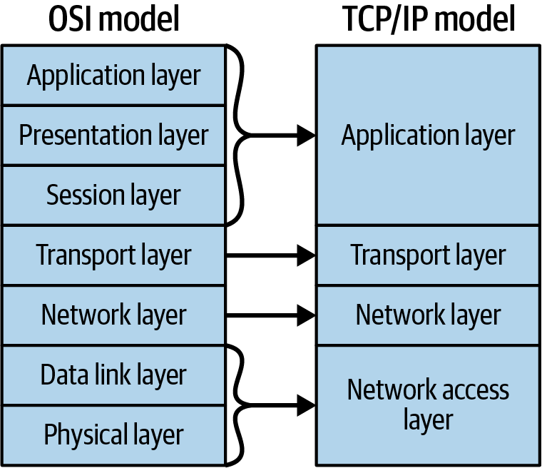
참고
OSI 및 TCP/IP와 같은 통신 계층 모델은 네트워킹을 구조화된 방식으로 논의하기 위해 고안된 개념적 프레임워크임을 유념해야 합니다. 현실은 모델보다 더 복잡할 수 있습니다. 예를 들어 일부 프로토콜이나 기능은 단일 계층에 배치하기 어려울 수 있으며 여러 계층이 동일한 기능을 중복하여 수행할 수도 있습니다. 또한 계층 간에 의존성이 존재하여 계층 간의 경계가 모호해질 수도 있습니다. 그럼에도 불구하고 참조 모델은 이처럼 복잡한 주제를 체계적으로 사고하는 데 매우 유용합니다.
다음 절에서는 TCP/IP 모델의 다양한 네트워크 계층을 간략히 논의하겠습니다. OSI보다 TCP/IP 모델을 선택한 이유는 단순성과 엔지니어들 사이에서의 높은 대중성 때문입니다.
응용 계층 (Application layer)
이 계층은 네트워크 애플리케이션과 해당 프로토콜이 상주하는 최상위 계층입니다. 이 계층의 애플리케이션은 여러 엔드 시스템에 분산되어 있으며 서비스 프로토콜을 통해 정보 패킷을 교환합니다. 이러한 프로토콜에는 다음이 포함됩니다.
HTTP(Hypertext Transfer Protocol): 웹 페이지 요청을 처리하는 데 사용
SMTP(Simple Mail Transfer Protocol): 이메일을 전송하고 교환하는 데 사용
FTP(File Transfer Protocol): 두 시스템 간에 파일을 전송하는 데 사용
DNS(Domain Name System): 웹 페이지 이름을 해당 IP 주소로 변환(해소)하는 데 사용
SSH(Secure Shell): 원격 서버에 안전하게 로그인하여 명령을 실행하거나 보안 파일 전송 프로토콜(SFTP)을 통해 파일을 안전하게 전송하는 데 사용
AMQP(Advanced Message Queuing Protocol): 애플리케이션 간 메시지 지향 통신에 사용
MQTT(Message Queuing Telemetry Transport): 가볍고 메시지 지향적인 통신을 위해 설계됨
전송 계층 (Transport layer)
이 계층은 애플리케이션 엔드포인트 간에 애플리케이션 계층 패킷을 안정적이고 최적화되며 보장된 방식으로 전송할 책임이 있습니다. 전송 계층의 메시지는 일반적으로 세그먼트(Segments) 라고 부릅니다. 가장 중요한 전송 계층 프로토콜에는 전송 제어 프로토콜(TCP, Transmission Control Protocol) 과 사용자 데이터그램 프로토콜(UDP, User Datagram Protocol) 이 있습니다. TCP는 연결 지향형(Connection-oriented) 프로토콜로, 송신자와 수신자가 데이터 세그먼트를 교환하기 전에 지속적인 연결을 수립해야 합니다. 이 기능 덕분에 TCP는 메시지 수신을 확인(ACK)하고 데이터가 도착하지 않을 경우 재전송하므로 신뢰할 수 있는 프로토콜이 됩니다. TCP는 애플리케이션 계층의 정보 패킷을 작은 세그먼트 집합으로 분할하여 다음 계층인 네트워크 계층으로 전달합니다. 네트워크 계층에서 세그먼트는 데이터그램으로 표현됩니다.
또한 TCP는 흐름 제어와 혼잡 제어 기능을 제공하여 데이터 전송 속도를 조절하고 메시지 세그멘테이션 및 분할을 통해 네트워크 혼잡에 동적으로 적응합니다. 나아가 TCP는 전송된 모든 세그먼트를 추적하고 성공적인 전달을 확인함으로써 안전한 전달을 보장합니다.
반면 UDP는 TCP보다 빠르지만 신뢰성이 낮은 프로토콜입니다. UDP는 비연결형(Connectionless) 프로토콜로, 지속적인 연결을 수립하지 않고 ‘발송 후 망각(Fire-and-forget)’ 메커니즘을 통해 데이터를 전송합니다. 이는 TCP에 비해 전달 보증을 덜 제공한다는 것을 의미합니다.
TCP에 대한 중대한 개선점은 비보안 네트워크 전반에서 안전한 통신을 촉진하도록 설계된 TLS/SSL로도 불리는 전송 계층 보안(TLS, Transport Layer Security) 프로토콜입니다. TLS는 애플리케이션 계층과 전송 계층 사이에 위치할 수 있습니다. TCP를 통한 전송 전에 데이터를 암호화하고 수신 측의 전송 계층에 도착하면 이를 복호화합니다. 암호화 외에도 TLS는 신원 확인(인증)을 관리하고 호스트 간 암호화 키 교환을 지원하며 TLS 핸드셰이크 프로세스를 통해 중간자(MITM) 공격을 완화합니다.
금융 데이터 인프라를 설계할 때 여러 번 마주치게 되므로 TLS를 이해하는 것은 매우 중요합니다. TLS의 일반적인 사용 사례는 데이터베이스 엔진에 대한 암호화된 연결을 활성화하는 것입니다.1 마찬가지로 웹 요청을 처리하고 API를 설계할 때 HTTP 대신 HTTPS를 사용하는 것은 암호화를 위한 TLS/SSL 계층을 추가하는 것입니다.
전자 뱅킹 인터넷 통신 표준 (EBICS)
인터넷 프로토콜은 금융 통신 프로토콜을 개발하는 데 필수적입니다. 이 맥락에서 좋은 예는 독일에서 개발되어 프랑스, 스위스 및 기타 국가에서 채택된 전자 뱅킹 인터넷 통신 표준(EBICS, Electronic Banking Internet Communication Standard) 으로, 인터넷을 통해 금융기관과 기업 간에 지침을 교환합니다. EBICS 표준은 주로 인터넷을 통한 SEPA 계좌이체 및 SEPA 자동이체와 같은 단일유로결제지역(SEPA) 거래를 시작하는 데 사용되어 왔습니다.
공식 기술 사양에 따르면 TCP/IP 인터넷 프로토콜 스위트는 EBICS 설계에 결정적인 영향을 미쳤습니다. 데이터는 IP 주소 또는 IP로 확인되는 URL을 통해 패키지로 전송됩니다. 패키지 전송 및 전달은 TCP 프로토콜을 통해 모니터링되고 보장됩니다. 클라이언트와 EBICS 서버는 애플리케이션 계층에서 HTTP 프로토콜을 사용하여 통신합니다. XML 파일 형식이 애플리케이션 계층의 프로토콜 언어로 선택되었습니다. 보안과 데이터 암호화를 보장하기 위해 EBICS는 HTTPS를 통한 통신 보안을 위해 TLS에 의존합니다.
네트워크 계층 (Network layer)
이 계층은 두 호스트 간에 데이터그램(Datagrams) 으로 알려진 정보 단위를 이동시킵니다. 소스 호스트가 대상 호스트로 데이터를 보내고자 할 때 전송 계층 세그먼트와 함께 대상 호스트의 주소를 포함합니다. 수신 시 네트워크 계층은 해당 세그먼트가 대상 호스트의 전송 계층으로 전달되도록 보장합니다.
가장 대표적인 네트워크 계층 프로토콜은 인터넷 프로토콜(IP) 이며, 버전 4(IPv4)가 가장 널리 쓰입니다. IPv6는 그 후속 버전으로 2006년경부터 공용 인터넷 인프라에 점진적으로 통합되어 왔습니다. IP 프로토콜 위에 추가적인 암호화 계층을 더하기 위해 IPsec 을 사용할 수 있습니다. IPsec은 가상 사설망(VPN)과 함께 흔히 사용됩니다.
IP 프로토콜은 데이터그램을 수신 호스트에 독립적으로 제출합니다. 데이터그램에는 내용, 목적지 및 수신 측에 필요한 세부 정보에 대한 여러 필드가 포함될 수 있습니다. 호스트가 수신하면 데이터그램은 전송 계층의 TCP 프로토콜을 통해 다시 조립됩니다.
IP 주소 체계를 이해하는 것은 특히 분산 데이터베이스를 위한 아파치 카산드라(Apache Cassandra)나 분산 컴퓨팅 환경을 위한 아파치 스파크(Apache Spark)와 같은 분산 시스템을 설계할 때 금융 데이터 엔지니어에게 매우 중요합니다. 이러한 설정에서 일반적인 전략은 정해진 수의 노드(머신)를 프로비저닝하고 이들을 연결하여 클러스터를 구성하는 것입니다. 클러스터 내의 각 노드는 IP 주소로 고유하게 식별되며 클러스터 매니저와 워커 노드가 연결을 수립하고 상호 통신하는 데 사용됩니다.
IP 주소 체계의 또 다른 흥미로운 사용 사례는 가상 사설 클라우드(VPC)입니다. VPC 이면의 핵심 개념 중 하나는 VPC에 할당된 IP 주소 범위를 의미하는 서브넷(Subnet) 입니다. 서브넷 내의 IP 주소는 비공개(사설)이므로 공용 인터넷을 통해서는 접근할 수 없으며 오직 VPC의 내부 네트워크를 통해서만 접근할 수 있습니다. VPC 내에 특정 리소스의 인스턴스를 프로비저닝하고 실행할 때 서브넷 범위의 기본 사설 IP 주소가 해당 인스턴스에 할당됩니다.2
네트워크 접근 계층 (Network access layer)
이 계층에서는 네트워크 계층에서 내려온 데이터그램이 소스와 타깃의 네트워크 계층 인터페이스를 연결하는 라우터 네트워크를 통해 라우팅됩니다. 데이터그램은 목적지에 도달할 때까지 한 노드(라우터)에서 다음 노드로 이동합니다. 네트워크 인터페이스 프로토콜의 예로는 케이블 접속 네트워크에서 사용되는 이더넷, 와이파이(WiFi), 케이블 데이터 전송 규격(DOCSIS) 프로토콜 등이 있습니다.
네트워크를 통한 개별 데이터 비트의 물리적 전송은 동축 케이블, 광케이블, 연선(Twisted pair) 케이블과 같이 네트워크와 직접 인터페이스하는 하드웨어 장치를 통해 이루어집니다.
금융 시장에서의 속도 물리학 (Speed Physics in Financial Markets)
물리적 네트워킹 계층이 금융 시장과 무슨 관련이 있는지 궁금할 수 있습니다. 흥미롭게도 이는 상당한 중요성을 지니며 트레이딩과 같은 특정 시장 인프라를 혁신해 왔습니다.
대표적인 예는 은행, 거래소, 트레이딩 회사의 요구에 대응하여 초저지연으로 런던과 뉴욕을 연결하도록 설계된 대서양 횡단 광섬유 회선 하이버니아 익스프레스(Hibernia Express)의 구축입니다. 하이버니아 익스프레스 덕분에 런던과 뉴욕은 기존 초고속 네트워크 서비스에 비해 지연 시간을 5밀리초 단축할 수 있었습니다. 자동화된 트레이딩 시대에 컴퓨터에게 단 5밀리초의 차이는 엄청난 중요성을 갖습니다.
거래 체결 속도를 높이기 위해 기술적 군비 경쟁을 벌여온 고빈도 매매 트레이더들은 거래 속도를 10억 분의 1초 단위로 가속화하기 위해 중공 코어 광섬유(Hollow-core fiber) 라 불리는 실험적인 형태의 광케이블에 주목하고 있습니다.
데이터 도착 프로세스 (Data Arrival Processes)
데이터는 다양한 시간적, 구조적 패턴을 가지고 수집 계층에 도착할 수 있습니다. 이 절에서는 특정 데이터 수집 패턴의 특성을 식별하고 설명하기 위해 데이터 도착 프로세스(DAP, Data Arrival Process) 개념을 사용하겠습니다. 다양한 DAP가 존재할 수 있습니다. 금융 데이터 엔지니어링과 특히 밀접한 6가지 프로세스를 검토해 보겠습니다.
예약된 데이터 도착 프로세스 (Scheduled data arrival process)
예약된 DAP에서는 사전 정의된 일정과 수집 사양에 따라 데이터가 시스템으로 수집됩니다. 이 프로세스는 도착 시간, 데이터 유형, 형식, 볼륨, 수집 방법과 같은 세부 정보가 알려져 있어 예측 가능한 패턴을 따르므로 일반적으로 관리가 더 수월합니다.
예약된 DAP는 금융 시장에서 매우 흔합니다. 예를 들어 다음과 같은 상황에서 사용될 수 있습니다.
- 연말, 매년 3월 말 또는 향후 공시된 날짜 등 특정 주기에 맞춘 기업의 연차보고서 제출 데이터의 도착
- 금융 데이터 벤더로부터 일별, 주별, 월별 또는 연별 주기로 도착하는 과거 금융 데이터 스냅샷
- 사전 정의된 날짜에 금융기관이 제출해야 하는 규제 보고서 데이터의 도착
- 지속적인 모델 학습, 스트레스 테스트, 시나리오 분석 및 기타 금융 계량 분석에서 생성되는 데이터의 도착
데이터가 언제 도착할지 알고 있으면 금융 데이터 엔지니어의 업무가 크게 수월해집니다. 데이터 수집 작업을 계획하고 데이터 인프라의 용량과 컴퓨팅 요구사항을 예측하며 특정 요일과 같이 예측 가능한 주기에 맞춰 필요한 자원을 프로비저닝할 수 있기 때문입니다.
예약된 DAP의 주된 단점은 데이터 생성과 도착 사이의 지연(딜레이)으로, 이는 데이터 적시성에 영향을 미칠 수 있습니다. 또한 데이터를 전혀 가져오지 않으면서 예약된 작업이 실행될 경우 자원이 낭비될 수 있습니다.
이벤트 기반 데이터 도착 프로세스 (Event-driven data arrival process)
데이터의 도착이 사전에 예측할 수 없는 이벤트의 발생에 의존하는 경우 DAP는 이벤트 기반(Event-driven)이 됩니다. 이벤트 기반 DAP는 금융 시장에서 매우 흔합니다. 여기에는 다음과 같은 유형의 데이터 도착이 포함됩니다.
- 시장에 제출 및 체결되는 즉시 발생하는 거래(체결) 및 호가 데이터
- 금융 정보 메시지
- 결제, 이체 등 금융 작업 실행 시 발생하는 트랜잭션 데이터
- 대출 및 신용카드 신청을 위한 고객 서류 파일
- 금융 데이터 벤더의 실시간 데이터 스트림
- 뉴스 데이터
- 기업 업데이트 및 공시
- 소셜 미디어 게시물
이벤트 기반 DAP의 주요 장점은 데이터가 생성된 직후(또는 즉시) 사용 가능하다는 점입니다. 이를 통해 금융기관은 새로운 정보에 신속하게 대응하고 최신의 최신화된 시장 및 운영 통찰을 확보할 수 있습니다. 이러한 이유로 이벤트 기반 시스템은 종종 실시간(Real-time) 시스템과 연계됩니다. 시스템의 응답 시간(일반적으로 매우 낮은 값으로 설정됨)이 올바른 작동에 필수적인 경우 해당 시스템을 실시간 시스템으로 간주합니다. 또한 이벤트 기반 DAP는 자원 활용을 고정 패턴에서 온디맨드 패턴으로 전환하므로 비용을 절감하고 자원 배분을 최적화할 수 있습니다.
실시간 시스템이란 정확히 무엇인가?
실시간(Real-time) 이라는 용어는 다양한 맥락에서 광범위하게 사용됩니다. 많은 사람에게 실시간은 “순간적으로” 또는 “즉시”를 의미할 수 있습니다. 소프트웨어 및 시스템 엔지니어에게 실시간은 처리 시간, 응답 시간, 지연 시간과 같은 시스템이나 애플리케이션의 시간 관련 특성을 의미할 수 있습니다. 금융에서 실시간 시스템의 중요성을 고려하여 오해를 해소하기 위해 자세한 설명을 제공하겠습니다. 이를 위해 셉포 오바스카(Seppo J. Ovaska)와 필립 라플란테(Philip A. Laplante)의 저서 Real-Time Systems Design and Analysis: Tools for the Practitioner (Wiley-IEEE Press, 2011)를 요약하겠습니다.
저자 라플란테와 오바스카는 실시간 시스템을 “입력 집합을 출력 집합으로 매핑하는 것”으로 정의합니다. 시스템이 입력을 수신하고 최종 출력을 생성하기까지의 시간을 시스템의 응답 시간(Response time)이라고 합니다. 응답 시간의 성격과 속도는 시스템의 기능과 목적에 따라 달라집니다.
이를 바탕으로 저자들은 실시간 시스템을 “경계가 정해진 응답 시간 제약을 만족해야 하며 그렇지 않을 경우 시스템 실패를 포함한 심각한 결과를 초래하는 컴퓨터 시스템”으로 정의합니다. 이 경우 실패란 시스템이 작동하지 못하거나 설계 사양의 요구사항 중 하나를 충족하지 못함을 의미합니다. 구체적으로 고장 난 실시간 시스템은 사양에 설정된 타이밍이나 마감 시한(데드라인) 제약을 충족하지 못하는 시스템입니다. 간단히 말해 시스템이 실시간으로 간주되기 위해 반드시 순간적으로 응답할 필요는 없으며 사양에 정의된 응답 시간 기준을 충족하기만 하면 됩니다.
그러나 이 시점에서 모든 시스템은 항상 일종의 시간 제약이 존재하므로 실시간으로 간주될 수 있습니다. 이 점을 더 명확히 하기 위해 라플란테와 오바스카는 실시간 시스템을 세 가지 범주로 분류합니다.
연성 실시간 시스템(Soft real-time systems): 응답 시간 제약을 충족하지 못하면 성능 저하로 이어지지만 시스템 실패로 이어지지는 않음.
경성 실시간 시스템(Hard real-time systems): 단 하나의 마감 시한을 놓쳐도 완전하거나 중대한 시스템 실패로 이어짐.
준경성 실시간 시스템(Firm real-time systems): 소수의 마감 시한을 놓치는 것은 큰 문제가 되지 않지만 일정 수준 이상 놓치면 완전하거나 중대한 시스템 실패로 이어짐.
비즈니스 및 운영상의 고려사항에 따라 실시간 시스템은 연성, 경성, 준경성으로 분류될 수 있습니다. 예를 들어 ATM 기계가 내부 시간 제한(예: 10초) 내에 요청에 응답하지 못하는 경우가 간혹 발생하더라도 고객의 불만을 초래할 수는 있지만 여전히 감내할 수 있으므로 연성 실시간 시스템에 해당합니다.
반대로 고빈도 매매를 수행하는 헤지펀드의 맥락에서는 예상된 마감 시한을 넘어 데이터를 수신하는 지연이 막대한 재정적 손실로 이어질 수 있으므로 시스템을 경성 또는 준경성으로 분류해야 합니다. 또 다른 예는 외환 통화 환전을 수반하는 금융 시스템입니다. 이 프로세스는 시장 참여자가 유동성 공급자나 외환 브로커에게 특정 통화 쌍의 정해진 금액을 매수하거나 매도하기 위한 가격 호가를 요청하는 호가 요청(RFQ, Request for Quote) 을 빈번히 포함합니다. RFQ에는 유동성 공급자가 제시된 가격을 보장하는 만료 시간이 포함되어 있습니다. RFQ의 만료 시간 내에 외환 거래를 결제하지 못하면 요청 기관이 시장 위험에 노출되어 잠재적인 재정적 손실을 입을 수 있습니다.
중요한 점은 여전히 많은 사람들(심지어 엔지니어들조차)이 실시간 시스템을 “즉각적인” 것으로 생각한다는 사실입니다. 그 이유를 이해하기 위해 실시간 결제(RTP, Real-time payments) 라는 기술적 개념을 살펴보겠습니다. Stripe에 따르면 RTP는 “24/7 연중무휴로 즉각적이고 연속적으로 처리되는 즉시 결제”입니다. 이 맥락에서 즉시(Instant)란 기존 결제 시스템처럼 몇 시간이나 며칠이 걸리는 대신 몇 초 만에 은행 계좌 간에 돈이 이동한다는 사실을 의미합니다. 사람에게 몇 초는 거의 순간적인 것처럼 느껴지므로 이 맥락에서 ’즉시’라는 용어가 사용됩니다.
그럼에도 불구하고 실시간 금융 시스템을 구축할 때는 위에서 설명한 것과 유사한 체계적인 접근 방식을 따를 것을 강력히 권장합니다. 소프트웨어 및 데이터 엔지니어는 시간 제약과 한계를 세심하게 이해하고 시스템에 통합해야 하며 연성 실시간 시스템을 경성 또는 준경성 시스템으로, 또는 그 반대로 전환할 수 있는 잠재적 방법을 모색해야 합니다.
클라우드 컴퓨팅의 등장과 함께 이벤트 기반 데이터 처리 기술의 인기가 눈에 띄게 높아졌습니다. 여기에는 Amazon SNS, Amazon MSK, Google Pub/Sub과 같은 메시지 브로커(8장에서 상세히 설명)뿐만 아니라 AWS Lambda, Google Cloud Functions와 같은 이벤트 기반 서버리스 컴퓨팅 플랫폼(9장에서 설명)이 포함됩니다.
이벤트 기반 DAP는 예측하기 어렵기 때문에 이벤트 기반 금융 데이터 인프라를 설계할 때는 세심한 주의가 필요합니다. 집중해야 할 핵심 기능 중 하나는 다양한 워크로드와 간헐적인 스파이크를 수용할 수 있도록 인프라가 탄력적으로 확장될 수 있는 능력입니다. 또한 이벤트 기반 DAP의 데이터 집약적인 특성으로 인해 오류, 이상치, 적시성과 같은 데이터 품질 문제가 쉽게 발생할 수 있습니다. 나아가 이벤트 기반 DAP는 동일한 데이터나 파일이 두 번 이상 수집되는 중복 또는 동시 수집 문제를 겪을 수 있습니다. 이는 데이터 일관성에 영향을 미치고 잠재적으로 시스템 장애를 유발할 수 있으므로 데이터 인프라 설계 시 세심한 주의가 요구됩니다.3
동질적 데이터 도착 프로세스 (Homogeneous data arrival process)
동질적 DAP에서 수집되는 데이터는 사전에 정해진 일관된 속성을 갖습니다. 예를 들어 금융 데이터 공급업체가 제공하는 데이터셋에 대한 구독을 구매하면 데이터의 종류, 스키마, 수집 형식 및 기타 세부 정보를 사전에 알고 있을 가능성이 큽니다.
동질적 DAP는 관리와 유지보수가 더 단순하며 데이터 무결성과 일관성을 보장하는 데 도움이 됩니다. 금융 산업에서는 데이터 입력 및 교환 형식을 표준화하고 범용화하기 위한 여러 프로젝트가 진행되어 왔습니다. “데이터 수집 형식” 절에서는 표준화된 금융 데이터 형식의 예를 설명할 것입니다.
중요한 점은 금융 데이터 아키텍처가 단 한 가지 유형이나 형식의 데이터만 처리하도록 과적합(Overfitting)되지 않도록 주의해야 한다는 것입니다. 그렇게 되면 데이터 속성이 변경되거나 새로운 데이터 유형이 수집될 때 문제가 발생할 수 있습니다.
이질적 데이터 도착 프로세스 (Heterogeneous data arrival process)
이질적 DAP에서 수집되는 데이터는 확장자, 형식, 타입, 내용, 스키마 등과 같은 다양한 가변적 속성을 가질 수 있습니다. 이질적 DAP는 금융에서 매우 흔합니다. 예를 들어 금융 데이터 벤더들은 서로 다른 형식과 구조로 데이터를 제공합니다. 또한 최적화 목적을 위해 서로 다른 유형의 데이터가 특정 형식으로 저장 및 전송될 수 있습니다(이번 장의 “데이터 수집 형식” 절에서 다룰 주제). 나아가 금융기관 내의 서로 다른 내부 시스템들은 고유한 형식과 구조로 데이터를 생성할 수 있습니다.4
이질적 DAP를 위해 설계할 때 금융 데이터 인프라는 수집 가능한 다양한 데이터 유형을 고려해야 하며 각각을 처리할 수 있는 필수적인 역량을 갖추어야 합니다. 이러한 복잡성은 인프라 최적화를 더 어렵게 만들지만, 새로운 데이터 소스를 수집하고 수용할 수 있는 금융기관의 유연성을 높여줍니다.
새로운 데이터 소스가 정기적으로 등장하고 데이터가 생성되는 양과 속도가 비약적으로 증가한 오늘날의 급변하는 금융 데이터 지형에서 이러한 유연성은 결정적입니다. 새로운 데이터 소스를 수용할 수 있다는 것은 새로운 분석 역량을 추가하고, 새로운 제품을 개발하며, 시장 트렌드, 영업, 고객, 운영에 대한 포괄적인 통찰을 확보할 수 있음을 의미합니다.
단일 항목 데이터 도착 프로세스 (Single-item data arrival process)
단일 항목 DAP에서 데이터는 한 번에 한 레코드씩 또는 한 번에 한 파일씩 수집됩니다. 예를 들어 결제 거래, 은행 대출 신청, 시장 주문, 분석 보고서 또는 뉴스 한 건과 관련된 정보의 도착을 생각해 보십시오.
단일 항목 DAP의 주된 장점은 추적 가능성(Traceability)과 트랜잭션 보증입니다. 수집 프로세스가 단일 데이터 항목에 관한 것일 때 시스템 로그를 통해 수명주기를 추적하기가 일반적으로 더 쉽습니다. 또한 한 번에 한 레코드씩 삽입하면 데이터 무결성 및 제약 조건 검사가 용이해집니다.
이해를 돕기 위해 고객 금융 거래를 저장하는 데이터베이스가 있다고 가정해 보겠습니다. 이 테이블에 대한 간단한 SQL 기반 단일 항목 수집은 다음과 같습니다.
-- PostgreSQL
INSERT INTO customer_transactions (
user_id,
transaction_id,
time,
transaction_type,
amount,
communication
) VALUES (
195,
'XT4h4Y453',
'2024-01-20 10:09:42',
'1985-02-10',
'Credit Transfer',
'online course subscription fees'
)어떤 상황에서는 단일 항목 DAP가 성능 병목 현상을 유발할 수 있습니다. 예를 들어 데이터 수집 건수가 매우 많다면 시스템이 유입되는 모든 요청을 처리하는 능력이 저하될 수 있습니다. 이는 데이터베이스 측의 최대 연결 수 제한(8장에서 논의)이나 API 측의 쿼터 제한(이번 장의 “데이터 수집 기술” 절에서 다룸)으로 인해 발생할 수 있습니다. 또한 방대한 수의 레코드를 한 번에 하나씩 수집하는 것은 매우 느릴 수 있으며 이는 적시성과 같은 데이터 품질 차원에 악영향을 미칠 수 있습니다.
대량 데이터 도착 프로세스 (Bulk data arrival process)
대량(Bulk) DAP에서 데이터는 큰 덩어리(청크) 단위로 수집됩니다. 대량 DAP는 한 번에 한 레코드씩 처리하는 대신 수백 개 또는 수백만 개의 레코드를 포함할 수 있는 데이터 블록이나 파일을 동시에 처리합니다.
대량 DAP는 단일 요청으로 대량의 데이터를 처리하여 오버헤드 비용을 절감함으로써 성능상의 이점을 제공합니다. 이는 대량 데이터 로딩, 스토리지 시스템 간 마이그레이션, 데이터 아카이빙 프로세스, 규제 보고와 같은 작업에 이상적입니다. 예를 들어 데이터베이스 시스템을 전환할 때 새 시스템과 호환되는 형식으로 데이터를 일괄 덤프하는 것이 레코드를 개별적으로 복사하는 것보다 훨씬 효율적입니다.
예를 들어 Snowflake의 대량 로딩이 어떻게 작동하는지 살펴보겠습니다.5 아마존 클라우드 스토리지 서비스인 AWS S3에 저장된 여러 CSV 파일이 있고, 데이터 웨어하우스로 Snowflake를 사용하고 있다고 가정해 보겠습니다. CSV 파일의 데이터를 Snowflake 테이블로 업로드하고자 합니다.
가장 먼저 할 일은 로드할 데이터의 유형과 형식을 설명하는 FILE FORMAT 객체를 Snowflake에 생성하는 것입니다. CSV 파일이 세미콜론(;)을 필드 구분자로 사용하고 있으며, 각 파일의 첫 번째 줄은 헤더를 나타내므로 Snowflake가 이를 건너뛰도록 지시한다고 가정해 보겠습니다. 다음 명령은 원하는 포맷 객체를 생성합니다.
-- Snowflake SQL
CREATE OR REPLACE FILE FORMAT s3csvformat
TYPE = 'CSV'
FIELD_DELIMITER = ';'
SKIP_HEADER = 1;다음으로 파일이 저장(스테이징)된 위치를 Snowflake에 알려주는 스테이지(Stage) 객체를 생성합니다. Snowflake는 여러 유형의 스테이지 객체를 제공하지만, 이 예제에서는 권장되는 명명된 스테이지(Named stage)6를 사용하며 다음과 같이 생성할 수 있습니다.
-- Snowflake SQL
CREATE OR REPLACE STAGE s3_csv_stage
FILE_FORMAT = s3csvformat
URL = 's3://snowflake-docs';마지막으로 스테이지 위치의 데이터를 Snowflake 테이블로 로드하기 위해 다음 명령을 실행할 수 있습니다.
-- Snowflake SQL
COPY INTO destination_table
FROM @s3_csv_stage/myfiles/
PATTERN='.*daily_prices.csv'
ON_ERROR = 'skip_file';PATTERN 절은 지정된 정규 표현식 .*daily_prices.csv와 일치하는 모든 파일(즉, daily_prices.csv로 끝나는 모든 파일)에서 데이터를 로드하도록 지정합니다. 또한 이 명령은 특정 파일을 로드할 때 오류가 발생하면 해당 파일을 건너뛰고 나머지 파일 작업을 계속 진행하도록(ON_ERROR = 'skip_file') 지정합니다.
지금까지 다양한 데이터 전송 및 도착 프로세스를 살펴보았으므로, 이제 금융 데이터 인프라로 수집될 수 있는 다양한 유형의 데이터 형식을 살펴보겠습니다.
데이터 수집 형식 (Data Ingestion Formats)
데이터는 다양한 형식으로 수집될 수 있습니다. 데이터 형식(포맷)은 기계에 데이터를 저장하는 데 사용되는 확장자나 인코딩을 나타내는 데 사용됩니다. 일반적으로 금융 데이터 인프라가 지원할 수 있는 수많은 데이터 형식에 대해 표준화된 단일 분류는 없습니다. 기준점을 확립하기 위해 이 절에서는 금융 데이터 엔지니어가 금융 데이터를 다룰 때 마주칠 수 있는 가장 일반적인 데이터 형식 유형들을 설명하겠습니다.
범용 형식 (General-Purpose Formats)
범용 형식은 금융 시장에서 폭넓은 적용성과 광범위한 채택을 자랑하는 널리 사용되는 데이터 형식입니다. 예는 다음과 같습니다.
- 쉼표로 구분된 값(CSV) 파일: 쉼표(,)로 구분된 값을 가진 텍스트 파일
- 탭으로 구분된 값(TSV) 파일: 탭(으로 구분된 값을 가진 텍스트 파일
- 텍스트 파일(TXT): 줄 바꿈 구분자()로 구분된 텍스트 파일
- 자바스크립트 객체 표기법(JSON) 파일: 이름/값 쌍의 모음으로 구조화된 파일
- 확장성 마크업 언어(XML) 파일: 커스텀 태그를 사용하여 계층적 형식으로 데이터를 구조화하고 저장하는 파일
- 마이크로소프트 엑셀 파일: Microsoft Excel(예: XLSX 및 XLS)과 연동되는 파일
- 압축 파일: GZip이나 Zip과 같은 압축 알고리즘을 사용하여 압축된 파일
금융 시장에서는 다양한 이유와 목적으로 이러한 형식들을 사용합니다. 예를 들어 마이크로소프트 엑셀 파일은 신뢰성(유지 관리자로서의 마이크로소프트), 단순성, 고급 분석 기능으로 인해 금융 전문가와 회계사들 사이에서 매우 인기가 높습니다. CSV 및 TSV 형식은 금융 시계열 및 정형 테이블 데이터를 저장하고 공유하는 데 널리 사용됩니다. TXT 파일은 보고서, 뉴스, 엔티티 및 참조 데이터 등과 같은 텍스트 기반 금융 콘텐츠를 저장하는 데 사용됩니다. JSON과 XML은 사용자 친화적인 특성과 신뢰할 수 있는 기술 사양 덕분에 프로그래밍 방식 및 웹 기반 금융 데이터 교환에 널리 사용됩니다. 결과적으로 이들은 금융 데이터 표준의 기초를 형성하는 경우가 많습니다.7
범용 형식을 사용할 때의 단점은 높은 유연성으로 인해 데이터 오류나 품질 문제가 발생할 가능성이 커진다는 점입니다. 또한 이러한 형식은 대용량 데이터를 처리할 때 효율적이지 않을 수 있습니다. 이러한 문제를 해결하기 위해 보다 전문화된 형식을 사용할 수 있으며, 이는 다음 절들에서 논의하겠습니다.
빅데이터 형식 (Big Data Formats)
CSV나 XML과 같은 범용 형식은 대량의 데이터를 수집하고 교환할 때 성능 문제에 쉽게 직면할 수 있습니다. 이 문제를 해결하기 위해 아파치 파케이(Apache Parquet), 아파치 아브로(Apache Avro), ORC를 포함한 여러 빅데이터 형식이 개발되었습니다.
아파치 파케이(Apache Parquet)는 효율적이고 경제적인 데이터 저장 및 검색을 지원하는 오픈소스 열 지향(Column-oriented, 컬럼 기반) 데이터 파일 형식입니다. 파케이는 복잡하고 대규모인 데이터를 처리하기 위해 효율적인 데이터 압축, 압축 해제, 스키마 진화(Schema evolution) 및 인코딩 알고리즘을 제공합니다. 파케이는 Python, C++, Java를 포함한 여러 언어에서 접근할 수 있습니다. 파케이 파일은 널리 사용되고 있습니다. 예를 들어 선도적인 클라우드 데이터 웨어하우스 공급업체인 Snowflake는 고객이 Snowflake 플랫폼에 데이터를 업로드할 때 가장 자주 사용하는 파일 형식이 Parquet이라고 보고합니다.
열 지향 파일 형식 대 행 지향 파일 형식
파일 형식을 다룰 때는 열 지향(Column-oriented) 형식과 행 지향(Row-oriented) 형식의 차이를 이해하는 것이 중요합니다. 행 지향 형식(예: PostgreSQL의 내부 데이터 형식)에서는 데이터가 디스크에 행 단위로 순차 저장됩니다. 이러한 형식은 소규모 데이터셋, 엄격한 데이터 일관성 요구사항이 있는 경우, 또는 결제 및 청산과 같은 트랜잭션을 처리하는 금융 시스템처럼 쓰기/업데이트 작업이 많은 애플리케이션에 유리합니다.
반면 파케이(Parquet)와 같은 열 지향 형식은 디스크에 데이터를 열 단위로 저장합니다. 이 형식은 읽기 집약적인 빅데이터 애플리케이션에 매우 유리합니다. 읽기 집약적인 애플리케이션은 종종 전체 열 중 일부 열만 검색하므로 다른 열을 불필요하게 쿼리하지 않아 쿼리가 훨씬 효율적이고 경제적입니다. 또한 단일 행 내의 서로 다른 이종 데이터를 압축하는 행 지향 형식과 달리, 열 단위 스토리지는 단일 열 내에서 동일한 타입의 데이터를 최적화하여 압축하므로 압축 효율성이 대폭 향상됩니다.
아파치 아브로(Apache Avro)는 파일 스토리지 크기를 줄이는 데 도움이 되는 행 지향 구조와 조밀한 바이너리 인코딩으로 잘 알려진 또 다른 일반적인 빅데이터 형식입니다. 아브로는 데이터 정의, 타입 및 프로토콜을 쉽게 읽을 수 있는 JSON 형식으로 저장하는 반면 실제 데이터는 고도로 최적화된 바이너리 형식으로 저장합니다. 아브로는 스키마 의존적이므로 데이터와 스키마가 동일한 파일에 함께 저장되고 전송됩니다. 결과적으로 여러 파일의 스키마를 병합하는 작업에 큰 비용이 들 수 있는 상황에서 스키마 변경이 빈번하게 발생하는 경우 파케이보다 아브로가 선호됩니다.8
세 번째 일반적인 빅데이터 형식은 최적화된 행-열 형식(ORC, Optimized Row Columnar)으로, 하둡 환경에서 Hive 데이터를 저장하는 데 주로 사용되는 열 지향 바이너리 형식입니다. ORC는 데이터 처리 속도와 스토리지 효율성 측면에서 뛰어난 성능으로 명성이 높아 대용량 데이터를 처리하는 데 매우 적합합니다.
인메모리 형식 (In-Memory Formats)
많은 애플리케이션에서 데이터는 메모리 상에서 빈번하게 읽히고 처리됩니다. 중요한 점은 서로 다른 소프트웨어 프로그램이 메모리에 서로 다른 형식을 사용하여 데이터를 저장할 수 있다는 사실입니다. 데이터 처리 파이프라인 중에 데이터가 한 애플리케이션에서 다른 애플리케이션으로 이동하는 경우 각 애플리케이션은 데이터를 처리하기 전에 자체 인메모리 형식으로 변환해야 합니다. 이는 데이터 직렬화 및 역직렬화를 수반하므로 비용이 많이 드는 작업이며 결과적으로 성능에 악영향을 미칠 수 있습니다.
이 문제를 해결하기 위해 다양한 인메모리 데이터 형식이 개발되었습니다. 대표적인 예는 메모리 내에서 테이블 형태의 데이터셋을 구조화하고 표현하기 위한 표준화된 언어 독립적 열 지향 데이터 형식인 아파치 애로우(Apache Arrow)입니다. 아파치 애로우를 사용하면 표준화된 형식을 즉시 활용하여 여러 시스템에 걸쳐 데이터를 처리하는 데이터 인프라를 구축할 수 있습니다.
또 다른 주목할 만한 예는 메모리 내에서 안정적이고 내결함성을 가지며 병렬 연산을 가능하게 하기 위해 아파치 스파크용으로 만들어진 탄력적 분산 데이터셋(RDD, Resilient Distributed Dataset) 추상화입니다.
표준화된 금융 형식 (Standardized Financial Formats)
시장 참여자들은 지금까지 살펴본 CSV, JSON, TXT, XML과 같은 모든 형식으로 금융 정보를 교환할 수 있습니다. 그러나 각 금융기관이 자사의 금융 메시지와 통신을 구조화하기 위해 독자적인 규칙을 사용한다면 시장은 모든 개별 형식을 이해하고 정보를 추출하는 데 막대한 비용을 치르게 될 것입니다. 예를 들어 1,000개의 트레이딩 회사로 구성된 네트워크에서 각 회사가 자체 JSON이나 XML 구조를 사용하여 거래 요청 메시지를 전송한다고 상상해 보십시오. 이 시나리오는 모든 트레이더가 이해해야 하는 수백 가지의 서로 다른 메시지 형식을 만들어낼 것입니다.
이러한 문제를 해결하기 위해 금융 시장 참여자들은 금융 정보의 표준화된 형식을 만들기 위해 노력해 왔습니다. 이러한 노력은 업계 전문가들에 의해 데이터 교환을 위한 “공통 금융 언어”를 확립하는 것으로 자주 묘사됩니다.9 여러 이니셔티브가 제안되어 다양한 표준이 개발되고 채택되었습니다. 예는 다음과 같습니다.
- 금융상품 마크업 언어(FpML, Financial products Markup Language)
- 금융 정보 교환(FIX, Financial Information eXchange) 프로토콜
- 대화형 금융 거래 교환(IFX, Interactive Financial eXchange)
- 시장 데이터 정의 언어(MDDL, Market Data Definition Language)
- 금융 전자 데이터 교환(FEDI, Financial Electronic Data Interchange)
- 오픈 파이낸셜 익스체인지(OFX, Open Financial Exchange)
- 확장성 비즈니스 보고 언어(XBRL, eXtensible Business Reporting Language)
- 금융 트랜잭션 카드 기원 메시지(ISO 8583)
- 증권 관련 메시지 체계(ISO 15022)
- 금융 산업 범용 메시지 체계(ISO 20022)
- SWIFT 독점 메시지
다음 절들에서는 이러한 금융 데이터 표준 중 일부를 심도 있게 살펴보겠습니다.
금융 정보 교환 (FIX)
금융 정보 교환(FIX, Financial Information eXchange)은 은행, 트레이딩 회사, 브로커/딜러, 증권 거래소, 심지어 규제 기관 간에 금융 거래 정보를 교환하는 데 널리 사용되는 전자 통신 프로토콜입니다. FIX는 FIX 트레이딩 커뮤니티 회원사들이 소유하고 유지 관리하는 비독점 오픈 표준입니다. FIX는 원래 사전 거래(Pre-trade) 및 주식 거래 메시지를 교환하기 위해 개발되었습니다. 시간이 지남에 따라 그 범위가 사후 거래(Post-trade) 활동뿐만 아니라 채권, 외환, 장내 파생상품 시장의 거래까지 지원하도록 확장되었습니다.
FIX 인프라의 기술 사양에 대한 완전한 설명은 이 절의 범위를 벗어납니다. 그러나 FIX 시스템은 (1) 표준화된 메시지 형식, (2) FIX 주문 라우팅 네트워크, (3) FIX 메시지를 전송하고 수신하는 데 필요한 FIX 엔진으로 나눌 수 있습니다. FIX 메시지의 고전적인 인코딩은 메시지를 태그/값 쌍의 체인으로 구조화하는 태그-값 인코딩(Tagvalue encoding) 입니다. 태그는 필드를 식별하는 정수이며 뒤이어 “=” 문자(16진수 0x3D)가 오고, 마지막으로 ISO 8859-1 문자 집합으로 인코딩된 해당 필드의 값이 옵니다. 각 태그/값 쌍은 ISO 6429:1992 헤딩 시작 제어 문자 <SOH>(16진수 0x01)로 구분됩니다. 다른 인코딩으로는 메시지 서식 지정을 위해 XML과 JSON을 활용하는 FIXML이 있습니다.
예를 들어 단일 매수 주문 FIX 메시지는 다음과 같습니다.10
8=FIX.4.2^A 9=145^A 35=D^A 34=4^A 49=ABC_DEFG01^A 52=20090323-15:40:29^A 56=CCG^A 115=XYZ^A 11=NF 0542/03232009^A 54=1^A 38=100^A 55=CVS^A 40=1^A 59=0^A 47=A^A 60=20090323-15:40:29^A 21=1^A 207=N^A 10=139^A필드를 분석해 보면 다음과 같습니다.
8=FIX.4.2 FIX 버전 번호
9=145 바디 길이: 145바이트
35=D 메시지 유형: 신규 주문 - 단일 주문(New Order - Single)
34=4 메시지 일련번호: 4
49=ABC_DEFG01 발신 회사 ID: ABC_DEFG01
52=20090323-15:40:29 발신 시간: 2009년 3월 23일 15:40:29
56=CCG 수신 회사 ID: CCG
115=XYZ 위임 회사 ID: XYZ
11=NF 0542/03232009 고객 주문 ID: NF 0542/03232009
54=1 매매 구분: 매수(Buy)
38=100 주문 수량: 100주
55=CVS 종목 티커 심볼: CVS
40=1 주문 유형: 시장가(Market)
59=0 주문 유효기간: 당일 유효(Day)
47=A 특별 지침: 위탁 단일 주문(Agency single order)
60=20090323-15:40:29 거래 시간: 2009년 3월 23일 15:40:29
21=1 처리 지침: 자동 체결(Automated execution)
207=N 증권 거래소: NASD OTC
10=139 체크섬: 139FIX 프로토콜에 따라 두 금융기관 간에 FIX 메시지를 교환하려면 둘 다 FIX 라우팅 네트워크를 통해 통신하는 FIX 엔진을 갖추고 있어야 합니다. 인터넷, 전용선, 점대점(Point-to-point) VPN, 허브앤스포크(Hub-and-Spoke) 등 여러 FIX 네트워크 라우팅 옵션을 사용할 수 있습니다. 메시지를 교환하려면 FIX 엔진을 구현하고 선택한 라우팅 네트워크에 연결해야 합니다.11
확장성 비즈니스 보고 언어 (XBRL)
확장성 비즈니스 보고 언어(XBRL, eXtensible Business Reporting Language)는 디지털 비즈니스 및 재무 보고를 위한 XML 기반 오픈 국제 표준입니다. XBRL은 비영리 컨소시엄인 XBRL 인터내셔널이 관리하고 유지보수합니다. 한마디로 XBRL은 비즈니스 및 회계 데이터를 사람이 읽을 수 있는 형식과 기계가 읽을 수 있는 형식 모두로 표현하고 교환할 수 있는 표준화되고 정확하며 신뢰할 수 있는 방법을 제공합니다. XBRL은 규제 기관, 기업, 정부, 데이터 공급업체, 투자자, 분석가, 회계사들이 광범위하게 사용합니다.
XBRL의 핵심 구성 요소는 XBRL 문서에 포함된 비즈니스 팩트(사실)의 모음을 의미하는 XBRL 인스턴스(Instance) 입니다. 보다 기술적으로 XBRL은 루트 엘리먼트가 <xbrli:xbrl>인 XML 파일입니다.
또 다른 중요한 요소는 XBRL 인스턴스 내의 개별 정보 단위를 나타내는 XBRL 팩트(Facts) 입니다. 예를 들어 하나의 팩트는 Heckler & Brothers Inc.의 2018년 매출이 50억 달러였다고 명시할 수 있습니다. 이 팩트는 단위(달러), 기간(2018년), 엔티티(“Heckler & Brothers Inc.”)에 대한 관련 컨텍스트 정보와 함께 “매출(Revenues)”을 나타내는 해당 개념에 대해 5b라는 값으로 보고됩니다. 기술적으로 팩트는 XBRL 문서의 엘리먼트로 표현됩니다.
또한 팩트의 의미를 설명하는 데 사용할 수 있는 XBRL 개념(Concepts) 이 있습니다. 예를 들어 “자산”, “부채”, “당기순이익” 등이 이러한 개념의 예입니다. 기술적으로 개념은 XML 스키마의 엘리먼트 정의로 표현됩니다.
마지막으로 XBRL 택소노미(Taxonomies, 분류체계) 는 개념 정의의 모음에 해당합니다. 택소노미는 일반적으로 국제재무보고기준(IFRS) 및 기업회계기준(GAAP) 표준과 같은 특정 보고 체계뿐만 아니라 다양한 규제 기관 및 정부 기관의 보고 요구사항을 나타내기 위해 생성됩니다. 택소노미는 무엇을 보고해야 하는지 명확히 정의하는 데 사용됩니다. 기술 수준에서 택소노미는 엘리먼트 정의가 포함된 XML 스키마 문서와 개념 정의와 관련된 추가 정보가 포함된 XML 문서 모음입니다.
XBRL을 사용하면 보고할 수 있는 데이터의 종류를 제한하고 검증할 수 있는 비즈니스 규칙을 정의할 수 있습니다. 규칙은 논리적이거나 수학적일 수 있으며 XBRL 문서의 데이터 품질을 제어하는 데 자주 사용됩니다.12
금융상품 마크업 언어 (FpML)
금융상품 마크업 언어(FpML, Financial products Markup Language)는 금융 파생상품의 전자 거래 및 처리를 위해 설계된 오픈소스 XML 기반 정보 교환 표준입니다. 이 표준은 FpML 표준위원회가 정의하고 유지 관리합니다.
파생상품 시장의 가장 두드러진 특징 중 하나는 특정 고객의 요구사항을 충족하도록 파생상품 계약을 유연하게 정의하고 설계할 수 있다는 점입니다. 더욱이 파생상품 거래의 상당 부분은 장외(OTC) 시장에서 이루어지며, 이는 이러한 거래가 중앙 집중화된 거래소를 통하지 않고 기업 대 기업(B2B)으로 직접 수행됨을 의미합니다.
이러한 유연성에는 매우 다양한 데이터 통신 및 표현 스타일이 수반됩니다. 한편으로는 이를 통해 양 당사자가 고객의 특정 요구에 맞춰 파생상품을 맞춤화할 수 있으므로 필수적인 것으로 간주되어 왔습니다. 결과적으로 새로운 요구사항이 등장하면 곧바로 쓸모없어지는 운명에 처하기 쉬웠기 때문에 장외 파생상품 통신을 표준화하려는 시도는 큰 호응을 얻지 못했습니다. 이러한 상황은 거래 당사자 간의 수동 데이터 교환 프로세스로 이어져 오류가 발생하기 쉬웠습니다.
그러나 파생상품 거래량이 증가하고 파생상품 거래 처리를 위한 새로운 규제 요구사항이 확립됨에 따라 표준화의 매력도가 높아졌습니다. 이와 관련하여 관련 활동을 지원하는 기본 소프트웨어나 하드웨어 인프라에 구애받지 않고 전체 파생상품 거래 네트워크(파트너 및 고객) 전반에서 정보의 흐름을 자동화하기 위해 FpML이 도입되었습니다. 이 표준은 원래 스왑과 같은 이자율 파생상품을 위해 개발되었지만 이후 다른 파생상품 자산군, 구조화 상품, 채권, 상업용 대출 등으로 확장되었습니다. 나아가 FpML은 사전 거래, 거래 체결, 사후 거래와 같은 파생상품 트랜잭션의 여러 단계를 모두 포괄하도록 발전했습니다.
FpML 메시지는 UTF-8 또는 UTF-16을 사용하여 인코딩되며 파일 형식으로 XML을 사용합니다. FpML에는 값이 제한된 값 집합(예: 통화)으로 한정되는 여러 엘리먼트가 포함될 수 있습니다. 이러한 제한된 집합을 도메인(Domains) 이라고 부릅니다. FpML은 두 가지 유형의 도메인 코딩에 의존합니다. 첫째는 사양의 수명 전반에 걸쳐 자주 변경되지 않는 도메인으로, XML 스키마 열거형(Enumerations)을 사용하여 코딩됩니다. 둘째 유형은 아키텍처 워킹그룹이 정의한 전략을 사용하여 코딩된 도메인으로, 스키마(Schemes) 라고 불립니다. 스키마는 통합 자원 식별자(URI)와 연결됩니다. 세 가지 범주의 코딩 스키마가 존재합니다.
- 오픈 표준 기구 또는 시장 참여자와 같은 외부 기관에서 URI를 할당한 외부 코딩 체계
- URI가 없는 외부 코딩 체계 (이 경우 FpML이 URI를 할당함)
- FpML이 직접 정의하고 버전을 관리하며 URI를 할당하는 FpML 정의 코딩 체계
예를 들어 FpML 정의 체계 중 하나는 유럽증권시장청(ESMA)이 정의한 조치 유형을 코딩하는 actionTypeScheme 입니다.13 이 책이 작성된 시점을 기준으로 이 체계의 URI는 http://www.fpml.org/coding-scheme/action-type-1-0이며, 코딩 체계는 표 7-1에 나와 있습니다.
표 7-1. FpML 정의 액션 타입 체계
| 코드 (Code) | 설명 (Description) |
|---|---|
| C | 취소 (Cancel, 기존 계약의 해지) |
| E | 오류 (Error, 잘못 제출된 보고서의 취소) |
| M | 수정 (Modify, 이전에 보고된 파생상품 계약 세부사항의 수정) |
| N | 신규 (New, 처음 보고되는 파생상품 계약) |
| O | 기타 (Other, 보고서에 대한 기타 모든 수정) |
| V | 밸류에이션 업데이트 (Valuation update, 계약 가치평가의 업데이트) |
| Z | 압축 (Compression, 보고된 계약의 포트폴리오 압축) |
스키마의 사용을 통해 확보되는 FpML의 유연성은 파생상품 시장의 맞춤형 거래 정의와 요구사항을 처리하는 데 매우 적합합니다. 이러한 스키마의 구체적인 세부사항에 관심이 있는 독자는 포괄적인 FpML 코딩 스키마 문서를 참조하십시오.
오픈 파이낸셜 익스체인지 (OFX)
오픈 파이낸셜 익스체인지(OFX, Open Financial Exchange)는 금융기관, 기업, 고객 간에 금융 데이터와 지침을 전자적으로 교환하기 위해 널리 채택된 오픈 표준입니다. OFX를 사용하면 중개자 없이 고객과 기관이 직접 연결될 수 있습니다.
오픈 파이낸셜 익스체인지는 누구나 구현할 수 있는 공개 사양(예: 금융기관, 소프트웨어 개발사, 거래 처리업체 또는 기타 주체)에 의존합니다. 클라이언트-서버 모델을 사용하여 OFX 시스템을 설계합니다. 클라이언트가 OFX 서버에 요청(예: HTTP)을 제출하면 서버는 클라이언트에 응답으로 회신합니다. OFX는 요청/응답 메시지 구조를 정의하고 메시지 교환을 지원하는 인프라 구축을 위한 가이드라인을 제공합니다. OFX는 네트워킹(TCP/IP 및 HTTP 등), 데이터 서식 지정(XML 등), TLS와 같이 널리 수용되는 오픈 표준을 사용합니다.
OFX는 다양한 애플리케이션과 사용 사례를 위해 금융기관에서 광범위하게 활용됩니다. 1997년 이래 은행이 금융 애플리케이션에 데이터를 제공하기 위한 주요 직접 API 표준으로 자리 잡아 왔습니다. 현재 7,000개 이상의 금융기관에서 사용되고 있습니다. OFX는 광범위한 프론트엔드 애플리케이션 및 플랫폼 전반에 걸쳐 구현 및 조정될 수 있습니다. 또한 확장 가능한 표준이므로 필요에 따라 새로운 서비스를 간단히 추가할 수 있습니다.
OFX의 기술적 구현 및 메시지 구조에 대한 자세한 내용은 독자 여러분이 공식 문서를 참조할 것을 권장합니다.
금융 산업 범용 메시지 체계 (ISO 20022)
메시징 표준의 규모, 정교함, 다양성이 증가함에 따라 금융 시장 참여자들은 ISO와 협력하여 메시지 표준화 프로세스를 단일화하기 위한 논의를 시작했습니다. 이는 널리 찬사를 받는 ISO 20022—금융 산업 범용 메시지 체계(Universal Financial Industry Message Scheme)의 도입으로 이어졌습니다.
ISO 20022는 공통 언어를 사용하여 금융 시장의 커뮤니케이션과 메시징을 간소화하는 것을 목표로 하는 개방형 글로벌 표준입니다. 범용적인 설계 덕분에 비즈니스 도메인, 통신 네트워크, 거래 상대방에 관계없이 대부분의 사용 사례에 적합합니다.
ISO 20022의 두드러진 특징은 모델 기반 접근 방식입니다. ISO 20022를 사용하여 새 메시지를 개발하면 참여자 간의 메시지 교환 및 통신 프로토콜의 모든 부분을 정의하고 설명하는 모델이 결과물로 도출됩니다. 모델링 방법은 범위(Scope), 개념(Conceptual), 논리(Logical), 물리(Physical)의 네 가지 수준으로 구성됩니다. 이러한 수준은 비즈니스 프로세스와 그 관련 기능 및 구성 요소에서 출발하여 주어진 구문(일반적으로 XML)으로 메시지 모델의 최종 인스턴스를 개발하는 단계로 진행되면서 완성됩니다.
이 점을 고려할 때 ISO 20022는 그 자체로 단일 통신 표준이 아니라 금융 메시지 모델을 생성하기 위한 개발 방법론을 설명하는 표준이라는 점을 기억하는 것이 중요합니다.
ISO 20022 모델 및 관련 메시지 구성 요소는 두 영역으로 체계화된 중앙 저장소(Repository)를 통해 온라인에서 확인할 수 있습니다.
데이터 사전(The Data Dictionary): 비즈니스 개념, 메시지 개념, 데이터 타입과 같은 업계 모델 요소를 포함합니다. 이러한 요소는 사전 항목이라고 불리며 향후 모델을 위한 재사용 가능한 구성 요소 역할을 합니다.
비즈니스 프로세스 카탈로그(The Business Process Catalog): 모델 메시지 정의 및 구문 구현을 포함합니다.
공식 ISO 문서에 따르면 ISO 20022의 모델링 방법론은 8개 부분으로 구성됩니다.
- ISO 20022-1: 모든 모델 및 저장소를 위한 메타모델
- ISO 20022-2: ISO 20022-1 메타모델을 따르는 모델 생성을 위한 UML 프로파일
- ISO 20022-3: 모델 생성을 위한 모델링 방법
- ISO 20022-4: 논리 수준 모델을 물리 수준 구현으로 변환하기 위한 XML 스키마 생성 규칙
- ISO 20022-5: 기존 메시지에서 관련 정보를 추출하기 위한 리버스 엔지니어링 지침
- ISO 20022-6: 메시지 전송 특성
- ISO 20022-7: 등록 프로세스 설명
- ISO 20022-8: 논리 모델을 ASN.1 기반 물리 수준으로 변환하기 위한 추상 구문 표기법 1(ASN.1) 생성 규칙
ISO 20022 메시지는 명명을 위해 4개 블록 규칙을 따릅니다. 예를 들어 널리 알려진 메시지는 그림 7-2에 나타난 것처럼 ISO 20022 규칙으로 표현된 “FinancialInstitutionToFinancialInstitutionCustomerCreditTransfer” 메시지입니다. 이 예에서 “PACS”는 “지급 결제 및 청산(Payment Clearing and Settlement)”을 나타내며 지급 및 결제 지침이라는 메시지의 비즈니스 도메인을 나타냅니다. “008” 부분은 메시지 유형 식별자 역할을 하며 트랜잭션 유형(이 경우 금융기관 간 고객 계좌이체)을 지정합니다. “001” 지정은 글로벌 메시지 정의를 나타내는 변형(Variant) 번호입니다. 마지막으로 “12”는 ISO 시스템 내의 메시지 버전을 식별합니다.

ISO 20022 변형 (Variants)
변형(Variants)과 버전은 ISO 20022의 중추적인 측면으로, 특정 요구사항에 맞게 글로벌 메시지의 단순화되고 목적 특화된 버전을 생성할 수 있도록 해줍니다.
ISO 20022의 가장 훌륭한 기능 중 하나는 변형(Variant)의 개념입니다. 각 ISO 20022 메시지는 일반적으로 변형 번호 001로 표현되는 글로벌 메시지 정의 를 갖습니다. 글로벌 메시지 정의의 제한된 버전을 생성하기 위해 다른 변형(>001)을 생성할 수 있습니다. 예를 들어 글로벌 메시지 정의의 스트레이트 스루 프로세싱(STP, 전산 일괄 자동 처리) 변형은 메시지 인스턴스의 수동 처리를 요구하는 모든 옵션을 제외함으로써 메시지의 STP 처리를 보장할 수 있습니다.
각 변형은 여러 버전을 가질 수 있으며, 이는 그림 7-2의 메시지 식별자에 표시된 마지막 구성 요소입니다. 버전은 변형과 독립적입니다. 예를 들어 변형 001은 버전 001.001 및 001.002를 가질 수 있고 변형 002는 버전 002.001, 002.002, 002.003을 가질 수 있습니다.
ISO 20022 변형은 금융 트랜잭션의 특정 운영 및 처리 요구에 부합하도록 글로벌 메시지 정의의 커스터마이징을 가능하게 함으로써 결정적인 역할을 수행합니다. 또한 복잡성을 줄이고 특정 맥락에서 메시지 정의를 적용하는 방법에 대한 명확성을 제공하여 ISO 20022 메시지 정의의 채택을 간소화합니다.
가장 많이 사용되는 ISO 20022 메시지의 예는 다음과 같습니다.
pain.001—계좌이체(Credit Transfer): 고객이 은행에 요청하는 계좌이체
pain.013—지급 요청(Request to Pay): 지급인에게 대금 지급을 요청
pain.002—지급 상태 보고(Payment Status Report): 시작된 지급에 대한 상태 업데이트
pacs.008—금융기관 간 고객 계좌이체: 은행 간 고객 계좌이체
pacs.003—금융기관 간 고객 자동이체(Direct Debit): 은행 간 자동이체 거래
pacs.002—금융기관 간 지급 상태 보고: 금융기관 지급에 대한 상태 업데이트
camt.05x: 다양한 계좌 보고 메시지 (예: camt.054—은행 대 고객 차변/대변 보고 는 계좌 소지자에게 계좌에 보고된 출금 및/또는 입금 내역을 통지하는 데 사용됨)
다음은 PACS.008.001 메시지를 보여주는 간단한 XML 스니펫입니다. 메시지 내의 각 태그에는 의미나 목적을 설명하는 주석이 추가되어 있습니다.14
<FIToFICstmrCdtTrf> <!-- 금융기관 고객 계좌이체 -->
<GrpHdr> <!-- 그룹 헤더 -->
<MsgId>123456789</MsgId> <!-- 메시지 식별자 -->
<CreDtTm>2022-05-20T14:30:00</CreDtTm> <!-- 생성 일시 -->
<NbOfTxs>1</NbOfTxs> <!-- 트랜잭션 건수 -->
<CtrlSum>1000.00</CtrlSum> <!-- 통제 합계 (총 금액) -->
</GrpHdr>
<CdtTrfTxInf> <!-- 계좌이체 트랜잭션 정보 -->
<PmtId> <!-- 지급 식별 정보 -->
<EndToEndId>00001</EndToEndId> <!-- 엔드투엔드 식별자 -->
</PmtId>
<Amt> <!-- 금액 -->
<InstdAmt Ccy="USD">1000.00</InstdAmt> <!-- 지시 금액 -->
</Amt>
<Cdtr> <!-- 채권자 (수취인) -->
<Nm>John Smith</Nm> <!-- 수취인 성명 -->
</Cdtr>
<CdtrAcct> <!-- 수취인 계좌 -->
<Id> <!-- 식별자 -->
<IBAN>GB29NWBK60161331926819</IBAN> <!-- IBAN 번호 -->
</Id>
</CdtrAcct>
<RmtInf> <!-- 송금 정보 -->
<Ustrd>Invoice payment for services rendered.</Ustrd>
</RmtInf>
</CdtTrfTxInf>
</FIToFICstmrCdtTrf>모든 커뮤니티 사용자나 조직은 ISO 20022 모델링 방법론을 사용하여 새로운 모델이나 기존 모델의 수정을 위한 제안서를 개발하고 제출할 수 있습니다. 후보 모델은 등록관리그룹(RMG), 등록기관(RA), 표준평가그룹(SEG)이라는 세 등록 기구에 의해 검토되고 승인됩니다.15
ISO 20022는 시장 참여자들 사이에서 괄목할 만한 채택과 수용을 이끌어냈습니다. 여기에는 결제, 증권 매매 및 결제 정산, 신용/직불카드 거래, 외환 거래 등 금융 데이터가 교환되는 모든 영역이 포함됩니다.16 예를 들어 SWIFT는 2023년 3월 ISO 20022를 도입했으며 SWIFT 독점 MT(메시지 유형/텍스트) 메시지와 ISO 20022가 2025년 11월까지 공존하는 이전 계획을 수립했습니다. 그 이후 SWIFT 메시지는 전적으로 ISO 20022를 기반으로 운영될 것입니다.
사례 연구: 국제은행간통신협회 (SWIFT)
금융 시장에서 메시지 사용을 보여주는 훌륭한 예는 국제은행간통신협회(SWIFT, Society for Worldwide Interbank Financial Telecommunication)입니다. SWIFT는 전 세계 금융 거래를 위한 안전하고 신뢰할 수 있는 메시징 시스템을 제공하는 벨기에 기반의 협동조합입니다. SWIFT는 금융 자산을 직접 보유하거나 관리하지 않습니다. 대신 자금 및 증권 이체 지침과 같은 금융 메시지를 교환하기 위한 플랫폼을 제공합니다. 전 세계 11,000개 이상의 금융기관이 SWIFT 시스템에 연결되어 있습니다.
SWIFT는 다양한 메시징 형식과 스키마를 제공합니다. 가장 일반적인 것은 FIN 메시지로, 소스에서 전송된 메시지가 수신자에게 전송되기 전에 중앙 중개 위치에 저장되는 축적 전송(Store-and-forward) 모드를 따릅니다. 또 다른 형식은 InterAct로, XML 기반이며 실시간 메시징 및 질의응답 기능과 같은 기능을 제공합니다. 마지막으로 FileAct 메시지는 대량의 메시지 배치나 기타 결제 관련 파일과 같은 파일을 전송하는 데 사용됩니다. SWIFT의 많은 메시징 형식은 ISO 15022 및 최근의 ISO 20022와 같은 ISO 표준을 기반으로 합니다.
SWIFT 메시지는 MT(메시지 유형/텍스트) 규칙에 따라 분류되며 메시지 범주, 그룹 및 유형을 나타내는 세 자리 숫자가 뒤따릅니다(예: MTxxx). SWIFT 시스템에는 9개의 메시지 범주가 있습니다. 예를 들어 MT1xx는 고객 결제 및 수표용이고 MT5xx는 증권 시장 거래용입니다.
A 기업이 B 기업에 50만 달러를 송금하고자 하는 시나리오를 고려해 보십시오. A 기업은 MT101 메시지(또는 ISO 20022 pain.001)를 사용하여 거래 은행(은행 1)에 지급 지침을 제출함으로써 거래를 시작합니다. 메시지를 수신한 은행 1은 MT103 메시지(또는 ISO 20022 pacs.008)를 사용하여 B 기업의 거래 은행(은행 2)에 신용 계좌이체 요청을 발행합니다. 그림 7-3은 이 흐름을 보여줍니다.
이 예에서는 은행 1과 은행 2가 코레스폰던트(환거래) 관계를 맺고 있어 MT101 및 MT103과 같은 메시지를 직접 교환할 수 있다고 가정했습니다. 그러나 환거래 관계가 없는 경우 결제 프로세스에는 하나 이상의 중개 은행 또는 환거래 은행이 관여하게 됩니다. 최근 SWIFT는 더 빠른 속도, 추적 가능성 및 투명성에 대한 업계의 요구를 해결하여 국경 간 결제 경험을 향상시키기 위해 SWIFT GPI(Global Payments Innovation)를 출시했습니다.
이제 데이터 수집 프로세스와 형식을 이해했으므로 데이터 수집 메커니즘을 금융 데이터 인프라에 통합하기 위한 다양한 기술적 대안을 살펴보겠습니다.
데이터 수집 기술 (Data Ingestion Technologies)
금융 데이터 인프라에 데이터 수집 기능을 활성화하고 통합하려면 하나 이상의 수집 메커니즘을 구현해야 합니다. 이를 위해 다양한 비즈니스 및 기술 요구를 충족할 수 있는 여러 기술적 옵션이 제공됩니다. 이 절에서는 금융 시장에서 사용되는 가장 일반적인 6가지 수집 기술을 논의하겠습니다.
금융 API (Financial APIs)
API는 애플리케이션 프로그래밍 인터페이스(Application Programming Interface) 의 약자로, 하나의 소프트웨어 구성 요소가 다른 소프트웨어 구성 요소와 상호작용할 수 있도록 해주는 폭넓은 소프트웨어 구현을 의미합니다. API는 두 소프트웨어 간의 상호작용을 위한 규칙, 프로토콜 및 메서드를 정의합니다.
가장 상위 수준에서 API는 클라이언트와 서버의 관계로 설명할 수 있습니다. 한 애플리케이션을 사용하는 클라이언트가 다른 애플리케이션에서 작동하는 서버로 요청을 보냅니다. 서버는 요청을 처리하고 클라이언트에 응답을 반환합니다. 예를 들어 소셜 미디어 앱을 열어 새 이미지를 업로드할 때 여러분(클라이언트)은 API를 통해 앱 제공업체의 서버와 상호작용합니다.
기술적으로 API를 설계하고 구현하는 데는 여러 접근 방식이 있습니다. 여기에는 SOAP API, RPC API, GraphQL, WebSocket API, REST API가 포함됩니다. 이 중 Representational State Transfer의 약자인 REST API가 가장 인기가 높습니다. REST API는 통신을 위해 주로 HTTP 프로토콜을 사용합니다. 계좌 잔액이나 거래 내역과 같은 데이터를 검색하기 위한 GET, 백엔드 프로세스를 시작하기 위한 POST, 백엔드의 자원을 생성하거나 업데이트하기 위한 PUT 등 다양한 HTTP 요청 메서드를 구현할 수 있습니다.
참고
PUT과 POST 모두 리소스를 생성하거나 업데이트하는 데 사용될 수 있지만, 주요 차이점은 PUT이 멱등성(Idempotent) 을 갖는다는 점입니다. 이는 동일한 PUT 요청을 여러 번 수행해도 매번 동일한 결과가 생성됨을 의미합니다. 예를 들어 뱅킹 앱을 통해 전기요금 납부 요청을 제출하는 경우 동일한 요청을 다시 제출하더라도 요금이 두 번 결제되어서는 안 됩니다.
API는 Java, C, C++, Node.js, Python을 포함한 대부분의 프로그래밍 언어로 작성할 수 있습니다. Java 및 Python API는 데이터 엔지니어들 사이에서 매우 일반적입니다. 파이썬 생태계 내에서는 웹 기반 API를 프로그래밍하기 위해 Flask, FastAPI, Django와 같은 프레임워크가 널리 사용됩니다. 간단한 예를 들기 위해 다음 명령문을 살펴보겠습니다.
# Bash
curl -X POST \
-H "Content-Type: application/json" \
-d '[{"idType": "TICKER", "idValue": "AAPL", "exchCode": "UN"}]' \
https://api.openfigi.com/v2/mapping이 curl 명령은 거래소 코드 UN(뉴욕증권거래소)에서 티커 심볼 AAPL(Apple Inc.)을 가진 금융상품의 매핑 정보를 가져오기 위해 OpenFIGI API(https://api.openfigi.com/v2/mapping)로 POST 요청을 보냅니다. 이 API 요청을 테스트하려면 컴퓨터에서 터미널이나 명령줄 창을 열고 명령어를 붙여넣은 뒤 Enter 키를 누르십시오. 응답은 다음과 유사한 구조를 가질 것으로 예상됩니다.
[
{
"data": [
{
"figi": "BBG000B9XVV8",
"name": "APPLE INC",
"ticker": "AAPL",
"exchCode": "UN",
"compositeFIGI": "BBG000B9XRY4",
"uniqueID": null,
"securityType": "Common Stock",
"marketSector": "Equity",
"shareClassFIGI": "BBG001S5N8V8",
"uniqueIDFutOpt": null,
"securityType2": "Common Stock",
"securityDescription": "AAPL"
}
]
}
]API는 도처에 존재합니다. 금융에서 API는 온갖 목적을 위해 광범위하게 사용됩니다. 흔히 결제 게이트웨이(PG) API로 알려진 결제 API는 주요 응용 분야입니다. 간단히 말해 결제 게이트웨이는 가맹점과 금융기관 간의 전자 결제 수취 및 처리를 원활하게 해주는 기술입니다. 여기에는 신용/직불카드 결제, 디지털 지갑, 계좌이체가 포함됩니다. 결제 게이트웨이 기술의 핵심에는 모든 결제 수명주기 단계를 처리하고 관련된 엔티티(가맹점, 프로세서, 게이트웨이, 금융기관 등)가 서로 통신할 수 있게 해주는 API가 자리 잡고 있습니다. 가장 잘 알려진 결제 게이트웨이 API로는 Square, Stripe, PayPal, Authorize.Net, Adyen 등이 있습니다.
API는 금융 데이터 공급업체의 데이터에 접근하는 데 중추적인 역할을 합니다. 이러한 API는 고객이 프로그래밍 방식으로 데이터를 검색하고 가져올 수 있도록 설계되어 데이터 기반 금융 애플리케이션의 개발을 가능하게 합니다. 예를 들어 블룸버그는 고객이 자체 개발 애플리케이션 및 서드파티 애플리케이션을 통해 블룸버그 터미널 데이터에 접근할 수 있도록 서버 API(SAPI)를 제공합니다. 마찬가지로 LSEG(구 Refinitiv)는 사용자가 파이썬을 사용하여 Eikon 데이터에 접근할 수 있도록 지원하는 파이썬 기반 라이브러리인 Eikon Data API를 제공합니다.
팁
외부 소스에서 금융 데이터를 수집할 때는 데이터 공급자에게 준비된 API가 있는지 확인하십시오. API를 사용하는 것은 매우 편리하며 개발 속도를 높여줄 수 있습니다. 동시에 단일 요청 크기 제한(예: 요청당 100개 주가), 요청 속도 제한(예: 일일 1,000건 요청), 요청 타임아웃, 최대 동시 요청 수와 같이 애플리케이션에 영향을 미칠 수 있는 벤더별 API 제한 사항을 반드시 확인해야 합니다. 더 자세히 알고 싶다면 공식 웹페이지에서 제공하는 팩트셋(FactSet)의 Formula API 제한 사항을 확인하십시오.
오픈 파이낸스, 오픈 뱅킹 및 금융 API를 통한 금융 데이터 공유
최근 금융 시장 참여자들 사이에서 오픈 파이낸스(Open finance) 이니셔티브에 대한 관심이 높아지고 있습니다. 이러한 이니셔티브는 금융기관과 제3자 서비스 제공업체 간에 금융 데이터의 원활한 공유를 가능하게 하는 디지털 생태계를 구축하고자 합니다. 이 새로운 패러다임의 주요 동인은 금융 데이터로 구동되는 더 나은 상품과 서비스를 만들기 위해 시장 참여자 간의 협업을 촉진하는 것입니다.
오픈 파이낸스 이니셔티브의 가장 대표적인 예는 흔히 오픈 뱅킹(Open banking)으로 불리며, 전통적인 은행 기관과 핀테크 기업과 같은 제3자 서비스 제공업체가 협력하여 혁신적인 금융 상품을 제공합니다. 협력을 촉진하기 위해 은행과 핀테크 기업은 특화된 금융 API를 사용하여 데이터를 공유합니다.
오픈 파이낸스를 촉진하기 위해 다양한 규제 프레임워크가 개발되었습니다. 예를 들어 2015년 EU에서 채택된 지급결제서비스지침 개정안(PSD2)은 은행이 안전한 인터페이스를 통해 제3자 서비스 제공업체에 결제 데이터 접근을 제공하도록 의무화했습니다. 결제 계좌 데이터를 넘어 더 넓은 오픈 파이낸스 생태계를 촉진하기 위해 EU는 “금융 분야에서 고객 데이터에 대한 접근 및 사용을 규율하는 프레임워크 구축”을 주요 목표로 하는 금융 데이터 접근(FiDA) 법안을 제안했습니다.
유럽의 PSD2와 같은 프레임워크에서 규율하는 특수 유형의 오픈 뱅킹 지원자로는 계좌정보서비스 제공업체(AISP) 와 지급지시서비스 제공업체(PISP) 가 있습니다. AISP(또는 AIS 라이선스를 보유한 기업)는 다양한 금융기관에 보유된 계좌 전반에 걸쳐 사용자의 금융 정보를 수집, 집계하고 접근을 용이하게 합니다. 반면 PISP는 소비자의 은행 계좌에서 온라인 가맹점으로의 직접 결제를 지원합니다.
오픈 뱅킹을 위한 플랫폼을 제공하는 다양한 기업들이 등장했습니다. 예를 들어 스웨덴 기업이자 이후 Visa에 인수된 Tink는 유럽 전역의 6,000개 이상의 은행과의 연결을 지원합니다. 또 다른 예는 여러 유럽 국가의 1,800개 이상의 기관을 연결하여 고객에게 오픈 파이낸스 플랫폼을 제공하는 프랑스 기업 Powens입니다.
결정적으로 금융 API가 단순히 몇 개의 FastAPI나 Flask 메서드에 불과한 것이 아님을 명심해야 합니다. 대신 API는 비즈니스, 사용자 및 애플리케이션 요구사항을 염두에 두고 설계되어야 합니다. 예를 들어 JP모건 체이스는 금융 API를 데이터 API와 서비스 API로 분류합니다. 데이터 API는 주로 금융 데이터를 요청하는 데 사용되지만, 애플리케이션 구축에 필수적인 도구가 되고 외부 협업을 가능하게 하며 여러 부서, 채널, 제품 라인 전반에서 재사용할 수 있도록 설계될 수 있습니다. 반면 서비스 API는 결제 실행, 잔액 조회, 은행에 대한 변경 요청과 같은 서비스 인스턴스를 생성하고 트리거하는 데 사용됩니다. 많은 기업이 애플리케이션들이 각자의 API를 통해 연결되는 전략을 나타내기 위해 API 통합(API integration) 이라는 용어를 사용합니다. 목표는 API를 통해 데이터 교환과 통신이 원활하게 이루어져 창의성과 혁신을 촉진하는 인프라를 구축하는 것입니다.
금융 API를 설계할 때 고려해야 할 가장 중요한 두 가지 요소는 성능과 보안입니다. API 성능은 대규모 동시 요청을 수용할 수 있는 시스템의 확장성과 요청 응답 시간으로 측정되는 경우가 많습니다. 이를 위해 “초당 적중 수(Hits per sec)” 및 “초당 요청 수(Requests per sec)”와 같은 지표가 자주 사용됩니다. 핵심은 API가 1초 동안 대량의 요청/적중을 처리할 수 있는 능력을 측정하는 것입니다. 일반적인 API 성능 최적화 기법에는 로드 밸런싱, 캐싱, 속도 제한(Rate limiting), 스로틀링(Throttling) 등이 포함됩니다.17
보안과 관련하여 고려해야 할 주요 요소는 API와 상호작용할 수 있는 주체와 방법을 제어하기 위한 인증(Authentication)과 인가(Authorization)입니다. 방화벽, 인증 토큰, OAuth 2.0, API 키, API 게이트웨이와 같은 도구가 이러한 목적으로 자주 사용됩니다.18 또한 API는 SQL 인젝션(SQLi)과 같은 지능형 악성 공격으로부터 보호되어야 합니다. SQLi에서 사이버 범죄자는 애플리케이션 취약점을 악용하여 백엔드 SQL 쿼리의 동작을 변경하는 악의적인 입력을 API 요청에 주입합니다. 예를 들어 사용자가 계좌 잔액을 확인하기 위해 사용자 ID를 입력해야 하는 단순한 시나리오를 살펴보겠습니다. 해당 자격증명(예: user ID: 267)을 제공하면 API 요청이 백엔드로 전송되고 백엔드는 다음 SQL 쿼리를 실행합니다.
-- SQL
SELECT first_name, last_name, account_balance
FROM user_accounts
WHERE user_id = 267만약 API가 SQL 인젝션을 제대로 처리하지 못한다면 “267 OR 1=1”과 같은 사용자 ID 입력을 제공하는 것이 가능해집니다. 이 경우 백엔드는 결국 다음과 같은 쿼리를 실행하게 됩니다.
-- SQL
SELECT first_name, last_name, account_balance
FROM user_accounts
WHERE user_id = 267 OR 1=1SQL 조건문 1=1은 항상 참(TRUE)으로 평가되므로 제공된 사용자 ID가 올바른지와 관계없이 전체 WHERE 절이 참이 됩니다. 이 경우 전체 사용자 목록과 계좌 잔액이 조회되어 심각한 데이터 유출 사고로 이어질 수 있습니다.19
금융 데이터 피드 (Financial Data Feeds)
금융 업계에서 “데이터 피드(Data feed)”라는 용어는 트레이더, 투자 회사 및 금융기관에 최신 금융 데이터와 업데이트를 전달하도록 설계된 메커니즘을 의미합니다. 데이터 피드의 주요 소스에는 증권 거래소, 금융 뉴스 제공업체, 시장 데이터 벤더가 포함됩니다.
금융 데이터 피드는 과거 데이터 스냅샷 형태로 전송되거나 보다 일반적으로는 실시간(Live) 모드로 전송되도록 설계될 수 있습니다. 실시간 모드로 제공될 때 데이터 피드는 시의적절한 데이터 접근이 중요한 시나리오에서 필수적인 실시간 데이터의 연속 스트림을 제공합니다. 또한 데이터 피드는 사용자가 수신하고자 하는 타이밍, 위치 및 특정 데이터를 구성할 수 있는 기능을 포함하는 경우가 많습니다. 금융 데이터 피드는 지연 시간(레이턴시), 처리량(스루풋) 및 전달 보증 측면에서 다양할 수 있습니다.
금융 데이터 피드의 예로는 200개 이상의 데이터셋에 대한 접근을 제공하고 사용자가 데이터 추출 및 전달 위치를 맞춤 설정할 수 있는 S&P 글로벌의 Xpressfeed가 있습니다. 고성능 저지연 실시간 시장 데이터 피드를 제공하는 LSEG의 Real-Time – Ultra Direct도 또 다른 예입니다. 또한 블룸버그는 블룸버그 시장 데이터 피드(B-PIPE)를 제공합니다. 거래소들도 실시간 거래 데이터를 발생 즉시 스트리밍하고 원천 소스이기 때문에 종종 가장 낮은 지연 시간을 제공하는 NYSE Trades Data Feed 및 NASDAQ Market Data Feeds와 같은 시장 데이터 피드를 제공합니다. 마지막으로 MT Newswires와 같은 뉴스 피드는 실시간 뉴스 헤드라인과 텍스트를 전달하는 일반적인 유형의 데이터 피드입니다.
금융 데이터 피드를 다룰 때의 한 가지 과제는 정보 과부하입니다. 이는 하나 이상의 피드에서 발생하는 대량의 데이터가 기존 금융 데이터 인프라를 압도할 때 발생합니다. 클라우드 기술의 도입은 금융기관이 기본 인프라를 직접 관리하고 유지보수할 필요 없이 어떤 규모에서든 데이터를 저장하고 검색할 수 있게 함으로써 이 문제를 완화해 주었습니다.20
보안 파일 전송 (Secure File Transfer)
파일 전송은 금융 부문에서 가장 빈번하고 규칙적인 작업 중 하나입니다. 예를 들어 은행은 대출 신청, 거래 내역 및 계좌 정보를 위해 파일을 전송하고, 투자 회사는 거래 데이터, 포트폴리오 구성, 투자 전략이나 알고리즘과 같은 지적 재산 파일을 전송하며, 보험 회사는 고객 증권 및 개인정보 파일을 전송하고, 규제 대상 금융기관은 규제 보고 요건을 준수하기 위해 다양한 신고서를 제출해야 합니다.
중요한 점은 금융기관이 전송하는 파일에 민감한 정보가 포함되는 경우가 많다는 사실입니다. 따라서 금융 부문의 보안 및 프라이버시 요구사항을 충족하기 위해 파일 공유는 안전하게 보호되어야 합니다. 이를 위해 널리 사용되는 기술은 한 기계가 다른 기계에 제출하는 데이터와 명령을 암호화하기 위해 SSH 프로토콜을 활용하는 보안 파일 전송 프로토콜(SFTP, Secure File Transfer Protocol) 입니다. SFTP는 안전하고 신뢰할 수 있으며 플랫폼 독립적입니다.
SFTP를 통한 파일 전송은 대량 및 대용량 파일 전송을 위한 훌륭한 솔루션입니다. 데이터 교환을 위한 API가 제공되지 않을 때도 자주 사용됩니다. 결정적으로 SFTP가 모든 사용 사례에 최적의 선택은 아닐 수 있습니다. 예를 들어 까다로운 워크로드를 특징으로 하는 초고속·대용량 데이터 기반 시스템에는 이상적이지 않을 수 있습니다. 또한 SFTP는 비밀번호, 키 및 사용자 접근을 관리하기 위한 보안 정책을 요구할 수 있어 파일 전송의 복잡성을 가중시킬 수 있습니다.
이러한 문제를 해결하기 위해 다양한 대안이 제안되었습니다. 예를 들어 관리형 파일 전송(MFT, Managed File Transfer)과 같은 관리형 SFTP 솔루션은 표준 SFTP가 제공하는 것 이상의 보안, 성능, 규제 준수 및 보고를 위한 향상된 엔터프라이즈급 기능을 제공합니다. 또한 구체적인 비즈니스 요구사항에 따라 FTPS(FTP의 보다 안전한 형태), SCP(Secure Copy Protocol), WebDAV(Web Distributed Authoring and Versioning)와 같은 프로토콜을 활용할 수 있습니다.
클라우드 접근 (Cloud Access)
거의 모든 부문에 걸친 클라우드 컴퓨팅의 광범위한 채택과 함께 클라우드 기반 데이터 공유 및 접근은 데이터를 교환하는 안정적이고 편리한 방법으로 부상했습니다. 가장 단순한 설정에서 데이터 제공업체는 전용 격리 클라우드 환경 내에 스토리지 버킷이나 클라우드 데이터베이스를 생성합니다. 그런 다음 데이터를 업로드하고 대상 사용자에게 접근 및 조작 권한을 부여합니다. 이후 새로운 데이터 업데이트가 있을 때마다 공급자는 이를 스토리지 위치에 업로드하여 사용자가 즉시 접근할 수 있도록 합니다.
이 접근 방식의 편리한 점 중 하나는 사용자가 데이터 작업을 할 때 사용자 인터페이스, 쿼리 기능, 데이터 관리, 검색 기능 등을 포함한 다양한 클라우드 기반 기능을 활용할 수 있다는 점입니다. 또한 특히 이미 클라우드를 활용하고 있는 고객의 경우 비용 절감 혜택과 다른 클라우드 서비스와의 원활한 통합 경험을 누릴 수 있습니다. 예를 들어 데이터 파이프라인이 이미 클라우드에서 처리되고 있다면 클라우드를 통해 새 데이터 소스에 직접 접근할 수 있으므로 워크플로 관리가 간소화됩니다. 또한 사용자의 개입을 최소화하면서 데이터 업데이트가 지속적으로 이루어집니다.
몇 가지 예를 살펴보겠습니다. 2022년 블룸버그와 구글은 공동 고객이 구글 클라우드를 통해 블룸버그의 실시간 시장 데이터 피드인 B-PIPE에 쉽게 접근할 수 있도록 하는 새로운 파트너십을 발표했습니다. 마찬가지로 세계 최고의 파생상품 거래소인 CME 그룹은 고객에게 빠르고 안정적인 시장 데이터 접근을 제공하기 위해 구글 클라우드와 파트너십을 체결했습니다.
사례 연구: FactSet과 AWS Redshift 및 Snowflake 통합
FactSet은 전 세계 160,000명 이상의 투자 전문가에게 콘텐츠를 제공하는 잘 알려진 금융 데이터 벤더입니다. FactSet은 지난 몇 년 동안 클라우드 기반 접근을 포함하도록 데이터 전달 옵션을 확장했습니다. 예를 들어 이제 AWS Redshift 및 Snowflake와 같은 인기 있는 클라우드 데이터 웨어하우스 서비스를 통해 100개 이상의 FactSet 독점 및 서드파티 금융 데이터셋에 접근할 수 있습니다.
이러한 클라우드 기반 전달을 통해 FactSet은 고객이 데이터를 정제, 모델링, 정규화해야 하는 수고를 덜어줍니다. 데이터가 이미 SQL 테이블에 채워져 있어 사용자가 즉시 쿼리할 수 있습니다. 데이터는 기존 테이블에 지속적으로 업데이트되고 추가됩니다. 또한 사용자가 FactSet 독점 데이터와 FactSet을 통해 제공되는 서드파티 벤더 데이터 모두에 의존하는 경우 클라우드 전달을 통해 서로 다른 데이터 소스를 Redshift나 Snowflake와 같은 단일 플랫폼으로 중앙 집중화하고 통합할 수 있습니다.
클라우드 공급업체들은 최근 금융 데이터 시장에서 시장 경쟁을 강화해 왔습니다. 이는 이른바 금융 데이터 마켓플레이스의 등장으로 표현됩니다. 이러한 관리형 클라우드 솔루션을 통해 금융 데이터 제공업체는 단일 클라우드 인터페이스를 통해 데이터를 배포하고 공유할 수 있습니다. 이는 데이터 저장, 배포, 결제 및 사용자 관리를 위한 인프라를 구축하고 유지보수할 필요를 없애주므로 금융 데이터 공급업체에 매우 편리할 수 있습니다. 대표적인 예로 금융 서비스를 위한 AWS Data Exchange와 금융 서비스를 위한 Google Cloud Datashare가 있습니다. 클라우드 마켓플레이스 데이터는 다양한 방식으로 전달될 수 있습니다. 예를 들어 Google Datashare는 관리형 웨어하우스 솔루션인 BigQuery를 통해 배치로, 관리형 메시징 서비스인 Pub/Sub을 통해 실시간으로 데이터를 배포합니다.
웹 접근 (Web Access)
금융 데이터에 접근하는 사용자 친화적이고 직관적인 방법은 금융기관이나 데이터 벤더가 제공하는 전용 웹 페이지를 통하는 것입니다. 이 웹 접근 모드에서 금융 데이터는 파일 형식으로 다운로드되거나 쿼리 빌더를 사용하여 쿼리 및 시각화되거나 사용자가 빠르게 파싱하고 분석할 수 있습니다.
이 모드는 소규모 데이터셋을 처리하거나 예약된 데이터 추출과 같이 속도가 중요하지 않을 때 편리합니다. 그러나 더 빠른 데이터 접근이나 대량 파일 다운로드의 경우 SFTP, API 또는 클라우드 기반 솔루션과 같은 대체 데이터 수집 기술이 더 적합합니다.
특화 금융 소프트웨어 (Specialized Financial Software)
특정 금융 데이터 교환 환경에서는 특화되거나 전용인 소프트웨어가 구현됩니다. 이는 안전한 금융 메시징, 결제, 거래 및 기타 시장 운영을 위한 표준화된 시스템을 구축할 때 특히 일반적입니다.
특화 금융 소프트웨어의 한 예는 두 기관이 FIX 메시지(앞 절에서 논의됨)를 교환할 수 있도록 지원하는 소프트웨어 애플리케이션인 FIX 엔진입니다. FIX 엔진은 네트워크 연결을 처리하고 FIX 메시지를 전송 및 수신하며 제출된 메시지를 FIX 프로토콜 및 형식에 맞게 검증합니다.
데이터 수집 모범 사례 (Data Ingestion Best Practices)
데이터 수집 계층을 구축할 때는 견고함을 보장하는 것이 중요합니다. 잘못 설계된 데이터 수집 계층은 인프라의 병목 현상이 되어 금융 데이터 엔지니어링 수명주기 전체에 영향을 미칠 수 있습니다. 모범 사례를 준수하면 이 계층의 복원력을 확보하는 데 도움이 됩니다. 이 절에서는 몇 가지를 논의합니다.
비즈니스 요구사항 충족
무엇보다 먼저 데이터 수집 계층은 금융기관이 설정한 비즈니스 요구사항을 충족해야 합니다. 수집 계층을 지나치게 복잡하게 만들지 마십시오. 조직이 CSV 및 Excel 파일로 작업하고 교환하기를 원한다면 이러한 형식을 처리할 수 있는 단순한 수집 계층을 구축하십시오. API가 큰 이점을 가져다주지 않는다면 API를 구축하지 말고 단순한 파일 시스템이나 클라우드 스토리지 솔루션을 사용하십시오. 그러나 회사에 복잡한 데이터 수집 요구가 있다면 새로운 유형의 형식과 수집 메커니즘을 처리할 수 있는 확장 가능하고 유연한 계층을 구축하는 것을 고려하십시오.
변화에 대비한 설계 (Design for Change)
변화는 금융 시장의 상수입니다. 업계 전반에 걸쳐 새로운 관행, 표준 및 규제가 지속적으로 도입됩니다. 예를 들어 시장이 새로 발표된 표준으로 이전을 시작하는 동안 이를 대체할 새로운 표준이 등장하는 것은 드문 일이 아닙니다.21 이러한 이유로 항상 데이터 수집 계층에 영향을 미칠 수 있는 변화의 동역학을 고려해야 합니다. 변화를 관리하기 위한 고정된 레시피는 없지만 다음과 같은 모범 사례를 고려할 수 있습니다.
점진적 변화(Incremental change): 작고 점진적인 변화를 추진하십시오.
격리된 변화(Isolated change): 변경 사항을 격리된 환경에서 개발 및 테스트하여 릴리스 비호환성을 방지하십시오.
문서화된 변화(Documented change): 다른 사람들이 무엇이 바뀔지 이해할 수 있도록 변경의 내용(What), 방법(How), 이유(Why)를 명확히 기술하십시오.
무중단 배포(Zero downtime): 무중단 운영을 보장하고 최종 사용자의 혼란을 방지하기 위해 롤백 옵션이 있는 안정적인 기술을 사용하여 변경 사항을 롤아웃하십시오. 대표적인 예로 블루/그린(Blue/Green), 카나리(Canary), 롤링(Rolling) 배포 기법이 있습니다.22
데이터 거버넌스 시행
수집 계층에서 데이터 거버넌스를 시행하는 것은 금융 애플리케이션에서 적극 권장됩니다. 좋은 관행의 예는 다음과 같습니다.
데이터 유효성 검사: 정의된 수용 기준에 수집된 데이터가 부합하는지 확인하는 유효성 검사기(Validator)를 추가하십시오. 예를 들어 파일 형식이 CSV인지 XML인지 검증하거나, 표준 요구사항(예: FIX 또는 XBRL)에 대해 수집된 메시지를 검증하거나, 오류 및 품질 문제에 대해 수집된 데이터를 검증할 수 있습니다.
로깅 및 보고: 모든 수집 이벤트를 기록하는 감사 로그를 유지하는 것을 고려하십시오. 이는 잘못되거나 악의적인 수집을 추적하고 규제 보고를 수행하는 데 유용합니다.
계보 및 가시성: 수집된 데이터의 출처를 역추적할 수 있는 메커니즘을 구현하십시오. 목표는 특정 데이터가 언제, 어떻게, 어디서 시스템에 유입되었는지 확인하는 것입니다.
보안: 데이터 수집 계층은 금융 데이터 인프라의 진입점입니다. 이는 사이버 범죄자가 악의적인 데이터나 소프트웨어를 주입하는 데 악용될 수 있음을 의미합니다. 따라서 데이터 수집의 보안을 보장하는 것이 최우선 과제가 되어야 합니다. 악성 파일, SQL 인젝션, 데이터 중독(Data poisoning) 등 다양한 방식으로 악의적인 데이터가 유입될 수 있습니다.23 보안은 적절한 인증 및 인가 정책, 사용자 권한 관리, 바이러스 검사, 허용된 파일 형식 지정(예: zip이나 pickle 파일은 폐기하도록 설정), API 보안 등을 통해 확보할 수 있습니다.
벤치마킹 및 스트레스 테스트 수행
데이터 수집 계층을 구축할 때 유용한 실무는 다양한 워크로드와 수집 시나리오를 처리할 수 있는 인프라의 역량을 확인하기 위해 스트레스 테스트를 수행하는 것입니다. 이는 이벤트 기반 또는 실시간 데이터 수집 계층을 설계할 때 특히 필수적입니다. 유용한 테스트 기법은 벤치마킹으로, 서로 다른 수집 기술 간에 선택을 내릴 때 도움이 될 수 있습니다. 벤치마킹 도구를 사용하면 현실적인 워크로드 시나리오를 시뮬레이션하여 특정 수집 기술의 성능을 평가할 수 있습니다.24
요약
이번 장에서는 FDEL의 첫 번째 계층인 수집(Ingestion)을 살펴보았습니다. 이 계층은 금융 데이터 인프라의 진입점 역할을 하며 다양한 도착 프로세스, 전송 프로토콜, 형식 및 기술을 통해 데이터가 수집될 수 있도록 합니다. 이번 장에서는 시장 참여자들의 고유한 요구사항과 선호도에 초점을 맞춰 금융 데이터에 특화된 다양한 수집 측면을 다루었습니다.
수집 계층은 FDEL의 핵심 구성 요소로 간주되어야 합니다. 이 단계의 병목 현상은 다운스트림 전반의 성능 문제로 이어질 수 있습니다. 또한 데이터 공유 트렌드의 확산, 데이터 형식 및 도착 프로세스의 다양화, 수집되는 데이터 볼륨의 증가로 인해 견고한 수집 시스템은 금융기관에 점점 더 필수적인 요소가 되고 있습니다.
이 시점에서 여러분은 “수집된 데이터는 어디로 가는가?”라는 의문을 품을 수 있습니다. 이는 8장에서 다룰 다음 계층인 저장(Storage) 계층으로 우리를 이끕니다. 이 계층에서는 특정 비즈니스 및 기술 요구사항에 따라 데이터를 저장하고 검색하기 위해 데이터 스토리지 시스템이 사용됩니다. 짐작하셨겠지만, 이 계층은 데이터 엔지니어링에서 가장 인기 있는 기술인 데이터베이스를 구현하는 계층입니다.
계속 진행해 봅시다!
1 이 주제에 대해 자세히 알아보려면 구글 클라우드의 블로그 글 “Authorize with SSL/TLS Certificates”를 읽어보길 권장합니다.
2 VPC와 서브넷에 대해 더 알아보려면 IP addressing for your VPCs and subnets에 관한 AWS 문서를 확인하십시오.
3 중복 수집을 안정적으로 처리할 수 있는 시스템을 종종 멱등성(Idempotent) 을 갖는다고 합니다. 이에 대해 자세히 알아보려면 Wade Waldron의 기사 “Idempotency and Ordering in Event-Driven Systems”를 추천합니다.
4 이 주제에 대한 심층 연구로 Sunila Gollapudi의 “Aggregating Financial Services Data Without Assumptions: A Semantic Data Reference Architecture”, in the Proceedings of the 2015 IEEE 9th International Conference on Semantic Computing (IEEE, 2015): 312–315를 추천합니다.
5 전체 가이드는 Snowflake 웹사이트에서 확인할 수 있으며, Snowflake와 AWS S3 간의 역할 및 권한 부여, Snowflake 테이블 생성 등 필요한 모든 전제 조건을 충족했다고 가정합니다.
6 스테이지 위치로 파일을 업로드하려면 Snowflake PUT 명령을 사용해야 합니다.
7 최근 몇 년간 XML의 인기는 눈에 띄게 증가했습니다. 이 주제에 대해 더 읽어보려면 Denise Warzel의 “Making Life Easier in an XML World”를 참조하십시오.
8 아브로와 파케이 형식의 비교는 Snowflake의 “AVRO vs. PARQUET”를 참조하십시오.
9 예를 들어 뉴욕에서 열린 미국 증권산업금융시장협회(SIFMA) 심포지엄 “Building a Global Legal Entity Identifier Framework”에서 발표된 Aldane Haldane, Robleh D. Ali, Paul Nahai-Williamson의 “Towards a Common Financial Language”(2012)를 참조하십시오.
10 샘플 메시지는 NYSE의 “Sample Messages Document”에서 발췌했습니다. 모든 FIX 태그와 그 의미를 담은 사전은 온라인에서 제공됩니다.
11 FIX 네트워크 및 엔진에 대한 자세한 기술 사양은 FIX 커뮤니티 웹사이트에서 확인할 수 있습니다.
12 자세한 내용은 공식 XBRL 에센셜 가이드를 확인하십시오.
13 이 예제의 출처는 공식 FpML 코딩 스키마 문서입니다.
14 전체 메시지 본문을 확인하고 태그의 의미에 대해 자세히 알아보려면 온라인에서 전체 메시지 데이터를 다운로드하십시오.
15 ISO 20022 등록 프로세스에 대해 자세히 알아보려면 새로운 ISO 20022 메시지 정의 개발에 관한 공식 웹페이지를 참조하십시오.
16 세부적인 분석을 위해 결제 산업에 미치는 ISO 20022의 영향을 확인해 볼 것을 권장합니다. Steve Goswell의 논문 “ISO 20022: The Implications for Payments Processing and Requirements for Its Successful Use”, Journal of Payments Strategy & Systems 1, no. 1 (Autumn 2006): 42–50을 적극 추천합니다.
17 이러한 API 최적화 주제에 대해 자세히 알아보려면 De Brajesh의 저서 API Management: An Architect’s Guide to Developing and Managing APIs for Your Organization (APress, 2017)를 추천합니다.
18 API 보안에 대한 좋은 참고 자료로 Neil Madden의 API Security in Action (Manning, 2020)을 참조하십시오.
19 SQL 인젝션에 대한 정밀한 분석으로 William G. Halfond, Jeremy Viegas, Alessandro Orso의 기초 논문 “A Classification of SQL Injection Attacks and Countermeasures”, in the Proceedings of the International Symposium on Secure Software Engineering, vol. 1, (March 2006): 13–15를 추천합니다.
20 이 문제에 대한 개요는 LSEG의 “The Relentless Rise of Real-Time Data”를 참조하십시오.
21 이 문제에 대한 좋은 참고 자료로 Chris Pickles의 “Securities Standards Migration: ISO 15022 vs ISO 20022”, Journal of Securities Operations & Custody 1, no. 3 (Spring 2008): 289–300을 추천합니다.
22 이러한 기법에 대해 배우려면 Chaitanya K. Rudrabhatla의 “Comparison of Zero Downtime Based Deployment Techniques in Public Cloud Infrastructure”, in the 2020 Fourth International Conference on I-SMAC (IoT in Social, Mobile, Analytics and Cloud) (IEEE, 2020): 1082–1086을 추천합니다.
23 데이터 중독(Data poisoning)은 머신러닝 모델의 성능이나 동작을 변형시키기 위해 의도적으로 데이터를 주입하는 공격 유형입니다. 이에 대한 자세한 내용은 Antonio Emanuele Cinà 외 공저 “Wild Patterns Reloaded: A Survey of Machine Learning Security Against Training Data Poisoning”, ACM Computing Surveys 55, no. 13s (July 2023): 1–39를 참조하십시오.
24 금융 데이터 수집 벤치마킹에 대한 참고 자료로 Manuel Coenen, Christoph Wagner, Alexander Echler, Sebastian Frischbier의 “Benchmarking Financial Data Feed Systems”, in the Proceedings of the 13th ACM International Conference on Distributed and Event-based Systems (June 2019): 252–253을 추천합니다.
8장. 데이터 저장 계층 (Data Storage Layer)
이전 장에서 여러분은 금융 데이터 인프라로 데이터를 수집하는 데 사용되는 메커니즘, 기술 및 형식을 포함하여 데이터 수집 계층이 작동하는 방식을 배웠습니다. 일단 수집된 데이터는 추가 처리 및 쿼리를 위해 스토리지 위치에 저장되고 영속화되어야 합니다. 바로 이 지점에서 데이터 저장 계층이 등장합니다.
견고한 스토리지 계층을 구축하는 방법을 이해할 수 있도록 이번 장에서는 기술의 설명 및 금융 분야의 적용 사례와 함께 필수적인 기초와 개념을 제공합니다. 먼저 적절한 기준을 사용하여 데이터 스토리지 시스템(DSS, Data Storage System)의 설계에 접근하는 방법을 배웁니다. 다음으로 데이터 스토리지 모델(DSM, Data Storage Model)의 개념과 분류 기준을 소개합니다. 그런 다음 각 DSM의 주요 특징, 데이터 모델링 개념, 기술 구현 및 금융 응용 분야를 강조하면서 금융 산업과 밀접한 종합적인 DSM 목록을 제시할 것입니다.
데이터 스토리지 시스템 설계 원칙
이 책 전체에서 저는 데이터의 저장과 검색을 가능하게 하는 소프트웨어 구현을 나타내기 위해 데이터 스토리지 시스템(DSS) 이라는 용어를 사용합니다. 많은 경우 사람들은 스토리지 솔루션을 지칭할 때 “데이터베이스”라는 용어를 사용합니다. 그러나 데이터베이스는 대중적이긴 하지만 DSS의 한 유형일 뿐입니다.
금융 데이터 엔지니어로서 DSS를 평가하고 선택하며 설계하고 구현하는 방법을 아는 것은 가장 핵심적인 기술이자 지식 영역 중 하나여야 합니다. DSS는 트레이딩, 결제 및 메시징 플랫폼과 같은 여러 금융 애플리케이션의 핵심 구성 요소입니다. 잘못된 DSS를 선택하면 막대한 비용이 발생하고 인프라의 성능과 신뢰성에 치명적인 영향을 미칠 수 있습니다. 나중에 변경이 필요할 경우 리소스와 시간을 낭비하는 복잡하고 값비싼 데이터 마이그레이션 프로젝트를 떠안게 될 수 있습니다. 이는 기존 DSS 위에 다른 애플리케이션과 계층이 이미 구축되어 있는 경우 특히 그러합니다.
적절한 DSS를 설계하는 것은 언뜻 보기에 매우 벅차 보일 수 있습니다. DSS에 관한 의사결정에 영향을 미치는 방대한 수의 기술, 패턴, 제약 조건, 비즈니스 요구사항, 마케팅 자료 때문입니다. 이러한 과제를 해결하기 위해 이 절에서는 DSS 설계 및 구현 전략을 안내할 수 있는 보편적으로 적용 가능한 일련의 원칙을 제공합니다.
원칙 1: 비즈니스 요구사항 (Business Requirements)
데이터 엔지니어링이 얼핏 순수한 기술 중심 분야처럼 보일지라도, 진실은 비즈니스 요구사항과 고객의 필요에 의해 강하게 주도된다는 점입니다. 의사결정 프로세스에 비즈니스 팀의 피드백을 먼저 포함하지 않고 DSS 설계를 진행하지 말 것을 강력히 권장합니다. 금융 데이터 엔지니어로서 반드시 비즈니스 전문가가 될 필요는 없지만 비즈니스 기대치를 이해할 수 있을 정도의 충분한 지식을 갖춤으로써 최선의 설계 선택을 내릴 가능성이 높아집니다.
비즈니스 요구사항은 복잡성(예: 어떤 기능이 얼마나 많이 필요한가?), 유연성(엄격한 요구사항인가?), 기술적 타당성(기술적 제약이 존재하는가?), 예측 가능성(요구사항을 사전에 예측할 수 있는가?), 타이밍(요구사항이 이미 구체화되었는가?), 안정성(시간이 지남에 따라 요구사항이 변경되는가?) 측면에서 다양할 수 있습니다.
데이터 관련 비즈니스 요구사항의 예는 다음과 같습니다.
- 손쉬운 데이터 접근성 (예: 사용자 인터페이스 제공)
- 스키마 유연성 (예: 새로운 기능 추가로 인해 데이터 스키마에 새로운 필드가 필요함)
- 사용자 확장성 (예: 대규모 동시 접속 사용자 수용)
- 데이터 접근 속도 (예: 고빈도 매매를 위한 초저지연)
- 쿼리 기능 (예: 복잡한 분석 쿼리 및 다차원 필터링)
- 스토리지 요구량 (예: 시장 거래 데이터와 같은 방대한 데이터셋 저장)
- 데이터 공유 (예: 외부 기업과의 협업)
- 데이터 집계 (예: 규제 보고 목적)
DSS 설계와 비즈니스 요구사항은 반복적이고 협력적인 접근 방식을 통해 조율됩니다. 이 과정에서 성공을 거두려면 금융 데이터 엔지니어는 비즈니스 언어로 소통하고 요구사항을 기술적 구현으로 번역할 수 있어야 합니다. 그 과정에서 발생 가능한 모든 병목 현상이나 기술적 한계를 포착하고 타당성을 확보하기 위해 비즈니스 팀과 합의에 도달해야 합니다.
원칙 2: 데이터 모델링 (Data Modeling)
데이터 모델링은 DSS 설계에서 결정적이지만 종종 과소평가되는 실무입니다. 일반적으로 데이터 모델링은 기술적 요구사항과 비즈니스 요구사항을 모두 충족하도록 데이터를 구성하고 연결하며 저장하는 방법에 중점을 둡니다. 중요한 것은 데이터 엔지니어링 커뮤니티에 여전히 널리 인정받는 통일된 데이터 모델링 프레임워크가 부족하다는 점입니다. 그럼에도 불구하고 실무자들은 일반적으로 데이터 모델링을 개념적(Conceptual), 논리적(Logical), 물리적(Physical) 이라는 세 가지 연속적인 단계로 나누는 대중적인 접근 방식에 의존해 왔습니다. 이러한 단계들은 비즈니스 요구에서 출발하여 바람직한 최종 상태인 포괄적인 데이터 스토리지 명세로 나아감에 따라 개발됩니다.
개념적 단계는 기술 독립적이며 데이터 엔지니어와 이해관계자가 함께 모든 데이터 요구사항을 논의하는 커뮤니케이션 프로세스를 포함합니다. 팀의 다양한 구성원이 모여 초기 데이터 요구사항을 논의하는 화이트보드 세션으로 생각하십시오. 이 단계의 주된 결과물은 비즈니스 애플리케이션에 필수적인 데이터 모델, 관계, 제약 조건 및 쿼리 요구사항을 식별하는 것입니다. 이 단계에서는 데이터가 어떻게 저장될지, 어떤 DSS가 사용될지에 대한 결정은 내리지 않습니다.
이어지는 논리적 단계에서는 개념 모델이 DSS가 구현할 수 있는 행, 열, 테이블, 문서와 같은 구조화되고 기술적인 청사진으로 매핑됩니다. 논리적 단계의 끝에서도 여전히 특정 DSS 제품을 선택하지는 않았지만 데이터가 DSS에서 어떻게 나타날지, 어떤 DSM(예: 관계형 모델 또는 문서 모델)을 사용할지 명확히 알고 있어야 합니다. 이번 장 뒷부분에서 DSM을 자세히 다룰 것입니다.
마지막으로 물리적 단계는 논리 모델을 흔히 데이터 정의 언어(DDL, Data Definition Language) 로 알려진 DSS 언어로 변환합니다. 이 단계의 주요 결과물은 특정 DSS(예: 관계형 데이터베이스 관리 시스템)를 선택하고 데이터가 어떻게 저장되는지(예: 디스크, 메모리 또는 하이브리드), 그리고 데이터가 어떻게 복제, 샤딩, 파티셔닝 또는 분산되는지에 대한 명확한 이해를 수립하는 것을 포함합니다.
금융 분야의 데이터 모델링 활용 사례: 참조 데이터 및 금융 표준
2장에서 우리는 금융상품을 설명하는 데 사용되는 메타데이터인 금융 참조 데이터의 널리 알려진 문제를 논의했습니다. 참조 데이터의 주요 과제는 특히 파생상품과 같은 복잡한 금융상품의 경우 표현 및 서식 지정을 위한 보편적으로 수용되는 프레임워크가 부족하다는 점입니다. 이 문제는 데이터 모델링을 통해 해결할 수 있는 금융 도메인 문제의 훌륭한 예입니다. 데이터 모델링은 참조 데이터를 표현, 수집 및 저장하기 위한 구조화되고 표준화된 개념 모델을 제공함으로써 강력한 솔루션을 제시합니다. 이 주제에 대한 훌륭한 참고 자료로 로버트 마마예프(Robert Mamayev)의 저서 Data Modeling of Financial Derivatives: A Conceptual Approach (Apress, 2013)를 추천합니다. 저자는 선물, 선도, 옵션, 스왑, 선도금리계약(FRA)과 같은 파생상품을 고급 데이터 모델링 기법을 사용하여 구조화하고 설명하는 방법을 보여줍니다.
마찬가지로 ISO 20022와 같은 금융 표준의 개발 및 공식화도 데이터 모델링의 관점에서 볼 수 있습니다. 7장에서 논의했듯이 ISO 20022 메시지 모델을 생성하는 것은 이번 절에서 개괄한 방법론을 반영하여 개념, 논리, 물리 단계를 거칩니다.
명심해야 할 중요한 점은 데이터 모델링이 반복적인 프로세스라는 사실입니다. 데이터 엔지니어와 비즈니스 팀은 신규 또는 수정된 비즈니스 요구에 부합하도록 데이터 모델을 지속적으로 재구성하고 최적화할 수 있습니다.1
원칙 3: 트랜잭션 보증 (Transactional Guarantee)
DSS의 가장 중요한 기능 중 하나는 데이터 일관성과 신뢰성을 보장하는 능력입니다. 다시 말해 데이터는 항상 참된 상태를 정확하게 반영해야 합니다. 예를 들어 은행 계좌에 10,000달러가 있고 50달러짜리 책을 구매한다면 새로운 잔액은 9,000달러가 아니라 9,950달러여야 합니다. 마찬가지로 50달러짜리 책을 구매하는 동시에 10,000달러짜리 자동차를 구매한다면 계좌 잔액은 9,950달러가 되거나 0달러가 되어야지 –50달러가 되어서는 안 됩니다.
이러한 기능을 트랜잭션 보증(Transactional guarantee) 이라고 합니다. 여기서 “트랜잭션(Transaction)”은 여러 지침을 단일한 전부 아니면 전무(All-or-nothing) 작업으로 묶을 수 있게 해주는 내부 DSS 메커니즘을 나타냅니다.2 데이터 기술 환경에서 트랜잭션 보증은 일반적으로 ACID 와 BASE 라는 두 가지 주요 모델을 사용하여 구현됩니다.
ACID는 가장 대중적인 모델3로 다음을 나타냅니다.
원자성(Atomicity): DSS 트랜잭션은 완전히 성공(커밋)하거나, 결함이 발생할 경우 완전히 중단(롤백)되어 DSS를 트랜잭션이 시작되기 전의 상태로 되돌립니다. 앞서 든 책과 자동차 구매 예제에서 원자성은 두 품목(책과 자동차)이 모두 구매되거나 둘 다 구매되지 않아 계좌 잔액이 온전히 유지됨을 의미합니다. 원자성 위반은 단일 트랜잭션 내에서 책과 자동차를 모두 구매하려고 시도했을 때 책 구매는 성공하고 자동차 구매는 실패하는 경우 발생합니다.
일관성(Consistency): DSS 트랜잭션은 구조적 무결성을 보존하고 정의된 제약 조건을 강제해야 합니다. 사용 가능한 잔액이 10,000달러인 상태에서 10,050달러의 거래를 시도하는 이전 예제를 다시 생각해 보십시오. 계좌 잔액에 음수 불가 제약 조건이 걸려 있다고 가정합니다. 이 시나리오에서 트랜잭션은 잔액이 음수가 되는 것을 방지하여 일관성을 보장하기 위해 실패해야 합니다. 이러한 일관성을 유지하는 것은 일반적으로 DSS 수준뿐만 아니라 DSS와 상호작용하는 애플리케이션 내에서 비즈니스 요구사항에 기반한 데이터 일관성 검사, 제약 조건 및 유효성 검사를 수립하고 구현하는 엔지니어의 책임입니다.
격리성(Isolation): 동시 DSS 트랜잭션은 무결성을 보장하고 충돌을 해결하면서 서로 격리되어 실행됩니다. 예를 들어 책을 사는 거래와 자동차를 사는 거래라는 두 개의 별도 트랜잭션을 시도하고 둘 중 하나만 성공할 수 있는 경우 DSS는 이 충돌을 식별하고 올바른 해결을 보장합니다. 격리성을 유지하는 것은 주로 DSS의 책임입니다. 대표적인 전략은 스냅샷 격리(Snapshot isolation) 로, DSS 내의 각 트랜잭션은 트랜잭션 시작 시점까지 커밋된 모든 변경 사항을 포함하는 일관된 데이터 스냅샷을 인식합니다.4
지속성(Durability): DSS는 시스템 장애(예: 정전이나 충돌)가 발생하더라도 커밋된 트랜잭션을 보존하고 영속화합니다. 우리 예제에서 50달러의 도서 구매를 방금 완료했다고 가정해 보십시오. 트랜잭션이 완료되고 성공 알림을 받았다면 DSS는 구매 내역이 하드 드라이브나 SSD와 같은 비휘발성 스토리지에 기록되었음을 보장해야 합니다. 지속성을 보장하는 가장 신뢰할 수 있는 기법 중 하나는 미리 쓰기 로깅(WAL, Write-Ahead-Logging) 으로, 핵심 아이디어는 디스크에 영속화하기 전에 데이터에 적용될 모든 변경 사항을 먼저 “로그”에 기록하는 것입니다.
ACID 속성은 금융 DSS 설계에 대단히 중요합니다. 고객 계좌 간에 자금이나 금융상품 소유권이 이전되는 금융 거래 처리, 매수 및 매도 주문을 체결하는 주문 매칭 시스템 등이 대표적인 예입니다. 이러한 모든 애플리케이션에서는 트랜잭션이 완전히 완료되거나 전혀 실행되지 않도록 보장하여 데이터의 일관된 상태를 유지하는 것이 결정적입니다. 이번 장 전체에 걸쳐 다양한 DSS가 ACID 속성을 구현하고 보장하는 방법을 기술적으로 상세히 설명할 것입니다.
경고
많은 데이터 스토리지 솔루션 공급업체가 ACID 준수를 약속합니다. 그러나 모두 동일한 방식으로 구현하지는 않습니다. 일부는 ACID 속성의 일부(예: 원자성)만 사용하거나 자체적인 버전의 ACID를 개발할 수도 있습니다. 데이터 일관성 및 트랜잭션 보증에 대한 엄격한 요구사항이 있는 금융 애플리케이션을 설계할 때는 선택한 솔루션의 ACID 기능을 철저히 이해해야 합니다. 그렇지 않으면 제품의 시장 평판에 영향을 미칠 수 있습니다.
어떤 경우에는 ACID 준수를 강제하는 것이 성능에 영향을 미치거나 그다지 필요하지 않을 수도 있습니다. 또 다른 경우에는 ACID를 달성하는 것이 비현실적일 수도 있습니다. 바로 이 지점에서 BASE라고 불리는 가벼운 버전의 ACID가 도입되었습니다.
BASE는 다음을 의미합니다.
기본적 가용성(Basically available): 즉각적인 일관성을 강제하는 대신 BASE 모델 DSS는 데이터 스토리지 클러스터의 여러 노드에 걸쳐 데이터를 분산하고 복제하여 가용성을 보장하는 데 집중합니다. 한 노드에 장애가 발생하더라도 데이터의 복제본을 보유한 다른 노드를 통해 데이터를 계속 사용할 수 있습니다.
소프트 상태(Soft state): 즉각적인 일관성 요구가 완화됨에 따라 BASE 모델은 데이터 일관성 달성의 책임을 DSS 자체가 아닌 엔지니어에게 위임합니다. 즉, 데이터 일관성을 보장하는 것은 개발자의 과제이며 더 이상 DSS 자체의 기본 기능이 아닙니다.
최종적 일관성(Eventually consistent): BASE가 즉각적인 일관성을 목표로 하지 않는다고 해서 일관성을 결코 달성하지 못한다는 뜻은 아닙니다. 최종적으로 달성되며 미래의 어느 시점에 데이터가 일관된 상태로 수렴한다는 것을 의미합니다. 그러나 일관성이 언제 달성될지에 대한 보장은 제공되지 않습니다.
BASE 모델은 분산 및 빅데이터 스토리지 솔루션을 설계할 때, 특히 엄격한 일관성보다 속도와 확장성이 더 중요한 분석 목적에 매우 유용합니다. 예를 들어 트레이딩 플랫폼은 트레이더에게 통찰력과 시장 트렌드를 제공하기 위해 방대한 양의 데이터를 분석할 수 있습니다. 이 시나리오에서는 일부 데이터가 약간 오래되었을지라도 대규모 데이터셋을 빠르게 처리하는 것을 우선시하므로 BASE 모델이 적합할 수 있습니다.
원칙 4: 일관성 트레이드오프 (Consistency Tradeoffs)
분산 DSS는 데이터를 집합적으로 저장하고 관리하기 위해 함께 작동하는 여러 대의 머신(노드)으로 구성됩니다. 이러한 시스템을 설계하고 구축하는 것은 매우 복잡할 수 있습니다. 엔지니어가 이러한 과제를 해결하는 데 도움을 주기 위해 여러 일관성 트레이드오프 정리가 공식화되었습니다. 가장 대표적인 것은 일관성(Consistency), 가용성(Availability), 분할 내구성(Partition tolerance)을 의미하는 CAP 정리입니다. CAP 정리에 따르면 네트워크 장애로 인해 분산 DSS의 일부 노드가 통신할 수 없는 네트워크 분할(Network partition) 이 발생할 경우 시스템은 다음 세 가지 기능 중 최대 두 가지만 보장할 수 있습니다.
일관성(Consistency): 어느 노드와 상호작용하든 모든 사용자는 항상 동일한 최신 버전의 데이터를 봅니다.
가용성(Availability): DSS는 항상 최신 데이터를 제공하지 못할 수는 있어도 모든 사용자 요청에 항상 응답합니다.
분할 내구성(Partition tolerance): 네트워크 분할이 발생하더라도 데이터 스토리지 시스템은 계속 작동합니다.
참고
ACID에서의 일관성과 CAP 정리에서의 일관성이 서로 다르다는 점을 명심하십시오. CAP 정리에서 일관성은 모든 노드가 데이터에 대해 일관된 뷰를 유지함을 의미합니다. 반대로 ACID 맥락에서 일관성은 데이터베이스가 유효하고 올바른 상태를 유지하도록 보장함을 의미합니다.
CAP 정리를 예로 설명하기 위해 네트워크로 연결된 두 대의 ATM을 보유한 은행이 있다고 가정해 보겠습니다.5 은행은 고객 잔액이 절대 0 미만으로 떨어지지 않아야 한다고 요구하지만 이 조건을 보장할 중앙 데이터베이스 시스템이 없다고 가정합니다. 대신 두 ATM 인스턴스 모두에 데이터베이스 사본이 저장되어 있으며 사용자가 계좌에서 작업을 수행할 때 두 ATM은 네트워크를 통해 통신하여 일관성을 보장합니다.
이제 네트워크 분할이 발생하여 두 ATM이 더 이상 통신할 수 없다고 가정해 보겠습니다. 이 경우 DSS 설계자인 여러분은 일관성을 우선시할지 가용성을 우선시할지 결정해야 합니다. 일관성을 우선시한다면 분할이 해결될 때까지 모든 ATM 작업(출금, 입금, 잔액 조회)을 거부할 가능성이 높습니다. 이는 잔액 일관성을 보장하지만 고객에게 ATM 서비스를 제공할 수 없게 됩니다. 반면 가용성을 선호한다면 각 ATM이 입출금 작업을 수행하도록 허용할 수 있지만 분할이 해결될 때까지 불일치 상태에 빠질 위험이 있습니다(예: 두 ATM에서 전체 잔액을 동시에 인출하여 잔액이 음수가 되는 상황).
CAP 정리가 다소 단순하고 기초적이라는 점을 유념해야 합니다. 실제 애플리케이션에서 트레이드오프는 단순히 100% 가용성이냐 100% 일관성이냐보다 더 복잡할 수 있습니다. 예를 들어 ATM 예제에서 은행은 모든 ATM 작업을 완전히 차단하거나 허용하는 대신 분할 중에도 잔액 조회나 소액 출금은 허용하고 고액 출금과 입금만 거부할 수 있습니다.
CAP 정리의 확장으로 PACELC 정리가 도입되었습니다. PACELC는 두 가지 시스템 시나리오를 고려합니다. 첫째, 시스템에 네트워크 분할(P)이 발생하면 가용성(A)과 일관성(C) 사이에서 어떻게 절충할지 결정해야 합니다. 둘째, 네트워크 분할 없이 시스템이 정상 실행(E) 중일 때는 지연 시간(L)과 일관성(C) 사이에서 어떻게 절충할지 결정해야 합니다. 지연 시간/일관성 트레이드오프는 분산 DSS가 데이터를 복제하는 경우에만 존재합니다.6
분산 DSS로 작업할 때 여러 시스템이 일관성 수준을 조정할 수 있는 옵션을 제공합니다. 예를 들어 Azure Cosmos DB는 가장 강한 것부터 약한 순으로 강함(Strong), 제한된 정체(Bounded staleness), 세션(Session), 일관된 접두사(Consistent prefix), 최종(Eventual)이라는 5가지 수준의 일관성 보증을 제공합니다. Amazon DynamoDB는 강력한 일관성 또는 최종 일관성 수준을 제공하며, Cassandra는 약함부터 강함까지 여러 일관성 수준을 제공합니다.
원칙 5: 확장성 (Scalability)
확장성은 DSS에서 매우 바람직한 속성입니다. 일반적으로 시스템이 변동하거나 증가하는 워크로드를 효과적으로 처리할 수 있다면 확장성이 있다고 간주합니다. 중요한 점은 DSS의 구성 요소나 계층에 따라 확장성을 다르게 달성할 수 있다는 사실입니다. 단순화를 위해 DSS 확장성을 스토리지 확장성과 연산 확장성이라는 두 가지 주요 측면으로 분류할 수 있습니다.
DSS는 공간 제약에 부딪히지 않고 증가하는 데이터 볼륨을 원활하게 저장할 수 있을 때 스토리지 확장성을 달성합니다. 보다 실무적인 관점에서 스토리지 확장성은 기가바이트, 테라바이트, 심지어 페타바이트 등 어떤 규모에서든 데이터를 저장할 수 있음을 의미합니다.
반대로 DSS의 연산 확장성은 다양한 데이터 읽기 및 쓰기 요청을 효율적으로 처리할 수 있는 능력을 의미합니다. 연산 확장성의 일반적인 척도는 DSS가 수용할 수 있는 최대 동시 읽기/쓰기 요청 수입니다.
확장성은 여러 방법으로 달성할 수 있습니다. 한 가지 접근 방식은 단일 머신을 더 많은 스토리지, CPU 및 RAM을 갖춘 더 큰 머신으로 교체하는 수직적 확장(스케일업)입니다. 반면 수평적 확장(스케일아웃)은 연결된 노드로 구성된 기존 클러스터에 새 노드를 추가하여 확장하는 분산 시스템을 요구합니다.
DSS를 설계할 때는 예상되는 워크로드를 처리할 수 있는 역량을 평가하는 것이 매우 중요합니다. 이는 주로 스트레스 테스트와 벤치마킹을 통해 수행됩니다. 데이터베이스 스트레스 테스트는 대량의 데이터, 쿼리 및 동시 요청의 생성을 시뮬레이션하면서 응답 시간, 오류, 신뢰성 측면에서 DSS가 어떻게 동작하는지 관찰하는 방식으로 작동합니다. 쉽게 말해 운영 한계와 시스템 장애 또는 중단점이 어디서 발생하는지 파악하기 위해 DSS에 스트레스를 주는 것입니다.
데이터베이스 벤치마크 는 명확히 정의되고 업계에서 인정받는 테스트 방법론에 의존하는 특수한 유형의 데이터베이스 스트레스 테스트입니다. TPC-C 및 TPC-E와 같은 트랜잭션 처리 성능 위원회(TPC) 표준이 대표적인 예입니다.7 TPC-C는 다수의 사용자가 데이터베이스에 대해 다양한 트랜잭션을 동시에 제출하는 주문 입력 환경을 시뮬레이션합니다. 트랜잭션은 복잡성이 다양하며 주문 입력 및 처리, 결제 추적, 주문 상태 확인, 창고 재고 확인 등을 포함합니다. TPC-C는 분당 처리되는 신규 주문 트랜잭션 수(tpmC)를 기준으로 성능을 평가합니다.
TPC-E는 주식 매매, 계좌 조회, 시장 조사와 관련된 다양한 고객 트랜잭션을 수취하고 처리하는 증권 중개 회사를 시뮬레이션하는 보다 정교한 벤치마크입니다. 클라이언트 요청을 실행하기 위해 중개 회사는 금융 시장과 상호작용하고 계좌 정보를 업데이트합니다. 성능은 초당 트랜잭션 수(TPS) 지표를 사용하여 측정됩니다.
모범 사례는 업계 벤치마크 테스트와 자체 정의된 ad-hoc 테스트를 모두 수행하여 표준화된 벤치마크에서 완전히 다루지 못할 수 있는 DSS의 특정 동작에 대한 통찰을 얻는 것입니다. 상용 데이터베이스 벤더들은 자사 제품의 견고성과 신뢰성을 입증하기 위해 이러한 이중 접근 방식을 자주 채택합니다.8
원칙 6: 보안 (Security)
강력한 데이터베이스 보안을 보장하는 것은 금융 애플리케이션에서 결정적입니다. 보안을 고려하여 설계할 때는 악의적이거나 우발적인 위협으로부터 DSS를 보호하기 위해 다양한 프로세스, 도구 및 제어 조치를 마련할 수 있습니다. 예를 들어 다음과 같은 조치들이 포함됩니다.
- 저장 데이터 암호화 (예: 데이터베이스에 상주하는 고객 계좌 정보)
- 전송 중 데이터 암호화 (예: 네트워크를 통해 결제 정보를 전송할 때)
- 데이터베이스 접근 권한 및 역할 관리
- 데이터베이스 서버와 다른 애플리케이션 서버의 물리적/논리적 분리
- 백업 및 데이터 복구 계획
- 실시간 보안 정보 및 이벤트 모니터링(SIEM)
데이터 보안 기능은 DSS마다 다릅니다. 따라서 기관의 특정 보안 요구사항을 지속적으로 파악하고 선택한 DSS가 이를 효과적으로 충족할 수 있는지 확인하는 것이 필수적입니다.
데이터 스토리지 모델링 (Data Storage Modeling)
DSS를 구현하기 위해 매우 다양한 기술적 선택지를 활용할 수 있습니다. 그러나 이러한 기술들을 비교하는 것은 결코 단순하지 않습니다. 일부 기술은 여러 기능을 공유하지만 다른 기술들은 비교 불가능한 설계 원칙에 기반할 수도 있습니다. 또한 때로는 데이터 기술들이 서로 동일한 기능을 점점 더 많이 도입함에 따라 서로 다른 기술 간의 경계가 모호해지기도 합니다. 이를 위해 이 책에서는 데이터 스토리지 기술보다는 데이터 스토리지 모델(DSM, Data Storage Models) 의 개념에 기반한 차별화된 접근 방식을 취합니다.
DSM은 데이터가 저장, 모델링, 최적화, 접근 및 조작될 수 있는 방식을 결정하는 DSS의 논리적 설계 및 구조를 의미합니다. DSM의 개념은 앞서 논의한 데이터 모델링의 일반적인 실무와 밀접하게 관련되어 있습니다. 맥락을 더 명확히 하자면 DSM은 구체적으로 논리적 데이터 모델링 단계를 다루는 데이터 모델링 내의 집중적인 하위 집합으로 생각할 수 있습니다.
DSM은 기술 독립적이므로 다양한 기술을 사용하여 구현할 수 있으며 동일한 기술을 사용하여 서로 다른 DSM을 구현할 수도 있습니다. 결과적으로 DSM 관점에서 개념화하는 것이 훨씬 수월하며 특정 기술의 한계에 덜 취약합니다.
오늘날의 데이터 엔지니어링 환경에는 다양한 DSM이 존재합니다. 다음 절들에서는 주요 기능과 금융 분야에서의 활용을 조명하면서 8가지 DSM을 심도 있게 다룰 것입니다. 그러나 먼저 DSM을 분류하는 데 자주 사용되는 몇 가지 대중적인 기준을 설명하겠습니다.
SQL 대 NoSQL
데이터 엔지니어링 커뮤니티에 속해 있다면 NoSQL과 SQL을 비교하는 논의를 자주 접하게 됩니다. 그러나 많은 이들은 SQL 대 NoSQL 비교가 명확한 기술적 근거가 부족하다고 주장합니다. 주요 아이디어를 설명하기 위해 그 기원을 간략히 설명하겠습니다.
데이터 엔지니어링에서 가장 신뢰받는 유형의 DSS는 전통적으로 관계형 데이터베이스 관리 시스템, 즉 단순하게 SQL 데이터베이스였습니다(“관계형 모델” 절에서 상세히 설명). 데이터 볼륨, 다양성 및 속도의 폭발적인 증가와 함께 전통적인 SQL 데이터베이스는 확장성과 성능의 한계에 직면했습니다. 요컨대 SQL 데이터베이스는 단일 서버의 최대 용량에 의해 제약을 받는 수직적 확장만 가능했습니다.
이 문제를 극복하기 위해 사람들은 보다 확장 가능하고 성능이 뛰어난 대안을 탐색하기 시작했습니다. 이는 문서(Document), 그래프(Graph), 키-값(Key-value), 와이드 컬럼(Wide-column) 데이터베이스와 같은 새로운 데이터베이스 기술군의 개발로 이어졌습니다. 이러한 데이터베이스 기술들을 전통적인 SQL 데이터베이스와 구별하기 위해 “Not only SQL”을 의미하는 NoSQL이라는 레이블 아래 묶었습니다. NoSQL 데이터베이스는 분산 시스템과 파티셔닝 원칙에 의존하는 수평적 확장 접근 방식을 채택하여 확장성 문제를 해결했습니다.
중요한 점은 SQL 데이터베이스가 국제적으로 공인된 SQL 표준을 준수하며 이는 데이터 엔지니어링 커뮤니티 내에서 신뢰성을 확보하는 데 기여했다는 사실입니다. 반면 NoSQL 데이터베이스는 다양하며 표준화된 동작이나 공통 표준이 부족합니다. 또한 높은 성능을 보장하기 위해 일부 NoSQL 데이터베이스는 무결성 제약 조건, ACID 트랜잭션, 고급 쿼리 기능과 같이 SQL의 인기를 이끌었던 여러 핵심 기능을 희생합니다. 그러나 NoSQL이 항상 SQL보다 성능이 우수한 것은 아니며 주로 사용되는 기능에 따라 달라진다는 점을 유념해야 합니다.9 나아가 데이터베이스 기술의 후속 발전을 통해 SQL 데이터베이스도 수평적 확장이 가능해짐으로써 SQL과 NoSQL 간의 간극이 좁혀졌다는 점도 주목할 만합니다.10
프라이머리 대 세컨더리 (Primary Versus Secondary)
프라이머리(Primary, 1차) DSS는 데이터 저장을 위한 안전하고 영구적인 저장소 역할을 하도록 설계되었습니다.
프라이머리 DSS를 데이터의 안전한 요새로 생각하십시오. 그러나 많은 경우 프라이머리 DSS는 데이터와 상호작용하는 데 필요한 모든 기능을 갖추지 못할 수 있습니다. 바로 이 지점에서 세컨더리(Secondary, 2차) DSS가 등장합니다. 세컨더리 DSS는 프라이머리 데이터베이스에서 데이터 사본을 읽어와 저장하며 사용자가 보다 발전된 데이터 쿼리 및 필터링 작업을 수행할 수 있도록 지원합니다.
세컨더리 DSS는 프라이머리 DSS와 동일한 수준의 데이터 일관성을 유지하지 못할 수 있지만 일반적으로 이러한 불일치가 큰 문제를 일으키지 않는 사용 사례를 위해 고안되었습니다.
세컨더리 DSS는 일반적으로 프라이머리 DSS가 정교한 검색 쿼리를 사용하여 분석할 때 가치가 있을 수 있는 방대한 양의 로그나 텍스트 데이터를 저장하는 상황에서 활용됩니다. 이 시나리오에서는 프라이머리 DSS에서 로그 데이터를 정기적으로 가져와 인덱싱하기 위해 검색 엔진과 유사한 세컨더리 DSS(예: Elasticsearch)를 구현할 수 있습니다(Elasticsearch에 대한 자세한 내용은 “문서 모델” 참조). 오케스트레이션 엔진이나 관리형 데이터베이스와 같은 애플리케이션에 모니터링 대시보드가 번들로 제공되는 것을 볼 때마다 세컨더리 데이터베이스가 이러한 목적으로 사용될 가능성이 매우 높습니다.11
운영계 대 분석계 (Operational Versus Analytical)
DSS는 다양한 유형의 비즈니스 프로세스를 처리하도록 설계될 수 있습니다. 데이터 엔지니어링에서는 종종 운영 프로세스와 분석 프로세스를 구별합니다. 운영(Operational) 프로세스는 비즈니스 내의 일상적인 운영 및 트랜잭션을 의미합니다. 예는 다음과 같습니다.
- 고객 계좌 세부 정보 조회
- 계좌 잔액 업데이트
- 금융 거래 기록 및 추적
- 결제 또는 자금 이체 주문 실행
반면 분석(Analytical) 프로세스는 비즈니스 내에서 일어나는 일을 이해하는 데 중점을 둡니다. 예를 들면 다음과 같습니다.
- 트레이딩 데스크의 성과 평가
- 다양한 투자 전략의 효과 모니터링
- 주요 비용 및 수익 동인 파악
운영 프로세스를 처리하도록 설계된 DSS를 흔히 온라인 트랜잭션 처리(OLTP, Online Transaction Processing) 라고 부르며, 분석 프로세스를 위해 설계된 DSS는 온라인 분석 처리(OLAP, Online Analytical Processing) 로 알려져 있습니다. 일반적으로 OLTP는 신뢰성과 트랜잭션 보증을 우선시하는 반면, OLAP은 속도와 고급 쿼리 기능을 선호합니다. 전형적인 시나리오는 비즈니스 트랜잭션을 위한 프라이머리 DSS로 OLTP를 사용하고, 분석 목적으로 OLTP 데이터의 복사본을 저장하는 세컨더리 DSS로 OLAP을 사용하는 것입니다.
네이티브 대 비네이티브 (Native Versus Non-Native)
DSS는 단일 기능을 수행할 수도 있고 다양한 기능을 수행할 수도 있습니다. 예를 들어 테이블 형식의 데이터를 전용으로 저장하고 쿼리하도록 설계될 수도 있고, 문서, 그래프, 키-값 데이터도 함께 처리할 수 있습니다. 결정적으로 각 기능을 지원하기 위해 다양한 유형의 설계 최적화가 필요할 수 있습니다. 바로 이 지점에서 네이티브(Native) 와 비네이티브(Non-native) DSS 간의 유의미한 구분이 이루어집니다.
차이를 설명하기 위해 그래프 데이터를 저장하고 쿼리하는 DSS가 필요하다고 가정해 보겠습니다. 그래프 데이터에 맞게 특별히 설계되고 최적화된 DSS(예: Neo4j)를 네이티브 라고 부르는 반면, 그래프 데이터를 처리할 수는 있지만 처음부터 그래프를 염두에 두고 설계되지는 않은 DSS(예: PostgreSQL)를 비네이티브라고 부릅니다.12
애플리케이션의 핵심 기능이 특정 작업에 맞춤화된 최적화된 DSS에 의존할 때 네이티브 DSS를 선택하십시오(예: 네트워크 분석 애플리케이션을 위해 네이티브 그래프 DSS를 선택하는 경우).
멀티모델 대 다중 언어 영속성 (Multi-Model Versus Polyglot Persistence)
네이티브와 비네이티브 DSS 간의 차이를 염두에 두고, 멀티모델(Multi-model)과 다중 언어 영속성(Polyglot persistence) DSS 패턴 사이에서도 중요한 구분이 이루어집니다. 다중 언어 영속성은 각 기능마다 서로 다른 네이티브 DSS를 사용합니다. 예를 들어 사용자 계좌 정보 데이터를 저장하는 데는 PostgreSQL을 사용하고, 소셜 네트워크 데이터 및 그래프 기반 쿼리를 관리하는 데는 Neo4j를 사용하며, 사용자가 생성한 콘텐츠와 게시물을 저장하고 쿼리하는 데는 MongoDB를 사용하고, 성능 향상을 위해 자주 접근하는 데이터를 캐싱하는 데는 Redis를 사용할 수 있습니다.
반면 멀티모델 DSS는 단일 통합 환경 내에서 여러 DSM을 지원합니다. 이러한 시스템은 기본적으로 또는 확장을 통해 다양한 DSM에 대한 지원을 제공할 수 있습니다. 예를 들어 PostgreSQL은 네이티브 관계형 DSS이지만 지리공간 데이터(PostGIS) 및 이미지 데이터(PostPic)를 위한 확장 기능도 제공합니다. 한편 Microsoft Azure Cosmos DB와 같은 솔루션은 문서, 그래프, 키-값 데이터 모델에 대한 네이티브 지원을 제공합니다.
다중 언어 영속성 접근 방식은 더 나은 성능을 제공하지만 상당한 관리 오버헤드를 유발할 수 있습니다. 반면 멀티모델은 훨씬 단순하지만 속담에서 말하는 “모든 것을 할 줄 알지만 어느 하나도 특출나지 못한 팔방미인(Jack of all trades, master of none)”처럼 동작하여, 많은 것을 해낼 수 있지만 어떤 단일 기능에서도 압도적인 성능을 제공하지 못할 수 있습니다.
참고
데이터 스토리지 기술은 지속적으로 진화하며 새로운 기능과 역량을 추가하고 있음을 명심하십시오. 특정 데이터 스토리지 기술이 오늘 특정 기능을 지원하지 않는다고 해서 내일도 지원하지 않는다는 의미는 아닙니다. 누락된 기능은 향후 릴리스에서 변경될 수 있는 최적화 선택인 경우가 많습니다.
데이터 스토리지 모델 (Data Storage Models)
이제 DSM이 무엇인지 이해했으므로 금융 데이터용 DSS를 구축할 때 마주칠 수 있는 다양한 유형의 DSM을 살펴보겠습니다. 이러한 모델들은 상호 배타적이지 않습니다. 금융기관은 다양한 운영 및 분석 목적에 맞는 DSS를 구축하기 위해 여러 DSM을 혼합하여 사용하는 경우가 많습니다.
데이터 레이크 모델 (The Data Lake Model)
데이터 레이크는 가공되지 않은 원시(Raw) 형식의 방대한 데이터를 저장할 수 있는 중앙 집중식 저장소 역할을 합니다. 데이터 레이크는 대규모든 소규모든, 정형이든 비정형이든, 정적이든 스트림이든 모든 유형의 데이터를 안정적이고 저렴하게 저장할 수 있으므로 가장 유연한 유형의 DSS입니다. 전형적인 시나리오에서 데이터 레이크는 파일, 뉴스 텍스트, 문서, 로그, 데이터 스냅샷, 아카이브, 백업을 포함한 방대한 양의 다양한 데이터를 저장하는 데 사용됩니다.
왜 데이터 레이크인가?
데이터 레이크는 금융기관이 자주 추구하는 여러 기능을 제공합니다. 예는 다음과 같습니다.
데이터 다양성 및 민첩성: 데이터 레이크는 스키마를 정의하거나 구조를 강제할 필요 없이 모든 유형의 데이터를 수집, 저장 및 분석할 수 있는 유연한 스토리지 솔루션을 제공합니다. 데이터 레이크는 읽기 시점 스키마(Schema on read) 를 구현한다고 말하며, 이는 데이터 스키마가 데이터 쿼리 중에 동적으로 생성됨을 의미합니다. 이는 데이터를 저장하기 전에 먼저 모델링하고 구조화하는 쓰기 시점 스키마(Schema on write) 와 대조됩니다.
단순한 데이터 수집: 데이터 레이크로의 데이터 수집은 변환이나 조정을 필요로 하지 않으므로 단순하고 비용 효율적이며 이를 통해 데이터 수집 비용을 절감할 수 있습니다.
데이터 통합: 데이터 레이크는 모든 데이터를 하나의 중앙 위치에 통합하고자 하는 조직에 유용합니다. 이는 규제 준수, 데이터 집계, 리스크 관리, 고객 분석뿐만 아니라 새로운 아이디어와 데이터셋을 실험하는 데 실용적일 수 있습니다. 또한 조직 내의 데이터 사일로를 제거합니다.
데이터 아카이빙: 데이터 레이크는 데이터 아카이빙 및 장기 보존을 위한 비용 효율적인 솔루션을 제공합니다.
데이터 분석 및 인사이트: 데이터 레이크는 데이터를 원래의 원시 형식으로 저장합니다. 이를 통해 조직은 임시 데이터 쿼리 및 변환을 수행하고 데이터의 과거 스냅샷에 접근할 수 있습니다.
데이터 거버넌스: 데이터 레이크는 접근 제어, 카탈로그화, 감사, 보고 및 규제 준수를 포함한 데이터 거버넌스 관행을 갖추어 설계될 수 있습니다.
스토리지와 연산의 분리: 데이터 레이크는 방대한 양의 데이터와 접근 패턴을 수용하도록 확장될 수 있습니다. 데이터 레이크 위에 연산 계층을 구현한다면 스토리지 계층과 연산 계층이 분리됨을 의미합니다. 이러한 분리를 통해 스토리지와 연산을 독립적으로 확장하고 관리할 수 있습니다.
그러나 데이터 레이크가 관계형 데이터베이스나 데이터 웨어하우스와 같은 방식으로 쿼리 최적화되어 있지 않다는 점을 기억하는 것이 중요합니다. 또한 데이터 레이크의 규모가 커지거나 계층 구조가 깊게 중첩됨에 따라 성능이 영향을 받을 수 있습니다.
데이터 레이크의 기술적 구현 (Technological implementations of data lakes)
DSM으로서 데이터 레이크는 특정 기술과 무관하게 원시 데이터를 저장하기 위한 중앙 집중식 저장소를 개념화한 추상적인 아이디어입니다. 데이터 레이크가 사용 사례에 적합하다면 다음 단계는 이를 구현할 기술을 선택하는 것입니다. 전통적인 솔루션은 전형적으로 하둡 분산 파일 시스템(HDFS, Hadoop Distributed File System)이었습니다. HDFS는 빅데이터 애플리케이션을 구축하는 데 광범위하게 사용되는 하둡 생태계의 일부입니다. 이는 대용량 데이터를 처리하기 위한 오픈소스 분산형, 확장 가능형, 내결함성 파일 스토리지 솔루션입니다. 범용 상용 서버(주로 온프레미스)에서 실행되므로 비용 효율적인 솔루션입니다. Java로 작성되었으며 다양한 비즈니스 요구에 부합하는 여러 구성 옵션을 제공합니다. HDFS 외에도 주목할 만한 다른 오픈소스 데이터 레이크 솔루션으로는 MooseFS, Ceph, GlusterFS 등이 있습니다.
클라우드의 등장과 함께 관리형 클라우드 스토리지 솔루션을 사용하여 데이터 레이크를 구축하는 쪽으로 주요 선호도가 이동했습니다. 대표적인 예로 AWS의 Simple Storage Service(S3), Azure Blob Storage, Google Cloud Storage, DigitalOcean Spaces가 있습니다. 클라우드 기반 데이터 레이크는 구축과 사용이 훨씬 쉽고 원활하게 확장되며 최소한의 구성 및 유지보수만 필요로 합니다. 이미 계정이 있다면 1분도 채 되지 않아 기본적인 클라우드 데이터 레이크를 생성할 수도 있습니다!
그럼에도 불구하고 클라우드 스토리지 솔루션의 단순성에 지나치게 도취되어서는 안 됩니다. 전사적 차원의 데이터 레이크 솔루션을 설계할 때는 통제 불가능한 괴물을 만들지 않기 위해 상당한 과제와 요소들을 고려해야 합니다. 이와 관련하여 논의할 가치가 있는 두 가지는 데이터 모델링과 데이터 거버넌스로, 다음 두 절에서 더 자세히 다루겠습니다.
데이터 레이크를 활용한 데이터 모델링 (Data modeling with data lakes)
데이터 레이크를 설계할 때 데이터 모델링은 주요 논의 주제가 되는 경우가 드뭅니다. 데이터 레이크가 수집된 데이터에 대해 특정한 스키마나 구조를 강제하지 않는 것으로 상정되기 때문입니다. 일리 있는 지적일 수 있지만 데이터 레이크 역시 자체적인 데이터 모델과 아키텍처를 가질 수 있습니다. 데이터 레이크에서 데이터 모델링이 어떻게 작동하는지 설명하기 위해 AWS S3와 같은 클라우드 기반 데이터 레이크 솔루션을 원하는 기술 구현체로 삼아보겠습니다.
데이터 레이크 데이터 모델링을 시작할 때 가장 먼저 고려해야 할 것은 버킷(Bucket) 아키텍처입니다. 버킷은 S3에 저장되는 객체의 기본 컨테이너입니다. 버킷을 데이터 레이크의 논리적 데이터 모델로 생각하십시오. 버킷은 비즈니스 요구사항에 따라 구분되며 다른 버킷과 독립적으로 사용자 권한을 할당받을 수 있습니다. 예를 들어 하나의 버킷은 로그 데이터 저장 전용으로, 다른 버킷은 금융 벤더 데이터 전용으로, 세 번째 버킷은 분석 데이터 전용으로 지정될 수 있습니다. 또는 버킷을 영역(Zones)으로 체계화하는 것이 일반적입니다. 예를 들어 원시 파일을 위한 랜딩 존(Landing zone), 정제 및 강화된 파일을 위한 스테이징 존(Staging zone), 분석 및 연구 데이터를 위한 비즈니스 존(Business zone), 익명화되어 즉시 분석 가능한 데이터를 위한 신뢰 존(Trusted zone) 등이 있습니다.13
팁
얼마나 많은 버킷을 어떻게 생성할지에 대한 단 하나의 정답은 없지만 아키텍처의 단순성을 염두에 둘 것을 권장합니다. 어떤 데이터가 어디에 있는지 모를 정도로 너무 많은 버킷을 만들지 말고 모든 종류의 데이터를 마구잡이로 담아두는 거대한 단일 버킷 하나만 만들지도 마십시오.
데이터 레이크 모델링의 두 번째 요소는 데이터 항목을 카테고리와 관계에 따라 구성하는 폴더 구조입니다. 가장 일반적인 폴더 구조는 상위 폴더가 하위 폴더를 포함하고 하위 폴더가 다시 또 다른 하위 폴더를 포함하는 트리 형태의 계층 구조입니다. 단순한 영역 기반 폴더 구조는 다음과 같습니다.
랜딩 존(Landing zone): 초(Second) 단위 수준에서 파일을 저장함. 예: /landing_bucket/year/month/day/hour/minute/second
스테이징 존(Staging zone): 일(Day) 단위 수준에서 데이터를 정제하고 집계함. 예: /staging_bucket/year/month/day
비즈니스 존(Business zone): 비즈니스 영역에 따라 일별 데이터를 분할함. 예: /business_bucket/business_area/year/month/day
랜딩 존에서 원시 파일은 쓰기 시점 스키마가 아니라 읽기 시점 스키마를 갖습니다. 어떠한 수정도 없이 도착한 그대로 저장되기 때문입니다. 데이터가 스테이징 존과 비즈니스 존에서 변환됨에 따라 파일에 데이터 스키마를 강제하는 쓰기 시점 스키마를 구현하는 것이 좋은 관행입니다. 데이터에 익명화를 적용하고자 한다면 안전한 사용과 분석을 위해 익명화된 데이터를 저장하는 신뢰 존(Trusted zone)을 생성할 수 있습니다.
데이터 레이크 폴더 구조를 구성할 때 좋은 실무는 동일한 폴더 내에 서로 다른 파일 형식이 혼재되지 않도록 하는 것입니다. 예를 들어 수집 계층이 gzip, CSV, TXT 형식으로 파일을 로드한다고 가정해 보겠습니다. 이를 적절히 모델링하려면 다음과 같은 랜딩 존 구조를 고려하십시오.
- gzip 파일:
/landing_bucket/gzip/year/month/day/hour/minute/second - CSV 파일:
/landing_bucket/csv/year/month/day/hour/minute/second - TXT 파일:
/landing_bucket/txt/year/month/day/hour/minute/second
설계상 데이터 레이크는 모든 소스의 모든 데이터 유형을 수용할 수 있습니다. 버킷 이름을 지정하고 데이터를 밀어 넣기만 하면 됩니다. 그러나 이러한 단순성은 잠재적으로 여러 문제를 야기할 수 있습니다. PC의 다운로드(Downloads) 폴더를 생각해 보십시오. 저와 비슷하다면 온갖 유형과 형식의 파일이 마구 쏟아져 들어간 거대한 쓰레기장과 같을 것입니다. 그 안에 무엇이 들어 있는지, 제자리에 있는지, 파일을 어떻게 탐색하고 검색해야 할지 알 수 없습니다. 마찬가지로 적절한 통제 장치가 없다면 데이터 레이크는 쉽게 데이터 늪(Data swamp) 으로 전락할 수 있습니다. 검증 규칙이나 검사 없이 모든 소스의 모든 데이터를 마구잡이로 버리는 통제 불능의 장소가 되는 것입니다. 이 문제를 방지하려면 데이터 레이크 위에 데이터 거버넌스 계층을 구현해야 합니다. 이 주제를 더 자세히 논의해 보겠습니다.
데이터 거버넌스 (Data governance)
데이터 레이크를 생성하고 사용하는 것은 매우 쉬워 보일 수 있습니다. (1) AWS에 로그인한다, (2) S3를 선택한다, (3) 버킷을 만든다, (4) 거기에 파일을 넣는다! 이는 실제로 작동하며 저도 수없이 해보았습니다. 그러나 신뢰할 수 있고 확장 가능한 엔터프라이즈급 데이터 레이크를 아키텍처화하는 것은 이보다 훨씬 더 어려운 작업입니다. 특히 대규모 데이터 레이크는 다음과 같은 사항들을 이해하는 데 있어 사용자에게 중대한 문제를 야기할 가능성이 높습니다.
- 메타데이터 (데이터에 관한 정보)
- 데이터의 원천 소스 및 이동 경로
- 데이터에 적용된 변환 및 변경 사항
- 데이터의 아키텍처 (버킷, 폴더, 포맷 등)
- 데이터 품질, 일관성 및 무결성 수준
- SQL을 사용하는 것보다 직관성이 떨어지는 데이터 접근 및 검색 방법
이러한 문제를 해결하기 위해 데이터 레이크 위에 데이터 거버넌스 계층을 구현하는 것이 권장됩니다. 염두에 두어야 할 일반적인 고려사항은 다음과 같습니다.
개인정보 보호(Privacy): 다양한 소스에서 유입되는 데이터에는 개인식별정보(PII)와 같은 민감한 사용자 정보가 포함될 수 있습니다. 따라서 데이터 레이크는 사전 정의된 프라이버시 규칙을 준수하여 이 데이터를 익명화하고 저장하도록 설계되어야 합니다. 예를 들어 민감한 데이터를 저장하는 버킷과 익명화된 데이터를 저장하는 버킷을 엄격히 분리할 수 있습니다.
보안(Security): 데이터 레이크는 악의적인 공격, 데이터 손실, 무단 접근으로부터 보호되어야 합니다. 클라우드 자원, 서비스 또는 설정의 부적절하거나 잘못된 구성을 의미하는 클라우드 설정 오류의 위험에 취약한 클라우드 기반 데이터 레이크가 광범위하게 사용된다는 점을 고려할 때 이는 특히 중요합니다. 이를 달성하기 위한 정책에는 저장 데이터 및 전송 중 데이터 암호화, 파일을 읽고 업로드하고 삭제할 수 있는 주체를 지정하는 접근 제어 구현, 보관된 데이터가 절대 삭제되지 않도록 보장하는 보안 잠금과 같은 데이터 보존 규칙 수립이 포함됩니다.
품질 관리(Quality controls): 데이터가 데이터 레이크로 수집될 때 품질 문제를 검사해야 합니다. 다만 모든 유형의 데이터에 품질 관리가 필요한 것은 아닙니다. 예를 들어 로그 데이터는 일반적으로 품질 검사가 필요하지 않지만 비즈니스 및 금융 데이터는 품질 검사를 통해 큰 이점을 얻습니다.
데이터 카탈로그화(Data cataloging): 데이터 카탈로그는 데이터 레이크 사용자에게 데이터 레이크 내에 저장된 데이터와 관련된 데이터, 메타데이터, 버전, 수집 이력 및 기타 속성을 검색할 수 있는 기능을 제공하는 유용한 도구입니다.
결정적으로 데이터 레이크 위에 데이터 거버넌스 계층을 구현하는 데 모든 경우에 적용되는 만능 접근법은 없습니다. 앞서 언급한 네 가지 요소(개인정보 보호, 보안, 품질 관리, 데이터 카탈로그화)부터 시작할 것을 제안합니다. 복잡한 데이터 레이크의 경우 데이터 거버넌스가 상당한 투자가 될 수 있음을 염두에 두어야 합니다. AWS Lake Formation과 같은 일부 클라우드 서비스는 기본 제공 데이터 거버넌스 기능이 포함된 데이터 레이크 솔루션을 제공합니다.
지속적인 기술 발전은 데이터 레이크의 신뢰성을 꾸준히 향상시키고 있습니다. 예를 들어 데이터 레이크에 더 많은 구조를 도입하기 위해 데이터 레이크하우스(Data lakehouse) 모델이 탄생했습니다. 데이터 레이크하우스의 핵심 아이디어는 데이터 레이크, 데이터 웨어하우스(이번 장 뒷부분에서 다룸), 관련 분석 및 처리 서비스를 결합한 통합 데이터 아키텍처를 구축하는 것입니다.
예를 들어 AWS를 사용하면 원시 CSV 파일을 S3 버킷(데이터 레이크)에 업로드 및 저장하고 Amazon Athena나 Amazon Redshift Spectrum과 같은 서비스를 사용하여 SQL 쿼리로 조회하는 아키텍처를 구축할 수 있습니다. 또 다른 예는 사용자가 Snowflake 컴퓨팅 계층을 사용하여 선택한 데이터 레이크에 저장된 데이터와 상호작용할 수 있도록 지원하는 Snowflake입니다. 이를 달성하기 위한 권장 접근 방식은 Apache Parquet 형식을 사용하는 Apache Iceberg 테이블에 데이터를 저장하는 것입니다. Apache Iceberg는 대규모 분석 데이터셋을 위한 오픈소스 테이블 형식으로 ACID 트랜잭션, 스키마 진화, 파티셔닝, 테이블 스냅샷과 같은 기능을 지원합니다. 마찬가지로 Apache Hudi와 같은 기술은 데이터 레이크에 ACID 트랜잭션 및 레코드 수준의 데이터 업데이트/삭제와 같은 데이터베이스 및 데이터 웨어하우스 기능을 도입하기 위해 개발되었습니다.
데이터 레이크의 금융 활용 사례
데이터 레이크는 금융 산업 내에서 상당한 관심을 끌어왔습니다. 많은 금융기관이 관리형 클라우드 스토리지 솔루션을 활용하여 자체 데이터 레이크 구축에 투자를 늘리고 있습니다.
금융 부문이 데이터 레이크에 열광하는 데는 몇 가지 이유가 있습니다. 중요한 요인은 클라우드 마이그레이션입니다. 많은 금융기관이 클라우드로 이전함에 따라 AWS S3와 같은 데이터 레이크 솔루션은 설정이 간단하고 모든 유형이나 크기의 데이터를 저장할 수 있어 특히 매력적으로 다가옵니다.
둘째, 금융기관은 보고서, 투자설명서, 고객 서류 파일, 뉴스 데이터, 로그 등 방대한 양의 비정형 데이터를 처리합니다. 데이터 레이크는 이러한 데이터를 저장, 공유 및 보관하기 위한 효율적이고 신뢰할 수 있는 솔루션을 제공합니다.
셋째 요인은 규제 요구사항이자 혁신의 촉진제 역할을 하는 데이터 집계입니다. 데이터를 한곳에 통합함으로써 금융기관은 총 리스크 익스포저와 같이 집계된 정보를 요구하는 규제 기관의 문의에 신속하게 대응할 수 있습니다. 또한 데이터 기반 제품 개발 및 분석의 새로운 트렌드는 종종 금융기관 내의 분산된 사일로에 흩어져 있는 다양한 소스의 데이터를 요구합니다. 데이터 레이크는 기관들이 다양한 소스와 사일로의 데이터를 중앙 집중화되고 접근 가능하며 확장 가능한 저장소로 원활하게 통합하고 집계할 수 있게 해줍니다.
넷째는 규제 준수(컴플라이언스)입니다. 금융기관은 데이터 프라이버시, 보안, 보존 및 보호와 관련된 수많은 컴플라이언스 요구사항을 가지고 있습니다. 데이터 레이크는 바람직한 여러 컴플라이언스 관련 기능을 제공할 수 있습니다. 예를 들어 AWS S3는 미국 SEC 및 FINRA 규정에 따라 아카이빙된 데이터의 무결성을 보장하기 위해 S3 Glacier Vaults 및 S3 Object Lock과 같은 WORM(Write-Once-Read-Many, 단일 기록 다중 판독) 스토리지 기능을 제공합니다. 보안을 보장하기 위한 여러 기능도 제공됩니다. 예를 들어 S3는 S3 버킷에 대한 모든 퍼블릭 접근을 차단하는 퍼블릭 액세스 차단(Block Public Access) 기능을 제공합니다. 이 경우 금융기관은 VPC 내에 S3 데이터 레이크를 배포하고 Amazon용 VPC 엔드포인트를 통해 접근을 활성화합니다.
사례 연구: AWS S3와 Redshift Spectrum을 활용한 NASDAQ 데이터 레이크하우스
NASDAQ은 전 세계적으로 여러 금융 시장 플랫폼, 특히 나스닥 증권거래소를 운영하는 다국적 금융 서비스 기업입니다. NASDAQ은 대규모로 초고속 매수 및 매도 작업의 매칭을 관리하는 동시에 주가 및 호가에 대한 데이터 피딩 서비스를 제공합니다. 그 결과 주문, 호가, 체결, 취소를 포함한 방대한 양의 일별 레코드가 생성됩니다. 2020년까지 NASDAQ은 매일 약 70,000건의 레코드를 처리하고 있었습니다. 이러한 레코드는 다음 날 개장 전에 보고 및 결제 청구 목적으로 로드되어야 합니다.
대규모 데이터 요구를 지원하기 위해 NASDAQ은 AWS S3를 활용한 데이터 레이크 솔루션에 투자했습니다. 이 전략적 결정 덕분에 NASDAQ은 연산 계층을 스토리지 계층에서 분리하여 각 구성 요소를 독립적으로 확장할 수 있게 되었습니다. S3를 사용하여 NASDAQ은 경합 문제 없이 대규모 데이터셋에 대한 수많은 동시 읽기 및 쓰기 작업을 원활하게 관리할 수 있는 역량을 확보했습니다.
NASDAQ은 AWS Identity and Access Management(AWS IAM)를 사용하여 S3에 저장된 데이터에 대한 포괄적인 접근 제어 정책을 수립했습니다. 또한 Amazon S3 Glacier를 통해 제공되는 아카이빙 스토리지의 저렴한 비용 혜택을 활용했습니다. 나아가 NASDAQ은 객체가 삭제되거나 수정되지 않도록 보호하여 규정 준수를 보장하는 Amazon S3 Object Lock 기능을 활용했습니다.
연산 계층으로 NASDAQ은 사용자가 Amazon S3 버킷에 저장된 데이터에 대해 SQL 쿼리를 수행할 수 있도록 해주는 서비스인 Amazon Redshift Spectrum을 선택했습니다. 그 결과 구축된 아키텍처는 데이터 레이크(S3)와 데이터 웨어하우스(Redshift Spectrum)를 결합한 데이터 레이크하우스로, 각 계층이 다양한 수준의 스토리지 및 컴퓨팅을 지원하도록 독립적으로 확장될 수 있습니다.
관계형 모델 (The Relational Model)
대중적이고 신뢰성이 높은 DSS들은 데이터를 행과 열로 구성하여 테이블이나 릴레이션을 형성하는 관계형 DSM을 기반으로 구축됩니다. 이러한 테이블들은 공통 속성(열)을 통해 서로 연결될 수 있으며, 이로 인해 “관계형(Relational)”이라는 용어가 붙었습니다. 그림 8-1은 이 개념을 보여줍니다.
그림 8-1. 관계형 DSM의 구성 요소
관계형 모델 내에서 뷰, 인덱스, 저장 프로시저, 함수와 같은 다른 객체들과 함께 테이블들의 모음을 흔히 스키마(Schema) 라고 부릅니다. 동일한 데이터베이스 내에 여러 스키마가 공존할 수 있습니다. 이러한 이유로 관계형 DSS를 관계형 데이터베이스 관리 시스템(RDBMS) 또는 관계형 데이터베이스라고 부르는 것이 일반적입니다.
관계형 데이터베이스와의 상호작용은 구조화 질의 언어(Structured Query Language), 보다 흔하게는 SQL로 알려진 선언적(Declarative) 언어를 통해 이루어집니다. 이러한 이유로 관계형 데이터베이스를 흔히 SQL 데이터베이스라고도 부릅니다.
관계형 DSM의 기반은 1970년대 IBM의 전문가 에드가 코드(Edgar Codd)에 의해 마련되었습니다. 관계형 모델에 대한 광범위한 연구 끝에 코드는 진정한 관계형 데이터베이스를 개발하기 위해 준수해야 하는 12가지 규칙 목록을 제안했습니다.
왜 관계형 데이터베이스인가?
관계형 데이터베이스는 금융 시장 참여자들로부터 폭넓은 신뢰를 받고 크게 의존하며 데이터 저장을 위한 기본 선택지로 활용되는 경우가 많습니다. 이러한 선호 이면에 있는 이유를 살펴보겠습니다.
SQL 표준 (SQL standards)
SQL 언어의 기원은 1974년 IBM의 도널드 체임벌린(Donald Chamberlin)과 레이먼드 보이스(Raymond Boyce)가 “SEQUEL: A Structured English Query Language”라는 논문을 발표한 시점으로 거슬러 올라갑니다. 체임벌린과 보이스는 관계형 데이터베이스와 인터페이스할 수 있는 직관적이고 사용자 친화적인 언어를 개발하기 위해 코드의 프레임워크에 의존했습니다.14
이 언어가 시장 참여자들 사이에서 폭넓은 인기와 강력한 명성을 얻자 1986년 미국 국립표준협회(ANSI) 가 개입하여 SQL 표준을 개발하고 장려했습니다. 공인표준위원회(ASC) X3 내의 ANSI 데이터베이스 기술위원회(ANSI X3H2)는 ANSI X3.135-1986으로 알려진 최초의 SQL 표준을 개발했습니다. 1987년 ISO는 국제 버전의 SQL 표준을 개발하기 시작하여 글로벌 무대에서 SQL의 입지를 더욱 공고히 했습니다. 그 이후 표준은 ISO/IEC 9075에 따라 정의되고 개정되어 왔습니다. ISO/IEC 9075가 제공하는 것은 데이터베이스가 SQL을 준수하기 위해 구현해야 하는 일련의 기능과 요구사항입니다. 그림 8-2는 SQL 표준의 역사적 진화를 보여줍니다.
ISO/IEC 9075 덕분에 SQL 언어는 지속적인 개선의 경로를 따라 발전해 왔으며 풍부한 기능 배열을 확보하여 오늘날까지도 엔지니어와 금융 시장에서 선호되는 선택지로 남아 있습니다. 명심해야 할 한 가지는 SQL 표준이 권장 사항이지 필수적인 기술 사양이 아니라는 점입니다. SQL 표준의 일부 하위 집합만 구현하는 SQL 데이터베이스 시스템을 구축하는 것도 얼마든지 가능합니다.
ACID 트랜잭션 (ACID transactions)
설계상 관계형 데이터베이스는 모든 DSS 중에서 가장 강력한 ACID 트랜잭션 보증을 제공합니다.
원자성은 단일 트랜잭션 내에서 각 명령문이나 명령문 블록을 실행함으로써 보장됩니다. 트랜잭션은 완전히 성공하거나 부분적이거나 불완전한 결과를 남기지 않고 중단됩니다. 이는 미리 쓰기 로깅(WAL, Write-Ahead-Logging) 으로 알려진 트랜잭션 로그 메커니즘 덕분에 가능합니다. 트랜잭션이 실행되기 전에 먼저 WAL 로그에 기록됩니다. 데이터베이스 시스템은 트랜잭션이 실패하거나 중단되는 경우 변경 사항을 롤백하고 데이터베이스를 초기 상태로 되돌리기 위해 WAL을 활용할 수 있습니다. 그렇지 않으면 트랜잭션은 커밋된 것으로 표시됩니다.
일관성은 주로 고유성, Non-null 값, 기본 키(Primary key), 외래 키(Foreign keys), 체크(Check) 제약 조건과 같은 제약 조건을 사용하여 달성됩니다. 외래 키 제약 조건은 참조 무결성(Referential integrity)을 보장하기 위해 사용되는 SQL의 뛰어난 기능입니다. 이 무결성은 참조가 유효함을 보장합니다. 즉, 테이블 A의 특정 값의 존재가 테이블 B의 특정 참조 값의 존재를 요구하는 경우 테이블 B의 해당 값이 반드시 존재해야 합니다. 예를 들어 고객 주문 테이블 내에서 외래 키 제약 조건은 참조된 제품 테이블에 해당 제품이 존재하지 않는 경우 주문 기록이 저장되는 것을 방지합니다.
일관성은 트랜잭션의 동시 실행을 처리하는 동시성 제어 메커니즘을 통해서도 보장됩니다. 가장 대중적인 동시성 제어 메커니즘 중 하나는 다중 버전 동시성 제어(MVCC, Multi-Version Concurrency Control) 로, 각 트랜잭션이 나중에 어떤 변경이 일어나든 관계없이 트랜잭션 시작 시점의 데이터 스냅샷(데이터 버전)을 볼 수 있도록 해주는 스냅샷 기반 메커니즘입니다. 이러한 방식으로 트랜잭션은 다른 동시 트랜잭션의 작업으로 인해 발생할 수 있는 데이터 불일치로부터 안전하게 보호됩니다.
격리성은 락(Locking), 스냅샷 격리(예: MVCC), 격리 수준과 같은 메커니즘을 통해 보장됩니다. 데이터베이스 락은 특정 트랜잭션이 다른 트랜잭션이 동일한 객체에 대해 특정 작업을 동시에 수행하지 못하도록 데이터베이스 객체(예: 테이블 또는 행)에 플래그를 지정할 수 있게 해주는 메커니즘입니다. 락은 데이터베이스에 의해 자동으로 수행될 때 암시적(Implicit) 이라고 하고 사용자에 의해 의도적으로 시작될 때 명시적(Explicit) 이라고 합니다. 또한 락은 DB 객체를 변경하는 동안 배치되면 비관적(Pessimistic) 이라고 하고 변경 사항이 DB에 커밋될 때만 배치되면 낙관적(Optimistic) 이라고 부릅니다.
경고
명시적 락은 복잡할 수 있으며 애플리케이션의 신뢰성에 영향을 미칠 수 있습니다. 이 영역의 주요 우려사항으로는 락 경합, 일시 중단, 타임아웃, 교착 상태(Deadlocks)가 있습니다. 특히 두 트랜잭션이 서로 락을 해제하기를 기다리는 교착 상태는 매우 흔합니다. 또한 락은 충돌하는 락 모드 집합 측면에서 서로 다르므로 특정 락을 사용할 때의 부작용을 반드시 이해해야 합니다.
격리 수준(Isolation levels) 은 동시 트랜잭션의 가시성을 제어하는 데 사용됩니다. SQL 표준은 Read Uncommitted(커밋되지 않은 읽기), Read Committed(커밋된 읽기), Repeatable Read(반복 가능한 읽기), Serializable(직렬화 가능) 이라는 네 가지 격리 수준을 정의합니다. 이러한 수준은 Dirty read(더티 리드), Nonrepeatable read(반복 불가능한 읽기), Phantom read(팬텀 리드), Serialization anomaly(직렬화 이상) 이라는 네 가지 현상 측면에서 정의됩니다. 이 주제는 상세히 설명하기에 다소 길기 때문에 독자 여러분이 트랜잭션 격리에 관한 PostgreSQL의 훌륭한 문서 페이지를 참조할 것을 권장합니다.
마지막으로 지속성은 WAL과 같은 메커니즘을 통해 보장됩니다. 트랜잭션 단계를 WAL 로그에 먼저 기록함으로써 트랜잭션이 커밋되면 이후 장애가 발생하더라도 그 결과가 손실되지 않는다는 보장이 제공됩니다.
분석 쿼리 기능 (Analytical querying)
SQL 데이터베이스 사용을 지지하는 가장 강력한 논거 중 하나는 고급 쿼리 기능입니다. 여기에는 테이블 조인, 집계, 윈도우 함수, 공통 테이블 표현식(CTE), 서브쿼리, 저장 프로시저, 함수, 뷰 등이 포함됩니다. 이러한 쿼리 기능의 주요 장점 중 하나는 데이터 모델링 측면에서 제공하는 유연성입니다. SQL 데이터베이스를 설계하고 생성하기 전에 모든 쿼리를 사전에 예측할 필요가 없기 때문입니다. 문서 모델과 같은 다른 유형의 DSM은 우수한 성능을 얻기 위해 쿼리를 사전에 정의해야 합니다.
스키마 강제 (Schema enforcement)
관계형 데이터베이스는 테이블 구조, 열 이름, 데이터 타입, 제약 조건 등을 정의하는 데이터 스키마를 요구하고 강제합니다. 이는 데이터가 사전 정의된 구조를 준수해야 하는 경우 필수적인 기능입니다. 스키마 강제는 데이터가 저장되고 접근되는 방식의 일관성을 보장하여 데이터 품질과 무결성을 향상시킵니다.
그러나 많은 실제 애플리케이션에서 변화하는 비즈니스 요구로 인해 스키마가 상당히 자주 변경될 수 있다는 점을 명심하십시오. 이는 비즈니스 문제에 대한 관계형 모델의 적합성을 평가할 때 고려해야 할 중요한 요소입니다.
이후 SQL 표준의 개정을 통해 JSON과 같은 새로운 데이터 타입이 추가되었으며 이는 SQL 데이터베이스에 일종의 스키마 유연성을 도입했습니다. JSON 타입의 열을 생성함으로써 SQL 데이터베이스는 사용자가 JSON 파일처럼 가변적인 구조를 가진 데이터를 저장할 수 있도록 허용합니다.
관계형 데이터베이스를 활용한 데이터 모델링
데이터 모델링은 SQL 데이터베이스에서 주로 사용됩니다. 표준화된 설계 원칙과 기능, 테이블 구성 측면에서 제공하는 유연성, 관계형 DSM의 비즈니스적·기술적 직관성 때문입니다.
이번 장 앞부분에서 논의했듯이 데이터 모델링은 금융기관의 해당 데이터 인프라 내에서 다양한 비즈니스 운영을 지원하는 데 필요한 데이터 요구사항을 정의하고 평가하는 데 사용되는 기법입니다. 즉, 데이터 모델링은 항상 나중에 실제 데이터베이스 설계(논리적 및 물리적 단계)로 변환하게 될 비즈니스 논의(개념적 단계)로 시작해야 합니다. 이 세 단계를 정의하고 충족하는 방법에 대해 많은 논의를 할 수 있습니다. 그러나 내용을 단순화하고 범위 내로 유지하기 위해 SQL 데이터 모델링에 대한 논의를 정규화, 제약 조건, 인덱싱이라는 세 가지 기법으로 한정하겠습니다. 각 기법에 대해 몇 가지 비즈니스 활용 사례를 간략히 설명하겠습니다.
정규화 (Normalization)
정규화는 가장 인기 있는 SQL 데이터 모델링 기법입니다. 이는 이른바 정규형(Normal forms) 을 따라 테이블 구조를 정의합니다. 정규화는 다음 조건이 충족되도록 보장합니다.
- 데이터 중복 및 반복의 최소화
- 하나의 거대한 테이블 대신 작은 테이블들로 데이터 구성
- 테이블 간에 잘 정의된 관계 및 참조 수립
- 가능한 한 최소한의 위치에서 데이터 업데이트 또는 추가 수행
- 테이블 구조를 변경하거나 리팩터링하지 않고도 데이터 추가 및 삭제 가능
- 테이블이 쿼리에 중립적임 (즉, 테이블 설계가 수행하고자 하는 쿼리에 제약받지 않음)
- 비즈니스 사용자에게 명확하고 유익한 데이터 제공
- 삽입, 갱신, 삭제 이상의 문제 방지15
여러 유형의 정규형이 존재하지만 대부분의 데이터베이스는 다음 세 가지 정규형을 사용하여 정규화됩니다.16
제1정규형(1NF): 이 형식은 모든 열이 단일 값(원자값)을 갖도록 보장합니다. 필드는 복합 값이나 중첩된 레코드를 포함할 수 없습니다. 이러한 중첩 값이 존재하는 경우 여러 행으로 확장해야 합니다. 예시가 그림 8-3에 나와 있습니다. 왼쪽 테이블은 다중값 열(transaction_id)을 포함하고 있어 1NF가 아닌 반면 오른쪽 테이블은 다중값 레코드가 없으므로 1NF입니다.
제2정규형(2NF): 이 형식은 부분 종속성(Partial dependency) 을 제거합니다. 테이블이 둘 이상의 열로 구성된 복합 기본 키를 갖는 경우 기본 키에 포함되지 않은 모든 열은 복합 기본 키 전체에 종속되어야 하며 그 일부에만 종속되어서는 안 됩니다. 기본 키가 아닌 열이 기본 키의 일부분에만 종속될 때 테이블은 부분 종속성을 나타냅니다. 그림 8-4에 예시가 나와 있습니다. 오른쪽 테이블은 account_id와 account_type_id를 포함하는 복합 기본 키를 갖습니다. 이 경우 account_type_description 열은 account_type_id에만 종속되므로 부분 종속성을 생성합니다. 2NF로 정규화하려면 그림 오른쪽과 같이 account_type_id를 별도의 테이블에 저장해야 합니다.
제3정규형(3NF): 이 형식은 이행적 종속성(Transitive dependency) 을 제거합니다. 모든 열은 기본 키에만 종속되어야 하며 기본 키가 아닌 다른 열에 종속되어서는 안 됩니다. 기본 키가 아닌 열이 기본 키가 아닌 다른 열에 종속되는 경우 해당 테이블은 이행적 종속성을 갖는다고 합니다. 예시는 그림 8-5를 참조하십시오. 그림 왼쪽 테이블은 transaction_id에 대해 정의된 단일 열 기본 키를 갖습니다. account_id와 amount는 모두 transaction_id에 종속되지만 max_transaction_limit는 기본 키가 아닌 account_id에 종속됩니다. 이는 이행적 종속성을 생성합니다. 3NF로 정규화하려면 그림 오른쪽과 같이 max_transaction_limit를 저장하는 별도의 테이블을 생성해야 합니다.
관계형 데이터베이스 시스템은 종종 주요 모델링 전략으로 정규화를 우선시합니다. 중복을 제거함으로써 정규화는 동일한 데이터를 저장하는 위치의 수를 최소화하고 테이블 간에 신뢰할 수 있는 관계를 수립하여 데이터 무결성을 보장합니다. 규제 준수(컴플라이언스) 관점에서 이를 생각해 보십시오. 예를 들어 금융기관의 고객이 자신의 개인 데이터를 업데이트하거나 삭제하도록 요청하는 경우 기관은 해당 개인의 모든 정보를 찾기 위해 하나 또는 소수의 테이블(예: 고객 테이블)만 확인하면 됩니다. 데이터가 정규화되지 않았다면 동일한 개인 정보가 여러 곳에 중복되어 검색, 집계, 업데이트, 삭제가 어려워집니다.
제약 조건 (Constraints)
제약 조건은 관계형 데이터베이스의 핵심 기능입니다. 삽입, 업데이트, 삭제 작업 중에 데이터 무결성과 일관성을 강제합니다. 데이터베이스 수준에서 제약 조건을 정의할 때의 주요 장점은 제약 조건 검사 및 관리를 데이터베이스와 상호작용하고 조작하는 애플리케이션으로부터 분리(디커플링)한다는 점입니다.
SQL 제약 조건의 예는 다음과 같습니다.
- Not-null 제약 조건: 주어진 열의 값이 절대 null이 되지 않도록 보장
- 고유성(Unique) 제약 조건: 주어진 열의 값이 고유함을 보장
- 체크(Check) 제약 조건: 주어진 열의 값이 지정된 값 조건(예: >= 0)을 충족하도록 보장
- 기본 키(Primary key) 제약 조건: 하나 이상의 열의 값을 테이블의 기본 고유 식별자로 사용할 수 있도록 보장
- 외래 키(Foreign key) 제약 조건: 한 테이블의 하나 이상의 열의 값이 다른 테이블의 지정된 열의 값과 일치하도록 보장
이러한 제약 조건과 생성 방법에 대한 포괄적인 개요는 제약 조건에 관한 PostgreSQL 공식 문서를 권장합니다. 제약 조건은 DB가 수행해야 할 추가 작업을 부과하므로 성능에 영향을 미칠 수 있음을 명심하십시오. DB 제약 조건에 접근하는 최선의 방법은 데이터 모델링 중에 이를 비즈니스 제약 조건에 매핑하는 것입니다. 예를 들어 계좌 잔액이 0 미만으로 떨어지지 않도록 체크 제약 조건을 추가할 수 있고, 재고에 없는 제품이 판매되지 않도록 보장하기 위해 외래 키 제약 조건을 추가할 수 있습니다.
관계형 데이터베이스의 인덱싱(Indexing)
관계형 데이터베이스를 다룰 때 인덱싱(Indexing)은 필수적인 전략입니다. SQL 데이터베이스는 물리적으로 데이터를 디스크의 데이터 파일(data files)에 구성하며, 각 행을 레코드(record), 행 내의 각 열을 필드(field)라고 부릅니다. 특정 레코드를 검색하기 위해 SQL 데이터베이스는 모든 데이터 파일에 대해 풀 스캔(full scan, 전체 검색)을 수행할 수 있습니다. 그러나 데이터 크기가 매우 커지면 이는 극도로 비용이 많이 드는 작업입니다. 바로 이 지점에서 인덱싱이 필요합니다.
인덱스(Index, 색인)는 데이터 파일과 별도로 인덱스 파일에 저장되는 특화된 데이터 구조입니다. 특정 데이터 레코드를 빠르게 검색하고 조회할 수 있도록 최적화되어 있습니다. 인덱싱은 일반적으로 필터링 조건문에서 사용할 열(column)에 적용됩니다. 예를 들어 transaction_id, user_id, 거래 유형(transaction type), transaction_time, transaction_amount를 저장하는 은행 거래 테이블을 생성하는 작업을 맡았다고 가정해 보겠습니다. 비즈니스 팀에서 user_id로 필터링하여 이 거래 테이블을 쿼리하고 싶다고 요구합니다. 인덱스가 없으면 쿼리가 전체 거래 테이블을 스캔하므로 극도로 느리고 비용이 많이 들 수 있습니다. 이 문제를 해결하기 위해 user_id 열에 인덱스를 추가할 수 있습니다. 만약 비즈니스 팀에서 특정 시간 구간 동안의 user_id를 쿼리하고 싶다고 요구한다면, user_id와 transaction_time 열 모두에 복합(composite) 인덱스를 추가하는 것을 고려해야 합니다.
관계형 데이터베이스는 다양한 인덱스를 제공하며, 원하는 만큼 인덱스를 추가할 수 있습니다.17 하지만 레코드를 추가, 수정 또는 삭제할 때 인덱스도 정기적으로 업데이트된다는 점을 명심해야 합니다. 이러한 작업이 매우 빈번하다면 인덱스 업데이트가 성능에 영향을 미칠 수 있습니다. 또한 복합 인덱스를 정의하는 방식에도 주의를 기울여야 합니다. 예를 들어 A, B, C 열에 복합 인덱스를 생성한 경우 B로만, 또는 C로만, 또는 B와 C로만 필터링하는 쿼리는 해당 인덱스의 혜택을 받지 못할 가능성이 높습니다. 나아가 특정 유형(예: 정수형)의 열에 인덱스를 생성한 후 쿼리 중에 해당 열을 다른 유형(예: 문자열)으로 형변환(casting)하면 인덱스가 무용지물이 될 가능성이 큽니다. 권장되는 모범 사례는 인덱스 사용량을 모니터링하여 DSS에 의해 실제로 활용되고 있는지 확인하는 것입니다.
관계형 데이터베이스의 기술적 구현체
관계형 DSM을 기반으로 수많은 데이터베이스 기술이 개발되었습니다. 여기에는 Oracle Database, Microsoft SQL Server, IBM Db2, IBM Informix, MySQL Enterprise Edition과 같은 상용 솔루션뿐만 아니라 PostgreSQL, MySQL, MariaDB와 같은 오픈 소스 대안도 포함됩니다.
이 모든 기술 간의 차이점을 완전히 다루는 것은 이 책의 범위를 벗어납니다. 제가 권장하는 일반적인 기준은 SQL 표준에 대한 준수도(compliance)입니다. PostgreSQL과 같은 일부 데이터베이스 기술은 SQL 표준 준수도가 매우 높은 것으로 잘 알려져 있습니다. 반면 MySQL과 같은 다른 기술은 신뢰성이나 속도를 대가로 표준의 일부 측면을 제외할 수 있으며, 반드시 표준의 일부가 아닌 기능 및 확장을 포함하기도 합니다.
데이터베이스의 기술 사양은 또 다른 차별화 기준입니다. 한 SQL 데이터베이스 시스템에는 다른 시스템에 없는 기능이 있을 수 있습니다. 이러한 사양에는 다음이 포함됩니다:18
- 데이터베이스 시스템이 실행될 수 있는 운영체제(예: Linux, Windows 등)
- ACID 속성
- 동시성 제어 및 잠금(locking) 메커니즘
- 데이터 크기 제한(예: 최대 테이블 크기, 최대 행 크기 등)
- 지원되는 데이터 유형(예: varchar, integer, numeric, JSON 등)
- 지원되는 제약 조건(예: 외래 키 등)
- 데이터 커넥터
- 보안, 역할, 접근 제어 및 암호화
- 데이터 복제 및 파티셔닝
- 백업 및 복구
- 구체화된 뷰(Materialized Views) 지원
- 지원되는 인덱스 유형(기본 B-트리 인덱스 외)
관계형 데이터베이스 기술 선택에 영향을 미칠 수 있는 필수적인 요소는 확장성(Scalability)입니다. 전통적으로 관계형 데이터베이스는 수직적 확장(Vertical scaling, 스케일업)을 지원해 왔으며, 이는 작은 머신을 더 많은 RAM, CPU, 스토리지를 갖춘 더 큰 머신으로 교체하는 방식입니다. 이 전략은 단순성, 데이터 일관성 및 무결성 보장과 같은 여러 장점이 있습니다. 그러나 몇 가지 단점도 존재합니다. 첫째, 단일 머신을 사용하므로 단일 장애점(single point of failure, SPOF)이 발생합니다. 둘째, 워크로드가 급격히 또는 예상치 못하게 증가할 경우 용량 및 부하 분산의 한계에 쉽게 부딪힐 수 있습니다. 셋째, 단일 머신이 가질 수 있는 CPU와 RAM의 양에는 물리적 한계가 있습니다. 바로 여기서 수평적 확장(Horizontal scaling, 스케일아웃)이 필요해집니다.
수평적 확장에서는 데이터베이스 시스템이 부하를 분산하기 위해 연결된 여러 머신/노드 시스템에 의존합니다. 워크로드가 증가하면 증가된 수요를 처리하기 위해 추가 노드를 투입할 수 있습니다. SQL 수평적 확장을 달성하기 위한 대표적인 접근 방식은 읽기 전용 복제본(Read Replicas)을 활용하는 것으로, 이는 기본(Primary) 데이터베이스와 동기식 또는 비동기식으로 정기 동기화되는 추가 복사본입니다. 이러한 복제본은 종종 읽기 작업(예: SELECT 쿼리)을 처리하는 데 전담되며, 기본 데이터베이스는 쓰기 작업(예: INSERT, UPDATE, DELETE)을 계속 처리합니다. 일부 시스템에서는 읽기/쓰기 복제본을 두는 것도 가능합니다.
또 다른 수평적 확장 전략은 샤딩(Sharding)으로, 샤드 키(shard key, 예: 날짜 범위)를 기준으로 데이터베이스를 여러 덩어리(샤드)로 분할하여 여러 머신에 분산시키는 방식입니다. 이렇게 하면 트래픽 부하가 샤드 간에 분산됩니다. 중요한 점은, 샤딩 기반의 수평적 확장성은 관리가 매우 까다로울 수 있다는 것입니다.19 예를 들어 데이터 리샤딩(resharding), 재밸런싱(rebalancing), 파티셔닝과 같은 작업을 수반하여 데이터베이스의 무결성을 보장하기 위해 상당한 유지보수 노력이 필요할 수 있습니다. 나아가 관련 샤드로 요청을 라우팅하기 위해 애플리케이션의 읽기/쓰기 메서드에 복잡한 로직을 통합해야 할 수도 있습니다.
이 문제를 극복하기 위해 네이티브하게 내장된 확장성을 제공하는 새로운 세대의 수평 확장형 SQL 데이터베이스인 분산 SQL 데이터베이스(Distributed SQL Databases)가 등장했습니다. 샤드를 수동으로 관리할 필요가 없는 것이 특징입니다. 대표적인 예로 Google Spanner, YugabyteDB, CockroachDB가 있습니다. 확장성 요구 사항이 매우 크다면 이러한 데이터베이스가 이상적인 솔루션이 될 수 있습니다. 예를 들어 Deutsche Bank는 Google Spanner를 활용하여 유럽 은행 업계 역사상 가장 큰 IT 마이그레이션 중 하나를 완수했으며, 1,200만 명의 고객 데이터와 함께 1,900만 건의 Postbank(도이치방크의 소매 금융 부문) 제품 계약을 이전했습니다.
관계형 데이터베이스의 금융 사용 사례
관계형 데이터베이스는 금융 부문 전반에서 광범위하게 사용되고 있습니다. 이는 여러 요인으로 설명할 수 있습니다. 첫째, 금융 데이터의 상당 부분은 관계형 DSM에 완벽히 부합하는 테이블 형식 시계열(tabular time series) 및 패널 데이터(panel data)입니다.
둘째, 금융 전문가는 비즈니스 인텔리전스(BI), 예측, 가격 책정, 위험 관리 및 모델링과 관련된 수많은 분석을 수행합니다. 관계형 데이터베이스는 강력하고 직관적인 분석 쿼리 기능 덕분에 이러한 작업에 이상적인 솔루션입니다.
셋째, 관계형 데이터베이스는 데이터 일관성, 무결성, 트랜잭션 보장 등 대부분의 금융 애플리케이션이 요구하는 신뢰성 기능을 다수 제공합니다. 예를 들어 금융 결제 애플리케이션에서는 트랜잭션이 멱등성(Idempotent, 동일한 작업을 여러 번 실행해도 결과가 일관되어야 함)을 가질 것을 요구합니다. 100달러짜리 물품을 구매했는데 애플리케이션이 결제를 두 번 처리하더라도, 멱등성이 보장되면 계좌에서 100달러만 한 번 인출됩니다. SQL 데이터베이스는 고유성 제약 조건(uniqueness constraints) 및 멱등성 토큰(idempotency tokens)과 같은 메커니즘을 통해 멱등성을 달성할 수 있습니다. 예를 들어 각 결제에 고유한 멱등성 토큰이 할당되고 이 토큰을 저장하는 열에 고유성 제약 조건이 걸려 있다면, 동일한 결제를 두 번 삽입하려는 시도는 고유성 제약 조건 위반으로 인해 데이터베이스에서 거부됩니다.
사례 연구: CockroachDB를 활용한 결제 처리 애플리케이션
결제는 금융 시장에서 가장 필수적인 운영 중 하나입니다. SaaS 애플리케이션, 온라인 쇼핑몰, 전자상거래 웹사이트, 소매업체, 결제 게이트웨이(PG), 카드 네트워크, 결제 대행업체(Payment Processors), 결제 서비스 제공업체(PSP)를 포함하여 수많은 플레이어가 결제 처리에 관여합니다. 결정적으로, 결제 시스템을 설계하는 것은 다음 사항을 보장해야 하므로 매우 까다롭습니다:
- 확장성(결제 규모가 얼마나 쉽게 폭증할 수 있는지 상상해 보십시오)
- 데이터 내구성(고객은 과거 결제 내역을 찾을 수 없게 되는 상황을 용납하지 않습니다)
- 고가용성 및 다운타임 제로(결제를 할 수 없는 상황은 결코 유쾌한 경험이 아닙니다)
- 데이터 일관성 및 정확성(사람들은 돈과 관련된 실수를 용납하지 않습니다)
위의 모든 요구 사항을 충족하는 결제 시스템을 어떻게 구축할 수 있을까요? 먼저 결제가 어떻게 처리되는지 이해해 보겠습니다. Stripe에 따르면 일반적인 카드 결제 트랜잭션에는 다음 단계가 포함됩니다:
- 고객이 비즈니스 결제 채널(예: 온라인 쇼핑몰)에서 결제 정보(예: 신용카드)를 제공하여 결제를 시작합니다.
- 결제 게이트웨이(PG)가 전송된 정보를 수신하여 암호화한 후 결제 처리업체(Payment Processor)로 전달합니다.
- 결제 처리업체는 이 정보를 매입 은행(Acquiring Bank, 쇼핑몰의 주거래 은행)으로 전달하고, 매입 은행은 관련 카드 네트워크(예: Visa 또는 Mastercard)를 통해 발급 은행(Issuing Bank, 고객의 카드 발급 은행)으로 정보를 전달합니다.
- 발급 은행은 요청을 검증하고 승인 또는 거절 메시지로 응답하며, 이 메시지는 동일한 경로(카드 네트워크 및 매입 은행)를 거쳐 결제 처리업체로 다시 전송됩니다.
- 결제 처리업체는 트랜잭션 결과를 비즈니스에 전달하고, 비즈니스는 구매를 완료하거나 고객에게 문제점을 알립니다.
- 트랜잭션이 체결되면 청산 및 결제(Clearing and Settlement) 프로세스가 진행되어 발급 은행에서 매입 은행으로 거래 금액이 이체되고, 매입 은행은 비즈니스의 계좌에 자금을 입금합니다.
중요한 점은 데이터가 이러한 정보 교환 체인을 통과할 때, 관련된 일부 엔티티가 거래 검토, 보고, 대사(Reconciliation), 사기 탐지(Fraud Detection) 등의 이유로 결제 데이터의 일부를 저장한다는 것입니다. 결제의 미션 크리티컬한 특성으로 인해 가용성이 높고 확장 가능하며 신뢰할 수 있는 데이터베이스 시스템이 필수적입니다. 바로 여기서 분산 SQL 데이터베이스가 두각을 나타낼 수 있습니다.
이 시장에서 두드러진 솔루션은 Cockroach Labs에서 개발한 표준 SQL 기반의 클라우드 네이티브 분산 데이터베이스인 CockroachDB입니다. CockroachDB는 미션 크리티컬 애플리케이션을 위해 다음과 같은 가치 있는 기능을 제공합니다:
- 필요에 따라 노드를 추가할 수 있는 단순한 수평적 확장성. 흥미롭게도 CockroachDB는 분산 시스템임에도 불구하고 단일 논리 데이터베이스로 작동하므로 위치에 관계없이 모든 노드에서 데이터에 접근할 수 있습니다.
- 분산 원자적 트랜잭션(distributed atomic transactions)을 통한 트랜잭션 집약적 워크로드 지원.
- 합의 알고리즘(consensus algorithm)을 통해 달성되는 다운타임 없는 고가용성.
- 멀티 액티브 가용성(각 노드가 읽기 및 쓰기 요청을 모두 처리할 수 있음).
- 멀티 리전 및 멀티 클라우드 지원(데이터 레지던시를 특정 지역으로 제한하는 규제 준수에 이상적).
금융 부문에서 CockroachDB가 적용된 예로 Target Corporation이 소유한 미국 배달 서비스 업체인 Shipt의 사례를 들 수 있습니다. 온라인 전자상거래 기업으로서 Shipt의 결제 서비스는 비즈니스 모델의 핵심입니다. Shipt 팀은 앞서 설명한 신뢰할 수 있는 결제 시스템의 요구 사항을 충족하는 분산 데이터베이스 시스템을 구축하는 과제를 안고 있었습니다. 특히 Shipt는 전체 결제 수명주기 전반에 걸쳐 정확성(correctness)을 보장할 수 있는 멀티 리전 결제 서비스를 원했습니다.
CockroachDB를 활용함으로써 Shipt 엔지니어링 팀은 신뢰할 수 있고 정확하며 클라우드 네이티브한 멀티 리전 고가용성 결제 데이터 관리 시스템을 구축할 수 있었습니다. 리전 간 복제를 통해 Shipt는 트랜잭션 지연 시간을 단축할 수 있었습니다. 또한 결제 수명주기 전반에 걸쳐 멱등성을 보장하기 위해 Shipt는 멱등성 토큰(tokens)에 의존했습니다. 전반적으로 CockroachDB 위에 시스템을 구축함으로써 Shipt는 탄력적이고 확장 가능한 결제 아키텍처를 바탕으로 다양한 지역과 시장에서 비즈니스 성장을 지원할 수 있게 되었습니다.
도큐먼트 모델(The Document Model)
높은 평가를 받는 또 다른 DSM은 JSON이나 XML과 같은 도큐먼트(문서) 형식으로 정보를 저장하는 도큐먼트 모델입니다. 이 절에서는 업계에서 주로 채택되는 JSON 기반 DSM에 특히 초점을 맞출 것입니다. 도큐먼트는 다음과 같이 생겼습니다:
{
"document_id": 1,
"legal_name": "Microsoft Corporation",
"type": "public company",
"isin": "US5949181045",
"symbol": "MSFT",
"sector": "Information technology",
"products": [
"Software development",
"Computer hardware",
"Social networking",
"Cloud computing",
"Video games"
]
}도큐먼트를 저장하고 쿼리하도록 설계된 DSS를 도큐먼트 지향 데이터베이스(Document-oriented database), 또는 단순히 도큐먼트 데이터베이스라고 부릅니다.
왜 도큐먼트 데이터베이스인가?
도큐먼트 데이터베이스는 모든 종류의 목적을 위해 광범위하게 사용되며 전 세계에서 가장 큰 대규모 애플리케이션 일부를 뒷받침하고 있습니다. 가장 선호되는 특징은 다음과 같습니다:
스키마 유연성(Schema flexibility): 도큐먼트 데이터베이스는 콘텐츠 구조에 관계없이 모든 도큐먼트를 저장할 수 있습니다. 즉, SQL 데이터베이스와 달리 도큐먼트 데이터베이스는 스키마를 네이티브하게 강제하지 않습니다. 이를 통해 비즈니스는 신속하게 애플리케이션을 개발하고 로직을 쉽게 변경할 수 있습니다. 비즈니스 요구 사항에 따라 도큐먼트 필드를 추가, 변경 또는 이름을 바꿀 수 있습니다. 그러나 이러한 유연성의 잠재적 부작용도 인지하고 있어야 합니다. 제대로 관리되지 않으면 데이터 무결성과 일관성에 영향을 미칠 수 있습니다. 어느 시점에는 도큐먼트에 스키마를 적용하고 싶을 수도 있습니다. 이는 종종 애플리케이션 측에 구현된 스키마 유효성 검사 메커니즘을 통해 달성됩니다.
도큐먼트 모델링(Document modeling): JSON과 같은 도큐먼트 형식은 매우 친숙하며 작업하기 더 쉬울 수 있습니다. 게다가 관계형이나 다른 유형의 데이터 저장 형식과 달리 도큐먼트는 애플리케이션에 객체-관계 매핑(ORM, Object Relational Mapping) 계층을 추가할 필요 없이 대부분의 인기 있는 프로그래밍 언어에서 해시 테이블이나 클래스와 같은 객체에 직접 매핑됩니다.
수평적 확장성(Horizontal scalability): 도큐먼트 데이터베이스는 설계상 분산형이므로 수평적으로 확장할 수 있습니다. 따라서 현대의 데이터 집약적 애플리케이션에 이상적인 선택이 됩니다. 또한 분산되어 있으므로 다중 노드 데이터 복제를 통해 복원력과 가용성을 제공합니다.
ACID (원자적) 트랜잭션(ACID (atomic) transactions): 도큐먼트 데이터베이스는 최소한 단일 도큐먼트 트랜잭션에 대해, 그리고 많은 경우 다중 도큐먼트 트랜잭션에 대해서도 ACID 트랜잭션을 지원합니다. 중요한 점은 원자성과 격리 보장(예: 스냅샷 격리 사용)을 통해 데이터 일관성을 달성하는 데 초점을 맞춘 덜 엄격한 버전의 ACID인 경우가 많다는 것입니다.
성능(Performance): 도큐먼트 데이터베이스는 대용량 데이터 읽기/쓰기 작업에서 매우 뛰어난 성능을 발휘합니다. 이는 시스템을 구성하는 여러 노드에 부하를 분산시키는 도큐먼트 데이터베이스의 분산 아키텍처 덕분이기도 합니다. 또한 전통적인 SQL 데이터베이스와 달리 도큐먼트 데이터베이스는 스키마 검사, 표준, 제약 조건 및 ACID 속성을 반드시 강제하지 않으므로 쿼리 성능이 향상됩니다. 이것이 결함이 아니라 설계상의 선택이라는 점을 기억하십시오.
도큐먼트 데이터베이스를 활용한 데이터 모델링
도큐먼트 데이터베이스의 데이터 모델링은 SQL DSM과는 다소 다른 관점에서 바라보아야 합니다. 기술적으로 말해 도큐먼트 데이터베이스는 SQL 데이터베이스에서 관례적인 복잡한 쿼리 및 테이블 조인을 수행하도록 설계되지 않았습니다. 이는 도큐먼트 데이터베이스에서 수행할 수 있는 쿼리의 범위가 데이터 모델에 의해 제약된다는 것을 의미합니다. 이러한 이유로 도큐먼트 데이터 모델링의 첫 단계는 사용자가 수행하고자 하는 쿼리와 필터를 사전에 고민하고 정의하는 비즈니스 논의가 되어야 합니다. 이를 종종 쿼리 주도 데이터 모델링(query-driven data modeling)이라고 부릅니다. 사용자 정의 쿼리는 후속 데이터 모델링 단계의 기초 역할을 해야 합니다. 이 절에서는 세 가지 도큐먼트 데이터 모델링 기법인 도큐먼트 및 컬렉션 구조, 비정규화, 인덱싱에 대해 논의하겠습니다.
도큐먼트 및 컬렉션 구조
도큐먼트 데이터베이스의 핵심 개념은 도큐먼트(Document)입니다. 도큐먼트를 관계형 모델의 행(Row)에 해당하는 것으로 생각할 수 있습니다. 도큐먼트는 데이터 객체를 일련의 키-값 쌍으로 저장합니다. 문자열, 정수, 날짜, 불리언, 배열, 심지어 서브도큐먼트(하위 문서)를 포함한 다양한 유형의 데이터를 저장할 수 있습니다. 도큐먼트는 관계형 모델의 테이블에 해당하는 컬렉션(Collections)으로 구성됩니다.
SQL 데이터베이스와 달리 도큐먼트 데이터베이스 모델링을 위한 표준화된 규칙은 없습니다. 이 경우 모델링 프로세스는 주로 비즈니스 요구에 따라 주도됩니다. 컬렉션과 관련하여 고려해야 할 주요 사항은 도큐먼트 데이터베이스가 조인을 허용하지 않는다는 점입니다. 따라서 컬렉션 간 관계는 최소화하고 컬렉션 내 데이터 응집도는 극대화하는 방식으로 컬렉션을 모델링해야 합니다. 예를 들어 사용자, 제품, 거래, 구독, 참조 데이터, 가격, 호가와 같은 각 비즈니스 엔티티별로 별도의 컬렉션을 생성할 수 있습니다.
참고
NoSQL 데이터베이스에서 스키마 변경을 관리하는 것은 특히 스키마가 엄격하게 강제되지 않고 시간이 지남에 따라 진화하는 환경에서 까다로울 수 있습니다. 이 문제를 완화하기 위해 몇 가지 모범 사례를 채택할 수 있습니다. 한 가지 방법은 스키마 버전 관리(schema versioning)로, 도큐먼트 스키마를 별도의 위치에 정의하여 저장하고 도큐먼트에 schema_version 필드를 추가하는 방식으로 구현할 수 있습니다. 각 스키마 버전은 고유한 식별자를 가져야 합니다. 나아가 도큐먼트가 참조된 스키마와 일치하는지 확인하기 위해 애플리케이션 측에서 스키마 유효성 검사를 구현할 수 있습니다. 팀 내에서 스키마 변경 사항을 명확하게 문서화하고 공유해야 합니다.
비정규화(Denormalization)
컬렉션 내 응집성을 보장하려면 관련된 모든 데이터를 동일한 도큐먼트에 저장해야 합니다. 이 전략은 성능을 높이고 데이터 조인을 피하기 위해 여러 컬렉션에 중복된 데이터 복사본을 만드는 것을 포함하므로 종종 비정규화(Denormalization)라고 불립니다. 대안으로 컬렉션 전반에 걸쳐 도큐먼트를 연결하는 참조(References)를 사용하는 것도 가능합니다. 참조는 SQL 데이터베이스의 외래 키의 소프트 버전으로 생각할 수 있습니다. 예를 들어 transactions 컬렉션의 사용자 ID 필드를 사용하여 contacts 컬렉션에서 관련된 도큐먼트를 찾을 수 있습니다.
도큐먼트 데이터베이스의 인덱싱
도큐먼트 데이터베이스는 대량의 데이터를 위해 설계되었습니다. 따라서 쿼리 성능을 향상하기 위해 인덱스가 자주 사용됩니다. 인덱스는 컬렉션 데이터의 작은 일부를 순회하기 쉬운 데이터 구조로 저장합니다. 적절한 인덱싱이 없으면 도큐먼트 데이터베이스는 특정 도큐먼트를 검색할 때 전체 컬렉션을 스캔해야 합니다.
도큐먼트 데이터베이스에서 주로 지원하는 두 가지 기본 인덱스 유형은 단일 필드(single-field) 인덱스와 복합(composite) 인덱스입니다. 생성할 인덱스의 종류와 수를 결정하는 것은 쿼리에 따라 달라지며 애플리케이션의 성능을 향상하는 데 매우 중요합니다. 대다수의 쿼리가 단일 필드로만 필터링하는 경우 각 필드에 대해 단일 필드 인덱스를 생성하는 것이 좋습니다. 여러 필드로 반복해서 필터링하는 쿼리도 있다면 해당 필드에 복합 인덱스를 생성할 수 있습니다. 다른 고급 도큐먼트 인덱스 유형도 존재합니다. 예를 들어 다중 키(multikey) 인덱스는 배열 필드를 인덱싱하는 데 사용되며, 텍스트 인덱스는 문자열 콘텐츠에 대한 텍스트 검색 쿼리를 지원하는 데 사용됩니다.20
중요한 것은 도큐먼트 데이터베이스를 인덱싱할 때 고려해야 할 몇 가지 요소가 있다는 점입니다. 첫째, 인덱스는 읽기 성능을 향상하지만 인덱스도 업데이트해야 하므로 쓰기 작업에 부정적인 영향을 미칩니다. 이는 특히 읽기 대비 쓰기 비율이 높은 애플리케이션에서 두드러집니다. 둘째, 여러 도큐먼트 데이터베이스가 컬렉션이 가질 수 있는 인덱스 수에 제한을 둡니다. 인덱스가 한도에 도달하면 더 이상 비즈니스 또는 성능 요구 사항을 충족하지 못할 수 있습니다. 셋째, 중첩이 심하거나 복잡한 도큐먼트 구조가 있는 경우 인덱싱이 더욱 어려워질 수 있습니다. 이러한 이유로 최적의 인덱싱 결과를 얻으려면 도큐먼트를 가능한 한 평탄(flat)하게 만드는 것을 고려하십시오.
도큐먼트 데이터베이스의 기술적 구현체
도큐먼트 모델을 구현하고 지원하는 데이터 스토리지 기술은 매우 많습니다. 가장 두드러진 예로는 MongoDB, Apache CouchDB와 같은 오픈 소스 옵션뿐만 아니라 Amazon DynamoDB, Azure Cosmos DB, Google Cloud Firestore와 같은 관리형 상용 솔루션이 있습니다. DynamoDB, Google Firestore, Azure Cosmos DB와 같은 클라우드 기반 솔루션은 다른 클라우드 서비스와의 긴밀한 통합뿐만 아니라 인프라 및 보안 오버헤드 감소를 제공하므로 일반적으로 선호됩니다.
또한 몇 가지 특화된 도큐먼트 지향 데이터 스토리지 옵션도 사용할 수 있습니다. 가장 두드러진 예는 분산 검색 및 분석 엔진으로 설명할 수 있는 Elasticsearch입니다. 이는 역색인(inverted indexing)이라는 잘 알려진 기술을 구현한 Apache Lucene 검색 소프트웨어를 기반으로 구축되었습니다. Elasticsearch는 종종 보조 DSS로 사용되며, 하나 이상의 기본 DSS에서 데이터를 정기적으로 가져와 인덱싱함으로써 쉽고 빠른 검색을 지원합니다.
도큐먼트 데이터베이스의 금융 사용 사례
도큐먼트 데이터베이스는 금융 업계 내에서 상당한 주목을 받아왔습니다. 이는 특히 도큐먼트 데이터베이스의 특징인 확장성, 지연 시간, 가용성, 스키마 유연성, 통합 기능을 필요로 하는 금융 애플리케이션의 경우에 그렇습니다.
예를 들어 MongoDB를 살펴보겠습니다. 금융 기관들은 다양한 비즈니스 애플리케이션을 위해 MongoDB를 활용해 왔습니다. 대표적인 예가 결제 시스템 개발입니다. MongoDB의 유연한 데이터 스키마를 통해 결제 애플리케이션은 모든 결제 데이터 구조와 유형을 수용하고 보강할 수 있습니다. 또한 MongoDB는 결제 시스템에 필수적인 확장성과 가용성 기능을 제공할 수 있습니다. 나아가 MongoDB의 API 기반 데이터 관리는 API에 크게 의존하는 결제 비즈니스에 이상적으로 들어맞습니다.
사례 연구: MongoDB를 활용한 Wells Fargo의 차세대 카드 결제 시스템
Wells Fargo는 전 세계적으로 주목할 만한 영향력을 가진 유명 금융 서비스 기업입니다. 신용카드 결제 시스템을 현대화하기 위해 Wells Fargo는 Cards 2.0 이니셔티브를 출범했습니다. 업계 사례 연구에 따르면 이 이니셔티브의 주요 목표는 다음과 같았습니다:
- 신용카드 고객을 위한 원활한 옴니채널 경험 보장(영업점, 모바일, 디지털 등)
- 여러 채널에 걸쳐 변경 사항을 신속하게 출시할 수 있도록 지원하는 재사용 가능하고 확장 가능한 데이터 API
- 서드파티 카드 프로세서에 대한 의존도 감소
Cards 2.0을 성공적으로 추진하기 위해 Wells Fargo는 메인프레임 인프라에 대한 의존도를 줄여야 했습니다. 사례 연구에 따르면 그 이유는 “메인프레임이 핵심 원천 데이터 시스템(SOR, System of Record) 데이터를 보유하고 있지만, 기술 부채와 의존성을 야기하고 유지 관리 비용이 점점 더 비싸지고 있기 때문입니다. 메인프레임을 유지 관리할 적절한 기술을 가진 인력이 부족하다는 점도 큰 이유였습니다.”
은행이 카드 발급을 담당하는 반면, 모든 거래를 추적하는 게이트웨이는 Fiserv 메인프레임 시스템입니다. 메인프레임에 기반한 데이터 수집 메커니즘에 의존하는 것은 현대적인 멀티채널 애플리케이션에 이상적이지 않았습니다. 이 문제를 해결하기 위해 Wells Fargo 엔지니어링 팀은 MongoDB로 구동되는 최신 데이터 인프라를 설계했습니다. 새로운 솔루션에는 메인프레임에서 데이터를 수신 및 추출하여 MongoDB에 업로드하는 배치(Apache Spark) 및 실시간(Apache Kafka) 시스템이 포함되었습니다. 그 결과 생성된 MongoDB 기반 DSS는 여러 비즈니스 채널에 데이터를 제공할 수 있는 운영 데이터 저장소(ODS, Operational Data Store)가 되었습니다.
Wells Fargo 팀은 MongoDB 컬렉션을 데이터 소비자에게 직접 노출하지 않았습니다. 대신 다양한 유형의 데이터(예: 계좌, 거래 등)를 제공하기 위해 데이터 API를 설계했습니다. 그런 다음 이러한 데이터 API를 다양한 마이크로서비스에서 가져와 사용합니다. MongoDB를 사용하여 Wells Fargo는 매일 20테라바이트 이상의 데이터를 처리할 수 있었으며 단일 모놀리스 아키텍처에서 80개 이상의 마이크로서비스로 구성된 모듈식 아키텍처로 전환할 수 있었습니다.
금융 서비스를 위한 신뢰할 수 있고 확장 가능한 도큐먼트 데이터베이스 기술의 또 다른 주목할 만한 예는 AWS DynamoDB입니다. DynamoDB는 빠른 속도, 처리량, 가용성, 확장성 및 밀리초 단위의 지연 시간을 위해 설계된 키-값 및 도큐먼트 지향 데이터베이스입니다. 그 역량을 보여주는 예로, 2022년 아마존 프라임 데이에 Amazon DynamoDB는 한 자릿수 밀리초 성능으로 수조 건의 API 호출에 걸쳐 초당 1억 520만 건의 요청을 안정적으로 처리했습니다. 또한 DynamoDB는 AWS Lambda와 네이티브하게 통합되어 DynamoDB 테이블이 업데이트될 때마다 데이터 처리 로직을 실행할 수 있습니다. 예를 들어 매입 채무(AP, accounts payable) 팀을 위한 제품을 지원하고 관리하는 Amazon 금융 기술(FinTech) 결제 전송 팀은 Amazon에서 송금의 확장성과 적시 처리를 보장하기 위해 유사한 아키텍처를 구현했습니다.
시계열 모델(The Time Series Model)
2장에서는 시계열 데이터에 대해 이야기하고 주요 특징을 설명했습니다. 본질적으로 시계열은 시간의 흐름에 따른 증분으로 추적되는 하나 이상의 변수에 대한 측정값 또는 관측값의 연속적인 시퀀스입니다. 대표적인 예로 온도, 컴퓨터의 리소스 소비량, 이벤트, 클릭 수, 주식 가격 등이 있습니다.
주식 가격과 같은 금융 시계열 데이터는 이제 엄청난 양과 속도로 생성되며 시장의 시간적 역학을 분석하는 데 널리 활용되고 있습니다. 여기에는 과거 추세, 평균, 분산, 이상치, 상관관계, 정상성(stationarity), 주기성(cycles) 분석이 포함됩니다.
또한 금융 시계열 데이터의 양, 다양성, 속도가 증가함에 따라 적용 범위도 크게 확대되었습니다. 시계열 분석은 이제 금융 분석 및 예측의 필수적인 요소이며 주가, 시장 위험, 이자율, 외환 변동 등을 예측하는 데 사용될 수 있습니다.
그 결과 시계열 데이터를 효율적으로 저장, 조작, 쿼리할 수 있는 새로운 유형의 DSM에 대한 수요가 등장했습니다. 이를 시계열 DSM(time series DSM)이라고 부르겠습니다. 시계열 데이터베이스의 인기는 최근 몇 년간 눈에 띄게 증가했습니다. 그 이유를 이해하기 위해 다음 절에서는 시계열 데이터베이스를 차별화하는 주요 특성을 살펴보겠습니다.
왜 시계열 데이터베이스인가?
시계열 데이터베이스는 시계열 DSM을 구현하도록 특별히 설계된 특화된 유형의 DSS입니다. 시계열 데이터베이스는 다음과 같은 몇 가지 장점을 제공합니다:
- 시계열 데이터 저장 및 처리를 위해 설계된 전용 엔진을 통해 트레이딩 시스템과 같이 대량의 시계열 데이터를 처리하는 애플리케이션에 맞춘 상당한 성능 향상을 제공합니다.
- 데이터의 시간별 그룹화(연간, 월간, 일간 등) 및 시간 기반 변환(예: 단순 이동평균, 지수 이동평균, 누적 합계, 백분위수)과 같은 효율적인 시간 기반 집계를 수행할 수 있는 내장 기능을 제공합니다.
- 최적화된 시계열 인덱스와 인메모리 캐싱을 통해 지원되는 빠른 쿼리 속도.
- 엔티티의 시간적 연관성에 기반한 단순한 데이터 모델.
- 데이터 불변성(Data immutability): 시계열 데이터베이스는 불변성 및 추가 전용(append-only) 동작을 위해 설계되는 경우가 많습니다. 즉, 한 번 기록된 데이터는 거의 수정되지 않습니다.
- 최근 데이터는 메모리에 유지하고 오래된 데이터는 삭제하거나 압축하여 스토리지를 효율적으로 사용하는 효율적인 데이터 수명주기 관리.
시계열 DSM은 특화된 모델이므로 비즈니스 및 애플리케이션 요구 사항이 시계열 데이터의 효율적인 저장 및 처리에 집중되어 있을 때만 고려해야 한다는 점을 유념하십시오. 애플리케이션에서 시계열 차원이 여러 측면 중 하나에 불과하다면 SQL이나 도큐먼트 모델과 같은 보다 범용적인 DSM을 선택하는 것이 좋습니다.
시계열을 활용한 데이터 모델링
시계열 DSM의 데이터 모델링은 타임스탬프와 관련 데이터라는 시계열 데이터의 구조만큼이나 단순합니다. 시계열 데이터베이스에서 테이블에 해당하는 것을 종종 측정값(Measurement)이라고 부릅니다. 측정값은 최소 세 가지 주요 요소인 시간(Time), 필드(Fields), 메타데이터(Metadata)를 담는 컨테이너입니다. 표 8-1은 그 예를 보여줍니다.
표 8-1. 시계열 데이터베이스의 측정값(Measurement)
| Time | Price | Ticker | Exchange |
|---|---|---|---|
| 2019-02-18T16:12:01Z | 15.45 | ABC | NYSE |
| 2019-02-18T16:13:01Z | 15.41 | ABC | NYSE |
| 2019-02-18T16:20:01Z | 15.44 | ABC | NYSE |
| 2019-03-06T17:33:20Z | 345.45 | ZYK | NYSE |
| 2019-03-06T17:33:25Z | 345.47 | ZYK | NYSE |
표 8-1에서 첫 번째 열은 시간(Time)으로, 시계열 데이터베이스에서는 항상 존재해야 합니다. 다음 열인 가격(Price)은 필드(Field)입니다. 필드 값은 측정값의 실제 데이터를 나타내며, 각 측정값에는 최소 하나의 필드가 있어야 합니다. 우리의 예에서는 시간에 따른 주식 가격을 관찰하고 있습니다. 마지막 두 열인 티커(Ticker)와 거래소(Exchange)는 메타데이터 또는 태그(Tags)라고 부릅니다. 태그는 선택 사항이지만 매우 유용합니다. 대부분의 시계열 데이터베이스는 시간이나 필드 열이 아니라 태그를 기반으로 인덱스를 구성합니다. 측정값의 단일 행을 포인트(Point)라고 부릅니다. 동일한 태그 값 세트를 공유하는 일련의 포인트들을 시리즈(Series)라고 부릅니다. 예를 들어 표 8-1에 표시된 측정값의 처음 세 행은 NYSE 거래소의 티커 ABC 가격과 관련된 데이터를 보유하고 있으므로 하나의 시리즈를 형성합니다.
시계열 데이터베이스의 기술적 구현체
시계열 데이터베이스 구현체는 시장에서 다양하게 개발되어 왔습니다. 이는 네이티브(Native, 전용) 구현체와 비네이티브(Non-native, 범용 확장) 구현체로 나눌 수 있습니다.
비네이티브 구현체는 기본적으로 시계열 데이터를 위해 설계된 것은 아니지만, 이러한 목적으로 활용할 수 있습니다. 예를 들어 PostgreSQL과 같은 SQL 데이터베이스를 사용하여 표 8-1에 표시된 것과 같은 시계열 테이블을 생성할 수 있습니다. 성능을 향상하기 위해 타임스탬프 열과 함께 하나 이상의 태그 열에 B-트리 또는 BRIN(Block Range Index)과 같은 인덱스를 생성할 수 있습니다. 또한 PostgreSQL은 인덱스 기반 테이블 클러스터링을 지원하므로 특정 시간 간격으로 필터링하는 쿼리의 효율성을 높일 수 있습니다. 마찬가지로 MongoDB와 같은 도큐먼트 데이터베이스를 사용하여 시간 및 태그 키로 인덱싱된 컬렉션 내의 일련의 도큐먼트로 시계열을 저장할 수 있습니다.
결정적으로, SQL 및 도큐먼트 데이터베이스가 시계열 데이터를 처리할 수는 있지만 이 용도에 최적화되어 있지는 않습니다. 이 문제를 극복하기 위해 두 가지 옵션을 사용할 수 있습니다. 첫 번째는 범용 데이터베이스 위에 구축된 시계열 확장(Time series extensions)입니다. 대표적인 예로 PostgreSQL에 시계열 특성을 확장한 TimescaleDB가 있습니다. TimescaleDB는 우수한 성능, 확장성, 그리고 PostgreSQL 및 SQL 쿼리 언어와의 호환성 덕분에 널리 사용되고 있습니다. 또 다른 예로 MongoDB는 시계열 데이터의 최적화된 저장 및 검색을 지원하는 시계열 컬렉션(time series collections)을 도입했습니다. 이를 위해 MongoDB 시계열 컬렉션은 컬럼형 저장 형식을 사용하고 데이터를 시간 순서대로 저장합니다. 또한 시계열 컬렉션 생성 시 MongoDB는 시간 및 메타데이터 필드에 복합 인덱스를 자동으로 생성합니다.
시계열 데이터를 처리하기 위한 두 번째이자 가장 신뢰할 수 있는 옵션은 네이티브 목적 지향(Native purpose-built) 시계열 데이터베이스입니다. 좋은 예로 KX가 개발하고 유지 관리하는 kdb+가 있습니다. kdb+는 고성능과 확장성을 염두에 두고 설계되었습니다. 데이터를 컬럼형 형식으로 저장하여 효율적인 데이터 압축과 빠른 쿼리를 가능하게 합니다. 또한 실시간 빠른 처리 및 쿼리를 위해 인메모리 컴퓨팅 엔진을 사용합니다. 나아가 kdb+는 강력하고 효율적인 쿼리 기능으로 잘 알려진 q 언어를 지원합니다.
인메모리 데이터베이스(In-Memory Databases)
일부 데이터베이스 시스템은 종종 인메모리 데이터베이스로 불리거나 인메모리 특성을 가진 것으로 언급됩니다. 이는 데이터베이스 시스템이 데이터의 전체 또는 일부를 메모리(즉, RAM)에 보관한다는 것을 의미합니다. 데이터를 메모리에 저장함으로써 데이터베이스는 디스크에서 데이터를 가져올 필요를 없애 극도로 짧은 응답 시간(즉, 초저지연 시간)을 달성합니다. 경험적으로 RAM 기반 접근이 디스크 접근, 특히 임의 디스크 접근(random disk access)보다 실질적으로 훨씬 빠르다는 것은 잘 알려진 사실입니다. 인메모리 데이터 접근 기능은 트레이딩 및 온라인 쇼핑몰과 같이 시간에 민감한 애플리케이션에 매우 중요할 수 있습니다. 인메모리 데이터베이스를 활용한 일반적인 데이터 관리 전략은 가장 최신 데이터를 메모리에 저장하고 과거 데이터는 별도의 위치에 보관하는 것입니다.
인메모리 데이터베이스에는 다양한 유형이 있습니다. 한편으로는 Redis 및 kdb+와 같은 네이티브 인메모리 데이터베이스가 있습니다. 금융 기관들 사이에서는 Oracle TimesTen 인메모리 데이터베이스가 널리 사용되어 왔습니다. 다른 한편으로는 기존 DSS의 성능을 향상하도록 설계된 인메모리 확장이 있습니다. 예를 들어 DynamoDB 테이블에 인메모리 기능을 추가하기 위해 Amazon DynamoDB Accelerator가 개발되었습니다. 주력 데이터베이스 제품인 Db2의 성능을 끌어올리기 위해 IBM은 인메모리 처리 기능과 컬럼형 스토리지를 추가하여 데이터 분석 속도를 향상하는 BLU Acceleration을 도입했습니다. Apache Ignite와 같은 오픈 소스 인메모리 스토리지 및 컴퓨팅 프레임워크도 존재합니다.
인메모리 데이터베이스로 작업할 때 주목해야 할 두 가지 사항이 있습니다. 첫째, 메모리의 데이터는 휘발성(머신이 종료되면 데이터가 손실됨)으로 간주되므로 기본 DSS로 취급해서는 안 됩니다. 둘째, 메모리에 저장된 데이터는 무효화되어 새로고침이 필요할 수 있습니다. 이러한 관행을 캐시 무효화(cache invalidation)라고 부르며, 제대로 이해하지 못하면 까다로운 문제가 될 수 있습니다.
또 다른 인기 있는 시계열 데이터베이스는 InfluxData가 개발하고 판매하는 InfluxDB입니다. InfluxDB는 고성능과 직관성을 위해 설계된 네이티브 시계열 데이터베이스입니다. InfluxData는 InfluxDB 데이터베이스에서 데이터를 쿼리하기 위해 SQL 유사 쿼리 언어인 InfluxQL을 사용합니다. InfluxDB는 버킷, 데이터베이스, 보존 정책(retention policies), 시리즈, 측정값, 태그 키, 태그 값 및 필드 키를 중심으로 데이터를 구성하는 데이터 모델을 구현합니다. InfluxDB의 엔진은 TSM(Time-Structured Merge Tree)이라는 최적화된 데이터 저장 형식과 TSI(Time Series Index)라는 인덱싱 기술에 의존합니다.21
시계열 데이터베이스의 금융 사용 사례
시계열 데이터베이스는 원래 금융 애플리케이션을 위해 개발되었습니다. 고빈도 매매(HFT) 및 전자 거래 메커니즘과 같은 새로운 시장 구조가 등장함에 따라 거래(trades), 호가(quotes), 가격(prices)의 규모가 크게 증가했습니다. 예를 들어 현재 미국의 8,000개 이상의 모든 유가증권 거래를 지원하는 NYSE는 매일 평균 24억 주의 주식이 손바뀜된다고 보고합니다. 데이터 양뿐만 아니라 데이터 생성 속도 또한 빨라졌습니다. 오늘날 NYSE의 고빈도 매매는 나노초 단위(즉, 10억 분의 1초)로 이루어집니다. 결과적으로 단 1초의 거래 시간 동안 수백 건의 거래와 호가가 발생하며 다양한 시장 패턴이 드러날 수 있습니다.
많은 기업, 특히 고빈도 매매 및 알고리즘 트레이딩에 관여하는 기업들은 이러한 세분화된(fine-grained) 시장 뷰를 활용할 수 있습니다. 그러나 경쟁력을 유지하기 위해서는 신속한 데이터 접근이 필수적입니다. 바로 여기서 시계열 데이터베이스와 같이 뛰어난 성능의 DSS가 요구됩니다.
kdb+는 탁월한 성능과 속도 덕분에 금융 시장, 특히 고빈도 매매에서 가장 유력한 선택이 되었습니다.22 kdb+를 사용하는 기업들이 직면하는 주요 도전 과제 중 하나는 중요한 시장 데이터에 실시간으로 빠르게 접근하고 분석해야 한다는 점입니다.
메시지 브로커 모델(The Message Broker Model)
분산 시스템에서는 여러 애플리케이션이 특정 작업을 완료하기 위해 서로 통신해야 하는 경우가 흔합니다. 일반적인 시나리오에서는 생산자(Producers)라고 하는 한 유형의 애플리케이션이 공유 데이터 스토어에 비동기식으로23 데이터 메시지를 생성하여 저장하고, 소비자(Consumers)라고 하는 다른 유형의 애플리케이션이 동일한 스토어에서 메시지를 읽고 처리합니다. 이 통신 패턴을 생산자-소비자 패턴(Producer-consumer pattern)이라고 부릅니다. 그림 8-6에서 그 예를 보여줍니다.
생산자-소비자 패턴을 따르는 DSM을 메시지 브로커 DSM이라 부르며, 메시지 브로커 DSM을 구현한 기술을 단순히 메시지 브로커(Message broker)라고 부릅니다. 이어지는 절에서는 메시지 브로커의 주요 특징, 데이터 모델링 원칙, 기술적 구현체, 그리고 금융 부문에서의 사용 사례를 살펴보겠습니다.
왜 메시지 브로커인가?
메시지 브로커는 데이터 집약적인 시스템, 특히 이벤트 기반, 분산형 및 스트리밍 아키텍처를 개발할 때 널리 사용됩니다. 이러한 환경에서는 데이터가 다양한 패턴과 규모에 따라 여러 애플리케이션에 의해 생성되고 소비됩니다. 이러한 요구 사항을 충족하기 위해 메시지 브로커는 단순성, 속도 및 확장성 측면에서 이상적인 기능을 제공합니다. 중요한 점은 메시지 브로커가 기본적이거나 영구적인 DSS로 사용되는 것이 아니라, 애플리케이션 간의 메시지 교환을 촉진하는 중개자(intermediary) 역할을 한다는 것입니다.
데이터 생산과 소비를 분리(decoupling)함으로써 메시지 브로커는 생산자 및 소비자 애플리케이션이 독립적으로 작동하고 확장할 수 있도록 합니다. 소량의 메시지만 생성되는 경우 몇 개의 소비자만으로 워크로드를 처리할 수 있습니다. 그러나 메시지 수가 크게 증가하면 증가된 부하를 처리하기 위해 소비자를 추가할 수 있습니다. 또한 생산자는 데이터의 소비자가 누구인지 신경 쓸 필요가 없으므로 비즈니스 요구에 따라 다양한 유형의 소비자를 유연하게 추가할 수 있습니다.
메시지 브로커의 차별화된 특징은 내결함성(Fault tolerance)입니다. 소비자와 생산자에 장애가 발생하더라도 메시지 브로커의 상태에 영향을 주지 않고 쉽게 교체할 수 있습니다. 또한 애플리케이션은 메시지를 발행(publish)하거나 소비(consume)하기 위해 토픽(Topic)만 알면 되므로 메시지 브로커는 사용하기가 매우 간단합니다. 다음 절에서 메시지 토픽에 대해 논의해 보겠습니다.
메시지 브로커를 활용한 데이터 모델링
메시지 브로커 데이터 모델링은 두 가지 핵심 개념인 토픽(Topics)과 메시지 스키마(Message Schema)를 중심으로 전개되며, 이 절에서 이를 설명하겠습니다.
토픽 모델링(Topic modeling)
토픽은 메시지 브로커의 핵심 구성 요소입니다. 토픽은 발행자(Publishers)와 구독자(Subscribers)가 서로 통신할 때 지정해야 하는 고유한 메시지 컨테이너입니다. 토픽을 SQL 데이터베이스의 테이블에 해당하는 것으로 생각할 수 있습니다.
토픽 모델링에는 토픽과 대상 소비자 및 생산자를 정의하는 작업이 포함됩니다. 비즈니스 요구 사항에 따라 생성할 수 있습니다. 어떤 경우에는 특정 메시지 브로커가 각각 특정 요구 사항에 최적화된 여러 유형의 토픽을 지원하기도 합니다. 예를 들어 5개 카테고리의 이슈에 대해 고객 지원을 제공하는 온라인 애플리케이션이 있고, 각 카테고리를 서로 다른 백엔드 시스템이 처리한다고 가정해 보겠습니다. 메시지 브로커를 사용하기로 결정했다면 서로 다른 유형의 고객 요청을 처리하는 5개의 토픽을 생성할 수 있습니다. 이 경우 토픽 1이 A 유형 이슈를 처리한다면 A 유형 이슈와 관련된 메시지만 해당 토픽에 발행되며, A 유형 이슈를 처리하는 백엔드 시스템만 토픽 1의 메시지를 처리할 수 있습니다.
자연스럽게 대규모 애플리케이션은 수백 개 또는 수천 개의 토픽을 가질 수 있습니다. 이 경우 토픽 관리를 위한 데이터 거버넌스 정책을 수립하는 것이 중요해집니다. 여기에는 토픽 생성에 관여하는 담당자와 방법, 토픽 사용이 허용된 생산자 및 소비자 애플리케이션, 토픽에 제출될 수 있는 데이터의 유형과 형식, 데이터 품질 검사 및 검증, 데이터 익명화, 암호화, 데이터 손실 관리 등이 포함될 수 있습니다.
메시지 스키마(Message schemas)
메시지 브로커는 메시지 구조에 스키마를 강제하지 않으므로 메시지 정의에 유연성을 제공합니다. 그러나 소비자가 생산자로부터 어떤 정보를 기대해야 하는지 모른다면 상황이 통제 불능 상태에 빠질 수 있습니다. 이로 인해 애플리케이션이 여러 형식을 관리해야 할 수 있으며, 이는 불필요한 복잡성을 더합니다.
따라서 처음에 각 토픽에 대한 메시지 스키마를 정의한 다음 생산자와 소비자 측 모두에 유효성 검사기(Validators)를 구현하는 것이 좋습니다. 이러한 유효성 검사기는 메시지가 발행되거나 소비되기 전에 내용의 정확성을 검사합니다.
메시지 정의에 가장 널리 사용되는 형식은 JSON입니다. 하지만 XML이나 다른 형식을 사용하는 것도 가능합니다.
메시지 스키마 레지스트리(Message Schema Registry)
메시지 브로커를 설계할 때 모범 사례 중 하나는 메시지 스키마 레지스트리를 구축하는 것입니다. 이는 토픽 메시지 데이터의 스키마를 저장, 관리, 버전 관리 및 검증하기 위한 중앙 집중식 저장소로 구성됩니다. 스키마 레지스트리를 생산자와 소비자가 스키마 형태의 잘 정의된 데이터 계약을 통해 통신할 수 있도록 지원하는 데이터 거버넌스 프랙티스로 생각할 수 있습니다.
이 절 후반부에서 더 자세히 논의할 Apache Kafka는 스키마 레지스트리를 지원하는 대표적인 메시지 브로커입니다. Kafka의 스키마 레지스트리는 스키마 진화와 호환성을 촉진하여 생산자와 소비자가 데이터 무결성과 버전 간 호환성을 유지하면서 스키마를 업데이트할 수 있도록 지원합니다. 이 기능은 Kafka에 기록된 데이터가 체계적인 구조를 유지하고 다운스트림 소비자가 정확하게 해석할 수 있도록 보장하는 데 특히 유용합니다.
메시지 브로커와 관련하여 명심해야 할 기술적 측면은 토픽에 제출되기 전에 일반적으로 메시지를 직렬화(serialization)해야 한다는 점입니다. 그런 다음 메시지 소비자는 메시지를 원래 구조로 역직렬화(deserialization)합니다. 직렬화는 데이터 객체를 전송 및 저장에 최적화된 형식(일반적으로 바이트 스트림)으로 변환하는 프로세스입니다. 역직렬화는 이 프로세스를 역으로 수행하여 바이트 스트림을 원래 데이터 객체로 다시 변환합니다. 커스텀 직렬화기 및 역직렬화기를 생성할 수도 있지만 JSON, Avro, Protocol Buffers와 같은 형식에 내장된 것을 사용하는 것이 일반적입니다.24
메시지 브로커의 기술적 구현체
메시지 브로커를 구현하는 데 여러 기술적 옵션을 사용할 수 있습니다. 대표적인 예로 Apache Kafka, RabbitMQ, Redis, Google Pub/Sub, Apache ActiveMQ, Amazon SQS, Amazon SNS, Azure Service Bus 등이 있습니다. 이러한 기술 간의 완전한 비교는 이 책의 범위를 벗어납니다. 하지만 다음과 같은 기준을 사용하여 기술 평가를 수행할 수 있습니다:
비즈니스 요구(Business need): 일부 메시지 브로커는 메시지 큐(예: AWS SQS)와 같은 특정 사용 사례를 위해 설계된 반면, 다른 브로커는 다중 소비자 알림(예: AWS SNS)에 더 적합합니다.
성능(Performance): 메시지 브로커는 처리량과 메시지 읽기/쓰기 지연 시간에서 차이를 보입니다. 예를 들어 Apache Kafka는 처리량에서 탁월한 반면, Redis는 짧은 지연 시간으로 잘 알려져 있습니다.
전송 모드(Delivery mode): 메시지 브로커는 “최대 한 번(At Most Once)”, “최소 한 번(At Least Once)”, “정확히 한 번(Exactly Once)”과 같이 서로 다른 수준의 메시지 전송 보장을 제공합니다. 자세한 내용은 Cloudflare의 문서 페이지를 참조하십시오.
메시지 지속성(Message persistence): 일부 메시지 브로커는 소비자에게 전달된 즉시 스토어에서 메시지를 삭제(예: Apache ActiveMQ 및 RabbitMQ)하지만, 다른 브로커는 커밋 로그에 메시지를 저장하여 여러 소비자가 이후 시점에도 동일한 메시지를 소비할 수 있도록 합니다.
확장성(Scalability): 메시지 브로커는 확장 기능이 다양할 수 있습니다. 초당 대량의 메시지를 발행할 수 있도록 메시지 생산 확장에 뛰어난 브로커가 있는 반면, 다수의 동시 소비자를 수용할 수 있도록 소비 확장에 더 효과적인 브로커도 있습니다. 예를 들어 Apache Kafka는 확장성 기능으로 널리 알려져 있습니다. 이를 달성하는 한 가지 방법은 토픽을 파티션(partitions)으로 더 세분화하는 것입니다. 이렇게 하면 하나의 소비자가 토픽을 독점(blocking)하는 대신, 여러 소비자가 데이터를 소비하려는 토픽 내의 파티션 ID를 참조하여 동일한 토픽에서 메시지를 읽을 수 있습니다.
메시지 우선순위 지정(Message prioritization): RabbitMQ 및 ActiveMQ와 같은 일부 메시지 브로커는 우선순위가 높은 메시지를 낮은 우선순위 메시지보다 먼저 소비하는 메시지 우선순위 지정 기능을 제공합니다.
메시지 순서 보장(Message ordering): 메시지 순서는 토픽에서 메시지가 소비되는 순서를 의미합니다. 일부 메시지 브로커는 특정 순서를 강제하지 않을 수 있지만, 다른 브로커는 가장 먼저 수신된 메시지를 먼저 소비하는 등 특정 순서에 따라 메시지가 소비되도록 보장합니다.
클라우드 기반 데이터 인프라를 개발할 때 관리형 클라우드 메시지 브로커는 훌륭한 선택이 될 수 있습니다. 이러한 솔루션은 다른 클라우드 서비스와 원활하게 통합되도록 특별히 설계되었습니다. 예를 들어 파일이 클라우드 스토리지에 업로드될 때 자동으로 메시지를 수신하도록 토픽을 구성할 수 있습니다. 그런 다음 클라우드 함수(Cloud Function)가 동일한 토픽에서 해당 메시지를 소비하여 해당 파일과 관련된 특정 작업을 수행할 수 있습니다.
메시지 브로커의 금융 사용 사례
메시지 브로커는 금융 부문에서 다양한 애플리케이션, 특히 이벤트 기반 및 실시간 시스템 개발에 활용되어 왔습니다. 결제, 신용카드 거래, 대출 신청, ATM, 모바일 알림과 같이 대용량 데이터의 연속적인 스트림과 관련된 운영을 관리하는 데 광범위하게 사용됩니다. 메시지 브로커는 사기 분석, 신청 및 거래 승인/거절, 신용 승인, 고객 알림과 같은 작업을 간소화할 수 있습니다.
예를 들어 PayPal에서는 자사 트래킹, 지표 스트리밍, 데이터베이스 동기화, 로그 집계, 배치 처리, 리스크 관리, 분석 등 다양한 핵심 운영을 지원하기 위해 Apache Kafka를 광범위하게 활용해 왔으며, 이러한 사용 사례 각각에서 매일 1,000억 건 이상의 메시지를 처리합니다. PayPal의 Kafka 인프라는 85개 이상의 클러스터에 걸친 1,500개의 브로커, 20,000개의 토픽, 약 2,000개의 Mirror Maker 노드를 포함하며 99.99%의 가용성을 달성합니다. 2022년 리테일 프라이데이(Retail Friday)에 PayPal의 Kafka는 초당 2,100만 건의 트래픽을 처리하여 하루 동안 약 1조 3,000억 건의 메시지를 기록했습니다. 마찬가지로 같은 해 사이버 먼데이(Cyber Monday)에는 초당 1,900만 건의 메시지를 처리하여 하루 동안 총 1조 2,300억 건의 메시지를 기록했습니다.
금융에서 메시지 브로커의 또 다른 중요한 응용 분야는 실시간 금융 데이터 공유, 메시징, 스트리밍을 처리하는 확장성이 뛰어나고 효율적인 애플리케이션의 개발입니다. 예를 들어 금융 데이터 제공업체는 Apache Kafka를 활용하여 데이터를 여러 토픽으로 구성함으로써 다양한 유형의 데이터를 제공할 수 있습니다. 그런 다음 고객은 자신의 구독 요금제에 따라 특정 토픽을 구독합니다. Kafka는 사용자가 Kafka 리소스에 대해 어떤 작업을 수행할 수 있는지 결정하는 권한 부여 메커니즘으로 접근 제어 목록(ACL, Access Control Lists)을 사용합니다. 또한 동일한 토픽 내에서 데이터를 파티션(예: 티커별)으로 추가 분류하고 고객에게 파티션의 일부만 구독할 수 있는 옵션을 제공할 수 있습니다. Kafka에는 컨슈머 그룹(consumer group)이라는 개념이 있어, 서로 다른 클라이언트가 Kafka 컨슈머 오프셋을 사용하여 동일한 토픽/파티션에서 동일한 데이터를 소비할 수 있도록 지원합니다. 오프셋은 컨슈머 그룹이 소비할 다음 메시지의 파티션 내 위치를 나타내는 포인터에 불과합니다.25
사례 연구: Apache Kafka를 활용한 ING Group의 실시간 사기 탐지
ING Group은 소매 및 기업 금융, 투자 은행, 보험 서비스 등 광범위한 서비스를 제공하는 네덜란드의 다국적 금융 서비스 기업입니다. 다른 상업 은행과 마찬가지로 ING는 온라인 뱅킹 활동에서 사기를 탐지하는 메커니즘을 갖추고 있습니다. 그러나 시간이 지남에 따라 이 시스템은 지나치게 복잡하고, 비용이 많이 들며, 신뢰성이 떨어지고, 실시간 사기 탐지에 필요한 증가하는 데이터 볼륨을 효과적으로 관리하도록 확장하기가 어려워졌습니다.
이러한 문제를 극복하기 위해 ING 엔지니어링 팀은 Apache Kafka를 메인 이벤트 버스(event bus)로 활용하여 실시간 사기 탐지 및 기타 데이터 스트리밍 사용 사례를 지원하기로 결정했습니다. 2018년 ING 전문가 Timor Timuri와 Richard Bras의 발표에서 그들은 Apache Kafka의 상위 수준 사용 사례를 설명했습니다.
고객 민감 데이터를 다루기 위해 ING 팀은 대칭형 엔드투엔드 암호화 모듈을 통해 Kafka에 저장되는 메시지에 보안을 도입했습니다. 이는 데이터를 토픽에 발행하기 전에 먼저 암호화한 다음 소비자가 소비할 때 복호화하는 방식으로 작동합니다.
메시지 직렬화/역직렬화를 위해 Protocol Buffers(protobuf) 형식이 선택되었습니다. 발행 전에 메시지는 protobuf로 직렬화되고 소비자가 메시지를 수신하면 역직렬화합니다.
또한 ING 엔지니어링 팀은 세부 사항에 구애받지 않고 Kafka를 사용(예: 토픽에 메시지 발행)하려는 사용자를 위해 사전 정의된 여러 클라이언트 설정을 만들었습니다. 이는 간단하고 사용하기 쉬운 인터페이스를 통해 제공되었습니다. 나아가 메시지 발행을 시뮬레이션하기 위한 테스트 컴포넌트가 개발되었고, Kafka의 성능을 평가하기 위한 모니터링이 도입되었습니다. 규정 준수 목적을 위해 모든 이벤트는 Cassandra 데이터 스토어에 지속적으로 저장(persist)됩니다.
가용성을 보장하기 위해 ING 팀은 가동 중단이나 재해 발생 시 데이터를 복제하고 가용성을 확보할 수 있도록 멀티 데이터 센터 전략을 채택했습니다.
결정적으로, Kafka는 초기에 대규모 실시간 사기 탐지를 위해 도입되었지만 나중에는 광범위한 애플리케이션을 지원하는 주요 개발 플랫폼으로 확장되었습니다. 2018년까지 ING는 200개의 토픽을 관리하며 초당 최대 20,000개의 메시지 속도로 매일 10억 개의 메시지를 처리했습니다. Kafka는 ING의 100개 이상의 팀에서 120개의 고유한 사용 사례를 지원하는 데 활용되고 있습니다.
그래프 모델(The Graph Model)
2장에서는 그래프 데이터의 구조, 유형, 금융 분야 적용 사례를 살펴보았습니다. 그래프 데이터의 주요 장점 중 하나는 단순한 데이터 유형(예: 시계열)으로는 밝혀낼 수 없는 복잡한 패턴과 메커니즘을 드러낼 수 있다는 점입니다. 그 결과 그래프 데이터의 저장 및 처리를 주요 기능으로 하는 광범위한 애플리케이션이 개발되었습니다. 그래프 DSM은 바로 이러한 사용 사례를 위한 것입니다. 그래프 DSM을 구현한 기술을 그래프 DSS, 또는 더 일반적으로 그래프 데이터베이스(Graph database)라고 부릅니다.
다음 절에서는 그래프 DSM, 그래프 데이터베이스의 핵심 측면, 그래프 데이터 모델링 원칙, 기술적 구현체, 그리고 금융 사용 사례를 살펴보겠습니다.
왜 그래프 모델인가?
그래프 DSM은 데이터 관계의 저장과 분석을 우선시하는 그래프 지향 애플리케이션을 설계할 때 사용됩니다. 이러한 요구 사항의 예로는 다음과 같은 것들이 있습니다:
중심성 분석(Centrality analysis): 네트워크에서 가장 중요한 노드를 식별하는 것을 목표로 합니다. 예를 들어 시스템 전체를 마비시킬 잠재력이 있는 글로벌 시스템 구축 금융회사(SIFI, Systemically Important Financial Institutions)를 식별하거나, 다양한 거래를 촉진하는 중개자로서 주요 역할을 하는 시장 참여자를 식별하는 데 적용될 수 있습니다.
검색 및 경로 탐색(Search and pathfinding): 특정 속성을 가진 노드를 찾거나 그래프 내 두 노드 간의 가장 효율적인 경로를 결정하는 것을 목표로 합니다. 널리 사용되는 접근 방식은 가장 적은 에지 또는 최소 가중치를 가진 노드 간 경로를 식별하는 최단 경로 분석입니다.
커뮤니티 탐지(Community detection): 그래프 내에서 연결된 노드들의 응집력 있는 하위 그래프 또는 영역을 찾는 것을 목표로 합니다. 이러한 하위 그래프를 커뮤니티라고 부릅니다. 예로는 주식 시장 클러스터(함께 움직이는 주식들), 은행 간 대출 클러스터(예: 서로 빈번하게 거래하는 은행들), 사기 탐지(예: 사기 조직과 연계될 수 있는 거래 그룹) 등이 있습니다.
전염 분석(Contagion analysis): 하나 또는 일련의 노드에 영향을 미치는 충격이 네트워크의 나머지 부분으로 어떻게 전파되는지 조사합니다. 적용 분야로는 금융 스트레스 테스트, 연쇄 실패(cascade failures), 시스템적 리스크 분석 등이 있습니다.
링크 예측(Link prediction): 미래에 링크를 형성할 가능성이 높은 노드 쌍을 식별하는 것을 목표로 합니다(예: 두 금융 기관이 환거래 은행 관계를 수립하는 것).
그래프 DSM의 사용을 정당화하려면 그래프 데이터 요소가 애플리케이션에 매우 중요해야 한다는 점을 기억해야 합니다. 애플리케이션이 그래프 데이터를 저장해야 하지만 특화된 그래프 기능이 필요하지 않다면 SQL과 같은 범용 모델로도 충분할 수 있습니다.
예를 들어 노드가 은행을 나타내고 링크가 자산 익스포저(예: 은행 A가 은행 B에 보유한 자산 규모)를 나타내는 금융 그래프를 고려해 보십시오. 은행 A가 주로 네트워크에 대한 직접적인 익스포저에만 관심이 있다면 SQL DSM으로도 이를 효율적으로 처리할 수 있습니다. source_bank, target_bank, exposure의 세 개 열이 있는 테이블을 만들 수 있습니다. 귀하의 은행의 총 익스포저를 얻으려면 단순히 SELECT target_bank, exposure WHERE source_bank = "YOUR_BANK_NAME"을 실행하면 됩니다. 그러나 귀하의 은행이 노출된 은행의 익스포저를 계산해야 하는 경우(친구의 친구를 찾는 것과 유사), SQL 모델은 이를 달성하기 위해 복잡한 조인과 재귀 연산이 필요합니다. 바로 여기서 그래프 DSM이 진가를 발휘합니다. 스토리지 및 처리 로직이 이러한 작업을 위해 특별히 설계되었기 때문입니다.
그래프 데이터베이스를 활용한 데이터 모델링
그래프 데이터 모델링은 매우 직관적이고 유연합니다. 이는 각각 고유한 속성과 레이블을 가진 노드(nodes)와 링크(links)로 구성된 도메인을 정의하는 작업을 수반합니다. 그래프 데이터 모델링은 화이트보드에 시각적으로 쉽게 그릴 수 있어 ’화이트보드 친화적(whiteboard friendly)’이라고 자주 불립니다.
그래프 데이터 모델링은 노드 모델링과 링크 모델링이라는 두 가지 주요 측면을 포함합니다. 노드 모델링에서는 사람, 조직, 국가, 자산과 같이 그래프에 존재할 수 있는 다양한 노드 카테고리를 정의합니다. 각 노드 카테고리는 카테고리 레이블과 고유 식별을 위한 추가 필드를 포함하여 서술적 정보를 제공하는 특정 속성으로 특징지어집니다.
링크 모델링에서는 초점이 서로 다른 노드 카테고리 간의 관계 또는 연결을 정의하는 것으로 이동합니다. 여기에는 존재할 수 있는 링크 유형을 지정하고 이러한 연결의 특성을 설명하는 링크 속성을 할당하는 작업이 포함됩니다. 그림 8-7은 그래프 데이터 모델링의 예를 보여줍니다.
그래프 DSM은 SQL 모델처럼 엄격한 스키마를 강제하지 않는다는 점을 유념하십시오. 레이블과 속성을 정의함으로써 새로운 유형의 노드와 링크를 쉽게 추가할 수 있으며, 새로운 비즈니스 요구 사항을 반영하도록 기존 노드와 링크를 조정할 수 있습니다.
성능을 향상하기 위해 그래프 데이터 모델링에는 노드 및 링크에 대한 인덱스 정의가 포함될 수 있습니다. 이러한 인덱스는 일반적으로 노드 또는 링크와 연결된 속성을 기반으로 합니다.
그래프 데이터베이스의 기술적 구현체
그래프 DSM은 다양한 기술적 옵션을 사용하여 구현할 수 있습니다. 가장 간단하지만 성능이 가장 낮은 접근 방식은 관계형 데이터베이스와 같은 멀티 모델 비네이티브 DSS를 사용하는 것입니다. 이 경우 노드, 링크 및 해당 속성이 정규화된 테이블에 정의되며, 검색 성능을 향상하기 위해 인덱스를 추가할 수 있습니다. 2장의 그래프 데이터 절을 떠올려 보면, 이는 에지 리스트(edge list) 그래프 표현과 유사합니다. 이 솔루션은 애플리케이션이 그래프 데이터 처리를 우선시하지 않거나 기본적인 그래프 쿼리를 수행하려는 경우에 권장됩니다.
일부 관계형 데이터베이스에는 그래프 데이터베이스 기능을 제공하는 임시 확장이 있습니다. 가장 좋은 예는 그래프 처리 및 분석 기능을 제공하기 위해 개발된 PostgreSQL 확장인 Apache AGE입니다. AGE는 원래 Neo4j가 개발한 Cypher 그래프 쿼리 언어의 오픈 소스 구현체인 openCypher와 SQL을 통합한 하이브리드 쿼리 언어를 사용하여 그래프 쿼리를 작성할 수 있는 기능을 사용자에게 제공합니다.
비네이티브 그래프 구현체에는 몇 가지 한계가 있습니다. 특히 관계형 데이터베이스는 레코드 간의 독립성을 전제로 구축되었기 때문에 일련의 행을 쿼리할 때 우수한 성능을 발휘합니다. 그러나 그래프 데이터는 데이터 포인트 간의 관계를 중심으로 전개됩니다. 이로 인해 이러한 상호 연결된 데이터 구조를 처리하도록 특별히 설계된 네이티브 그래프 데이터베이스가 개발되었습니다.
Neo4j, Inc.가 개발한 Neo4j는 다양한 그래프 기반 애플리케이션을 지원하는 광범위한 기능 세트로 잘 알려진 선도적인 네이티브 그래프 DSS입니다. Neo4j는 Neo4j 데이터베이스에 저장된 데이터를 쿼리하기 위해 Cypher라는 독점 쿼리 언어를 사용합니다. 성능을 끌어올리기 위해 Neo4j의 처리 엔진은 인덱스 없는 인접성(index-free adjacency)이라는 특수 인덱싱 전략에 의존합니다. 이는 각 노드에 인접한 노드에 대한 직접 참조를 할당하는 방식으로 작동하며, 관계 및 관련 데이터에 접근하는 것이 메모리 포인터 조회만큼 간단함을 의미합니다. 또한 Neo4j는 단순 및 복합 노드/링크 속성 인덱스, 제약 조건, 원자적 트랜잭션뿐만 아니라 함수, 서브쿼리, 패턴, 절(clauses)을 지원합니다.26 고급 그래프 알고리즘 및 머신러닝 작업을 위해 Neo4j Graph Data Science 라이브러리도 사용할 수 있습니다.
참고
그래프 DSS의 주요 과제는 확장성입니다. Neo4j와 같은 솔루션은 수십억 개의 노드와 링크를 처리할 수 있도록 확장할 수 있으며, 이는 대다수의 사용 사례에 충분하고도 남습니다. 그러나 샤딩은 그래프 데이터베이스에 네이티브하지 않습니다. 행이 독립적인 관계형 데이터베이스와 달리 그래프 데이터는 상호 연결되어 있어 그래프 밀도가 증가함에 따라 효율적으로 분할하기가 어렵습니다. 수학적으로 말해 여러 노드에 걸쳐 대규모 그래프 데이터셋을 분할하는 문제는 거의 불가능(NP-완전, NP-complete)합니다.27 그럼에도 불구하고 여러 그래프 데이터베이스 기술(예: TigerGraph)이 이 방향으로 진전을 이루었으며 분산 그래프 처리 기능을 제공하고 있습니다.
그래프 스토리지 시스템의 또 다른 구현체는 관리형 서비스입니다. 한 가지 예는 확장 가능하고 안전하며 비용 효율적인 관리형 그래프 데이터베이스를 제공하는 Amazon Neptune입니다. Neptune을 사용하면 널리 사용되는 그래프 쿼리 언어인 Apache TinkerPop Gremlin, W3C의 SPARQL, openCypher를 사용하여 데이터를 쿼리할 수 있습니다. 또 다른 대표적인 예는 대규모 네이티브 그래프 데이터 저장 및 분석을 위한 풍부한 플랫폼을 제공하는 TigerGraph입니다.
그래프 데이터베이스의 금융 사용 사례
그래프 데이터베이스는 금융 부문의 다양한 문제를 해결하는 데 적용되어 왔습니다. 대표적인 사용 사례 중 하나는 사기 탐지(Fraud detection)입니다. 신용카드 사기, 대출 사기, 전신 송금 사기, 세금 사기, 신원 도용, 보험 사기, 자금 세탁 등 수많은 형태의 금융 사기가 존재합니다. 단순한 시나리오에서는 기존 도구와 데이터베이스로도 사기를 쉽게 탐지할 수 있습니다. 그러나 오늘날의 환경에서 사기범들은 정교한 기술과 트릭을 사용하여 범죄를 저지르고 자신의 행위와 신원을 숨깁니다.
이러한 복잡한 패턴을 탐지하는 가장 좋은 방법은 네트워크 분석과 그래프 데이터베이스를 결합한 프레임워크를 설계하여 사기 그래프(fraud graph)를 구축하는 것입니다. 이러한 그래프는 행위자, 거래 및 기타 관련 데이터 간의 연결을 기록하여 전문가가 데이터의 비정상적인 추세를 포착하고 사기 활동을 식별할 수 있는 애플리케이션을 만들 수 있도록 돕습니다. 그림 8-8은 이 개념을 단순화하여 보여줍니다. 이 예에서 실제 계좌 소유자는 주소, 이메일, 전화번호, 주민등록번호(SSN) 등과 같은 고유한 정보 세트와 연결됩니다. 반면 사기범은 다양한 주소, 전화번호 및 기타 정보를 사용하고 이를 복잡한 방식으로 결합하여 자신의 활동을 숨길 수 있습니다. 그래프로 표현하면 이러한 숨겨진 관계를 훨씬 더 쉽게 탐지할 수 있습니다. 이 작업은 동일한 엔티티를 나타내는 노드를 일치시키는 엔티티 식별(entity resolution) 문제로 표현될 수 있습니다.
그래프 데이터베이스는 금융 리스크 분석에서도 응용 분야를 찾을 수 있습니다. 예를 들어 금융 자산은 계층적으로 구조화되고, 새로운 자산으로 묶이고, 트랜치(tranches)로 분할되며, 소유권 및 거래의 복잡한 네트워크에 걸쳐 분산될 수 있습니다. 이는 리스크 관리 작업을 복잡하게 만들고 규제 감독을 약화시킵니다. 이 과제를 해결하는 한 가지 접근 방식은 금융 자산 그래프(financial assets graph)를 구축하는 것입니다. 이 그래프는 다양한 유형의 금융 자산 간의 관계를 모델링하고 저장하여 금융 기관이 자산을 추적하고 가격 책정 모델에서 종속성을 고려할 수 있도록 합니다. 또한 그래프 데이터베이스는 상관관계가 있는 자산 포트폴리오, 은행 간 네트워크 및 다양한 유형의 시스템적 리스크의 안정성을 테스트하기 위해 다양한 충격과 시나리오를 시뮬레이션하는 데 유용합니다.28
사례 연구: Neo4j를 활용한 Banking Circle의 자금세탁방지(AML)
Banking Circle(BC)은 여러 관할 구역에서 고객에게 청산 시스템에 대한 직접 접근 권한을 제공하여 실시간 저비용 결제 서비스를 제공하는 서비스형 뱅킹(BaaS, Banking-as-a-Service) 기업입니다. BC는 250개 이상의 규제 대상 기업, 금융 기관 및 마켓플레이스를 포함한 대규모 고객 기반을 보유하고 있습니다. 고객이 안전하고 규정을 준수하면서 실시간으로 자금을 이동하고 환전할 수 있도록 지원합니다. 2021년 BC는 2,500억 유로 이상의 결제 규모를 처리했습니다. 중요한 점은 BC가 처리하는 결제 규모가 증가함에 따라 사기 시도 횟수도 함께 증가했다는 것입니다.
사기를 탐지하기 위해 BC는 처음에 특정 단어, 금액 및 위치를 검색하고 포착하여 위험 점수를 할당한 후 사기 분석가에게 수동 검토를 요청하는 전통적인 규칙 기반 접근 방식(traditional rule-based approach)에 의존했습니다. 그러나 회사는 이 접근 방식이 느리고 비용이 많이 들며 높은 수준의 오탐(false positives)을 발생시킨다는 것을 깨달았습니다. 그 결과 그래프와 머신러닝 기술을 활용하는 데이터 기반 AML 접근 방식을 채택하기로 결정했습니다. 그 결과물이 바로 다양한 머신러닝 모델의 앙상블로 구성된 현대적인 프레임워크인 SCAM(자금세탁 시도 포착 시스템, System for Catching Attempted Money laundering)이었습니다.
복잡한 관계를 포착하기 위해 SCAM은 다양한 데이터 기능(예: 계좌, 결제, 엔티티, 국가 등)에 대한 다중 네트워크 표현에 의존합니다. Neo4j의 그래프 데이터 과학(GDS, Graph Data Science) 프레임워크를 사용하여 BC는 다양한 유형의 고급 그래프 분석을 수행할 수 있었습니다.
예를 들어 네트워크 내의 고위험 클러스터를 탐지하는 특징(feature)을 생성하기 위해 커뮤니티 탐지 알고리즘이 사용되었습니다. 커뮤니티 탐지 알고리즘은 유사한 노드의 클러스터를 찾는 방식으로 작동합니다. 예를 들어 사기범이 유사한 프로필 속성을 사용하는 경우 동일한 클러스터에 속할 가능성이 높습니다. 이 기술은 이웃 노드의 위험 점수, 조세 피난처 및 알려진 사기범과의 거리와 같은 다른 네트워크 기능과 결합되어 SCAM의 신뢰성을 크게 향상했습니다.
BC는 노동 집약적이고 느린 절차를 최첨단 기술을 활용하는 데이터 기반의 확장 가능하고 유연한 솔루션으로 탈바꿈할 수 있었습니다. 미탐(false negatives)은 10~25% 감소했고 수동 검토를 위해 이관되는 전체 경보 수는 절반으로 줄었습니다. BC는 Neo4j 알고리즘을 계속 실험하고 있으며 모델을 더욱 정밀하게 튜닝하기 위해 더 많은 그래프 기능을 추가할 계획입니다.
데이터 웨어하우스 모델(The Warehouse Model)
데이터 중심 조직에서 가장 흔한 비즈니스 요구 사항 중 하나는 통합되고 구조화된 데이터 저장, 접근, 분석 및 보고를 위한 전사적 시스템입니다. 이 요구에 대한 가장 보편적인 솔루션은 1970년대부터 존재해 온 개념인 데이터 웨어하우징(Data warehousing)입니다. 이 분야의 두 개척자인 빌 인몬(Bill Inmon)과 랄프 킴볼(Ralph Kimball)은 데이터 웨어하우스를 다음과 같이 정의합니다:
데이터 웨어하우스는 경영진의 의사 결정을 지원하기 위한 주제 지향적(subject-oriented), 통합적(integrated), 비휘발성(nonvolatile), 시계열적/시간 변이적(time-variant) 데이터 모음이다.
빌 인몬(Bill Inmon)
데이터 웨어하우스는 쿼리 및 분석을 위해 특별히 구조화된 트랜잭션 데이터의 사본이다.
랄프 킴볼(Ralph Kimball)
필자는 기업 내 다양한 소스의 데이터를 주기적으로 수집, 통합 및 구조화하여 다양한 분석 목적으로 사용되는 중앙 저장소에 넣는 시스템을 웨어하우스 DSM(warehouse DSM)이라는 용어로 설명하겠습니다. 웨어하우스 DSM을 구현하는 데 사용되는 DSS 시스템을 웨어하우스 DSS 또는 데이터 웨어하우스(Data Warehouse)라고 부릅니다. 그림 8-9는 일반적인 데이터 웨어하우스 아키텍처를 보여줍니다. 그림에서 알 수 있듯이 이종 소스(왼쪽)의 데이터가 중앙 데이터 웨어하우스(가운데)로 구성된 후 다양한 분석 데이터 요구(오른쪽)를 처리합니다.
왜 데이터 웨어하우스인가?
웨어하우스 DSM은 다음과 같은 몇 가지 장점을 제공합니다:
구조화(Structure): 데이터 웨어하우스는 소스 시스템이 제공하는 원래 형식에 관계없이 데이터에 일관된 구조를 부여합니다.
고급 분석(Advanced analytics): 비즈니스 인텔리전스 및 보고를 위한 고급 데이터 쿼리 수행은 조직 내에서 기본적이고 빈번한 활동입니다. 데이터 웨어하우스는 다양한 데이터 쿼리를 가능하게 하는 직관적인 SQL 유사 쿼리 기능을 제공합니다.
확장성(Scalability): 데이터 웨어하우스는 대용량 데이터와 복잡한 읽기/쓰기 작업을 처리하도록 확장할 수 있습니다.
주제 지향적(Subject-oriented): 데이터 웨어하우스는 사용자가 특정 주제나 기능 영역(예: 매출, 고객, 결제 등)에 대한 데이터를 쿼리하고 분석할 수 있도록 설계되는 경우가 많습니다.
통합적(Integrated): 데이터 웨어하우스는 일관성과 데이터 품질을 보장하면서 서로 다른 소스(예: 부서 또는 비즈니스 부서)의 데이터를 통합, 구조화 및 조화시킵니다.
비휘발성(Nonvolatile): 데이터가 데이터 웨어하우스에 업로드되면 안정적으로 유지되며 변경되지 않습니다. 데이터 레코드에 변경 사항이 발생하면 기존 레코드를 업데이트하는 대신 새 레코드가 추가됩니다.
시계열성/시간 변이성(Time-variant): 데이터 웨어하우스는 타임스탬프와 함께 데이터를 기록하므로 사용자가 정확한 특정 시점의 과거 분석(point-in-time historical analysis)을 수행할 수 있습니다.
이 시점에서 데이터 레이크나 SQL DSM과 같이 유사한 기능을 가진 다른 모델과 웨어하우스 DSM 간의 차이점이 궁금할 수 있습니다. 데이터 웨어하우스와 마찬가지로 데이터 레이크도 데이터를 중앙 위치로 통합하는 데 사용할 수 있습니다. 그러나 데이터 레이크에는 데이터 구조의 일관성과 균질성을 보장하는 기본 메커니즘이 부족하며, 데이터 웨어하우스와 같은 고급 쿼리 기능을 제공하지 않습니다.
관계형 DSM과 데이터 웨어하우스 DSM의 주된 차이점은 OLAP과 OLTP의 구분을 통해 이해할 수 있습니다. 관계형 DSM은 주로 OLTP 지향 애플리케이션을 위한 것으로, 트랜잭션 보장과 단일 행 조회/삽입/업데이트(종종 데이터 조작어(DML, Data Manipulation Language)라 함)를 강조합니다. 반면 데이터 웨어하우스 DSM은 포인트 조회 및 DML보다는 복잡한 분석 읽기/쓰기 작업을 필요로 하는 OLAP 지향 애플리케이션을 대상으로 합니다. 그러나 관계형 모델과 웨어하우스 모델은 공존할 수 있다는 점에 유의해야 합니다. 많은 경우 데이터 웨어하우스에 수집되는 데이터의 상당 부분이 일상적인 비즈니스 운영을 지원하는 관계형 데이터베이스에서 비롯됩니다.
데이터 웨어하우스를 활용한 데이터 모델링
데이터 웨어하우스를 구축할 때 데이터 모델링은 매우 중요합니다. 수년에 걸쳐 데이터 웨어하우스 데이터 모델링에는 두 가지 경쟁적 접근 방식이 등장했습니다: 빌 인몬의 주제 모델링 접근법(subject modeling approach)과 랄프 킴볼의 차원 모델링 접근법(dimensional modeling approach)입니다.29
인몬 접근법에서는 조직 전반의 다양한 운영 시스템에서 데이터를 소싱하여 중앙 집중식 데이터 웨어하우스로 통합합니다. 그 후 개별 부서나 비즈니스 부서의 특정 요구에 따라 데이터 웨어하우스에서 전용 데이터 마트(Data Marts)를 도출합니다. 이 모델에서 데이터 웨어하우스와 데이터 마트는 각각 고유한 스토리지와 특성을 가진 물리적으로 분리된 엔티티입니다. 데이터 마트 내의 데이터는 단일 진실 공급원(Single Source of Truth)인 데이터 웨어하우스 자체에서 비롯되므로 일관되고 신뢰할 수 있는 것으로 간주됩니다. 여러 부서의 사용자는 일반적으로 전문 도구를 사용하여 각자의 데이터 마트 내에서 데이터를 접근하고 분석합니다. 그림 8-10은 인몬 아키텍처를 보여줍니다. 이 접근 방식의 주된 장점은 새로운 비즈니스 요구를 충족하기 위해 새로운 데이터 마트를 생성할 수 있다는 유연성입니다. 단점으로는 데이터 웨어하우스와 데이터 마트 간의 물리적 분리로 인해 유지보수 부담이 발생한다는 점입니다.
킴볼 접근법은 다른 관점을 취합니다. 데이터 웨어하우스를 데이터 마트로부터 격리하는 대신, 킴볼은 사전에 데이터 마트를 정의하고 데이터 웨어하우스 자체 내에 통합하는 사용자 요구사항 주도 접근법을 제안했습니다. 그림 8-11이 그 개념을 보여줍니다.
데이터 마트의 정의는 차원 모델링(Dimensional modeling)이라는 기법을 통해 수행됩니다. 그 핵심 아이디어는 데이터를 팩트(Fact, 사실) 테이블과 디멘션(Dimension, 차원) 테이블로 나누는 것입니다. 팩트 테이블에는 정량화 가능한 비즈니스 엔티티나 이벤트에 대한 데이터가 포함되고, 디멘션 테이블에는 이벤트의 컨텍스트(맥락)와 관련된 데이터가 저장됩니다. 팩트의 예로는 금융 결제, 자금 이체, 온라인 판매 등이 있습니다. 디멘션은 제품, 사용자, 국가 세부 정보와 같은 정보일 수 있습니다. 팩트와 디멘션은 수익, 제품, 판매, 직원, 공급업체, 지점과 같은 다양한 비즈니스 프로세스를 기반으로 데이터를 데이터 마트 전용 테이블로 분류하는 데 사용될 수 있습니다.
차원 모델링에서는 스타 스키마(Star schema)와 스노우플레이크 스키마(Snowflake schema)라는 두 가지 주요 유형의 데이터 웨어하우스 스키마가 널리 사용됩니다. 스타 스키마는 여러 디멘션 테이블에 직접 연결된 중앙 팩트 테이블을 특징으로 하며 별 모양 아키텍처와 유사합니다. 반면 스노우플레이크(눈송이) 스키마는 단일 팩트 테이블과 여러 직접 및 간접 디멘션 테이블을 갖는 스타 스키마의 정규화된 버전입니다. 그림 8-12는 그 차이를 보여줍니다.
스타 스키마는 테이블 JOIN 연산이 적기 때문에 일반적으로 이해하기 쉽고 쿼리 작성이 더 간단합니다. 반면 스노우플레이크 스키마는 데이터 정규화를 통해 중복을 제거하므로 데이터 무결성과 일관성을 보장하는 데 더 효과적일 수 있습니다.30
데이터 웨어하우징의 기술적 구현체
데이터 웨어하우징에 대한 높은 수요로 인해 수많은 기술 구현체가 개발되었습니다. 데이터 웨어하우스는 구조화된 데이터와 고급 쿼리 기능을 강조하므로 이 영역의 대부분 기술은 SQL 및 관계형 데이터 모델링을 지원합니다. 대표적인 상용 솔루션으로는 IBM Netezza, IBM Integrated Analytics System(IAS), Db2, Teradata, Oracle Exadata, Micro Focus Vertica Enterprise와 같은 고성능 통합 시스템이 있습니다. 금융 기관은 대규모 데이터셋의 고성능 처리를 위해 이러한 솔루션에 자주 의존합니다.31
최근 몇 년 동안 클라우드 기반 데이터 웨어하우징 솔루션의 인기가 눈에 띄게 높아졌습니다. 대표적인 예로 Amazon Redshift, Snowflake, Google BigQuery, Azure Synapse Analytics 등이 있습니다. 이러한 급증은 주로 확장성, 관리형 인프라, 온디맨드 가격 책정, 신뢰성, 다른 클라우드 서비스와의 원활한 통합 측면에서 클라우드가 제공하는 편리한 기능에 기인합니다. 예를 들어 Google BigQuery와 같은 데이터 웨어하우징 서비스를 사용하면 몇 분 만에 데이터베이스를 쉽게 생성하고 데이터를 읽고 쓸 수 있습니다. 서버리스 플랫폼인 BigQuery는 모든 인프라 관리를 처리하므로 리소스 프로비저닝이나 확장에 대해 걱정할 필요가 없습니다.
클라우드 기반 데이터 웨어하우스는 일반적으로 컬럼 지향 저장소(Column-oriented storage)를 채택하여 사용자가 요청한 열만 검색함으로써 쿼리 성능을 향상하고 비용을 절감합니다. 이 스토리지 방법은 압축 및 중복 제거 기술을 통한 효율성 향상의 이점도 누려 디스크의 데이터 스토리지를 최적화합니다.32
클라우드 데이터 웨어하우스는 컴퓨팅 계층과 스토리지 계층을 분리하여 확장성을 달성합니다. 예를 들어 Snowflake를 데이터 웨어하우스로 사용하는 경우 데이터는 별도의 영구 스토리지(예: AWS S3)에 저장되고 관리됩니다. 반면 컴퓨팅 리소스는 가상화되어 스토리지와 별개로 사용자가 독립적으로 확장하거나 축소할 수 있습니다.
스토리지 효율성과 쿼리 성능을 높이기 위해 클라우드 웨어하우스는 데이터 파티셔닝(Partitioning)과 클러스터링(Clustering) 개념을 활용합니다. 핵심은 테이블을 별도로 관리하고 쿼리할 수 있는 파티션이라는 스토리지 단위 세트로 분할하는 것입니다. 클러스터링을 사용하면 각 파티션 내의 데이터가 작은 데이터 블록으로 물리적으로 정렬됩니다. 테이블에 대해 쿼리가 실행되면 데이터베이스 엔진은 먼저 스캔할 파티션을 필터링(파티션 프루닝, Partition pruning)한 다음 각 파티션에 블록 필터링(프루닝)을 적용합니다. 이렇게 하면 최소한의 데이터만 쿼리되므로 성능이 향상되고 쿼리 비용이 절감됩니다. BigQuery는 사용자가 파티셔닝 및 클러스터링 키(기존 열에서)를 구성하도록 요구하는 반면, Snowflake는 마이크로 파티셔닝(Micro-partitioning)이라는 보다 동적이고 관리형인 파티셔닝 및 클러스터링 접근 방식을 구현합니다.
참고
클라우드 데이터 웨어하우스를 사용할 때는 공급업체별 제한, 할당량 및 사용 지침을 고려하는 것이 중요합니다. 예를 들어 OLAP 시스템으로서 데이터 웨어하우스는 중간 정도의 빈도로 복잡한 분석 쿼리를 실행하는 데 최적화되어 있습니다. 수천 명의 동시 사용자를 지원하려고 하면 최대 연결 제한을 초과할 수 있습니다. 예를 들어 BigQuery는 대화형 쿼리에 대해 최대 100개의 동시 연결을 허용하는 반면, 오토스케일링을 사용하는 Snowflake는 최대 80개의 동시 연결을 지원합니다. 또한 데이터 웨어하우스가 데이터 업데이트 및 DML 작업을 지원하기는 하지만, 기본적으로 이러한 작업을 위해 설계된 것은 아닙니다.
데이터 웨어하우스의 금융 사용 사례
데이터 웨어하우스는 다양한 비즈니스 요구 사항을 해결하기 위해 금융 부문에서 광범위하게 사용됩니다. 주요 사용 사례 중 하나는 다양한 비즈니스 사일로(예: 리스크, 수익, 대출)의 데이터를 분석의 기본 소스 역할을 하는 통합 데이터 웨어하우스로 통합하는 것입니다. 이러한 통합은 금융 기관 내의 일상적인 운영을 통해 생성되는 방대한 양의 데이터에서 가치 있는 비즈니스 인사이트를 추출하는 것을 촉진합니다. 예를 들어 이를 통해 비즈니스 팀은 신용, 재무, 운영 및 규정 준수 리스크와 같은 다양한 유형의 리스크를 효과적으로 이해하고 관리할 수 있습니다. 금융 데이터 거버넌스를 다룬 5장에서 2007~2008년 위기 이후 은행에 데이터 집계 및 통합 기능이 어떻게 규제 요건이 되었는지 논의했습니다.
데이터 웨어하우스는 금융 기관이 시간 경과에 따른 재무, 운영 및 데이터 품질 지표를 추적할 수 있도록 지원합니다. 특정 시점의 과거 데이터를 유지하는 것은 금융 시장에서 일반적인 비즈니스 요구 사항입니다. 잘 설계된 데이터 웨어하우스는 기존 데이터의 불변성을 유지하면서 새 데이터를 작성할 수 있도록 하는 추가 전용(append-only) 정책을 강제하여 이를 보장할 수 있습니다. 이 원칙은 외부에서 소싱된 금융 데이터에도 적용됩니다. 예를 들어 금융 벤더 데이터는 수정이 아닌 읽기 및 분석을 위한 것이므로 데이터 웨어하우스가 이러한 사용 사례에 이상적인 솔루션이 됩니다.
또한 데이터 웨어하우스는 데이터 공유를 촉진하기 위해 금융 시장에서 널리 사용됩니다. 예를 들어 다양한 금융 데이터 공급업체는 이제 클라우드를 통해 고객에게 데이터를 제공하는 옵션을 제공합니다. 이 전달 메커니즘은 클라우드 기반 데이터 웨어하우스에서 특히 편리합니다. 이 주제에 대해 자세히 알아보려면 “데이터 수집 기술(Data Ingestion Technologies)” 절을 참조하십시오.
사례 연구: Snowflake 기반의 BlackRock Aladdin Data Cloud
BlackRock은 세계 최대 규모의 선도적인 투자 관리 회사이자 금융 기술 제공업체입니다. 2023년 기준 BlackRock의 운용 자산(AUM)은 약 8조 5천억 달러에 달했습니다. BlackRock의 핵심 보석 기술은 정교한 리스크 분석 기능과 포트폴리오 관리, 트레이딩, 운영 도구를 단일 플랫폼에 결합한 통합 솔루션인 Aladdin입니다. Aladdin은 금융 기술의 가장 두드러진 사례 중 하나로 자리 잡았습니다. 특히 2008년 금융 위기 동안 Aladdin은 Microsoft와 같은 기업이 서로 다른 은행에 대한 위험 익스포저를 집계할 수 있도록 지원(당시 많은 금융 기관에 결여되었던 기능)함으로써 탁월한 역량을 입증했습니다.
Aladdin의 데이터 중심 역량을 강화하기 위해 BlackRock은 사용자가 Aladdin 포트폴리오 데이터를 외부 데이터와 결합하고 적시에 분석을 수행하며 개발자용 플랫폼인 Aladdin Studio를 사용하여 맞춤형 대시보드와 애플리케이션을 개발할 수 있도록 지원하는 관리형 데이터 솔루션인 Aladdin Data Cloud를 출시했습니다. 이 목표를 위해 BlackRock은 클라우드 기반 데이터 웨어하우징 기업인 Snowflake와 파트너십을 맺기로 결정했습니다. Snowflake를 선택한 주된 이유는 성능, 확장성, 동시성 관리였습니다.
투자 관리 기술의 선두주자인 Aladdin과 Snowflake의 Data Cloud가 결합함으로써 Aladdin Data Cloud는 고객이 조직 전반에서 데이터 기반 애플리케이션의 범위를 확장할 수 있도록 지원합니다. 각 Aladdin Data Cloud 고객은 풍부한 프론트-투-백(front-to-back) Aladdin 데이터셋이 사전 로드된 독립적이고 중앙 집중식으로 관리되는 데이터 스토어를 제공받으며, 여기에 자체 독점 및 기타 서드파티 데이터 소스를 보충하여 단일 클라우드 기반 플랫폼에서 비즈니스 크리티컬 데이터에 접근하고 쿼리할 수 있습니다.
Snowflake는 데이터 애플리케이션 구축에 매력적인 여러 기능을 갖추고 있습니다. 예를 들어 전용 CPU, 메모리, 임시 스토리지가 있는 클러스터인 가상 웨어하우스(virtual warehouses)를 통해 작업 환경을 격리합니다. 단순한 설정에서는 각 고객을 별도의 가상 웨어하우스에 전담시킬 수 있습니다. 가상 웨어하우스는 리소스를 유연하게 확장 및 축소할 수 있는 기능을 제공하므로 고객마다 다른 요구에 맞게 작업 환경을 맞춤 구성할 수 있습니다. 또한 Snowflake는 고급 보안 데이터 공유 기능을 갖추고 있어 대규모 사용자 및 계정 기반과 작업하는 데 이상적입니다. 아울러 Snowflake는 풍부한 명령 기능과 SQL 표준 준수 구문을 갖춘 자체 SQL 언어를 개발했습니다. 또한 Snowflake는 사용자 계정, 쿼리, 세션 및 객체의 동작을 제어하도록 조정할 수 있는 구성 가능한 파라미터 목록을 제공합니다.
블록체인 모델(The Blockchain Model)
블록체인은 오늘날 금융 서비스 환경에서 가장 유망한 기술 트렌드 중 하나입니다. 이는 비트코인(Bitcoin) 및 이더리움(Ethereum)과 같은 이른바 암호화폐(Cryptocurrencies)를 가능하게 하는 기초 기술입니다.33 이 절에서는 블록체인의 기본 아이디어와 금융 데이터용 데이터 스토리지 시스템으로서의 적용 가능성을 간략히 살펴보겠습니다.34
가장 기본적인 수준에서 블록체인은 데이터를 연결된 정보 블록의 체인으로 저장하는 데이터 구조입니다. 블록체인 기술의 가장 두드러진 응용 분야는 디지털 원장(Digital Ledgers)의 생성입니다. 디지털 원장은 기업의 금융 거래를 추적하는 회계 장부입니다. 예를 들어 은행 계좌에서 돈을 입금하거나 출금할 때를 생각해 보십시오. 상식적으로 귀하는 은행이 올바르고 정직한 장부를 유지하며 장부 기록을 삭제하거나 수정하지 않을 것이라고 신뢰합니다.
블록체인 데이터 원장은 유사한 기능을 수행하며 데이터 불변성을 보장하지만 다른 설계 원칙을 따릅니다. 이 아이디어를 설명하기 위해 그림 8-13에 표시된 것처럼 블록체인을 정보 블록의 연결 리스트로 표현해 보겠습니다. 블록체인의 첫 번째 블록을 제네시스 블록(Genesis block)이라고 부릅니다. 각 후속 블록에는 자체 데이터(예: 거래 기록)뿐만 아니라 이전 블록에 대한 포인터와 해당 이전 블록의 해시를 모두 저장하는 해시 포인터(Hash pointer)가 포함되어 있습니다. 해싱 함수 H()는 각 블록 데이터의 암호화 해시를 생성하는 데 사용됩니다. 블록 해시는 각 블록의 고유 식별자 역할을 합니다.
이 구조가 왜 변조 방지(tamper-resistant) 기능을 갖는지 설명하기 위해 공격자가 블록 2의 데이터 항목을 변경하여 블록체인을 조작하려고 시도한다고 가정해 보겠습니다. 이렇게 하면 블록의 해시가 자동으로 업데이트됩니다. 그 결과 블록 3의 해시 포인터는 더 이상 블록 2의 업데이트된 해시와 일치하지 않게 됩니다. 공격을 성공시키려면 공격자는 리스트의 가장 최근 블록(즉, 헤드)까지 모든 해시 포인터를 변경해야 합니다.
데이터 불변성 외에도 블록체인 기반 데이터 원장은 분산 시스템으로 구현될 때 높은 신뢰성을 보여주었습니다. 이러한 시스템을 설명하기 위해 분산 원장 기술(DLT, Distributed Ledger Technology)이라는 용어가 자주 사용됩니다. DLT에서는 탈중앙화된 노드 네트워크가 원장의 무결성을 협력하여 유지합니다. 각 노드는 블록체인의 복사본을 유지하며 블록체인을 변경하는 모든 작업을 검증하고 확인할 수 있습니다. 예를 들어 노드가 체인에 새 블록을 추가하려는 경우 네트워크의 다른 노드가 해당 작업에 동의하고 합의(Consensus)에 도달해야 합니다. 앞서 언급한 공격자의 공격 예시에도 동일하게 적용됩니다. 공격자가 모든 해시 포인터를 변경할 수 있다 하더라도 네트워크의 다른 노드에 의해 변경 사항이 검증되고 수락되어야 합니다. 작업 증명(Proof of Work), 지분 증명(Proof of Stake), 비잔틴 합의(Byzantine Consensus)를 포함한 다양한 합의 메커니즘을 사용할 수 있습니다.
금융 데이터 엔지니어로서 블록체인이 데이터 저장 시스템으로서 좋은 솔루션인지 궁금할 수 있습니다. 기술적으로 블록체인은 금융 거래 데이터를 저장하는 데 사용될 수 있지만 대가가 따릅니다. 첫째, 블록체인은 데이터 쿼리 기능이 매우 제한적입니다. 둘째, 네트워크에 노드가 추가될수록 처리량, 지연 시간 또는 용량 측면에서 성능이 저하될 수 있습니다.35 예를 들어 블록체인의 탈중앙화된 특성으로 인해 데이터를 저장하고 검색하는 데 지연 시간이 발생합니다. 빠른 데이터 접근이 필요한 애플리케이션의 경우 합의에 도달하고, 블록을 전파하고, 트랜잭션을 검증하는 데 걸리는 시간으로 인해 응답 시간이 느려질 수 있습니다.
이러한 문제를 극복하기 위해 블록체인 기반 데이터베이스(또는 줄여서 블록체인 데이터베이스)가 도입되었습니다. 블록체인 데이터베이스의 핵심 아이디어는 두 영역의 장점을 결합하는 것입니다. 전통적인 데이터베이스 시스템(예: SQL 또는 도큐먼트 데이터베이스)의 성능과 강력함에 블록체인의 불변성, 암호화 검증 가능성, 무결성, 탈중앙화된 제어, 트랜잭션 추적성을 결합하는 것입니다.
결정적으로 금융 기관 내부에 배포될 때 블록체인 데이터베이스가 반드시 탈중앙화될 필요는 없습니다. 이 경우 해당 금융 기관이 블록체인을 제어하는 관리 기관 역할을 합니다.36
블록체인 데이터베이스를 위한 몇 가지 상용 솔루션이 이미 존재합니다. 가장 대표적인 것은 내부적으로 분산 데이터베이스로 MongoDB를 사용하면서 블록체인 특성을 제공하는 BigchainDB입니다. 또 다른 예는 변경 불가능하고 투명하며 암호학적으로 검증 가능한 트랜잭션 로그를 생성하기 위한 완전 관리형 원장 데이터베이스인 Amazon Quantum Ledger Database(QLDB)입니다.
Ripple: 블록체인 기반 글로벌 결제 에코시스템
블록체인 기술의 상업적 구현에서 성공적인 사례는 Ripple입니다. 그 배후에는 Ripple Labs, Inc.라는 미국 기업이 있습니다. 이 회사는 기업을 위해 블록체인, 토큰화, 암호화폐 기술을 활용하는 최초의 금융 서비스 플랫폼과 네트워크를 만들었다는 점에서 업계에서 독보적인 플레이어입니다. Ripple의 주요 사용 사례는 안전하고 즉각적이며 저렴한 국경 간 금융 거래 및 결제를 지원하는 것입니다.
Ripple의 주력 상품은 결제를 위한 블록체인 기반 인프라인 RippleNet입니다. 2024년 말 기준 RippleNet은 500개 이상의 참여자로 구성된 네트워크를 연결합니다.
XRP는 Ripple Labs의 네이티브 암호화폐(디지털 자산)입니다. 이는 Ripple 에코시스템에서 국경 간 거래의 유동성을 촉진하기 위한 브릿지 통화(bridge currency)로 사용됩니다. XRP는 RippleNet과 독립적이지만 특정 서비스를 위해 네트워크 내에서 활용될 수 있습니다. XRP는 기업과 금융 기관이 서로 다른 두 법정 화폐 간의 브릿지 전송을 수행하는 데 사용할 수 있는 브릿지 자산(bridge asset)입니다. 이 시나리오에서 금융 기관은 이에 상응하는 금액의 XRP를 구매하여 Ripple 네트워크를 통해 전송할 수 있습니다.
Ripple을 구동하는 기본 블록체인 원장 기술은 XRP Ledger(XRPL)라고 합니다. 흥미롭게도 XRPL은 비트코인의 블록체인과 다릅니다. 비트코인은 트랜잭션 검증을 위해 에너지를 많이 소비하는 작업 증명(PoW) 메커니즘에 의존하는 반면, Ripple은 XRP Ledger 합의 프로토콜(XRP LCP, XRP Ledger Consensus Protocol)로 알려진 더 빠르고 효율적인 메커니즘을 사용합니다. XRP LCP에 대한 직관적인 소개는 CoinBrain 웹사이트를 참조하십시오. 이 합의 메커니즘은 XRPL의 효율성에 핵심이며, 저비용으로 신속한 트랜잭션을 가능하게 합니다. XRPL은 대중에게 공개되었으며 이제 오픈 소스 블록체인 프로토콜입니다.
Ripple 웹사이트에서 발췌한 예를 들어보겠습니다. 은행 A가 Ripple 플랫폼을 사용하여 유로화로 은행 B에 10,000달러를 송금하려고 한다고 가정해 보겠습니다. 두 은행은 Ripple에서 외환(Forex) 환율에 합의한 후, 은행 A는 합의된 환율로 USD를 XRP로 변환하여 XRP Ledger를 통해 은행 B로 전송합니다. 수초 내에 수신이 완료되면 은행 B는 전통적인 은행 업무 방식에 비해 최소한의 거래 수수료로 XRP를 유로화로 변환합니다. RippleNet을 통해 브릿지 통화로 XRP를 사용하는 것은 빠르고 비용 효율적인 국경 간 거래를 촉진하는 역할을 보여줍니다.
Ripple은 자사의 Ripple CBDC 플랫폼을 통해 국가들이 자체 중앙은행 디지털 화폐(CBDC, Central Bank Digital Currencies)를 만들 수 있도록 지원해 왔습니다. 또한 Ripple은 분산 원장 기술(DLT) 전담 ISO 기관의 첫 회원이 됨으로써 ISO 20022 표준 기구의 회원이 되었습니다.
결론적으로 블록체인은 대용량 스토리지 및 고성능 애플리케이션을 위한 실현 가능성을 탐색하기 위한 지속적인 노력이 진행 중인 복잡한 분야입니다. 연구자와 개발자들은 샤딩, 합의 알고리즘 최적화, 레이어 2(Layer 2) 프로토콜, 사이드체인과 같은 블록체인의 역량을 강화하기 위한 다양한 접근 방식을 적극적으로 조사하고 있으며, 블록체인과 전통적인 데이터베이스를 결합한 하이브리드 아키텍처를 탐색하고 있습니다.
요약
이 장에서는 금융 데이터 엔지니어링 수명주기의 두 번째 계층인 저장(Storage)을 다루었습니다. 이 계층은 다양한 데이터 스토리지 모델과 시스템의 선택 및 구현을 촉진하여 금융 데이터 인프라 내에서 데이터의 저장과 조회를 지원합니다.
결정적으로, 데이터는 단순히 수집되고 저장되는 것에 그치지 않습니다. 정보에 기반한 의사 결정과 운영 우수성을 주도하는 데 데이터의 잠재력을 최대한 발휘하려면, 금융 기관 내 다양한 이해관계자의 요구에 맞춘 구조로 데이터를 체계적으로 변환해야 합니다. 이는 다음 계층인 변환 및 전달(Transformation and Delivery)로 우리를 이끕니다. 이 계층은 원시 데이터 수집과 최종 사용자의 데이터 활용을 잇는 가교 역할을 합니다.
다음 장에서 이 중요한 계층을 더 자세히 살펴보겠습니다.
1 데이터 모델링에 대한 포괄적인 개요는 그레이엄 심시온(Graeme Simsion)과 그레이엄 위트(Graham Witt)의 Data Modeling Essentials, 3판(Morgan Kaufmann, 2004)을 강력히 추천합니다.
2 이 정의는 PostgreSQL 공식 문서에서 제공하는 정의에서 파생되었습니다.
3 ACID라는 두문자어는 안드레아스 로이터(Andreas Reuter)와 테오 헤르더(Theo Härder)가 그들의 독창적인 저작인 “Principles of Transaction-Oriented Database Recovery”, ACM Computing Surveys (CSUR) 15, no. 4 (1983년 12월): 287–317에서 1983년에 만들었습니다.
4 스냅샷 격리에 대해 제시한 정의는 단순성을 위해 운영 관점에서 제공되었습니다. 이 개념은 보다 엄격하고 수학적인 관점에서 더 탐구될 수 있습니다. 예를 들어 안드레아 체로네(Andrea Cerone)와 알렉세이 고츠만(Alexey Gotsman)의 “Analysing Snapshot Isolation”, Journal of the ACM (JACM) 65, no. 2 (2018년 1월): 1–41을 참조하십시오.
5 이 예시는 유튜브의 ByteByteGo가 제공한 훌륭한 CAP 정리 설명 영상에서 영감을 얻었습니다.
6 일관성 절충(tradeoffs)에 대해 자세히 알아보려면 다니엘 아바디(Daniel Abadi)의 “Consistency Tradeoffs in Modern Distributed Database System Design: CAP Is Only Part of the Story”, Computer 45, no. 2 (2012년 2월): 37–42를 적극 권장합니다.
7 데이터베이스 스트레스 테스트에 대한 자세한 내용은 버트 스칼조(Bert Scalzo)의 Database Benchmarking and Stress Testing: An Evidence-Based Approach to Decisions on Architecture and Technology(Apress, 2018)를 참조하십시오.
8 예를 들어 스탠 로젠버그(Stan Rosenberg), 알렉산더 슈라에르(Alexander Shraer), 윌리엄 쿨주(William Kulju), 알렉스 루네프(Alex Lunev)의 “How We Stress Test and Benchmark CockroachDB for Global Scale”을 참조하십시오.
9 이 주제에 대한 자세한 내용은 이산 리(Yishan Li)와 사티아무르티 마노하란(Sathiamoorthy Manoharan)의 “A Performance Comparison of SQL and NoSQL Databases”, 2013 IEEE Pacific Rim Conference on Communications, Computers and Signal Processing (PACRIM) (IEEE, 2013): 15–19를 읽어보십시오.
10 자세한 내용은 릭 카텔(Rick Cattell)의 “Scalable SQL and NoSQL Data Stores”, ACM SIGMOD Record 39, no. 4 (2011년 5월): 12–27을 참조하십시오.
11 예를 들어 Netflix는 기본 영구 스토리지로 Dynomite를 사용하는 Conductor라는 오케스트레이션 엔진을 만들었습니다. 그 위에 워크플로 검색 및 탐색을 지원하기 위해 Elasticsearch가 보조 인덱싱 데이터베이스로 사용됩니다. Conductor에 대한 자세한 내용은 공식 문서를 참조하십시오.
12 존 스테그만(John Stegeman)의 훌륭한 기사 “Native vs. Non-Native Graph Database”에서 영감을 얻은 예시입니다.
13 이 데이터 레이크 아키텍처 패턴에 대한 자세한 내용은 프랑크 라바(Franck Ravat)와 얀 자오(Yan Zhao)의 “Data Lakes: Trends and Perspectives”, Database and Expert Systems Applications: 30th International Conference, DEXA 2019, Proceedings, Part I (2019년 8월): 304–313을 읽어보시기 바랍니다.
14 SQL의 역사에 대해 자세히 알아보려면 도널드 D. 챔벌린(Donald D. Chamberlin)의 “Early History of SQL”, IEEE Annals of the History of Computing 34, no. 4 (2012년 10월–12월): 78–82를 적극 추천합니다.
15 이 주제에 대한 좋은 글은 GeeksForGeeks의 “Anomalies in Relational Model”을 참조하십시오.
16 예시와 함께 이러한 정규형에 대해 훌륭하게 설명한 Study Tonight의 기사 “Normalization in DBMS”를 확인해 보시기 바랍니다.
17 SQL 데이터베이스 인덱싱에 대한 훌륭한 개요는 인덱스에 관한 공식 PostgreSQL 문서를 참조하십시오.
18 관계형 데이터베이스 관리 시스템 기능 간의 훌륭한 비교는 Wikipedia를 참조하십시오.
19 이 문제에 대한 자세한 설명은 미셸 지에노(Michelle Gienow)의 블로그 게시물 “Why Sharding Is Bad for Business”에서 확인할 수 있습니다.
20 일반적인 개요는 인덱싱에 관한 공식 MongoDB 페이지를 참조하십시오.
21 자세한 내용은 InfluxDB 스토리지 엔진에 관한 InfluxDB 공식 문서를 읽어보십시오.
22 이 주제에 대한 비교 연구는 파즐 바레즈(Fazl Barez), 폴 빌로콘(Paul Bilokon), 루이지에 시옹(Ruijie Xiong)의 “Benchmarking Specialized Databases for High-frequency Data”, arXiv preprint; arXiv:2301.12561 (2023년 1월)을 추천합니다.
23 비동기식 통신에서 애플리케이션은 발송 후 망각(fire-and-forget) 모드로 요청이나 메시지를 보냅니다. 즉, 대상 수신자나 소비자로부터 즉각적인 응답을 기대하지 않습니다.
24 이 주제에 대한 자세한 내용은 Confluent Developer 웹사이트를 참조하십시오.
25 이 아이디어의 흥미로운 실제 적용 사례를 보려면 AWS 전문가 두 명이 발표한 AWS에서 서비스형 실시간 금융 데이터 피드를 구축하는 방법에 대한 발표 영상을 시청하시기를 강력히 추천합니다.
26 이러한 기능에 대한 자세한 내용은 공식 Neo4j 문서 페이지를 참조하십시오.
27 이 주제에 대한 자세한 내용은 데이비드 몬태그(David Montag)의 “Understanding Neo4j Scalability” 백서, Neotechnology (2013년 1월)를 참조하십시오.
28 이러한 서비스를 제공하는 회사의 예로는 Financial Network Analysis (FNA)가 있습니다.
29 인몬과 킴볼 모델 간의 차이점에 대한 포괄적인 비교 연구는 라미아 예사드(Lamia Yessad)와 아이사 라비오드(Aissa Labiod)의 “Comparative Study of Data Warehouses Modeling Approaches: Inmon, Kimball and Data Vault”, 2016 International Conference on System Reliability and Science (ICSRS) (IEEE, 2016): 95–99를 참조하십시오.
30 차원 모델링에 대한 훌륭한 참고서로 랄프 킴볼(Ralph Kimball)과 마기 로스(Margy Ross)의 The Data Warehouse Toolkit: The Definitive Guide to Dimensional Modeling, 3판(Wiley, 2013)을 추천합니다.
31 예를 들어 NYSE는 기존 SQL 데이터베이스로는 효과적으로 처리할 수 없었던 증가하는 데이터 볼륨을 관리하기 위해 IBM Netezza로 마이그레이션했습니다. 톰 그로엔펠트(Tom Groenfeldt)의 “At NYSE, the Data Deluge Overwhelms Traditional Databases”에서 자세한 내용을 읽어보십시오.
32 데이터 웨어하우스에서 컬럼형 형식이 어떻게 사용되고 왜 사용되는지 더 깊이 이해하려면 Google BigQuery의 컬럼형 스토리지 형식인 Capacitor에 대해 읽어보시기를 강력히 권장합니다.
33 암호화폐에 대한 좋은 입문서로 아르빈드 나라야난(Arvind Narayanan), 조셉 보노(Joseph Bonneau), 에드워드 펠텐(Edward Felten), 앤드류 밀러(Andrew Miller), 스티븐 골드페더(Steven Goldfeder)의 Bitcoin and Cryptocurrency Technologies: A Comprehensive Introduction(Princeton University Press, 2016)을 추천합니다.
34 블록체인 데이터베이스에 대한 심층적인 입문으로는 아비 실버샤츠(Avi Silberschatz), 헨리 F. 코스(Henry F. Korth), S. 수다르샨(S. Sudarshan)의 2019년작 Database Systems Concepts, 7판(McGraw Hill, 2019)의 26장을 강력히 추천합니다.
35 블록체인의 성능 관련 문제에 대한 자세한 내용은 마얀크 라이크와르(Mayank Raikwar), 다닐로 글리고로스키(Danilo Gligoroski), 고란 벨리노프(Goran Velinov)의 “Trends in Development of Databases and Blockchain”, 2020 Seventh International Conference on Software Defined Systems (SDS) (IEEE, 2020): 177–182를 읽어보십시오.
36 블록체인 데이터베이스 설계 패턴에 대한 자세한 내용은 MongoDB의 가이드 “Blockchain Database: A Comprehensive Guide”를 참조하십시오.
9장. 데이터 변환 및 전달 계층(Data Transformation and Delivery Layer)
지금쯤 독자 여러분은 금융 데이터 엔지니어링 수명주기의 첫 두 계층인 수집과 저장에 익숙해졌을 것입니다. 다음 계층은 데이터 변환 및 전달 계층(Data Transformation and Delivery Layer)으로, 여기서 두 가지 주요 작업이 일어납니다. 첫째, 데이터는 기본 전처리 및 정제부터 복잡한 분석 계산에 이르기까지 일련의 변환을 거칩니다. 둘째, 데이터는 사전에 수립된 계약에 따라 최종 사용자에게 전달됩니다. 모든 계층은 비즈니스 요구와 기술적 한계에 따라 서로 영향을 미칠 수 있다는 점을 명심하십시오. 따라서 수집 및 저장 계층에서 내린 결정은 이 계층에 영향을 미칠 가능성이 높으며 그 반대도 마찬가지입니다.
이 장 전체에서 금융 분야에서 데이터 변환 및 전달의 필수 개념과 적용 사례를 배울 것입니다. 여기에는 데이터 쿼리 패턴, 쿼리 최적화, 변환, 컴퓨팅 요구 사항, 데이터 소비자 및 전달 메커니즘이 포함됩니다.
데이터 쿼리(Data Querying)
변환 및 전달 계층에서 수행되는 가장 일반적인 작업은 데이터 쿼리(조회)입니다. 어떠한 수정을 가하기 전에도 데이터는 항상 먼저 쿼리됩니다. 금융 데이터 인프라의 성능은 쿼리 패턴과 최적화에 크게 좌우됩니다. 따라서 금융 데이터 엔지니어로서 귀하는 팀과 데이터 소비자를 위한 쿼리 요구 사항과 패턴을 정의하고 최적화하는 데 핵심적인 역할을 수행하게 됩니다. 그 방법을 알아보겠습니다.
쿼리 패턴(Querying Patterns)
데이터 쿼리 패턴이란 여러 데이터 소비자가 정기적으로 반복해서 수행하는 정보 요청을 말합니다. 패턴은 사용자 요청을 분석하여 탐지하거나 초기 설계 단계에서 미리 예상할 수 있습니다. 쿼리 패턴을 이해하고 예상할 수 있다면 데이터 스토리지 모델의 선택과 설계뿐만 아니라 데이터 쿼리의 비용 및 실행 시간을 최적화하는 데 큰 도움이 됩니다.
쿼리 패턴에 정해진 목록은 없으며, 주로 비즈니스 요구 사항과 데이터 소비자의 필요에 따라 결정됩니다. 그러나 이 절에서는 금융 애플리케이션에서 마주칠 수 있는 몇 가지 일반적인 쿼리 패턴을 소개하겠습니다.
시계열 쿼리(Time series queries)
시계열 쿼리는 금융에서 필수적이며 특정 기간 동안 특정 금융 엔티티 또는 수량에 대한 데이터를 검색하는 데 사용됩니다. 표준 SQL 의사코드를 사용하면 기본 시계열 쿼리를 다음과 같이 표현할 수 있습니다:
-- SQL
SELECT time_column, attribute_1, attribute_2
FROM financial_entity_table
WHERE entity_name = 'A'
AND date BETWEEN '2022-01-01' AND '2022-02-01'시계열 쿼리의 금융 사용 사례는 다음과 같습니다:
- 2022년 1월부터 2022년 2월까지 주식 A의 수정 종가를 조회한다.
- 지난 한 달 동안 고객 A의 모든 거래 내역을 조회한다.
- 지난 6개월 동안의 회사 매출과 수익을 조회한다.
횡단면 쿼리(Cross-section queries)
횡단면(Cross-section) 쿼리는 특정 시점에 일련의 금융 엔티티에 대한 데이터를 얻는 데 사용됩니다. 횡단면 쿼리를 위한 단순화된 SQL 의사코드는 다음과 같습니다:
-- SQL
SELECT entity_name, attribute_1, attribute_2
FROM financial_entity_table
WHERE entity_name in ('A', 'B', 'C', 'D')
AND date = '2022-02-01'횡단면 쿼리는 특정 시점에 금융 엔티티 간의 차이점을 조사하는 데 흔히 사용됩니다. 예로는 다음과 같은 것들이 있습니다:
- 2022년 2월 1일 기준 NYSE에 상장된 상위 5개 기업의 시가총액을 조회한다.
- 2022년 1월 10일 기준 미국 제약 부문에 속한 모든 상장 기업의 신용등급을 조회한다.
패널 쿼리(Panel queries)
패널(Panel) 쿼리는 시계열 차원과 횡단면 차원을 결합합니다. 사용자는 특정 날짜 범위에 대해 여러 금융 엔티티에 대한 데이터를 요청합니다. 패널 쿼리를 위한 SQL 의사코드는 다음과 같습니다:
-- SQL
SELECT time_coluumn, entity_name, attribute_1, attribute_2
FROM financial_entity_table
WHERE entity_name in ('A', 'B', 'C', 'D')
AND date BETWEEN '2022-01-01' AND '2022-02-01'패널 쿼리는 주로 금융 엔티티 간의 시계열적 차이를 분석하는 데 사용됩니다. 예를 들어 다음과 같습니다:
- 지난 한 달 동안 상위 1,000명 고객의 온라인 구매 활동을 조회한다.
- 지난 한 달 동안 주식 A, B, C의 거래량을 조회한다.
분석 쿼리(Analytical queries)
분석 쿼리는 데이터에 대해 복잡한 계산을 수행하는 고급 문장입니다. SQL 및 데이터 웨어하우징 시스템뿐만 아니라 시계열 및 그래프 데이터베이스와 같은 특화된 데이터베이스에서 자주 지원되고 사용됩니다.
가장 일반적인 분석 쿼리 유형은 그룹화(grouping)로, 동일한 값을 가진 행들을 합계(sum), 최솟값(min), 최댓값(max), 평균(avg), 표준편차(stddev) 등과 같은 집계 함수를 사용하여 요약 행으로 묶습니다. 예를 들어 데이터베이스에서 주식 심볼과 날짜의 고유한 조합별로 일일 최고가를 찾으려면 다음과 유사한 SQL 쿼리를 작성합니다:
-- SQL
SELECT stock_symbol, date, MAX(price)
FROM price_table
GROUP BY stock_symbol, date그룹화는 집계 필드를 기반으로 행 수를 일련의 그룹으로 축소합니다. 어떤 경우에는 행 수가 줄어드는 것을 원치 않고 여러 시간 윈도우에 걸친 집계 쿼리를 적용하고 싶을 수 있습니다. 예를 들어 데이터셋의 각 주식에 대해 수정 종가의 단순 이동평균을 계산하고자 한다고 가정해 보겠습니다.1 이 경우 윈도우 함수(Window functions)라는 특수한 유형의 SQL 메서드를 사용할 수 있습니다. 작동 방식은 다음과 같습니다:2
-- SQL
create table adjsted_price (date DATE, symbol VARCHAR(5), price NUMERIC);
insert into adjsted_price (date, symbol, price) values ('2022-02-10', 'A', 1);
insert into adjsted_price (date, symbol, price) values ('2022-02-11', 'A', 2);
insert into adjsted_price (date, symbol, price) values ('2022-02-12', 'A', 3);
insert into adjsted_price (date, symbol, price) values ('2022-02-13', 'A', 4);
insert into adjsted_price (date, symbol, price) values ('2022-02-10', 'B', 10);
insert into adjsted_price (date, symbol, price) values ('2022-02-11', 'B', 20);
insert into adjsted_price (date, symbol, price) values ('2022-02-12', 'B', 30);
insert into adjsted_price (date, symbol, price) values ('2022-02-13', 'B', 40);
SELECT symbol, date, AVG(price)
OVER (PARTITION BY symbol ORDER BY date ASC ROWS BETWEEN 2
PRECEDING AND CURRENT ROW) AS "Moving Average"
FROM adjsted_price
ORDER BY symbol, date ASC;다양한 데이터 스토리지 시스템이 윈도우 및 분석 함수를 구현합니다. 예를 들어 PostgreSQL과 같은 관계형 DSS는 SQL 표준 윈도우 함수를 구현하는 반면 Oracle과 같은 시스템은 표준 함수 외에 추가 함수를 구현합니다. InfluxDB 시계열 데이터베이스와 같은 특화된 데이터베이스는 시간 기반 분석 함수의 인상적인 모음을 제공합니다. 마찬가지로 Neo4j와 같은 그래프 데이터베이스는 Cypher 언어로 실행할 수 있는 광범위한 그래프 지향 함수뿐만 아니라 사기 탐지와 같은 고급 비즈니스 문제를 해결하는 데 사용할 수 있는 고급 그래프 알고리즘과 시각화 기능을 제공하는 Graph Data Science라는 특화된 라이브러리를 제공합니다.
최근 BigQuery 및 Snowflake와 같은 클라우드 데이터 웨어하우스 솔루션은 사용자가 고급 분석 SQL 쿼리를 사용하여 머신러닝 모델을 생성하고 상호 작용할 수 있는 기능을 도입했습니다. 이러한 기능을 통해 사용자는 다양한 모델(예: 회귀, 분류, 이상 탐지 등)을 구축하고 데이터 웨어하우스 환경 내에서 매끄럽게 통합된 새로운 데이터에 대한 예측을 수행할 수 있습니다. BigQuery를 사용할 때 모델을 생성하는 구문은 다음과 같습니다:
-- SQL
-- 선형 회귀 모델 생성
CREATE MODEL `mydataset.my_model`
OPTIONS(MODEL_TYPE='LINEAR_REG') AS
SELECT
feature_column1,
feature_column2,
label
FROM
`mydataset.my_training_table_data`;모델을 호출할 때 구문은 다음과 같습니다:
-- SQL
SELECT *
FROM
ML.PREDICT(MODEL `mydataset.my_model`, (
SELECT
feature_column1,
feature_column2
FROM
`mydataset.my_test_table_data`
));다음 절로 넘어가기 전에 명심해야 할 필수적인 사항은 데이터 쿼리 요구가 시간이 지남에 따라 발전하고 변화할 수 있다는 것입니다. 쿼리 제한으로 인해 데이터 스토리지 시스템을 바꾸는 것은 비현실적이고 비용이 많이 듭니다. 따라서 더 넓은 맥락을 고려하고 비즈니스 및 데이터 소비자의 요구를 우선시하며 현재와 미래의 쿼리 요구 사항을 효과적으로 관리할 수 있는 전략을 개발하는 것이 필수적입니다.
쿼리 최적화(Query Optimization)
쿼리 요구 사항과 패턴을 파악했다면 다음 단계는 쿼리 최적화 전략을 고민하고 구현하는 것입니다. 쿼리가 최적화되지 않으면 성능에 큰 영향을 미칠 수 있습니다. 단순화를 위해 성능을 쿼리 속도와 비용 측면에서 정의하겠습니다. 쿼리 최적화 전략은 데이터베이스 측면과 사용자 측면이라는 두 가지 관점에서 접근할 수 있습니다. 각각을 자세히 살펴보겠습니다.
데이터베이스 측면의 쿼리 최적화
데이터베이스 측면에는 인덱싱(Indexing), 파티셔닝(Partitioning), 클러스터링(Clustering)이라는 세 가지 주요 쿼리 최적화 기법이 있습니다. 인덱싱은 가장 일반적인 기법입니다. 인덱싱의 필요성을 이해하기 위해 주된 사용 사례를 살펴보겠습니다. 1,000개 주식의 가격 데이터를 포함하는 데이터베이스가 있다고 상상해 보십시오. 한 주식(주식 A)에 대한 데이터를 가져오는 시계열 쿼리를 실행하려고 합니다. 데이터베이스 엔진은 주식 A에 대한 데이터가 디스크의 어느 위치에 물리적으로 있는지 알지 못합니다. 이러한 이유로 쿼리를 실행하는 유일한 방법은 모든 주식에 대한 모든 데이터를 읽고 주식 A의 레코드만 남기는 것입니다. 이러한 유형의 데이터 읽기는 전체 테이블을 스캔하므로 풀 스캔(Full-scan)이라고 부릅니다. 짐작할 수 있듯이 전체 스캔을 수행하는 데 걸리는 시간을 감안할 때 이는 비용이 많이 드는 작업입니다. 더 나은 방법이 있을까요? 네, 인덱스를 추가해야 합니다!
인덱스는 데이터베이스에 저장된 데이터의 디스크 위치에 대한 정보를 보유하는 최적화된 데이터 구조입니다. 올바른 인덱스가 추가되면 데이터베이스 엔진은 이를 사용하여 데이터의 위치를 조회하고 불필요한 레코드를 쿼리하는 것을 방지합니다. 이제 어떤 인덱스를 추가해야 하는지 궁금할 수 있습니다. 답은 쿼리 패턴에 달려 있습니다. 경험 법칙은 WHERE 절에서 사용하는 열에 인덱스를 추가하는 것입니다. 예를 들어 다음 쿼리를 살펴보겠습니다:
-- SQL
SELECT time_column, attribute_1, attribute_2
FROM financial_entity_table
WHERE entity_name = 'A'
AND date BETWEEN '2022-01-01' AND '2022-02-01'보시다시피 WHERE 절은 entity_name과 date라는 두 개의 열을 사용합니다. 이러한 이유로 두 열 모두에 인덱스를 추가하는 것이 타당합니다. 이 경우 여러 열에 생성되므로 인덱스를 복합(Composite) 인덱스라고 부릅니다. 쿼리가 entity_name으로만 필터링하는 경우라면 단일 열 인덱스를 생성하는 것이 더 낫습니다. 그렇다면 어떤 유형의 인덱스를 추가해야 할까요? 실제로 다양한 데이터베이스 인덱스가 존재합니다. 예를 들어 매우 다양한 인덱스 유형을 갖춘 PostgreSQL을 기준으로 살펴보겠습니다.
PostgreSQL의 표준 인덱스 구현체는 로그 복잡도를 달성하는 트리 기반 데이터 구조인 B-트리(B-tree)입니다.3 B-트리 인덱스가 널리 사용되는 이유는 작음(<), 작거나 같음(<=), 같음(=), 큼(>), 크거나 같음(>=), 범위(between) 등 광범위한 쿼리 연산자를 처리할 수 있기 때문입니다. MongoDB 및 Neo4j와 같은 다른 유형의 데이터 스토리지 시스템도 B-트리를 기본 인덱스 구현체로 사용합니다. 따라서 특별한 쿼리 요구가 없다면 B-트리는 일반적으로 훌륭한 인덱싱 전략입니다. 그러나 인덱스는 디스크에 저장되며 데이터가 증가함에 따라 크기가 커진다는 점을 명심해야 합니다. 또한 데이터베이스에서 레코드를 업데이트, 삽입, 삭제할 때마다 인덱스도 함께 업데이트됩니다. 이러한 이유로 가능하면 최소한의 인덱스를 생성하는 것을 목표로 해야 합니다.
다른 유형의 인덱스는 종종 보다 구체적인 사용 사례에 사용됩니다. 예를 들어 블록 범위 인덱스(BRIN, Block Range Index)는 인덱싱된 열이 테이블의 물리적 데이터 순서와 강한 상관관계가 있는 매우 큰 테이블에서 사용할 수 있는 경량 인덱스입니다. 일반적인 시나리오로 데이터가 날짜순으로 구성된 대규모 주가 시계열 데이터셋을 들 수 있습니다. 넓은 시간 범위(예: 지난달)를 포함하는 시계열 쿼리를 수행할 때 PostgreSQL은 BRIN 인덱스를 활용하여 관련 날짜를 포함하지 않는 데이터 블록을 빠르게 식별하고 건너뛸 수 있습니다.
경우에 따라 B-트리 및 BRIN과 같은 인덱스는 하나 이상의 열(주로 인덱스를 생성하는 데 사용된 열)을 기준으로 데이터를 물리적으로 재배열하는 클러스터링(Clustering)으로 보완됩니다. 이러한 재배열은 시계열 쿼리에서처럼 쿼리가 정렬된 값 범위를 자주 접근할 때 유리합니다. 클러스터링은 일회성 작업이라는 점을 기억해야 합니다. 데이터가 업데이트되면 다시 클러스터링해야 합니다.
마지막으로 강력한 데이터베이스 최적화 기법은 파티셔닝(Partitioning)입니다. 하나 이상의 파티션 키를 사용하여 데이터를 논리적 및 물리적 파티션/테이블로 나누는 방식으로 작동합니다. 이러한 키로 필터링하는 쿼리는 관련 파티션만 독점적으로 스캔하므로 불필요한 데이터 접근을 최소화합니다. 파티션 키는 스캔되는 파티션 수를 최소화하도록 선택되는 경우가 많습니다. 예를 들어 매일 도착하는 고빈도 주가 데이터가 있고 대부분의 쿼리에 일 단위 범위 필터(예: 지난 3일, 지난달 첫 10일 등)가 포함되어 있다고 가정해 보겠습니다. 이 경우 매일 하나의 파티션을 갖도록 날짜별로 테이블을 파티셔닝하는 것이 타당합니다. 이렇게 하면 파티션이 1,000개 있더라도 하루 치 데이터를 쿼리하면 단 하나의 파티션만 스캔됩니다.
쿼리 플래너(Query Planner)
데이터베이스가 어떻게 쿼리를 실행하는 가장 최적의 방법을 파악하고 어떤 인덱스와 스캔 전략을 수행할지 선택하는지 궁금할 수 있습니다. 이 모든 것은 소위 쿼리 플래너/옵티마이저(Query Planner/Optimizer)에 의해 수행됩니다.
각 데이터베이스 시스템은 고유한 쿼리 플래너를 구현하여 각 사용자 쿼리에 대한 가장 효율적인 실행 계획을 파악합니다. 일반적으로 쿼리 플래너는 쿼리를 트리(tree) 형태로 표현하여 동일한 결과를 내는 여러 실행 전략을 허용합니다. 이러한 트리는 일반적으로 상향식(bottom-up)으로 읽히며 처음에는 하나 이상의 위치에서 데이터를 검색한 다음 위로 올라가면서 집계하여 최종 결과를 생성합니다. 쿼리 플래너의 목표는 실행을 위한 최적의 계획을 선택하는 것이며 성능을 향상하기 위해 원래 쿼리를 하나 이상의 최적화된 버전으로 대체하는 것을 포함할 수 있습니다. 일부 데이터베이스는 더 복잡한 기법을 구현합니다. 예를 들어 PostgreSQL의 쿼리 플래너는 복잡한 쿼리(예: 조인 연산이 많은 경우)를 계획할 때 유전 알고리즘 기반의 고급 최적화 기법에 의존할 수 있습니다.
쿼리 플래너가 자주 의존하는 일반적인 전략은 다음과 같습니다:
순차 스캔(Sequential scan): 테이블 전체를 스캔합니다. 테이블이 작거나 인덱싱이 제대로 수행되지 않은 경우에 사용됩니다.
인덱스 스캔(Index scan): 일치하는 모든 레코드를 찾기 위해 인덱스 순회를 수행합니다. 인덱스가 WHERE 조건을 만족하는 경우 플래너가 인덱스 스캔을 수행할 수 있습니다.
인덱스 전용 스캔(Index-only scan): 쿼리된 모든 열이 인덱스의 일부인 경우 수행되며 인덱스 항목에서 직접 튜플을 반환합니다.
병렬 스캔(Parallel scan): 여러 프로세스가 요청된 데이터의 하위 세트를 동시에 가져와 쿼리 실행 속도를 높입니다.
파티션 프루닝(Partition pruning): 파티션된 데이터베이스 시스템(예: BigQuery 및 Snowflake)에서 스캔할 파티션 수를 최소화하는 데 사용됩니다.
블록 프루닝(Block pruning): 주로 클러스터링된 테이블에서 사용되며 읽을 데이터 블록을 결정하여 디스크 접근을 줄이고 쿼리 실행을 가속화합니다.
많은 데이터베이스 시스템은 주어진 쿼리 문에 대해 쿼리 플래너가 생성하는 실행 계획에 대한 자세한 분석을 제공하는 EXPLAIN 명령을 제공합니다. 쿼리 플래너에 대해 자세히 알아보려면 PostgreSQL의 Planner/Optimizer, BigQuery의 Dremel 엔진, Redshift의 쿼리 옵티마이저를 살펴보시기 바랍니다.
결론적으로 데이터베이스 최적화는 시간이 많이 걸리고 까다로운(하지만 재미있기도 한!) 작업일 수 있음을 기억해야 합니다. 따라서 진지하게 고민하고 비즈니스 팀을 참여시켜 모든 요구 사항이 충족되도록 하십시오. 또한 그 과정에서 발생할 수 있는 모든 기술적 한계에 대한 요약을 제공하고 향후 데이터 및 쿼리 요구에 어떤 영향을 미칠 수 있는지 고려하십시오.
사용자 측면의 쿼리 최적화
데이터베이스 측면의 최적화는 이야기의 절반에 불과합니다. 나머지 절반은 사용자가 데이터와 상호 작용하는 방식을 최적화하는 것입니다. 최고의 인덱싱, 클러스터링, 파티셔닝 전략을 마련했더라도 사용자가 이러한 최적화의 혜택을 누리려면 올바른 쿼리 접근 방식을 따라야 합니다. 사용자에게 데이터를 쿼리하는 방법을 알려주는 단 하나의 정답은 없으며, 모두 쿼리 요구 사항과 적용된 데이터베이스 최적화에 기반합니다. 몇 가지 예시를 들어보겠습니다.
시나리오 1
A 열에 단일 열 인덱스를 추가한 경우 검색 조건에서 A 열을 참조하지 않는 쿼리는 피하십시오. 쿼리 플래너가 매번 인덱스를 사용한다는 보장은 없지만 그렇게 하면 잠재적으로 상당한 성능 향상을 얻을 수 있습니다.
시나리오 2
A, B, C 열에 복합 인덱스를 추가한 경우 [A], [A, B] 또는 [A, B, C]와 같이 선행(가장 왼쪽) 열로 필터링해야 합니다. [B]나 [C] 또는 [B, C]로 필터링하면 비효율적인 인덱스 스캔으로 이어집니다. 이 주제에 대해 자세히 읽어보시기를 강력히 추천하며 PostgreSQL 문서 페이지가 좋은 출발점입니다.
시나리오 3
쿼리할 때 SELECT *를 수행하기보다 필요한 열만 선택하십시오. 이는 데이터를 디스크에 열 단위로 저장하는 컬럼 지향 데이터베이스로 작업할 때 특히 관련이 있습니다. 이 경우 열의 작은 하위 집합만 쿼리하면 쿼리 속도가 크게 향상되고 비효율적인 데이터 읽기가 줄어듭니다.
시나리오 4
SQL 패턴 일치 연산자인 LIKE를 사용하는 경우 상수 문자열을 시작 부분에 고정하도록 하십시오. 예를 들어 column LIKE 'ABC%'는 권장되지만 column LIKE '%ABC'는 피해야 합니다. ABC%의 경우 B-트리와 같은 인덱스는 시작 문자열을 알고 있으므로 어떤 레코드를 고려해야 하는지 매우 잘 알 수 있지만, %ABC의 경우 인덱스는 어떤 문자열이 ABC로 끝나는지 알지 못하므로 전체 인덱스를 스캔해야 할 수 있습니다. 이 주제에 대한 자세한 내용은 PostgreSQL 문서를 참조하십시오.
시나리오 5
대량의 데이터를 처리할 때는 쿼리를 모듈화하도록 하십시오. 예를 들어 매우 큰 주가 시계열 테이블이 있고 전체 테이블에 대해 특정 변환을 수행하고자 한다고 가정해 보겠습니다. 이 경우 전체 테이블에 한 번에 작업을 적용하는 대신 증분 로드 및 처리 접근 방식을 사용하는 것을 고려하십시오. 예를 들어 한 번에 하루 또는 한 달 분량의 데이터를 쿼리하고 각 배치에 개별적으로 변환을 적용할 수 있습니다. 이 접근 방식의 주요 장점은 한 배치에서 오류가 발생하더라도 전체 데이터셋을 다시 쿼리할 필요가 없다는 것입니다.
시나리오 6
조인과 집계가 수반되는 복잡한 쿼리를 수행할 때는 최소한의 데이터만 처리하도록 하십시오. 예를 들어 transactions와 customers라는 두 테이블을 사용하여 특정 고객의 월별 거래 금액을 구해야 하는 시나리오를 살펴보겠습니다. 그림 9-1에 설명된 것처럼 한 가지 방법은 먼저 거래 테이블과 고객 테이블을 조인한 다음 월별 및 고객별로 결과를 집계하고 마지막으로 원하는 고객을 필터링하는 것입니다. 이 접근 방식의 한 가지 문제는 잠재적으로 큰 테이블을 조인할 수 있어 리소스와 시간이 많이 소요되는 작업이 될 수 있다는 점입니다. 더 효율적인 전략은 조인 작업을 이후 단계로 미루고 선행 필터링을 적용하여 쿼리되는 데이터셋 크기를 줄이는 것입니다.
기관의 요구 사항과 데이터 소비자의 필요에 따라 금융 데이터 엔지니어로서 귀하는 추가적인 시나리오와 사용 사례를 예상하고 평가할 수 있어야 합니다. 쿼리의 효율성을 개선하는 방법을 이해하고 발견하기 위해 지속적으로 노력할 것을 권장합니다. EXPLAIN 명령을 사용하여 쿼리 옵티마이저 계획을 분석하고, 데이터베이스 내부 및 최적화 전략에 대해 배우며, 고급 SQL 지식을 습득하십시오.4
데이터 변환(Data Transformation)
쿼리 전략을 결정하고 이에 따라 데이터베이스를 최적화했다면 다음 단계는 데이터 변환을 개발하고 구현하는 것입니다. 데이터 변환의 주된 목적은 조직 내 여러 부서와 팀의 다양한 사용 사례에 맞게 데이터를 준비하는 것입니다. 이 절에서는 금융에서 일반적으로 사용되는 다양한 유형의 변환 작업 및 패턴과 함께 구현에 필수적인 컴퓨팅 요구 사항을 배웁니다.
변환 작업(Transformation Operations)
가장 기본적인 형태의 데이터 변환은 원시 상태의 미처리 데이터셋을 의도한 비즈니스 애플리케이션에 적합한 구조화된 형식으로 변환하는 것을 포함합니다. 중요한 것은 데이터에 적용해야 하는 보편적인 단일 변환 목록은 없다는 점입니다. 따라서 금융 데이터 엔지니어로서 주요 책임 중 하나는 비즈니스 요구 사항과 데이터 소비자의 요구에 따라 구현할 특정 변환을 논의하고 정의하는 것입니다.
경고
원시 데이터에 직접 변환을 적용하지 마십시오. 대신 원시 데이터를 보관소(archive) 위치에 저장하고 데이터 사본에 변환을 적용하십시오.
다음 하위 절에서는 금융 데이터에 일반적으로 적용되는 몇 가지 기본적인 변환을 간략히 설명하는 일반적인 개요를 제공하겠습니다.
형식 변환(Format conversion)
금융 데이터에 적용되는 첫 번째 변환은 일반적으로 형식 변환입니다. 이는 소스 형식의 데이터를 다루기 더 쉬운 다른 형식으로 변환하는 것으로 구성됩니다. 예를 들어 CSV 형식의 데이터를 SQL 테이블로 변환하거나 JSON 형식의 데이터를 도큐먼트 데이터베이스의 컬렉션으로 변환할 수 있습니다. 데이터가 원하는 형식으로 변환되면 후속 변환이 더 쉬워집니다. 그림 9-2는 CSV 또는 XLSX(Excel) 형식으로 도착한 원시 데이터가 관계형 데이터베이스 내의 테이블 형식으로 변환되는 금융 업계의 일반적인 형식 변환 시나리오를 보여줍니다.
데이터 정제(Data cleaning)
데이터 정제(Data cleaning)는 오류, 편향, 중복, 유효하지 않은 형식, 이상치(outliers), 부정확하거나 손상된 값, 결측치(missing data) 등과 같은 데이터 품질 문제를 탐지하고 수정하는 작업을 포함합니다.
데이터 정제는 변환 계층에서 매우 중요한 단계이며 신중하게 처리되어야 합니다. 무엇보다도 모든 데이터 품질 문제를 올바르게 식별하고 이해해야 합니다. 이러한 평가는 비즈니스 문제에 따라 달라질 수 있으므로 비즈니스 팀 및 데이터 소비자와 반드시 논의해야 합니다.5 합의가 이루어지면 품질 검사 및 시정 조치를 마련해야 합니다. 이러한 구제 조치의 성격은 종종 데이터 품질 문제의 심각성에 따라 달라집니다. 예를 들어 사기 탐지 맥락에서 데이터 이상치는 추가 조사가 필요한 잠재적 의심 활동을 알리는 신호일 수 있습니다. 그러나 장중 고빈도 가격 데이터를 다룬다면 이상치를 쉽게 찾을 수 있지만, 대개 큰 영향을 미치지는 않습니다.
금융 데이터를 언제 정제할지 결정하기
금융 데이터 인프라 내에서 언제, 어떤 데이터를 정제할지 결정하는 것은 데이터 무결성의 핵심적인 측면입니다. 가능한 한 일찍 정제를 수행하는 것이 직관적으로 보일 수 있지만, 이 접근 방식은 신중한 고려가 필요합니다. 조기 정제의 근거는 다운스트림 시스템이 업스트림 소스에서 발생하는 데이터 문제를 식별하는 데 어려움을 겪을 수 있으며, 특히 문제를 진단하는 데 필요한 맥락 정보가 부족할 수 있다는 점입니다.
고빈도 시장 데이터를 예로 들어보겠습니다. 학술 연구에서는 이러한 데이터에 대한 데이터 정제와 이상치 탐지의 중요성을 자주 강조하지만, 최신 데이터 인프라의 발전으로 인해 이러한 필요성이 줄어들고 있습니다. 전자 거래를 통해 데이터 이상 현상이 크게 줄어들었으며, 데이터 피드 제공업체는 고객(특히 새로운 피드, 프로토콜 및 연결을 신속하게 테스트하는 트레이딩 기업)으로부터 빠른 피드백을 받습니다. 이러한 즉각적인 피드백을 통해 신속한 수정이 가능하므로 데이터 피드가 항상 정제를 거쳐야 하는 것은 아닙니다.
그러나 예외도 있습니다. 예를 들어 원시 데이터를 수정하는 재배포자(redistributor)의 데이터로 작업하는 경우 정제는 필수적입니다. 장외(OTC) 시장이나 노후화된 시스템을 사용하는 시장의 경우에도 마찬가지입니다. 또한 수동 입력이나 스크래핑이 필요한 데이터(예: SEC 공시 자료)는 정확성을 보장하기 위해 정제되어야 합니다.
데이터 정제가 과거 데이터에만 적용되고 실시간 데이터 피드는 다르게 처리되는 경우 불일치가 발생하여 잠재적으로 애플리케이션 및 분석의 신뢰성을 저해할 수 있습니다. 이러한 문제는 이상치나 오류의 처리 방식의 차이로 인해 정제된 과거 데이터가 실시간 데이터와 일치하지 않을 수 있기 때문에 발생합니다.
다른 각도에서 보면 “이상치”의 식별과 처리를 트레이딩 부서와 같은 다운스트림 소비자에게 위임하는 것이 훨씬 더 효과적입니다. 많은 경우 이러한 이상치는 유용한 정보를 전달하는 실제 시장 행동을 나타냅니다. 나아가 데이터 오류와 이상치는 시장 혼란 및 거래 중단 이벤트(예: 게이트웨이 장애 및 장애 조치, 거래 및 규제 정지, 포지션 한도 위반, 시퀀스 갭, 서킷 브레이커, 오더북 장애)와 같은 문제를 처리하도록 트레이딩 전략에 통합하는 입력값 역할을 할 수 있습니다.6
일반적으로 금융 데이터를 정제하는 데 사용되는 조치에는 세 가지 유형이 있습니다:
삭제(Deletion): 품질이 낮은 레코드를 데이터셋에서 삭제합니다. 오류가 있는 호가, 잘못된 가격, 중복 거래 등이 예입니다. 삭제를 수행할 때는 데이터의 분석적 무결성과 일관성에 미치는 영향을 반드시 고려해야 합니다.
수정(Correction): 품질이 낮은 레코드를 올바른 값으로 대체합니다. 예를 들어 음수 가격을 양수로 대체합니다. 수정은 데이터에 대한 신중한 가정(예: 가격은 음수가 될 수 없음)에 근거해야 합니다. 경우에 따라 수정 시 잘못된 데이터를 제출한 엔티티에 적절한 형식으로 다시 제출하도록 통보해야 할 수도 있습니다(예: 금융 메시징 표준을 준수하지 않는 금융 데이터 보고).
보강(Enrichment): 품질이 낮은 레코드의 탐지를 돕거나 그 영향을 완화하기 위해 새로운 필드를 추가합니다. 이 접근 방식은 오류를 탐지하기 어려울 때 유용하며, 최종 데이터 소비자가 이를 처리하는 방법을 결정할 수 있도록 합니다. 예를 들어 이상치 탐지가 복잡한 경우 통계 모델이 각 레코드에 대한 이상치 확률을 생성하여 새 열에 저장할 수 있습니다.
데이터 정제를 수행할 때는 데이터 계보(Lineage)와 소유권(Ownership)이라는 두 가지 데이터 거버넌스 원칙(5장에서 논의함)을 명심해야 합니다. 데이터 계보는 정제 단계, 결정 및 규칙의 가시성을 보장하여 데이터 정제가 정체불명의 블랙박스가 될 가능성을 제거합니다. 마찬가지로 데이터 소유권은 데이터 소유자만이 데이터 정제 절차를 결정하고 구현할 권한을 갖도록 보장하므로 데이터 품질 프로세스에 대한 책임을 명확히 할 수 있습니다.
데이터 조정(Data adjustments)
데이터 조정(Data adjustments)은 특정 데이터 특성, 이벤트 및 규칙을 고려하거나 분석적으로 보다 유익하거나 바람직한 특징을 생성하기 위해 데이터에 적용되는 변환입니다.
금융에서 가장 자주 적용되는 조정은 기업 행동(Corporate actions)과 관련이 있습니다. 이러한 조치는 주식 가치에 상당한 영향을 미칠 수 있는 기업의 중요한 결정을 의미합니다. 가장 일반적인 두 가지 유형의 기업 행동은 주식 분할(Stock splits)과 배당금 지급(Dividend distributions)입니다. 주식 분할은 유동성을 높이고 투자자가 회사의 주식을 더 저렴하게 매수할 수 있도록 기존 주식당 여러 개의 신주를 발행하는 것을 말합니다. 예를 들어 1:2 분할은 각 주식이 둘로 분할됨을 의미하므로 투자자가 10주를 보유하고 있다면 분할 후에는 20주를 보유하게 됩니다. 주식 분할은 회사의 총 시가총액을 바꾸지는 않지만 주가에는 영향을 미칩니다. 분할을 조정하려면 주식 가격을 분할 비율로 나누어야 합니다. 예를 들어 주식 가격이 400달러이고 1:2 주식 분할이 발생하면 새 주가는 200달러가 됩니다.
마찬가지로 배당금 지급 이벤트는 회사가 수익의 일부를 주주에게 분배하기로 결정할 때 발생합니다. 이러한 경우 지급된 배당금을 고려하여 주가를 조정해야 합니다. 배당 조정의 표준 접근 방식은 주가에서 주당 배당금을 차감하는 것입니다. 예를 들어 회사가 주당 1달러의 배당금 지급을 발표하고 주가가 11달러라면 배당 조정 주가는 11 - 1 = 10달러가 됩니다.
주가 데이터를 다룰 때는 기업 행동 조정에 각별한 주의를 기울여야 합니다. 첫째, 사용 중인 데이터 소스에 이러한 조정이 반영되어 있는지 확인하십시오. 둘째, 데이터가 미조정 상태인 경우 이를 명확하게 알리고 문서화해야 하며 기업 행동 데이터를 별도로 소싱하는 것을 고려하십시오. CRSP 미국 주식 데이터베이스와 같은 일부 데이터 소스는 주가 데이터와 기업 행동 정보를 모두 제공합니다. 또한 S&P의 Managed Corporate Actions, LSEG의 Equity Corporate Actions, NYSE의 Corporate Actions 등 기업 행동에 특화된 데이터 소스도 많이 있습니다.
또 다른 일반적인 기법은 캘린더 효과를 제거하기 위해 금융 시계열을 수정하는 캘린더 조정(Calendar adjustment)입니다. 예를 들어 휴일로 인해 매년 한 달의 근무 일수가 달라질 수 있으므로 월간 총생산량을 비교하기가 어려울 수 있습니다. 한 가지 해결책은 월평균을 계산하거나 일일 수치를 고려하여 데이터셋을 조정하는 것입니다.
데이터 표준화(Data standardization)
데이터 표준화(Data standardization)는 사전 정의된 규칙 및 표준 세트에 따라 데이터를 저장하고 서식을 지정하는 중요한 변환 단계입니다. 금융 데이터에 적용되는 표준화의 예는 다음과 같습니다:
- 날짜와 시간은 YYYY-MM-DD 형식을 따르는 ISO 8601 날짜 및 시간 형식 표준을 사용하여 형식을 지정합니다.
- 국가 이름은 ISO 3166 국가 코드 표준에 따라 표시합니다(예: 미국의 경우 US).
- 통화는 ISO 4217 통화 코드 표준을 사용하여 표시합니다(예: 미국 달러의 경우 USD).
- 테이블 및 열 이름은 소문자로 지정하고 공백은 밑줄로 대체합니다(예: first_name).
- 통화 값은 하나의 숫자 형식(예: EUR 10 million, EUR 10,000,000 또는 EUR 10000000)을 사용하도록 표준화합니다.
- 재무 기록 전반의 일관성과 비교 가능성을 보장하기 위해 통화 값을 지정된 정밀도로 반올림합니다.
- 금융 상품에 대해 ISIN 또는 FIGI와 같은 표준화된 식별자를 사용합니다.
이러한 표준화는 데이터 품질을 유지하고, 데이터 통합을 용이하게 하며, 서로 다른 금융 시스템 및 애플리케이션 간의 호환성을 보장하는 데 도움이 됩니다.
금융 데이터 반올림은 얼마나 단순할까?
반올림(Rounding)은 금융 데이터에 적용되는 가장 일반적인 변환 중 하나입니다. 흥미롭게도 겉보기에는 단순해 보이지만 반올림은 실제로 신중한 고려가 필요할 수 있습니다. 우선 각각 특정 사용 사례에 맞게 조정된 매우 다양한 반올림 알고리즘이 존재합니다. 은행원 반올림(Bankers’ Rounding)과 같은 특정 방법은 금융에서 매우 일반적입니다. 이 방법은 반올림 오차를 고르게 분산하여 데이터의 잠재적 편향을 줄이는 것을 목표로 합니다. 예를 들어 2.5는 2로 반올림되는 반면 3.5는 4로 반올림됩니다(짝수 반올림).
또한 반올림 정밀도를 결정하는 것은 특정 금융 변수 및 인정된 시장 관행에 따라 달라질 수 있습니다. 예를 들어 일반적인 관행은 반올림 정밀도를 최소 틱 크기라고도 하는 최소 가격 변동 단위(MPI, Minimum Price Increment)에 맞추는 것입니다. 이는 금융 상품 가격의 가능한 최소 가격 변동을 나타냅니다. MPI는 자산 클래스, 시장 규제 및 특정 거래소에 따라 다릅니다. 예를 들어 미국에서 MPI는 일반적으로 1달러 이상의 주식에 대해 0.01달러인 반면, 1달러 미만의 주식에 대해서는 0.0001달러일 수 있습니다. 외환(Forex) 시장에서는 호가가 변동할 수 있는 최소 단위를 나타내기 위해 핍(PIP, Point in Percentage)이라는 용어를 사용합니다. 일반적인 PIP는 1베이시스 포인트(bp), 즉 0.0001과 같지만 통화 쌍과 거래되는 랏(lot) 크기에 따라 거래소와 외환 브로커마다 다를 수 있습니다. 이러한 논리에 따라 반올림 정밀도를 MPI와 동일하게 설정하기로 결정할 수 있습니다. 예를 들어 MPI가 0.0001이면 소수점 정밀도는 4자리가 됩니다.
또한 반올림은 소수 자릿수를 반올림할지 유효 숫자를 반올림할지에 따라 달라질 수 있습니다. 이를 설명하기 위해 한 통화가 다른 통화보다 훨씬 높은 가치를 갖는 통화 쌍(예: 0.00247839)을 살펴보겠습니다. 이 숫자를 소수점 다섯 자리로 반올림할 수 있으며, 이 경우 0.00248이 됩니다. 그러나 유효 숫자 5자리로 반올림하려면 0.0024784가 됩니다.
이 주제를 더 깊이 탐구하려면 브라이언 부젤리(Brian Buzzelli)의 저서 Data Quality Engineering in Financial Services (O’Reilly, 2022)를 적극 권장합니다.
오늘날의 금융 시장에서 핵심적인 데이터 엔지니어링 과제는 다양한 소스에서 나오는 다양한 데이터 형식, 구조 및 유형을 조화시키고 표준화하는 것입니다. 시장 데이터든 거래든 외부 피드든 정확한 분석과 AI 기반 인사이트를 위해서는 일관성과 상호운용성을 달성하는 것이 필수적입니다. 시장이 이 문제에 어떻게 접근하고 있는지에 대한 최근 사례를 들자면, 기관 투자자를 위한 클라우드 네이티브 데이터 플랫폼인 J.P. Morgan의 Fusion은 2024년 5월에 데이터 컨테이너를 출시했습니다. 이 컨테이너는 공통 시맨틱 계층을 사용하여 여러 공급자, 소스 및 형식 전반에 걸쳐 데이터를 모델링하고 정규화함으로써 투자자에게 데이터에 대한 일관되고 통합된 뷰를 제공합니다.
데이터 필터링(Data filtering)
데이터 필터링(Data filtering)은 사전 정의된 기준에 따라 레코드를 제외하거나 재배열하기 위해 금융 데이터셋을 검사하는 분석 변환 단계입니다. 즉, 데이터 필터링은 데이터셋에 필터를 적용하여 필터 기준에 따라 새로운 데이터셋으로 변환합니다.
금융에서는 광범위한 데이터 필터가 사용됩니다. 몇 가지 예는 다음과 같습니다:
기업 필터(Company filter): 특정 조건을 만족하지 않는 기업을 금융 데이터셋에서 제외합니다. 예를 들어 프리양크 간디(Priyank Gandhi)와 한노 루스티그(Hanno Lustig)의 논문에서는 CRSP 데이터셋을 사용하여 일관된 규제 체제를 보장하기 위해 비활동 기업(사업 활동이 없는 법인) 및 미국 외 지역에 설립된 기업을 제외한 연구를 상세히 다루고 있습니다.
캘린더 필터(Calendar filter): 이 필터는 데이터셋 내 기업 전반의 회계 기준을 일치시키는 데 사용됩니다. 예를 들어 로라 샤오레이 리우(Laura Xiaolei Liu)와 루 장(Lu Zhang)의 논문에서는 회계연도 말이 12월이 아닌 기업을 제외했습니다.
유동성 필터(Liquidity filter): 이 필터는 데이터 샘플에 포함된 유가증권이 특정 기간 동안 최소 일정 일수 이상의 활성 거래일을 갖도록 보장하는 데 사용됩니다. 한 연구 논문에서 저자들은 유동성 지표를 계산하기에 충분한 데이터를 가진 샘플을 확보하기 위해 1년에 활성 거래일이 200일 미만인 주식을 제외하는 필터를 적용했습니다. 마찬가지로 옵션 데이터를 다룰 때 만기가 특정 구간(예: 10일에서 400일 사이)을 벗어나는 옵션을 필터링하는 것이 일반적인데, 이러한 옵션은 유동성 특성으로 인해 만기 근처에서 불안정하게 움직일 수 있기 때문입니다(“The Puzzle of Index Option Returns” 논문이 좋은 예를 제공합니다).
규모 필터(Size filter): 이 필터는 시장의 특정 세그먼트를 연구할 때 시가총액이 특정 가치 미만이거나 초과하는 기업을 제외합니다. 한 연구에서 저자들은 각 국가 내 시가총액 하위 5%로 정의된 마이크로캡(초소형주) 주식을 제외했습니다. 이는 미니캡 주식이 시장 비유동성으로 인해 오래된(stale) 가격과 거래량 문제를 겪는 경우가 많고, 전체 시장 가치에 대한 경제적 중요성(<0.04%)이 미미하기 때문이었습니다.
커버리지 필터(Coverage filter): 이 필터는 데이터셋에 충분한 관측치가 없는 기업을 제외합니다. 이는 종종 이러한 관측치로 인해 발생하는 노이즈의 영향을 줄이기 위해 수행됩니다. 예를 들어 글로벌 주식 수익률을 견인하는 요인에 관한 연구의 저자들은 연구에 포함되기 위해 해당 주식이 샘플 기간 내에 최소 12개의 월간 관측치를 갖도록 요구하는 유사한 필터를 적용했습니다.
섹터 필터(Sector filter): 특정 섹터, 시장 세그먼트, 산업 또는 하위 산업에 속하는 엔티티를 포함하는 작업입니다. 특정 섹터는 특별한 규제를 받거나 서로 다른 자산 및 투자 구조를 가질 수 있기 때문에 이 필터가 적용됩니다. 예를 들어 파마(Fama)와 프렌치(French)는 그들의 독창적인 저작인 The Cross-Section of Expected Stock Returns(Wiley)에서 금융 기업을 제외하고 분석을 수행했는데, 금융 기업의 높은 레버리지는 비금융 기업의 레버리지(즉, 부실)와 동일한 의미를 갖지 않기 때문입니다.
데이터 필터를 적용할 때는 그 목적과 데이터 품질 및 무결성에 미치는 잠재적 영향을 이해하는 것이 필수적입니다. 부적절한 필터링은 비대표 표본 편향(nonrepresentative sample bias)이나 불균형 데이터셋과 같은 편향을 유발할 수 있습니다. 금융 데이터 엔지니어로서 귀하는 데이터의 최종 사용자와 이러한 고려 사항을 논의해야 합니다. 또한 필터가 올바르게 적용되고 원본 데이터를 수정하거나 삭제하지 않는지 확인하십시오. 필터링된 데이터셋이 필요한 경우 새 테이블을 생성하십시오.
특성 공학(Feature engineering)
특성 공학(피처 엔지니어링, Feature engineering)은 통계 및 머신러닝 모델링을 지원하기 위해 원시 데이터에서 새로운 특성을 추출하는 데 사용되는 고급 분석 변환 단계입니다. 특성 공학은 종종 기존 특성이 당면한 문제를 적절하게 표현하지 못할 때 필요합니다. 특성(Feature)은 다양한 모델링 작업에서 입력으로 사용되는 변수 또는 측정 가능한 양입니다. 숫자형, 범주형, 이진형 또는 텍스트 기반일 수 있습니다. 데이터베이스 용어로 특성은 특정 테이블의 새 열(column)로 생각할 수 있습니다. 머신러닝 시스템의 성능이 입력 데이터의 특성 표현에 크게 좌우된다는 것은 잘 알려진 경험적 사실입니다.
특성 공학의 실행은 매우 유연합니다. 데이터 분석가와 머신러닝 전문가는 주어진 데이터셋에서 당면한 상황과 관련된 데이터의 다양한 측면을 표현하기 위해 새로운 특성을 자유롭게 실험하고 도출할 수 있습니다.
특성 공학은 데이터 주도형(예: 데이터의 통계적 상관관계 또는 패턴 기반)이거나 도메인 주도형(예: 금융 이론 기반)일 수 있습니다. 또한 분석 대상 데이터 유형에 따라 특성 공학 요구 사항이 다를 수 있습니다. 예를 들어 텍스트 데이터, 시각 데이터, 시계열 데이터, 그래프 데이터, 스트림 데이터를 위한 특성 공학이 있습니다. 이러한 기법을 모두 다루는 것은 이 책의 범위를 벗어나므로 구오주 동(Guozhu Dong)과 후안 리우(Huan Liu)가 편집한 훌륭한 참고서인 Feature Engineering for Machine Learning and Data Analytics(CRC Press, 2018)를 권장합니다. 그럼에도 최소한의 이해를 위해 특성 공학의 몇 가지 예를 살펴보겠습니다.
특성 공학의 가장 일반적인 기법은 다음과 같습니다:
정규화(Normalization): 데이터를 [0–1]과 같이 사전 정의된 범위 내에 맞도록 재조정합니다. 이는 모델 훈련 중에 일부 특성이 지배적인 영향을 미치지 않도록 방지하기 위해 자주 수행됩니다.
스케일링(Scaling): 모델이 모든 특성을 동등하게 고려하도록 표준편차 1과 같이 유사한 척도를 갖도록 데이터를 재조정합니다. 일반적인 스케일링 기법으로는 최소-최대 스케일링(Min-max scaling)과 표준 스케일링(Standard scaling)이 있습니다.
인코딩(Encoding): 특성을 범주형에서 수치형 표현으로 변환합니다(예: 여성은 1, 남성은 2). 일반적인 인코딩 기법으로는 원-핫 인코딩(One-hot encoding)과 라벨 인코딩(Label encoding)이 있습니다.
차원 축소(Dimensionality reduction): 일련의 특성을 고차원 공간에서 저차원 공간으로 변환합니다. 예로는 주성분 분석(PCA)과 t-SNE가 있습니다.
임베딩(Embedding): 머신러닝 시스템이 모델 훈련에 사용할 수 있는 복잡한 현실 세계 객체의 수치적 표현을 생성하는 데 사용되는 기술입니다. 예시로 임베딩은 이미지, 오디오, 텍스트 또는 그래프를 벡터(vectors)라고 하는 다차원 수치 표현으로 변환할 수 있습니다. 벡터를 사용하여 머신러닝 시스템은 입력 데이터를 효율적으로 처리하고 서로 다른 데이터 항목 간의 유사성(예: 두 개의 유사한 이미지)을 식별할 수 있습니다. ML 기반 애플리케이션이 벡터 데이터셋을 저장하고 검색할 수 있도록 벡터 데이터베이스(Vector database)라는 특수 유형의 데이터베이스가 개발되었습니다.
금융에서는 광범위한 도메인 특화 특성 공학 기법이 자주 적용됩니다. 예를 들어 금융 시계열 분석을 수행할 때 추세 제거(De-trending) 및 계절성 제거(De-seasonalization)와 같은 단계를 수행하는 것이 일반적입니다.7 추세 제거는 데이터에서 추세 주기를 제거하는 과정입니다. 추세 주기는 시간이 지남에 따라 금융 시계열이 지속적으로 증가하거나 감소하는 것을 의미합니다. 반면 계절성 제거는 시계열에서 계절적 패턴을 제거합니다. 계절적 패턴은 일별, 주별, 매년 1월 등 고정되고 알려진 빈도로 발생하는 시계열의 특정 이벤트를 의미합니다.8 추세 제거 및 계절성 제거를 적용하여 새로운 특성이 생성됩니다.
금융에서 널리 사용되는 또 다른 기법은 정상성 차분(Stationary differentiation)입니다. 이는 시간에 따른 연속적인 관측치 쌍 간의 차이(즉, \(x_t - x_{t-1}\), \(x_{t-1} - x_{t-2}\), …)를 계산하는 것을 포함합니다. 비정상(non-stationary) 금융 시계열을 정상(stationary) 시계열로 변환하는 데 흔히 사용됩니다. 간단히 말해 정상 시계열은 통계적 특성이 시간에 따라 변하지 않는 시계열입니다. 정상성은 고전적인 통계 방법(예: 추론 통계)을 사용하여 데이터 분석을 수행하기 더 간단하게 만들어 주므로 바람직한 특성입니다. 가격 시계열을 수익률 시계열로 변환하는 것은 금융 분석가가 자주 수행하는 차분의 한 가지 응용입니다. 이는 연속된 두 가격 간의 백분율 차이(즉, \((x_t - x_{t-1}) / x_{t-1}\))를 취하여 수행됩니다.9
또한 금융 분석가가 자주 적용하는 인기 있는 특성 공학 기법은 각 값 \(x\)를 \(\log(x)\)로 대체하는 로그 변환(Log transformation)입니다. 데이터를 로그 척도로 표현하는 것은 분석 목적에 유용할 수 있습니다. 예를 들어 가격 시계열이 로그 척도로 표현되는 경우 두 로그 가격 간의 차이는 백분율 변화에 근사합니다(즉, \(\log(p_t) - \log(p_{t-1}) \sim (p_t - p_{t-1}) / p_{t-1}\)). 또한 로그 변환은 왜곡된(skewed) 금융 데이터를 정규성에 부합하도록 변환하는 데 자주 사용되며, 이는 금융 분석에서 바람직한 특징입니다.10
마지막으로 금융에서 고급 형태의 특성 공학은 팩터(Factors)의 생성입니다. 금융 투자 문헌에서 “팩터”란 주식, 채권 및 기타 자산 전반에 걸친 수익률과 위험의 변동을 설명하는 공통적인 자산 특성을 의미합니다. 팩터는 특정 자산이 동시에 상승하거나 하락하는 이유, 그리고 특정 자산이 다른 자산에 비해 더 높은 수익률을 낼 수 있는 이유를 설명할 수 있습니다.
팩터에는 거시경제 팩터(Macroeconomic factors)와 스타일 팩터(Style factors)라는 두 가지 주요 유형이 있습니다. 거시경제 팩터는 금융 시장의 광범위한 세그먼트에 영향을 미치고 여러 자산군에 동시에 영향을 미치는 위험을 포착합니다. 예로는 금리(금리 변화의 영향), 인플레이션(물가 수준 변화의 영향), 경제 성장(경기 순환의 변동) 등이 있습니다. 반면 스타일 팩터는 개별 자산 또는 자산군 내의 수익률과 위험을 설명합니다. 예로는 밸류(펀더멘털 대비 저평가된 자산), 모멘텀(가격 상승 추세에 있는 자산), 저변동성(위험 프로필이 낮은 자산), 퀄리티(재무적으로 견고한 기업의 자산), 성장(강력한 수익 성장 잠재력을 가진 자산 또는 기업) 등이 있습니다. 이러한 팩터는 포트폴리오 수익률을 높이고 위험을 관리하기 위해 펀더멘털 또는 시장 데이터에서 파생된 가공된 특성입니다.11
고급 분석 계산(Advanced analytical computations)
고급 유형의 데이터 변환에는 알고리즘이나 모델을 기반으로 하나 이상의 수량을 계산하는 것이 포함될 수 있습니다. 일반적으로 금융 데이터 엔지니어는 과학적 모델링을 직접 수행하거나 머신러닝 알고리즘을 자체 개발하는 경우는 드뭅니다. 그러나 데이터 제품, 데이터 플랫폼, 분석 엔지니어링의 부상으로 금융 데이터 엔지니어, 특히 학제 간 배경을 가진 엔지니어가 모델링 프로세스에 참여하는 맥락이 늘어나고 있습니다.
고급 계산을 필요로 하는 금융 애플리케이션의 예는 다음과 같습니다:
- 알고리즘 트레이딩
- 금융 추천 시스템(예: 로보어드바이저)
- 사기 탐지(Fraud detection)
- 자금세탁방지(AML)
- 개체명 인식(Named entity recognition)
- 엔티티 식별(Entity resolution)
- 광학 문자 인식(OCR, 예: 신용카드 이미지의 숫자 인식)
이러한 시스템을 개발하기 위해 금융 데이터 엔지니어는 데이터 수집, 정제, 품질 보증, 제어 검사와 같은 작업을 처리해야 할 수 있습니다. 또한 각 애플리케이션의 요구 사항에 맞춘 적합한 DSM 및 DSS를 선택할 책임이 있습니다. 나아가 금융 데이터 엔지니어는 머신러닝 파이프라인을 구축하고, 프로덕션에 배포하며, 메트릭과 모델 아티팩트를 수집하는 데 관여할 수 있습니다.
변환 패턴(Transformation Patterns)
변환 작업을 정의한 후 다음 단계는 변환 패턴을 설계하고 구현하는 것입니다. 변환 패턴은 주어진 데이터 인프라가 변환을 처리하고 수행하는 방식을 정의합니다. 개념을 설명하기 위해 몇 가지 예를 살펴보겠습니다.
배치 대 스트리밍 변환(Batch versus streaming transformations)
배치(Batch, 일괄) 변환에서는 데이터가 개별 덩어리(배치)로 나뉘어 별도의 처리를 거칩니다. 데이터 청크는 다양한 방식으로 정의할 수 있습니다. 예를 들어 CSV나 JSON과 같은 파일 형식으로 데이터를 수신하는 경우 각 파일을 하나의 청크로 취급하여 개별적으로 처리할 수 있습니다. 또는 특정 기준(예: 날짜별)에 따라 파일을 그룹화할 수 있는 경우 청크는 특정 그룹에 속하는 모든 파일(예: 특정 일자의 모든 파일)을 포괄할 수 있습니다. 배치 파일 변환은 특히 데이터가 파일을 통해 전달될 때 금융 분야에서 일반적인 관행입니다. 예로는 일별, 주별 및 월별 파일 배치로 데이터를 배포하는 금융 데이터 공급업체와 규제 기관의 데이터 인프라에 제출되는 파일을 통해 종종 이루어지는 재무 보고가 있습니다.
배치 변환은 7장에서 논의한 예약된 데이터 도착 프로세스(Scheduled DAP)와 함께 자주 사용됩니다. 이 경우 배치 변환은 사전 정의된 간격(예: 매시간, 매일, 매주)으로 실행되도록 예약됩니다. 또는 배치가 완료되는 즉시 변환할 수도 있습니다. 예를 들어 최대 크기가 10인 파일 배치는 10개의 파일이 포함되는 시점에 변환됩니다.
배치가 완료될 때까지 기다리지 않고 데이터가 도착하자마자 변환해야 하는 경우 스트리밍 변환(Streaming transformation)이 사용됩니다. 이 경우 데이터 변환을 위한 정해진 일정은 없으며 지속적으로 실행되어 데이터가 도착하는 즉시 처리합니다. 스트리밍 변환은 7장에서도 다룬 이벤트 기반 도착 프로세스(Event-driven DAP)와 함께 가장 흔히 사용됩니다. 결제, 사기 탐지, 가격 피드, 뉴스 등 실시간 금융 애플리케이션의 경우가 그렇습니다. 이러한 애플리케이션에서 시스템은 최소한의 지연 시간으로 응답해야 하므로 배치가 완료될 때까지 기다릴 수 없습니다.
스트리밍 변환은 종종 독립적인 데이터에 대해 수행됩니다. 예를 들어 은행이 고객에게 온라인으로 대출 신청서를 제출할 수 있도록 허용하는 시나리오에서 각 신청서는 다른 신청서가 모여 배치를 형성할 때까지 기다릴 필요 없이 제출 즉시 처리될 수 있습니다.
특정 시나리오에서는 데이터 도착이 실시간으로 발생하거나 이벤트 기반일 수 있지만 스트리밍 변환이 필요하지 않을 수도 있습니다. 예를 들어 은행 고객이 금융 이해도를 평가하기 위해 설문지를 작성할 때 해당 데이터는 즉각적인 처리를 필요로 하지 않습니다. 대신 정기적인 간격으로 또는 배치가 완료되는 즉시 일괄 처리할 수 있습니다. 대량의 데이터를 처리하거나 새로운 데이터 도착에 대한 지속적인 모니터링 비용을 줄이기 위해 실시간 또는 이벤트 기반 데이터를 처리할 때 배치 변환을 사용하는 것은 일반적인 관행입니다.
그림 9-3은 배치 및 스트리밍 변환이 어떻게 작동하는지 보여줍니다. 배치 변환(상단)에서는 데이터 파일이 도착하여 데이터 레이크로 수집됩니다. 이후 파일은 날짜를 기준으로 별도의 배치로 그룹화됩니다. 그 후 각 배치는 변환 계층에서 별도로 변환됩니다. 변환이 완료되면 데이터는 웨어하우스와 같은 주어진 대상 위치에 저장됩니다. 스트리밍 변환 사례(하단)에서는 데이터가 JSON 형식으로 도착합니다. 각 JSON은 메시지 브로커로 즉시 수집됩니다. 이후 각 메시지는 변환 계층에서 가능한 한 빨리 처리되어 최종 데이터 웨어하우스에 저장됩니다.
메모리 기반 대 디스크 기반 변환(Memory-based versus disk-based transformations)
배치든 스트리밍이든 주어진 데이터 변환은 메모리 내에서 완전히 처리되거나 중간 디스크 지속성 단계를 수반할 수 있습니다. 그림 9-4에 표시된 것처럼 예시를 통해 차이점을 보는 것이 가장 좋습니다. 기본적인 디스크 기반 변환은 그림 상단에 설명되어 있습니다. 이 설정에서는 파일이 먼저 데이터 레이크로 수집됩니다. 이후 변환 계층은 파일에 두 번의 변환 반복(예: 정제 + 특성 공학)을 적용하고 최종 결과를 데이터 웨어하우스에 저장합니다. 그러나 두 번의 반복 사이에서 변환 계층은 중간 결과를 다시 데이터 레이크에 저장하고 두 번째 반복을 위해 다시 읽어야 했습니다. 그림 하단에서 메모리 기반 변환은 동일한 작업을 수행하지만 중간 결과를 데이터 레이크에 저장하는 대신 메모리에 보관하고 다음 반복 작업으로 그대로 전달합니다.
이제 왜 이것이 필요한지 궁금할 것입니다. 그 답은 RAM과 디스크(정확히는 임의 디스크 접근) 간의 상당한 데이터 접근 속도 차이에 있습니다. 이것이 바로 데이터 저장 및 처리를 위한 인메모리 소프트웨어 솔루션이 큰 인기를 누리는 이유입니다.12
많은 금융 애플리케이션, 특히 트레이딩 및 사기 탐지와 같이 시간에 민감한 시나리오에서는 메모리 기반 데이터 변환에 의존합니다. 예를 들어 고빈도 매매 및 알고리즘 트레이딩에서는 피드의 실시간 데이터를 즉각적인 조치를 위해 메모리에서 직접 처리합니다. 데이터를 디스크에 먼저 저장해야 한다면 속도상의 이점을 잃게 됩니다.
참고
디스크 기반 접근 모드가 모두 느리게 작동하는 것은 아닙니다. RAM 접근과 비교할 때 디스크의 임의 위치에서 데이터를 검색하는 임의 디스크 접근(Random disk access)은 특히 느립니다. 반면 순차 디스크 접근(Sequential disk access)은 데이터 레코드가 미리 정해진 순서대로 검색되므로 매우 빠릅니다. 순차 디스크 접근은 고성능 데이터 읽기/쓰기 작업을 달성하기 위해 Apache Kafka와 같은 기술에서 활용됩니다.
Apache Spark: 인메모리 컴퓨팅 프레임워크
데이터 컴퓨팅 프레임워크를 논할 때 대규모 데이터 분석을 위한 통합 프레임워크인 Apache Spark를 빼놓을 수 없습니다. Spark의 등장을 이해하기 위해 약간의 역사적 배경을 살펴보는 것이 중요합니다. 초기에 대용량 데이터를 처리하려는 노력은 다중 노드 클러스터 관리와 대규모 데이터셋 처리를 위해 설계된 풍부한 오픈 소스 도구 에코시스템인 Apache Hadoop의 개발로 이어졌습니다. Hadoop 에코시스템은 데이터에 대한 높은 처리량 접근을 지원하는 분산 스토리지인 Hadoop 분산 파일 시스템(HDFS, 8장에서 다룸)과 대규모 병렬 데이터 처리를 위한 MapReduce라는 두 가지 핵심 컴포넌트를 통합했습니다. 결정적으로 MapReduce의 내부 설계는 데이터를 디스크에서 처리하므로 성능 측면에서 큰 단점이 있었습니다. 이에 대응하여 Hadoop 에코시스템의 차세대 진화로 Apache Spark가 등장했습니다. Hadoop MapReduce에 비해 Spark는 상당한 성능 향상을 입증했습니다.
Spark의 주요 장점 중 하나는 메모리 내에서 계산을 수행하는 네이티브 역량입니다. 데이터가 메모리 용량을 초과할 때 Spark는 디스크에서 계산을 처리할 수도 있지만, 데이터 엔지니어는 일반적으로 인메모리 처리가 가능하도록 충분히 큰 Spark 클러스터를 구성합니다. Spark의 핵심 메모리 데이터 추상화는 탄력적 분산 데이터셋(RDD, Resilient Distributed Dataset)으로 알려져 있으며, 이는 불변(immutable)이며 Spark 클러스터 내의 노드 전반에 분산될 수 있습니다.
Spark는 Spark Core(실행 엔진), Spark SQL(구조화된 데이터 쿼리 및 처리용), Spark Streaming(스트리밍 처리용), 머신러닝 모델 구축을 위한 머신러닝 라이브러리인 MLlib, 그래프 데이터 처리를 위한 GraphX를 결합한 풍부한 프레임워크입니다.
또한 Spark는 Scala, Java, Python, R과 같은 여러 프로그래밍 언어와 원활하게 통합되므로 개발자는 이러한 언어 중 어느 것으로든 Spark 프로그램을 작성할 수 있습니다. 데이터 엔지니어들 사이에서는 PySpark로 알려진 Python API가 특히 인기가 높고 널리 사용됩니다.
Spark는 온프레미스 및 클라우드(예: Amazon EC2 인스턴스 클러스터 사용)에 배포할 수 있습니다. Amazon EMR과 같은 관리형 클라우드 솔루션을 사용하면 클러스터 및 노드 구성을 직접 다룰 필요 없이 Spark 클러스터를 구성할 수 있습니다. 또한 Databricks 및 Azure Synapse Analytics와 같은 일부 클라우드 기반 AI 및 분석 프레임워크는 Apache Spark를 기반으로 구동됩니다.
Apache Spark는 금융 분야에서 다양하게 응용됩니다. 예를 들어 고빈도 거래 및 호가와 같은 대규모 금융 데이터셋이 관련된 빠른 데이터 변환을 수행하는 데 사용할 수 있습니다. 사기 탐지는 또 다른 사용 사례입니다. 구조화된 아키텍처 설계를 예로 들자면 사기 탐지를 위해 설계된 로지스틱 회귀와 같은 Spark ML 모델로 시작하는 것을 고려해 볼 수 있습니다. 데이터는 Kafka와 같은 메시지 브로커를 통해 이벤트 스트림으로 유입되고, 실시간 처리를 위해 Spark Streaming으로 전달되며, 마지막으로 배포된 Spark ML 모델을 사용하여 사기 검증을 거칩니다.13
메모리 기반 변환과 디스크 기반 변환 중에서 선택해야 하는 또 다른 시나리오는 변환을 메모리에서 동적으로 수행할지 아니면 사전에 미리 계산하여 데이터베이스에 저장할지 결정하는 것입니다. 이는 예를 들어 특성 공학을 수행할 때 해당될 수 있습니다. 메모리에서 동적으로 특성 공학을 수행하는 것은 대규모의 변화하는 데이터셋에 유리할 수 있으며, 사전에 계산된 특성을 저장하고 관리하는 오버헤드 없이 실시간 처리를 가능하게 합니다. 이 접근 방식은 변화하는 데이터 요구 사항과 품질에 유연하게 적응할 수 있지만, 상당한 컴퓨팅 리소스(예: RAM)와 실행 시간이 필요할 수 있습니다. 반면 DSS에 특성을 미리 계산하여 지속적으로 저장(persist)하면 모델 훈련 및 추론 중 계산 시간과 메모리 소비를 줄여 성능을 향상할 수 있으며, 이는 비용이 많이 드는 쿼리와 복잡한 특성 공학 단계가 포함된 시나리오에 최적입니다. 또한 이 접근 방식은 모델 개발 및 배포의 여러 단계에 걸쳐 특성의 일관성과 재현성을 보장합니다. 따라서 계산 효율성, 재현성, 추적성, 데이터 최신성 및 확장성 요구 사항 간의 균형을 고려하여 선택해야 합니다.
전체 대 증분 데이터 변환(Full versus incremental data transformations)
전체 데이터 변환(Full data transformation) 패턴에서는 데이터의 일부가 수정되었는지 여부와 관계없이 전체 데이터셋(또는 전체 이력)이 한 번에 변환됩니다. 이 접근 방식은 일반적으로 자주 변경되지 않는 소규모 데이터셋에 사용됩니다. 주된 장점은 단순성(데이터 일부를 처리하기 위한 정교한 로직이 필요 없음), 일관성(전체 데이터셋이 균일하게 처리됨), 보다 단순한 오류 처리(변환 중 오류가 발생하면 전체 작업이 실패하므로 탐지하기 쉬움)입니다. 그러나 이 접근 방식은 리소스 집약적이며(특히 대규모 데이터셋의 경우), 확장성이 제한적이고(데이터셋이 커지면 전체를 처리하는 것이 비현실적이거나 시간이 많이 걸릴 수 있음), 잠재적인 지연 시간 문제(시간에 민감한 애플리케이션에 영향을 미칠 수 있음)와 같은 단점이 있습니다.
대안으로 증분 데이터 변환(Incremental data transformation)은 전체 데이터셋이 아닌 새 데이터 또는 업데이트된 데이터만 변환합니다. 이 접근 방식은 대규모 데이터셋이나 데이터를 지속적으로 생성하고 업데이트하는 애플리케이션에 일반적으로 사용됩니다. 주요 장점으로는 리소스 효율성, 확장성, 짧은 지연 시간, 비용 절감 등이 있습니다. 그러나 증분 데이터 변환은 변경 감지 메커니즘(예: CDC), 신규 또는 업데이트된 레코드만 처리하는 데이터 수집 로직, 기존 레코드를 덮어쓰지 않고 레코드를 삽입하거나 업데이트할 수 있는 데이터 처리 로직을 구현해야 하므로 추가적인 복잡성을 유발할 수 있습니다.
변경 데이터 캡처(CDC, Change Data Capture)
변경 데이터 캡처(CDC, Change Data Capture)는 데이터 엔지니어링의 필수적인 개념입니다. 이는 업스트림 데이터 소스에서 삽입, 업데이트 또는 삭제와 같은 변경 사항을 감지하여 데이터를 소비하는 다운스트림 시스템 전반에 전파하는 데이터 인프라의 역량을 의미합니다. 일반적인 시나리오는 운영 데이터베이스에서 웨어하우스나 데이터 레이크와 같은 분석 시스템으로 변경 사항을 전파하는 것입니다. CDC는 다양한 시스템 전반에서 데이터 일관성과 무결성을 보장하고 최신 실시간 분석을 지원하며 조직이 온프레미스에서 클라우드로 마이그레이션하는 데 광범위하게 사용됩니다.
CDC 메커니즘은 푸시(push) 또는 풀(pull) 방식으로 작동할 수 있습니다. 푸시 기반 CDC에서는 소스 데이터 스토리지 시스템이 다운스트림 애플리케이션으로 데이터 변경 사항을 전송합니다. 풀 기반 CDC에서는 다운스트림 애플리케이션이 소스 데이터 스토리지 시스템을 정기적으로 폴링하여 데이터 변경 사항을 검색합니다.
CDC를 구현하기 위한 몇 가지 방법이 존재합니다. 간단한 접근 방식은 최신 변경 시간을 기록하는 타임스탬프 열을 추가하는 것입니다. 그러면 다운스트림 시스템은 마지막으로 추출된 타임스탬프보다 큰 타임스탬프를 가진 데이터를 쿼리하여 업데이트를 캡처할 수 있습니다. 이 방법의 주된 단점은 삭제(deletes)를 효과적으로 포착하지 못할 수 있다는 점입니다.
또 다른 일반적인 방법은 데이터베이스 트리거(triggers)에 의존하는 것입니다. 트리거는 삽입, 업데이트 또는 삭제와 같은 특정 이벤트가 발생할 때 특정 함수를 실행하는 데이터베이스의 저장 프로시저입니다. 트리거는 변경 사항을 즉시 전파할 수 있지만 소스 데이터베이스에 추가적인 부하를 줄 수 있습니다. MongoDB와 같은 일부 데이터 스토리지 솔루션은 데이터베이스 서버와 독립적으로 확장되는 별도의 트리거 계층을 구현합니다.
마지막으로 매우 신뢰할 수 있는 CDC 접근 방식은 데이터베이스 로그를 사용하는 것입니다. 내구성과 일관성을 보장하기 위해 많은 데이터베이스 시스템은 모든 변경 사항을 데이터베이스에 영구 저장하기 전에 트랜잭션 로그에 기록합니다. 로그는 누가 언제 변경했는지에 대한 메타데이터와 함께 데이터에 가해진 모든 변경 사항을 캡처하므로 매우 신뢰할 수 있습니다. 이 접근 방식의 주된 과제는 설정 및 유지 관리의 잠재적 복잡성입니다.
컴퓨팅 요구 사항(Computational Requirements)
변환 계층을 설계할 때는 컴퓨팅 요구 사항을 평가하고 계획해야 합니다. 고려해야 할 주요 요소는 컴퓨팅 환경과 성능입니다.
컴퓨팅 성능(Computational performance)
성능 요구 사항과 최적화 전략을 개괄하는 프레임워크를 갖추는 것은 신뢰할 수 있는 변환 계층을 위해 필수적입니다. 이 프레임워크에는 연산 속도, 처리량, 효율성, 확장성과 같은 기능이 포함되어야 합니다.
연산 속도(Computational speed)
속도는 금융 데이터 변환의 핵심적인 요구 사항입니다. 일반적으로 데이터 변환 실행의 시작 시간과 종료 시간 사이의 시간 차이로 측정됩니다. 이와 관련된 보다 구체적인 개념은 지연 시간(Latency)으로, 신호나 메시지가 네트워크를 통해 목적지까지 이동하고 그에 대한 응답을 다시 받는 데 걸리는 시간을 나타냅니다. 일반적인 지연 시간 지표로는 두 시스템이 메시지를 교환하는 데 걸리는 평균 시간인 평균 지연 시간(Average latency)과 평균값 주변의 지연 시간 변동인 지연 시간 지터(Latency jitter)가 있습니다.
이 절의 나머지 부분에서는 주어진 데이터 변환의 예상 처리 시간과 실제 처리 시간 간의 차이를 설명하기 위해 연산 속도라는 용어를 사용하겠습니다. 이는 금융 엔지니어로서 귀하가 수많은 금융 데이터 변환을 위한 이상적인 실행 시간을 논의하고 결정하며 인프라가 기준에 맞게 작동하는지 지속적으로 감시해야 함을 전제로 합니다. 이는 5장에서 배운 데이터 적시성(Timeliness) 차원과 연결될 수 있습니다.
참고
일반적으로 목표로 하는 연산 속도가 높을수록 기술적으로 더 어려워집니다. 계산 시간을 몇 시간에서 몇 분으로 줄이는 것이 몇 초에서 마이크로초로 줄이는 것보다 간단합니다. 이러한 이유로 연산 속도의 단위 개선당 한계 이익을 추정하여 경제적 문제로 취급하십시오. 특정 유형의 금융 데이터 변환(예: 월별 가격 추출)은 뛰어난 연산 속도를 필요로 하지 않을 수 있습니다.
빠른 데이터 변환을 보장하기 위한 일반적인 관행은 데이터 변환의 평균 지속 시간(예: 5초) 또는 특정 데이터 변환이 완료되어야 하는 시점(매주 금요일 오전 10시)을 명시하는 서비스 수준 협약(SLA, Service-Level Agreement)을 정의하는 것입니다.
금융 시장에서 속도의 대가
금융 시장에서 속도는 고유한 위험을 수반합니다. 예를 들어 즉시 결제 및 청산 프로세스를 추진하면 사기 활동을 분석, 탐지, 방지하고 규정 준수를 보장할 시간이 제한되므로 사기 위험에 대한 노출이 증가합니다. 또한 이는 참여자를 유동성, 시장 및 신용 위험에 노출시킬 수 있습니다. 예를 들어 결제 중에 금융 기관은 특히 피크 시간대에 즉각적인 결제를 처리할 수 있는 충분한 유동성을 확보해야 합니다. 즉각적인 결제는 거래 상대방이 거래를 적시에 청산하지 못할 경우 시장 참여자를 신용 위험에 노출시키기도 합니다.
고빈도 매매는 신속한 데이터 접근과 빠른 의사 결정이 핵심 요소인 또 다른 영역입니다. 그러나 빠른 트레이딩을 위해 실시간 시장 데이터에 의존하는 것은 데이터에 오류나 노이즈가 포함될 수 있어 트레이딩 시스템이 데이터 품질을 제대로 평가할 시간이 부족하므로 경우에 따라 위험할 수 있습니다.
또한 고빈도 매매 및 알고리즘 트레이딩과 같은 빠른 거래 시스템은 특히 스트레스 기간 동안 시장 변동성을 증폭시킬 수 있습니다. 게다가 속도에 대한 추구는 시장 가격이 급락했다가 몇 분 만에 회복되는 플래시 크래시(Flash crashes)와 같은 이벤트의 원인이 되기도 했습니다. 정교한 알고리즘과 초고속 트레이딩 인프라에 대한 의존은 소프트웨어 버그, 하드웨어 오작동, 연결 문제와 같은 기술적 장애의 위험을 증가시킵니다.
트레이딩에서의 빠른 주문 체결은 규제 준수에도 문제를 야기합니다. 예를 들어 초단타 매매자의 빠른 주문 취소나 정정은 공정한 시장 관행을 유지하고 시세 조종을 방지할 책임이 있는 시장 감시 시스템에 부담을 줄 수 있습니다.
이러한 예는 다른 산업과 비교하여 금융 분야 데이터 엔지니어링의 독특한 특성을 강조합니다. 특정 부문에서는 속도가 큰 위험을 초래하지 않을 수 있지만 금융에서는 빠른 거래와 결정이 상당한 위험을 야기할 수 있으므로 금융 데이터 인프라를 설계할 때 신중하게 고려해야 합니다.
SLA가 정의되면 다음 단계는 실제 데이터 변환 시간을 SLA 사양과 비교하는 것입니다. SLA를 위반한 경우 금융 데이터 엔지니어로서 귀하는 주요 원인을 파악하고 잠재적인 솔루션을 제안해야 합니다. 데이터 변환 실행 시간에 영향을 미칠 수 있는 요인은 다음과 같습니다:
- 정제에 더 많은 단계가 필요한 저품질 데이터
- 필요 이상으로 시간이 걸리는 비효율적인 쿼리 패턴
- 수집하는 데 여러 번의 쿼리가 필요한 분산된 데이터
- 잘못된 데이터 스토리지 모델(예: 구조화된 데이터에 데이터 웨어하우스 대신 데이터 레이크 사용)
- 대규모 배치 작업
- 데이터베이스 측면의 제한(예: 최대 동시 연결 수)
- 부실한 데이터베이스 설계(예: 누락되거나 부적절한 인덱스)
- 변환 로직의 지나친 복잡성
- 불충분한 컴퓨팅 리소스(예: 부족한 RAM 또는 CPU)
- 다양한 애플리케이션에서 들어오는 요청에 응답해야 하는 공유 리소스
- 잘못된 큐잉(대기열) 전략(예: 작업이 올바른 우선순위로 정렬 및 실행되지 않음, 크거나 시간이 오래 걸리는 배치 작업이 작은 대화형 요청보다 먼저 실행됨, 비동기 또는 병렬 실행 기능의 부재)
- 잘못된 변환 패턴(예: 동기식 블로킹을 사용하여 데이터 변환을 실행하면 비동기식 이벤트 기반 또는 스트리밍 솔루션에 비해 성능이 저하될 수 있음. 이에 대해서는 11장에서 자세히 설명)
- 네트워크 문제
- 너무 많은 처리 계층
- 데이터 센터 간 비효율적인 데이터 분산(데이터가 처리 엔진에서 멀리 떨어져 있음)
이상적으로는 이러한 문제를 사전에 예상하고 테스트해야 합니다. 8장에서 논의했듯이 데이터 스토리지 시스템을 교체하는 것은 피해야 할 비용이 많이 드는 작업입니다. 마찬가지로 데이터 변환 계층이 정의되고 구현된 후에는 이를 마이그레이션하거나 변경하는 것을 원치 않을 것입니다.
처리량(Throughput)
데이터 집약적인 애플리케이션에서 중요한 성능 척도는 처리량(Throughput)입니다. 이는 시스템이 주어진 시간 간격 내에 처리할 수 있는 데이터의 양을 의미합니다. 높은 처리량을 위해 설계된 애플리케이션은 주어진 시간 동안 수행할 수 있는 총 작업량을 강조합니다. 이는 종종 초당 비트 수(bit/s 또는 bps), 초당 메가바이트 수, 초당 레코드 수와 같은 지표를 사용하여 측정됩니다.
오늘날의 금융 시장, 특히 트레이딩 시스템에서는 즉각적인 처리를 필요로 하는 대규모 주문이 지속적으로 유입되기 때문에 높은 처리량이 필수적입니다.14 엔지니어링 관점에서는 원하는 처리량 수준을 명확하게 정의하는 것이 중요합니다. 단순히 “높은 처리량”을 목표로 하는 것은 충분히 구체적이지 않습니다. 따라서 비즈니스 팀 및 이해관계자와의 논의를 통해 목표 처리량 수준을 정의하는 것이 필수적입니다.
처리량 수준은 물리 및 네트워킹 인프라의 특성, 각 요청에서 처리되는 데이터의 크기 및 유형, 수행되는 작업 유형 등 다양한 요인에 따라 달라질 수 있습니다. 예를 들어 데이터베이스 읽기/쓰기 처리량을 최적화할 때 읽기와 쓰기는 내부 메커니즘이 서로 다르다는 점을 명심하는 것이 중요합니다.15
컴퓨팅 효율성(Computational efficiency)
컴퓨팅 효율성이라는 용어는 데이터 변환이 가용 리소스를 얼마나 잘 활용하는지를 설명하는 데 사용됩니다. 효율적인 데이터 변환은 리소스 소비를 최소화하며, 이는 탄소 발자국과 같은 데이터 연산의 환경적 영향에 대한 현재의 강조를 고려할 때 점점 더 중요해지고 있습니다.
알고리즘 효율성(Algorithmic efficiency)이라는 용어는 종종 이 맥락에서 알고리즘이 사용하는 계산 리소스를 측정하는 데 사용됩니다. 일반적으로 알고리즘이 더 많은 시간과 공간을 소비할수록 효율성은 떨어집니다. 흥미롭게도 2020년 MIT의 컴퓨터 과학 및 인공지능 연구소(CSAIL) 연구원들은 데이터 집약적인 작업이 하드웨어 개선보다 알고리즘 효율성에서 더 큰 이점을 얻는다는 증거를 제시했습니다.
금융 분야의 고성능 컴퓨팅(HPC)
금융에는 계산 비용이 많이 드는 문제가 많습니다. 위험 평가, 파생상품 가격 책정, 스트레스 테스트, 시나리오 분석, 신용평가가치조정(CVA, Credit Value Adjustments) 등이 그 예입니다. 이러한 문제는 비선형적이고 고차원적인 특성으로 인해 계산 비용이 매우 많이 들며, 이로 인해 수행해야 할 연산 수가 엄청나게 늘어납니다. 이러한 문제의 세부 사항까지 다루지는 않겠지만, 관심 있는 분들은 CVA 계산의 복잡성을 설명하는 S&P Global의 블로그 게시물인 “Accelerating CVA Calculations Using Quasi Monte Carlo Methods”를 읽어보시기 바랍니다.
이러한 연산 문제를 해결하기 위해 업계는 소프트웨어 측면과 하드웨어 측면의 두 가지 개선 흐름으로 대응해 왔습니다. 소프트웨어 측면의 개선은 종종 보다 효율적인 알고리즘과 계산 모델의 개발을 수반합니다. 하드웨어 측면에서 금융 시장은 고성능 컴퓨팅(HPC, High-Performance Computing)으로 불리는 것에 관심을 표명해 왔습니다. HPC는 복잡한 계산 문제를 효율적으로 해결하기 위해 여러 컴퓨팅 리소스를 집계하고 연결하는 관행을 의미합니다. HPC는 단순한 하나의 기술이 아니라 강력한 컴퓨팅 환경을 구축하기 위한 모델입니다.
HPC 클러스터를 설계하는 데는 병렬 컴퓨팅, 분산 컴퓨팅, 가상화, 중앙 처리 장치(CPU), 그래픽 처리 장치(GPU), 인메모리 연산, 네트워킹 등 여러 개념과 기술이 활용됩니다.
HPC 클러스터는 다양한 방식으로 구현할 수 있습니다. 예를 들어 Apache Spark 클러스터를 HPC로 간주할 수 있습니다. 연결된 EC2 인스턴스 클러스터 역시 HPC 환경입니다. 더 복잡한 형태의 HPC 클러스터는 서로 다른 목적을 수행하는 이종 유형의 머신(예: 높은 CPU 수를 가진 연산 최적화, 메모리 최적화, GPU 가속)을 결합합니다. 일부 조직은 표준 컴퓨팅 시스템에 비해 뛰어난 속도와 성능을 위해 고도로 최적화된 맞춤형 HPC 슈퍼컴퓨터를 개발합니다. 슈퍼컴퓨터는 종종 초당 부동소수점 연산 수(FLOPS) 지표를 사용하여 벤치마킹됩니다.
금융 분야의 HPC에 대한 자세한 내용은 마이클 앨런 하워스 뎀프스터(Michael Alan Howarth Dempster), 유호 칸니아이넨(Juho Kanniainen), 존 킨(John Keane), 에릭 빈키어(Erik Vynckier)가 편집한 High-Performance Computing in Finance: Problems, Methods, and Solutions(CRC Press, 2018)를 참조하십시오.
확장성(Scalability)
컴퓨팅 성능은 기본 인프라의 확장성 기능에 크게 좌우됩니다. 데이터 변환 횟수가 증가하거나 워크로드의 갑작스러운 피크가 발생할 때 증가된 부하를 효율적으로 관리하기 위해 컴퓨팅 용량이 비례하여 확장되어야 합니다.
클라우드 환경을 기준으로 볼 때 확장성은 더 많은 리소스를 추가하거나(예: 추가 EC2 인스턴스 또는 클라우드 함수) 기존 리소스의 용량을 업그레이드(예: 더 작은 EC2 인스턴스를 더 큰 것으로 교체)하여 달성할 수 있습니다. 확장성은 다음과 같은 다양한 전략에 따라 구현될 수 있습니다:
수동 확장(Manual scaling): 새로운 요구를 충족하기 위해 기존 리소스를 수동으로 확장하는 방식
동적 확장(Dynamic scaling): 더 큰 요구에 대응하여 자동으로 더 많은 리소스를 프로비저닝하도록 오토스케일링 정책을 구성하는 방식(예: 총 CPU 사용률 > 90%인 경우 X 리소스 프로비저닝)
예약 확장(Scheduled scaling): 주어진 일정에 따라 더 많은 리소스를 프로비저닝하도록 오토스케일링 정책을 구성하는 방식(예: 매주 수요일 오전 9시에서 오후 4시 사이에 200개의 추가 EC2 인스턴스 프로비저닝)
예측 확장(Predictive scaling): 머신러닝 모델을 사용하여 과거 사용 패턴을 기반으로 리소스를 예측하고 프로비저닝하는 방식
확장성은 신중한 고려가 필요합니다. 특히 변환 계층의 확장 요구 사항을 계획할 때는 저장 계층의 확장성 기능도 함께 평가하는 것이 중요합니다. 예를 들어 데이터 저장 계층에 최대 동시성 제한(예: 동시 요청 500개)이 있는 경우 저장 계층의 과부하를 방지하기 위해 변환 계층에서 들어오는 동시 요청 수를 적절히 관리하는 것이 필수적입니다. 이상적으로는 저장 계층과 변환 계층의 설계를 반복적으로 진행하여 최적의 성능을 달성할 수 있도록 확장성 기능의 호환성을 보장해야 합니다.
컴퓨팅 환경(Computing environments)
컴퓨팅 요구 사항을 파악했다면 다음 단계는 이러한 사양에 부합하는 컴퓨팅 환경을 선택하는 것입니다. 이러한 환경은 일반적으로 소프트웨어(예: 운영체제, 프로그래밍 언어, 라이브러리, 프레임워크), 하드웨어(예: 스토리지, RAM, CPU, GPU), 네트워킹(예: TCP/IP, VPC 등)이라는 세 가지 핵심 컴포넌트로 구성됩니다.
변환 계층 작업을 실행하도록 구성할 수 있는 컴퓨팅 환경은 매우 다양합니다. 전통적으로 많은 금융 기관, 특히 은행은 COBOL(Common Business Oriented Language)과 같은 언어로 실행되는 메인프레임 컴퓨팅 환경에 의존해 왔습니다. 그러나 최신 금융 애플리케이션은 실행 가능하고 더 간단한 대안으로 오픈 소스 기술과 클라우드를 활용하고 있습니다.
클라우드 인프라를 활용하기로 결정한 경우 데이터 변환 계층을 위한 컴퓨팅 환경을 설정할 때 고려해야 할 몇 가지 접근 방식이 있습니다. 가장 유연한 전략은 데이터 변환을 수행하기 위해 여러 컴퓨팅 머신을 프로비저닝하고 구성하는 서비스형 인프라(IaaS, Infrastructure-as-a-Service)입니다. 이 설정에서 귀하는 필요한 프로그래밍 언어(예: Python, Java, Go 등)를 설치하고, 보안 정책(예: 인그레스 및 이그레스 규칙)을 구성하며, 필요한 모든 패키지(예: PySpark, Apache Airflow 등)를 설치할 책임이 있습니다. IaaS의 주요 장점은 환경 구성에 대한 추가적인 제어 권한을 제공한다는 점입니다. 그러나 IaaS 환경에서 인스턴스를 관리, 구성 및 보호하는 것은 잠재적으로 시간과 노력의 낭비로 이어질 수 있습니다.
IaaS의 대안으로 클라우드 제공업체는 컴퓨팅 인스턴스를 구성하고 유지 관리할 필요를 덜어주는 여러 관리형 서비스를 제공합니다. 이러한 설정에서 사용자는 환경의 원하는 구성을 정의하는 선언적 인터페이스와 상호 작용합니다. 클라우드 공급업체는 기본 인프라의 프로비저닝, 확장 및 관리를 책임지므로 더 큰 편의성을 제공하며 IaaS 모델에 비해 사용자의 관리 오버헤드를 줄여주는 경우가 많습니다. 예를 들어 AWS는 데이터 워크플로 관리 솔루션인 Apache Airflow를 실행하기 위한 관리형 서비스인 Managed Workflows for Apache Airflow(MWAA)를 제공합니다(“추출-변환-로드 워크플로”에서 논의함).
클라우드 기반 컴퓨팅 환경의 또 다른 인기 있는 선택은 서버를 프로비저닝하거나 관리하지 않고도 다양한 언어로 코드를 배포하고 실행할 수 있는 서버리스 클라우드 함수(Serverless cloud functions)입니다. 클라우드 함수는 짧은 시간 동안 실행되는 데이터 변환 작업(수초 또는 수분)에 이상적입니다. 대표적인 예로 AWS Lambda와 Google Cloud Functions(1세대 및 2세대)가 있습니다. 클라우드 함수의 주요 장점 중 하나는 광범위한 다른 서비스와 통합될 수 있고 이벤트 기반 워크로드를 처리할 수 있다는 점입니다. 예를 들어 스토리지(예: Amazon S3)에 파일이 도착하거나, 큐(예: Amazon Kinesis)에 메시지가 도착하거나, 데이터베이스가 업데이트될 때(예: Amazon DynamoDB) 실행되도록 클라우드 함수를 구성할 수 있습니다.
사례 연구: OATS 데이터 검증을 위한 FINRA의 AWS Lambda 전환
금융산업규제국(FINRA, Financial Industry Regulatory Authority)은 브로커-딜러를 감독하고 규제함으로써 투자자를 보호하고 시장 무결성을 보장할 책임이 있는 미국의 비정부 기구입니다. 회원사의 거래 관행을 모니터링하기 위해 FINRA는 전국시장시스템(NMS, National Market System) 주식 및 장외(OTC) 주식에 대한 주문, 호가 및 체결 이벤트의 통합 감사 추적 시스템을 갖추고 있습니다. 이러한 데이터를 기록하기 위해 FINRA의 감사 추적은 주문감사추적시스템(OATS, Order Audit Trail System)에 의존합니다. OATS 데이터와 시장 및 참조 데이터의 기타 소스를 사용하여 FINRA는 발생부터 완료 또는 취소에 이르기까지 거래의 수명주기를 재구성하고 회원사의 관행을 모니터링할 수 있습니다.
회원사는 매일 50,000개가 넘는 OATS 데이터를 FINRA에 제출합니다. 수신 시 FINRA는 200개 이상의 규칙에 대해 데이터의 완전성과 적절한 형식을 검증하며 매일 최대 5,000억 건의 유효성 검사를 처리합니다. 상당하고 가변적인 처리 요구를 처리하기 위해 FINRA는 확장 가능하고 비용 효율적이며 안전한 솔루션이 필요했습니다.
Amazon EC2 기반의 Apache Ignite, Amazon EMR 기반의 Apache Spark, AWS Lambda의 세 가지 옵션이 검토되었습니다. AWS Lambda는 확장성, 효율적인 데이터 파티셔닝, 강력한 모니터링, 고성능, 비용 효율성, 최소한의 유지 관리 필요성 덕분에 최적의 선택으로 부상했습니다. 이 선택은 실시간 처리 모델로 전환하려는 FINRA의 목표를 뒷받침했습니다.
보안은 매우 중요한 요소였으며 AWS는 전송 중 및 유휴 상태 데이터의 암호화를 포함하여 FINRA의 엄격한 데이터 보호 요구 사항을 충족했습니다. 새로운 시스템은 3개월 만에 개발되었으며 데이터는 FTP를 통해 Amazon S3로 수집되고 AWS Lambda 함수를 사용하여 검증되었습니다. Amazon EC2에서 실행되는 컨트롤러는 AWS Lambda로의 데이터 피드와 나가는 알림뿐만 아니라 주식 심볼 참조 파일과 같은 외부 데이터 소스를 관리합니다.
지속적인 운영을 보장하고 처리 시간을 단축하기 위해 새로운 아키텍처는 AWS Lambda의 데이터 캐싱 기능을 활용하고 입출력 알림을 위해 Amazon SQS를 사용합니다.
데이터 전달(Data Delivery)
데이터가 변환되면 다음 단계는 실행 가능한 인사이트를 추출하기 위해 최종 소비자에게 데이터를 전달하는 것입니다. 금융 데이터 엔지니어는 최종 데이터 소비자가 누구인지 결정하고 그들의 구체적인 요구 사항을 이해한 다음 데이터를 전달하기 위한 적절한 메커니즘을 만들어야 합니다. 다음 두 절에서는 이 프로세스에 대한 간략한 개요를 제공합니다.
데이터 소비자(Data Consumers)
회사의 데이터 인프라에서 생성된 데이터를 활용하는 모든 사용자, 애플리케이션, 비즈니스 단위, 팀 또는 시스템은 데이터 소비자로 간주됩니다. 사람 데이터 소비자는 다양한 정도로 데이터 엔지니어링 수명주기에 참여할 수 있습니다. 예를 들어 준법감시관과 마케팅 팀은 종종 데이터 요구 사항을 지정하고 나머지는 데이터 엔지니어에게 맡깁니다. 반면 분석가와 머신러닝 전문가는 데이터 소스, 유형 및 필요한 변환을 정의하는 데 더 많이 관여할 수 있습니다.
데이터 소비자는 데이터 거버넌스 의무와 책임 측면에서도 다를 수 있습니다. 예를 들어 특정 도메인의 데이터를 총괄하는 고위 인사를 데이터 소유자(Data Owners)라고 합니다. 예를 들어 은행에서 재무 이사가 고객 금융 데이터의 소유자일 수 있습니다. 관련된 역할은 데이터 소유자가 정의한 데이터의 품질과 일관성을 유지하고 보장할 책임이 있는 데이터 스튜어드(Data Steward)입니다. 데이터 커스토디언(Data Custodians)은 데이터 거버넌스 프레임워크에 설명된 규칙을 준수하여 데이터를 보호하는 역할을 담당합니다.
데이터 생산자인 금융 데이터 엔지니어는 효과적인 데이터 전달을 촉진하기 위해 데이터 소비자가 명확하고 잘 정의된 기대치와 요구 사항을 갖도록 해야 합니다. 데이터 소비자와 생산자 간의 이러한 합의를 공식화하는 신뢰할 수 있는 방법은 5장에서 논의한 데이터 계약(Data contracts)을 통한 것입니다. 데이터 계약은 데이터 유형, 필드, 형식, 제약 조건, 변환, SLA 등과 같은 모든 소비자 요구 사항을 자세히 설명할 수 있습니다. 데이터 계약은 종종 데이터 소유자가 소유하거나 데이터 스튜어드에게 위임됩니다. 데이터 계약을 통해 데이터 생산자는 데이터 소비자가 원하는 것이 무엇인지 정확히 알 수 있으므로 데이터에 대한 의사소통 오류를 피할 수 있습니다.
전달 메커니즘(Delivery Mechanisms)
데이터는 다양한 방식으로 최종 소비자에게 전달될 수 있습니다. 여기에는 다음이 포함됩니다:
- 사용자 인터페이스를 통한 직접 데이터베이스 접근(예: Snowflake UI, PostgreSQL용 pgAdmin, MongoDB용 Compass 등). 이 메커니즘은 종종 탐색적 데이터 분석을 수행하려는 기본적인 SQL 지식을 가진 사람들을 대상으로 합니다.
- 사용자 인터페이스를 통한 직접 파일 접근(예: S3 웹 인터페이스). 이는 쉬운 상호 작용과 데이터 공유를 위한 것입니다.
- API, JDBC(Java Database Connectivity), ODBC(Open Database Connectivity) 및 AWS Boto3와 같은 클라이언트 라이브러리를 통한 데이터베이스 및 파일 저장소에 대한 프로그래밍 방식 접근. 이 전달 메커니즘은 애플리케이션, 소프트웨어 엔지니어 및 데이터 엔지니어 모두가 널리 사용합니다.
- 의사 결정을 지원하는 데 사용되는 데이터의 필수 요약 및 집계를 포함하는 보고서(Reports).
- 일반적으로 단일 웹 페이지를 통해 시각적 형식으로 지표 및 요약 데이터를 표시하는 대시보드(Dashboards) 접근. 대시보드는 기능이 풍부하며 사용자 친화적인 방식으로 데이터를 시각화, 탐색, 필터링, 비교, 확대/축소 및 쿼리할 수 있는 다양한 도구와 함께 제공됩니다. 원시 데이터 쿼리 및 분석을 수행할 전문 지식이나 시간이 많지 않은 이해관계자에게 매우 유용합니다.
- 이메일 전달.
전달 메커니즘을 설계할 때 염두에 두어야 할 중요한 점은 사용자가 찾고 있는 데이터를 검색하고 찾을 수 있는 수단을 제공해야 한다는 것입니다. 더 많은 데이터가 생성되고 다양한 위치에 저장됨에 따라 데이터 소비자가 원하는 것을 어디에서 찾아야 할지 알기가 더 어려워집니다. 이와 관련하여 몇 가지 모범 사례를 채택할 수 있습니다. 예를 들어 데이터의 최종 위치를 데이터 계약에 지정해야 합니다. 또한 사용자가 찾고 있는 데이터를 검색하고 찾을 수 있는 중앙 검색 엔진 역할을 하는 데이터 카탈로그(Data Catalog)를 생성할 수 있습니다.
요약
이 장에서는 금융 데이터 엔지니어링 수명주기의 세 번째 계층인 변환 및 전달 계층을 논의했습니다. 다룬 주요 주제로는 데이터 쿼리 패턴, 쿼리 최적화, 변환 작업 및 패턴, 데이터 소비자, 전달 메커니즘 등이 있습니다. 장 전체에 걸쳐 이러한 개념을 금융 시장의 맥락에 적용하여 더 나은 이해를 돕기 위한 실질적인 예시와 사례 연구를 제공했습니다.
명심해야 할 한 가지는 금융 데이터 변환과 관련 패턴 및 최적화가 근본적으로 비즈니스 요구 사항에 의해 주도된다는 점입니다. 고유한 비즈니스 요구와 과제를 구체적으로 해결하기 위해 맞춤형 변환을 개발해야 할 수도 있습니다. 이러한 적응형 접근 방식은 금융 데이터 엔지니어링 수명주기가 역동적인 금융 환경에서 비즈니스 목표를 효과적으로 지원하고 부합하도록 보장합니다.
이 장의 후반부에서 배웠듯이 데이터가 의도한 목적에 맞게 변환되고 준비되면 최종 소비자에게 전달되어 겉보기에는 수명주기가 끝난 것처럼 보입니다. 이 시점에서 추가 단계가 여전히 필요한지 궁금할 수 있습니다. 결정적으로 수집, 저장, 변환 및 전달 계층 전반에서 최적의 결함 없는 작동이 완전히 보장되는 경우는 결코 없습니다. 이는 다음 장의 초점이 될 마지막 계층인 모니터링(Monitoring)의 결정적인 중요성을 강조합니다.
1 단순 이동평균은 이전 K개 데이터 포인트의 평균입니다. 예를 들어 벡터 [1, 2, 3, 4, 5]를 취합니다. 두 데이터 포인트에 대한 이동평균은 [1, 1.5, 3, 4.5, 6]이 됩니다.
2 CoderPad에서 직접 사용해 보십시오.
3 \(O(\ln(n))\)으로 표시되는 로그 속도는 성능 측면에서 효율적인 것으로 널리 알려져 있습니다. 이 개념을 간단히 설명하자면 매우 큰 테이블이 있고 특정 행을 검색하고 있다고 상상해 보십시오. 이제 여러 번의 반복 작업을 통해 검색을 수행하고 각 반복 작업마다 테이블을 반으로 나누어 한쪽 절반만 검색한다고 가정해 보겠습니다. 이 접근 방식은 반복할 때마다 검색 공간을 극적으로 줄입니다. 이러한 방식으로 작동하는 모든 알고리즘은 로그 복잡도를 달성합니다. B-트리와 같은 구조는 더 복잡하지만 원하는 데이터를 빠르게 찾기 위해 검색 영역을 효율적으로 좁히는 동일한 기본 전략을 공유합니다.
4 데이터베이스 내부에 대한 좋은 참고 자료로 알렉스 페트로프(Alex Petrov)의 저서 Database Internals: A Deep-Dive into How Distributed Data Systems Work (O’Reilly, 2019)를 강력히 추천합니다.
5 일부 저자들은 데이터 품질 정의 및 관리에 있어 데이터 소비자 중심의 접근 방식을 채택할 것을 제안했습니다. 이 주제에 대해 자세히 알아보려면 리처드 Y. 왕(Richard Y. Wang)과 다이앤 M. 스트롱(Diane M. Strong)의 “Beyond Accuracy: What Data Quality Means to Data Consumers”, Journal of Management Information Systems 12, no. 4 (1996): 5–33을 적극 추천합니다.
6 이 주제에 대한 자세한 내용은 루 린들리(Lou Lindley)의 훌륭한 기사인 “Working with High-Frequency Market Data: Data Integrity and Cleaning (Part 1)”을 확인하십시오.
7 이 주제에 대한 실용적인 가이드는 시계열의 추세 제거 및 계절성 제거에 관한 제이슨 브라운리(Jason Brownlee)의 기사를 읽어보시기 바랍니다.
8 금융 데이터에서는 몇 가지 계절적 행동이 관찰되었습니다. 예를 들어 1월 효과(January Effect)는 매년 1월 한 달 동안 주가가 상승하는 경향이 있는 계절적 패턴을 나타냅니다.
9 이 주제에 대해 더 읽어보려면 존 Y. 캠벨(John Y. Campbell), 앤드류 W. 로(Andrew W. Lo), A. 크레이그 맥킨레이(A. Craig MacKinlay)의 The Econometrics of Financial Markets, 2권 (Princeton University Press, 1997)을 추천합니다.
10 이 주제에 대한 자세한 내용은 윌리엄 M. 크레디(William M. Cready)와 라마찬드란 라마난(Ramachandran Ramanan)의 “The Power of Tests Employing Log-Transformed Volume in Detecting Abnormal Trading”, Journal of Accounting and Economics 14, no. 2 (1991년 6월): 203–214를 참조하십시오.
11 팩터는 종종 팩터 투자(Factor investing)라는 투자 전략에 사용됩니다. 이에 대해 자세히 알아보려면 데이비드 블리츠(David Blitz)와 밀란 비도예비치(Milan Vidojevic)의 “The Characteristics of Factor Investing”, Journal of Portfolio Management 45, no. 3 (2019): 69–86을 추천합니다.
12 금융 시장에 대한 통찰력 있는 개요는 니키타 이바노프(Nikita Ivanov)의 “In-Memory Computing Can Digitally Transform Financial Services and FinTech Applications for Capital Markets”, Forbes, 2021년 1월 5일을 읽어보시기 바랍니다.
13 이 주제에 대한 자세한 내용은 A. 마드하비(A. Madhavi)와 T. 시바라미레디(T. Sivaramireddy)의 “Real-Time Credit Card Fraud Detection Using Spark Framework”, Machine Learning Technologies and Applications: Proceedings of ICACECS 2020 (Springer, 2021): 287–298을 참조하십시오.
14 이 문제에 대한 자세한 배경은 존 W. 록우드(John W. Lockwood), 아드와이트 굽테(Adwait Gupte), 니싯 메타(Nishit Mehta), 미카엘라 블롯(Michaela Blott), 톰 잉글리시(Tom English), 키스 비서스(Kees Vissers)의 논문인 “A Low-Latency Library in FPGA Hardware for High-Frequency Trading (HFT)”, 2012 IEEE 20th Annual Symposium on High-Performance Interconnects (IEEE, 2012): 9–16을 참조하십시오.
15 데이터베이스 처리량에 대한 자세한 내용은 펠리페 카르데네티 멘데스(Felipe Cardeneti Mendes), 표트르 사르나(Piotr Sarna), 파벨 에멜리아노프(Pavel Emelyanov), 신시아 던롭(Cynthia Dunlop)의 Database Performance at Scale: A Practical Guide(Apress, 2023): 254를 참조하십시오.
10장. 모니터링 계층(The Monitoring Layer)
수집, 저장, 변환 및 전달 계층을 설계하고 구현한 후 구축해야 할 마지막 계층은 모니터링 계층(Monitoring layer)입니다. 이 계층은 금융 데이터 인프라의 성능, 신뢰성 및 품질을 추적하고 보고하는 데 매우 중요합니다.
데이터 모니터링은 금융 데이터 엔지니어와 비즈니스 팀 간의 긴밀한 협업이 필요한 지속적인 작업입니다. 이를 통해 금융 기관은 빠르게 변화하는 환경에서 안전하고 규정을 준수하며 효율적으로 운영될 수 있습니다. 보다 구체적으로 모니터링은 다음과 같은 기능을 위해 필요합니다:
운영 연속성 및 효율성(Operational continuity and efficiency): 금융 데이터 인프라가 점점 더 복잡해짐에 따라 운영 연속성, 시스템 가용성, 효율성, 비용 최적화 및 최적의 성능을 보장하기 위해 모니터링이 필수적이 됩니다.
규정 준수(Compliance): 금융 기관이 규제 요구 사항을 충족하기 위해서는 효과적인 모니터링이 중요합니다. 사기 및 기타 의심스러운 활동을 탐지하고 방지하는 동시에 정확하고 적시의 규제 보고를 촉진합니다.
위험 관리(Risk management): 금융 기관은 금융, 신용, 사기 및 운영 위험을 포함하여 잠재적으로 상당한 비용을 초래할 수 있는 다양한 위험에 직면해 있습니다. 모니터링은 이러한 위험을 신속하고 효과적으로 감지하고 완화하는 데 중요한 역할을 합니다.
이 계층을 설계할 때 가장 먼저 스스로에게 던져야 할 질문은 금융 데이터 인프라의 어떤 구성 요소를 모니터링해야 하는가입니다. 모니터링은 리소스 집약적이고 비용이 많이 드는 노력이 될 수 있으므로 이 질문은 매우 중요하며 처음부터 모니터링 계획을 명확히 해야 합니다.
참고
발생 가능한 모든 문제를 모니터링하는 것은 불가능할 수 있으며 이는 모니터링 계층을 설계할 때 중요한 고려 사항입니다. 예상치 못한 문제가 발생할 가능성은 항상 존재합니다.
금융 데이터 인프라는 설계 패턴, 데이터 관리 성숙도, 소프트웨어 구성 요소, 자동화 수준 및 데이터 거버넌스 정책 측면에서 다를 수 있으므로 모니터링에 만능 접근 방식은 없습니다. 그러나 다음 다섯 가지 범주는 (거의) 모든 모니터링 접근 방식에 적용할 수 있습니다: (1) 지표, 이벤트, 로그 및 추적, (2) 데이터 품질 모니터링, (3) 성능 모니터링, (4) 비용 모니터링, (5) 비즈니스 및 분석 모니터링. 다음 절에서는 이들 각각을 더 자세히 살펴보겠습니다.
지표, 이벤트, 로그 및 추적(Metrics, Events, Logs, and Traces)
모니터링의 주요 구성 요소는 지표(Metrics), 이벤트(Events), 로그(Logs), 추적(Traces)이라는 네 가지 기본 유형의 데이터 생성 및 활용을 중심으로 전개됩니다. 이러한 요소는 금융 데이터 엔지니어가 금융 데이터 인프라 내의 기술적 및 비기술적 문제를 진단, 이해 및 해결할 수 있는 필수적인 입력을 제공합니다.
지표(Metrics)
지표(Metrics, 메트릭)는 시스템, 프로세스, 변수 또는 활동의 특정 측면에 대한 정보를 제공하는 정량적 측정값입니다. 지표 값은 일반적으로 매일, 매시간 또는 실시간과 같이 특정 시간 간격이나 빈도로 관찰됩니다. 또한 지표 관측치는 종종 태그(Tags)라고 하는 키-값 쌍의 세트로 표현되는 메타데이터로 보강됩니다. 태그는 지표의 특정 인스턴스를 식별하는 데 사용됩니다. 지표와 관련 태그의 고유한 조합을 시계열(Time series)이라고 부릅니다. 표 10-1은 NASDAQ에서 거래되는 세 가지 주식에 대한 30일 변동성 지표의 시계열 뷰를 표시하여 이 개념을 보여줍니다. 구체적으로 테이블에는 세 개의 별도 시계열이 포함되어 있습니다. 처음 두 행은 AAPL-NASDAQ용, 다음 두 행은 GOOGL-NASDAQ용, 마지막 행은 MSFT-NASDAQ용입니다.
표 10-1. 지표(Metrics)
| 타임스탬프 | 지표 | 값 | 태그 |
|---|---|---|---|
| 2023-07-09 09:00:00 | 변동성 (30일) | 0.025 | 티커: AAPL, 거래소: NASDAQ |
| 2023-07-10 09:00:00 | 변동성 (30일) | 0.027 | 티커: AAPL, 거래소: NASDAQ |
| 2023-08-11 09:00:00 | 변동성 (30일) | 0.020 | 티커: GOOGL, 거래소: NASDAQ |
| 2023-08-12 09:00:00 | 변동성 (30일) | 0.022 | 티커: GOOGL, 거래소: NASDAQ |
| 2023-03-11 09:00:00 | 변동성 (30일) | 0.014 | 티커: MSFT, 거래소: NASDAQ |
흥미롭게도 지표를 시계열로 구성하는 이러한 방식은 많은 엔지니어가 지표를 추적하고 관리하기 위해 시계열 데이터베이스를 사용하는 것을 선호하는 주요 이유입니다. 일반적인 예로 Prometheus, Graphite, InfluxDB 등이 있습니다. Grafana와 같은 고급 시각화 도구를 구성하여 지표 시계열 데이터베이스에서 데이터를 검색함으로써 사용자가 지표를 탐색하고 시각화할 수 있습니다.
InfluxDB를 활용한 데이터 모니터링: 금융 시장 사례 연구
전 세계 금융 기관들은 데이터 모니터링 기술을 채택하고 지속적으로 투자하고 있습니다. 일반적인 선택 중 하나는 InfluxDB와 같은 시계열 데이터베이스를 사용하는 것입니다.
좋은 예는 전 세계 200개 이상의 시장에서 수억 명의 고객에게 서비스를 제공하는 국제 온라인 결제 부문의 글로벌 리더인 PayPal입니다. PayPal이 인프라를 현대화하기 위해 컨테이너 기반으로 전환하기로 결정했을 때, IT 팀은 지표 수집, 저장, 시각화 및 스마트 알림을 동일한 플랫폼 내에서 통합할 수 있는 확장 가능한 모니터링 솔루션을 모색했습니다. 최종 솔루션에는 InfluxDB Enterprise(InfluxDB의 엔터프라이즈 버전)와 Telegraf와 같은 InfluxData의 오픈 소스 플러그인을 사용하는 것이 포함되었습니다.
또 다른 예는 신용카드, 자동차 대출 및 기타 상품을 전문으로 하는 미국의 금융 기관인 Capital One입니다. Capital One은 대량의 인프라, 애플리케이션 및 비즈니스 프로세스 지표를 생성합니다. 이 데이터는 고성능 시스템을 유지하고 중단 없는 서비스를 보장하는 데 결정적인 역할을 합니다. Capital One은 여러 리전에 걸쳐 높은 복원력과 가용성을 보장하는 동시에 데이터를 분석하고 예측 지표를 생성하기 위해 머신러닝 시스템과 원활하게 통합할 수 있는 고급 모니터링 솔루션을 모색했습니다. 이를 위해 Capital One은 InfluxDB Enterprise, AWS 및 시각화 도구인 Grafana를 기반으로 재해 복구 기능을 갖춘 내결함성 시스템을 구축했습니다.
또 다른 주목할 만한 예는 결제 분석 및 라우팅 전문 플랫폼인 ProcessOut입니다. ProcessOut은 두 가지 주요 제품을 제공합니다: 고객이 결제 실패를 이해하도록 지원하기 위해 거래 데이터를 분석하는 Telescope와 특정 거래에 대한 최적의 결제 시스템 제공업체를 선택하도록 고객을 지원하는 Smart Router입니다. ProcessOut은 고객에게 최고의 서비스를 제공하는 동시에 결제 활동에 따라 선제적으로 모니터링하고 알림을 제공하기 위해 InfluxDB를 선택했습니다. InfluxDB는 중요한 결제 정보(로그, 지표 및 이벤트)를 수집, 저장 및 관리하는 기능을 제공합니다.
온라인에서 확인할 수 있는 이러한 예시들은 금융 부문에서 데이터 모니터링의 핵심적인 역할을 강조합니다. 금융 기관은 모니터링을 단순한 필요성이 아니라 비즈니스 가치를 창출하고 혁신을 주도하는 수단으로 우선시합니다.
이벤트(Events)
이벤트(Events)는 런타임 중에 애플리케이션이 내보내는 구조화된 데이터입니다. 일반적으로 특정 유형의 활동에 의해 트리거되며 사전 정의된 가능한 값 목록에 속하는 경향이 있습니다. 예로는 POST 및 GET과 같은 클라이언트 HTTP 요청, 응답 상태(예: 404 NotFound), 클라우드 리소스 작업(예: GetObject, DeleteObject, PutObject와 같은 Amazon S3 객체 수준 API 활동), 사용자 권한 변경(예: AmazonS3ReadOnlyAccess) 등이 있습니다.
이벤트의 구조화된 특성 덕분에 테이블 형식 표현으로 저장하고 검색하기에 매우 적합합니다. 그렇기 때문에 이벤트 데이터는 일반적으로 SQL 데이터베이스에 저장됩니다.
로그(Logs)
로그(Logs)는 런타임 중에 애플리케이션이 내보내는 반구조화된 데이터로 이벤트에 비해 콘텐츠, 구조 및 트리거 메커니즘 측면에서 더 큰 유연성을 제공합니다. 로그는 일반적으로 문제의 심각도에 따라 5가지 표준 수준으로 분류됩니다. 가장 낮은 심각도부터 가장 높은 심각도까지 정렬된 레벨은 다음과 같습니다:
디버그(Debug) 로그: 테스트 및 개발 환경에서 시스템 문제를 진단하는 데 사용됩니다.
정보(Info) 로그: 정상적인 시스템 작업에 대한 정보로 무언가 비정상적으로 보일 때 유용할 수 있습니다. 예를 들어 타임스탬프, 금액, 거래 제출, 계좌 세부 정보 및 업데이트, 상태(성공/실패)를 포함한 거래에 대한 자세한 기록을 로깅할 수 있습니다. 이러한 정보는 감사, 규정 준수 보고, 분쟁 또는 불일치 해결에 매우 중요할 수 있습니다.
경고(Warning) 로그: 해결하지 않으면 향후 문제로 이어질 수 있는 잠재적인 문제에 대한 정보입니다. 예상치 못한 일이 발생했지만 애플리케이션을 계속 실행하고자 할 때 사용됩니다.
오류(Error) 로그: 실행 중인 작업에는 영향을 미치지만 서비스나 애플리케이션 전체에는 영향을 미치지 않는 심각한 문제에 대한 정보입니다. 이를 수정하려면 개발자의 개입이 필요합니다. 결제, 거래 또는 대출 신청 처리 오류가 예입니다.
치명적(Critical) 로그: 전체 서비스 또는 애플리케이션에 영향을 미치고 즉각적인 개입이 필요한 문제에 대한 정보입니다(예: 웹 애플리케이션의 기본 데이터베이스에 완전히 접근할 수 없게 된 경우).
이벤트에 비해 로그의 추가적인 유연성은 문제의 근본 원인을 밝혀내는 데 필수적입니다. 로그는 소프트웨어 버그나 누락된 리소스와 관련된 오류와 같이 범용적일 수 있습니다. 또한 데드락(교착 상태), 트랜잭션 충돌, 쿼리 타임아웃, 최대 연결 제한 도달과 같은 데이터베이스 관련 오류와 같이 소프트웨어에 특화될 수도 있습니다.
로그를 저장하고 쿼리하는 데 다양한 도구를 사용할 수 있습니다. 많은 기업이 ELK 스택(Elasticsearch, Logstash, Kibana)을 사용합니다. Azure Monitor Logs, Google Cloud Logging, Amazon CloudWatch를 포함한 클라우드 기반 도구도 흔히 사용됩니다.
추적(Traces)
추적(Traces)은 프로세스가 하나 이상의 시스템을 통과하면서 취하는 각 단계에 대한 포괄적인 세부 정보를 캡처하는 고급 형태의 시스템 동작 기록을 나타냅니다. 예로는 다음과 같은 것들이 있습니다:
비즈니스 운영 추적(Business operation traces): 비즈니스 운영을 완료하는 데 관련된 단계를 설명하는 정보를 저장합니다. 예를 들어 제출부터 체결 또는 실패까지 거래 주문 수명주기 추적, 결제 흐름 시작, 승인, 처리, 검증 및 정산 추적, 제출부터 신용 평가, 승인 및 최종 실행(대출금 지급)까지 대출 신청 추적 등이 있습니다.
애플리케이션 추적(Application traces): 애플리케이션이 여러 컴포넌트를 실행할 때의 동작에 대한 정보를 저장합니다. 여기에는 함수 호출, API 요청, 조건 검사, 입출력, 리소스 사용량, 타임아웃, 실행 시간이 포함됩니다.
보안 인디던트 추적(Security incident traces): 시스템 내의 보안 인시던트와 관련된 이벤트 및 활동에 대한 정보를 저장합니다.
고유 트랜잭션 식별자: 효과적인 트랜잭션 추적의 초석
효과적인 추적을 보장하기 위해 복잡한 시스템 전반에서 특정 트랜잭션 또는 요청의 경로를 고유하게 식별하고 모니터링하려면 트랜잭션 ID 또는 상관관계 ID(correlation ID)라고도 하는 추적 식별자가 필수적입니다. 이러한 식별자는 관련된 모든 활동을 함께 연결하여 트랜잭션 수명주기에 대한 완전한 뷰를 제공하고 프로세스 전반에 걸쳐 투명성을 보장합니다.
3장에서는 ISO 23897에 정의된 고유 트랜잭션 식별자(UTI, Unique Transaction Identifier)와 같은 트랜잭션 식별자에 대해 배웠습니다. UTI는 엔드투엔드 금융 거래에서 관련된 모든 메시지를 상호 연결하는 일관된 참조를 제공하여 관련된 모든 당사자가 거래를 쉽게 참조할 수 있도록 개발되었습니다. 이 고유 식별자는 정정 및 버전 변경을 포함하여 트랜잭션 수명주기의 다양한 이벤트 전반에 걸쳐 변경되지 않고 유지되므로 정산 및 대사 가치 사슬 전반에서 투명성과 가시성을 향상합니다.
추적을 저장하고 관리하기 위한 솔루션을 설계할 때 여러 프레임워크, 기술 및 도구가 활용됩니다. OpenLineage는 데이터 계보를 수집하고 분석하도록 설계된 개방형 플랫폼입니다. 데이터셋, 작업 및 실행을 포함하여 데이터 파이프라인과 관련된 이벤트를 추적합니다. Apache Atlas는 데이터 계보, 분류 및 감사를 지원하는 메타데이터 관리 및 데이터 거버넌스 도구입니다. Apache NiFi는 시스템 간에 자동화되고 효율적인 데이터 이동을 지원하여 데이터 계보 및 흐름 관리를 돕습니다. 분산 추적의 경우 Jaeger와 Zipkin은 복잡한 마이크로서비스 기반 아키텍처에서 오류를 모니터링 및 문제 해결하고 성능 및 지연 시간 병목 현상을 식별하는 데 널리 사용됩니다.
데이터 품질 모니터링(Data Quality Monitoring)
금융 기관에서 생성되고 사용되는 데이터는 일관되게 높은 품질 표준을 충족해야 합니다. 5장에서는 금융 데이터 거버넌스에 초점을 맞추어 데이터 품질 문제를 광범위하게 다루었으며 오류, 중복, 관련성, 편향, 완전성, 적시성 및 이상치와 같은 차원을 논의했습니다.
데이터 품질 모니터링의 전통적인 접근 방식은 데이터 품질 지표(DQM, Data Quality Metrics)의 정의 및 개발에서 시작됩니다. 이러한 지표는 데이터의 특정 측면이나 차원의 품질을 평가하고 요약하는 데 사용되는 정량적 측정값입니다. 올바른 DQM을 정의하는 것은 고객의 기대치(예: SLA의 데이터 품질 조항), 비즈니스 요구 사항(예: 완전한 매출 및 고객 데이터), 기술 표준(예: 서식, 소수점 등)과 관련된 여러 요인에 따라 달라집니다. 이러한 이유로 모든 목적에 부합하는 고정된 DQM 목록은 없습니다. 대신 금융 데이터 엔지니어, 비즈니스 팀, 데이터 분석가/머신러닝 전문가가 참여하는 반복적이고 지속적인 프로세스를 통해 정의됩니다.
모든 경우에 적용되는 만능 접근 방식은 없지만 일반적으로 활용되는 몇 가지 DQM 기법이 있습니다. 비율(Ratios)의 사용이 그러한 접근 방식 중 하나입니다. 예를 들어 오류율(Error ratio)은 데이터셋에서 잘못된 레코드의 백분율을 나타내고, 중복률(Duplicate ratio)은 데이터셋 내의 모든 레코드와 비교하여 중복된 레코드의 백분율을 계산하며, 결측치 비율(Missing values ratio)은 완전히 완전한 데이터셋과 비교하여 사용 가능한 데이터의 비율을 측정하는 데 사용할 수 있습니다. 시간적 데이터 품질 지표를 사용할 수도 있습니다. 예를 들어 데이터 적시성을 보장하기 위해 데이터셋 내 데이터 항목의 수명을 측정하고 기준 날짜와 비교하는(예: < 1주일 전) 지표를 구성할 수 있습니다. 또 다른 지표는 데이터 도착 시간을 예상 도착 시간과 비교하여 확인할 수 있습니다(예: 매일 오전 10시).
DQM이 정의되면 해당 모니터링 프로세스를 구현해야 합니다. 이와 관련하여 잘 알려진 접근 방식은 데이터 프로파일링(Data profiling)입니다. 여기에는 주어진 데이터셋을 파싱하고 검사하여 내용, 서식, 구조 및 레코드 간의 관계를 이해하는 것이 포함됩니다. 데이터 프로파일링을 수행하여 데이터셋 내의 잠재적인 데이터 품질 문제를 식별할 수 있습니다. 프로파일링은 각 열을 개별적으로 검사하는 열 단위(Column-wise)로 수행되거나 모든 열과 그 관계를 분석하는 행 단위(Row-wise)로 수행될 수 있습니다. 데이터 프로파일링 검사가 끝나면 입력 데이터셋의 주요 특징과 문제를 요약하고 이러한 문제를 해결하기 위한 권장 사항을 제공하는 간단한 보고서를 생성할 수 있습니다. 그림 10-1은 일반적인 데이터 프로파일 보고서에 포함될 수 있는 몇 가지 요소를 보여줍니다.
데이터 프로파일링은 데이터 품질 속성을 이해하기 위해 전체 데이터셋을 스캔하는 포괄적인 절차입니다. 그러나 완전한 데이터 프로파일 보고서가 항상 필요한 것은 아닙니다. 대안으로 하나 이상의 데이터 레코드에 대해 데이터 품질 규칙을 정의하고 테스트하는 더 간단한 접근 방식이 있을 수 있습니다. 예를 들어 오류율이 1%를 초과해서는 안 된다는 규칙을 명시할 수 있습니다.
DQM과 데이터 품질 모니터링 프로세스가 수립되면 다음 단계는 데이터 품질 도구를 선택하거나 데이터 품질 문제를 식별, 검증 및 플래그를 지정하기 위한 커스텀 스크립트를 개발하는 것입니다. 상용 데이터 품질 도구로는 Ataccama ONE Data Quality Suite, Informatica Data Quality, Precisely Trillium, SAS Data Quality, Talend Data Fabric 등이 있습니다. Great Expectations, Soda Core, DataCleaner와 같은 Python 라이브러리와 같은 오픈 소스 데이터 품질 도구도 있습니다.
데이터 품질 모니터링이 지속적이고 진화하는 프로세스임을 인식하는 것이 필수적입니다. 새로운 데이터 유형, 품질 차원, 비즈니스 요구 사항이 등장하면서 금융 데이터 환경이 변화함에 따라 데이터 품질 모니터링 프로세스를 정기적으로 재검토하고 개선하는 것이 중요합니다. 이러한 실천을 통해 데이터 품질을 보호하는 데 있어 데이터 품질 모니터링의 지속적인 관련성과 효과를 보장할 수 있습니다.
성능 모니터링(Performance Monitoring)
성능은 속도, 지연 시간, 처리량, 가용성, 확장성 및 리소스 활용도와 같은 핵심 운영 기준을 충족하는 금융 데이터 인프라의 역량을 의미합니다. 이러한 성능 지표는 다음과 같은 중요한 측면에 영향을 미쳐 비즈니스 성과에 직접적인 영향을 미칩니다:
인사이트 도출 시간(TTI, Time to Insight): 데이터가 생성된 시점부터 실행 가능한 인사이트를 얻는 데 걸리는 시간입니다. TTI가 짧을수록 최종 사용자에게 금융 데이터를 신속하게 전달하여 효율적인 의사 결정, 고객 만족, 적시 보고 및 수익 성장을 보장할 수 있습니다.
출시 기간(TTM, Time to Market): 제품이 개념화된 아이디어에서 시장에 출시되기까지 걸리는 시간입니다.
혁신 속도(Innovation velocity): 데이터 중심의 혁신이 생성되고 구현되는 속도입니다.
데이터 주기 시간(Data cycle time): 문제 공식화부터 실행 가능한 인사이트 확보까지 데이터 분석의 전체 주기를 완료하는 데 필요한 시간입니다.
데이터 인프라 성능을 모니터링하기 위해 다양한 지표가 자주 사용됩니다. 일부는 소프트웨어에 구애받지 않으며 모든 유형의 애플리케이션에 적용됩니다:
RAM 사용량: 애플리케이션이 사용하는 메모리 양
CPU 사용률: 애플리케이션이 사용하는 CPU 백분율
스토리지 사용량: 애플리케이션이 사용하는 디스크 스토리지 양
실행 시간: 작업을 실행하거나 요청을 처리하는 데 필요한 시간
초당 요청 수(RPS, Requests per second): 매초 애플리케이션에 전달되는 요청 수
인그레스/이그레스 바이트(bytes/sec): 애플리케이션으로 들어오고 나가는 네트워크 트래픽 양(바이트 단위)
가동 시간/다운타임(Uptime/downtime): 관찰된 전체 시간 대비 시스템이 작동하는 시간의 비율
API 응답 시간: API 엔드포인트가 요청을 처리하고 응답하는 데 걸리는 시간
동시 사용자 수: 애플리케이션에 동시에 접근하는 사용자 수
또한 성능 지표는 특정 소프트웨어 시스템에 맞게 맞춤화될 수 있습니다. 예를 들어 데이터베이스 관리 시스템은 다음과 같은 지표를 가질 수 있습니다:
읽기/쓰기 작업 수: 특정 시간 윈도우 내에 데이터베이스에서 수행된 읽기 및 쓰기 작업 횟수
활성 연결 수: 현재 열려 있는 데이터베이스 연결 수
연결 풀 사용량: 연결 풀 내 연결의 활용도
쿼리 수: 지정된 간격 동안 데이터베이스에서 처리된 총 쿼리 수
트랜잭션 실행 시간: 데이터베이스 트랜잭션을 실행하는 데 걸린 시간
복제 지연(Replication lag): 기본 데이터베이스 인스턴스에 데이터가 기록된 시점과 읽기 복제본과 동기화되는 시점 사이의 지연 시간
특정 소프트웨어 구성 요소에 대해 정의된 더 세분화된 지표를 가질 수도 있습니다. 예를 들어 데이터베이스 쿼리는 다음과 같은 지표를 통해 모니터링할 수 있습니다:
읽은 레코드 수: 데이터베이스가 읽은 데이터 레코드 수
읽은 블록 수: 데이터베이스가 읽은 데이터 블록 수
스캔한 바이트 수: 쿼리에 의해 가져온 총 바이트 수
출력 행 수: 쿼리가 반환한 최종 행 수
스캔 시간: 데이터베이스가 데이터를 스캔하는 데 소비한 시간
정렬 시간: 데이터베이스가 데이터를 정렬하는 데 소비한 시간
집계 시간: 데이터베이스가 데이터를 집계하는 데 소비한 시간
최대 메모리: 쿼리 실행 중 사용된 최대 메모리 양
쿼리 플랜: 쿼리에 대한 응답으로 데이터를 가져오기 위해 데이터 스토리지 시스템이 따르는 실행 단계. 쿼리 플랜을 모니터링하면 비용이 많이 드는 쿼리와 인덱스 같은 사용되지 않는 DB 객체를 감지하고 쿼리 성능에 대한 인사이트를 얻을 수 있습니다.
또한 비즈니스의 기술적 요구에 특화된 성능 지표를 구현할 수 있습니다. 금융 시장의 예로는 다음과 같은 것들이 있습니다:
거래 체결 지연 시간: 거래 주문이 접수된 후 체결될 때까지 걸리는 시간으로 트레이딩 전략을 최적화하고 체결 위험을 최소화하는 데 매우 중요합니다.
거래 체결 오류율: 실패한 거래 또는 거래 주문의 빈도로 운영 비효율성을 나타냅니다.
거래 정산 시간: 거래가 체결된 후 정산될 때까지의 기간으로 정산 프로세스의 효율성을 반영합니다.
시장 데이터 지연 시간: 거래소 또는 데이터 제공업체로부터 금융 시장 데이터를 수신하여 트레이딩 시스템으로 전달하는 데 걸리는 시간으로 의사 결정 속도에 영향을 미칩니다.
알고리즘 트레이딩 성과: 알고리즘 실행 시간 및 성공률과 같은 지표를 포함하여 알고리즘 트레이딩 전략의 효과와 신뢰성을 강조할 수 있습니다.
위험 익스포저 계산 시간: 위험 익스포저 지표를 계산하고 업데이트하는 데 걸리는 시간으로 실시간으로 재무 위험을 관리하고 완화하는 데 중요합니다.
고객 거래 처리 시간: 고객이 거래(예: 입금, 출금)를 시작하여 완료될 때까지의 기간으로 고객 만족도와 운영 효율성에 영향을 미칠 수 있습니다.
사례 연구: 실시간 금융 데이터 피드 모니터링
오늘날 빠르게 변화하는 금융 시장에서 실시간 데이터 피드는 적시에 결정을 내리는 데 필요한 중요한 정보를 제공함으로써 점점 더 대중화되었습니다. 이러한 피드는 트레이더, 금융 기관 및 자동화된 트레이딩 시스템에 없어서는 안 될 가격, 거래량 및 오더북 정보를 포함한 초 단위의 시장 데이터를 제공합니다. 시장 기회를 포착하고 위험을 효과적으로 관리하기 위해 정확하고 시의적절한 데이터에 의존하는 금융 시장 피드는 현대 금융 생태계의 필수적인 부분입니다. 효율적이고 적시의 데이터 전달을 보장하기 위해 데이터 피드 및 관련 인프라 제공업체는 시스템 성능을 철저히 모니터링해야 합니다. 모니터링해야 할 가장 중요한 데이터 피드 성능 지표는 다음과 같습니다.
네트워크 지표
초당 패킷 수(PPS, Packets per second): 초당 송수신되는 데이터 패킷 수
패킷 크기 분포: 송수신되는 데이터 패킷의 크기
왕복 시간(RTT, Round-trip time): 신호가 발신자에서 수신자로 이동했다가 다시 돌아오는 데 걸리는 시간
단방향 지연 시간: 신호가 발신자에서 수신자로 이동하는 시간을 추적
대역폭 활용도: 사용 가능한 네트워크 대역폭이 얼마나 사용되고 있는지 측정. 네트워크 대역폭은 주어진 시간 동안 네트워크 연결을 통해 전송될 수 있는 최대 데이터 속도를 의미합니다. 대역폭 활용도는 효율성과 용량 사용에 관한 것입니다.
데이터 전송률(처리량): 초당 전송되는 실제 데이터 양을 측정. 데이터 이동 속도에 관한 것입니다.
시스템 지표
CPU 사용률: 사용된 CPU 용량의 백분율
I/O 대기 중 CPU 시간(iowait): CPU가 I/O 작업이 완료되기를 기다리는 시간
CPU 인터럽트 시간(irq): CPU가 소프트웨어 인터럽트를 처리하는 데 소비하는 시간
메모리 활용률: 사용 중인 메모리의 백분율
처리 지표
백프레셔(배압, Backpressure): 수신 데이터 속도를 처리하는 시스템의 역량을 추적. 시스템이 처리할 수 있는 것보다 더 많은 메시지 요청을 수신하면 백프레셔가 발생합니다.
버퍼/대기열 크기: 처리를 대기 중인 데이터를 모니터링
성능 지표의 특정 유형은 시스템 가동 중단/장애 문제를 해결하고 방지하는 조직의 효과를 평가하는 데 사용되는 인시던트 대응 및 관리 지표입니다. 예로는 다음과 같은 것들이 있습니다:
평균 탐지 시간(MTTD, Mean Time to Detect): 문제나 인시던트가 발생한 후 이를 감지하는 데 걸리는 예상 시간
평균 고장 간격(MTBF, Mean Time Before Failure): 수리 가능한 시스템에서 두 번의 고장/다운타임 사이의 예상 시간. MTBF가 높을수록 시스템의 신뢰성과 가용성이 높아지며 데이터 엔지니어링 팀이 향후 문제를 방지하는 데 더 효과적임을 나타냅니다.
평균 복구 시간(MTTR, Mean Time to Recovery): 시스템이 장애에서 복구되어 완전히 작동할 때까지 걸리는 예상 시간. 낮은 MTTR은 엔지니어링 팀이 문제를 해결하는 데 매우 효과적이며 문제 해결이 효율적임(예: DevOps, DataOps, 자동화된 테스트 등을 통해)을 나타냅니다.
평균 고장 시간(MTTF, Mean Time to Failure): 수리 불가능한 고장이 발생할 때까지 걸리는 예상 시간. 수리 불가능한 고장은 고장 난 시스템을 새 시스템으로 교체해야 합니다.
평균 인지 시간(MTTA, Mean Time to Acknowledge): 인시던트가 보고된 시점부터 누군가 해당 문제에 대한 작업을 시작할 때까지 걸리는 예상 시간. 낮은 MTTA는 높은 팀 대응력과 효과적인 경보 시스템을 나타냅니다.
인시던트 지표는 오늘날 연중무휴 24시간 가동되는 금융 시장 인프라에서 가장 중요합니다. 금융 시장에서의 가동 중단 및 다운타임과 관련된 비용은 상당할 수 있으며 특히 금융 활동의 상호 연결되고 고빈도/대용량 특성을 고려할 때 상당한 파장을 초래할 수 있습니다.
기술적 구현으로 넘어가면 성능 모니터링을 위해 설계된 수많은 도구와 프레임워크가 있습니다. 일부는 데이터 엔지니어링 도구에 통합되어 있습니다. 예를 들어 Apache Spark에는 클러스터 상태 및 리소스 사용량을 모니터링하기 위한 UI 인터페이스가 포함되어 있습니다. 주로 지표 데이터를 위해 설계된 Prometheus와 같은 오픈 소스 도구는 다차원 데이터 모델, 유연한 쿼리 언어(PromQL), 여러 모드의 대시보드 및 시각화를 포함한 풍부한 모니터링 및 알림 기능 세트를 제공합니다. 또 다른 일반적인 접근 방식은 Grafana와 같은 고급 시각화 도구와 함께 InfluxDB와 같은 시계열 데이터베이스를 사용하는 것입니다.
또 다른 인기 있고 사용자 친화적인 옵션은 클라우드 기반 모니터링 솔루션입니다. 클라우드를 사용하면 성능 관련 문제가 발생할 때 알림을 받도록 경보 정책을 수립할 수 있습니다. 예를 들어 Google Cloud는 인시던트가 생성되는 상황과 알림을 받을 알림 채널을 정의하는 알림 정책(Alerting policy)을 생성할 수 있는 관리형 알림 서비스를 제공합니다.
비용 모니터링(Cost Monitoring)
비용 모니터링(Cost monitoring)은 금융 데이터 인프라의 지출을 감시하여 허용 가능한 범위 내에 있는지 확인하고 과도한 사용 패턴을 찾아내는 프로세스입니다. 클라우드 서비스의 광범위한 채택 및 마이그레이션과 함께 비용 모니터링의 중요성이 커졌습니다. 클라우드는 유연한 온디맨드 가격 책정, 관리형 확장성, 단순화된 구성을 갖춘 수많은 접근하기 쉬운 서비스를 제공하지만 예측하지 못했거나 과도하거나 잘못 해석된 비용 구조의 잠재적 위험이 존재합니다.
이 문제를 설명하기 위해 가장 매력적인 클라우드 컴퓨팅 전략 중 하나인 서버리스 컴퓨팅(Serverless computing)을 살펴보겠습니다. 이 용어는 클라우드 제공업체가 인프라 구성 및 관리를 전적으로 처리하는 클라우드 기반 애플리케이션 개발 모델을 의미합니다. 여기에는 부하 분산, 자동 확장, 가용성, 보안, 운영체제 관리, 로깅, 모니터링 및 스토리지 관리와 같은 모든 기능이 포함됩니다. AWS Lambda 및 Google BigQuery와 같은 서비스는 사람들이 서버리스 컴퓨팅과 흔히 연관 짓는 가장 인기 있는 서비스 중 하나입니다.
결정적으로 서버리스 컴퓨팅의 경제학은 잘못 이해되어 예상치 못한 비용으로 이어질 수 있습니다. 이는 서버리스 모델의 비용 효율성이 실행 패턴 및 워크로드 볼륨과 같은 요인에 따라 달라지기 때문입니다. 수많은 작업을 실행할 때 몇 푼의 돈이 모여 수천 달러가 될 수 있습니다.
또한 AWS Lambda와 같은 서비스에서는 많은 사람이 종량제(pay-as-you-go) 모델에서 가정하듯이 요금이 함수 호출의 빈도와 기간에 의해서만 결정되지 않습니다. 함수에 할당된 메모리에 따라서도 간접적으로 비용을 지불하게 되며 이는 함수 실행 비용에 직접적인 영향을 미칩니다. 나아가 AWS Lambda가 AWS 스토리지에서 데이터를 읽거나 리전 간에 데이터를 전송하는 경우 추가 요금이 부과될 수 있습니다.
이 책을 쓰는 시점을 기준으로 온디맨드 AWS Lambda 함수를 호출하는 비용은 128MB RAM의 경우 밀리초당 0.0000000021달러이고 1,024MB RAM의 경우 밀리초당 0.0000000167달러입니다. 이는 비교적 저렴해 보입니다. 그러나 워크로드의 특성에 따라 비용이 크게 증가할 수 있습니다. 애플리케이션 확장성을 평가할 때 일반적으로 사용되는 지표는 초당 트랜잭션 수(TPS)이며 초당 히트 수(HPS) 또는 초당 요청 수(RPS)라고도 합니다. 당사의 애플리케이션이 한 달에 총 100,000초 동안 특정 수의 RPS를 처리한다고 가정해 보겠습니다. 이 정보를 사용하여 몇 가지 시나리오를 살펴보겠습니다:
시나리오 1: 지속 시간이 각 10초인 100 RPS: * 호출당 비용: $0.0000000021 × 10,000 밀리초(10초) = $0.000021 * 월간 비용: $0.000021 × 100 RPS × 100,000초 = $210
시나리오 2: 실행 시간을 1분(60초)으로 증가: * 호출당 비용: $0.0000000021 × 60,000 밀리초(60초) = $0.000126 * 월간 비용: $0.000126 × 100 RPS × 100,000초 = $1,260
시나리오 3: 할당된 메모리를 1,024MB(1GB)로 증가: * 호출당 비용: $0.0000000167 × 60,000 = $0.001002 * 월간 비용: $0.001002 × 100 RPS × 100,000초 = $10,020
이러한 계산은 실행 시간과 메모리 할당을 늘리는 것이 AWS Lambda 함수 실행의 월간 비용에 얼마나 큰 영향을 미칠 수 있는지 보여줍니다. 이러한 파라미터 조정은 성능 요구 사항과 예산 제약에 따라 신중하게 고려해야 합니다. 또한 Lambda 및 기타 대안과 같은 솔루션을 평가할 때는 현재 사용량뿐만 아니라 미래의 확장 요구 사항을 고려하는 것이 중요합니다.1
클라우드 비용을 관리하기 위해 다양한 관행과 도구를 사용할 수 있습니다. 예를 들어 클라우드 공급업체는 사용자가 목표 예산을 설정하고 비용이 사전 정의된 임계값을 초과하는 경우 알림을 받을 수 있는 예산 책정 옵션을 제공합니다. 또 다른 유망한 접근 방식은 클라우드 비용 모니터링 및 관리의 최근 트렌드인 핀옵스(FinOps)이며 FinOps Foundation은 이를 다음과 같이 정의했습니다:
클라우드의 비즈니스 가치를 극대화하고 시의적절한 데이터 기반 의사 결정을 가능하게 하며 엔지니어링, 재무 및 비즈니스 팀 간의 협업을 통해 재무적 책임을 창출하는 운영 프레임워크이자 문화적 관행.
FinOps 프레임워크에는 다섯 가지 기둥이 필요합니다:
- 재무 및 비용 통제를 보장하면서 빠른 제품 출시를 가능하게 하기 위한 엔지니어링, 재무 및 비즈니스 팀 간의 교차 기능적(cross-functional) 협업.
- 각 팀이 클라우드 사용량과 비용에 대한 소유권을 갖습니다.
- 중앙 팀이 FinOps 모범 사례를 수립하고 장려합니다.
- 팀은 클라우드의 온디맨드 및 가변 비용 모델을 활용하는 동시에 클라우드 기반 애플리케이션에서 속도, 품질 및 비용 간의 절충안을 최적화합니다.
- 결정은 수익 증대, 혁신적인 제품 개발, 고정 비용 절감 및 더 빠른 기능 릴리스와 같은 클라우드의 비즈니스 가치에 의해 주도됩니다.
FinOps는 반복적이고 학습 주도적인 프로세스입니다. 조직 내에서 FinOps의 성숙도는 일반적으로 크롤(Crawl, 기기), 워크(Walk, 걷기), 런(Run, 뛰기)의 세 단계로 구성된 FinOps 성숙도 모델(FMM, FinOps Maturity Model)을 사용하여 평가됩니다. 조직이 Crawl에서 Run 수준으로 진행함에 따라 문제가 발생할 때 사후 대응적으로 해결하는 방식에서 팀이 클라우드 사용 패턴과 비용을 예측하고 이러한 정보를 클라우드 아키텍처 설계 결정에 반영할 수 있는 사전 예방적 방식으로 전환됩니다.
사례 연구: Abel Noser를 활용한 금융 거래 비용 모니터링
거래 비용 모니터링 및 분석은 금융 시장에서 일반적인 관행입니다. 여기에는 매매 및 투자와 같은 금융 거래를 실행하는 데 관련된 비용을 모니터링하고 분석하는 작업이 수반됩니다. 이 프로세스는 투자 회사, 자산 운용사, 브로커 및 기타 금융 기관이 비용을 최소화하면서 최적의 체결(Best Execution)을 달성하고 있는지 확인하는 데 필수적입니다.
여러 회사가 금융 부문을 위한 거래 모니터링 서비스를 전문으로 합니다. 이 시장의 업계 리더는 현재 Trading Technologies의 일부인 Abel Noser입니다. 금융 기관은 거래 데이터를 Abel Noser에 제출하고 Abel Noser는 포괄적인 비용 분석을 수행하여 고객에게 인사이트를 반환합니다. 미국뿐만 아니라 세계 다른 지역의 350개 이상의 글로벌 고객이 Abel Noser에 데이터를 보고합니다.
Abel Noser는 거래된 상품, 가격, 수량, 날짜, 매매 방향(매수 또는 매도), 지불된 수수료 및 기타 시장 필드와 같은 거래 관련 정보가 포함된 기관 투자자 데이터셋을 제공하는 데이터 벤더이기도 합니다. Abel Noser의 데이터는 기관 트레이딩에 대한 과학적 연구를 위한 필수적인 소스입니다.
비즈니스 및 분석 모니터링(Business and Analytical Monitoring)
데이터 모니터링의 보다 발전된 형태는 통계적, 분석적 및 비즈니스 관련 차원을 관찰하는 것입니다. 이 모니터링 접근 방식은 원시 데이터뿐만 아니라 전략적 의사 결정을 주도하는 맥락적 및 분석적 인사이트도 모니터링되도록 보장합니다.
예를 들어 상업 은행은 고객이 제때 상환하는지 확인하고 채무 불이행 고객을 감지/예측하기 위해 대출 활동의 상태를 부지런히 지속적으로 모니터링해야 합니다. 또한 복원력과 규제 준수를 보장하기 위해 은행은 금융, 신용 및 운영 위험뿐만 아니라 익스포저, 위험 집중도, 자본 적정성 및 레버리지 상황을 모니터링해야 합니다. 마찬가지로 투자 회사와 같은 기관은 포트폴리오 성과, 자산 배분, 다각화 및 투자 전략을 지속적으로 모니터링해야 합니다.
금융 기관의 리스크 모니터링: 데이터 엔지니어링 과제
리스크(위험)는 금융 기관 운영, 특히 은행 부문에서 고유한 측면입니다. 결과적으로 대부분의 은행 규제는 은행이 노출된 위험 범주에 대해 복원력을 확보할 수 있도록 원칙과 프레임워크를 강조합니다.
국제 은행 규제의 기본 프레임워크는 바젤 I, 바젤 II 및 최근의 바젤 III라는 세 가지 바젤 협약으로 구성됩니다. 바젤 프레임워크는 은행 위험을 세 가지 광범위한 범주로 분류합니다:
시장 위험(Market risk): 시장 가격의 변동으로 인해 발생하는 재무적 손실 위험.
신용 위험(Credit risk): 차주 또는 거래 상대방이 합의된 의무를 이행하지 못하여 발생하는 재무적 손실 위험.
운영 위험(Operational risk): 부적절하게 설계되거나 실패한 내부 프로세스, 사람, 시스템 또는 외부 이벤트로 인해 발생하는 재무적 손실 위험.
관리되려면 이러한 위험을 정량적으로 측정해야 합니다. 이를 위해서는 위험 데이터가 필요합니다. 각 위험 범주에는 서로 다른 데이터 필드 세트가 필요합니다. 시장 위험 측정에는 포트폴리오 구성, 과거 가격, 변동성, 이자율 및 상관관계와 같은 데이터가 필요합니다. 신용 위험 측정에는 신용 등급, 신용 점수, 익스포저 데이터, 담보 데이터, 부도 데이터, 부도율(PD, 채권자가 의무를 불이행할 가능성) 데이터, 부도시 손실률(LGD, 부도 발생 시 발생하는 손실) 데이터와 같은 데이터가 필요합니다. 마지막으로 운영 위험 측정에는 상세한 운영 손실 및 위험 이벤트 데이터와 내부 통제 데이터가 필요합니다.
중요한 점은 다양한 유형의 위험 데이터를 효과적으로 관리하는 것이 데이터 수집, 집계, 통합, 정규화, 품질 보증 및 적시 전달과 관련된 중대한 데이터 엔지니어링 과제를 제기한다는 것입니다. 5장에서는 금융 기관의 데이터 집계 문제를 논의하고 이것이 주로 위험 데이터에 어떻게 적용되는지 설명했습니다. 상기하자면 바젤 III는 위험 데이터를 효율적으로 관리하고 집계하기 위한 금융 기관의 데이터 인프라의 적절성을 보장하기 위해 효과적인 위험 데이터 집계 및 위험 보고를 위한 원칙(BCBS 239)을 도입했습니다.
운영 위험을 해결하기 위한 일반적인 전략은 운영 인시던트에서 비롯된 과거 기록을 저장하는 운영 이벤트 위험 데이터베이스(Operational event risk database)를 구축하고 유지 관리하는 것입니다. 이 데이터베이스에는 이벤트 날짜, 설명(예: 발생한 상황), 주요 원인(예: 인적 오류), 비즈니스 라인(예: 위험 관리) 및 통제 지점(예: 트레이딩 데스크)과 같은 요소가 포함될 수 있습니다. 이에 대해 자세히 알아보려면 니클라스 하게백(Niclas Hageback)의 논문인 “The Operational Risk Framework Under a Retail Perspective”를 참조하십시오.
데이터 분석과 머신러닝에 의존하는 금융 기관은 데이터와 모델의 통계적, 품질적 및 성능적 측면을 적극적으로 모니터링해야 합니다. 머신러닝 커뮤니티 내에서는 기본 데이터 분포 또는 모델 관계의 변화를 모니터링하고 감지할 때 개념 드리프트(Concept drift) 및 데이터 드리프트(Data drift)와 같은 개념이 자주 사용됩니다.
개념 드리프트는 머신러닝 모델이 해결하도록 훈련된 원래 문제를 더 이상 정확하게 반영하지 못할 때 발생합니다. 예를 들어 특정 금융 데이터셋에 대해 훈련된 우수한 성능의 사기 탐지 모델은 사기범들이 사기 수법을 적응시키고 수정함에 따라 시간이 지남에 따라 효과가 떨어질 수 있습니다. 결과적으로 해결하도록 설계된 근본적인 문제가 진화했기 때문에 모델의 예측 정확도가 떨어질 수 있습니다.
데이터 드리프트는 머신러닝 모델에 대한 입력 데이터 분포가 시간이 지남에 따라 변경될 때 발생합니다. 주어진 데이터 샘플을 기반으로 회사의 주가를 예측하도록 훈련된 ML 모델을 살펴보겠습니다. 이 샘플 전체에서 주가가 비교적 안정적(낮은 변동성)이었다고 가정해 보십시오. 시간이 지남에 따라 시장 변동성이 커지면 데이터의 통계적 특성이 변경되었기 때문에 모델이 정확하게 예측하는 데 어려움을 겪을 수 있습니다.
흥미롭게도 개념 및 데이터 드리프트의 아이디어는 금융에 비교적 친숙합니다. 금융 시장, 특히 위험 관리자 사이에서는 자산 가격 책정, 트레이딩, 예측 및 헤징에 사용되는 금융 모델이 일관되지 않거나 오해의 소지가 있는 결과를 생성할 위험을 설명하기 위해 모델 위험(Model risk)이라는 용어를 사용합니다.2
금융 기관의 비즈니스 모니터링에서 널리 퍼진 한 영역은 거래를 수행할 때 다양한 사기 및 불법 활동을 모니터링하는 것입니다. 예로는 다음과 같은 것들이 있습니다:
자금 세탁(Money laundering): 일반적으로 외국 은행이나 역외 기업과 관련된 송금을 통해 불법적으로 획득한 자금의 출처를 숨기는 프로세스.
테러 자금 조달(Terrorism financing): 테러 행위를 촉진하기 위해 테러 조직이나 개인에게 재정적 지원을 제공하는 행위.
사기(Fraud): 종종 정보의 허위 진술이나 누락을 수반하여 부당하거나 불법적인 재정적 이득을 확보하기 위한 기만적인 관행.
부패(Corruption): 일반적으로 개인적인 이익을 위해 뇌물 수수, 횡령 또는 권한 남용을 수반하는 권력자의 부정직하거나 사기적인 행위.
또 다른 좋은 예는 시장 조작 및 유가증권 사기 행위로, 시장 반응으로부터 이익을 얻기 위해 금융 상품의 수요나 공급에 불법적으로 영향을 미치는 것을 포함합니다. 예로는 다음과 같은 것들이 있습니다:
펌프 앤 덤프(Pump and dump): 허위 또는 오해의 소지가 있는 진술을 통해 주식이나 기타 자산의 가격을 인위적으로 부풀린(pump) 후, 가격이 충분히 높아지면 시세 조종자가 보유 지분을 매도(dump)하여 가격 폭락을 일으키고 다른 투자자에게 손실을 입히는 행위.
스푸핑(Spoofing): 시장에 수요나 공급에 대한 잘못된 인상을 심어주기 위해 체결할 의도 없이 주문을 넣는 행위. 다른 트레이더들이 이러한 주문에 반응하면 스푸퍼는 원래 주문을 취소하거나 수정합니다.
내부자 거래(Insider trading): 중요한 비공개 정보를 기반으로 증권을 거래하는 행위로 시장 가격에 불공정한 이점과 왜곡을 초래할 수 있습니다.
선행 매매(Front running): 브로커나 트레이더가 증권 가격에 상당한 영향을 미칠 것으로 예상되는 미래 거래에 대한 내부 지식을 활용하여 자신의 계좌로 해당 증권에 대한 주문을 실행하는 행위.
과당 매매(Churning): 브로커가 고객의 투자 목표와 상관없이 수수료를 챙기기 위해 고객의 위탁 계좌를 과도하게 매매하는 행위.
가장 매매(Wash trading): 시장 위험에 노출되지 않으면서 인위적인 거래량을 창출하거나 시장 활동에 대한 잘못된 인상을 주기 위해 동일한 금융 상품을 동시에 매수 및 매도하는 행위.
마지막으로 금융 기관 모니터링의 필수적인 측면은 투자 포트폴리오 성과를 평가하는 것입니다. 여기에는 샤프 지수(Sharpe ratio), 소티노 지수(Sortino ratio), 트레이너 지수(Treynor ratio), 정보 비율(Information ratio)과 같은 핵심 성과 지표를 선택, 계산 및 모니터링하는 작업이 포함됩니다. 한 가지 예를 들자면 샤프 지수는 위험 조정 수익률의 척도로서 투자가 위험 수준에 비해 얼마나 잘 수행되는지를 나타냅니다. 이러한 지표를 통해 기관은 투자 전략의 효과를 평가하여 포트폴리오 구성과 성과를 최적화하기 위한 현명하고 적시의 결정을 내릴 수 있습니다.
데이터 가관측성(Data Observability)
데이터 인프라를 지원하는 기술 스택의 복잡성과 규모가 커짐에 따라 모니터링에 대한 요구 사항도 진화했습니다. 이는 가관측성(Observability, 옵저버빌리티)으로 알려진 보다 진보되고 포괄적인 모니터링 접근 방식의 등장으로 이어졌습니다.
가관측성은 모니터링을 새로운 차원으로 끌어올려 소프트웨어 및 데이터 엔지니어링 팀이 문제를 선제적으로 처리하고 주어진 소프트웨어 애플리케이션 또는 인프라의 내부 상태와 동작에 대한 깊은 인사이트를 얻을 수 있도록 합니다. 저자인 채리티 메이저스(Charity Majors), 리즈 퐁-존스(Liz Fong-Jones), 조지 미란다(George Miranda)(Observability Engineering, O’Reilly, 2022)는 다음과 같은 작업을 수행할 수 있는 경우 소프트웨어 시스템을 가관측하다고 설명합니다(다음 목록은 직접 인용):
- 애플리케이션의 내부 작동 방식을 이해할 수 있다.
- 애플리케이션이 처할 수 있는 모든 시스템 상태(이전에 본 적이 없고 예측할 수 없었던 새로운 상태 포함)를 이해할 수 있다.
- 외부 도구로 관찰하고 질문하는 것만으로 내부 작동과 시스템 상태를 이해할 수 있다.
- 이를 처리하기 위한 새로운 커스텀 코드를 배포하지 않고도 내부 상태를 이해할 수 있다(새 코드가 필요하다는 것은 이를 설명하기 위해 사전 지식이 필요했음을 의미하기 때문).
가관측성은 데이터, 애플리케이션, 인프라, 네트워크, 보안 및 비즈니스를 포괄하는 IT 시스템의 다양한 차원에 걸쳐 적용될 수 있습니다. 데이터 가관측성(Data observability)은 이와 관련하여 매우 중요한 영역입니다. Fundamentals of Data Observability (O’Reilly, 2023)의 저자 앤디 페트렐라(Andy Petrella)는 데이터 가관측성을 다음과 같이 정의합니다:
데이터가 시스템의 동작에 어떻게 영향을 미치는지, 그리고 반대로 시스템이 데이터에 어떻게 영향을 미치는지에 대한 정보를 생성하는 시스템의 역량.
데이터 가관측성을 통해 금융 데이터 엔지니어와 기타 팀원은 다음과 같은 질문을 쉽게 던지고 답할 수 있어야 합니다: “왜 워크플로 A가 느리게 실행되는가?”, “왜 고객 X를 위한 데이터를 아직 사용할 수 없는가?”, “데이터셋 Y에서 데이터 품질 문제를 일으킨 원인은 무엇인가?”, “왜 보고서 Z를 위한 데이터 파이프라인이 지연되는가?”, “변환 또는 수집 프로세스의 병목 현상은 어디에 있는가?”
데이터 가관측성의 주요 구성 요소는 지표, 이벤트, 로그 및 추적입니다.
또한 데이터 가관측성 시스템은 자동화된 모니터링 및 로깅, 근본 원인 분석, 데이터 계보, 맥락적 가관측성, 서비스 수준 협약(SLA), 텔레메트리/OpenTelemetry, 계측(instrumentation), 추적 및 경보 분석/분류와 같은 개념을 활용합니다.
OpenTelemetry: 가관측성을 위한 오픈 소스 표준
OpenTelemetry는 소프트웨어 애플리케이션에서 가관측성을 구현하기 위한 일련의 API, SDK, 라이브러리, 에이전트 및 도구로 구성된 오픈 소스 공급업체 중립적 프레임워크입니다. 이를 통해 엔지니어는 애플리케이션 및 서비스에서 추적, 지표 및 로그와 같은 원격 측정(telemetry) 데이터를 수집하여 동작, 성능 및 신뢰성에 대한 인사이트를 얻을 수 있습니다. OpenTelemetry는 다양한 프로그래밍 언어, 프레임워크 및 플랫폼에 대해 표준화된 계측 및 통합 기능을 제공하므로 서로 다른 환경에서 애플리케이션을 일관되게 계측하기가 더 쉽습니다. 익스포터(exporter) 애플리케이션이 저장, 분석, 시각화 및 알림을 위해 원격 측정 데이터를 다양한 백엔드 및 가관측성 플랫폼으로 보낼 수 있도록 지원합니다.
올바르게 구현된 데이터 가관측성 시스템은 금융 기관에 다음과 같은 많은 이점을 가져다줄 수 있습니다:
- 더 높은 데이터 품질(예: 데이터 품질 지표 관찰을 통해)
- 운영 효율성(예: TTD 및 TTR 감소)
- 서로 다른 팀 구성원(예: 위험 관리 및 트레이딩 데스크) 간의 원활한 커뮤니케이션 및 신뢰 구축
- 고객이 겪을 수 있는 문제를 감지하고 이해함으로써 고객 신뢰 획득
- 신뢰성과 시스템 가시성을 유지하면서 복잡한 데이터 수집 및 변환 가능
- 규제 준수(예: 데이터 프라이버시 및 보안을 통제 하에 유지)
금융 데이터 엔지니어는 금융 데이터 인프라 내에 데이터 가관측성 기능을 내장하는 데 필수적인 역할을 합니다. 가관측성은 근본적으로 데이터 엔지니어링의 과제입니다. 방대한 양의 이종 데이터 포인트를 생성하도록 시스템을 계측해야 하며, 이를 거의 실시간으로 효율적으로 인덱싱하고 저장하고 쿼리해야 합니다. 이를 통해 데이터 수집, 저장, 처리 시스템, 워크플로, 품질, 규정 준수 및 거버넌스를 포함하여 금융 데이터 인프라의 다양한 구성 요소의 동작에 대한 포괄적인 가시성을 확보할 수 있습니다.3
데이터 가관측성 시스템을 구현하려면 기술과 사람 모두에 상당한 투자가 필요하다는 점을 기억하는 것이 중요합니다. 이러한 이유로 대규모 데이터 가관측성 시스템에 투자하기 전에 비즈니스 요구, 기술적 제약 및 성장 전망을 평가할 것을 강력히 권장합니다. 많은 경우 단순한 모니터링 전략만으로도 충분합니다. 조직이 성장하고 기술 스택이 복잡해짐에 따라 데이터 가관측성에 대한 투자는 점점 더 유익해지고 궁극적으로는 필수적이 됩니다.
요약
이 장에서는 금융 데이터 엔지니어링 수명주기의 마지막 계층인 모니터링을 논의했습니다. 모니터링은 금융 데이터 인프라의 신뢰성, 성능, 보안 및 규정 준수를 보장하는 데 매우 중요합니다.
이 장에서는 애플리케이션 활동을 추적하고 잠재적인 문제를 진단 및 해결하는 데 있어 지표, 이벤트, 로그 및 추적 모니터링의 중요성을 설명하고 예시를 들었습니다. 또한 데이터 품질, 성능 및 비용 모니터링의 핵심 구성 요소를 살펴보고 해당 기술을 개괄하며 실질적인 조언과 금융 사용 사례를 제시했습니다.
또한 금융 기관 내에서 실행 가능한 인사이트를 제공하고 정보에 입각한 의사 결정을 지원하는 데 있어 비즈니스 및 분석 모니터링의 중요성을 강조했습니다. 마지막으로 이 장에서는 새로운 주제인 데이터 가관측성을 간략히 검토하여 다양한 데이터 인프라 구성 요소의 내부 및 동작에 대한 깊은 인사이트를 제공하는 중요한 역할을 강조했습니다.
책의 이 시점까지 여러분은 금융 데이터 엔지니어링 수명주기를 구성하는 다양한 계층에 대해 확고한 이해를 갖추었을 것입니다. 금융 데이터 인프라의 모듈성을 더욱 단순화하고 향상하기 위해 데이터 워크플로라고 하는 더 작은 데이터 처리 구성 요소가 일반적으로 개발됩니다. 다음 장에서는 이러한 데이터 워크플로를 자세히 다룰 것입니다.
1 서버리스 컴퓨팅의 경제성에 대해 자세히 알아보려면 아담 이비(Adam Eivy)와 조 와인만(Joe Weinman)의 “Be Wary of the Economics of ‘Serverless’ Cloud Computing”, IEEE Cloud Computing 4, no. 2 (2017년 3월–4월): 6–12를 적극 권장합니다.
2 모델 위험에 대한 자세한 내용은 존 다니엘손(Jon Danielsson), 케빈 R. 제임스(Kevin R. James), 마르셀라 발렌수엘라(Marcela Valenzuela), 일크누르 제르(Ilknur Zer)의 “Model Risk of Risk Models”, Journal of Financial Stability 23 (2016년 4월): 79–91을 참조하십시오.
3 가관측성 데이터 관리 시스템에 대한 포괄적인 논의는 수만 카루무리(Suman Karumuri), 프랑코 솔레자(Franco Solleza), 스탠 즈도닉(Stan Zdonik), 네시메 타트불(Nesime Tatbul)의 “Towards Observability Data Management at Scale”, ACM SIGMOD Record 49, no. 4 (2021년 3월): 18–23을 적극 권장합니다.
11장. 금융 데이터 워크플로(Financial Data Workflows)
책의 이 파트 전체에서 여러분은 금융 데이터 엔지니어링 수명주기의 기본 계층인 수집, 저장, 변환 및 전달, 모니터링을 살펴보았습니다. 이 구조화된 프레임워크를 준수하는 것은 효율적인 금융 데이터 인프라를 구축하고 유지 관리하는 데 매우 중요합니다.
중요한 것은 회사가 확장됨에 따라 금융 데이터 인프라가 더 커지고 복잡해져 여러 계층 간에 많은 상호 의존성과 연결이 생성된다는 점입니다. 이 과제를 해결하려면 독립적이고 특화된 여러 데이터 처리 컴포넌트를 구축하기 위한 추가적인 개선이 필요합니다. 데이터 엔지니어는 이러한 컴포넌트를 데이터 파이프라인 또는 워크플로(Workflows)라고 부릅니다.
이 장에서는 워크플로 지향 소프트웨어 아키텍처 및 워크플로 관리 시스템의 개념을 소개하며 데이터 워크플로의 기초 개념을 살펴볼 것입니다. 그런 다음 금융 데이터 처리 작업을 처리하기 위해 구현할 수 있는 금융 데이터 워크플로의 주요 유형과 특성을 다룰 것입니다.
워크플로 지향 소프트웨어 아키텍처(Workflow-Oriented Software Architectures)
워크플로를 설명하기 전에 그 실용성 이면의 비즈니스 근거를 이해하는 것이 중요합니다. 첫째, 디지털 기업의 자연스러운 성장 여정의 일환으로 기술 스택의 크기와 복잡성이 증가하는 경향이 있어 다양한 시스템 구성 요소 간에 수많은 상호 의존성, 논리적 흐름 및 상호 작용이 생성됩니다. 이러한 이유로 소프트웨어 개발 커뮤니티는 특정 비즈니스 로직에 따라 정의, 조정, 관리, 모니터링 및 확장할 수 있는 구조화된 워크플로로 소프트웨어 트랜잭션을 구성하는 아키텍처 설계와 도구의 필요성을 확인했습니다. 이 책에서는 이 설계 패턴을 설명하기 위해 워크플로 지향 소프트웨어 아키텍처(WOSA, Workflow-Oriented Software Architecture)라는 용어를 사용하겠습니다.
WOSA의 개념은 많은 금융 운영이 특정 순서로 수행되는 일련의 작업으로 구성되는 금융 시장에 매우 적합합니다. 대표적인 예가 일반적으로 여러 단계로 구성된 정의된 워크플로를 따르는 금융 거래(Transactions)입니다. 예는 다음과 같습니다:
- 금융 매매의 수명주기에는 거래 개시, 주문 접수, 거래 체결, 거래 캡처, 보강, 검증, 확인, 청산 및 정산과 같은 여러 단계가 포함됩니다.
- 신용카드 결제의 수명주기에는 고객, 가맹점, 결제 게이트웨이, 결제 처리업체, 매입 은행, 발급 은행 및 카드 네트워크가 포함될 수 있는 일련의 단계가 포함됩니다. 그 과정에서 동일한 결제가 제출, 승인, 잔액 및 사기 검사, 확인 또는 거절, 청산 및 정산으로 시작하는 여러 단계를 거칩니다.
본질적으로 WOSA는 구조화된 워크플로를 통해 복잡한 프로세스를 구성하고 실행하는 데 중점을 두어 소프트웨어 시스템의 모듈성, 효율성 및 관리성을 향상합니다. 워크플로 내에서 중요한 범주는 데이터의 처리 및 관리를 위해 특별히 설계된 데이터 워크플로입니다. 다음 절에서 몇 가지 기술적 측면과 개념을 살펴보겠습니다.
데이터 워크플로란 무엇인가?
데이터 워크플로(Data workflow)는 초기 데이터셋에 구조화된 일련의 데이터 처리 단계를 적용하여 원하는 출력 데이터셋을 생성하는 반복 가능한 프로세스입니다.
데이터 워크플로는 데이터 엔지니어링의 기본입니다. 금융 데이터 엔지니어로서 여러분은 금융 데이터 워크플로를 자주 구축하게 될 것입니다. 이 작업을 탁월하게 수행하기 위해 배워야 할 중요한 기술은 워크플로 추상화(Workflow abstraction)입니다. 여기에는 일반화를 보장하기 위해 기술적 구현 세부 사항을 무시하는 워크플로의 개념적 프레임워크를 정의하는 것이 포함됩니다. 이는 8장에서 스토리지 기술의 세부 사항을 추상화하기 위해 데이터 스토리지 모델과 데이터 스토리지 시스템의 개념을 사용한 방식과 유사합니다.
가장 널리 채택된 데이터 워크플로 추상화 중 하나는 데이터플로 패러다임(Dataflow paradigm)입니다. 그 핵심 원칙은 애플리케이션을 방향성 연산 그래프(directed computational graph)로 구성하는 것입니다. 이 그래프에서 노드는 개별 연산 단계를 나타내고 링크는 데이터 종속성 또는 이러한 연산 간의 데이터 흐름을 표현합니다. 일반적으로 워크플로의 기반이 되는 연산 그래프는 순환(cycles)이 없도록 설계됩니다. 이러한 방식으로 구조화될 때 해당 그래프를 방향성 비순환 그래프(DAG, Directed Acyclic Graph)라고 부릅니다.
가장 기본적인 유형의 연산 DAG는 선형 DAG(linear DAG)입니다. 이는 각 작업 N이 기껏해야 하나의 선행 작업(N-1)과 하나의 후속 작업(N+1)을 가질 수 있는 순차적 순서로 작업을 구성합니다. 그림 11-1은 3개 작업으로 이루어진 선형 연산 DAG를 보여줍니다.
그림 11-1. 선형 DAG
자주 연산 DAG는 선형 케이스보다 더 복잡합니다. 예를 들어 특정 컴퓨팅 작업이 여러 선행 작업에 의존할 수 있습니다. 그림 11-2는 연산 작업 6이 작업 3, 4, 5에 의존하는 이러한 시나리오를 보여줍니다.
연산 DAG를 정의할 때 기본적인 질문이 생깁니다: “무엇이 작업을 구성하는가?” 이 질문에 대한 보편적인 답은 없지만 몇 가지 모범 사례가 제안되었습니다. 예를 들어 작업은 원자적 실행 단위여야 합니다. 즉, 전체로서 성공하거나 실패해야 합니다. 또한 작업이 멱등성(Idempotent)을 갖도록 보장하는 것이 모범 사례로 간주됩니다. 즉, 동일한 작업을 여러 번 실행해도 예기치 않거나 바람직하지 않은 부작용을 일으키지 않고 한 번 실행하는 것과 동일한 결과가 생성되어야 합니다. 이는 DAG에 작업 체크포인트 기능을 추가하여 실패한 단계부터 DAG 실행을 다시 시작할 수 있도록 하므로 유용할 수 있습니다.
또 다른 고려 사항은 연산 DAG 내 작업의 크기입니다. 균형을 유지해야 합니다. 디버깅과 추적성을 용이하게 할 만큼 작아야 하지만 불필요한 오버헤드를 유발하고 DAG 성능을 저하시킬 정도로 작아서는 안 됩니다. 반대로 지나치게 큰 작업은 DAG 구조를 단순화하지만 디버깅 가능성을 제한하고 비용이 많이 드는 재시도 작업으로 이어질 수 있습니다.
또한 좋은 관행은 작업을 비즈니스 로직과 연결하는 것입니다. 여기에는 데이터 품질 검사와 같은 기본 작업이나 모델링 및 분석과 같은 보다 복잡한 계산이 포함될 수 있습니다.
워크플로 관리 시스템(Workflow Management Systems)
워크플로 추상화가 정의되면 다음 단계는 WOSA를 구축, 오케스트레이션 및 모니터링하는 데 필요한 인프라와 도구를 제공하는 시스템을 설계하는 것입니다. 이 맥락에서 필자는 이러한 시스템을 가리키기 위해 워크플로 관리 시스템(WMS, Workflow Management System)이라는 용어를 사용할 것입니다. WMS를 개발할 때 다양한 특성을 고려해야 합니다. 다음 하위 절에서는 가장 일반적인 특성을 간략히 설명하겠습니다.
유연성(Flexibility)
유연한 WMS는 광범위한 작업과 워크플로를 관리할 수 있습니다. 예를 들어 단순한 선형 워크플로뿐만 아니라 더 복잡한 워크플로의 생성도 지원해야 합니다. 또한 예약된 실행뿐만 아니라 지정된 저장 위치에 파일이나 데이터가 도착하는 것과 같은 특정 이벤트를 기반으로 트리거할 수 있도록 워크플로가 시작되는 방식에 유연성을 제공해야 합니다.
구성 가능성(Configurability)
구성 가능한 WMS를 통해 사용자는 필요에 따라 워크플로 사양을 정의할 수 있습니다. 예를 들어 많은 WMS를 통해 사용자는 코드형 인프라(IaC, Infrastructure-as-Code) 방법론을 사용하여 워크플로와 작업을 정의할 수 있습니다. 이는 Python과 같은 프로그래밍 언어나 JSON과 같은 도메인 특화 언어(DSL)를 통해 달성할 수 있습니다.
IaC를 통해 사용자는 의존성 구조, 입력/출력 매개변수, 오류 처리, 타임아웃 정책, 재시도 로직, 상태 업데이트, 워크플로 트리거, 동시 실행 제한, 로깅 등과 같은 워크플로 및 작업 사양을 프로그래밍 방식으로 정의할 수 있습니다. 그림 11-3은 워크플로의 동작을 정의하는 데 필요한 모든 정보를 포함하는 일반적인 워크플로 및 작업 정의 접근 방식을 보여줍니다.
의존성 관리(Dependency Management)
WMS는 작업과 워크플로 간의 종속성을 관리하고 구성하는 방식이 다양합니다. 단순한 WMS에서 사용자는 정적이고 선형적인 워크플로만 정의할 수 있습니다. 그러나 고급 WMS는 병렬 워크플로/작업 실행, 동적 및 조건부 작업 생성, 작업 간 정보 전달을 허용할 수 있습니다. 이를 설명하기 위해 그림 11-4의 (a)는 특정 조건이 충족되는지 여부에 따라 작업 2 이후에 작업 3과 4가 조건부로 실행되는 워크플로를 보여줍니다. 그렇지 않은 경우 작업 5가 작업 2의 뒤를 잇습니다. 반대로 그림 11-4의 (b)는 작업 1에서 받은 입력을 기반으로 런타임에 가변적인 수의 작업(N)을 동적으로 생성하는 워크플로를 보여줍니다.
조정 패턴(Coordination Patterns)
모든 WMS에서 워크플로 및 작업과 같은 구성 요소는 서로 상호 작용하도록 설계되었습니다. 이러한 상호 작용이 발생하는 방식을 설명하기 위해 다양한 통신 패턴이 개발되었습니다. 주목할 만한 두 가지 패턴은 동기식 블로킹 패턴(SBP, Synchronous Blocking Pattern)과 비동기식 논블로킹 패턴(ANBP, Asynchronous Non-Blocking Pattern)입니다.
SBP는 한 구성 요소가 다른 구성 요소를 호출하고 응답을 기다리는 것을 수반하며 이는 HTTP 및 RESTful API를 사용하는 시스템에서 일반적입니다. SBP에 의존하는 WOSA에서 워크플로 내의 각 작업은 동일한 프로세스 내에서 순차적으로 실행되며 각 작업은 다음 작업으로 진행하기 전에 이전 작업이 완료되기를 기다립니다.
반대로 비동기식 논블로킹 패턴은 발송 후 망각(fire-and-forget) 모드로 작동하며 한 구성 요소가 응답을 기다리거나 처리 확인 없이 다른 구성 요소에 요청이나 메시지를 보냅니다. WMS에서 이 패턴은 별도의 프로세스나 머신에서 각 워크플로 작업을 독립적으로 실행하고 실행을 위해 들어오는 메시지를 수집하는 전용 작업 대기열을 가짐으로써 구현할 수 있습니다. 그림 11-5는 이 개념의 시각적 표현을 제공합니다.
확장성(Scalability)
WMS 확장성은 일반적으로 워크플로 및 작업의 동시 실행을 처리하는 용량을 기반으로 평가됩니다. 확장성 요구 사항은 WMS의 성격에 따라 다릅니다. 예를 들어 이벤트 기반 및 대용량 WMS는 실시간 이벤트 또는 지속적인 데이터 스트림에 의해 트리거되는 대량의 작업을 관리하기 위해 강력한 확장성 기능을 요구합니다. 반면 예약된 배치 지향 WMS는 사전 정의된 일정에 따라 작동하고 작업을 일괄 처리하므로 덜 엄격한 확장성 요구 사항을 가질 수 있습니다.
통합(Integration)
WMS의 매우 선호되는 기능은 다른 도구 및 기술, 특히 WMS가 관리하거나 조정하도록 설계된 도구와 원활하게 통합되는 역량입니다. 예를 들어 클라우드에서 애플리케이션을 오케스트레이션할 때 클라우드 기반 WMS에 의존하는 것이 애플리케이션을 실행하는 클라우드 서비스와 쉽게 통합되므로 더 편리할 수 있습니다.
많은 WMS에는 다양한 기술과의 원활한 통합을 가능하게 하는 사전 정의된 작업인 오퍼레이터(Operators)가 통합되어 있습니다. 이러한 오퍼레이터는 워크플로 내에서 일반적이고 필수적인 작업을 용이하게 합니다. 예를 들어 데이터베이스 오퍼레이터를 사용하면 Postgres, Redshift, Snowflake 및 BigQuery와 같은 특정 유형의 데이터베이스에 대한 연결을 설정하고 상호 작용할 수 있습니다. 이 기능은 다양한 기술 환경과 상호 작용하기 위한 기성 기능을 제공하여 워크플로 실행을 간소화합니다.
이제 워크플로에 대한 기본적인 이해를 확립했으므로 가장 일반적인 유형의 데이터 워크플로를 살펴보고 주요 특성, 사용하는 기술 및 금융 도메인에서의 적용 사례를 설명하겠습니다.
금융 데이터 워크플로의 유형(Types of Financial Data Workflows)
이 절에서는 금융 데이터 엔지니어링의 중심이 되는 네 가지 기본 유형의 데이터 워크플로를 살펴봅니다: 데이터 이동 및 변환을 간소화하는 추출-변환-로드(ETL) 워크플로, 모듈식이고 확장 가능한 애플리케이션 아키텍처를 촉진하는 마이크로서비스 워크플로, 모델 훈련 및 배포 파이프라인을 자동화하는 머신러닝 워크플로, 실시간 데이터 처리 및 분석을 가능하게 하는 스트리밍 워크플로입니다. 각 유형은 다양한 데이터 중심 애플리케이션 및 산업 전반에서 효율성과 응답성을 향상하는 데 결정적인 역할을 합니다. 이러한 각 워크플로 유형을 자세히 살펴보겠습니다.
추출-변환-로드(ETL) 워크플로
데이터 워크플로의 가장 주된 유형은 추출-변환-로드(ETL, Extract-Transform-Load)로, 하나 이상의 소스에서 데이터를 검색하고, 사전 정의된 비즈니스 로직을 사용하여 변환하며, 대상 목적지에 저장하는 3단계 워크플로입니다.
일반적인 ETL 워크플로에서 원시 데이터 파일은 처음에 추출되어 데이터 레이크 내의 스테이징 영역에 저장됩니다. 그 후 각 파일에 다양한 변환이 적용됩니다. 이는 데이터 품질 검사 및 정제 작업(예: 중복 제거, null 값 처리, 잘못된 레코드 제거, 필드 표준화 등)부터 연산 및 데이터 보강 단계(예: 스케일링, 정규화, 특성 공학 등)에 이를 수 있습니다. 마지막으로 변환된 데이터는 기업 데이터 웨어하우스에 저장되며, 이는 데이터 소비자가 필요한 데이터에 접근하고 활용하는 중앙 저장소 역할을 합니다.1 그림 11-6은 이러한 ETL 사용 사례를 보여줍니다.
ETL 워크플로는 복잡성과 요구 사항 측면에서 다양할 수 있습니다. 전통적인 ETL 워크플로는 사전 정의된 일정(예: 매일 또는 매주)에 따라 데이터를 일괄 처리하는 선형 DAG로 구축되는 경우가 많습니다. 그러나 새로운 비즈니스 문제가 추가적인 확장성 및 성능 요구 사항을 생성할 때 문제가 발생할 수 있습니다. 예를 들어 더 큰 데이터 볼륨을 수용하기 위해 워크플로에서 병렬 처리를 구현해야 할 수 있습니다. 여기에는 예를 들어 대용량 파일을 작은 덩어리로 분할하고 각각을 별도의 동적 작업으로 변환하는 작업이 포함될 수 있습니다. 또 다른 주요 문제는 새로운 유형의 데이터 도착 프로세스를 처리해야 할 때 발생합니다. 오늘날에는 정기적인 배치로 도착하는 데이터뿐만 아니라 이벤트 기반 메커니즘을 통해 생성되는 단일 데이터 항목을 갖는 것이 일반적입니다.2
매우 다양한 ETL WMS를 사용할 수 있습니다. 여기에는 상용 엔터프라이즈 도구(예: IBM DataStage, Oracle Data Integrator, Talend, Informatica), 오픈 소스 도구(예: Apache Airflow, Prefect, Mage, Apache Spark), 클라우드 기반 도구(예: AWS Glue, Google Dataprep) 및 맞춤형 도구가 포함됩니다. 이러한 도구는 앞서 “워크플로 관리 시스템”에서 설명한 기능 측면에서 차이가 있습니다.
사용 가능한 ETL 도구가 너무 많아서 올바른 도구를 선택하는 것이 압도적일 수 있습니다. 워크플로를 정의하고 비즈니스 요구 사항에 따라 필요한 기능을 식별하는 것부터 시작하는 것이 좋습니다. 그런 다음 기존 기술 스택의 맥락에서 다양한 옵션을 평가하십시오. 예를 들어 모든 스택을 AWS에서 실행하는 경우 Amazon Managed Workflows for Apache Airflow 또는 AWS Glue를 사용하는 것이 유리할 수 있습니다. 중요한 점은 기본 ETL 작업을 수행하기 위해 지나치게 복잡한 도구를 사용하지 않는 것을 강력히 권장한다는 것입니다. 프로비저닝된 서버에서 Python 스크립트를 실행하는 간단한 작업 스케줄러나 AWS Lambda, AWS Batch, AWS Glue의 Python 셸 작업과 같은 관리형 서비스만으로도 충분할 수 있습니다.
Apache Airflow: 왜 그렇게 인기가 있을까?
2015년 Airbnb에서 개발하여 공개한 Apache Airflow는 데이터 워크플로 관리를 위한 선도적인 오픈 소스 도구가 되었습니다. Airflow는 컨테이너화된 애플리케이션으로 배포할 수 있으며 Google 및 Amazon과 같은 클라우드 공급업체의 관리형 서비스로도 제공됩니다.
Airflow의 높은 인기는 광범위한 기능 세트와 새로운 기능 및 최적화의 빈번한 추가 덕분입니다. 이는 IaC 도구로 작동하여 워크플로를 Python으로 작성된 DAG로 정의할 수 있도록 합니다. 또한 광범위한 오퍼레이터, 트리거, 사용자 지정 가능한 플러그인, 유연한 흐름 설계(동적 작업, 교차 DAG 종속성), SLA 기능, 보안 모델, 풍부한 UI 및 운영 제어 옵션을 제공합니다.
Apache Airflow는 근본적으로 뛰어난 다재다능함을 갖춘 오케스트레이션 엔진입니다. 데이터 파이프라인, 머신러닝 파이프라인, 배치 처리 파이프라인, 보고 및 모니터링 파이프라인, 데이터 마이그레이션, 데이터 품질 검사 등 다양한 유형의 워크플로를 예약, 관리 및 모니터링하도록 설계되었습니다.
대부분의 도구와 마찬가지로 Airflow에는 고려해야 할 몇 가지 단점이 있습니다. 첫째, Airflow는 XCom을 사용하여 작업 간 데이터 전달을 지원하지만 작업 간 데이터 공유를 위한 매우 안정적이고 확장 가능한 방법을 아직 제공하지 않습니다. 둘째, Airflow는 주로 배치 처리를 위해 설계되었으며 실시간 또는 이벤트 기반 데이터 스트림을 네이티브하게 지원하지 않습니다. 셋째, 전용 데이터 처리 프레임워크가 아닌 워크플로 오케스트레이터이기 때문에 Airflow는 대용량 데이터 처리에 필요한 일부 성능 및 확장성 기능이 부족합니다. 이러한 경우 Airflow DAG 내에서 집약적인 데이터 처리를 위해 Apache Spark와 같은 특화된 도구를 통합하는 것이 실행 가능한 옵션이 될 수 있습니다.
ETL 워크플로는 금융 기관에 필수적입니다. 금융 데이터 공급업체로부터 구독 기반 데이터의 추출을 자동화하는 데 광범위하게 사용됩니다. 또 다른 일반적인 사용 사례는 여러 소스에서 다양한 유형의 데이터를 주기적으로 검색하여 데이터 웨어하우스와 같은 단일 저장소로 통합하는 데이터 집계입니다. ETL 워크플로는 내부 사용, 대시보드 시스템 및 규정 준수를 위한 위험 및 분석 보고서 생성도 자동화합니다. 마지막으로 과거 데이터 분석 및 처리, 재무 분석, 위험 계산, 포트폴리오 대사 및 성과 추적을 포함하는 금융 연구에 사용됩니다.
스트림 처리 워크플로(Stream Processing Workflows)
스트림 처리 워크플로는 데이터가 이벤트의 연속적인 스트림으로 흐르고 실시간으로 처리되어 새로운 정보에 즉각적으로 반응할 수 있도록 하는 일련의 데이터 처리 단계로 구성됩니다. 그림 11-7은 이 개념을 시각적으로 보여줍니다.
스트림 워크플로 관리 솔루션은 대규모 데이터 스트림을 위한 확장성, 빠른 변환, 인메모리 컴퓨팅, 이벤트 기반 기능 및 비동기식 논블로킹 데이터 처리를 우선시합니다.
일반적인 스트리밍 아키텍처는 네 가지 주요 구성 요소로 이루어집니다:
수집 계층(Ingestion layer): 다양한 소스에서 들어오는 실시간 데이터 트래픽 수신을 처리합니다. 예를 들어 전용 애플리케이션을 AWS EC2에 배포하고 AWS Elastic Load Balancing(ELB)을 사용하여 부하를 분산할 수 있습니다.
메시지 브로커(Message broker): 이벤트 스트림을 저장하고 데이터 생산자와 소비자 간의 고성능 중개자 역할을 합니다. 대표적인 예로 Apache Kafka와 Google Pub/Sub가 있습니다.
스트림 처리 엔진(Stream processing engine): 토픽에서 데이터를 소비하고 변환, 분석 또는 검사를 적용합니다. 대표적인 예로 Apache Storm, Apache Flink, Spark Streaming 및 AWS Lambda와 같은 클라우드 함수가 있습니다.
데이터 스토리지 시스템(Data storage system): 추가적인 소비를 위해 데이터를 영구 저장합니다. 대표적인 예로 Apache Cassandra, AWS DynamoDB, Google Bigtable, Google Firestore가 있습니다.
그림 11-8은 이 아키텍처를 보여줍니다.
더 복잡한 스트림 워크플로 아키텍처를 구축할 수 있습니다. 일반적인 패턴 중 하나는 일반적으로 세 개의 계층으로 구성된 람다 아키텍처(Lambda architecture)입니다:
스피드 계층(Speed layer): 실시간 스트림 처리를 처리하고 즉각적인 인사이트를 위한 실시간 뷰를 생성합니다.
배치 계층(Batch layer): 동일한 데이터 스트림을 소비하여 과거 분석을 수행하고 신뢰할 수 있는 데이터 뷰(배치 뷰)를 영구 저장합니다.
서빙 계층(Serving layer): 스피드 뷰와 배치 뷰 모두에 대한 쿼리에 응답합니다.
세 계층은 다양한 방식으로 구현될 수 있지만 기본적인 설명은 그림 11-9에 나와 있습니다. 그림과 같이 데이터는 먼저 AWS ELB에 의해 수신된 다음 Kafka 토픽으로 수집됩니다. 새 데이터가 Kafka에 들어가면 배치 및 스피드 계층의 컨슈머 그룹에 의해 동시에 소비됩니다. 스피드 계층은 최근 데이터에 대한 짧은 지연 시간 접근을 위해 실시간 뷰를 생성하는 반면 배치 계층은 지연 시간은 더 길지만 처리량이 더 높은 모드로 작동합니다. 이를 통해 데이터가 준비, 정제, 전처리, 집계되고 기존 과거 데이터와 비교 검증되어 나중에 사용할 수 있도록 안정적으로 영구 저장됩니다.
람다 아키텍처는 복잡성과 그에 수반되는 유지보수 오버헤드로 인해 종종 비판을 받습니다. 카파 아키텍처(Kappa architecture)로 알려진 더 간단한 대안은 배치 및 실시간 처리를 모든 데이터를 연속 스트림으로 처리하는 통합 워크플로로 통합합니다. 이 접근 방식은 단일 고성능 스트림 처리 엔진을 활용하여 구현과 관리를 모두 단순화합니다.3 그림 11-10은 그 예를 보여줍니다. 처음에 데이터는 AWS ELB에 의해 수신된 다음 Kafka 토픽으로 수집됩니다. 데이터가 Kafka에 들어가면 스트림 처리 계층에서 이를 소비하며, Apache Flink 엔진을 활용하여 이러한 이벤트를 실시간으로 처리하고 다양한 변환을 수행합니다. 처리된 데이터는 이후 Cassandra 데이터베이스에 저장되어 효율적인 쿼리 및 추가 분석이 가능해집니다.
스트림 처리는 금융 부문 내에서 수많은 응용 분야를 찾을 수 있으며 가장 두드러진 사용 사례 중 하나는 실시간 사기 탐지 및 분석입니다. JPMorgan이 후원한 2023 Association for Financial Professionals Payments Fraud and Control Survey 보고서에 따르면 2022년에 참가자의 65%가 결제 사기 공격 또는 시도를 경험했다고 밝혔듯이 금융 기관은 결제 및 신용카드 사기로부터 심각한 위협에 직면해 있습니다. 효과적인 사기 탐지 시스템은 수동 워크로드를 줄이기 위한 자동화, 오탐을 최소화하고 고객 만족도를 유지하기 위한 높은 정확도, 대규모 거래 볼륨을 처리하기 위한 확장성, 실시간 평가 및 거래 체결을 위한 속도를 필요로 합니다.
실시간 스트림 처리 아키텍처는 이러한 문제를 해결할 수 있는 강력한 솔루션을 제공합니다. 예를 들어 메시징 스트림 브로커로서 Apache Kafka를 예측 모델링을 위한 Apache Spark ML 및 실시간 스트림 처리를 위한 Apache Spark Streaming과 결합하는 것은 매우 효과적일 수 있습니다. Apache Flink 및 Apache Storm과 같은 도구를 활용하는 유사한 아키텍처도 강력한 대안을 제공합니다.4 이상 탐지를 위한 내장 머신러닝 기능을 포함하는 Azure Stream Analytics, Amazon Managed Services for Apache Flink, Google Cloud Dataflow와 같은 관리형 클라우드 스트리밍 솔루션은 이러한 요구를 구체적으로 충족합니다. 또한 AWS는 사용자가 Apache Spark 및 Apache Flink를 비롯한 빅데이터 환경을 구축하고 관리할 수 있는 다목적 플랫폼인 Elastic MapReduce(EMR)를 제공합니다.
금융 시장에서 스트림 처리의 또 다른 응용 분야는 데이터 피드 구동입니다. 스트리밍 아키텍처를 사용하여 증권 거래소, 데이터 제공업체 및 트레이딩 플랫폼에서 제공되는 실시간 시장 데이터를 효율적으로 수집, 처리 및 분석할 수 있습니다. 또한 금융 기관은 데이터 인프라를 최신화하기 위해 스트리밍 솔루션을 점진적으로 수용하고 있습니다. 여기에는 레거시 메인프레임 시스템에서 클라우드 기반 플랫폼으로 다양한 운영 데이터를 마이그레이션하는 작업이 포함되며, 이를 메인프레임 오프로드(Mainframe offload)라고 부릅니다.
마이크로서비스 워크플로(Microservice Workflows)
6장에서 마이크로서비스의 개념을 소개했습니다. 상기하자면 마이크로서비스는 함께 작동하는 작고 독립적이며 독립적으로 배포 가능한 애플리케이션입니다. 비즈니스 아이디어를 효과적으로 구현하고 실현하기 위해 마이크로서비스 아키텍처를 사용하는 추세가 커지고 있습니다. 결정적으로 마이크로서비스가 효과적으로 협업하려면 조정(조율)이 필수적입니다. 여기에는 일반적으로 마이크로서비스 워크플로를 정의하고 관리하는 작업이 포함되며 이 절에서 이를 논의할 것입니다.
마이크로서비스 워크플로를 설계하기 전에 몇 가지 요소를 평가하는 것이 중요합니다. 우선 무엇을 마이크로서비스로 규정할지 결정하는 것은 기술적 관점과 비즈니스 관점 모두에서 신중한 고려가 필요합니다. 기술적 관점에서는 높은 응집도(High Cohesion)와 낮은 결합도(Low Coupling) 사이의 균형을 유지하는 것이 중요합니다. 이는 각 마이크로서비스 내에서 관련 애플리케이션 로직이 응집력을 유지하도록 보장하면서 마이크로서비스 간의 종속성을 최소화하는 것을 의미합니다. 그림 11-11은 이 개념을 보여줍니다.
비즈니스 관점에서 중요한 과제는 여러 마이크로서비스에 걸쳐 비즈니스 로직을 공식화하고 통합하는 방법을 결정하는 것입니다. 이를 위해 단일 책임 원칙(SRP)과 같은 객체 지향 원칙, 트랜잭션 스크립트 패턴과 같은 절차적 패턴, 도메인 주도 설계(DDD, Domain-Driven Design)와 같은 포괄적인 프레임워크를 포함한 다양한 접근 방식이 존재합니다.
DDD는 매우 우아하며 마이크로서비스 아키텍처에서 비즈니스 로직을 설계하기 위한 신뢰할 수 있는 접근 방식을 제공합니다. DDD에서 개발자는 도메인의 고유한 구성 요소와 비즈니스 요구 사항을 포착하고 표현하기 위해 소위 도메인 모델을 설계하여 소프트웨어 애플리케이션 구축을 위한 개념적 기반을 확립합니다. 비즈니스 모델에는 애플리케이션 내의 특정 도메인 또는 문제 공간을 정의하는 엔티티, 관계, 규칙 및 로직이 포함됩니다.
DDD는 도메인 전문가와 개발자 간의 공유된 이해를 촉진하는 유비쿼터스 언어(Ubiquitous language, 보편 언어)를 확립하기 위해 노력합니다. 유비쿼터스 언어는 기술 이해관계자와 비기술 이해관계자 간의 커뮤니케이션 격차를 해소하여 보다 효과적인 협업과 보다 명확한 요구 사항 정의를 촉진합니다.
DDD의 또 다른 필수 개념은 단어의 의미를 정의하는 환경으로 생각할 수 있는 바운디드 컨텍스트(BC, Bounded Context)입니다. 문맥에 따라 “채권(bond)”이 서로 다른 것을 의미할 수 있는 것처럼, BC는 특정 도메인 영역 내에서 용어와 개념에 대해 명확하고 고유한 정의를 확립합니다. 이는 복잡한 도메인을 관리 가능한 하위 도메인으로 분해하여 명확성과 비즈니스 요구 사항과의 정렬을 보장하고 개발자가 전체 도메인의 복잡성에 압도되지 않고 도메인의 특정 영역에 집중할 수 있도록 돕습니다.5
마이크로서비스를 정의하고 생성한 후 다음 단계는 이를 워크플로로 구성하는 것입니다. 마이크로서비스 워크플로는 여러 마이크로서비스를 조정하여 특정 비즈니스 로직에 따라 작동하도록 보장함으로써 응집력 있는 애플리케이션 기능을 달성합니다. 아이디어를 설명하기 위해 그림 11-12에 표시된 것처럼 마이크로서비스 기반의 온라인 쇼핑몰 주문 처리 시스템의 간단한 예를 살펴보겠습니다. 그림에서 볼 수 있듯이 고객이 구매 주문을 제출하면 6개의 마이크로서비스가 협업하여 주문 수명주기의 다양한 단계를 관리합니다.
실제 시나리오에서 마이크로서비스 워크플로는 그림 11-12에 설명된 선형 구조보다 더 큰 복잡성을 보이는 경우가 많습니다. 이는 마이크로서비스가 분산 시스템에 배포될 때 발생합니다. 여기서 신뢰할 수 있는 통신 메커니즘을 구축하는 것은 마이크로서비스를 조정하고 워크플로 일관성을 유지하는 데 매우 중요해집니다. 전통적인 애플리케이션 설계는 일반적으로 이 목적을 위해 ACID 데이터베이스 트랜잭션에 의존합니다. 그러나 분산 마이크로서비스 시스템에서는 분산 ACID 트랜잭션을 구현하는 것이 기술적으로 매우 번거롭습니다.
신뢰할 수 있는 대안으로 마이크로서비스 엔지니어는 종종 사가 패턴(Saga pattern)으로 알려진 널리 사용되는 설계 패턴에 의존합니다. 사가는 마이크로서비스 워크플로를 일련의 로컬 트랜잭션으로 구성하며, 각 트랜잭션은 자체 로직을 실행하고 업데이트 메시지나 이벤트를 통해 다음 트랜잭션과 통신합니다. 사가를 조정하기 위해 코레오그래피(Choreography, 안무)와 오케스트레이션(Orchestration, 지휘)이라는 두 가지 주요 접근 방식이 있습니다.
코레오그래피 기반 사가에서는 마이크로서비스가 워크플로를 완료하기 위해 서로 직접 통신하고 조율합니다. 각 마이크로서비스는 협업 프로세스 내에서 참여자이자 조율자 역할을 모두 수행합니다. 이는 각 마이크로서비스가 비즈니스 프로세스, 상호 작용할 서비스, 실행할 작업 및 교환할 메시지를 알고 있어야 함을 의미합니다.
반면 오케스트레이션 기반 사가는 워크플로 실행을 관리하기 위해 중앙 오케스트레이터를 도입합니다. 이 접근 방식에서 참여 마이크로서비스는 자신이 더 큰 오케스트레이션 프로세스의 일부임을 인식할 필요가 없습니다. 대신 오케스트레이터가 제공하는 지침을 따르기만 하면 됩니다. 오케스트레이션 기반 사가는 일반적으로 통신을 용이하게 하고 분산 마이크로서비스 전반에서 작업의 질서 있는 실행을 보장하기 위해 메시지 브로커를 활용합니다.
두 가지 사가 패턴을 살펴보겠습니다. 그림 11-13의 (a)는 코레오그래피 기반 사가를 나타냅니다. 이 경우 서비스는 특정 토픽을 사용하여 서로 직접 상호 작용합니다. 예를 들어 서비스 A와 B는 토픽 E를 통해 서비스 E와 통신하고, 서비스 E와 F는 토픽 B를 사용하여 서비스 B와 상호 작용하며, 서비스 C는 토픽 G를 통해 서비스 G와 통신합니다. 반대로 그림 11-13의 (b)는 모든 서비스 통신이 중앙 오케스트레이터에 의해 중재되는 오케스트레이션 기반 사가를 보여줍니다. 각 서비스는 지정된 토픽을 통해 오케스트레이터로부터 지침을 수신하고 동일한 토픽을 통해 오케스트레이터에 다시 통신합니다.
기술적 구현 측면에서 마이크로서비스 워크플로 관리 시스템은 다양한 방식으로 설계될 수 있습니다. 보다 널리 사용되는 오케스트레이션 기반 접근 방식을 고려할 때 기본 설정에는 일반적으로 세 가지 구성 요소가 포함됩니다:
- 워크플로를 관리하고 마이크로서비스 간의 통신을 촉진하는 핵심 오케스트레이션 엔진. 이 엔진은 Java나 Python과 같은 언어를 사용하는 맞춤형 애플리케이션, Orkes Conductor와 같은 오픈 소스 도구, AWS Step Functions 또는 Google Workflows와 같은 클라우드 관리형 솔루션일 수 있습니다.
- 워크플로 실행에 대한 세부 정보를 저장하는 백엔드 데이터베이스로 PostgreSQL과 같은 OLTP 시스템에 이상적으로 적합합니다.
- 마이크로서비스 간의 메시지 대기열 및 교환을 처리하기 위한 메시지 브로커. 특정 요구 사항과 선호도에 따라 Apache Kafka, Google Pub/Sub 또는 Redis 등이 포함됩니다.
참고
워크플로가 단순할수록 워크플로 관리 솔루션을 선택하고 설계하기가 더 쉬워진다는 점을 명심하십시오. 기존 솔루션이 마이크로서비스 워크플로 요구 사항을 충족하지 못하는 상황에 처한 경우 더 복잡하거나 맞춤화된 솔루션을 선택하기 전에 워크플로의 기본 구조와 로직을 신중하게 검토하고 간소화하는 것이 유익할 수 있습니다.
마이크로서비스는 금융 부문을 포함한 다양한 산업 전반에서 상당한 영향을 미치고 있습니다. 그 배경의 주요 동인은 최첨단 기술과 설계 패턴을 활용하여 혁신적인 금융 솔루션을 창출하는 핀테크 기업의 등장입니다. 애플리케이션을 더 작은 마이크로서비스로 분할함으로써 핀테크 기업은 개별 기능을 독립적으로 개발, 업데이트 및 배포하는 데 필요한 민첩성을 확보합니다.
한편 전통적인 금융 기관은 진화하는 기술 환경에 적응하면서 혁신을 촉진하기 위한 디지털 전환 및 리엔지니어링 노력의 일환으로 마이크로서비스를 채택하고 있습니다. 이 영역에서 두드러진 트렌드는 은행이 금융 서비스의 상호 연결된 생태계로 진화하는 플랫폼 및 오픈 뱅킹의 출현입니다. 여기에는 전통적인 은행 인프라 내에 제품을 원활하게 통합하고 배포하기 위해 핀테크 기업과 전략적 파트너십을 맺는 것이 자주 포함됩니다.
마이크로서비스를 활용함으로써 은행은 각기 다른 애플리케이션에 대해 격리된 마이크로서비스를 생성하여 핀테크 기업과의 새로운 협업을 시작할 수 있으며 간소화된 통합을 촉진하고 혁신적인 금융 솔루션의 신속한 배포를 가능하게 합니다.6
머신러닝 워크플로(Machine Learning Workflows)
머신러닝 프로젝트는 과학적 기술과 알고리즘을 적용하여 데이터에서 패턴을 분석 및 감지하고 예측 모델을 구축하거나 의사 결정 프로세스를 자동화하는 것을 포함합니다. 이러한 프로젝트에는 일반적으로 데이터 수집, 전처리, 모델 선택, 훈련, 테스트, 평가 및 배포와 같은 단계가 포함됩니다. 구조화되고 논리적인 특성을 고려할 때 ML 프로젝트는 체계적이고 효과적인 실행뿐만 아니라 최적의 데이터 및 수명주기 관리를 보장하기 위해 데이터 워크플로로 구성되는 경우가 많습니다.7
실제 시나리오에서 ML 워크플로는 고유한 비즈니스 요구, 데이터 특성 및 기술적 요구 사항에 따라 다양한 방식으로 설계될 수 있습니다. 기본적인 관점을 제공하기 위해 ML 워크플로에 포함된 단계를 데이터 관련, 모델링 관련, 배포 관련의 세 가지 범주로 나누겠습니다. 각 범주를 자세히 살펴보겠습니다.
데이터 관련 단계:
데이터 추출(Data extraction): 이 맨 첫 단계에서는 데이터베이스, API 또는 파일과 같은 다양한 소스에서 필요한 모든 데이터를 식별하고 추출합니다.
품질 검사(Quality checks): 데이터가 추출되면 정확성, 유효성, 완전성, 적시성 등과 같은 다양한 품질 차원을 보장하기 위해 품질 검사가 수행됩니다.
전처리(Preprocessing): 품질 검사가 완료되면 모델 훈련을 위해 데이터를 준비하기 위한 전처리 단계가 적용됩니다. 여기에는 특성 공학, 스케일링, 정규화, 인코딩, 임베딩, 보강, 대체(imputation) 등과 같은 작업이 포함됩니다.
모델링 관련 단계:
모델 선택(Model selection): 이 단계에서는 비즈니스 문제와 요구의 성격, 데이터 품질 속성 및 성능 요구 사항을 기반으로 적절한 머신러닝 알고리즘, 모델 및 최적화 기법을 선택합니다.
훈련(Training): 선택한 모델을 전처리된 데이터로 훈련하여 데이터에서 의미 있는 패턴을 학습하고 일반화 가능성을 달성합니다.
평가(Evaluation): 훈련이 완료되면 보이지 않는 새로운 데이터로 일반화하는 모델의 역량을 평가하기 위해 다양한 지표와 기법을 사용하여 성능을 평가합니다.
모델 배포 단계:
배포(Deployment): 성공적인 평가 후 훈련된 모델은 새로운 데이터에 대한 예측 또는 분류를 수행하기 위한 요청을 처리할 수 있는 프로덕션 또는 운영 환경으로 패키징되어 배포됩니다.
서빙(Serving): 배포된 모델은 API 또는 기타 인터페이스를 통해 최종 소비자에게 노출되어 당면한 비즈니스 요구 사항에 따라 실시간 또는 배치 모드로 예측을 제공합니다.
모델 피드백(Model feedback): 프로덕션 환경에서 모델의 성능을 평가하고 사용자로부터 피드백을 수집하며 필요에 따라 개선 또는 업데이트를 도입하기 위해 지속적인 모니터링 및 피드백 메커니즘이 마련됩니다.
프로덕션 ML 워크플로의 경우 종종 추가적인 기능이 필요합니다. 첫째, 코드, 파라미터 및 데이터 출력을 포함하여 다양한 ML 워크플로 단계를 영구 저장하고 버전 관리하기 위해 모델 레지스트리(Model registry)가 자주 구현됩니다. 이는 기업이 과거 워크플로를 추적하고 특정 시점의 재현성을 보장하며 팀 간에 ML 모델을 공유하고 규정 준수와 투명성을 보장할 수 있도록 하므로 유용합니다.
둘째, ML 워크플로의 매우 선호되는 기능은 체크포인팅(Checkpointing)입니다. 여기에는 모델 파라미터, 데이터 처리 단계 및 실행 컨텍스트를 포함한 워크플로의 상태를 영구 스토리지에 주기적으로 저장하는 것이 포함됩니다. 오류가 발생한 경우 워크플로가 마지막으로 저장된 체크포인트부터 다시 로드하고 다시 시작할 수 있습니다.
셋째, ML 데이터 모델링은 종종 특화된 분석적 접근 방식을 필요로 합니다. 피처 스토어(Feature store)는 이를 구현하기 위한 공식적인 방법을 나타냅니다. 피처 스토어는 사전에 계산되고 정제된 머신러닝 특성을 저장, 관리 및 제공하기 위한 중앙 집중식 저장소입니다. 피처 스토어는 몇 가지 이점을 제공합니다. 첫째, 개발된 특성을 저장하여 ML 모델과 팀 전체에서 빠르게 접근하고 공유할 수 있도록 함으로써 특성 재사용을 가능하게 하여 모델 개발 시간을 절약하고 팀 간 협업의 효율성을 높입니다. 둘째, 특성 정의 및 개발 문서를 중앙 집중화하여 대규모 조직 전반에서 균일성을 유지하는 데 도움이 되므로 특성 일관성을 보장합니다. 마지막으로 모델 훈련 및 배포에 사용된 데이터를 추적하여 보안 및 데이터 거버넌스를 강화합니다.
넷째, ML 워크플로는 최적의 성능을 보장하기 위해 종종 특정 컴퓨팅 리소스를 요구합니다. 여기에는 가속 연산을 위한 GPU와 같은 고급 기술 활용, 대규모 데이터 처리 작업을 효율적으로 처리하기 위한 분산 및 병렬 컴퓨팅 프레임워크, 빠른 검색 및 유사도 검색을 위해 데이터를 벡터 임베딩으로 저장하는 벡터 데이터베이스와 같은 특화된 데이터 스토리지 시스템이 포함될 수 있습니다.
마지막으로 ML 워크플로의 배포 및 성능에 대한 안정성, 자동화 및 품질을 보장하려면 소프트웨어 엔지니어링 및 MLOps 모범 사례를 통합해야 합니다. 머신러닝 운영(Machine Learning Operations)의 약자인 MLOps는 ML 워크플로의 배포 및 관리를 자동화하고 최적화하기 위한 방법론과 도구를 포괄합니다.
그림 11-14는 일반적인 머신러닝 파이프라인에 포함된 여러 단계와 안정적인 ML 워크플로 관리 시스템을 뒷받침하는 기반을 보여줍니다.
ML 워크플로 설계자는 다양한 도메인별 요구 사항을 통합해야 할 수도 있습니다. 예를 들어 금융 기관은 알고리즘 의사 결정에서 공정성, 투명성 및 책임성과 관련된 규정 및 지침을 준수해야 합니다. 한 예로 대출 기관이 요청 시 신청자에게 신용 거부 또는 조건 변경에 대한 구체적인 이유를 제공하도록 의무화하는 1974년 미국 평등신용기회법(Equal Credit Opportunity Act)이 있습니다. 이를 준수하기 위해 ML 워크플로에는 데이터, 모델 메커니즘, 가정 및 예측을 추적, 검색 및 설명하는 기능이 포함되어야 합니다.
금융 분야의 개인정보 보호 머신러닝 워크플로
금융 시장에서는 금융 데이터의 민감한 성격과 개인정보 보호에 대한 대중의 요구 증가 및 전 세계적으로 엄격한 개인정보 보호 규정 도입으로 인해 어떤 데이터를 어떻게 분석, 처리 및 공유할 수 있는지에 대한 제한이 부과되었습니다.
이러한 문제를 해결하기 위해 금융 ML 워크플로는 머신러닝 작업에 사용되는 민감한 데이터가 워크플로의 다양한 단계 전반에 걸쳐 안전하고 기밀로 유지되도록 보장하는 개인정보 보호 기능을 통합해야 합니다. 주요 기법은 다음과 같습니다:
동형 암호(Homomorphic encryption): 복호화하지 않고도 암호화된 데이터에 대한 연산을 가능하게 하여 처리 중 데이터 기밀성을 보존합니다. 이 기술은 일반적으로 처리 속도를 크게 늦추고 계산 오버헤드를 증가시킬 수 있는 복잡한 수학적 연산을 필요로 합니다.
차분 프라이버시(Differential privacy): 통계적 정확성을 유지하면서 개별 데이터 프라이버시를 보호하기 위해 쿼리 결과에 노이즈를 도입합니다.
보안 다자간 연산(Secure multiparty computation): 각 당사자의 비공개 데이터를 다른 당사자에게 공개하지 않고도 여러 당사자 간에 계산을 수행할 수 있도록 합니다. 이 프로토콜은 각 당사자가 기밀성을 유지하면서 계산 프로세스에 안전하게 데이터를 기여할 수 있도록 보장합니다.
연합 학습(Federated learning): 원시 데이터를 교환하지 않고 탈중앙화된 데이터 소스에서 머신러닝 모델을 훈련하여 프라이버시를 보존합니다.
합성 데이터 생성(Synthetic data generation): 민감한 정보를 보호하면서 원본 데이터셋의 통계적 특성을 유지하는 인공 데이터를 생성합니다.
이러한 기술을 구현하면 금융 머신러닝 워크플로가 개인정보 보호 표준을 준수하도록 보장하여 책임 있는 데이터 사용을 촉진하고 금융 부문의 보안 조치를 강화할 수 있습니다.
신뢰할 수 있고 고성능인 ML 모델을 구축하는 데 관련된 문제는 주로 효과적인 데이터 관리와 데이터 품질 보장을 중심으로 전개됩니다. 금융 데이터 엔지니어로서 귀하의 책임은 강력한 ML 워크플로를 구축하는 데 있어 결정적입니다. 이러한 워크플로는 ML 및 AI 기술의 통합이 혁신과 변혁의 주된 동력으로 자리 잡고 있는 오늘날의 금융 시장에서 없어서는 안 될 요소입니다.8
요약
이 장에서는 금융 데이터 워크플로와 기본 개념에 대해 포괄적으로 살펴보았습니다. 워크플로 지향 소프트웨어 아키텍처의 개념을 통해 워크플로의 가치와 필요성을 강조하는 것으로 시작했습니다. 그런 다음 데이터 워크플로와 워크플로 관리 시스템을 모두 정의하고 주요 기능을 강조했습니다. 마지막으로 금융 부문에서 사용되는 주요 유형의 데이터 워크플로를 심층적으로 검토하여 기본 개념과 적용 사례에 대한 포괄적인 인사이트를 제공했습니다. 이들은 ETL, 마이크로서비스, 스트림 처리 및 머신러닝 워크플로입니다.
책의 이 시점까지 도달하신 것을 축하드립니다. 금융 데이터 엔지니어링의 기본 개념에 대한 철저한 이해는 다음이자 마지막 장에서 기다리고 있는 실질적인 실습 경험을 위한 준비를 마쳤으며, 그곳에서 4가지 흥미로운 실습 프로젝트를 진행하게 될 것입니다.
1 데이터 웨어하우스 지향 ETL에 대한 포괄적인 처리는 조 카세르타(Joe Caserta)와 랄프 킴볼(Ralph Kimball)의 독창적인 저작인 The Data Warehouse ETL Toolkit: Practical Techniques for Extracting, Cleaning, Conforming, and Delivering Data(Wiley, 2013)를 적극 권장합니다.
2 ETL 패턴에 대한 자세한 내용은 바실레이오스 테오도로우(Vasileios Theodorou), 알베르토 아벨로(Alberto Abelló), 마이크 틸레(Maik Thiele), 볼프강 레너(Wolfgang Lehner)의 “Frequent Patterns in ETL Workflows: An Empirical Approach”, Data & Knowledge Engineering 112 (2017년 11월): 1–16을 추천합니다.
3 람다 및 카파 아키텍처에 대해 자세히 알아보려면 제임스 워렌(James Warren)과 네이선 마츠(Nathan Marz)의 Big Data: Principles and Best Practices of Scalable Real-Time Data Systems(Manning, 2015)를 강력히 추천합니다.
4 이 주제에 대한 좋은 논의는 카이 웨너(Kai Waehner)의 “Fraud Detection with Apache Kafka, KSQL and Apache Flink”를 추천합니다. 스트림 처리 시스템의 요구 사항을 평가하는 방법을 더 잘 이해하려면 마이클 스톤브레이커(Michael Stonebraker), 우구르 세틴테멜(Uğur Çetintemel), 스탠 즈도닉(Stan Zdonik)의 논문인 “The 8 Requirements of Real-Time Stream Processing”, ACM SIGMOD Record 34, no. 4 (2005년 12월): 42–47을 추천합니다.
5 마이크로서비스를 설계할 때 DDD를 사용하는 방법에 대해 자세히 알아보려면 크리스 리처드슨(Chris Richardson)의 Microservices Patterns: With Examples in Java(Manning, 2018)를 참조하십시오.
6 금융 부문의 흥미로운 사례 연구로 덴마크 최대 은행인 Danske Bank가 모놀리스 코드베이스에서 마이크로서비스 지향 아키텍처로 이전한 과정을 안토니오 부키아로네(Antonio Bucchiarone), 니콜라 드라고니(Nicola Dragoni), 샤람 두스트다르(Schahram Dustdar), 스테판 T. 라르센(Stephan T. Larsen), 마누엘 마자라(Manuel Mazzara)의 “From Monolithic to Microservices: An Experience Report from the Banking Domain”, IEEE Software 35, no. 3 (2018년 5월–6월): 50–55에서 확인해 보십시오.
7 ML 워크플로의 가치와 필요성에 대한 자세한 논의는 후이 먀오(Hui Miao), 앙 리(Ang Li), 래리 S. 데이비스(Larry S. Davis), 아몰 데슈판데(Amol Deshpande)의 “Towards Unified Data and Lifecycle Management for Deep Learning”, 2017 IEEE 33rd International Conference on Data Engineering (ICDE) (IEEE, 2017): 571–582를 제안합니다.
8 ML 워크플로 설계에서 발생하는 데이터 관련 문제에 대해 자세히 알아보려면 네오클리스 폴리조티스(Neoklis Polyzotis), 수딥 로이(Sudip Roy), 스티븐 유이종 황(Steven Euijong Whang), 마틴 진케비치(Martin Zinkevich)의 “Data Lifecycle Challenges in Production Machine Learning: A Survey”, ACM SIGMOD Record 47, no. 2 (2018년 12월): 17–28을 추천합니다.
12장. 실습 프로젝트(Hands-On Projects)
이제 금융 데이터 엔지니어링에 대한 기본적인 이해를 마쳤으므로 실제로 적용해 볼 시간입니다. 이 장에서는 금융 데이터를 직접 다루는 경험을 제공하도록 설계된 일련의 실습 프로젝트를 진행합니다.
각각 다른 문제에 초점을 맞추고 고유한 기술 스택을 사용하는 4가지 프로젝트를 다룹니다:
- PostgreSQL을 사용한 은행 계좌 관리 시스템 구축
- Mage를 활용한 금융 데이터 ETL 워크플로 구축
- Netflix Conductor를 활용한 금융 마이크로서비스 워크플로 개발
- OpenFIGI, PermID 및 GLEIF API를 활용한 참조 데이터 스토어 구현
이 프로젝트에 대해 몇 가지 언급할 사항이 있습니다. 첫째, 금융 데이터 엔지니어링에 대한 직접적인 실습 경험을 제공하기 위한 것이며 실제 비즈니스 문제에 대한 완전한 솔루션을 반드시 나타내는 것은 아닙니다. 또한 독자의 로컬 머신에서 로컬로 실행되도록 고안되었으며 프로덕션 환경에 배포되지는 않습니다. 마지막으로 사용된 기술은 저자의 개인적인 선호도를 나타내는 것이 아니라 독자를 위해 문제와 솔루션을 가장 잘 명확히 설명할 수 있는 것이 무엇인지에 대한 저자의 신중한 고려를 반영합니다.
사전 준비 사항(Prerequisites)
이 장의 모든 프로젝트는 모든 종속성과 함께 Docker 컨테이너로 패키징 및 격리됩니다. Docker는 운영체제(OS) 가상화(컨테이너화)를 위한 가장 인기 있는 오픈 소스 소프트웨어입니다. Docker Desktop을 통해 Windows, macOS 및 Linux에서 사용할 수 있습니다. 따라서 로컬 머신에서 프로젝트를 실행하려면 운영체제와 호환되는 Docker Desktop 버전을 설치해야 합니다. 설치를 완료하려면 공식 Docker 문서의 지침을 따르십시오. 또한 각 프로젝트에서 둘 이상의 컨테이너를 실행하게 되므로 로컬 테스트 및 개발에 이상적인 Docker Compose라는 특정 다중 컨테이너 오케스트레이션 도구를 사용하게 됩니다.
또 다른 사전 준비 사항은 이 책의 GitHub 저장소를 로컬 머신에 복제하는 것입니다. 먼저 Git이 설치되어 있는지 확인하십시오. 그런 다음 컴퓨터에서 터미널을 열고 프로젝트 파일을 가져올 위치로 이동한 후 마지막으로 저장소를 복제합니다.
프로젝트 1: PostgreSQL을 활용한 은행 계좌 관리 시스템 데이터베이스 설계
계좌 관리는 은행의 핵심 기능으로 고객 계좌, 잔액 및 거래를 처리하고 감독할 수 있도록 지원합니다. 이 프로젝트에서는 은행 계좌 관리를 위한 관계형 데이터베이스 시스템을 설계하고 구현합니다. 8장에서 논의한 개념적/논리적/물리적 데이터 모델링 접근 방식을 사용하게 됩니다.
개념 모델: 비즈니스 요구 사항
개념 단계에서는 비즈니스 요구 사항을 이해하고 데이터베이스 시스템의 상위 수준 구조를 정의하는 데 중점을 둡니다. 운영 및 비즈니스 모델은 은행 기관마다 다르며 모든 은행이 동일한 상품과 서비스를 제공하는 것은 아닙니다. 따라서 이 프로젝트에서는 단순하고 범용적인 은행 계좌 관리 시스템을 설계할 것입니다.
이해관계자들이 요구 사항을 정의했고 이를 엔티티, 관계 및 제약 조건으로 공식화했다고 가정하겠습니다. 각각을 더 깊이 살펴보겠습니다.
엔티티(Entities)
당사의 은행 계좌 관리 시스템은 계좌(accounts), 고객(customers), 대출(loans), 거래(transactions), 지점(branches), 직원(employees), 카드(cards)라는 7가지 유형의 엔티티에 대한 데이터를 저장해야 합니다.
계좌는 은행이 고객에게 제공하는 가장 필수적인 상품입니다. 이러한 이유로 계좌 ID, 연결된 고객, 잔액 등과 함께 은행에서 제공하는 다양한 계좌 유형(예: 저축 예금, 당좌 예금)에 대한 자세한 기록을 유지하기 위해 계좌 엔티티가 필요합니다.
대출 역시 핵심적인 은행 상품입니다. 따라서 대출 ID, 조건(금액, 기간, 이자율, 상환 일정, 시작 및 종료일 포함), 유형(예: 주택 담보 대출 또는 개인 신용 대출) 및 기타 관련 세부 정보를 저장하기 위해 대출 엔티티가 필요합니다.
계좌와 대출 외에도 대부분의 은행은 고객에게 다양한 결제 카드를 제공합니다. 결과적으로 카드 엔티티는 카드 소지자 ID, 연결된 계좌, 카드 번호, 발급 및 만료일 및 기타 관련 세부 정보를 포함하여 카드 관련 정보를 저장하는 데 중요합니다.
고객은 개인과 조직을 모두 포함하는 은행의 고객 기반을 나타냅니다. 따라서 고객 엔티티는 ID, 이름, 주소, 상태(예: 활성, 비활성) 및 연락처 세부 정보(예: 이메일 주소 및 전화번호)와 같은 중요한 고객 정보를 저장하는 데 필수적입니다.
직원은 고객에게 다양한 서비스를 제공하기 위해 은행에 고용된 개인입니다. 직원 정보를 관리하기 위해 직원 ID, 이름, 직책 및 배정된 지점과 같은 속성을 저장하는 직원 엔티티가 필요합니다.
지점은 고객이 다양한 거래를 수행하기 위해 직원과 소통하는 은행의 물리적 위치입니다. 지점 엔티티는 지점 ID, 이름, 주소 및 전화번호를 포함한 지점 정보를 관리하는 데 필수적입니다.
마지막으로 은행은 고객 계좌와 관련된 모든 거래를 추적해야 합니다. 따라서 거래 엔티티는 거래 ID, 연결된 계좌 ID, 직원 ID(직원이 시작한 거래의 경우), 타임스탬프 및 금액과 같은 거래 세부 정보를 기록하는 데 필수적입니다.
관계(Relationships)
비즈니스 팀은 엔티티 간에 다음과 같은 관계를 설정하도록 요청했습니다:
- 각 계좌는 고객과 연결되어야 합니다.
- 각 대출은 고객과 연결되어야 합니다.
- 각 대출 상환은 거래 및 계좌와 연결되어야 합니다.
- 각 직원은 특정 지점에 소속되어야 합니다.
- 각 카드는 고객 및 계좌와 모두 연결되어야 합니다.
이러한 관계는 데이터 무결성을 보장하고 효율적인 데이터 검색 및 관리를 촉진합니다.
제약 조건(Constraints)
비즈니스 팀은 데이터베이스 구현 내에서 시행할 다음과 같은 제약 조건을 명시했습니다:
- 계좌 잔액은 고객별 최소 금액 미만으로 내려가서는 안 됩니다.
- 모든 엔티티 레코드(예: 계좌, 대출, 거래)는 고유 ID로 식별되어야 합니다.
- 데이터 중복은 최소화되어야 합니다.
- 특정 필드에는 Null 값이 허용되지 않습니다.
- 이메일 주소와 같은 특정 필드는 레코드 간에 고유해야 합니다.
제약 조건은 높은 데이터 품질, 일관성, 무결성 및 규정 준수를 보장하는 데 중추적인 역할을 하며 이는 결과적으로 계좌 관리 시스템의 신뢰성에 기여합니다.
논리 모델: 개체-관계 다이어그램(ERD)
이제 계좌 관리 개념 모델에 대한 이해관계자의 합의를 얻었으므로 다음 단계는 논리 모델을 구축하는 것입니다. 이 단계는 당사 시스템에 가장 적합한 데이터 스토리지 모델을 선택하는 데 중점을 둡니다(8장에서 논의한 개념).
철저한 평가 끝에 금융 데이터 엔지니어링 팀은 관계형 모델이 가장 적합하다는 결론을 내렸습니다. 이 모델은 다양한 엔티티를 고유한 테이블로 효과적으로 구성하고 데이터베이스 제약 조건을 통해 데이터 무결성을 보장합니다. 또한 관계형 모델은 당사 시스템에 필수적인 정규화된 데이터 구조의 구현을 지원합니다.
이를 구현하기 위해 논리 모델에 대한 개체-관계 다이어그램(ERD, Entity Relationship Diagram)을 생성해야 합니다. ERD는 데이터베이스의 구조를 모델링하는 데 사용되는 시각적 표현입니다. 시스템 내의 엔티티(테이블 또는 객체 등), 속성(필드 또는 속성 등) 및 이러한 엔티티 간의 관계를 보여줍니다. ERD는 이전 개념 단계에서 수집되고 요약된 정보를 사용하여 구성됩니다. Lucidchart, Creately, DBDiagram, ERDPlus, DrawSQL, QuickDBD, EdrawMax를 포함하여 ERD를 그리기 위한 다양한 도구를 사용할 수 있습니다. 그림 12-1은 당사 계좌 관리 시스템의 ERD를 보여줍니다.
ERD 설계가 완료되었으므로 다음 단계인 데이터베이스 기술 선택 및 ERD를 데이터베이스 쿼리로 변환하는 단계로 넘어가겠습니다.
물리 모델: 데이터 정의 및 조작 언어(DDL 및 DML)
논리적 데이터 모델이 준비되었으므로 관계형 데이터베이스 기술을 선택하고 테이블을 생성하고 채우기 위한 쿼리를 작성할 차례입니다. 금융 데이터 엔지니어링 팀이 높은 신뢰성과 SQL 표준에 대한 강력한 준수 덕분에 PostgreSQL을 데이터베이스 관리 시스템으로 선택했다고 가정해 보겠습니다.
이제 방향을 바꾸어 독자의 로컬 머신에서 직접 테스트해 보겠습니다.
프로젝트 1: 로컬 테스트
PostgreSQL과 상호 작용하려면 두 개의 Docker 컨테이너를 실행해야 합니다. 하나는 PostgreSQL 데이터베이스 인스턴스용이고 다른 하나는 PostgreSQL과 상호 작용하기 위한 사용자 친화적인 UI인 pgAdmin용입니다.
두 컨테이너를 시작하려면 터미널을 열고 다음 경로로 이동하십시오:
# Bash
cd {path/to/book/repo}/FinancialDataEngineering/book/chapter_12/project_1그런 다음 프로젝트 컨테이너를 실행하기 위해 다음 docker compose 명령을 실행합니다:
# Bash
docker compose up -d그 후 브라우저를 열고 새 탭에 URL http://localhost:8080/을 붙여넣습니다. pgAdmin UI가 보일 때까지 기다린 후 .env 파일에 있는 더미 자격 증명(PGADMIN_DEFAULT_EMAIL 및 PGADMIN_DEFAULT_PASSWORD)을 사용하여 로그인합니다. 이 설정은 로컬 테스트용이며 프로젝트 파일에서 비밀번호를 공개적으로 또는 명시적으로 공유하거나 저장해서는 안 됩니다.
로그인한 후 “Add New Server”를 클릭하고 다음 값을 입력합니다:
General 탭에서 서버 이름을 입력합니다(예: Bank Account).
Connections 탭에서 다음을 설정합니다:
- Host name/address = postgres
- Port = 5432
- Maintenance database = bank_account
- Username = admin
- Password = password
이 값들은 프로젝트의 환경 변수 파일인 .env에 설정한 값입니다. 다가오는 프로젝트에서도 pgAdmin을 활용하게 되며 유사한 단계를 거쳐 구성해야 합니다. 단, 각 프로젝트에 특정한 .env 파일에 제공된 자격 증명을 사용해야 합니다. 완료되면 Save를 클릭합니다. 그림 12-2는 이러한 단계를 보여줍니다.
그 후 왼쪽 사이드바에서 다음 단계를 따릅니다(그림 12-3 참조):
- Servers → Bank Account → Databases → bank_account → Schemas → public → Tables로 이동합니다.
- Tables를 마우스 오른쪽 버튼으로 클릭하고 Query Tool을 선택합니다.
이제 테이블을 생성할 준비가 되었습니다. SQL에서 데이터베이스 객체를 생성하거나 변경하는 문장을 나타내기 위해 데이터 정의어(DDL, Data Definition Language)라는 용어를 사용하는 것이 일반적입니다. DDL 문에는 CREATE, ALTER 및 DROP이 포함됩니다. 테이블 생성 쿼리의 전체 목록은 이 책의 GitHub 저장소에서 확인할 수 있습니다. 그림 12-3에 표시된 것처럼 모든 쿼리를 복사하여 Query Tool에 붙여넣고 상단의 실행(Run) 화살표를 클릭해야 합니다. 이렇게 하면 은행 계좌 관리 시스템을 위한 모든 테이블이 생성됩니다. 테이블을 보려면 왼쪽 사이드바에서 Tables를 마우스 오른쪽 버튼으로 클릭하고 Refresh를 누릅니다. 그러면 그림 12-4에 설명된 대로 16개의 테이블을 볼 수 있습니다.
참고
이 프로젝트에서는 pgAdmin의 쿼리 콘솔 내에서 직접 SQL 명령을 수동으로 복사하고 실행합니다. 이 접근 방식은 SQL 구문에 익숙해지도록 의도적으로 선택되었습니다. 데이터베이스는 프로그래밍 방식으로도 상호 작용할 수 있다는 점에 주목할 필요가 있습니다. 예를 들어 다음 프로젝트에서는 PostgreSQL과 상호 작용하기 위해 Python의 데이터베이스 드라이버인 psycopg2를 활용할 것입니다.
보시다시피 16개의 테이블이 생성되었습니다. DDL 쿼리에 대한 아이디어를 얻기 위해 account 테이블의 CREATE TABLE 문을 자세히 살펴보겠습니다:
-- PostgreSQL
CREATE TABLE Account (
id SERIAL PRIMARY KEY,
customer_id INT NOT NULL REFERENCES Customer(id),
branch_id INT NOT NULL REFERENCES Branch(id),
type INT NOT NULL REFERENCES AccountType(id),
currency VARCHAR NOT NULL,
number VARCHAR NOT NULL UNIQUE,
balance DECIMAL(10,2) NOT NULL,
minimum_balance DECIMAL(10,2) NOT NULL DEFAULT 0,
date_opened DATE NOT NULL,
date_closed DATE,
status INT NOT NULL REFERENCES AccountStatusType(id),
CHECK (balance >= minimum_balance)
);보시다시피 테이블에는 기본 키로 직렬(serial) ID가 있습니다. 이는 증가하는 정수 시퀀스를 자동으로 생성하는 데 사용됩니다. 또한 테이블에는 네 개의 서로 다른 테이블(Customer, Branch, AccountType, AccountStatusType)의 ID를 참조하는 네 개의 외래 키가 있습니다. 이러한 키는 데이터 무결성을 보장하는 데 중요합니다. 예를 들어 ID가 202인 고객이 customer 테이블에 존재하지 않는 경우 Customer ID 외래 키는 이 고객과 연계된 계좌 생성을 방지합니다. 마지막으로 이 테이블의 핵심 기능은 각 고객에 대한 최소 잔액 요구 사항을 지정하는 계좌 잔액입니다. 잔액이 고객별 최소 잔액 아래로 떨어지지 않도록 체크 제약 조건(CHECK constraint)이 추가되었습니다. 잔액을 지정된 최솟값보다 낮은 값으로 업데이트하려고 시도하면 오류가 발생합니다.
이제 테이블에 데이터를 채워 보겠습니다. SQL에서는 데이터베이스에서 레코드를 추가, 업데이트 및 삭제하는 문장을 나타내기 위해 DML(Data Manipulation Language)이라는 용어를 사용하는 것이 일반적입니다. 당사 시스템의 대부분 테이블의 경우 삽입 작업은 매우 간단합니다. 예를 들어 새 고객을 추가하려면 다음을 실행해야 합니다:
-- PostgreSQL
INSERT INTO Customer (
customer_type_id, name, country, city, street,
phone_number, email, status
) VALUES (
1, 'John Smith', 'US', 'New York',
'123 Main St', '123-456-7890', 'john@example.com', 1
);삽입 쿼리의 전체 스크립트는 이 GitHub 파일에서 볼 수 있습니다. 모든 삽입 쿼리를 복사하여 Query Tool에 붙여넣고 작업을 다시 실행하십시오. 데이터를 보려면 테이블 이름을 마우스 오른쪽 버튼으로 클릭 → View/Edit Data → All Rows를 선택합니다. 그림 12-5를 참조하십시오.
흥미롭게도 일부 삽입 쿼리는 여러 문장으로 구성됩니다. 예를 들어 결제 거래는 transactions 테이블에 기록되어야 하며 account 테이블에서 계좌 잔액의 동시 업데이트가 필요합니다. 이를 위해 두 문장 모두 명시적 SQL 트랜잭션으로 래핑되어야 합니다. PostgreSQL은 기본적으로 암시적 트랜잭션 내에서 모든 문장을 실행하므로 이를 명시적(explicit)이라고 부릅니다. 다음은 ID = 1인 계좌에 대해 40 USD 거래가 기록되는 예입니다:
-- PostgreSQL
BEGIN;
INSERT INTO transaction (account_id, type, currency, date, amount)
VALUES (1, 4, 'USD', '2022-01-01 08:00:00', -40.00);
UPDATE account
SET balance = balance - 40.00
WHERE id = 1;
COMMIT;마지막으로 훨씬 더 복잡한 작업은 대출 상환입니다. 여기서는 대출 상환 테이블에 상환 내역을 기록한 다음 이를 transaction 테이블에 거래로 저장하고 마지막으로 account 테이블에서 고객의 잔액을 업데이트해야 합니다. 설명하자면 ID = 1인 계좌에 대해 기록된 1,000 USD의 대출 상환 예시는 다음과 같습니다:
-- PostgreSQL
BEGIN;
DO $$
DECLARE
payment_amount DECIMAL := 1000.00;
BEGIN
WITH inserted_transaction AS (
INSERT INTO Transaction (account_id, type, currency, amount)
VALUES (1, 1, 'USD', -payment_amount)
RETURNING id
)
INSERT INTO LoanPayment (
loan_id, transaction_id, payment_amount, scheduled_payment_date,
payment_date, principal_amount, interest_amount, paid_amount
)
SELECT
1, id, payment_amount, '2022-04-01', '2022-04-01',
900.00, 100.00, payment_amount
FROM inserted_transaction;
UPDATE account
SET balance = balance - payment_amount
WHERE id = 1;
END$$;
COMMIT;더 많은 거래를 생성하려면 이 GitHub 파일의 쿼리를 실행하십시오. 대출 상환을 생성하기 위한 쿼리는 이 책의 GitHub 저장소에서 확인할 수 있습니다.
프로젝트 1: 정리(Clean Up)
프로젝트를 완료하고 다음 프로젝트로 넘어가려면 프로젝트 1의 루트 디렉터리에서 다음 명령을 실행해야 합니다:
# Bash
docker compose down이 명령은 docker compose up으로 생성된 컨테이너, 네트워크, 볼륨 및 이미지를 중지하고 제거합니다.
프로젝트 1: 요약
이 프로젝트의 목표는 실질적인 데이터 모델링, 데이터베이스 설계, DDL 및 DML, 다중 문장 트랜잭션에 익숙해지도록 하는 것이었습니다. 이 프로젝트가 기초적인 이해를 제공했지만 실제 은행 계좌 관리 시스템은 훨씬 더 광범위한 개발을 요구한다는 점에 주목해야 합니다. 예를 들어 사용자 역할 및 권한, 인증 및 데이터 암호화와 같은 데이터베이스 보안 기능을 구현해야 합니다. 또한 인덱싱, 클러스터링 및 타이핑을 포함하는 데이터베이스 최적화 전략이 필요합니다. 마지막으로 데이터베이스와 애플리케이션 간에 안정적인 통합을 구축해야 합니다. 여기에는 데이터베이스 커넥터, 클라이언트, 연결 풀링, 객체 관계 매퍼(예: SQLAlchemy) 등의 사용이 포함됩니다. 이러한 모든 기능을 다루는 것은 이 책의 범위를 벗어나며 훨씬 더 상세한 설명이 필요합니다.
프로젝트 2: Mage 및 Python을 활용한 금융 데이터 ETL 워크플로 설계
이 프로젝트에서는 금융 데이터 ETL 워크플로를 설계하고 구현합니다. 여기에는 금융 API에서 과거 주가 데이터를 검색하고, 다양한 변환을 적용하며, 궁극적으로 처리된 데이터를 데이터베이스에 저장하는 작업이 포함됩니다.
구체적으로 Google, Amazon, IBM, Apple의 4가지 주요 주식에 대한 거래량과 함께 장중 시가, 종가, 고가, 저가를 가져옵니다. 데이터 소스는 Alpha Vantage 주식 시장 API의 무료 버전입니다. 그 후 장중 값을 집계하여 일일 평균을 도출합니다. 원시 데이터와 변환된 일일 데이터는 모두 PostgreSQL 데이터베이스에 저장됩니다. 지난달 데이터를 검색하기 위해 매월 초에 워크플로를 한 번 실행해야 한다고 가정해 보겠습니다.
프로젝트 2: 워크플로 정의
이 프로젝트의 워크플로는 다음 단계로 구성된 선형 구조를 갖습니다:
데이터 검색(Data retrieval)
TIME_SERIES_INTRADAY 엔드포인트를 사용하여 지난달의 수정된 장중 시계열 이력을 가져옵니다. 무료 API 버전은 하루에 25개의 요청을 허용하므로 Amazon, IBM, Apple, Google의 4개 주식에 대한 데이터를 쿼리합니다. API 요청은 다음 매개변수를 지정합니다:
- 연속된 데이터 포인트 간의 1분 시간 간격.
- 과거 분할 및 배당금 지급으로 수정된 시계열을 검색하기 위한
adjusted=true. - 월별 데이터 검색을 위해 지난달로 설정된 month 매개변수.
- 지정된 달의 전체 장중 이력을 얻기 위한
outputsize=full. - 시계열을 CSV 파일로 수신하기 위한
datatype=csv.
원시 데이터 저장(Raw data storage)
- 수집 타임스탬프를 기록하면서 원시 데이터를 데이터베이스에 저장합니다.
데이터 집계(Data aggregation)
- 일일 평균을 계산하기 위해 장중 값을 집계하는 기본 변환 작업에 필요한 열을 선택합니다.
- 날짜 및 티커 심볼별로 그룹화하여 시가, 종가, 고가, 저가 및 거래량 열을 평균화하여 일일 집계치를 계산합니다.
중복 제거(Deduplication)
- 각 행이 해당 그룹의 집계치를 수신하는 행 그룹화 없이 집계를 계산하는 집계 단계의 동작을 해결하기 위해 중복 제거를 위한 열을 선택합니다.
- 집계된 열을 유지하면서 데이터를 중복 제거합니다.
데이터 내보내기(Data export)
- 추가 분석을 위해 일일 평균 데이터를 데이터베이스로 내보냅니다.
이러한 각 단계를 선형 순서로 실행할 것입니다.
프로젝트 2: 데이터베이스 설계
데이터베이스에는 두 개의 테이블이 필요합니다. 하나는 API에서 검색한 원시 장중 데이터를 저장하기 위한 테이블이고, 다른 하나는 워크플로 끝에서 생성된 변환된 일일 데이터를 저장하기 위한 테이블입니다. 그림 12-6은 이 테이블들의 ERD를 보여줍니다.
이제 실제로 워크플로를 테스트해 보겠습니다.
프로젝트 2: 로컬 테스트
테스트를 시작하기 위한 첫 번째 단계는 Alpha Vantage 웹사이트에서 Alpha Vantage API 키를 신청하는 것입니다. 페이지의 지침을 따르면 비밀로 유지하고 다른 사람과 절대 공유해서는 안 되는 API 키를 받게 됩니다.
API 키를 확보했으면 프로젝트의 메인 디렉터리로 이동해야 합니다. 이전과 마찬가지로 터미널에 다음 명령을 입력하여 수행할 수 있습니다:
# Bash
cd {path/to/book/repo}/FinancialDataEngineering/book/chapter_12/project_2메인 프로젝트 디렉터리에 들어가면 ALPHAVANTAGE_API_KEY라는 변수가 있는 .env 파일을 찾을 수 있습니다. 따옴표를 사용하지 않고 Alpha Vantage에서 받은 API 키를 이 변수에 할당해야 합니다(즉, ALPHAVANTAGE_API_KEY=YOUR_API_KEY).
그런 다음 다음 명령을 사용하여 프로젝트 컨테이너를 실행합니다:
docker compose up -d완료되면 3개의 실행 중인 컨테이너가 생성됩니다:
- http://localhost:6789/에서 실행되는 Mage. Mage는 사용자 친화적인 UI, 사용 편의성 및 광범위한 기능 세트로 유명한 오픈 소스 데이터 파이프라인 도구로 ETL 워크플로에 이상적인 옵션입니다.
- 데이터를 저장할 PostgreSQL 인스턴스.
- http://localhost:8080/에서 실행되는 pgAdmin 클라이언트. 이전과 마찬가지로 pgAdmin을 사용하여 프로젝트 테이블을 생성하고 워크플로 데이터 출력 결과를 탐색합니다.
시작하기 위해 테이블을 생성해 보겠습니다. 브라우저에서 탭을 열고 http://localhost:8080/으로 이동합니다. 프로젝트의 .env 파일에 있는 PGADMIN_DEFAULT_EMAIL 및 PGADMIN_DEFAULT_PASSWORD로 로그인합니다. 첫 번째 프로젝트에서 서버를 생성할 때 수행한 것과 동일한 단계를 따르고 왼쪽 사이드바에서 stock_data라는 데이터베이스를 연 다음 public이라는 스키마로 이동합니다. 거기에서 쿼리 도구를 열고 create_tables.sql 파일에 있는 쿼리를 실행하여 테이블을 생성할 수 있습니다.
테이블이 생성되면 이제 ETL 워크플로를 구축할 차례입니다. 다른 브라우저 탭을 열고 http://localhost:6789/로 이동합니다. 그림 12-7에 표시된 대로 Mage의 개요 페이지를 볼 수 있어야 합니다. 왼쪽 상단에서 “+ New pipeline”을 클릭하고 “Standard (batch)”를 선택합니다. 파이프라인 이름을 지정하라는 메시지가 표시됩니다. Adjusted Stock Data라고 지정해 보겠습니다. 완료되면 Create를 클릭합니다.
파이프라인을 생성한 후 그림 12-8에 표시된 파이프라인 편집 페이지로 리디렉션됩니다.
왼쪽 사이드바에서 io_config.yaml 파일을 열고 모든 내용을 삭제한 후 io_config.yaml 파일의 내용을 추가합니다. 완료되면 상단 메뉴에서 File → “Save file”을 클릭한 다음 파일 편집기를 닫습니다. io_config 파일은 Mage에서 데이터베이스 및 다양한 스토리지 시스템에 연결하는 데 필요한 자격 증명을 저장하고 접근하는 데 사용됩니다.
이 작업이 끝나면 ETL 워크플로의 다양한 구성 요소를 생성해야 합니다. 동일한 파이프라인 편집 페이지(그림 12-8)에서 data loader, exporter, transformer와 같은 오퍼레이터를 생성하는 데 사용할 수 있는 다양한 버튼을 볼 수 있습니다. 다음과 같이 필요한 것을 생성해 보겠습니다:
API data loader 생성:
- +Data loader → Python → API를 클릭합니다.
- 이름을 Load Data from Alpha Vantage로 지정하고 “Save and add”를 클릭합니다.
- 나타나는 코드 편집기에서 모든 코드를 삭제하고 fetch_intraday_data.py의 코드로 바꿉니다.
- 상단 메뉴에서 File → Save pipeline을 클릭합니다.
- 파이프라인 구조를 더 잘 볼 수 있도록 데이터 로더 블록의 오른쪽 상단에 있는 작은 위쪽 화살표(^)를 사용하여 닫습니다.
- 후속 단계에서 d단계와 e단계를 반복합니다.
Raw data exporter 생성:
- +Data exporter → Python → PostgreSQL을 클릭하고 이름을 Export Raw Data로 지정합니다.
- 나타나는 편집기의 내용을 삭제하고 export_intraday_data.py의 코드로 바꿉니다.
집계 열 선택 transformer 생성:
- +Transformer → Python → Column removal → Keep columns를 클릭하고 이름을 Select Aggregation Columns로 지정합니다.
- select_columns_for_aggregation.py의 코드를 편집기에 붙여넣습니다.
집계 수행:
- +Transformer → Python → Aggregate → Aggregate by average value를 클릭하고 이름을 Compute Averages로 지정합니다.
- compute_daily_aggregates.py의 코드를 편집기에 붙여넣습니다.
중복 제거 열 선택 transformer 생성:
- +Transformer → Python → Column removal → Keep columns를 클릭하고 이름을 Select Deduplication Columns로 지정합니다.
- select_columns_for_deduplication.py의 코드를 편집기에 붙여넣습니다.
중복을 포함하는 열 삭제:
- +Transformer → Python → Rows actions → Drop duplicates를 클릭하고 이름을 Drop Duplicates로 지정합니다.
- drop_duplicates.py의 코드를 편집기에 붙여넣습니다.
일일 평균 데이터를 데이터베이스로 내보내기:
- +Data exporter → Python → PostgreSQL을 클릭하고 이름을 Export Daily Data로 지정합니다.
- export_daily_data.py의 코드를 편집기에 붙여넣습니다.
이 단계가 완료되면 워크플로가 완료되어 실행할 준비가 된 것입니다. 그림 12-9와 같아야 합니다.
워크플로 실행 테스트를 수행하려면 Mage의 왼쪽 사이드바를 사용하여 Pipelines 섹션으로 이동합니다. adjusted_stock_data라는 파이프라인을 찾습니다. 파이프라인 이름을 클릭한 다음 상단 메뉴에서 Run@once를 선택하고 “Run now”를 클릭하여 확인합니다. 무작위 이름이 지정된 새 실행 라인이 테이블에 나타납니다. 표시된 이름을 클릭한 다음 7단계를 진행하면서 실행 진행 상황을 차분히 관찰하십시오.
성공적으로 완료되면 브라우저의 pgAdmin 탭으로 이동하여 데이터베이스의 데이터를 확인합니다. 두 테이블 모두 파이프라인에서 생성된 데이터로 채워진 것을 볼 수 있습니다.
프로젝트 2: 정리(Clean Up)
프로젝트 2의 동일한 루트 디렉터리에서 다음 명령을 실행합니다:
# Bash
docker compose down프로젝트 2: 요약
이 프로젝트 전반에 걸쳐 Alpha Vantage API, Mage, Python 및 PostgreSQL을 사용하여 금융 ETL 워크플로를 구축하는 실습 경험을 얻었습니다. 실제 시나리오에서는 아마도 유사한 파이프라인을 설계하고 구축하게 될 것입니다. 하지만 더 복잡한 변환기와 데이터 품질 검증을 통합해야 할 가능성이 매우 높습니다. 또한 스케줄링, 변수 및 비밀 관리, 트리거, 확장, 동시성, 데이터 통합 등과 같은 파이프라인 관리의 문제를 해결해야 합니다. 이러한 주제와 그 이상에 대해 배우려면 공식 Mage 문서를 참조하시기를 강력히 권장합니다.
프로젝트 3: Netflix Conductor, PostgreSQL 및 Python을 활용한 마이크로서비스 워크플로 설계
이 프로젝트에서는 온라인 상점의 주문을 처리하기 위한 마이크로서비스 기반 주문 관리 시스템(OMS, Order Management System)을 구현합니다. 전체 주문 이행 프로세스를 간소화하려는 온라인 회사는 반드시 OMS를 갖추어야 합니다.
마이크로서비스 워크플로는 다른 유형의 워크플로보다 더 많은 복잡성을 수반하는 경우가 많다는 점에 유의해야 합니다. 또한 마이크로서비스는 본질적으로 분산되어 있고 다양한 환경에 배포되는 경향이 있기 때문에 로컬에서 마이크로서비스 아키텍처를 정확하게 복제하는 것은 매우 어려울 수 있습니다. 그럼에도 불구하고 이 프로젝트는 마이크로서비스의 구조와 특성에 대한 인사이트를 제공하기 위해 최소한의 예제를 제공합니다.
프로젝트 3: 워크플로 정의
마이크로서비스 워크플로를 설계하는 첫 번째 단계는 구조를 정의하는 것입니다. 이를 위해 당사 OMS 시스템을 구성할 마이크로서비스를 개괄하는 것으로 시작하겠습니다. 필요한 5가지 마이크로서비스는 다음과 같습니다:
주문 접수 서비스(Order acknowledgement service): 고객 주문 접수를 처리합니다. 고객 주문을 받아 데이터베이스에 영구 저장하고 고객에게 접수 확인 메시지를 반환합니다.
결제 처리 서비스(Payment processing service): 고객 결제 거래를 처리하고 고객에게 결제 작업 상태를 알리는 메시지를 반환합니다.
재고 관리 서비스(Stock and inventory service): 판매 가능한 제품의 재고 및 재고 수준을 관리합니다. 재고가 있는 각 제품의 수량을 추적하고 확인하며 들어오는 주문에 따라 재고를 예약하고 업데이트하며 재고 예약에 대한 메시지를 고객에게 반환합니다.
배송 서비스(Shipping service): 주문의 배송을 관리합니다. 이 서비스는 배송업체와 조율하여 배송을 예약하고 추적 번호를 생성하며 주문의 배송 상태를 업데이트합니다. 고객에게 예정된 배송에 대해 알리는 메시지를 반환합니다.
알림 서비스(Notification service): 주문 이행 프로세스의 다양한 단계에서 고객에게 알림을 보냅니다.
다음 단계로 서비스 간의 의존성 구조를 정의해야 합니다. 단순성을 유지하기 위해 하나의 서비스를 다른 서비스 다음에 차례로 실행하는 선형 워크플로를 설계할 것입니다. 주문이 제출되면 먼저 접수 확인을 거친 후 결제가 처리되고 재고가 예약되며 마지막으로 배송이 예약됩니다. 그림 12-10은 워크플로를 보여줍니다.
프로젝트 3: 데이터베이스 설계
주문 관련 데이터를 저장하고 관리하기 위해 안정적인 데이터베이스 시스템이 필요합니다. 이 장의 다른 프로젝트와 마찬가지로 PostgreSQL이 당사가 선택한 데이터베이스 솔루션으로 돋보입니다. 마이크로서비스를 위한 다양한 데이터베이스 설계 패턴이 존재합니다. 일부는 서비스당 전용 데이터베이스를 선호하는 반면 다른 일부는 모든 마이크로서비스에서 공유하는 통합 데이터베이스를 선호합니다. 마이크로서비스 구조를 단순화하기 위해 후자의 접근 방식인 단일 공유 데이터베이스 패턴으로 진행하겠습니다.
데이터베이스에는 5개의 테이블이 있습니다:
- orders 테이블은 고유 식별자와 함께 주문을 저장합니다.
- payments 테이블은 주문 결제와 관련된 거래 데이터를 저장합니다.
- inventory 테이블은 제품 재고 세부 정보를 저장합니다.
- stock bookings 테이블은 재고 내 주문 항목의 할당을 저장합니다.
- delivery schedule 테이블은 배송 추적 및 발송 세부 정보를 저장합니다.
- notifications 테이블은 고객 알림을 저장합니다.
그림 12-11은 당사 OMS 데이터베이스의 ERD를 보여줍니다.
다음으로 마이크로서비스 시스템의 실제 작동을 확인해 보겠습니다.
프로젝트 3: 로컬 테스트
평소와 같이 터미널에서 프로젝트 디렉터리로 이동해야 합니다:
# Bash
cd {path/to/book/repo}/FinancialDataEngineering/book/chapter_12/project_3그런 다음 다음 명령을 사용하여 컨테이너를 실행합니다:
# Bash
docker compose up -d완료되면 우리가 상호 작용할 3개의 실행 중인 서비스가 생성됩니다:
- Python으로 워크플로를 프로그래밍하고 실행하기 위한 JupyterLab. http://localhost:8888/에서 실행됩니다.
- 사용자 친화적인 UI를 통해 워크플로 및 실행을 탐색하고 모니터링하기 위한 Conductor 오케스트레이터. http://localhost:5000/에서 실행됩니다.
- 실행에 의해 생성된 데이터를 탐색하기 위한 pgAdmin 클라이언트 UI. http://localhost:8081/에서 실행됩니다.
세 개의 브라우저 탭을 열고 세 개의 localhost URL을 각각에 붙여넣습니다. 주로 JupyterLab과 상호 작용할 것이므로 먼저 http://localhost:8888/ 탭으로 이동합니다. 준비가 되면 Launcher 탭에서 터미널을 엽니다. 그림 12-12를 참조하십시오.
터미널에서 다음 명령을 입력하고 Enter 키를 누릅니다:
# Bash
python3 database/create_tables.py“SQL executed successfully”라는 몇 개의 로그가 표시되어야 합니다. 이는 당사 OMS에 필요한 테이블이 Postgres에 생성되었음을 의미합니다.
다음으로 customers 및 inventory 테이블에 일부 데이터를 삽입하고자 합니다. 이는 나중에 고객 및 제품 정보를 이미 포함하고 있는 주문으로 워크플로를 실행하기 때문에 필요합니다. 다시 터미널에서 다음 명령을 입력한 다음 Enter 키를 눌러 실행합니다:
# Bash
python3 database/populate_tables.py이제 고객 및 제품 테이블에 데이터가 채워졌습니다. 방금 실행한 이러한 파일의 내용을 보려면 그림 12-12에 표시된 대로 오른쪽 사이드바를 사용하여 database 폴더로 이동하면 됩니다. 또한 데이터베이스에서 채워진 테이블을 보려면 http://localhost:8081/ 탭으로 전환하고 프로젝트의 .env 파일에서 찾을 수 있는 PGADMIN_DEFAULT_EMAIL 및 PGADMIN_DEFAULT_PASSWORD 값으로 로그인합니다. 로그인한 후 첫 번째 프로젝트에서 배운 것과 동일한 단계를 진행하여 서버를 생성하고 테이블을 탐색합니다.
다음 단계는 마이크로서비스 워크플로를 생성하고 등록하는 것입니다. 먼저 각 마이크로서비스를 개별적으로 구현해야 합니다. 이는 독자를 위해 이미 완료되었으며 각 마이크로서비스는 workflow 디렉터리 내의 해당 폴더에 있습니다. JupyterLab의 왼쪽 사이드바를 사용하여 workflow 디렉터리로 이동할 수 있습니다. 그 안에 이전에 정의된 각 마이크로서비스에 해당하는 5개의 폴더가 있습니다. 각 마이크로서비스 폴더 내에는 두 개의 스크립트가 있습니다: 하나는 마이크로서비스의 코드를 포함하는 service.py이고 다른 하나는 해당 마이크로서비스를 위한 Conductor 워커 프로그램(worker program)을 포함하는 worker.py입니다. 각 워커는 특정 작업을 실행하는 역할을 맡으며 여기서 작업은 당사의 맥락에서 마이크로서비스에 해당합니다.
참고
단순성을 유지하기 위해 각 service.py에 정의된 로직에는 데이터베이스 삽입/업데이트 작업이 포함되어 있습니다. 실제 비즈니스 문제에서는 당연히 마이크로서비스에 더 많은 기능과 비즈니스 로직을 포함해야 합니다. 여기에는 연산, 변환, API 호출, 데이터베이스 호출 및 다양한 기타 작업이 포함될 수 있습니다.
워크플로로 넘어가서 Conductor를 사용하여 어떻게 정의되는지 확인하려면 사이드바의 workflow 디렉터리에서 order_workflow.py 파일을 엽니다. 참조 이름과 매개변수 값을 전달하여 각 작업이 어떻게 정의되는지 확인할 수 있습니다. 첫 번째 작업(주문 접수 확인)은 워크플로 입력에서 입력을 받고 다른 작업은 이전 작업의 출력에서 입력을 받습니다. Conductor에서 작업에 입력을 전달하는 방법에 대한 자세한 내용은 Conductor 공식 문서에서 확인할 수 있습니다. Conductor를 사용하면 >> 연산자를 사용하여 선형 흐름을 생성할 수 있습니다. order_workflow.py 파일 하단에서 이것이 어떻게 수행되는지 확인할 수 있습니다.
이제 워크플로를 생성할 준비가 되었으므로 다음에 할 수 있는 일은 Conductor 데이터베이스에 워크플로를 등록하는 것입니다. 그렇게 하려면 JupyterLab의 Terminal 화면으로 돌아가서 다음 명령을 붙여넣습니다:
# Bash
python3 workflow/register_order_workflow.py워크플로가 성공적으로 등록되었다는 로그 메시지가 표시되어야 합니다. 새로 생성된 워크플로를 검토하려면 http://localhost:5000/을 실행하는 탭으로 이동합니다. 거기에서 워크플로 및 작업 정의와 실행을 확인하고 모니터링할 수 있는 Conductor UI를 찾을 수 있습니다. 상단 도구 모음을 사용하여 Definitions 탭으로 이동합니다. 로컬 인스턴스의 워크플로가 포함된 테이블을 찾을 수 있습니다. Order Workflow 버튼을 클릭하여 생성한 OMS 워크플로의 전체 세부 정보를 확인합니다. 그림 12-13은 이 페이지의 모습을 보여줍니다.
그림 12-13의 왼쪽에는 많은 워크플로 정의 매개변수가 표시되며 그중 다수를 구성할 수 있습니다. 추가적인 복잡성을 피하기 위해 이 프로젝트에서는 사용자 정의 변수를 설정하지 않습니다. 오른쪽에는 OMS 워크플로의 시각적 표현이 표시됩니다. 보시다시피 작업이 순차적으로 실행되는 선형 흐름입니다.
이제 워크플로가 등록되었으므로 실행해 보겠습니다. 그렇게 하려면 workflow 폴더에 있는 execute_order_workflow.py라는 파일을 실행해야 합니다. 이 파일을 열면 customer_id, products, 결제 금액 및 배송 주소가 포함된 더미 워크플로 입력을 이미 준비해 둔 것을 볼 수 있습니다. 원하는 경우 이러한 입력 값을 변경할 수 있지만 주문에 추가하는 고객과 제품이 데이터베이스에 존재하는지 확인해야 합니다.
워크플로를 실행하려면 JupyterLab의 Terminal 탭으로 이동하여 다음 명령을 붙여넣습니다:
# Bash
python3 workflow/execute_order_workflow.py서로 다른 마이크로서비스의 성공적인 결과에 대해 알려주는 몇 가지 로그 메시지가 출력되는 것을 볼 수 있습니다.
이제 워크플로를 실행했으므로 pgAdmin을 사용하여 데이터베이스에서 결과를 확인할 수 있습니다. orders 테이블에서 주문 기록, payments 테이블에서 주문과 연결된 결제 세부 정보, inventory 및 stock bookings 테이블에서 업데이트 내역, delivery 테이블에서 예약된 배송을 확인할 수 있습니다.
마지막으로 Conductor UI를 통해 워크플로 실행 세부 정보를 검토할 수 있습니다. http://localhost:5000/으로 이동하여 상단 도구 모음에서 Executions를 클릭하기만 하면 됩니다. 해당 페이지에 표시된 테이블에서 워크플로 실행에 해당하는 레코드를 찾을 수 있습니다. 특정 워크플로 실행의 세부 정보에 접근하려면 workflowid 열 아래에 나열된 ID를 클릭합니다. 그림 12-14와 유사한 페이지가 표시되어야 합니다.
그림 12-14에 표시된 대로 워크플로 실행이 성공적으로 완료되었습니다. 왼쪽 다이어그램에서 특정 작업을 클릭하면 수신한 입력, 생성한 출력, 로그 및 작업 정의 세부 정보를 포함한 실행 세부 정보를 볼 수 있습니다.
프로젝트 3: 정리(Clean Up)
프로젝트 3의 루트 디렉터리에서 다음 명령을 실행합니다:
# Bash
docker compose down프로젝트 3: 요약
이 프로젝트는 마이크로서비스 워크플로를 구축하고 실행하는 프로세스에 익숙해지도록 하는 것을 목표로 했습니다. 실제 상황에서는 더 복잡한 요구 사항을 가진 유사한 프로젝트를 다루게 될 것입니다. 예를 들어 정의한 각 서비스를 Cloud Functions나 컨테이너 기반 배포 서비스와 같은 별도의 환경에 배포하고 이들이 통신할 수 있도록 보안 및 접근 정책을 구성할 가능성이 높습니다. 또한 여러 서비스에 걸쳐 있는 분산 트랜잭션에서 동시성과 종속성을 처리하는 방법이 필요합니다. 아울러 실패, 재시도, 타임아웃 등과 같은 문제를 처리하도록 워크플로 및 작업 정의를 구성해야 할 수도 있습니다.
프로젝트 4: OpenFIGI, PermID 및 GLEIF API를 활용한 금융 참조 데이터 저장소 설계
이 프로젝트에서는 다음을 포함하여 금융 상품 및 다양한 엔티티를 식별하기 위한 정보를 보관하는 기본 참조 데이터 저장소를 개발합니다:
- ISO 3166 국가 코드의 전체 목록.
- S&P 100 주식에 대한 FIGI, ISIN, Thomson Reuters Open PermID 및 RIC. S&P 100은 미국 증권 거래소에 상장된 가장 크고 가장 확고한 100개 기업으로 구성된 주요 주가 지수입니다.
- ISO 17442 법인식별기호(LEI).
- ISO 10383 시장식별코드(MIC).
- LEI-대-ISIN 매핑.
- LEI-대-BIC 매핑.
이 프로젝트 전반에 걸쳐 3가지 공개 API를 사용합니다:
금융 식별자에 익숙하지 않은 경우 이 프로젝트를 시작하기 전에 3장을 읽어보시기를 강력히 권장합니다.
프로젝트 4: 사전 준비 사항
이 프로젝트의 유일한 사전 준비 사항은 PermID API 토큰을 얻는 것입니다. 그렇게 하려면 다음 단계를 따르십시오:
- https://permid.org로 이동합니다.
- 오른쪽 상단에서 REGISTER를 클릭하고 단계에 따라 가입을 완료합니다.
- 완료되면 다시 https://permid.org로 이동하여 로그인 자격 증명으로 로그인합니다.
- 로그인한 후 상단 메뉴에서 APIs → Display my API Token을 클릭합니다(그림 12-15 참조).
다음 절에서는 이 토큰을 사용하여 PermID API와 통신할 것입니다.
프로젝트 4: 로컬 테스트
시작하려면 터미널에서 프로젝트 디렉터리로 이동하십시오:
# Bash
cd {path/to/book/repo}/FinancialDataEngineering/book/chapter_12/project_4메인 프로젝트 디렉터리에 들어가면 PERMID_API_KEY라는 변수가 있는 .env 파일을 찾을 수 있습니다. 따옴표를 사용하지 않고 PermID에서 받은 API 액세스 토큰을 이 변수에 할당해야 합니다(즉, PERMID_API_KEY=YOUR_API_TOKEN).
다음 명령을 사용하여 컨테이너를 실행합니다:
# Bash
docker compose up -d이 프로젝트 전반에 걸쳐 주로 JupyterLab 노트북과 상호 작용하게 됩니다. 시작하려면 선호하는 브라우저를 열고 http://localhost:8888/로 이동하여 JupyterLab에 접속합니다.
가장 먼저 하고자 하는 일은 데이터베이스에 테이블을 생성하는 것입니다. 이 테이블들은 우리가 로드할 다양한 유형의 참조 데이터를 저장하게 됩니다. 기본 JupyterLab 개요 페이지에서 Terminal을 열고 다음 명령을 실행합니다:
# Bash
python3 scripts/create_tables.py테이블을 보려면 프로젝트의 .env 파일에 있는 PGADMIN_DEFAULT_EMAIL 및 PGADMIN_DEFAULT_PASSWORD 자격 증명을 사용하여 http://localhost:8081/에서 pgAdmin에 로그인합니다. 로그인한 후 프로젝트 1과 유사한 단계를 거쳐 POSTGRES_DB, POSTGRES_USER, POSTGRES_PASSWORD 자격 증명으로 서버를 생성합니다. 완료되면 왼쪽 사이드바(Databases → reference_data → Schemas → public → Tables)를 사용하여 테이블을 확인할 수 있습니다.
이제 테이블을 생성했으므로 데이터를 채울 차례입니다. 이를 달성하기 위해 이미 준비된 여러 노트북을 실행해야 합니다. JupyterLab에서 왼쪽 탐색 사이드바를 사용하여 scripts 폴더로 이동합니다. scripts 폴더 내에 여러 디렉터리가 있습니다. country라는 첫 번째 폴더를 엽니다. 내부에서 country.ipynb라는 파일을 찾습니다. 더블 클릭하여 엽니다. 그런 다음 상단 메뉴에서 Run → Run All Cells를 선택합니다. 이 작업은 노트북의 모든 코드 셀을 실행하여 GLEIF API에서 ISO 3166 국가 코드를 가져와 업로드합니다.
다음 파일에 대해서도 동일한 단계를 따르십시오:
- scripts/figi/figi.ipynb
- scripts/lei/lei.ipynb
- scripts/lei_bic/lei_bic.ipynb
- scripts/lei_isin/lei_isin.ipynb
- scripts/mic/mic.ipynb
- scripts/permid/permid.ipynb
이 모든 스크립트를 실행한 후 참조 데이터 저장소가 준비되어야 합니다. pgAdmin 탭으로 전환하여 테이블의 내용을 검사하고 실제 작동하는 데이터를 관찰하십시오.
프로젝트 4: 정리(Clean Up)
프로젝트 4의 동일한 루트 디렉터리에서 다음 명령을 실행합니다:
# Bash
docker compose down프로젝트 4: 요약
이 프로젝트는 금융 참조 데이터의 세계에 대한 입문을 제공하도록 고안되었습니다. 참조 데이터 저장소를 구축하고 관리하는 것은 금융 업계에서 필수적이고 일반적인 작업입니다. 이 프로젝트에서 사용된 참조 데이터는 단순하고 제한적이었지만 참조 데이터를 처리하는 데는 훨씬 더 복잡한 문제가 자주 발생합니다. 이 주제에 대한 자세한 내용은 “참조 데이터” 절을 참조하십시오.
결론(Conclusion)
책의 마지막 장을 마친 것을 축하드립니다! 이는 중요한 이정표이며 이 여정을 완주하기 위한 여러분의 헌신과 노력에 감사드립니다.
이 책의 처음 11개 장 전체에서 여러분은 금융 데이터 엔지니어로서의 여정에 필수적인 기초 및 금융 도메인 특화 주제에 대한 지식을 얻었습니다. 이 마지막 장에서는 앞선 섹션에서의 이해를 공고히 하고 실제 구현을 통해 능력을 다듬기 위해 고안된 실습 프로젝트를 진행했습니다.
이 장이 이 책을 통한 여정의 끝이지만 금융 데이터 엔지니어링에 대한 탐구는 이제 막 시작된 것에 불과합니다. 이 분야는 금융 시장의 미래를 형성할 새로운 트렌드와 함께 지속적으로 진화하고 있습니다. “향후 경로: 금융 시장을 형성하는 트렌드”에서는 여러분에게 앞으로 다가올 미래를 엿볼 수 있도록 새롭게 부상하는 트렌드를 간략히 강조하겠습니다.
이 프로젝트들에 대한 업데이트 확인
이 장에 소개된 프로젝트에 업데이트나 변경 사항이 있는 경우 GitHub 페이지에 문서화하겠습니다. 문제가 발생하면 언제든지 참조하십시오.
문제 보고 또는 질문하기
이 장에 설명된 프로젝트의 단계를 설정하거나 실행하는 동안 문제가 발생하면 주저하지 말고 프로젝트의 GitHub 저장소에 이슈를 생성해 주십시오. 아주 빠른 시간 내에 답변해 드리겠습니다.
향후 경로: 금융 시장을 형성하는 트렌드(The Path Forward: Trends Shaping Financial Markets)
미래를 내다볼 때 금융 업계는 기술 발전, 규제 변화, 진화하는 소비자 수요 및 변화하는 시장 역학에 의해 상당한 변화를 겪을 것으로 예상됩니다. 금융 데이터 엔지니어링은 금융 환경을 안내하고 형성하는 핵심적인 역할을 수행하면서 이러한 변화의 중심에 설 것입니다. 이 책을 통해 얻은 기술과 지식은 이러한 미래의 과제를 정면으로 해결할 수 있는 역량을 갖추게 해 줄 것입니다. 눈앞에 다가온 주요 트렌드를 빠르게 살펴보겠습니다.
금융 통합(Financial Integration)
글로벌 금융 시스템은 서로 다른 시장, 지역 및 기관 간의 장벽을 허물면서 더욱 상호 연결되고 있습니다. 금융 통합을 향한 이러한 추세는 원활한 국경 간 거래 및 투자에 대한 필요성에 의해 주도됩니다.
금융 시장의 디지털화 및 클라우드 도입(Digitalization of Financial Markets and Cloud Adoption)
혁신의 핵심 동인으로 클라우드 기술이 부상하면서 디지털 금융 시장으로의 전환이 가속화되고 있습니다. 이러한 디지털 전환은 확장성을 향상하고 비용을 절감하며 금융 서비스에 대한 접근성을 개선합니다.
금융 규제(Financial Regulation)
개인정보 보호, 투명성, 책임성 및 위험 관리에 대한 요구가 증가함에 따라 금융 업계의 규제가 더욱 엄격하고 복잡해지고 있습니다. 정확한 데이터 수집, 저장, 보안, 보호 및 보고를 통한 규정 준수 보장이 필수적입니다.
금융 데이터 공유 및 마켓플레이스(Financial Data Sharing and Marketplaces)
데이터 공유는 협업, 혁신, 투명성 및 효율성을 높여 금융 시장을 재편하고 있습니다. 금융 데이터 마켓플레이스는 데이터를 필요로 하는 사람들에게 금융 데이터에 대한 쉬운 접근을 제공하면서 데이터를 공유하고 교환하기 위한 핵심 플랫폼으로 부상하고 있습니다.
금융 표준화(Financial Standardization)
표준화는 금융 데이터 관리에서 상호운용성을 달성하고 복잡성을 줄이는 열쇠입니다. 금융 서비스 산업은 정보를 저장하고 교환하기 위한 포괄적인 상호운용 가능한 표준을 생성하고 채택하기 위해 협력하는 데 있어 다른 부문에 비해 뒤처져 있었습니다. 그러나 법인식별기호(LEI) 및 ISO 20022 채택과 같은 이니셔티브가 이 방향으로 중대한 진전을 이루면서 이러한 상황이 바뀌기 시작했습니다.
인공지능 및 언어 모델(Artificial Intelligence and Language Models)
인공지능은 트레이딩, 위험 관리, 사기 탐지, 고객 서비스 및 금융 자문과 같은 광범위한 애플리케이션을 해결함으로써 금융 시장에 혁명을 일으키고 있습니다. 생성형 AI와 LLM은 프론트 오피스 고객 상호 작용 및 트레이딩 전략부터 위험 관리 및 규정 준수와 같은 백오피스 운영에 이르기까지 모든 것을 혁신하면서 금융 서비스의 미래를 재정의할 것입니다.
EU AI 법(EU AI Act)과 같은 규제는 AI 시스템이 안전하고 투명하며 윤리적으로 건전하도록 보장하기 위해 제정되고 있습니다. 또한 ISO가 AI 표준화를 감독하기 위해 ISO/IEC JTC 1/SC 42 위원회를 신설하는 등 AI 표준이 개발되고 있습니다. 위원회는 AI 기술을 효과적이고 윤리적으로 관리하기 위한 지침을 제공하는 AI 관리 시스템을 위한 최초의 글로벌 표준인 ISO/IEC 42001을 도입했습니다.
특정 비즈니스 도메인을 위한 아키텍처(Architectures for Specific Business Domains)
금융 기관에서 트레이딩, 위험 관리, 준법감시 및 소매 금융과 같은 고유한 비즈니스 부서는 특정 데이터 요구 사항과 규제 요건을 갖추고 있습니다. 도메인 지향적 접근 방식을 채택하면 각 부서의 특정 요구 사항을 충족하도록 아키텍처를 맞춤화하여 확장 가능하고 효율적인 데이터 관리가 가능합니다.
데이터 수집(Data Collection)
금융 시장에서 데이터 수집의 범위는 시장 거래 및 고객 상호 작용부터 소셜 미디어 및 IoT 장치와 같은 대안 데이터 소스에 이르기까지 모든 것을 포괄하며 빠르게 확장되고 있습니다. 이러한 광범위한 데이터 수집은 금융 기관과 규제 기관에 더 깊은 인사이트를 제공하여 시장 트렌드와 위험에 대한 보다 상세한 분석을 가능하게 합니다.
속도와 효율성(Speed and Efficiency)
빠른 실시간 거래, 시장 데이터에 대한 신속한 접근, 시장 변화와 기회에 신속하게 대응할 수 있는 역량에 대한 지속적인 추진에 반영되듯이 금융 시장에서는 속도와 효율성에 대한 수요가 높습니다. 효율적인 금융 프로세스는 고객 만족도를 높이고, 최적의 트레이딩 전략 개발을 가능하게 하며, 신속하고 정확한 사기 탐지를 지원하고, 금융 시스템의 안정성과 효율성을 보장합니다.
토큰화, 블록체인 및 디지털 통화(Tokenization, Blockchain, and Digital Currencies)
금융 시장의 미래는 거래 보안을 혁신하고 탈중앙화 금융(DeFi) 혁신을 가능하게 하며 금융 생태계 전반의 투명성을 향상할 것을 약속하는 토큰화, 블록체인 기술 및 디지털 통화에 의해 지대한 영향을 받을 것입니다. 이러한 발전은 보다 효율적인 자산 관리를 촉진하고 국경 간 거래를 간소화하며 투자 및 금융 포용을 위한 새로운 길을 열어줄 것입니다.
암호화 자산 및 그 서비스 제공업체에 법적 확실성과 소비자 보호를 제공하기 위한 규정이 도입되고 있습니다. 대표적인 예로 EU 회원국 전반에서 암호화 자산의 발행, 거래 및 보관에 대한 통일된 규칙 세트를 확립하는 것을 목표로 하는 EU의 암호화폐 시장 규제(MiCA, Markets in Crypto-Assets)가 있습니다.
다음에는 무엇을 할 수 있을까?
이제 이 책에 설명된 기술과 지식을 습득했으므로 금융 데이터 엔지니어링의 다양하고 역동적인 세계를 탐구할 차례는 여러분의 몫입니다. 여기서 논의된 트렌드와 과제는 의미 있는 영향을 미칠 수 있는 수많은 기회를 제시합니다. 금융 시장이 직면한 다양한 데이터 문제에 뛰어들어 여러분을 가장 흥미롭게 하는 영역을 식별하고 이러한 문제를 해결하는 데 어떻게 기여할 수 있는지 생각해 보십시오.
금융 통합을 위한 혁신적인 솔루션 개발이든, 클라우드 기술 활용이든, 규정 준수 보장이든, 데이터 공유 촉진이든, AI의 힘을 활용하는 것이든 가능성은 무궁무진합니다. 금융 데이터 엔지니어로서 여러분은 금융의 미래를 형성할 힘을 가지고 있습니다. 도전을 받아들이고 가능한 것의 한계를 뛰어넘어 금융 혁신의 다음 장에서 핵심적인 주역이 되십시오.
미래는 여러분의 손에 달려 있습니다. 세상으로 나아가 변화를 만들어내십시오!
맺음말(Afterword)
Financial Data Engineering의 결론에 도달하면서 “오늘날의 복잡한 금융 데이터 환경을 헤쳐 나갈 준비가 되셨습니까?”라는 질문에 대한 여러분의 대답이 확고한 “예”이기를 바랍니다. 타메르 크라이샤(Tamer Khraisha)와 저 자신처럼 여러분도 이제 금융 데이터 엔지니어의 여정에는 명확한 종착점이 없다는 것을 깨달았을 것입니다. 이 길의 끝에 기다리고 있는 마지막 “황금 항아리”는 없습니다. 대신 진정한 보상은 창의성, 기술 및 인사이트의 지속적인 발전에 있습니다. 복잡한 금융 데이터를 숙달하는 데 있어 여러분이 내딛는 모든 발걸음은 그 자체로 보상이며 여러분 자신의 성장뿐만 아니라 금융 산업의 지속적인 진화에도 기여합니다.
금융, 디지털 데이터의 다양성, 데이터 엔지니어링의 교차점에는 흥미진진하고 역동적인 개척지가 있습니다. 혁신의 기회는 무한하며 새로운 도전마다 신선한 인사이트를 가져다줍니다. 데이터에 의해 움직이는 산업에서 변화는 끊임없이 일어나며 우리 모두는 이 짜릿한 변화의 일부입니다.
타메르 크라이샤의 이 분야에 대한 기여는 이 여정을 포용하는 것의 중요성에 대한 증거입니다. 네트워크 과학의 숙달, 대출 관행 분석, 수많은 금융 및 기술 분석부터 The Journal of Financial Data Science(2020년 봄)에 발표된 그의 중추적인 저작인 “A Holistic Approach to Financial Data Science: Data, Technology, and Analytics”에 이르기까지 타메르는 데이터, 기술, 금융 간의 관계를 이해하기 위한 중요한 토대를 제공했습니다. 이 책을 집필하게 된 그의 동기는 지식을 공유하고 지침을 제공하며 미래의 금융 데이터 엔지니어에게 영감을 주고자 하는 열망을 반영합니다.
동전과 지폐와 같은 가치의 전통적인 표현에서 순수하게 데이터 기반의 금융 생태계로의 전환과 계속 씨름하면서 이제 금융이 근본적으로 정보 산업임이 분명해졌습니다. 데이터는 더 이상 가치의 반영에 불과한 것이 아닙니다. 데이터 그 자체가 가치입니다. 이 책에서 타메르는 금융 도메인 전문성과 소프트웨어 엔지니어링, 데이터 과학 및 분석 기술을 결합한 포괄적인 가이드를 제공합니다. 이러한 도구는 금융 시스템에서 인사이트를 추출하고 데이터 중심 가설을 평가하는 데 매우 중요합니다.
산업 자체는 경이롭습니다. 수많은 복잡성, 특이점, 금융 엔티티 간의 얽히고설킨 관계에도 불구하고 데이터라는 척추 위에서 매끄럽게 작동합니다. 이것이 바로 금융 데이터 엔지니어링의 힘이 빛을 발하는 곳이며 타메르의 책은 우리가 이러한 복잡성을 헤쳐 나갈 수 있도록 돕기 위해 개인적인 경험뿐만 아니라 이 분야의 많은 전문가들의 공유된 경험에서 도출되었습니다.
책의 1부는 필수적인 기초를 놓습니다: 금융에 대한 이해, 금융 데이터 엔지니어링의 핵심 개념 및 금융 엔티티 간의 상호 관계. 타메르는 금융 생태계 내의 패턴과 구조를 식별하여 금융 데이터의 혼란스럽고 다양한 특성에 질서를 부여합니다. 무한한 창의성, 혁신 및 재정적 독창성이 번창하는 곳이 바로 이 데이터의 “원시 수프(primordial soup)” 안에서입니다.
2부에서 책은 금융 데이터를 관리하는 데 필요한 기술적 프레임워크와 기술로 이동합니다. 타메르는 데이터의 형태, 크기 및 속도와 관련된 중요한 결정을 개괄하고 데이터 엔지니어링 기법을 적용하기 위한 실질적인 예시를 제공합니다. 이러한 실습 연습은 실제 금융 데이터 솔루션에 대한 이해를 심화하는 데 매우 유용합니다.
마지막으로 타메르는 지속적인 디지털 전환이 데이터 엔지니어링의 숙달을 그 어느 때보다 요구하는 금융 산업의 미래로 우리를 안내합니다. 금융 시스템 통합, 제품 혁신 및 기술 발전은 자신감과 전문성을 가지고 이 새로운 세계를 탐색할 수 있는 금융 데이터 엔지니어에 대한 필요성을 지속해서 이끌 것입니다.
여러분은 이제 금융 데이터 환경과 그 잠재력을 발휘하는 데 필요한 분석 프레임워크에 대해 더 깊은 이해를 갖추게 되었습니다. 이 책을 통해 얻은 도구와 기술은 복잡한 데이터를 분석하고 금융 산업의 미래에 기여할 실행 가능한 인사이트를 도출할 수 있는 힘을 부여했습니다.
타메르와 저의 여정처럼 여러분의 여정도 끊임없는 학습, 적응 및 탐구의 여정이 될 것입니다. 금융 데이터의 세계는 방대하고 그것이 제시하는 과제는 복잡하지만 이러한 도전을 받아들이는 사람들을 위한 보상은 지대합니다. 이 책은 금융 데이터 엔지니어로서의 흥미진진하고 결실 있는 커리어가 될 것의 시작에 불과합니다. 이 분야를 정의하는 영감, 창의성, 혁신을 가지고 가십시오. 여러분이 하는 모든 발견이 금융 데이터 엔지니어링의 예술을 설계하고 과학을 숙달하는 데 한 걸음 더 가까이 다가가게 한다는 것을 기억하십시오.